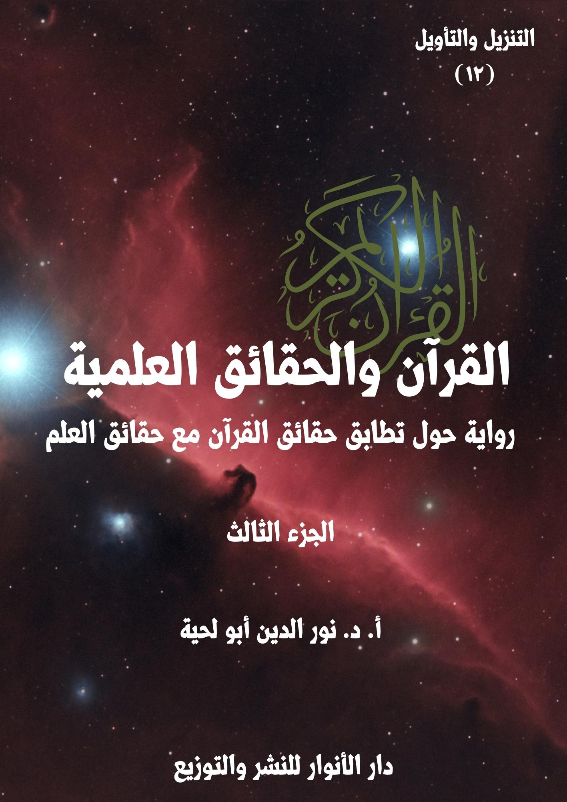

الكتاب: القرآن.. والحقائق العلمية ج3
الوصف: رواية حول تطابق حقائق القرآن مع حقائق العلم
السلسلة: التنزيل والتأويل
المؤلف: أ. د. نور الدين أبو لحية
الناشر: دار الأنوار للنشر والتوزيع
الطبعة: الأولى، 1444 هـ
عدد الصفحات: 618 <
ISBN: 978-620-4-72102-6
لمطالعة الكتاب من تطبيق مؤلفاتي المجاني وهو أحسن وأيسر: هنا

يحاول هذا الكتاب بيان مطابقة القرآن الكريم للحقائق العلمية الحديثة، وفي الجوانب الكونية المختلفة ابتداء من السماء، وانتهاء بالإنسان، وقد حاولنا أن نستوعب فيه أكثر ما طرح في هذا الجانب من النواحي التالية:
1. محاولة ذكر المواقف المختلفة من التفسير العلمي للقرآن الكريم، سواء من الناحية العامة، أو عند الحديث عند كل آية، لنترك للقارئ حرية الترجيح بينها.
2. ذكر ما ورد في التفاسير القرآنية القديمة والحديثة حول الآيات المتعلقة بالحقائق العلمية، مع ذكر ما ذكرته الدراسات العلمية الحديثة بشأنها.
3. توفير ثقافة علمية للقارئ ترتبط بمعاني الآيات الكريمة التي يتلوها، ولهذا حاولنا أن نفسر كل الآيات التي ذكرت الحقائق المرتبطة بالكون، مع ذكر التفاصيل العلمية الكثيرة الواردة بشأنها، والرجوع للمصادر العلمية الموثوقة في ذلك.
4. محاولة تبسيط المادة العلمية المرتبطة بهذا سواء من خلال تبسيط الفهوم والتفسيرات، أو ذكر الحقائق العلمية.
5. الرد على التفاسير المسيئة للقرآن الكريم، من خلال تحميلها له ما لا يحتمل، أو من خلال الاعتماد على معلومات غير صحيحة، وتطبيقها على القرآن الكريم.
6. محاولة الجمع بين جوانب الهداية المرتبطة بالآيات الكريمة التي نفسرها، والجوانب العلمية، حتى نبين أن المقصود من الآيات الكريمة ليس معانيها العلمية، وإنما جوانب الهداية فيها، والجوانب العلمية مجرد أمثلة ودلائل.
القرآن.. والحقائق العلمية (3/11)
يتناول هذا الجزء من كتاب [القرآن والحقائق العلمية] الفصول التالية:
الفصل السادس: وتناولنا فيه الآيات الكريمة التي تتحدث عن الجبال ونشأتها وهيئتها وما يرتبط بها، وعلاقتها خصوصا بالحقائق التي ذكرها العلماء المختصون.
الفصل السابع: وتناولنا فيه الآيات الكريمة التي تتحدث عن البحار وأوصافها وما يرتبط بها، وعلاقتها خصوصا بالحقائق التي ذكرها علماء البحار.
الفصل الثامن: وتناولنا فيه الآيات الكريمة التي تتحدث عن المياه وأهميتها ودورتها وأوصافها وما يرتبط بها من السحب وأنواعها وغير ذلك، وعلاقتها خصوصا بالحقائق التي ذكرها العلماء المختصون.
الفصل التاسع: وتناولنا فيه الآيات الكريمة التي تتحدث عن الرياح وأوصافها ووظائفها وما يرتبط بها، وعلاقتها خصوصا بالحقائق التي ذكرها العلماء المختصون.
الفصل العاشر: وتناولنا فيه الآيات الكريمة التي تتحدث عن النباتات وأوصافها وأنواعها وما يرتبط بها، وعلاقتها خصوصا بالحقائق التي ذكرها علماء النبات والأغذية والصحة نحوها، وقد ذكرنا فيه جميع ما ورد في القرآن الكريم من النباتات مع التفسير والحقائق العلمية المرتبطة بها، وقد رجعنا فيه خصوصا للمواقع العلمية الرسمية المهتمة بالحديث عن النباتات وأدوارها الغذائية والصحية، ولم نكتف بالمعلومات التي ذكرها السابقون والمعاصرون، باعتبار التطور العلمي في هذه الجوانب.
ونحب أن نعيد هنا ـ من باب التذكير ـ ما ذكرناه في مقدمة الجزء الأول من أغراض الكتاب ومنهجه، وباختصار، وخاصة للذين لم يتسن لهم أن يطلعوا عليها، فهذا الكتاب ـ
القرآن.. والحقائق العلمية (3/12)
بأجزائه الخمسة ـ يحاول أن يستوعب أكثر ما طرح حول التفسير العلمي للقرآن الكريم، وذلك من النواحي التالية:
1. محاولة ذكر المواقف المختلفة من التفسير العلمي للقرآن الكريم، سواء من الناحية العامة، أو عند الحديث عند كل آية كريمة، لنترك للقارئ حرية الترجيح والاختيار بينها.
2. الرد على المنكرين لتفسير القرآن الكريم وفق ما ورد في العلم الحديث مطلقا، حتى لو كانت الآيات الكريمة واضحة في دلالتها، والعلم قطعيا في ثبوته، سواء من خلال ذكر أقوال المفسرين المعتبرين، أو من خلال ذكر الحقائق العلمية وربطها بما ورد في القرآن الكريم، ومساعدة اللغة العربية على ذلك.
3. تأييد ما ورد من ربط للقرآن الكريم بالحقائق العلمية، ما دامت الآيات واضحة الدلالة، والحقائق العلمية ثابتة ومتفق عليها عند جماهير العلماء.
4. ذكر ما ورد في تفاسير القرآن الكريم القديمة والحديثة حول الآيات المتعلقة بالحقائق العلمية، ولم نراع في ذلك دقة المعلومات التي أوردها المفسرون، أو اتفاقها مع ما ورد في مكتشفات العلم الحديث، لأن الهدف هو بيان اهتمام العلماء بتفسير الآيات التي نتحدث عنها بما يتوافق مع العلم.
5. الابتعاد عن الصيغة التي درج عليها الكثير من الكتاب في هذا المجال عند طرحهم للحقائق العلمية المقترنة بالقرآن الكريم، من ذكر كونها سبقا علميا، ونحو ذلك، لأنا رأينا أن مثل هذا يبقى نتيجة يستنتجها القارئ من غير أن ينبه إليها كل حين.
6. توفير ثقافة علمية للقارئ ترتبط بمعاني الآيات الكريمة التي يتلوها، ولهذا حاولنا أن نفسر الآيات التي ذكرت الحقائق الكونية، بغض النظر عن ذكرها لأي حقيقة
القرآن.. والحقائق العلمية (3/13)
علمية.
7. محاولة تبسيط المادة العلمية المرتبطة بهذا سواء من خلال تبسيط الفهوم والتفسيرات، أو ذكر الحقائق العلمية، ولهذا اعتمدنا في هذا أسلوبا خاصة في الرواية.
8. الرد على التفاسير المسيئة للقرآن الكريم، من خلال تحميلها له ما لا يحتمل، أو من خلال الاعتماد على معلومات غير صحيحة، وتطبيقها على القرآن الكريم، وادعاء السبق له فيها.
9. محاولة الجمع بين جوانب الهداية المرتبطة بالآيات الكريمة التي نفسرها، والجوانب العلمية، ذلك أن الجوانب العلمية مجرد أمثلة ودلائل.
القرآن.. والحقائق العلمية (3/14)
بعد انتهاء العلماء من ردّ الدعاوى التي ادعاها عليهم خصومهم بشأن ما ورد في القرآن الكريم من الحديث عن الأرض، وما أودع الله فيها من الخصائص والصفات والنعم، قال القاضي: بعد سماعنا لما ذكرتموه من الفهوم المرتبطة بالآيات الكريمة التي تتحدث عن الأرض، وعلاقة فهمها بمكتشفات العلم الحديث.. ننتقل في هذه الجلسة إلى الحديث عما ورد في القرآن الكريم من الآيات الكريمة التي تتحدث عن الجبال، وما ورد فيها من الأوصاف، ومدى تطابقها مع الكشوفات العلمية الحديثة.
قال ذلك، ثم التفت للعلماء، وقال: لقد اتهمكم المخالفون لكم بأنكم زججتم بالآيات الكريمة التي تحدثت عن الجبال في محال لا علاقة لها بها، فحمّلتموها ما لا تحتمل، ثم رحتم تعاتبون المفسرين على تقصيرهم في فهمها.
قال أحد العلماء: معاذ الله أن نفعل ذلك.. بل نحن لم نقم سوى بفهم تلك الآيات الكريمة على ضوء ما اكتشف من العلم الحديث، من غير أن نعتب على العلماء السابقين، ولا أن نلومهم.. وكيف نلومهم على الحديث عن شيء لم يحن حينه؟
قال آخر: ونحن لم نفعل سوى أن طبقنا ما أمرنا ربنا به من النظر في الجبال حين قال: ﴿أَفَلَا يَنْظُرُونَ إلى الْإِبِلِ كَيْفَ خُلِقَتْ وَإِلَى السَّمَاءِ كَيْفَ رُفِعَتْ وَإِلَى الْجِبَالِ كَيْفَ نُصِبَتْ﴾ [الغاشية: 17 ـ 19]، وقد أدانا البحث والنظر فيها إلى التعرف على الكثير من الحقائق بشأنها، وقد وجدناها مطابقة تماما لما ورد في القرآن الكريم بشأنها.
قال آخر(1): وقد رأينا كذلك اهتمام القرآن الكريم بها، فقد وردت كلمة (جَبَلٍ)
__________
(1) مفاهيم قرآنية: (3/ 76)
القرآن.. والحقائق العلمية (3/15)
وصيغها في القرآن الكريم تسعا وثلاثين مرة، فقد ذكر الله تعالى عملية تكوين الجبال وأصل نشأتها في قوله: ﴿وَالْأَرْضَ مَدَدْنَاهَا وَأَلْقَيْنَا فِيهَا رَوَاسِيَ﴾ [ق: 7]، وقوله: ﴿وَأَلْقَى فِي الْأَرْضِ رَوَاسِيَ﴾ [لقمان: 10]
قال آخر: وذكر دورها في التوازن الذي حصل ويحصل للأرض، لتصبح أهلا للحياة، فقال: ﴿وَأَلْقَى فِي الْأَرْضِ رَوَاسِيَ أَنْ تَمِيدَ بِكُمْ﴾ [لقمان: 10]، وقال: ﴿أَلَمْ نَجْعَلِ الْأَرْضَ مِهَادًا وَالْجِبَالَ أَوْتَادًا﴾ [النبأ: 6 ـ 7]
قال آخر: وذكر علاقتها بالأنهار، فقال: ﴿وَهُوَ الَّذِي مَدَّ الْأَرْضَ وَجَعَلَ فِيهَا رَوَاسِيَ وَأَنْهَارًا﴾ [الرعد: 3]، وقال: ﴿وَأَلْقَى فِي الْأَرْضِ رَوَاسِيَ أَنْ تَمِيدَ بِكُمْ وَأَنْهَارًا﴾ [النحل: 15]، وقال: ﴿وَجَعَلْنَا فِيهَا رَوَاسِيَ شَامِخَاتٍ وَأَسْقَيْنَاكُمْ مَاءً فُرَاتًا﴾ [المرسلات: 27]
قال آخر: وذكر اختلاف ألوانها، فقال: ﴿وَمِنَ الْجِبَالِ جُدَدٌ بِيضٌ وَحُمْرٌ مُخْتَلِفٌ أَلْوَانُهَا وَغَرَابِيبُ سُودٌ﴾ [فاطر: 27]
قال آخر: وذكر علاقتها بالإنسان، فتحدث عن اتخاذ الإنسان لها كحصون وبيوت للسكن، فقال عن ابن نوح عليه السلام: ﴿قَالَ سَآوِي إلى جَبَلٍ يَعْصِمُنِي مِنَ الْمَاءِ﴾ [هود: 43]
قال آخر: وقال: ﴿وَاللَّهُ جَعَلَ لَكُمْ مِمَّا خَلَقَ ظِلَالًا وَجَعَلَ لَكُمْ مِنَ الْجِبَالِ أَكْنَانًا﴾ [النحل: 81]، أي مواضع تستكنون بها من الكهوف والبيوت المنحوتة فيها.
قال آخر: وقال عن قبيلة ثمود قوم نبي الله صالح: ﴿وَتَنْحِتُونَ مِنَ الْجِبَالِ بُيُوتًا فَارِهِينَ﴾ [الشعراء: 149]، وقال: ﴿وَكَانُوا يَنْحِتُونَ مِنَ الْجِبَالِ بُيُوتًا آمِنِينَ﴾ [الحجر: 82]، وكانوا ينحتون الجبال، فيتخذون منها بيوتا، وهم آمنون من أن تسقط عليهم أو تخرب.
قال آخر: ولم يكتف بذلك، بل حببنا الله تعالى فيها حين ذكر خشوعها وخضوعها
القرآن.. والحقائق العلمية (3/16)
لله، فقال: ﴿لَوْ أَنْزَلْنَا هَذَا الْقُرْآنَ عَلَى جَبَلٍ لَرَأَيْتَهُ خَاشِعًا مُتَصَدِّعًا مِنْ خَشْيَةِ اللَّهِ﴾ [الحشر: 21]
قال آخر: وذكر ورعها وإشفاقها من حمل الأمانة، فقال: ﴿إِنَّا عَرَضْنَا الْأَمَانَةَ عَلَى السَّمَاوَاتِ وَالْأَرْضِ وَالْجِبَالِ فَأَبَيْنَ أَنْ يَحْمِلْنَهَا وَأَشْفَقْنَ مِنْهَا وَحَمَلَهَا الْإِنْسَانُ إِنَّهُ كَانَ ظَلُومًا جَهُولًا﴾ [الأحزاب: 72]
قال آخر: وذكر تسبيحها وتأويبها، فقال: ﴿وَسَخَّرْنَا مَعَ دَاوُودَ الْجِبَالَ يُسَبِّحْنَ﴾ [الأنبياء: 79]، وقال: ﴿وَلَقَدْ آتَيْنَا دَاوُودَ مِنَّا فَضْلًا يَا جِبَالُ أَوِّبِي مَعَهُ﴾ [سبأ: 10]، وقال: ﴿إِنَّا سَخَّرْنَا الْجِبَالَ مَعَهُ يُسَبِّحْنَ بِالْعَشِيِّ وَالْإِشْرَاقِ﴾ [ص: 18]
قال آخر: بل ذكر سجودها، فقال: ﴿أَلَمْ تَرَ أَنَّ اللَّهَ يَسْجُدُ لَهُ مَنْ فِي السَّمَاوَاتِ وَمَنْ فِي الْأَرْضِ وَالشَّمْسُ وَالْقَمَرُ وَالنُّجُومُ وَالْجِبَالُ وَالشَّجَرُ وَالدَّوَابُّ وَكَثِيرٌ مِنَ النَّاسِ وَكَثِيرٌ حَقَّ عَلَيْهِ الْعَذَابُ﴾ [الحج: 18]
قال آخر: وذكر توحيدها لله، فقال: ﴿وَقَالُوا اتَّخَذَ الرَّحْمَنُ وَلَدًا لَقَدْ جِئْتُمْ شَيْئًا إِدًّا تَكَادُ السَّمَاوَاتُ يَتَفَطَّرْنَ مِنْهُ وَتَنْشَقُّ الْأَرْضُ وَتَخِرُّ الْجِبَالُ هَدًّا﴾ [مريم: 88 ـ 90]
قال آخر: وذكر معرفتها بالله، فقال: ﴿وَلَمَّا جَاءَ مُوسَى لِمِيقَاتِنَا وَكَلَّمَهُ رَبُّهُ قَالَ رَبِّ أَرِنِي أَنْظُرْ إِلَيْكَ قَالَ لَنْ تَرَانِي وَلَكِنِ انْظُرْ إلى الْجَبَلِ فَإِنِ اسْتَقَرَّ مَكَانَهُ فَسَوْفَ تَرَانِي فَلَمَّا تَجَلَّى رَبُّهُ لِلْجَبَلِ جَعَلَهُ دَكًّا وَخَرَّ مُوسَى صَعِقًا فَلَمَّا أَفَاقَ قَالَ سُبْحَانَكَ تُبْتُ إِلَيْكَ وَأَنَا أَوَّلُ الْمُؤْمِنِينَ﴾ [الأعراف: 143]
قال آخر: وذكر مصيرها في الآخرة بصيغ مختلفة، ومنها دكها، فقال: ﴿فَإِذَا نُفِخَ فِي الصُّورِ نَفْخَةٌ وَاحِدَةٌ وَحُمِلَتِ الْأَرْضُ وَالْجِبَالُ فَدُكَّتَا دَكَّةً وَاحِدَةً فَيَوْمَئِذٍ وَقَعَتِ الْوَاقِعَةُ﴾ [الحاقة: 13 ـ 15]
قال آخر: ومنها أنها تتحول إلى كثيب مهيل، فقال: ﴿يَوْمَ تَرْجُفُ الْأَرْضُ وَالْجِبَالُ
القرآن.. والحقائق العلمية (3/17)
وَكَانَتِ الْجِبَالُ كَثِيبًا مَهِيلًا﴾ [المزمل: 14]
قال آخر: ومنها أنها تتحول إلى ما يشبه الصوف، فقال: ﴿وَتَكُونُ الْجِبَالُ كَالْعِهْنِ﴾ [القارعة: 5]، وقال: ﴿وَتَكُونُ الْجِبَالُ كَالْعِهْنِ الْمَنْفُوشِ﴾ [القارعة: 5]
قال آخر: ومنها أنها تتحول إلى هباء منبث، فقال: ﴿وَبُسَّتِ الْجِبَالُ بَسًّا فَكَانَتْ هَبَاءً مُنْبَثًّا﴾ [الواقعة: 5 ـ 6]
قال آخر: ومنها أنها تنسف، كما قال تعالى: ﴿وَإِذَا الْجِبَالُ نُسِفَتْ﴾ [المرسلات: 10]، وقال: ﴿وَيَسْأَلُونَكَ عَنِ الْجِبَالِ فَقُلْ يَنْسِفُهَا رَبِّي نَسْفًا فَيَذَرُهَا قَاعًا صَفْصَفًا لَا تَرَى فِيهَا عِوَجًا وَلَا أَمْتًا﴾ [طه: 105 ـ 107]
قال آخر: ومنها أنها تسيّر، كما قال تعالى: ﴿وَيَوْمَ نُسَيِّرُ الْجِبَالَ﴾ [الكهف: 47]، وقال: ﴿وَإِذَا الْجِبَالُ سُيِّرَتْ﴾ [التكوير: 3]، وقال: ﴿وَسُيِّرَتِ الْجِبَالُ فَكَانَتْ سَرَابًا﴾ [النبأ: 20]، وقال: ﴿يَوْمَ تَمُورُ السَّمَاءُ مَوْرًا وَتَسِيرُ الْجِبَالُ سَيْرًا﴾ [الطور: 9 ـ 10]
قال آخر: وقد حركتنا كل هذه الآيات الكريمة إلى البحث عن الجبال، وفي جميع المصادر العلمية، فوجدنا فيها ما زادنا إيمانا بما ورد فيها من الحقائق، إذ أننا لم نر فيها إلا ما أكده العلم وأثبته، ولم نر فيها أي خرافة من تلك الخرافات التي كانت سائدة في تلك العصور.
قال آخر: ولم نكتف بما علمنا، بل رحنا نبشر به، ونعلمه للناس، وقد وجدنا من أهل العلم منهم خصوصا الكثير من أنواع الاستجابة، لأنهم وجدوا أن كلام ربهم ينطبق تماما مع ما وصلوا إليه، وبعد سنين طويلة من البحث الدؤوب.
القرآن.. والحقائق العلمية (3/18)
قال القاضي: انطلاقا مما ذكرتم، نريد أن نسمع منكم، ومن المدّعين عليكم، الحديث عن الآيات الكريمة التي ورد الخلاف في شأن التفسير العلمي لها.
قال أحد المدّعين، وكان من المشككّين: أجل.. وأولها ما ورد في القرآن من الحديث عن الأرض والجبال، وكأنهما شيئان مختلفان، أو كأن الجبال ليست جزءًا من الأرض، فقد ورد فيه: ﴿وَحُمِلَتِ الْأَرْضُ وَالْجِبَالُ فَدُكَّتَا دَكَّةً وَاحِدَةً﴾ [الحاقة: 14]، فهذا العطف يفيد أن القرآن لا يتحدث عن الأرض بوصفها كوكبا، وهذا يدل على أن معارفه بدائية لا تكاد تتجاوز حدود البيئة الصادر فيها.
قال آخر: ومثل ذلك ما ورد فيه من التفريق بينهما في قوله: ﴿إِنَّا عَرَضْنَا الْأَمَانَةَ عَلَى السَّمَاوَاتِ وَالْأَرْضِ وَالْجِبَالِ فَأَبَيْنَ أَنْ يَحْمِلْنَهَا﴾ [الأحزاب: 72]، وقوله: ﴿يَوْمَ تَرْجُفُ الْأَرْضُ وَالْجِبَالُ﴾ [المزمل: 14]، وقوله: ﴿أَلَمْ تَرَ أَنَّ اللَّهَ يَسْجُدُ لَهُ مَنْ فِي السَّمَاوَاتِ وَمَنْ فِي الْأَرْضِ وَالشَّمْسُ وَالْقَمَرُ وَالنُّجُومُ وَالْجِبَالُ﴾ [الحج: 18]، وقوله: ﴿وَحُمِلَتِ الْأَرْضُ وَالْجِبَالُ فَدُكَّتَا دَكَّةً وَاحِدَةً﴾ [الحاقة: 14]
قال آخر: فلو تأملنا هذه الآيات لوجدنا أن لفظة الجبال قد وردت معطوفة على الأرض مع كونها جزءًا منها.. أفلا يدل هذا على أن حديث القرآن عن الجبال والأرض حديث بين شيئين مختلفين.
التفت القاضي إلى العلماء، وقال: لقد سمعتم ما ذكروا، فبم تجيبونهم؟
قال أحد العلماء: لقد عرفنا في حديثنا عن الأرض وحديث القرآن الكريم عنها أنه يقصد بها معاني متعددة، فهو قد يقصد بها كوكب الأرض جميعا بما فيه من جبال وغيرها، كما قال تعالى: ﴿وَإِذَا قِيلَ لَهُمْ لَا تُفْسِدُوا فِي الْأَرْضِ قَالُوا إِنَّمَا نَحْنُ مُصْلِحُونَ﴾ [البقرة: 11]،
القرآن.. والحقائق العلمية (3/19)
وقال: ﴿هُوَ الَّذِي خَلَقَ لَكُمْ مَا فِي الْأَرْضِ جَمِيعًا ثُمَّ اسْتَوَى إلى السَّمَاءِ فَسَوَّاهُنَّ سَبْعَ سَمَاوَاتٍ وَهُوَ بِكُلِّ شَيْءٍ عَلِيمٌ﴾ [البقرة: 29]، وقال: ﴿وَإِذْ قَالَ رَبُّكَ لِلْمَلَائِكَةِ إِنِّي جَاعِلٌ فِي الْأَرْضِ خَلِيفَةً قَالُوا أَتَجْعَلُ فِيهَا مَنْ يُفْسِدُ فِيهَا وَيَسْفِكُ الدِّمَاءَ وَنَحْنُ نُسَبِّحُ بِحَمْدِكَ وَنُقَدِّسُ لَكَ قَالَ إِنِّي أَعْلَمُ مَا لَا تَعْلَمُونَ﴾ [البقرة: 30]
قال آخر: وقد يطلق هذا اللفظ، ويريد به محلا معينا منها، كما قال تعالى: ﴿إِنَّ الَّذِينَ تَوَفَّاهُمُ الْمَلَائِكَةُ ظَالِمِي أَنْفُسِهِمْ قَالُوا فِيمَ كُنْتُمْ قَالُوا كُنَّا مُسْتَضْعَفِينَ فِي الْأَرْضِ قَالُوا أَلَمْ تَكُنْ أَرْضُ اللَّهِ وَاسِعَةً فَتُهَاجِرُوا فِيهَا فَأُولَئِكَ مَأْوَاهُمْ جَهَنَّمُ وَسَاءَتْ مَصِيرًا﴾ [النساء: 97]، وقال: ﴿وَمَنْ يُهَاجِرْ فِي سَبِيلِ اللَّهِ يَجِدْ فِي الْأَرْضِ مُرَاغَمًا كَثِيرًا وَسَعَةً وَمَنْ يَخْرُجْ مِنْ بَيْتِهِ مُهَاجِرًا إلى اللَّهِ وَرَسُولِهِ ثُمَّ يُدْرِكْهُ الْمَوْتُ فَقَدْ وَقَعَ أَجْرُهُ عَلَى اللَّهِ وَكَانَ اللَّهُ غَفُورًا رَحِيمًا﴾ [النساء: 100]، وقال: ﴿فَبَعَثَ اللَّهُ غُرَابًا يَبْحَثُ فِي الْأَرْضِ لِيُرِيَهُ كَيْفَ يُوَارِي سَوْءَةَ أَخِيهِ قَالَ يَا وَيْلَتَا أَعَجَزْتُ أَنْ أَكُونَ مِثْلَ هَذَا الْغُرَابِ فَأُوَارِيَ سَوْءَةَ أَخِي فَأَصْبَحَ مِنَ النَّادِمِينَ﴾ [المائدة: 31]
قال آخر: وقد يطلق هذا اللفظ، ويقصد به المحال الصالحة والمهيأة للسكن، وفي هذه الحال قد يقرنها بالجبال، باعتبار صعوبة السكن فيها، ومن ذلك كل الآيات الكريمة التي استدلوا بها.
قال آخر: وهذا يشير إلى أن الأرض ـ وهي المحل المهيأ لسكن الإنسان ـ والجبال جزءان متكاملان، لأن للجبال أدوارا كبيرة في تهيئة تلك المحال التي يعيش فيها الإنسان.
قال آخر: وقد أشار إلى هذا الشيرازي في تفسيره لقوله تعالى: ﴿وَهُوَ الَّذِي مَدَّ الْأَرْضَ وَجَعَلَ فِيهَا رَوَاسِيَ وَأَنْهَارًا وَمِنْ كُلِّ الثَّمَرَاتِ جَعَلَ فِيهَا زَوْجَيْنِ اثْنَيْنِ يُغْشِي اللَّيْلَ النَّهَارَ إِنَّ فِي ذَلِكَ لَآيَاتٍ لِقَوْمٍ يَتَفَكَّرُونَ﴾ [الرعد: 3]، حيث قال: (﴿وَهُوَ الَّذِي مَدَّ الْأَرْضَ﴾ وبسطها بالشكل الذي تتهيأ فيه لحياة الإنسان ونمو النباتات والحيوانات، وملأ الأودية
القرآن.. والحقائق العلمية (3/20)
والمنحدرات الصعبة بالتراب من خلال تفتت الصخور الجبلية، وجعل الأرض مسطحة وقابلة للسكن، بعد أن كانت التضاريس مانعة من سكن الإنسان عليها.. وقد يحتمل في تفسير هذه الجملة ﴿مَدَّ الْأَرْضَ﴾ الإشارة إلى ما يقوله علماء الطبيعة من أن الأرض كانت مغطاة بالماء، ثم استقرت المياه في الوديان ظهرت اليابسة، وبمرور الوقت اتسعت حتى أصبحت على ما نراه اليوم)(1)
قال آخر: ثم قال: (ثم يشير القرآن الكريم إلى ظهور الجبال ﴿وَجَعَلَ فِيهَا رَوَاسِيَ﴾ فهي تلك الجبال التي عبرت عنها في آيات أخرى بـ ﴿الْأَوْتَادِ﴾ ولعل ذلك إشارة إلى أنها متشابكة فيما بينها من الأسفل مثلها مثل الدرع الواقي وتغطي سطح الأرض، فهي تبطل الضغوط الداخلية في الأسفل والضغط الخارجي المتمثل بجاذبية القمر والمد والجزر، وكذلك تقضي على الاضطرابات والزلازل، وتجعل الأرض مستقرة وساكنة وصالحة لحياة الإنسان)(2)
قال آخر: ثم قال: (إن ذكر القرآن الكريم الجبال بعد مد الأرض يحتمل أن يكون المراد منه أن الأرض ليست منبسطة بشكل تام بحيث تنعدم فيها المرتفعات، ففي هذه الصورة لا تستقر فيها الأمطار والمياه، أو تتحول إلى مستنقعات وتجري فيها السيول وتتعرض للطوفانات الدائمة، فخلق الجبال لتأمن البشرية من هذين الأمرين)(3)
قال آخر: ثم قال: (وليست الأرض كلها جبالا ووديانا فتكون غير قابلة للسكن، بل تحتوي على مناطق منبسطة ومناطق جبلية ووديان، وهذه أفضل صيغة لحياة الإنسان
__________
(1) الأمثل في تفسير كتاب الله المنزل: (7/ 331)
(2) الأمثل في تفسير كتاب الله المنزل: (7/ 331)
(3) الأمثل في تفسير كتاب الله المنزل: (7/ 331)
القرآن.. والحقائق العلمية (3/21)
والكائنات الحية)(1)
قال آخر: وقال فضل الله: (﴿وَهُوَ الَّذِي مَدَّ الْأَرْضَ﴾ وبسطها بطريقة دقيقة صالحة للعيش وللنموّ والحركة للموجودات التي أراد لها الله أن تعيش فيها من إنسان وحيوان ونبات يحتاج وجودها إلى قواعد ثابتة في العمق والامتداد، ﴿وَجَعَلَ فِيهَا رَوَاسِيَ﴾ بما أودعه فيها من جبال ضاربة في أعماق الأرض وشامخة في أعالي الفضاء، لتحقق التوازن الذي يركّز للأرض الثبات والصلابة، حتى لا تسقطها زلازل، ولا تهزّها براكين، حفاظا على طبيعتها الممتدّة المنتجة)(2)
قال آخر: وقال المراغي في تفسيرها: (﴿وَهُوَ الَّذِي مَدَّ الْأَرْضَ﴾ أي جعلها متسعة ممتدة في الطول والعرض، لتثبت عليها الأقدام، ويتقلب عليها الحيوان، وينتفع الناس بخيراتها زرعها وضرعها، وبما في باطنها من معادن جامدة وسائلة، ويسيرون في أكنافها يبتعون رزق ربهم منها، ولا شك أن الأرض لعظم سطحها هي في رأى العين كذلك، وهذا لا يمنع كرويتها التي قد قامت عليها الأدلة لدى علماء الفلك ولم يبق لديهم فيها ريب.. ﴿وَجَعَلَ فِيهَا رَوَاسِيَ﴾ أي وأرساها بجبال راسيات شامخات لا تنتقل ولا تتحرك حتى لا تميد وتضطرب)(3)
قال آخر: وقال الخطيب: (ومن مظاهر قدرة الله، تلك الآيات الكونية المفصلة، فهو سبحانه: ﴿الَّذِي مَدَّ الْأَرْضَ﴾ أي بسطها وذللها، ﴿وَجَعَلَ فِيهَا رَوَاسِيَ﴾ أي جبالا راسية، ثابتة، مستقرة، كما ترسو السفن على المرافئ الآمنة)(4)
__________
(1) الأمثل في تفسير كتاب الله المنزل: (7/ 331)
(2) من وحي القرآن: (13/ 17)
(3) تفسير المراغي (13/ 66)
(4) التفسير القرآني للقرآن (7/ 67)
القرآن.. والحقائق العلمية (3/22)
قال آخر: بالإضافة إلى ذلك، فإن قواعد اللغة العربية تدل على هذا، ذلك أننا عندما نقول: (أعط زيدًا وعمرًا) نجد أن الواو في مكانها أفادت التشريك بين زيد وعمرو في الإعطاء، وهذا لا يعارض المغايرة، بل يثبتها، فإن التشريك بين شيئين يقتضي تغاير هذين الشيئين ابتداء؛ فالمتعاطفان هنا قد تغايرا ذاتًا واشتركا حكمًا.. فقد تغاير زيد وعمرو فيما سيعطى لهما، واشتركا في حكم الإعطاء.
قال آخر: وكذلك عطف الجبال على الأرض؛ فقد اشتركا في الحكم، والحكم يختلف حسب وروده في الآيات، فمنها الحمل، والرجف، والسجود، وغيرها.. ثم تغايرا في الذات؛ إذ اختلفت الجبال في وظيفتها المحددة لها عن الأرض، ويتجلى ذلك في سورة النبأ؛ إذ تعطينا الدليل على اختلاف كل من الأرض والجبال في خصائص وصفات كثيرة، كما قال تعالى: ﴿أَلَمْ نَجْعَلِ الْأَرْضَ مِهَادًا وَالْجِبَالَ أَوْتَادًا﴾ [النبأ: 6 ـ 7]
قال آخر: فالأرض هي المهاد الذي نعيش فيه وتنتظم حياتنا به؛ فالله تعالى مهد الأرض وهيأها وجعلها صالحة للإعاشة، بينما وفر للجبال من الوظائف ما تؤمن للأرض تلك الخصائص التي تجعلها أهلا للسكنى.
قال آخر: وقد أشار القاسمي إلى هذا، فقال: (﴿أَلَمْ نَجْعَلِ الْأَرْضَ مِهَادًا﴾ [النبأ: 6] أي فراشا وموطئا تتمهدونها وتفترشونها ﴿وَالْجِبَالَ أَوْتَادًا﴾ [النبأ: 7] أي للأرض، أي أرسيناها بالجبال كما يرسي البيت بالأوتاد، حتى لا تميد بأهلها فيكمل كون الأرض مهادا بسبب ذلك)(1)
قال آخر: وقال الخطيب: (فهذه الأرض، قد جعلها الله بقدرته القادرة ﴿مِهَادًا﴾ أي
__________
(1) تفسير القاسمي (9/ 389)
القرآن.. والحقائق العلمية (3/23)
فراشا ممهدا، وبساطا ممدودا، يتحرك فيها الإنسان، ويسلك مسالكها، ويجد وسائل العيش والحياة فيها.. وهذه الجبال، قد جعلها الله سبحانه ﴿أَوْتَادًا﴾ تمسك الأرض، حتى لا تميد وتضطرب.. إنها أشبه بالأوتاد التي تشد الخيمة، وتمسك بها)(1)
قال القاضي: وعينا ما ذكرتم من فهوم المفسرين للآية الكريمة، فما الذي أضفتم إلى ما فهموه منها، مما أنكره عليكم المدّعون عليكم؟
قال أحد العلماء: نحن لم نضف شيئا سوى أننا قمنا بتحديث المعلومات التي ذكرها من سبقنا، لتتناسب مع عصرنا، ومع المكتشفات التي جدّت؛ فنحن مطالبون بأن نخاطب الناس على قدر عقولهم وأزمنتهم.
قال آخر(2): ومن ذلك أنا علمنا أن الجبال إحدى مظاهر الطبيعة الأكثر جمالا وروعة، ووجودها ضروري جدًّا لاستقرار الأرض والحياة على ظهرها، فهي تعمل على تثبيت القشرة الأرضية؛ بسبب شكلها وأوتادها العميقة في الأرض؛ إذ ثبت علميًّا في عام 1956م أن الجبل له جذر يخترق طبقات الأرض ويمتد تحت سطح الأرض حتى يصل إلى طبقة الغطاء (السيما)، وهذا الجذر يعادل من 5 إلى 10 أضعاف الجبل فوق سطح الأرض.
__________
(1) التفسير القرآني للقرآن (16/ 1414)
(2) انظر المادة العلمية المرتبطة بهذا في: موسوعة بيان الإسلام الرد على الافتراءات والشبهات، نخبة من كبار العلماء.. والموسوعة الكونية الكبرى: آيات الله في الجبال والصحاري والغابات وفي النبات والثمار والأزهار والألوان، د. ماهر أحمد الصوفي، ج9، ص74.. والموسوعة الذهبية في إعجاز القرآن الكريم والسنة النبوية، د. أحمد مصطفى متولي، ص211.. والجبال ورسالات الأنبياء، د. أحمد شوقي إبراهيم، ص72.. ونشوء الجبال، عبد الدائم الكحيل، بحث منشور بموقعه.. وما هو الكوكب وما هو النجم؟ مقال منشور بالمنتدى الإسلامي.. ومن آيات الإعجاز العلمي: الأرض في القرآن الكريم، د. زغلول النجار، ص252.. والإعجاز القرآني في ضوء الاكتشاف العلمي الحديث، مروان وحيد شعبان التفتنازي، ص348.. وآيات الله في الجبال، عبد الدائم الكحيل، بحث منشور بموقعه.. والمعارف الكونية بين العلم والقرآن، د. منصور محمد حسب النبي، ص314.. والقرآن الكريم والعلم الحديث، د. منصور محمد حسب النبي، ص46.. وإرساء الأرض بالجبال، من محاضرات ألقاها د. زغلول النجار في شهر رمضان سنة 1424هـ/ 2003م، مجمع البحوث الإسلامية، ص131: 133، والجبال أوتاد، عبد الدائم الكحيل، بحث منشور بموقعه.
القرآن.. والحقائق العلمية (3/24)
قال آخر: كما أن الجبال تساهم في تشكل الغيوم ودفع الرياح؛ بسبب شكلها الانسيابي فتكون بذلك سببًا في هطول المطر؛ إذ إن قمم الجبال تكون مغطاة بالغيوم معظم أيام السنة، وذلك بسبب تصميم الجبال الذي يعمل كمصد للهواء ينزلق على سطحه ثم يساهم الشكل الانسيابي للجبل في تسريع تيارات الهواء المحملة ببخار الماء.
قال آخر: كما أثبت العلم الحديث أن الجبال تساهم في تصفية المياه وتنقيتها؛ بسبب الطبقات المتعددة فيها، كما يشير إلى ذلك قوله تعالى: ﴿وَجَعَلْنَا فِيهَا رَوَاسِيَ شَامِخَاتٍ وَأَسْقَيْنَاكُمْ مَاءً فُرَاتًا﴾ [المرسلات: 27]
قال آخر: كما أن الجبال تساهم في توازن الغطاء النباتي؛ بسبب شكلها المميز وما تختزنه من مياه؛ ولذلك قال تعالى: ﴿وَالْأَرْضَ مَدَدْنَاهَا وَأَلْقَيْنَا فِيهَا رَوَاسِيَ وَأَنْبَتْنَا فِيهَا مِنْ كُلِّ شَيْءٍ مَوْزُونٍ﴾ [الحجر: 19]
قال آخر: ولولا الجبال لما أمكن للطرق الممهدة أن تتشكل؛ لأن الذي يدرس تاريخ تشكل الأرض خلال مئات السنين يدرك أهمية اصطدام الألواح الأرضية في تشكل سلاسل من الهضاب أو الجبال، وفسح المجال أمام المياه لتتدفق وتشكل الأنهار، كما تفسح المجال أيضًا لتتشكل الفجاج العريضة، والطرق الميسرة، والتي ساعدت البشر على سهولة التنقل لآلاف السنين، كما يشير إلى ذلك قوله تعالى: ﴿وَجَعَلْنَا فِي الْأَرْضِ رَوَاسِيَ أَنْ تَمِيدَ بِهِمْ وَجَعَلْنَا فِيهَا فِجَاجًا سُبُلًا لَعَلَّهُمْ يَهْتَدُونَ﴾ [الأنبياء: 31]
قال آخر: وبهذا تتضح حكمة الله عز وجل في عطفه الجبال على الأرض، مع كونها جزءًا منها؛ كي يبين فضلها ومكانتها؛ فلولاها لما استقرت على الأرض حياة، ولنعلم ما تضمنته من خصائص وصفات ميزتها من الأرض.
القرآن.. والحقائق العلمية (3/25)
التفت القاضي إلى المدّعين، وقال: أظن أن ما سمعتموه من الحجج كاف.. فحدثونا عن آية أخرى تتعلق بهذا ترون أنهم أخطأوا في تفسيرها؟
قال أحد المدّعين، وكان من المشكّكين: أجل.. فقد خالفوا بتفسيراتهم العلمية ما ورد في القرآن في وصف الجبال بكونها ملقى بها من السماء، وليست من أصل الأرض، كما تشير إلى ذلك هذه الآية: ﴿وَأَلْقَى فِي الْأَرْضِ رَوَاسِيَ أَنْ تَمِيدَ بِكُمْ﴾ [لقمان: 10]، فـ ﴿أَلْقَى﴾ في هذه الآية تدل على أن إلقاء الجبال كان من خارج كوكب الأرض.
قال آخر: مع أن الصحيح هو أن الجبال تكونت على سطح الأرض، ولم تنزل عليها من خارجها.
قال آخر: ويدل لذلك ما ذكره الخطيب في تفسيرها، فقد قال: (في قوله تعالى: ﴿وَأَلْقى فِي الْأَرْضِ رَواسِيَ أَنْ تَمِيدَ بِكُمْ﴾، وفي التعبير عن إرساء الجبال على الأرض بقوله تعالى:﴿أَلْقى فِي الْأَرْضِ﴾ إشارة إلى أنها جاءت من عل، وذلك لعلوّها وإشرافها على الأرض.. وفي تعدية الفعل (ألقى) بحرف الجر (في) بدلا من (على) إشارة أخرى إلى أن هذه الجبال لم تطرح على الأرض طرحا، بل غرست فيها غرسا، كما تغرس الأوتاد في الأرض.. كما يقول جل شأنه: ﴿أَلَمْ نَجْعَلِ الْأَرْضَ مِهَادًا وَالْجِبَالَ أَوْتَادًا﴾ [النبأ: 6 ـ 7]؟)(1)
التفت القاضي إلى العلماء، وقال: لقد سمعتم ما ذكروا، فبم تجيبونهم؟
قال أحد العلماء: ما ذكروه من قول الخطيب مجرد فهم فهمه، ذلك أن لفظة ﴿أَلْقَى﴾
__________
(1) التفسير القرآني للقرآن (7/ 278)
القرآن.. والحقائق العلمية (3/26)
لا تدل على ذلك بالضرورة، ولهذا لم يذكر المفسرون ما ذكره الخطيب، بل اعتبروها، كما تدل عليه الآيات الكريمة الكثيرة جزءا من الأرض، نشأ منها، كما يدل على ذلك قوله تعالى: ﴿وَجَعَلْنَا فِي الْأَرْضِ رَوَاسِيَ أَنْ تَمِيدَ بِهِمْ﴾ [الأنبياء: 31] حيث عبر هنا بالفعل [جعل]، ليشمل جميع أنواع الجبال الرسوبية والنارية.
قال آخر: ومن المفسرين الذين ذكروا ذلك أبو زهرة، فقد قال في تفسيرها: (وقد قال تعالى: ﴿أَلْقَى﴾ ومعناها خلق وأنشأ، وجعل، ولكن عبر بـ ﴿أَلْقَى﴾، للإشارة إلى أنها ليست من جنس التراب الذي يكون في السفح من حيث قوتها وكونها في أكثر أحوالها حجارة، ولما لها من هذه القوة ولما يبدو أنها ثقيلة كانت كأنها رواسي؛ لأن الراسي هو الثابت المثبت، فكأنها ثبتت الأرض من أن تميد وتضطرب، والمعنى ألقى اللَّه الجبال الراسيات لئلا تميد الأرض وتضطرب، أو خوف أن تضطرب، والمعنى على الحالين أن الرواسي أرستها وثبتتها)(1)
قال آخر: وقال ابن عاشور في وجوه تفسيرها وعلاقتها بالعلم: (في قوله تعالى: ﴿وَأَلْقَى فِي الْأَرْضِ رَوَاسِيَ أَنْ تَمِيدَ بِكُمْ﴾ انتقال إلى الاستدلال والامتنان بما على سطح الأرض من المخلوقات العظيمة التي في وجودها لطف بالإنسان، وهذه المخلوقات لما كانت مجعولة كالتكملة للأرض وموضوعة على ظاهر سطحها عبر عن خلقها ووضعها بالإلقاء الذي هو رمي شيء على الأرض، ولعل خلقها كان متأخرا عن خلق الأرض، إذ لعل الجبال انبثقت باضطرابات أرضية كالزلزال العظيم ثم حدثت الأنهار بتهاطل الأمطار، وأما السبل والعلامات فتأخر وجودها ظاهر، فصار خلق هذه الأربعة شبيها
__________
(1) زهرة التفاسير (8/ 4146)
القرآن.. والحقائق العلمية (3/27)
بإلقاء شيء في شيء بعد تمامه.. ولعل أصل تكوين الجبال كان من شظايا رمت بها الكواكب فصادفت سطح الأرض، كما أن الأمطار تهاطلت فكونت الأنهار فيكون تشبيه حصول هذين بالإلقاء بينا، وإطلاقه على وضع السبل والعلامات تغليب، ومن إطلاق الإلقاء على الإعطاء ونحوه قوله تعالى: ﴿أَأُلْقِيَ الذِّكْرُ عَلَيْهِ مِنْ بَيْنِنَا﴾ [القمر: 25])(1)
قال آخر: وقال فضل الله في تفسيرها: (﴿وَأَلْقى فِي الْأَرْضِ رَواسِيَ أَنْ تَمِيدَ بِكُمْ﴾ وهي الجبال الرواسي التي تحفظ للأرض توازنها، حتى لا تهتز بالإنسان، فتمنعه من الاستقرار عليها، ويعلل علماء الطبيعة وجودها بنظريات كثيرة منها: أن جوف الأرض الملتهب يبرد فينكمش، فتتقلص القشرة الأرضية من فوقه، وتتجمّد فتكوّن الجبال والمرتفعات، والمنخفضات)(2)
قال آخر: وقال الشيرازي: (الجبال متصلة من جذورها وتقوم بتثبيت الأرض مما يجعلها مانعا حصينا من الزلازل الأرضية الشديدة الناشئة من الغازات الكامنة في باطن الأرض والمهددة بالخروج في أية لحظة على شكل زلزال.. إضافة لخاصية الجبال في مد القشرة الأرضية بالمقاومة اللازمة أمام جاذبية القمر التي تسبب ظاهرة المد والجزر، ويقلل من أثرها إلى حد كبير.. وللجبال من جانب ثالث القدرة على تقليل شدة حركة الرياح وتوجيه حركتها، ولو لم تكن الجبال لكن سطح الأرض عرضة للعواصف الشديدة المستمرة)(3)
قال آخر: وقال المدرّسي: (﴿وَأَلْقَى فِي الْأَرْضِ رَوَاسِيَ﴾ أي وضع الله فوق الأرض
__________
(1) التحرير والتنوير (14/ 120)
(2) من وحي القرآن: (13/ 205)
(3) الأمثل في تفسير كتاب الله المنزل: (8/152)
القرآن.. والحقائق العلمية (3/28)
جبالا عالية، ﴿أَنْ تَمِيدَ بِكُمْ﴾ أي لكيلا تتحرك بكم فتزعجكم إنّ الجبال متصلة من الداخل ببعضها، لتكون حصنا منيعا للأرض يمنع الزلازل والهزات التي يتعرض لها كوكبنا بسبب الغازات الداخلية، كما أنّ الجبال تمنع العواصف الشّديدة التي تجوب سطح الأرض باستمرار، وتمتص قوتها وهي ـ في ذات الوقت ـ تعطي قوة اضافية للأرض لمقاومة جاذبية القمر، وفجر خلال الجبال عيونا. بسبب مخازن المياه العظيمة في بطن الجبال)(1)
قال آخر: وهكذا لا نرى سائر المفسرين يذكرون ذلك، ومنهم مغنيّة، فقد قال في تفسيرها: (﴿وَأَلْقَى فِي الْأَرْضِ رَوَاسِيَ أَنْ تَمِيدَ بِكُمْ﴾ أقام الجبال في الأرض لتثبت ولا تضطرب)(2)
قال آخر: وقال الطباطبائي: (وقوله: ﴿وَأَلْقَى فِي الْأَرْضِ رَوَاسِيَ أَنْ تَمِيدَ بِكُمْ﴾، أي ألقى فيها جبالا شامخة لئلا تضطرب بكم وفيه إشعار بأن بين الجبال والزلازل رابطة مستقيمة)(3)
قال آخر: وقال المراغي: (﴿وَأَلْقَى فِي الْأَرْضِ رَوَاسِيَ أَنْ تَمِيدَ بِكُمْ﴾ أي وألقى في الأرض جبالا ثوابت لتقرّ ولا تضطرب بما عليها من الحيوان، فلا يهنأ لهم عيش بسبب ذلك كما قال: ﴿وَالْجِبَالَ أَرْسَاهَا﴾ [النازعات: 32] وما الأرض إلا كسفينة على وجه الماء، فإذا لم يكن فيها أجرام ثقيلة تضطرب وتميل من جانب إلى جانب بأدنى الأسباب، وإذا وضعت فيها أجرام ثقيلة استقرت على حال واحدة، فكذا الأرض لو لم يكن عليها هذه الجبال لاضطربت، وقد تقدم إيضاح هذا وسيأتي بعد)(4)
__________
(1) من هدي القرآن: (6/ 32)
(2) التفسير الكاشف: (4/ 502)
(3) تفسير الميزان: (16/ 111)
(4) تفسير المراغي (14/ 62)
القرآن.. والحقائق العلمية (3/29)
قال آخر: وقبلهم جميعا قال الرازي: (من الدلائل المذكورة في هذه الآية قوله تعالى: ﴿وَأَلْقَيْنَا فِيهَا رَوَاسِيَ﴾ [ق: 7] وهي الجبال الثوابت، واحدها راسي، والجمع راسية، وجمع الجمع رواسي، وهو كقوله تعالى: ﴿وَأَلْقَى فِي الْأَرْضِ رَوَاسِيَ أَنْ تَمِيدَ بِكُمْ﴾)(1)
قال آخر: ثم ذكر الاحتمالات الواردة في تفسيرها، فقال: (في تفسيره وجهان: الوجه الأول: قال ابن عباس: لما بسط الله تعالى الأرض على الماء مالت بأهلها كالسفينة فأرساها الله تعالى بالجبال الثقال لكيلا تميل بأهلها.. فإن قيل: أتقولون إنه تعالى خلق الأرض بدون الجبال فمالت بأهلها فخلق فيها الجبال بعد ذلك أو تقولون إن الله خلق الأرض والجبال معا، قلنا: كلا الوجهين محتمل)(2)
قال آخر: ثم ذكر الوجه الثاني، فقال: (في تفسير قوله: ﴿وَأَلْقَيْنَا فِيهَا رَوَاسِيَ﴾ [ق: 7] يجوز أن يكون المراد أنه تعالى خلقها لتكون دلالة للناس على طرق الأرض ونواحيها لأنها كالأعلام فلا تميل الناس عن الجادة المستقيمة ولا يقعون في الضلال، وهذا الوجه ظاهر الاحتمال)(3)
قال القاضي: وعينا ما ذكرتم من فهوم المفسرين للآية الكريمة، فما الذي أضفتم إلى ما فهموه منها، مما أنكره عليكم المدّعون عليكم؟
قال أحد العلماء: نحن لم نضف شيئا سوى أننا قمنا بتحديث المعلومات التي ذكرها من سبقنا، لتتناسب مع عصرنا، ومع المكتشفات التي جدّت؛ فنحن مطالبون بأن نخاطب
__________
(1) مفاتيح الغيب (19/ 131)
(2) مفاتيح الغيب (19/ 131)
(3) مفاتيح الغيب (19/ 131)
القرآن.. والحقائق العلمية (3/30)
الناس على قدر عقولهم وأزمنتهم.
قال آخر(1): ومن ذلك أنا رأينا أن الإلقاء الوارد في هذه الآية الكريمة وغيرها من الآيات، تم جيولوجيا عبر العصور المختلفة من أسفل إلى أعلى؛ حيث لفظت البحار والمحيطات ما بداخلها على مستوى القاع، وذلك بفعل البراكين، أو من أعلى إلى أسفل بفعل مجاري الأنهار والترسبات الصخرية، وكذلك فإن حركات طبقات الأرض الكائنة تحت قشرتها تسبب ضغطًا هائلًا من الأسفل إلى الأعلى، ونتيجة هذا الضغط تتكون الجبال.
قال القاضي: فهلا وضحتم لنا هذه الأشكال من الإلقاء، وكما يقول بها العلم.
قال أحد العلماء: توصف الجبال بأنها أشكال أرضية بارزة فوق سطح الأرض، تتسم بقممها العالية، وسفوحها المنحدرة، وبوجودها على هيئة أطواف، أو منظومات، أو سلاسل، أو أحزمة، أو مجموعات من تلك الأحزمة الجبلية التي تكون عادة متوازية أو قريبة من التوازي مع بعضها البعض، وإن كانت بعض الجبال توجد على هيئة مرتفعات فردية وحيدة بصورة جبل واحد، والمرتفعات الفردية تتكون عادة من الطفوح البركانية.
قال القاضي: فكيف تنشأ، وما علاقة إنشائها بالإلقاء؟
قال أحد العلماء: يمكن اعتبار كل الجبال تنشأ من خلال إلقائها، كما تنص الآية الكريمة، ومن الأمثلة على ذلك الجبال البركانية، فهي تتكون بعمليات إلقاء متتابعة للطفوح.
قال آخر: وذلك بواسطة عدد من الخسوف الأرضية ـ التي تتراوح أعماقها بين 65
__________
(1) انظر المادة العلمية المرتبطة بهذا في: موسوعة بيان الإسلام الرد على الافتراءات والشبهات، نخبة من كبار العلماء.. ومن آيات الإعجاز العلمي: الأرض في القرآن الكريم، د. زغلول النجار، ص252، والإعجاز القرآني في ضوء الاكتشاف العلمي الحديث، مروان وحيد شعبان التفتنازي، ص348، وآيات الله في الجبال، عبد الدائم الكحيل، بحث منشور بموقعه، والمعارف الكونية بين العلم والقرآن، د. منصور محمد حسب النبي، ص314، والقرآن الكريم والعلم الحديث، د. منصور محمد حسب النبي، ص46.
القرآن.. والحقائق العلمية (3/31)
كم في قيعان المحيطات وقيعان عدد من البحار، و150 كم على اليابسة ـ حيث يقسم الغلاف الصخري للأرض إلى اثني عشر لوحًا كبيرًا، بالإضافة إلى عدد أقل من ألواح الغلاف الصخري الصغيرة (اللوحيات)
قال آخر: ولما كانت هذه الألواح تطفو فوق نطاق لَدِن شبه منصهر يعرف باسم [نطاق الضعف الأرضي] فإن البراكين تكثر عند الحدود الفاصلة بين تلك الألواح خاصة عند حدود التباعد بينها.
قال آخر: ومعظم هذه البراكين تلقي بحممها من أسفل إلى أعلى، وتظل تلك الحمم تتراكم فوق بعضها البعض لتكوِّن كتلًا جبلية معزولة من الصخور البركانية تصل ارتفاعاتها إلى آلاف الأمتار فوق مستوى سطح البحر؛ لأن معظم هذه البراكين يستمر في نشاطه لفترات تتراوح بين 20: 30 مليون سنة، وإن كان بعضها قد يستمر نشاطه لأكثر من مئة مليون سنة.
قال آخر: ومن أمثلة الجبال البركانية جبل أرارت (5100م) في تركيا، وجبل أتنا (3300م) في صقلية، وجبل فيزوف (1300م) في إيطاليا، وجبل كيليمنجار (5900م) في تنزانيا، وجبل كينيا (5100م) في كينيا، وهذه الارتفاعات كلها فوق مستوى سطح البحر.
قال آخر: ومنها تكوُّن الجبال المطوية بعمليات إلقاء الصخور المتجمعة فوق قيعان المحيطات إلى حواف القارات.
قال آخر: حيث تمثل سلاسل الجبال المطوية ذروة التطور في تكوُّن النطق الجبلية؛ ولذلك فهي تمثل بالمنظومات الجبلية الكبرى في العالم، وتتكون هذه النظم الجبلية من أنواع مختلفة من الصخور الرسوبية والنارية المتحولة، وكلها تنتج عن عملية إلقاء، كما تعتريها
القرآن.. والحقائق العلمية (3/32)
أنماط بنيوية عديدة من الطي، والتصدع، والتصدع الراكب، والمتداخلات، والطفوح البركانية.
قال آخر: ولعمليات الإلقاء من أسفل إلى أعلى أو من أعلى إلى أسفل في كل نمط من هذه الأنماط البنيوية ـ دور أساسي لا يمكن إغفاله.
قال آخر: وتدل الملاحظات الميدانية على أن تكوُّن الجبال المطوية يسبقه تكوُّن أحواض أرضية عملاقة تقدر أطوالها بمئات الكيلو مترات، ويقدر اتساعها بعشرات الكيلو مترات، وأعماقها بعدة مئات من الأمتار، ولكن قيعانها تهبط باستمرار تحت أوزان ما يجتمع فيها من رسوبيات وطفوح؛ فيؤدي ذلك إلى تراكمات من الصخور الرسوبية المتبادلة مع الطفوح البركانية يزيد سمكها على 1500م.
قال آخر: وكل من الفتات الصخري والرسوبيات التي تتكون بطريقة كيميائية أو بطريقة عضوية لتكون هذا السمك الهائل من الصخور الرسوبية ـ تلقى كلها من أعلى ماء البحار إلى قيعانها بعملية إلقاء حقيقية، والطفوح البركانية المتداخلة فيها والمتبادلة معها تلقى أثناء الثورات البركانية من أسفل إلى أعلى.
قال آخر: كذلك فإن تلك الأحواض الأرضية تكونت بفعل أعداد من الصدوع الخسيفة العميقة التي تظل في حركة دائبة للهبوط بتلك الأحواض ببطء؛ فيساعد ذلك على تجمع تلك التراكمات السميكة من الصخور الرسوبية والبركانية، وكلتاهما تتكون بعملية إلقاء من أعلى إلى أسفل أو من أسفل إلى أعلى أو بهما معًا.
قال آخر: وتشير الدراسات الميدانية إلى أن حركة ألواح الغلاف الصخري للأرض تلعب دورًا مهمًّا في عملية بناء هذه السلاسل والمنظومات الجبلية الشديدة الطي والتكسر؛ فعند اصطدام لوحين من ألواح الغلاف الصخري المكون لقاع المحيط تتكون سلسلة من
القرآن.. والحقائق العلمية (3/33)
الجزر البركانية على هيئة أقواس فوق قاع المحيط.
قال آخر: وعندما يصطدم قاع المحيط بإحدى القارتين المحيطتين به ويبدأ في الهبوط تحتها، تتكون أعمق أغوار هذا المحيط، ويتجمع في هذا الغور بالإلقاء من أعلى إلى أسفل كم هائل من الرسوبيات التي تضاف بالتدريج في الصخور الرسوبية، كما يتبادل مع هذه الصخور الرسوبية كم هائل من الطفوح البركانية التي يلقى بها من أسفل إلى أعلى.
قال آخر: وفي بعض الأحيان قد تتحرك إحدى القارات في اتجاه قارة مقابلة لها دافعة أمامها قاع المحيط الفاصل بين القارتين، فيهبط تحت القارة المقابلة بالتدريج حتى يتم استهلاكه بالكامل، فتصطدم القارتان ببعضهما اصطدامًا عنيفًا يكون من نتائجه هبوط القارة الدافعة هبوطًا جزئيًّا تحت القارة الراكبة، وينتج عن هذا الاصطدام تكوُّن أعلى السلاسل الجبلية على حافة القارة الراكبة، وذلك بكشط كل من الصخور الرسوبية والبركانية من فوق قاع المحيط الهابط وإلقائها من أسفل إلى أعلى على حافة القارة الراكبة، مع إلقاء كم هائل من المتداخلات والطفوح البركانية والصخور المتحولة في قلب السلسلة الجبلية المتكونة بالعديد من الطي والتكسر.
قال آخر: وتكثر الصدوع بصفة خاصة على امتداد حواف سلاسل ونظم الجبال المطوية، وبعض هذه الصدوع من النوع العادي، ولكن معظمها من الصدوع التجاوزية (الدسرية) ذات الميول المنخفضة التي تمتد إلى مئات الكيلو مترات دافعة أمامها كتلًا هائلة من الصخور المتباينة كتلة فوق الأخرى لعدة كيلو مترات، وهي صورة من أروع صور الإلقاء.
قال آخر: وقد أسهب العلماء في ذكر أنواع الجبال وطرق تكوينها، ولكن هناك ثلاثة أنواع أساسية من الجبال، وأولها [جبال جيوسنكلينية] ويطلق عليها أحيانا اسم أحزمة
القرآن.. والحقائق العلمية (3/34)
الطيات؛ لكثرة وجود الطيات في داخلها، وهي تتكون نتيجة لرفع وطي الرسوبيات المتراكمة في الأحواض البحرية، وتعرف الحركات الأرضية التي تتحكم في تكوين مثل هذه الجبال باسم: الحركة الأرضية البانية للجبال.
قال آخر: وثانيها [جبال بركانية] وهي التي تكون سلاسل جبلية مغمورة في قيعان المحيطات، على طول الحدود البناءة، وتتكون هذه الجبال من الانبثاقات البازلتية، والتي تكون قيعان المحيطات أثناء عملية انتشار قاع البحار.
قال آخر: وثالثها [جبال تصدعية]، وتوجد في وسط ألواح قارية ثابتة، وأحيانًا تتكون الرسوبيات التي تؤدي إلى تكوين مثل هذه الجبال في أحواض ترسيبية.
قال آخر: وبهذا يتضح أن الجبال (رسوبية أو بركانية) تتكون مما تلقيه الأنهار والرياح بعد عملية الحت والتعرية في اليابسة وثوران البراكين في قيعان البحار والمحيطات، لتكون بعد ذلك الجبال.
قال آخر: ولذلك فإن ﴿أَلْقَى﴾ الواردة في مواضع مختلفة من القرآن الكريم بشأن الجبال لا تعني إلقاء الجبال من الفضاء الكوني الخارجي على سطح الأرض، وإنما تعني إلقاءها من الأرض نفسها.
قال آخر: ويدل لهذا اللغة العربية، فقد قال اللغويون: (ألقى الشيء: طرحه، يقال: ألقه من يدك، وألق به من يدك.. وألقى الله الشيء في القلوب: قذفه، وألقى فلان السمع، وإلى فلان السمع: استمع وأصغى)
قال آخر: وهذا يدل على أن الإلقاء لا يكون من أعلى إلى أسفل فقط، وإنما يكون من أسفل إلى أعلى أيضا.
قال آخر: وبناء على هذا نرى أن كلمة ﴿أَلْقَى﴾ هي الكلمة المثالية للتعبير عن آلية
القرآن.. والحقائق العلمية (3/35)
تشكل الجبال؛ لذلك نجد البيان القرآني يؤكد هذه الحقيقة العلمية بقوله تعالى: ﴿وَأَلْقَى فِي الْأَرْضِ رَوَاسِيَ أَنْ تَمِيدَ بِكُمْ وَأَنْهَارًا وَسُبُلًا لَعَلَّكُمْ تَهْتَدُونَ﴾ [النحل: 15]
قال آخر: ومثل ذلك في هذه الآية الكريمة التي تحدثت عن مد الأرض وحركتها وكيف ألقيت الجبال نتيجة حركة الألواح، حيث قال تعالى: ﴿وَالْأَرْضَ مَدَدْنَاهَا وَأَلْقَيْنَا فِيهَا رَوَاسِيَ وَأَنْبَتْنَا فِيهَا مِنْ كُلِّ شَيْءٍ مَوْزُونٍ﴾ [الحجر: 19]
قال آخر: فالآية تتحدث عن مد الأرض ـ أي حركتها ـ وهذا ما حدث فعلًا، والرجل عندما يمد يده يعني أنه يحركها لتمتد، إذا معنى قوله تعالى: ﴿وَالْأَرْضَ مَدَدْنَاهَا﴾ [ق: 7]؛ أي: حركناها حركة بطيئة، وكان من نتائج هذه الحركة لقشرة أو لقشور الأرض هو اصطدام هذه القشور وإلقاء ما بداخل الأرض للأعلى لتتشكل الجبال.
التفت القاضي إلى المدّعين، وقال: أظن أن ما سمعتموه من الحجج كاف.. فحدثونا عن آية أخرى تتعلق بهذا ترون أنهم أخطأوا في تفسيرها؟
قال أحد المدّعين، وكان من المشكّكين: أجل.. فقد خالفوا بتفسيراتهم العلمية ما ورد في القرآن في وصف الجبال بكونها أوتادا ورواسي، كما في هذه الآية: ﴿وَالْجِبَالَ أَوْتَادًا﴾ [النبأ: 7]، وهذه الآية ﴿وَالْجِبَالَ أَرْسَاهَا﴾ [النازعات: 32]، وهذه الآية ﴿وَجَعَلْنَا فِي الْأَرْضِ رَوَاسِيَ أَنْ تَمِيدَ بِهِمْ﴾ [الأنبياء: 31]
قال آخر: فهذه الآيات وغيرها تشير إلى أن الجبال هي المسؤولة عن تثبيت الأرض وعدم اضطرابها، في حين أنه قد ثبت علميًّا أن مجموع كتل الجبال على سطح الأرض ـ على ضخامتها ــ لا يساوي شيئًا بالنسبة لكتلة الأرض المقدرة بحوالي ستة آلاف مليون مليون
القرآن.. والحقائق العلمية (3/36)
مليون طن.
قال آخر: بالإضافة إلى أن طول الجبال ـ على تعاظمها ـ لا يساوي شيئًا بالنسبة إلى طول نصف قطر الأرض؛ فالفرق بين أعلى قمة جبلية على سطح الأرض، وبين أعمق بقعة في أعماق المحيطات لا يكاد يصل إلى عشرين كم (19٫715 كم)، بينما يبلغ نصف القطر الاستوائي للأرض حوالي (6378٫160 كم)
قال آخر: وبذلك كيف يمكن للجبال أن تثبت الأرض وكتلتها وأبعادها بهذه الضآلة إذا ما قورنت بكتلة الأرض وأبعادها!؟
التفت القاضي إلى العلماء، وقال: فبم تجيبونهم على ما ذكروه؟
قال أحد العلماء(1): ليس هناك أدنى تعارض بين الآية الكريمة والحقائق العلمية؛ ذاك أن العلم الحديث أثبت أن الغلاف الصخري للأرض ممزق بشبكة هائلة من الصدوع التي تمتد لعشرات الآلاف من الكيلو مترات، وهي محيطة بالأرض إحاطة كاملة بعمق يتراوح بين 65 كم إلى 150 كم، فتؤدي إلى تمزيق هذا الغلاف إلى عدد من الألواح الصخرية المعزولة عن بعضها البعض بمستويات تلك الصدوع، وتطفو ألواح الغلاف الصخري للأرض فوق طبقة لَدِنة شبه منصهرة، عالية الكثافة واللزوجة تعرف باسم [نطاق الضعف الأرضي]
__________
(1) انظر المادة العلمية المرتبطة بهذا في: موسوعة بيان الإسلام الرد على الافتراءات والشبهات، نخبة من كبار العلماء.. ومن آيات الإعجاز العلمي: الأرض في القرآن الكريم، د. زغلول النجار، ص204، وإرساء الأرض بالجبال، من محاضرات ألقاها د. زغلول النجار في شهر رمضان سنة 1424هـ/ 2003م، ومجمع البحوث الإسلامية، ص131، والجبال أوتاد، عبد الدائم الكحيل، بحث منشور بموقعه، والموسوعة الكونية الكبرى: آيات الله في الجبال والصحاري والغابات وفي النبات والثمار والأزهار والألوان، د. ماهر أحمد الصوفي، ج9، ص74، والمعارف الكونية بين العلم والقرآن، د. منصور محمد حسب النبي، 449.
القرآن.. والحقائق العلمية (3/37)
قال آخر: وفي هذا النطاق تنشط التيارات الحرارية على هيئة دوامات عاتية من تيارات الحمل التي تدفع بألواح الغلاف الصخري للأرض متباعدة عن بعضها البعض بسرعات لا تسمح بعمرانها على الإطلاق.
قال آخر: وهذه الحركات لألواح الغلاف الصخري للأرض، لا يهدئ من عنفها إلا تكوُّن السلاسل الجبلية على مراحل متتالية حتى تصل إلى مرحلتها النهائية باستهلاك قاع المحيط الفاصل بين قارتين متباعدتين استهلاكًا كاملًا، وذلك بدفع إحدى القارتين له تحت القارة الأخرى، حتى تصطدم القارتان ضاغطتين الصخورَ المتجمعة بينها على هيئة سلاسل جبلية عظيمة، تمتد بأوتادها لتثبت صخور إحدى القارتين بصخور الأخرى، كما يثبِّت الوتد أركان الخيمة بالأرض.
قال آخر: هذا بالنسبة لتثبيت كتل القارات على سطح الأرض، أما بالنسبة للأرض ككوكب، فمن المعروف أنه نتيجة لدوران أرضنا حول محورها فقد تحول شكلها من كرة كاملة الاستدارة إلى شبه كرة منبعجة قليلًا عند خط الاستواء، ومفلطحة قليلًا عند القطبين، وهذا النتوء الاستوائي للأرض جعل محور دورانها يغير اتجاهه في حركة بطيئة، وهذه الحركة تعرف باسم [الحركة البدارية]، وتعبر عن حركة محور دوران الأرض في الفضاء.
قال آخر: وهذا المحور يترنّح ويتمايل في حركات مختلفة مع حركة كل من الشمس والقمر، والمتغيرات المستمرة في مقدار واتجاه قوتي كل منهما البدارية، ووضع الأرض بالنسبة لكل منهما، ويقلل من عنف هذه الحركات وجود الجبال ذات الجذور الغائرة في الغلاف الصخري للأرض، فتقلل من شدة ترنّح محور دوران الأرض، وتجعلها أكثر استقرارًا وانتظامًا في دورانها حول محورها، وأقل ارتجاجًا وترنُّحا تمامًا كما تفعل قطعة
القرآن.. والحقائق العلمية (3/38)
الرصاص حول أطر عجلات السيارات؛ لتقلل من ارتجاجها أثناء دورانها تحت السيارة.
قال آخر: بالإضافة إلى ذلك، فقد ترسخ لدى جميع علماء الجيولوجيا اليوم أن لكل جبل وتدًا يمتد عميقًا في الأرض، ولولا هذه الأوتاد لما استقرت الجبال ولما استقرت القشرة الأرضية؛ فالوتد مهمته تثبيت الجبل من جهة وتثبيت القشرة الأرضية من جهة أخرى.
قال آخر: وهذه الحقيقة العلمية بدأت تستحوذ على اهتمام الباحثين منذ مطلع القرن العشرين، واستغرقت جهود العلماء عشرات السنوات من البحث والتجربة والقياس والتكاليف الباهظة، وكانت النتيجة التي تم إثباتها هي أن جميع الجبال التي نراها لها جذور كالأوتاد تمامًا، تمتد لمسافات تزيد عن 60 كم في باطن الأرض.
قال آخر: وقد قام العلماء بدراسة عام 1996م حول جذور الجبال، وتركزت الدراسة في جبال الألب في أوربا، ووجدوا أن هذه الجبال تمتد عميقًا في الأرض لعشرات الكيلو مترات (40 ـ 50 كم)
قال آخر: وقد ثبت في عام 1956م أن الجبل له جذر يخترق طبقات الأرض، ويمتد تحت سطح الأرض حتى يصل إلى طبقة الغطاء (السيما)، وهذا الجذر يعادل من 5 إلى 10 أضعاف ارتفاع الجبل فوق سطح الأرض، وقد تم تصوير هذا الجذر بطريقة الهيلوغرافية.
قال آخر: ولنضرب مثلًا لذلك وهو قمة (إفرست) التي يبلغ ارتفاعها 9 كم، بينما جذورها تمتد إلى عمق 135 كم تحت سطح الأرض، وبما أن طبقة القشرة تكون صلبة حيث توجد الجبال، وبما أن طبقة الغطاء التي تحتها هي طبقة لزجة في أسفلها، فلا بد بسبب دوران الأرض أن يحصل اضطراب وتزلزل وتصدع لطبقة القشرة التي ستنزلق على طبقة الغطاء، فكان لا بد من شيء يربط الطبقتين بعضهما ببعض، لكي يمنع الاهتزازات على
القرآن.. والحقائق العلمية (3/39)
طبقة القشرة؛ لذلك جعل الله عز وجل للجبال جذورًا تنزل في أعماق الغطاء بحيث تصبح الجبال أوتادًا، فكما أن الأوتاد تثبت الخيام على الأرض فكذلك الجبال تثبت القارات على الأرض وتمنعها من التحرك.
قال آخر: وقد بدأ التفكير في هذا في القرن الثامن عشر، حيث تنبه [بير بوجر] ـ وكان يرأس بعثة إلى جبال الإنديز ـ إلى أن قوة الجذب المقاسة في هذه المنطقة لا تتناسب مع كتلة هذه الجبال الهائلة، وإنما هي أقل بكثير من المتوقع، معتمدًا على الانحراف في اتجاه القمم البركانية في تلك المنطقة، والملاحظ على قياس الجذب التقليدي الذي معه؛ والمسمى بـ [ميزان البناء]، ونتيجة لهذه الملاحظة الأولية افترض [بوجر] ضرورة وجود كتلة صخرية هائلة غير مرئية ليس لها مكان إلا أسفل تلك الجبال البارزة.
قال آخر: وفي القرن التاسع عشر الميلادي لم تجد البعثات الجيولوجية البريطانية التي قامت بأعمال المسح الجيولوجي تفسيرًا منطقيًّا لظاهرة الاختلاف الشاذ لقراءات الجاذبية إلى منتصف ذلك القرن؛ حيث أشارت أعمال المسح التي أشرف عليها [جورج إفرست] أنه لا يمكن تفسير هذه الاختلافات الشاذة لقراءات الجاذبية إلا بافتراض وجود امتدادات منغرسة لهذه الجبال (الهيمالايا) في جوف القشرة الأرضية إلى مسافات عميقة، وأن هذه الامتدادات إما أن تكون من مادة الجبال البارزة نفسها أو أكثر كثافة منها.
قال آخر: وفي عام 1865م تقدم [جورج آيري] بنظرية مفادها أن القشرة الأرضية لا تمثل أساسًا مناسبًا للجبال التي تعلوها؛ وعليه فلا بد للجبال ـ لضمان ثباتها واستقرارها ـ أن يكون لها جذور ممتدة إلى داخل الصخور عالية الكثافة التي تقوم عليها القشرة الأرضية.
قال آخر: وفي عام 1889م قدم الجيولوجي [دتون] تفسيرًا علميًّا لنظرية [جورج
القرآن.. والحقائق العلمية (3/40)
آيري] فيما أسماه نظرية الاتزان، والمتمثل في حوض مملوء بالماء وبه مجموعات طافية من المجسمات الخشبية المختلفة الارتفاعات، وتبين من هذا النموذج أن الجزء المغمور في الماء من المجسمات الخشبية يتناسب طرديًّا مع ارتفاعه، وأسمى هذه الحالة الاتزان المائي الثابت.
قال آخر: وبذلك، فإن الزعم بأن الجبال ليس لها دور في عملية تثبيت الأرض والحفاظ على توازنها يخالف حقائق العلم الثابتة؛ فالثابت علميًّا أن الأرض في حركة مستمرة داخليًّا وخارجيًّا، وأنه لولا وجود تلك الجبال التي تمتد بجذورها داخل طبقات القشرة الأرضية لما حدث توازن واستقرار في باطن الأرض، ولما استطاع الإنسان العيش على سطحها.
قال آخر: ولذلك، فإن الوصف العلمي للجبل يتناسب تماما مع الوصف القرآني، فـ [الأوتاد] في اللغة العربية تعني قطعا من الخشب أو الحديد غليظة الرأس، مدببة النهاية، تثبت بها أركان الخيمة في الأرض بدكها حتى يدفن أغلبها في الأرض، ويبقى أقلها ظاهرًا فوق السطح، فتشد بذلك العمق أركان الخيمة في الأرض فتثبتها وتجعلها قادرة على مقاومة الرياح والعواصف الهوجاء.
قال آخر: ومثل ذلك فإن [أرساها] تعني ثبت، ورسا الجبل يرسو: إذا ثبت أصله في الأرض، والـمرْسَى هو مكان الرسو أو زمانه، وفي معنى الزمان جاء قول الله تعالى: ﴿يَسْأَلُونَكَ عَنِ السَّاعَةِ أَيَّانَ مُرْسَاهَا﴾ [النازعات: 42]، أي قيامها وزمان ثبوتها، والمرساة: الآلة التي تُرسى بها السفينة.
قال أحد المدّعين: ومع ذلك، فإن زعم القرآن بأن الجبال تثبت الأرض وتمنع عنها الزلازل، غير صحيح، ومخالف للعلم، بل مخالف للواقع؛ فنحن نرى الزلازل في الأرض، بل في المناطق التي تزدحم بالجبال.
القرآن.. والحقائق العلمية (3/41)
قال أحد العلماء: لم يذكر القرآن الكريم أبدا علاقة الجبال بالزلازل، فليس فيه أي آية تدل على أن الجبال تمنع حدوث الزلازل.
قال آخر: ذلك أن هناك مجموعة من العوامل تكمن وراء ثورة الزلازل على سطح الأرض؛ حيث يمكن تقسيمها إلى عوامل داخلية ترتبط بتكوين الأرض، والتي تتألف من عدة طبقات هي من الخارج للداخل، القشرة، ثم الوشاح، ثم لب الأرض، ويتكون لب الأرض من كرة صلبة من الحديد والنيكل تتميز بدرجة حرارة تصل إلى عدة آلاف درجة مئوية [قرابة 6000 درجة مئوية]
قال آخر: ولكون طبقات الأرض غير متجانسة تحدث عملية انتقال للحرارة من منطقة لأخرى، سواء بخاصية التوصيل في المناطق الصلبة أو الحمل في المناطق السائلة، أو بخاصية الإشعاع على سطح الأرض.
قال آخر: وعندما تتراكم الطاقة الحبيسة في منطقة ما في طبقات الأرض يظهر دور الشمس والقمر من خلال موجات الجذب التي تؤثر بها على الأرض، وهو ما يسمح بتحرير الحرارة المختزنة داخل باطن الأرض على شكل زلازل وبراكين.
قال آخر: بالإضافة إلى ذلك، تقف ظاهرة اقتران الكواكب وراء حدوث الزلازل والبراكين؛ حيث تكون قوى المد الشمسي والقمري أكبر ما يمكن، وهو ما يساعد على تحرير حرارة الأرض، ويفسر قصر مدة الاقتران الكوكبي صغر المدة التي ينتاب فيها الأرض الهزات الزلزالية.
قال آخر: وتلعب جيولوجيا المكان أيضًا دورًا مهمًّا في حدوث الزلازل؛ حيث يؤثر سمك القشرة الأرضية بما فيها من فوالق وتصدعات وكونها جزرًا في المحيط أو أرضًا صخرية.
القرآن.. والحقائق العلمية (3/42)
قال آخر: إضافة إلى أنه كلما كان الكوكب قريبًا من الشمس زادت الجاذبية المؤثرة وتسببت في حدوث زلازل وبراكين ضخمة مثلما يحدث على كوكب الزهرة، وكلما كبرت الكواكب وبعدت عن الشمس تقل الزلازل والبراكين عليها.
قال آخر: وتتلقى الأرض طاقتها الحرارية من مصدرين؛ الأول هو الشمس والتي يظهر تأثيرها في المنطقة السطحية، وهو الجزء العلوي من القشرة والذي لا يزيد عن 28 ـ 30م، ويتمثل المصدر الثاني في حرارة باطن الأرض التي تنجم بشكل كبير عن النشاط الإشعاعي لبعض العناصر وخاصة اليورانيوم والثوريوم وغيرها من العناصر شديدة الإشعاع.
قال آخر: وقد حاول كثير من العلماء البحث عن أسباب حدوث الزلازل، فظهرت نظريات كثيرة، وكلها محاولات لإيجاد تفسير لما يحدث في باطن الأرض، وما يترتب على ذلك من هزات أرضية.
قال آخر: ومن هذه النظريات [نظرية الصفائح التكتونية]، حيث توصلت هذه النظرية إلى أن قشرة الأرض كانت عبارة عن كتلة واحدة متصلة، ثم تعرضت للتفتت والانفصال، فانفصلت إلى أجزاء أو ألواح أو صفائح كما تسمى هنا، وصل عددها إلى اثنتي عشرة صفيحة، وهذه الصفائح تتحرك بالنسبة إلى بعضها بمعدل بطيء جدًّا لا يتعدى سنتيمترات قليلة سنويًّا، وسبب هذه الحركة يكمن في الطاقة الحرارية الناتجة عن التوزيع غير المتساوي للحرارة داخل الأرض؛ ومن ثم يترتب على هذه الحركة اصطدام حواف بعض الصفائح ببعض، أو انزلاق إحداها على الأخرى.
قال آخر: وبناء على هذه النظرية، يتضح لنا أن هناك علاقة بين حواف الصفائح التكتونية ومناطق الزلازل؛ فعندما يحدث تصادم بين الصفائح وبعضها ـ كما هو الحال بين
القرآن.. والحقائق العلمية (3/43)
صخور منطقة شبه الجزيرة العربية وصخور المنطقة الأوراسية (الجزء المشترك بين آسيا وأروبا) ـ ترتج الأرض، نتيجة تصادم صخور المنطقتين، ويحدث الكثير من الزلازل التي تتعرض لها جبال زاجروس بإيران.
قال آخر: وأحيانًا، تكون صخور القشرة في إحدى اللوحتين المتقاربتين أثقل من صخور القشرة في اللوحة الأخرى وأقل منها سمكًا؛ فيترتب على هذا انزلاق اللوحة الثقيلة تحت اللوحة الخفيفة، كما يحدث من انزلاق الجزء الشمالي من القارة الأفريقية ـ الذي تغطيه حاليًا مياه البحر الأبيض المتوسط ـ تحت اللوحة الأوراسية في جنوب أوربا، فتنصهر الصخور المنزلقة في الأعماق، وتكون صهيرًا يصعد على شكل براكين بالقرب من مناطق الانزلاق، ويكون صعودها مصحوبًا بزلازل مدمرة شديدة.
قال آخر: وذلك مثل الزلازل التي حدثت في إيطاليا أعوام: (1908م، 1980م، 1986م)، وأغلب الهزات التي تحدث في اليابان وأندونيسيا وكل مناطق جنوب شرق آسيا، تنتمي إلى هذا النوع من الزلازل.
قال آخر: ومن النظريات التي تفسر حدوث الزلازل نظرية الارتداد المرن، وهي ترى أن السبب المباشر للزلازل هو التراكم والاختزان المستمر للطاقة على جزء ضعيف من القشرة الأرضية، وعندما تزيد الضغوط إلى حد يصعب على الصخور مقاومته، فإنها تنكسر إلى جزأين، ثم يستعيد كل منهما الشكل الأصلي له بواسطة الارتداد المرن، وتنطلق الطاقة على شكل موجات زلزالية أو هزات.
قال آخر: وتسمى الزلازل غير المرتبطة بشقوق سطحية باسم: [الهزات الأرضية الخفيفة]، وتحدث هذه الهزات عندما تنحني الصخور وتتحدب بفعل الضغط، وينتج عن هذا الضغط طيات يصاحبها حدوث العديد من الهزات الأرضية الضعيفة؛ نتيجة للحركة
القرآن.. والحقائق العلمية (3/44)
المستمرة للطاقة المختزنة بها، وقد يصل الضغط على تلك الصخور المنحنية إلى درجة كبيرة جدًّا، فتنشق وتنطلق الطاقة المختزنة نحو السطح، وتتحول بدورها إلى مصدر لهزات أرضية عنيفة.
قال آخر: بالإضافة إلى ذلك، فقد ثبت في العلم الحديث أن تكوُّن الجبال مرتبط ارتباطًا وثيقا بحدوث ظاهرتي الزلازل والبراكين؛ فقد ثبت أن الجبال تتكون من صخور تصنعها تحركات عنيفة بالقشرة الأرضية، نتيجة ضغوط هائلة تنشأ في طبقات هذه القشرة في شتى الاتجاهات، وهذه الضغوط تنشأ غالبا من تحول الطاقة الحرارية المختزنة في باطن الأرض إلى طاقة ميكانيكية تؤدي بدورها إلى أحد احتمالين؛ الأول: قوى سريعة أو فجائية، والثاني: القوى الداخلية البطيئة، وهذه الأخيرة تؤدي إلى تكوين القارات والجبال.
قال آخر: وقد أثبتت البحوث أن سطح الأرض لا يزال تنتابه تقلصات والتواءات في أماكن كثيرة منه، يرتفع في مكان، وينخفض في آخر، وأن هذه الالتوائية بطيئة لا نشعر بها، ولكن آثارها تتضح بعد مرور الزمن.
قال آخر: فتلك الالتواءات الناتجة عن القوى الداخلية البطيئة تساهم بالضغوط الجوفية القوية العارمة لرفع وإنتاج نتوءات على هيئة جبال أو هضاب ترتفع لعدة كيلو مترات فوق مساحات تبلغ آلاف الكيلو مترات المربعة بطاقة تفوق الوصف والخيال.
قال آخر: ومما ثبت أيضًا أن الجبال قد تكون بركانية متكونة من مقذوفات البراكين من صخور نارية تخرج من التصدعات والشقوق، وقد تكون الجبال رسوبية تم ترسيب صخورها في أحواض بحرية عظيمة في قديم الزمان في طبقات متراكمة لعدة كيلو مترات في قيعان هذه الأحواض، حتى امتلأت بالصخور الرسوبية التي حملتها الأنهار من منابعها من أعلى الجبال القديمة إلى مصباتها في هذه البحار، وضغطت الرواسب تدريجيًّا لتكوين
القرآن.. والحقائق العلمية (3/45)
جذور هذه الجبال الجديدة في قيعان الأحواض، بينما عملت قوى الالتواء الجبارة البطيئة على رفع هذه الجبال الرسوبية عظيمة الارتفاع والامتداد، كمرتفعات الأبلاش، والركي، والألب، والهيمالايا.
قال أحد المدّعين من غير المشككين: ولكن هذا شأن المفسرين المتخصصين، لا شأنكم.. فلم تقحِمون أنفسكم في أمور أنتم لستم أهلا لها؟
قال أحد العلماء: ومن ذكر لكم ذلك.. إن كبار المفسرين ذكروا هذا، ومن غير أن يفصلوا فيه، لأن التفاصيل لم تكتشف إلا مؤخرا، ولو اكتشفت في عهودهم لذكروها.
قال آخر: ومن الأمثلة على ذلك قول الرازي في تفسير قوله تعالى: ﴿وَأَلْقَيْنَا فِيهَا رَوَاسِيَ﴾ [ق: 7]: (وهي الجبال الثوابت، واحدها راسي، والجمع راسية، وجمع الجمع رواسي، وهو كقوله تعالى: ﴿وَأَلْقَى فِي الْأَرْضِ رَوَاسِيَ أَنْ تَمِيدَ بِكُمْ﴾ [لقمان: 10]، وفي تفسيره وجهان: الوجه الأول: قال ابن عباس: لما بسط الله تعالى الأرض على الماء مالت بأهلها كالسفينة فأرساها الله تعالى بالجبال الثقال لكيلا تميل بأهلها.. فإن قيل: أتقولون إنه تعالى خلق الأرض بدون الجبال فمالت بأهلها فخلق فيها الجبال بعد ذلك أو تقولون إن الله خلق الأرض والجبال معا.. قلنا: كلا الوجهين محتمل.. والوجه الثاني: في تفسير قوله تعالى: ﴿وَأَلْقَيْنَا فِيهَا رَوَاسِيَ﴾ [ق: 7] يجوز أن يكون المراد أنه تعالى خلقها لتكون دلالة للناس على طرق الأرض ونواحيها لأنها كالأعلام فلا تميل الناس عن الجادة المستقيمة، ولا يقعون في الضلال، وهذا الوجه ظاهر الاحتمال)(1)
__________
(1) مفاتيح الغيب (19/ 131)
القرآن.. والحقائق العلمية (3/46)
قال آخر: وقال مغنيّة : (﴿وَالْجِبَالَ أَوْتَادًا﴾ الجبال بالنسبة إلى الأرض كالأوتاد بالنسبة إلى الخيمة، ولو لا الجبال لاضطربت الأرض ومادت بسكانها)(1)
قال آخر: وقال الطباطبائي: (الأوتاد جمع وتد وهو المسمار إلا أنه أغلظ منه كما في المجمع، ولعل عد الجبال أوتادا مبني على أن عمدة جبال الأرض من عمل البركانات بشق الأرض فتخرج منه مواد أرضية مذابة تنتصب على فم الشقة متراكمة كهيئة الوتد المنصوب على الأرض تسكن به فورة البركان الذي تحته فيرتفع به ما في الأرض من الاضطراب والميدان.. وعن بعضهم: أن المراد بجعل الجبال أوتادا انتظام معاش أهل الأرض بما أودع فيها من المنافع ولولاها لمادت الأرض بهم أي لما تهيأت لانتفاعهم)(2)
قال آخر: وقال فضل الله: (﴿وَالْجِبَالَ أَوْتَادًا﴾، لأنها تثبّت الأرض في الميدان، تماما كما تثبّت الأوتاد الخيمة وتحفظ توازنها، وتحول بالتالي، دون سقوطها متهالكة على الأرض، ولكن كيف يتم ذلك؟ فهل أنها ـ كما يقال ـ تعادل بين نسب الأغوار في البحار ونسب المرتفعات في الجبال؟ أو أنها تعادل بين التقلّصات الجوفية للأرض والتقلّصات السطحية؟ أو أنها تثقل الأرض في نقاط معينة فلا تميد بفعل الزلازل والبراكين والاهتزازات الجوفية؟ أو لشيء آخر مما غاب عنا علمه؟ وقد يكون التعبير من جهة الصورة الظاهرة التي توحي بها صورة الجبال في ثقلها البارز الذي يحفظ التوازن في طبيعته الشكلية، كما يعبر عن الشمس بأنها سراج، وعن القمر بأنه نور)(3)
قال آخر: وقال الشيرازي: (تشكل الجبال آية ربانية زاخرة بالعطاء، وتؤدي وظائف
__________
(1) التفسير الكاشف: (7/ 498)
(2) تفسير الميزان: (20/ 90)
(3) من وحي القرآن: (24/ 11)
القرآن.. والحقائق العلمية (3/47)
كثيرة، منها أنها تحفظ القشرة الأرضية من الانهيار أمام الضغط الحاصل من المواد المذابة داخلها، وذلك لعمق تجذرها المترابط داخل الأرض، وتحافظ عليها من تأثيرات جاذبية القمر في عملية المد والجزر.. وتشكل جدران الجبال سدا منيعا للتقليل من آثار الرياح الشديدة والعواصف المدمرة.. وتهيء للإنسان الملاجئ الهادئة في مغاراتها وبين تعرجاتها لتأمنه من ضربات العواصف المهلكة.. وتقوم بخزن المياه وادخار أنواع المعادن الثمينة في باطنها)(1)
قال آخر: ثم قال: (بالإضافة لكل ما ذكر، فتوزيع الجبال على الأرض بالشكل الموجود وتعاملا مع حركة الأرض يعمل على تنظيم حركة الهواء المحيط بالكرة الأرضية بالشكل الذي يؤثر إيجابيا على الحياة فوق الأرض، وفي هذا المجال، يذكر العلماء أنه لو كان سطح الكرة الأرضية مستويا كله، لتولدت عواصف شديدة لا يمكن السيطرة عليها جراء حركة الأرض وسكون الغلاف الجوي، ولفقدت الأرض صلاحيتها بتوفير مستلزمات السكن للإنسان، لأن استمرار الاحتكاك الحاصل من حركة الأرض الدائمة وسكون الغلاف الجوي سيؤدي بلا شك إلى زيادة حرارة القشرة الأرضية مما يجعل الأرض غير صالحة لسكنى الإنسان)(2)
قال آخر: وقال السبحاني: (الرواسي: من رسا الشيء بمعنى ثبت واستقرّ، وهي صفة لموصوف محذوف، أي جعل فيها جبالاً راسية نظير قوله سبحانه: ﴿ولَهُ الْجَوَارِ الْمُنْشَآتُ فِي الْبَحْرِ كَالأَعْلاَمِ﴾ أي وله السفن الجواري، ثمّ إنّه سبحانه أشار في آية أُخرى إلى ما هو السرّ في جعل الرواسي على الأرض، فقال: ﴿وَأَلْقَى فِي الْأَرْضِ رَوَاسِيَ أَنْ تَمِيدَ بِكُمْ﴾
__________
(1) الأمثل في تفسير كتاب الله المنزل: (19/ 328)
(2) الأمثل في تفسير كتاب الله المنزل: (19/ 328)
القرآن.. والحقائق العلمية (3/48)
[لقمان: 10]، وفي آية ثالثة: ﴿وَالْجِبَالَ أَوْتَادًا﴾، ولعلّ المراد هو أنّ الأرض بين ضغطين: ضغط داخلي لأجل الغازات التي تخرج منها بضغط شديد، وضغط خارجيّ ويتمثّل بجاذبية القمر؛ والأرض بين هذين الضغطين بحاجة إلى ما يصونها من الاضطراب والميَلان والتزلزل)(1)
قال آخر: وقال في تفسير قوله تعالى: قال ﴿وَالْجِبَالَ أَوْتَادًا﴾: (فهي تساعد على تثبيت الأرض، وتحدّ من اضطرابها ومَيَدانها في دورانها حول محورها)(2)
التفت القاضي إلى المدّعين، وقال: أظن أن ما سمعتموه من الحجج كاف.. فحدثونا عن آية أخرى تتعلق بهذا ترون أنهم أخطأوا في تفسيرها؟
قال أحد المدّعين، وكان من المشكّكين: أجل.. فقد ربطوا هذه الآية: ﴿وَمِنَ الْجِبَالِ جُدَدٌ بِيضٌ وَحُمْرٌ مُخْتَلِفٌ أَلْوَانُهَا وَغَرَابِيبُ سُودٌ﴾ [فاطر: 27] بالكثير من الكشوف العلمية التي لا علاقة لها بها، فأي بدوي جاهل يستطيع ـ إذا رأى الجبال في أي زمن ـ أن يخبر بمثل هذه المعلومات؛ خاصة في البيئة الصحراوية البدوية.
التفت القاضي إلى العلماء، وقال: فبم تجيبونهم على ما ذكروه؟
قال أحد العلماء: بما أنا أمرنا بالتدبر في القرآن الكريم، فقد وجدنا في خلال تدبرنا في الآية الكريمة بعض الإشارات العلمية التي لم تكن معروفة في وقت نزول القرآن
__________
(1) منية الطالبين، 15/ 36.
(2) منية الطالبين، 18/ 72.
القرآن.. والحقائق العلمية (3/49)
الكريم، ولذلك رحنا نبشر بها.
قال آخر: ومن تلك الإشارات دور الماء في تلوين صخور الجبال، فقد وردت هذه الآية الكريمة ضمن الحديث عن الماء، كما قال تعالى: ﴿أَلَمْ تَرَ أَنَّ اللَّهَ أَنْزَلَ مِنَ السَّمَاءِ مَاءً فَأَخْرَجْنَا بِهِ ثَمَرَاتٍ مُخْتَلِفًا أَلْوَانُهَا وَمِنَ الْجِبَالِ جُدَدٌ بِيضٌ وَحُمْرٌ مُخْتَلِفٌ أَلْوَانُهَا وَغَرَابِيبُ سُودٌ وَمِنَ النَّاسِ وَالدَّوَابِّ وَالْأَنْعَامِ مُخْتَلِفٌ أَلْوَانُهُ كَذَلِكَ إِنَّمَا يَخْشَى اللَّهَ مِنْ عِبَادِهِ الْعُلَمَاءُ إِنَّ اللَّهَ عَزِيزٌ غَفُورٌ﴾ [فاطر: 27 ـ 28]، فأنتم ترون أنها سبقت بالثمار التي هي من منتجات الماء.
قال آخر: ومنها الفصل بين الجبال على أساس تركيبها وأنواع صخورها المختلفة الألوان.. ومنها الإشارة إلى أن رؤية الألوان نسبية.. ومنها احتمال لفظة ﴿جُدَدٌ﴾ لعدة معان، لكل منها إشارتها العلمية الخاصة.
قال آخر: أما ما ذكروه من كونها معلومة لا قيمة لها، وأن أي شخص يمكن أن يذكرها، فهو عليهم لا لهم، وذلك أن معارف البدو والبسطاء في ذلك الزمان كانت مملوءة بالخرافات، فلم لم يذكرها القرآن الكريم، ولِم انتقى هذه دون غيرها؟
قال القاضي: فهلا حدثتمونا عن تلك التفاصيل التي ذكرتموها لنقلب النظر فيها، وفي مدى ارتباطها بالآية الكريمة.
قال أحد العلماء(1): أما الإشارة العلمية الأولى، وهي علاقة إنزال الماء من السماء باختلاف ألوان الجبال، فقد أثبت العلم الحديث ـ بما لا يدع مجالًا للشك ـ أن ألوان الصخور
__________
(1) انظر المادة العلمية المرتبطة بهذا في: موسوعة بيان الإسلام الرد على الافتراءات والشبهات، نخبة من كبار العلماء.. وموسوعة الإعجاز العلمي في القرآن والسنة: آيات الله في الآفاق، د. محمد راتب النابلسي، ص191، وألوان الجبال، عبد الدائم الكحيل، بحث منشور بموقعه، ومن آيات الإعجاز العلمي: الأرض في القرآن الكريم، د. زغلول النجار، ص331، وعلاقة الماء بلون الصخور، بحث منشور بموقع: موسوعة الإعجاز العلمي في القرآن والسنة، والجبال اختلاف في الألوان وثراء في الصنعة، د. كارم السيد غنيم، مقال منشور بموقع: إسلام أون لاين، ومن إعجاز حديث القرآن عن الجبال، هشام طلبة، بحث منشور بموقع: موسوعة الإعجاز العلمي في القرآن والسنة.
القرآن.. والحقائق العلمية (3/50)
هي نتاج ألوان المعادن المكونة لها، وأن ألوان المعادن نتاج تركيبها العنصري، وبيئتها، وتفاعلها مع الماء؛ فالماء هو العامل الحاسم في تلوين صخور الجبال.
قال آخر: كما ثبت علميا أن المعادن ـ داخل الجبال ـ تتلون بقدر أكسدتها، وأن الماء له علاقة بهذه الأكسدة؛ ولذلك، فإن هناك تغيرا مستمرا في ألوان الصخور نتيجة الماء النازل عليها، حتى إن بعض العلماء يقول: إن تغير لون الصخور في الجبال يتبع نوع المياه النازل عليها، وتفاعلها مع هذه المياه.
قال آخر: ولا تنفي هذه الحقيقة أن تتأثر ألوان الجبال كذلك بالبيئة المحيطة ودرجات الحرارة والظروف الجوية المحيطة بالجبل، وهذه التغيرات لا نراها مباشرة، بل تحدث على فترات تتراوح من آلاف السنين إلى ملايين السنين.
قال آخر: وأثبتت دراسات علم الصخور كذلك أن العامل الرئيسي في تصنيف الصخور النارية (الصخور الأولية) هو تركيبها الكيميائي والمعدني الذي ينعكس انعكاسًا واضحًا على ألوانها.
قال آخر: وتقسم الصخور النارية على أساس من تركيبها الكيميائي والمعدني إلى ثلاث مجموعات رئيسية، منها الصخور الحامضية وفوق الحامضية، وتشمل عائلة الجرانيت التي تتكون أساسًا من معادن المرو (الأبيض) والفلسبار البوتاسي (المقارب إلى الحمرة) والبايوتايت (الذي يتراوح بين اللونين الأصفر والبني المائل إلى الحمرة أو العسلي)
قال آخر: ومنها الصخور المتوسطة، وتشمل عائلة الدايورايت التي تتكون أساسًا من قليل من المرو ومعادن البلاجيوكليز الكلسي والصودي والأمفيبول، والتي تتراوح ألوانها بين الأبيض والأحمر والرمادي.
قال آخر: ومنها الصخور القاعدية وفوق القاعدية، وتشمل عائلتي الجابرو
القرآن.. والحقائق العلمية (3/51)
والبريدوتايت، وتتميز بالألوان الداكنة التي تميل إلى السواد؛ لوفرة معادن كل من الحديد والماغنسيوم فيها، مثل: معادن البيروكسين والأوليفين والبلاجيوكليز الكلسي.
قال آخر: وعندما تندفع الصهارة الصخرية في القشرة الأرضية من نطاق الضعف الأرضي، فإنها إما أن تندفع إلى سطح الأرض على هيئة الثورات البركانية، مكونة الطفوح البركانية، وإما أن تتداخل في أعماق القشرة الأرضية حتى تتبلور وتتجمد على هيئة المتداخلات النارية داخل الصخور وتأخذ المتداخلات النارية أشكالًا وأحجاما.
قال آخر: ومنها المتداخلات المستوية، والتي منها: الجدد المتوازية [المتوافقة]، وتتكون باندفاع الصهارة إلى داخل الشقوق والفواصل الموازية لمستويات التطبق، أو في مستويات التطبق ذاتها، وهناك المتداخلات غير المستوية، ومنها الجدد القاطعة إذا كانت رأسية أو مائلة.
قال آخر: والجدد الموازية (المتوافقة) إما أن تكون أفقية أو مائلة وموازية لمستويات التطبق، أو لغير ذلك من البنيات الأساسية للصخر المضيف.
قال آخر: ومن المتداخلات النارية غير المتوافقة: بقايا غرف الصهير العملاقة (الباثوليتات) التي تعتبر أضخم المتداخلات النارية حجمًا؛ إذ تمتد لآلاف الكيلو مترات وتكون قلوب الجبال، ويغلب على تركيبها الصخور الجرانيتية والدايوريتية.
قال آخر: ومن المتداخلات النارية الكتلية المتوافقة: أجسام عدسية الشكل تعرف باسم: (اللاكوليثات) سطحها العلوي محدب إلى أعلى، وسطحها السفلي أفقي تقريبًا؛ مما يعكس اتجاه اندفاع الصهير من أسفل إلى أعلى.
قال آخر: ومن ذلك يتضح أن الجدد التي تتداخل في صخور الجبال هي في الأصل من الصخور النارية، وأن أفضل تصنيف لتلك الصخور هو التصنيف القائم على أساس
القرآن.. والحقائق العلمية (3/52)
من تركيبها الكيميائي والمعدني، والذي ينعكس على ألوانها.
قال آخر: حيث نرى أن الصخور التي تتراوح ألوانها بين اللونين الأبيض والأحمر، هي الصخور الحامضية وفوق الحامضية، وتشمل عائلة الصخور الجرانيتية (الرايولايت ـ الجرانيت)
قال آخر: ونرى أن الصخور التي تتراوح ألوانها بين اللونين الأبيض والأحمر من جهة، والألوان الداكنة من جهة أخرى، ولذا يغلب عليها الألوان الرمادية وهي الصخور الموصوفة بالوسطية ـبين الصخور الحامضية وفوق الحامضية من جهة، والصخور القاعدية وفوق القاعدية من جهة أخرى ـ وتضم عائلة الصخور الدايورايتية (الأنديزايت ـ ديورايت)
قال آخر: حيث نرى أن الصخور التي تميل ألوانها إلى الدكنة حتى السواد، وهي الصخور القاعدية وفوق القاعدية، وتشمل عائلتي الجابرو (البازلت ـ الجابرو) والبريدوتايت.
قال القاضي: فما علاقة ما ذكرتموه بتدبركم للآية الكريمة؟
قال أحد العلماء: كما ذكرنا لكم، فإن الآية الكريمة تشير إلى اختلاف وتنوع صخور الجبال وألوانها، والتي يعود اختلاف ألوانها إلى اختلاف تركيبها وتكوينها، كما تشير الآية إلى إمكانية تغير ألوان الصخور مع الزمن وعلاقة الماء بذلك.
قال آخر: بالإضافة إلى ذلك، فإن كلمة (جدد) الوارد ذكرها في الآية الكريمة قد تفيد معنى الشيء المتجدد، ويستدل العلماء على هذا الرأي بأن جبال الجليد الهائلة المتجمدة منذ ملايين السنين تشكل 90 بالمئة من الماء المخزون في كوكب الأرض.
قال آخر: ويذكر العلماء أن الجبال تتجدد ببطء مع مرور الزمن على الرغم مما يؤخذ
القرآن.. والحقائق العلمية (3/53)
منها عن طريق العوامل الطبيعية أو ما تأخذه أيدي الإنسان، فكلما استنزفت قمم هذه الجبال ترتفع جذورها من الأعماق فتعوض (أي تجدد) ما استنزف منها، وهي (بيض)؛ لأن اللون الغالب على هذه الجبال هو الأبيض.
قال آخر: ويرجع العلماء اللون الأحمر لهذه الجبال ـ التي ورد ذكرها في الآية الكريمة ـ إلى شيوع عنصر الحديد فيها، وهو الذي يتأكسد فيظهر الصخر بلون أحمر، ويصاحب الحديد معادن أخرى كالنحاس والرصاص، وتختلف نسبة وجود هذه المعادن؛ لذلك يظهر اللون الأحمر بدرجات متفاوتة.
قال آخر: وأيضا قد تفيد كلمة (جدد) معنى الغنى، ويفسر العلماء هذا بأن جبال المعادن النفيسة والرخام والأحجار الكريمة ذات الألوان المختلفة تعد من مصادر الثروة للبشر.
قال آخر: أما قوله تعالى: ﴿وَغَرَابِيبُ سُودٌ﴾، فيشير إلى الجبال النارية البركانية غير المتبلورة، حيث يشيع اللون الأسود عليها؛ لأن البازلت وهو صخر ناري أسود اللون يغلب على تكوين هذه الجبال، ويتكون بفعل تجمد [اللافا]، وهي المادة المنصهرة التي تخرج من فوهات البراكين.
قال آخر: كما أنا نرى أن القرآن الكريم لم يذكر الألوان إلا مقرونة بمصطلح الاختلاف، ﴿مُخْتَلِفٌ أَلْوَانُهُ﴾، وفي ذلك إشارة إلى أن رؤية الألوان تقتضي الاختلاف، وهذا ما أثبته العلم الحديث من أن رؤية الألوان ليست خاصية للضوء أو للأجسام التي تعكس الضوء، وإنما رؤية الألوان إحساس ينشأ في الدماغ.
قال آخر: فالطيور والسلاحف والسحالي والعديد من الأسماك لديها قدرة على رؤية الألوان فوق البنفسجية، وهو ما تفتقده الثدييات بما فيها الإنسان، وفي هذا إشارة إلى أن
القرآن.. والحقائق العلمية (3/54)
رؤية الألوان نسبية، ولذلك فإن الآية الكريمة تشير إلى أن هذه الألوان في النبات والجبال والحيوان هي ما يراه الإنسان.
قال آخر: وهكذا نرى تقديم كلمة ﴿مُخْتَلِفٌ أَلْوَانُهَا﴾ للفصل بين الجبال التي على هيئة جدد مختلفة الألوان ـ سواء اختلاف في درجة كل لون على حدة أو اختلاف تداخل الألوان ولا يكون لها قمم واضحة ـ وبين الجبال المكونة من لون واحد لا يكون فيها أي تداخل من ألوان أخرى، أو حتى درجات من هذا اللون وهو الأسود، وهي ذات قمم أو نتوءات، وتقديم ﴿مُخْتَلِفٌ أَلْوَانُهَا﴾ يفيد الفصل بين نقيضين في عدة أمور، وهو ما يسمى في اللغة بـ [المقابلة]
قال أحد المدّعين من غير المشككين: ولكن هذا شأن المفسرين المتخصصين، لا شأنكم.. فلم تقحِمون أنفسكم في أمور أنتم لستم أهلا لها؟
قال أحد العلماء: ومن ذكر لكم ذلك.. إن كبار المفسرين ذكروا هذا، ومن غير أن يفصلوا فيه، لأن التفاصيل لم تبلغهم، أو أنهم لم يروا حاجة لذكرها، بالإضافة إلى الكثير منها لم يكتشف إلا مؤخرا.
قال آخر: ومع ذلك، فمنهم من أشار إليها، ومنهم السبحاني، فقد قال في تفسيره لها: (إنّ نتيجة نزول المطر وتأثيره هو ما قاله تعالى: ﴿فَأَخْرَجْنَا بِهِ﴾ بالمطر ﴿ثَمَرَاتٍ مُخْتَلِفًا أَلْوَانُهَا﴾ ففيها الأسود والأبيض والأحمر والأخضر والأصفر وغير ذلك.. ثم يعطف القرآن نظرنا إلى آية كونية ثانية وهي نفس الاختلاف في الطرائق المكتنفة بالجبال، ويقول: ﴿وَمِنَ الْجِبَالِ جُدَدٌ﴾: أي طرائق أو خطط لها أوصاف أربعة.. فبعض هذه الطرائق ﴿بَيْضٌ﴾ جمع أبيض.. وبعضها ﴿وَحُمْرٌ﴾ جمع أحمر.. وبعضها ﴿مُخْتَلِفٌ أَلْوَانُهَا﴾ وصف
القرآن.. والحقائق العلمية (3/55)
لجُدد، أي مختلف ألوان تلك الجدد البيض والحمر بالشدّة والضعف.. وبعضها ﴿وَغَرَابِيبُ سُودٌ﴾: أي بعضها سود أشدّ السواد)(1)
قال آخر: ثم قال: (وظاهر هذا التفسير أنّها ألوان الطرائق أو الخطط في الجبال، وقيل: إنّها وصف لنفس الجبال، بمعنى أنّها بذاتها جُدد أي خطوط مختلفة ممدودة على وجه الأرض فهي بين بيض وحمر وسود مختلف ألوانها، والفرق بين التفسيرين واضح؛ فعلى التفسير الأوّل فالطرائق غير الجبال، وألوانها تخالف ألوان الجبال؛ وأمّا التفسير الثاني، فالجُدد هي نفس الجبال، وعلى التفسير الأوّل يجب أن تقدر كلمة ذات، فيقال: ومن الجبال ذات جُدد، بخلاف الثاني، وعلى كلّ تقدير فاختلاف ألوان الطرائق في الجبال أو الجبال نفسها، يُعدّ أفضل دليل على وجود مدبّر أوجد هذا التلوّن فيها)(2)
قال آخر: ثم قال: (وللدكتور زغلول النجار بحث حول هذه الآية من الناحية العلمية، ذهب فيه إلى أنّ (الجُدد) إشارة إلى الطرائق الّتي تتداخل في صخور الجبال، وأنّها ليست من أصل تكوين الجبال، بل تكوّنت من الصخور النارية، وقال: إنّ أفضل تصنيف لتلك الصخور هو التصنيف القائم على أساس من تركيبها الكيميائي والمعدني، والّذي ينعكس على ألوانها على النحو التالي: 1. صخور حامضية وفوق الحامضية، وتتراوح ألوانها بين اللونين الأبيض والأحمر.. 2. صخور متوسطة، وتتراوح ألوانها بين اللونين الأبيض والأحمر من جهة، والألوان الداكنة من جهة أُخرى، ولذا يغلب عليها الألوان الرمادية.. 3. صخور قاعدية وفوق القاعدية، وتميل ألوانها إلى الدّكنة حتّى السواد)، وأضاف الدكتور زغلول: (وهذا التصنيف لم يصل إليه العلماء إلاّ في العقود المتأخّرة من القرن العشرين بعد
__________
(1) منية الطالبين، 22/ 446.
(2) منية الطالبين، 22/ 448.
القرآن.. والحقائق العلمية (3/56)
مجاهدة استغرقت آلاف العلماء، وآلاف الساعات من البحث المضنيّ، وسبق القرآن الكريم بالإشارة إليه في هذه الآية الكريمة بهذه الدقّة البالغة)(1)(2)
قال آخر: ومنهم سيد قطب، فقد قال في تفسيرها: (إنها لفتة كونية عجيبة من اللفتات الدالة على مصدر هذا الكتاب، لفتة تطوف في الأرض كلها تتبع فيها الألوان والأصباغ في كل عوالمها، في الثمرات، وفي الجبال، وفي الناس، وفي الدواب والأنعام، لفتة تجمع في كلمات قلائل، بين الأحياء وغير الأحياء في هذه الأرض جميعا، وتدع القلب مأخوذا بذلك المعرض الإلهي الجميل الرائع الكبير الذي يشمل الأرض جميعا)(3)
قال آخر: ثم قال: (وهي تبدأ بإنزال الماء من السماء، وإخراج الثمرات المختلفات الألوان، ولأن المعرض معرض أصباغ وشيات، فإنه لا يذكر هنا من الثمرات إلا ألوانها ﴿فَأَخْرَجْنَا بِهِ ثَمَرَاتٍ مُخْتَلِفًا أَلْوَانُهَا﴾ [فاطر: 27].. وألوان الثمار معرض بديع للألوان يعجز عن إبداع جانب منه جميع الرسامين في جميع الأجيال، فما من نوع من الثمار يماثل لونه لون نوع آخر، بل ما من ثمرة واحدة يماثل لونها لون أخواتها من النوع الواحد، فعند التدقيق في أي ثمرتين أختين يبدو شيء من اختلاف اللون)(4)
قال آخر: ثم قال: (وينتقل من ألوان الثمار إلى ألوان الجبال نقلة عجيبة في ظاهرها، ولكنها من ناحية دراسة الألوان تبدو طبيعية؛ ففي ألوان الصخور شبه عجيب بألوان الثمار وتنوعها وتعددها، بل إن فيها أحيانا ما يكون على شكل بعض الثمار وحجمها كذلك حتى ما تكاد تفرق من الثمار صغيرها وكبيرها، ﴿وَمِنَ الْجِبَالِ جُدَدٌ بِيضٌ وَحُمْرٌ مُخْتَلِفٌ أَلْوَانُهَا
__________
(1) من آيات الاعجاز العلمي، الأرض في القرآن الكريم، ص: 329.
(2) منية الطالبين، 22/ 448.
(3) في ظلال القرآن: (5/ 2942)
(4) في ظلال القرآن: (5/ 2942)
القرآن.. والحقائق العلمية (3/57)
وَغَرَابِيبُ سُودٌ﴾)(1)
قال آخر: ثم قال: (والجدد الطرائق والشعاب، وهنا لفتة في النص صادقة، فالجدد البيض مختلف ألوانها فيما بينها، والجدد الحمر مختلف ألوانها فيما بينها، مختلف في درجة اللون والتظليل والألوان الأخرى المتداخلة فيه، وهناك جدد غرابيب سود، حالكة شديدة السواد، واللفتة إلى ألوان الصخور وتعددها وتنوعها داخل اللون الواحد، بعد ذكرها إلى جانب ألوان الثمار، تهز القلب هزا، وتوقظ فيه حاسة الذوق الجمالي العالي، التي تنظر إلى الجمال نظرة تجريدية فتراه في الصخرة كما تراه في الثمرة، على بعد ما بين طبيعة الصخرة وطبيعة الثمرة، وعلى بعد ما بين وظيفتيهما في تقدير الإنسان، ولكن النظرة الجمالية المجردة ترى الجمال وحده عنصرا مشتركا بين هذه وتلك، يستحق النظر والالتفات)(2)
قال آخر: ثم قال: (ثم ألوان الناس، وهي لا تقف عند الألوان المتميزة العامة لأجناس البشر، فكل فرد بعد ذلك متميز اللون بين بني جنسه، بل متميز من توأمه الذي شاركه حملا واحدا في بطن واحدة، وكذلك ألوان الدواب والأنعام، والدواب أشمل والأنعام أخص، فالدابة كل حيوان، والأنعام هي الإبل والبقر والغنم والماعز، خصصها من الدواب لقربها من الإنسان، والألوان والأصباغ فيها معرض كذلك جميل كمعرض الثمار ومعرض الصخور سواء)(3)
قال آخر: ثم قال: (هذا الكتاب الكوني الجميل الصفحات العجيب التكوين والتلوين، يفتحه القرآن ويقلب صفحاته ويقول: إن العلماء الذين يتلونه ويدركونه
__________
(1) في ظلال القرآن: (5/ 2942)
(2) في ظلال القرآن: (5/ 2942)
(3) في ظلال القرآن: (5/ 2942)
القرآن.. والحقائق العلمية (3/58)
ويتدبرونه هم الذين يخشون الله: ﴿إِنَّمَا يَخْشَى اللَّهَ مِنْ عِبَادِهِ الْعُلَمَاءُ﴾ [فاطر: 28]، وهذه الصفحات التي قلبها في هذا الكتاب هي بعض صفحاته، والعلماء هم الذين يتدبرون هذا الكتاب العجيب، ومن ثم يعرفون الله معرفة حقيقية، يعرفونه بآثار صنعته، ويدركونه بآثار قدرته، ويستشعرون حقيقة عظمته برؤية حقيقة إبداعه، ومن ثم يخشونه حقا ويتقونه حقا، ويعبدونه حقا، لا بالشعور الغامض الذي يجده القلب أمام روعة الكون، ولكن بالمعرفة الدقيقة والعلم المباشر.. وهذه الصفحات نموذج من الكتاب.. والألوان والأصباغ نموذج من بدائع التكوين الأخرى وبدائع التنسيق التي لا يدركها إلا العلماء بهذا الكتاب، العلماء به علما واصلا، علما يستشعره القلب، ويتحرك به، ويرى به يد الله المبدعة للألوان والأصباغ والتكوين والتنسيق في ذلك الكون الجميل)(1)
قال آخر: ثم قال: (إن عنصر الجمال يبدو مقصودا قصدا في تصميم هذا الكون وتنسيقه، ومن كمال هذا الجمال أن وظائف الأشياء تؤدى عن طريق جمالها، هذه الألوان العجيبة في الأزهار تجذب النحل والفراش مع الرائحة الخاصة التي تفوح، ووظيفة النحل والفراش بالقياس إلى الزهرة هي القيام بنقل اللقاح، لتنشأ الثمار، وهكذا تؤدي الزهرة وظيفتها عن طريق جمالها!.. والجمال في الجنس هو الوسيلة لجذب الجنس الآخر إليه، لأداء الوظيفة التي يقوم بها الجنسان، وهكذا تتم الوظيفة عن طريق الجمال.. الجمال عنصر مقصود قصدا في تصميم هذا الكون وتنسيقه، ومن ثم هذه اللفتات في كتاب الله المنزل إلى الجمال في كتاب الله المعروض)(2)
قال آخر: ومنهم الخطيب، فقد قال في تفسيرها: (﴿وَمِنَ الْجِبَالِ جُدَدٌ بِيضٌ وَحُمْرٌ
__________
(1) في ظلال القرآن: (5/ 2943)
(2) في ظلال القرآن: (5/ 2943)
القرآن.. والحقائق العلمية (3/59)
مُخْتَلِفٌ أَلْوَانُهَا وَغَرَابِيبُ سُودٌ وَمِنَ النَّاسِ وَالدَّوَابِّ وَالْأَنْعَامِ مُخْتَلِفٌ أَلْوَانُهُ كَذَلِكَ﴾ [فاطر: 27 ـ 28] سطور أخرى من صفحة الوجود، يرى فيها الناظرون بألبابهم، قدرة الله وإبداعه في هذا الجماد الجامد، وفي الجبال الثابتة الراسخة بالذات، أنها ليست أكوانا متضخمة بلا وزن ولا حساب، بل إن يد القدرة ممسكة بكل ذرة فيها، وإن الناظر ليرى في ألوانها المختلفة من أبيض وأحمر، وأسود وما بين الأبيض والأحمر، والأسود يدا قادرة، مدبرة، قد أقامتها بحساب دقيق وتدبير محكم، حيث أن وراء هذه الألوان صفات أخرى لتلك الجبال، فاللون الأبيض وراءه أحجار جبرية، على حين أن اللون الأحمر يضم أحجارا صلدة جامدة، أما اللون الأسود، ففي كيانه أحجار أشد صلابة، وأكثر احتمالا.. ففي هذه الألوان علم ينفذ منه العقل إلى حقائق، ومعطيات، فيها خير كثير، ورزق موفور)(1)
قال آخر: ثم قال: (وفي هذا دعوة إلى الدراسة والبحث والتعمق إلى ما وراء ظوهر الطبيعة.. فهذه الظواهر قشور، تخفى وراءها جواهر كريمة ومعادن نفيسة.. فمن وقف عند هذه القشور، لم يقع ليده إلا التافه المتساقط من لحاء شجرة الطبيعة، وأما من تجاوز هذه القشرة، فإنه خليق بأن يملأ يديه من كل خير، ويطعم من كل ثمر.. فإذا امتد نظر الناظر إلى عالم الإنسان، والدواب، والأنعام، وجد في كل عالم صورا وأشكالا لا حصر لها)(2)
قال آخر: ثم قال: (فالعالم الإنساني مثلا.. كل إنسان عالم بذاته.. في صورته، ولونه، ولسانه، وفي مشاعره، وتفكيره، وتصوراته، وخواطره، بحيث لا يكاد يتفق إنسان وإنسان.. والدواب.. والأنعام كذلك.. كل حي منها، وإن بدا أنه قريب الشبه بغيره، فإن لكل حي منها صفات ظاهرة وباطنة، تميزه من غيره، ولكن من الذي يرى هذا، ويدرك
__________
(1) التفسير القرآني للقرآن (11/ 880)
(2) التفسير القرآني للقرآن (11/ 881)
القرآن.. والحقائق العلمية (3/60)
الفروق الظاهرة، أو الخفية بين هذه المخلوقات؟ إنه لا يرى هذا إلا أهل العلم، وأصحاب النظر، الذين ينظرون بعقولهم لا بعيونهم وحدها.. ولهذا جاء قوله تعالى، تعقيبا على هذه الدعوة الداعية إلى النظر في تلك الموجودات: ﴿إِنَّمَا يَخْشَى اللَّهَ مِنْ عِبَادِهِ الْعُلَمَاءُ﴾ [فاطر: 28])(1)
قال آخر: وهكذا نرى الكثير من المفسرين يذكرون الكثير من الحقائق المرتبطة بألوان الجبال، وإن لم يشيروا إلى ما ورد فيها من الكشوف العلمية الحديثة، لعدم اكتشافها في زمانهم، ومن الأمثلة على ذلك الرازي، فقد قال في تفسيرها: (كأن قائلا قال اختلاف الثمرات لاختلاف البقاع، ألا ترى أن بعض النباتات لا تنبت ببعض البلاد كالزعفران وغيره، فقال تعالى: اختلاف البقاع ليس إلا بإرادة الله، وإلا فلم صار بعض الجبال فيه مواضع حمر ومواضع بيض؟)(2)
قال آخر: وقال ابن كثير: (يقول تعالى منبها على كمال قدرته في خلقه الأشياء المتنوعة المختلفة من الشيء الواحد، وهو الماء الذي ينزله من السماء، يخرج به ثمرات مختلفا ألوانها، من أصفر وأحمر وأخضر وأبيض، إلى غير ذلك من ألوان الثمار، كما هو المشاهد من تنوع ألوانها وطعومها وروائحها، كما قال تعالى في الآية الأخرى: ﴿وَفِي الْأَرْضِ قِطَعٌ مُتَجَاوِرَاتٌ وَجَنَّاتٌ مِنْ أَعْنَابٍ وَزَرْعٌ وَنَخِيلٌ صِنْوَانٌ وَغَيْرُ صِنْوَانٍ يُسْقَى بِمَاءٍ وَاحِدٍ وَنُفَضِّلُ بَعْضَهَا عَلَى بَعْضٍ فِي الْأُكُلِ إِنَّ فِي ذَلِكَ لَآيَاتٍ لِقَوْمٍ يَعْقِلُونَ﴾ [الرعد: 4])(3)
قال آخر: ثم قال: (وقوله تبارك وتعالى: ﴿وَمِنَ الْجِبَالِ جُدَدٌ بِيضٌ وَحُمْرٌ مُخْتَلِفٌ
__________
(1) التفسير القرآني للقرآن (11/ 881)
(2) مفاتيح الغيب (26/ 235)
(3) تفسير ابن كثير: (6/ 543)
القرآن.. والحقائق العلمية (3/61)
أَلْوَانُهَا﴾ أي: وخلق الجبال كذلك مختلفة الألوان، كما هو المشاهد أيضا من بيض وحمر، وفي بعضها طرائق، وهي: الجدد، جمع جدة ـ مختلفة الألوان أيضا.. ومنها ﴿وَغَرَابِيبُ سُودٌ﴾، قال عكرمة: الغرابيب: الجبال الطوال السود، وكذا قال أبو مالك، وعطاء الخراساني وقتادة.. وقال ابن جرير: والعرب إذا وصفوا الأسود بكثرة السواد، قالوا: أسود غربيب، ولهذا قال بعض المفسرين في هذه الآية: هذا من المقدم والمؤخر في قوله تعالى: ﴿وَغَرَابِيبُ سُودٌ﴾ أي: سود غرابيب، وفيما قاله نظر)(1)
قال آخر: وقال ابن الجوزي: (قوله تعالى: ﴿وَمِنَ الْجِبَالِ جُدَدٌ بِيضٌ﴾ أي: ومما خلقنا من الجبال جدد، قال ابن قتيبة: الجدد: الخطوط والطرائق تكون في الجبال، فبعضها بيض، وبعضها حمر، وبعضها غرابيب سود، والغرابيب جمع غربيب، وهو الشديد السواد، يقال: أسود غربيب، وتمام الكلام عند قوله: (كذلك)، يقول: من الجبال مختلف ألوانه، ومن الناس والدواب والأنعام مختلف ألوانه كذلك أي: كاختلاف الثمرات، قال الفراء: وفي الكلام تقديم وتأخير، تقديره: وسود غرابيب، لأنه يقال: أسود غربيب، وقلما يقال: غربيب أسود، وقال الزجاج: المعنى: ومن الجبال غرابيب سود، وهي ذوات الصخر الأسود، وقال ابن دريد: الغربيب: الأسود، أحسب أن اشتقاقه من الغراب، وللمفسرين في المراد بالغرابيب ثلاثة أقوال: أحدها: الطرائق السود، قاله ابن عباس، والثاني: الأودية السود، قاله قتادة، والثالث: الجبال السود، قاله السدي)(2)
قال آخر: وقال المراغي: (﴿وَمِنَ الْجِبَالِ جُدَدٌ بِيضٌ وَحُمْرٌ مُخْتَلِفٌ أَلْوَانُهَا وَغَرَابِيبُ سُودٌ﴾ أي وخلقنا الجبال كذلك مختلفة الألوان من بيض إلى حمر إلى سود غرابيب كما هو
__________
(1) تفسير ابن كثير: (6/ 544)
(2) زاد المسير في علم التفسير (3/ 510)
القرآن.. والحقائق العلمية (3/62)
مشاهد، وفي بعضها طرائق مختلفة الألوان أيضا)(1)
قال آخر: وقال مغنيّة في تفسيرها: (إن الله تعالى جعل في الجبال طرقا، بعضها طرق بيض، وبعضها طرق حمر، وبعضها طرق سود، وكل صنف من هذه الطرق الثلاث يختلف في لونه شدة وضعفا، والعبرة في هذا الاختلاف هي الدلالة على قدرة الله وارادته تعالى تماما كدلالة اختلاف الثمار ﴿وَمِنَ النَّاسِ وَالدَّوَابِّ وَالْأَنْعَامِ مُخْتَلِفٌ أَلْوَانُهُ كَذَلِكَ﴾ [فاطر: 28]، وعطف الانعام على الدواب من باب عطف الخاص على العام لأن المراد بالدواب الحيوانات التي تدب على الأرض، ومنها الانعام التي تطلق على الإبل والبقر والغنم والماعز، والمعنى ان اختلاف ألوان الناس واختلاف ألوان الدواب يدلان على قدرة الله تماما كما دل اختلاف الثمرات والطرق)(2)
قال آخر: وقال الطباطبائي في تفسيرها: (والمعنى: أ لم تر أن من الجبال طرائق بيض وحمر وسود مختلف ألوانها، والمراد إما الطرق المسلوكة في الجبال ولها ألوان مختلفة، وإما نفس الجبال التي هي خطوط مختلفة ممدودة على وجه الأرض بيض وحمر وسود مختلف ألوانها)(3)
قال آخر: وقال فضل الله: (﴿وَمِنَ الْجِبَالِ جُدَدٌ بِيضٌ وَحُمْرٌ مُخْتَلِفٌ أَلْوَانُهَا وَغَرَابِيبُ سُودٌ﴾ فها نحن نجد الجبال في أشكالها وألوانها أو في طرائقها تتنوع بين ألوان بيض وحمر وسود شديدة السواد، وهذا هو معنى الغرابيب، ﴿وَمِنَ النَّاسِ وَالدَّوَابِّ وَالْأَنْعَامِ مُخْتَلِفٌ أَلْوَانُهُ﴾ [فاطر: 28] من اللون الأبيض والأسود والأحمر والأصفر، كما هي الثمرات والجبال،
__________
(1) تفسير المراغي (22/ 126)
(2) التفسير الكاشف: (6/ 288)
(3) تفسير الميزان: (17/ 21)
القرآن.. والحقائق العلمية (3/63)
فكيف تنوّعت هذه الألوان؟ ومن أين جاء هذا التنوّع؟ ﴿كَذَلِكَ﴾ خلق الله التنوّع الذي يدل على عظمته وسرّ إبداعه وامتداد قدرته، مما يفرض على الناس أن يفكروا فيه ويتأملوه، ويختزنوه في عقولهم فكرا، وفي قلوبهم شعورا وحركة في العبادة تعبر عن الالتزام العملي بالإيمان بالله، فإن النفس لا تعيش الخوف والرهبة والانقياد إلا من خلال شعورها بالعظمة لمن تخافه، أو تنقاد له)(1)
قال آخر: وقال الشيرازي: (ثم تشير الآية إلى تنوع أشكال الجبال والطرق الملونة التي تمر من خلالها وتؤدي إلى تشخيصها وتفريقها الواحدة عن الاخرى، فتقول: (ومن الجبال جدد بيض وحمر مختلف ألوانها وغرابيب سود وهذا التفاوت اللوني يضفي على الجبال جمالا خاصا من جهة، ومن جهة أخرى، يكون سببا لتشخيص الطرق وعدم الضياع فيما بين طرقها المليئة بالالتواءات والانحدارات، وأخيرا فهو دليل على أن الله على كل شيء قدير)(2)
قال آخر: وقال: (واحتمل أيضا أن يكون التفسير: ألم تر أن الجبال نفسها مثل طرائق بيضا وحمرا وسودا مختلفا ألوانها خطت على سطح الأرض، وخاصة إذا نظر إليها الشخص من فاصلة بعيدة، فإنها ترى على شكل خطوط مختلفة ممدودة على وجه الأرض بيض وحمر وسود مختلف ألوانها.. على كل حال فإن تشكيل الجبال بألوان مختلفة من جهة، وتلوين الطرق الجبلية بألوان متفاوتة، من جهة أخرى، دليل آخر على عظمة وقدرة وحكمة الله سبحانه وتعالى والتي تتجلى وتتزين كل آن بشكل جديد)(3)
__________
(1) من وحي القرآن: (19/ 105)
(2) الأمثل في تفسير كتاب الله المنزل: (14/ 73)
(3) الأمثل في تفسير كتاب الله المنزل: (14/ 74)
القرآن.. والحقائق العلمية (3/64)
بعد انتهاء العلماء من ردّ الدعاوى التي ادعاها عليهم خصومهم بشأن ما ورد في القرآن الكريم من الحديث عن الجبال، وما أودع الله فيها من الخصائص والصفات والنعم، قال القاضي: بعد سماعنا لما ذكرتموه من الفهوم المرتبطة بالآيات الكريمة التي تتحدث عن الجبال، وعلاقة فهمها بمكتشفات العلم الحديث.. ننتقل في هذه الجلسة إلى الحديث عما ورد في القرآن الكريم من الآيات الكريمة التي تتحدث عن البحار، وما ورد فيها من الأوصاف ومدى تطابقها مع الكشوفات العلمية الحديثة.
قال ذلك، ثم التفت للعلماء، وقال: لقد اتهمكم المخالفون لكم بأنكم زججتم بالآيات الكريمة التي تحدثت عن البحار في محال لا علاقة لها بها، فحمّلتموها ما لا تحتمل.
قال أحد العلماء: معاذ الله أن نفعل ذلك.. بل نحن لم نقم سوى بفهم تلك الآيات الكريمة على ضوء ما اكتشف من العلم الحديث، من غير أن نعتب على العلماء السابقين، ولا أن نلومهم.. وكيف نلومهم على الحديث عن شيء لم يحن حينه؟
قال آخر(1): ونحن لم نفعل سوى أن طبقنا ما أمرنا ربنا به من التأمل في نعم الله التي بثها في البحار، والبحث فيها، وحمد الله عليها، وقد وردت لفظة ﴿بَحْرٍ﴾ في القرآن الكريم 41 مرة، وهي كافية لدعوتنا للتأمل والبحث فيها، إما للاستدلال بها على الله وفضله وكرمه وقدرته الواسعة، أو للاستفادة منها في شؤون دنيانا.
قال آخر: وقد قال الله تعالى يشير إلى ذلك: ﴿أَلَمْ تَرَ أَنَّ الْفُلْكَ تَجْرِي فِي الْبَحْرِ بِنِعْمَتِ اللَّهِ لِيُرِيَكُمْ مِنْ آيَاتِهِ إِنَّ فِي ذَلِكَ لَآيَاتٍ لِكُلِّ صَبَّارٍ شَكُورٍ﴾ [لقمان: 31]، ولا يمكن أن نمر
__________
(1) مفاهيم قرآنية: (2/ 452)
القرآن.. والحقائق العلمية (3/65)
بآيات الله مرور الكرام، فقد أُمرنا بالتدبر فيها، سواء كانت في القرآن الناطق أو الصامت.
قال آخر: وذكر الله تعالى تسخير البحر لنا، فقال: ﴿اللَّهُ الَّذِي سَخَّرَ لَكُمُ الْبَحْرَ لِتَجْرِيَ الْفُلْكُ فِيهِ بِأَمْرِهِ﴾ [الجاثية: 12]، ولا يمكننا أن نستفيد من تسخيره لنا ما لم نعرفه، ونعرف نواحي تسخيره والاستفادة منه.
قال آخر: وذكر الله تعالى ما أودع في البحر من أصناف النعم، فقال: ﴿يَخْرُجُ مِنْهُمَا اللُّؤْلُؤُ وَالْمَرْجَانُ﴾ [الرحمن: 22]، وقال: ﴿أُحِلَّ لَكُمْ صَيْدُ الْبَحْرِ وَطَعَامُهُ مَتَاعًا لَكُمْ﴾ [المائدة: 96]، وقال: ﴿وَهُوَ الَّذِي سَخَّرَ الْبَحْرَ لِتَأْكُلُوا مِنْهُ لَحْمًا طَرِيًّا وَتَسْتَخْرِجُوا مِنْهُ حِلْيَةً تَلْبَسُونَهَا وَتَرَى الْفُلْكَ مَوَاخِرَ فِيهِ وَلِتَبْتَغُوا مِنْ فَضْلِهِ وَلَعَلَّكُمْ تَشْكُرُونَ﴾ [النحل: 14].. ولا يمكن شكر النعم من دون التعرف المفصل عليها، فبقدر معرفتها يكون الشكر.
قال آخر: وهكذا ذكر الله تعالى أن البحر من مظان الضر والغرق، فقال: ﴿كَدَأْبِ آلِ فِرْعَوْنَ وَالَّذِينَ مِنْ قَبْلِهِمْ كَذَّبُوا بِآيَاتِ رَبِّهِمْ فَأَهْلَكْنَاهُمْ بِذُنُوبِهِمْ وَأَغْرَقْنَا آلَ فِرْعَوْنَ وَكُلٌّ كَانُوا ظَالِمِينَ﴾ [الأنفال: 54]، وقال: ﴿وَإِذْ فَرَقْنَا بِكُمُ الْبَحْرَ فَأَنْجَيْنَاكُمْ وَأَغْرَقْنَا آلَ فِرْعَوْنَ﴾ [البقرة: 50]
قال آخر: وذكر الله تعالى آياته في البحار، والتي دلنا العلم على الكثير من تفاصيلها، ومنها البرزخ بين البحرين، كما قال تعالى: ﴿وَهُوَ الَّذِي مَرَجَ الْبَحْرَيْنِ هَذَا عَذْبٌ فُرَاتٌ وَهَذَا مِلْحٌ أُجَاجٌ وَجَعَلَ بَيْنَهُمَا بَرْزَخًا وَحِجْرًا مَحْجُورًا﴾ [الفرقان: 53]، وقال: ﴿أَمَّنْ جَعَلَ الْأَرْضَ قَرَارًا وَجَعَلَ خِلَالَهَا أَنْهَارًا وَجَعَلَ لَهَا رَوَاسِيَ وَجَعَلَ بَيْنَ الْبَحْرَيْنِ حَاجِزًا أَإِلَهٌ مَعَ اللَّهِ بَلْ أَكْثَرُهُمْ لَا يَعْلَمُونَ﴾ [النمل: 61]، وقال: ﴿مَرَجَ الْبَحْرَيْنِ يَلْتَقِيَانِ بَيْنَهُمَا بَرْزَخٌ لَا يَبْغِيَانِ﴾ [الرحمن: 19 ـ 20]
قال آخر: وذكر البحر المسجور، فقال: ﴿وَالْبَحْرِ الْمَسْجُورِ﴾ [الطور: 6]، وهو يحمل
القرآن.. والحقائق العلمية (3/66)
الكثير من المعاني التي دلنا العلم على بعضها.
قال آخر: وذكر الملاحة في البحار، فقال: ﴿أَلَمْ تَرَ أَنَّ الْفُلْكَ تَجْرِي فِي الْبَحْرِ بِنِعْمَتِ اللَّهِ لِيُرِيَكُمْ مِنْ آيَاتِهِ إِنَّ فِي ذَلِكَ لَآيَاتٍ لِكُلِّ صَبَّارٍ شَكُورٍ﴾ [لقمان: 31]، وقال: ﴿اللَّهُ الَّذِي سَخَّرَ لَكُمُ الْبَحْرَ لِتَجْرِيَ الْفُلْكُ فِيهِ بِأَمْرِهِ وَلِتَبْتَغُوا مِنْ فَضْلِهِ وَلَعَلَّكُمْ تَشْكُرُونَ﴾ [الجاثية: 12]، وقال: ﴿رَبُّكُمُ الَّذِي يُزْجِي لَكُمُ الْفُلْكَ فِي الْبَحْرِ لِتَبْتَغُوا مِنْ فَضْلِهِ إِنَّهُ كَانَ بِكُمْ رَحِيمًا﴾ [الإسراء: 66]، وقال: ﴿أَلَمْ تَرَ أَنَّ اللَّهَ سَخَّرَ لَكُمْ مَا فِي الْأَرْضِ وَالْفُلْكَ تَجْرِي فِي الْبَحْرِ بِأَمْرِهِ﴾ [الحج: 65]
قال آخر: وذكر أهوال البحر وأخطاره، فقال: ﴿هُوَ الَّذِي يُسَيِّرُكُمْ فِي الْبَرِّ وَالْبَحْرِ حَتَّى إِذَا كُنْتُمْ فِي الْفُلْكِ وَجَرَيْنَ بِهِمْ بِرِيحٍ طَيِّبَةٍ وَفَرِحُوا بِهَا جَاءَتْهَا رِيحٌ عَاصِفٌ وَجَاءَهُمُ الْمَوْجُ مِنْ كُلِّ مَكَانٍ وَظَنُّوا أَنَّهُمْ أُحِيطَ بِهِمْ دَعَوُا اللَّهَ مُخْلِصِينَ لَهُ الدِّينَ لَئِنْ أَنْجَيْتَنَا مِنْ هَذِهِ لَنَكُونَنَّ مِنَ الشَّاكِرِينَ﴾ [يونس: 22]، وقال: ﴿وَإِذَا مَسَّكُمُ الضُّرُّ فِي الْبَحْرِ ضَلَّ مَنْ تَدْعُونَ إِلَّا إِيَّاهُ فَلَمَّا نَجَّاكُمْ إلى الْبَرِّ أَعْرَضْتُمْ وَكَانَ الْإِنْسَانُ كَفُورًا﴾ [الإسراء: 67]، وقال: ﴿وَإِذَا غَشِيَهُمْ مَوْجٌ كَالظُّلَلِ دَعَوُا اللَّهَ مُخْلِصِينَ لَهُ الدِّينَ فَلَمَّا نَجَّاهُمْ إلى الْبَرِّ فَمِنْهُمْ مُقْتَصِدٌ وَمَا يَجْحَدُ بِآيَاتِنَا إِلَّا كُلُّ خَتَّارٍ كَفُورٍ﴾ [لقمان: 32]
قال آخر: وذكر ظلمات البحر، وأسرار أعماقه، فقال: ﴿أَوْ كَظُلُمَاتٍ فِي بَحْرٍ لُجِّيٍّ يَغْشَاهُ مَوْجٌ مِنْ فَوْقِهِ مَوْجٌ﴾ [النور: 40]، وقال: ﴿قُلْ مَنْ يُنَجِّيكُمْ مِنْ ظُلُمَاتِ الْبَرِّ وَالْبَحْرِ﴾ [الأنعام: 63]، وقال: ﴿وَهُوَ الَّذِي جَعَلَ لَكُمُ النُّجُومَ لِتَهْتَدُوا بِهَا فِي ظُلُمَاتِ الْبَرِّ وَالْبَحْرِ﴾ [الأنعام: 97]
قال آخر: وذكر الفساد في البحر، فقال: ﴿ظَهَرَ الْفَسَادُ فِي الْبَرِّ وَالْبَحْرِ بِمَا كَسَبَتْ أَيْدِي النَّاسِ لِيُذِيقَهُمْ بَعْضَ الَّذِي عَمِلُوا لَعَلَّهُمْ يَرْجِعُونَ﴾ [الروم: 41]
القرآن.. والحقائق العلمية (3/67)
قال آخر: وذكر أحوال البحر يوم القيامة، فقال عن تسجيره: ﴿وَإِذَا الْبِحَارُ سُجِّرَتْ﴾ [التكوير: 6]، وقال عن تفجيره: ﴿وَإِذَا الْبِحَارُ فُجِّرَتْ﴾ [الانفطار: 3]
قال آخر: وهكذا ضرب الله تعالى الأمثال بالبحار، وقد أمرنا بالتدبر في الأمثال والتفكير فيها، ومن ذلك قوله تعالى: ﴿قُلْ لَوْ كَانَ الْبَحْرُ مِدَادًا لِكَلِمَاتِ رَبِّي لَنَفِدَ الْبَحْرُ قَبْلَ أَنْ تَنْفَدَ كَلِمَاتُ رَبِّي وَلَوْ جِئْنَا بِمِثْلِهِ مَدَدًا﴾ [الكهف: 109]، وقال: ﴿وَلَوْ أَنَّمَا فِي الْأَرْضِ مِنْ شَجَرَةٍ أَقْلَامٌ وَالْبَحْرُ يَمُدُّهُ مِنْ بَعْدِهِ سَبْعَةُ أَبْحُرٍ مَا نَفِدَتْ كَلِمَاتُ اللَّهِ إِنَّ اللَّهَ عَزِيزٌ حَكِيمٌ﴾ [لقمان: 27]
قال القاضي: انطلاقا مما ذكرتم، نريد أن نسمع منكم، ومن المدّعين عليكم، الحديث عن الآيات الكريمة التي ورد الخلاف في شأن التفسير العلمي لها.
قال أحد المدّعين، وكان من المشككّين: وأولها ما ورد في القرآن من الحديث عن ظلمات البحر وأمواجه في هذه الآية: ﴿أَوْ كَظُلُمَاتٍ فِي بَحْرٍ لُجِّيٍّ يَغْشَاهُ مَوْجٌ مِنْ فَوْقِهِ مَوْجٌ مِنْ فَوْقِهِ سَحَابٌ ظُلُمَاتٌ بَعْضُهَا فَوْقَ بَعْضٍ إِذَا أَخْرَجَ يَدَهُ لَمْ يَكَدْ يَرَاهَا وَمَنْ لَمْ يَجْعَلِ اللَّهُ لَهُ نُورًا فَمَا لَهُ مِنْ نُورٍ﴾ [النور: 40]، فما بداخل البحار ليست أمواجًا داخلية، وإنما هي تيارات مائية؛ ومن ثم فالآية بها خطأ علمي.
قال آخر: كما أن إخبار الآية عن وجود ظلمات في قاع البحر ليس فيه أي أمر معجز أو مستغرب؛ إذ يمكن لأي إنسان أن يتوقع ذلك.
التفت القاضي إلى العلماء، وقال: فبم تجيبونهم على ما ذكروه؟
القرآن.. والحقائق العلمية (3/68)
قال أحد العلماء: نحن لا يهمنا أن تروا في هذه الآية الكريمة إعجازا أو لا تروه، ذلك أن إدراك الإعجاز يحتاج مختصين، لا عموم الناس، ولذلك أخبر الله تعالى أن فرعون لم يؤمن عند مشاهدته لمعجزة موسى عليه السلام، لأنه تصور أنها من جنس السحر الذي يعرفه، لكن عندما جاء السحرة آمنوا، لإدراكهم بأنها أكبر من سحرهم.
قال آخر: وهكذا الأمر بالنسبة للمعلومات الواردة في الآية الكريمة، فإن الذي يحق له أن يذكر إعجازها هم المختصون من العلماء، لا كل الناس.
قال آخر: على أن الذي يريد أن يتحدث عنها، لا ينبغي أن يفصل التفاصيل الواردة فيها، فالله ذكر الأمواج وأنواعها، وارتباطها بالظلمات، ودرجات الظلمات، وكلها مما نص عليه العلم الحديث، وفصل فيه.
قال القاضي: فهلا حدثتمونا عن ذلك.
قال أحد العلماء(1): بعد دراسة البحار وأعماقها دراسة مستفيضة، اتضح للعلماء أن البحر العميق، والذي وصفه القرآن بلفظ اللجي، ينقسم إلى قسمين كبيرين: البحر السطحي، والبحر العميق، وتغطي الأمواج الداخلية البحر العميق وتمثل حدًّا فاصلًا بينه وبين البحر السطحي، كما يغطي الموج السطحي البحر السطحي ويمثل حدًّا فاصلًا بين
__________
(1) انظر المادة العلمية المرتبطة بهذا في: موسوعة بيان الإسلام الرد على الافتراءات والشبهات، نخبة من كبار العلماء.. وبيِّنات الرسول ( ومعجزاته، عبد المجيد الزنداني، ص111، والأمواج الداخلية وظلمات البحر العميقة، عبد المجيد الزنداني ود. وليام هاي، بحث منشور بمجلة الإعجاز العلمي، الهيئة العالمية للإعجاز العلمي في القرآن والسنة، السعودية، العدد (20)، محرم 1426هـ، ص57، وأمواج البحر اللجي، مجدي عبد الشافي عبد الجواد، بحث منشور بموقع: موسوعة الإعجاز العلمي في القرآن والسنة، وأمواج البحر اللجي، مجدي عبد الشافي عبد الجواد، بحث منشور بموقع: موسوعة الإعجاز العلمي في القرآن والسنة، والإعجاز القرآني في ضوء الاكتشاف العلمي الحديث، مروان وحيد شعبان التفتنازي، ص379، وبيِّنات الرسول ( ومعجزاته، عبد المجيد الزنداني، ص117، ﴿أَوْ كَظُلُمَاتٍ فِي بَحْرٍ لُجِّيٍّ﴾، د. زغلول النجار، بحث منشور بموقع: الهيئة العالمية للإعجاز العلمي في القرآن والسنة، والإعجاز القرآني في ضوء الاكتشاف العلمي الحديث، مروان وحيد شعبان التفتنازي، ص373، وآيات الإعجاز العلمي من وحي الكتاب والسنة، عبد الرحمن سعد صبي الدين، ص94، والماء والحياة بين العلم والقرآن، عبد العليم عبد الرحمن خضر، ص196.
القرآن.. والحقائق العلمية (3/69)
الماء والهواء.
قال آخر: وقد ذكرت الآية الكريمة وجود موجين في وقت واحد أحدهما فوق الآخر؛ ومن ثم فالتسمية القرآنية [موج] دقيقة جدًّا من الناحية العلمية.
قال آخر: بالإضافة إلى ذلك، فإن الآية الكريمة تشير إلى أن للسحب والأمواج السطحية والأمواج الداخلية دورًا أساسيًّا في إحداث الظلمة التامة المركبة فوق قيعان البحار العميقة والمحيطات.
قال آخر: وهي حقيقة لم يدركها الإنسان ـ في أبعادها الصحيحة ـ إلا في مطلع القرن العشرين، في حين أن القرآن الكريم قد أشار إلى هذه الظاهرة منذ أربعة عشر قرنا في دقة متناهية، وتصوير رائع مثير، تتفاعل معه النفس وكأنها أمام واقع حي مشاهد ﴿ظُلُمَاتٌ بَعْضُهَا فَوْقَ بَعْضٍ﴾
قال القاضي: فهلا فصلتم لنا هذا المجمل، وابدؤوا بالإجابة على ما ادعوه عليكم من أن التسمية القرآنية لما بداخل البحار بالموج ليست دقيقة.
قال أحد العلماء: بل هي دقيقة جدًّا من الناحية العلمية، واسمحوا لنا قبل أن نجيبهم على ذلك أن نذكر لكم وللجميع أن البحار كانت عالمـًا مجهولًا إلى القرن الثامن عشر الميلادي، كما كانت الخرافات والأساطير المتعلقة بالبحار تسود الحضارات القديمة، وكان الرومان يعتقدون بأن قمم الأمواج جياد بيضاء تجر عربة الإله (نبتون)، وكانوا يعتقدون بوجود أسماك مصاصة، لها تأثيرات سحرية على إيقاف السفن، وكان لليونانيين مثل هذه الاعتقادات، كما كان بحارتهم يعزون سبب الدوامات البحرية إلى وجود وحش يسمونه (كاربيدس) يمتص الماء ثم يقذفه.
قال آخر: ولم يكن بمقدور الإنسان معرفة أعماق الشواطئ الضحلة والمياه الراكدة،
القرآن.. والحقائق العلمية (3/70)
ناهيك عن معرفة البحار العميقة، والحركات الداخلية في هذه المياه، كما لم يكن بإمكانه الغوص إلى أعماق هذه الشواطئ إلا في حدود عشرين مترًا ولثوان معدودة؛ ليعاود التنفس من الهواء الجوي، وحتى بعد ابتكار أجهزة التنفس لم يتمكن الإنسان من الغوص أكثر من ثلاثين مترًا؛ لازدياد ضغط الماء على جسم الغواص مع زيادة العمق، والذي يصل إلى أربعة أضعاف الضغط الجوي على سطح الأرض عند الغوص لثلاثين مترًا، وعندئذٍ يذوب غاز النيتروجين في دم الغواص ويؤثر على عمل مخه فيفقده السيطرة على حركاته، ويصاب الغواصون نتيجة لذلك بأمراض تعرف في الطب بأمراض الغواصين، أما إذا نزل الغواص إلى أعماق بعيدة فإن ضغط الماء يكفي لهرس جسمه.
قال آخر: وفي عام 1300م استخدم صيادو اللؤلؤ أول نظارة واقية مصنوعة من صدف السلاحف.. وفي عام 1860م تم اكتشاف أحياء في قاع البحر المتوسط باستخدام حبل حديدي (كيبل).. وفي عام 1865م تم ابتكار مجموعة غطس مستقلة بواسطة كل من روكايرول ودينايروز.. وفي عام 1893م تمكن بوتان من التقاط صور تحت الماء.. وفي عام 1920م تم استخدام طريقة السبر بالصدى ـ صدى الموجات الصوتية ـ لمعرفة الأعماق.
قال آخر: وفي عام 1930م تمكن كل من بارتون وبيبس من أن يغوصا بأول كرة أعماق حتى عمق 3028 قدمًا.. وفي عام 1938م تم ابتكار قارورة التنفس سكوبا وابتكار صمام التنفس من قبل الكابتن كوستو ودوماس.. وفي عام 1958م تم إجراء تجارب الاختبارات على غواصة الأعماق (الستينيات)، وابتكار إبرس غلاصم ـ تشبه الخياشيم ـ للتنفس تحت الماء، وتـجربتها لأول مرة.
قال آخر: ثم تمكن الإنسان من الغوص إلى أعمق بقعة في المحيط الهادي، كما تمكن من البقاء في أعماق البحر لعدة أيام، واكتشف الإنسان وجود فوهات في أعماق البحر،
القرآن.. والحقائق العلمية (3/71)
وصنع الإنسان الغواصة الصفراء والغواصات النووية.
قال آخر: ونتيجة لذلك لم تبدأ الدراسات المتصلة بعلوم البحار وأعماقها على وجه التحديد إلا في بداية القرن الثامن عشر، عندما توفرت الأجهزة الضرورية لمثل هذه الدراسات المفصلة، وعلى أيدي أجيال متعاقبة من علماء البحار توصل الإنسان إلى حقائق مدهشة كثيرة.
قال آخر: ومن أهمها أن البحر ينقسم إلى قسمين كبيرين.. أولهما البحر السطحي الذي تتخلله طاقة الشمس وأشعتها.. وثانيهما البحر العميق الذي تتلاشي فيه طاقة الشمس وأشعتها.
قال آخر: ووصلوا إلى أن البحر العميق يختلف عن البحر السطحي في الحرارة والكثافة والضغط ودرجة الإضاءة الشمسية، والكائنات التي تعيش في كل منهما، ويفصل بينهما موج داخلي.
قال القاضي: فأي البحرين أشارت إليه الآية الكريمة، كما ترون؟
قال أحد المدّعين: أشارت إلى كلا البحرين، فالأمواج الفوقية تشير إلى البحر السطحي، والأمواج الداخلية تشير إلى البحر العميق، وهي لم تكتشف إلا عام 1900م، على يد البحّارة الإسكندنافيين.
قال آخر: والأمواج الداخلية تغطي البحر العميق، وتمثل حدًّا فاصلًا بين البحر العميق والبحر السطحي، كما يغطي الموج السطحي سطح البحر ويمثل حدًّا فاصلًا بين الماء والهواء، ويتراوح طول الأمواج الداخلية ما بين عشرات إلى مئات الكيلو مترات، كما يتراوح ارتفاع معدل هذه الأمواج ما بين 10 إلى 100م تقريبًا.
قال آخر: ويعود أول تفسير علمي لظاهرة الأمواج الداخلية للدكتور ف. و. إيكمان
القرآن.. والحقائق العلمية (3/72)
عام 1904م الذي فسر ظاهرة المياه الراكدة في الخلجان النرويجية حين تفقد السفن التي تبحر قدرتها على التقدم فتقف ساكنة في هذه المياه الراكدة، كما لاحظ عالم المحيطات النرويجي فريتوف نانسن تعرض سفينته [فرام] لهذه الظاهرة شمال جزيرة (تايمير) خلال عملية استكشاف القطب الشمالي ما بين (1311هـ/ 1893م) و(1314هـ/ 1896م) عند محاولة اجتياز منطقة القطب.
قال آخر: لذلك فقد قام نانسن بتشجيع إيكمان على البحث عن تفسير ظاهرة المياه الراكدة، فكان رأي إيكمان أنها تنجم عن الأمواج الداخلية التي تتولد في السطح الفاصل بين المياه السطحية والمياه العميقة للمحيط.
قال آخر: وبعد زمن غير طويل وصف أوتو باترسون تأثير الأمواج الداخلية الطويلة التي تحدث في أعماق البحار على هجرة الأسماك من نوع هيرنج بالقرب من سواحل جوتلاند بالقرب من الساحل الغربي للسويد في فصل الصيف.
قال آخر: ويكون مرور الأمواج الداخلية محسوسًا من سفن التنقيب عن النفط عندما يتغير ثقل المعوم المربوط بين سفينة الحفر وفتحة البئر الكائنة في قاع البحر بصورة مفاجئة، وتم التعرف على هذه الأمواج الداخلية كذلك من خلال تأثيرها على حركة الغواصات، ويطلق على هذه الأمواج [الأمواج المجنونة]، أو [الوحش المخيف]؛ لأنها تبتلع أضخم السفن في لحظات.
قال آخر: أما عن أسباب هذه الأمواج، فقد يكون سببها ظاهرة المد والجذر، أو بسبب تدرجات في قاع المحيط، أو بعض الأسباب الأخرى غير المعروفة حتى الآن؛ إذ تتولد هذه الأمواج الرهيبة في دقائق معدودة.
قال آخر: وهذه الأمواج الداخلية عادة ما تصحبها أمواج سطحية مدمرة، وهي
القرآن.. والحقائق العلمية (3/73)
بخلاف أمواج تسونامي التي لا يمكن رصدها في عمق البحر، ولكن يظهر تأثيرها على الشاطئ مباشرة.
قال آخر: أما الأمواج الداخلية فقد أمكن رصدها عن طريق الأقمار الصناعية في وسط المحيط الهادي وشمال المحيط الأطلنطي.
قال القاضي: فكيف تتشكل الأمواج الداخلية؟
قال أحد العلماء: للكثافة دور مهمّ في تكوين هذا النوع من الأمواج؛ إذ تختلف كثافة الماء في البحار العميقة والمحيطات باختلاف درجة حرارتها، ونسبة الأملاح الذائبة فيها.
قال آخر: كما أن لدرجة الحرارة وكمية الأملاح الذائبة ـ معظمها من كلوريد الصوديوم ـ دورًا مهمًّا في وجودها، هذا فضلًا عن تأثير قوى المد والجزر، وتأثير الرياح وتقلبات الضغط.
قال آخر: بالإضافة إلى ذلك، فإن للمناخ دورًا مهمًّا في تمييز هذه الأمواج أفقيًّا، كما للكثافة دورها في تمييزها رأسيًّا، فعندما تسافر الأمواج أو تتحرك في مساحات شاسعة بين خطوط عرض مختلفة، فإنها تكتسب صفات طبيعية جديدة نظرًا لتغير المناخ في تلك المساحة، فتكتسب درجات حرارة جديدة وملوحة نتيجة اختلاف معدلات ارتفاع درجات حرارتها أو انخفاضها، ومعدلات البخر، وكذلك معدلات سقوط الأمطار، وهذا يؤدي بها إلى التحرك رأسيًّا.
قال آخر: وتتكون الأمواج الداخلية عند الحدود الفاصلة بين كل كتلتين مائيتين مختلفتين في الكثافة، وهي أمواج ذات أطوال وارتفاعات تفوق أطوال وارتفاعات الأمواج السطحية بمعدلات كبيرة؛ إذ تتراوح أطوالها بين عشرات ومئات الكيلو مترات، ويصل ارتفاعها إلى 200م، وتتحرك بسرعات تتراوح بين 5 ـ 100سم في الثانية لمدد تتراوح بين
القرآن.. والحقائق العلمية (3/74)
أربع دقائق وخمس وعشرين ساعة، كذلك يبدأ تكوُّن الأمواج الداخلية على عمق 40 م تقريبًا من مستوى سطح الماء في المحيطات؛ حيث تبدأ صفات الماء فجأة في التغير من حيث كثافتها ودرجة حرارتها، وقد تتكرر على أعماق أخرى كلما تكرر التباين بين كتل الماء في الكثافة.
قال القاضي: فكيف رأيتم أن هذه المعلومات العلمية تنطبق مع ما ورد في الآية الكريمة؟
قال أحد العلماء: لقد رأينا أن الله تعالى يصف بقوله: ﴿أَوْ كَظُلُمَاتٍ فِي بَحْرٍ لُجِّيٍّ يَغْشَاهُ مَوْجٌ مِنْ فَوْقِهِ مَوْجٌ مِنْ فَوْقِهِ سَحَابٌ ظُلُمَاتٌ بَعْضُهَا فَوْقَ بَعْضٍ﴾ البحر اللجي وصفًا دقيقًا ينطبق تمام الانطباق مع الاكتشافات العلمية الحديثة التي ثبتت ونوقشت على جميع المستويات العلمية.
قال آخر: فمن الإشارات العلمية في الآية الكريمة أن البحر اللجي يعلوه موج من فوقه موج، أي إن هناك موجين يعلو أحدهما الآخر، كما قال تعالى: ﴿يَغْشَاهُ مَوْجٌ مِنْ فَوْقِهِ مَوْجٌ﴾، وهذه صفة للبحر العميق؛ إذ يوجِد موجين في وقت واحد، أحدهما فوق الآخر، وليست أمواجًا متتابعة على مكان واحد؛ بل هي موجودة في وقت واحد، والموج الثاني فوق الموج الأول.
قال آخر: كما تشير الآية الكريمة إلى أن فوقية الموج الثاني على الموج الأول كفوقية السحاب على الموج الثاني، حيث قال تعالى: ﴿يَغْشَاهُ مَوْجٌ مِنْ فَوْقِهِ مَوْجٌ مِنْ فَوْقِهِ سَحَابٌ﴾، فقد ذكرت الآية وجود موج يغشى البحر العميق ويغطيه، كما ذكرت وجود موج ثانٍ فوق الموج الأول، وهذا يستلزم وجود بحر فوق الموج الأول والبحر العميق، وهو البحر السطحي الذي يغشاه الموج الثاني الذي فوقه السحاب.
القرآن.. والحقائق العلمية (3/75)
قال آخر: وقد ذكر العلماء أنه يوجد في كل بحر مكان عميق ولجي؛ أي إن مياهه تزيد في ارتفاعها عن القاع 1000م وقد تصل 2000م، وتوجد الأمواج الداخلية على عمق 200م إلى 500م.
قال آخر: وفي الحقيقة لم يكن بالإمكان الغوص إلى تلك المناطق ـ حيث يصل الضغط في بعض الأماكن إلى 600 كيلو جرام على السنتيمتر الواحد ـ إلا باستخدام غواصات متقدمة ومتينة وعلى درجة عالية جدا من التكنولوجيا الراقية الحديثة، ومزودة بكاميرات التصوير التلفزيونية، علاوة على استخدام الروبوت أيضا في هذا المجال.
قال آخر: بالإضافة إلى ذلك، فإن ما يعيش من كائنات بحرية في البحر العلوي الذي له سطح نراه بأعيننا يختلف تماما عما يعيش في البحر العميق اللجي، فأي إنسان عادي أو حتى مجموعة من الناس لا يمكن أن يخطر ببالهم مجرد خاطر أن هناك بحرين منفصلين في بحر واحد، ولا يمكن أن نصدق أن هذا السطح من البحر الذي نراه تحته وعلى عمق 200 إلى 500 م يوجد بحر ليس له علاقة ببحر السطح المرئي.
قال القاضي: ولكن الآية الكريمة ذكرت الموج، ولم تذكر البحر، فكيف استدللتم بالموج على البحر؟
قال أحد العلماء: وهذا أيضا مما لفت انتباهنا، فالكلمة القرآنية ﴿مَوْجٌ﴾ دقيقة جدًّا من الناحية العلمية، حيث أن السبب لحدوث هذه الأمواج تحت السطحية يعود إلى عدة عوامل ذكرناها سابقًا من اختلاف الكثافة، وتأثير قوى المد والجزر، والرياح، وتقلبات الضغط، وما زال هناك غموض في أسباب تكوُّن هذه الأمواج العاتية بسبب تكونها المفاجئ، وكذلك اختفاؤها المفاجئ.
قال آخر: ولذلك، فإن التسمية القرآنية دقيقة جدًّا من الناحية العلمية؛ لأن أي
القرآن.. والحقائق العلمية (3/76)
اضطراب يحدث في الماء سوف ينتشر عبر جزيئات الماء على شكل أمواج، سواء على سطح الماء أو في داخله، وهذا معلوم لمن درس هندسة ميكانيكا السوائل.
قال آخر: وفي هذا رد على المدعي الذي يذكر أن تعبيرنا عن هذه التيارات الداخلية بكلمة [أمواج] خطأ علميّ، فهذا ليس صحيحًا؛ إذ إن الآية تتحدث عن الأمواج الرهيبة التي تتكون تحت الماء، وينتج عنها تكون أمواج عملاقة فوق السطح في وقت قصير جدًّا تبتلع أي سفينة تقع في حزامها مهما كان حجمها في دقائق معدودة دون ترك أي أثر.
قال القاضي: لقد ذكرتم أن للسحب والأمواج السطحية والأمواج الداخلية دورًا أساسيًّا في إحداث الظلمة التامة المركبة فوق قيعان البحار العميقة والمحيطات.. كيف ذلك؟
قال أحد العلماء: لقد أثبت القرآن الكريم أن هناك أمواجًا داخلية غير الأمواج السطحية، وهذه الأمواج تتواجد في المحيطات العميقة اللجية، والتي تتلبد سماؤها بالغيوم، أما البحار التي قعرها قريب وسماؤها صافية، فلا يوجد فيها أمواج داخلية، وهذا ما أكده العلم وقرره؛ فالأمواج الداخلية تتواجد في المحيط الهادي والأطلنطي، ولم يتمكن الإنسان من معرفة ظلمات البحر إلا بعد عام 1933م.
قال القاضي: فهلا فصلتم لنا هذا.
قال أحد العلماء: يشتد الظلام في البحر العميق مع ازدياد عمق البحر حتى يسيطر الظلام الدامس الذي يبدأ من عمق 200م تقريبا، ويبدأ عند هذا العمق المنحدر الحراري الذي يفصل بين المياه السطحية الدافئة ومياه الأعماق الباردة، كما توجد فيه الأمواج الداخلية التي تغطي المياه الباردة في أعماق البحر، وينعدم الضوء تمامًا على عمق 1000م تقريبًا.
القرآن.. والحقائق العلمية (3/77)
قال آخر: أما فيما يتعلق بانتشار الظلمات في أعماق البحار؛ فقد أدرك صيادو الأسماك أن الضوء يمتص حتى في المياه الصافية، وأن قاع البحر المنحدر ذو الرمال البيضاء يتغير لونه بصورة تدريجية حتى يختفي تمامًا مع تزايد العمق، وأن نفاذ الضوء يتناسب عكسيًّا مع ازدياد العمق.
قال آخر: وأبسط جهاز علمي لقياس عمق نفاذ الضوء في مياه المحيط هو [قرص سيتشي]، وهو عبارة عن قرص أبيض ذي قطر معين يتم إنزاله في الماء ليسجل العمق الذي تتعذر رؤيته كنقطة قياسية ولا يزال هذا القرص قيد الاستعمال؛ حيث يكفي لتحديد قياس تقريبي لشفافية الماء.
قال آخر: لكن على الرغم من كونه وسيلة سهلة لقياس اختراق الضوء للماء بدرجة تقريبية، وعلى الرغم من استعماله على نطاق واسع فإن قياس الظلمات في ماء البحر بصورة دقيقة لم يتحقق إلا بعد استخدام الوسائل التصويرية في نهاية القرن التاسع عشر، ثم بتطوير وسائل قياس شدة الضوء التي استخدمت الخلايا الكهروضوئية خلال الثلاثينيات من القرن العشرين، وبعد اختراع الإنسان أجهزة مكنته من الغوص إلى هذه الأعماق البعيدة.
قال القاضي: فكيف تحدث الظلمات في البحر اللجي؟
قال أحد العلماء: لما كانت الشمس هي مصدر الحرارة والضوء على سطح الأرض، وعلى أسطح غيرها من أجرام المجموعة الشمسية، كان لزامًا علينا الرجوع إلى المسافة الفاصلة بين الأرض والشمس للتعرف على الحواجز التي يمكن أن تعترض أشعة الشمس في طريق وصولها إلى الأرض، ومن أهمها الغلاف الغازي.
قال آخر: فضوء الشمس يجتاز ثلاثة موانع حتى ينعدم تمامًا في المنطقة التي تحت الموج اللجي، وهذا ما عبرت عنه الآية الكريمة بالظلمات.
القرآن.. والحقائق العلمية (3/78)
قال آخر: فالظلمة الأولى ـ أو العائق الأول لضوء الشمس ـ تسببها السحب، ذلك أن الناظر إلى الكرة الأرضية من طائرة تطير فوق السحاب، سوف يرى أن السحاب يغطي الكرة الأرضية سواء في الشتاء أو الصيف، وهذا يعني أننا لو كنا نطير فوق السحاب فسوف نرى شمسًا ساطعة ونورًا واضحًا.
قال آخر: ولو أن هذه الطائرة أرادت الطيران من تحت السحاب، بين السحاب وسطح البحر، فإننا سنرى أننا أصبحنا في منطقة مظلمة ظلامًا خفيفًا، وقد ضاع النور الذي كنا نراه ونحن نطير فوق السحاب؛ ولذلك، فإن المنطقة التي تقع بين السحاب والموج السطحي للبحر تكون بها ظلمة قليلة؛ وذلك لعدم استطاعة الشمس الدخول بحرية إلى هذه المنطقة لوجود السحاب الذي يعتبر حاجزًا قويًّا لدخول أشعة الشمس كاملة.
قال القاضي: فكيف يكون السحاب سببًا في الظلمة الأولى؟
قال أحد العلماء: ترسل الشمس أشعتها المكونة من موجات كهرومغناطيسية وأشعة الراديو والأشعة السينية، إلا أن الغالب عليها هو الضوء المرئي، وكل من الأشعة تحت الحمراء، والأشعة فوق البنفسجية بالإضافة إلى بعض الجسيمات الأولية المتسارعة مثل الإلكترونات، وأغلب الأشعة فوق البنفسجية يردها إلى الخارج نطاق الأوزون، وعند وصول بقية أشعة الشمس إلى الجزء السفلي من الغلاف الغازي للأرض فإن السحب تعكس وتشتت نحو 30 بالمئة منها.
قال آخر: وتمتص السحب وما بها من بخار الماء وجزيئات الهواء وهباءات الغبار وغيرها من نوى التكثيف الأخرى حوالي 19 بالمئة من تلك الأشعة الشمسية المارة من خلالها؛ ومن ثم تحجب السحب بالانعكاس والتشتيت والامتصاص حوالي 49 بالمئة من أشعة الشمس، فتُحدث قدرًا من الظلمة النسبية.
القرآن.. والحقائق العلمية (3/79)
قال القاضي: حدثتمونا عن الظلمة الأولى، فحدثونا عن الظلمة الثانية.
قال أحد العلماء: الظلمة الثانية تسببها الأمواج السطحية في البحار والمحيطات، ذلك أنه عند وصول ما تبقى من أشعة الشمس إلى أسطح البحار والمحيطات فإن حوالي 35 بالمئة من الأشعة تحت الحمراء فيها تستهلك في تبخير الماء، وتكوين السحب، وفي عمليات التمثيل الضوئي التي تقوم بها النباتات البحرية، أما ما يصل إلى سطح البحار والمحيطات مما تبقى من الأشعة المرئية (أو الضوء الأبيض)، فإن الأمواج السطحية للبحار تعكس 5 بالمئة أخرى منها، فتُحدث قدرًا آخر من الظلمة النسبية في البحار والمحيطات.
قال آخر: ذلك أن الجزء المرئي من أشعة الشمس الذي ينفذ إلى كتل الماء في البحار والمحيطات يتعرض لعمليات كثيرة من الانكسار والتحلل إلى الأطياف المختلفة والامتصاص بواسطة كل من جزيئات الماء وجزيئات الأملاح المذابة فيه، وبواسطة المواد الصلبة العالقة به، وبما يحيا فيه من مختلف صور الأحياء، وبما تفرزه تلك الأحياء من مواد عضوية؛ ولذلك يضعف الضوء المار في الماء بالتدريج مع العمق.
قال آخر: ذلك أن شعاع الشمس يتكون من سبعة ألوان (الأحمر ـ البرتقالي ـ الأصفر ـ الأخضر ـ النيلي ـ البنفسجي ـ الأزرق)، ولكل لون طول موجي خاص به.
قال آخر: وتتوقف قدرة اختراق الشعاع الضوئي للماء على طول موجته؛ فكلما قصر طول الموجة زادت قدرة اختراق الشعاع للماء؛ لذلك فإن شعاع اللون الأحمر يُمتص على عمق 20م تقريبًا، ويختفي وجوده بعد ذلك، وينشأ عن ذلك ظلمة اللون الأحمر، فلو جرح غواص على عمق 25 م تقريبًا، وأراد أن يرى الدم النازف فسيراه بلون أسود؛ بسبب انعدام شعاع اللون الأحمر.
قال آخر: ويُمتص الشعاع البرتقالي على عمق 30 م تقريبًا، فتنشأ ظلمة أخرى تحت
القرآن.. والحقائق العلمية (3/80)
ظلمة اللون الأحمر هي ظلمة اللون البرتقالي.. وعلى عمق 50 م تقريبًا يُمتص اللون الأصفر.. وعلى عمق 100م تقريبًا يُمتص اللون الأخضر.. وعلى عمق 125م تقريبًا يُمتص اللون البنفسجي والنيلي.. وآخر الألوان امتصاصًا هو اللون الأزرق على بعد 200م تقريبًا من سطح البحر.
قال آخر: وهكذا تتكون ظلمات الألوان لشعاع الشمس بعضها فوق بعض؛ بسبب عمق الماء الذي تُمتص فيه الألوان بأعماق مختلفة.
قال آخر: ويمكن تجربة هذا بسهولة، فلو أتينا بكوب من الماء وسلطنا عليه الأشعة فإننا نرى قاع الكوب منير، فإذا قمنا بتحريك الكوب حتى يصير موجًا متحركًا فإننا نرى قاع الكوب أصبح أقل إنارة، ويفهم من هذا أن البحر السطحي عكست عنه أشعة الشمس المتبقية من أشعة الشمس النافذة من خلال السحب؛ لوجود الموج، فأصبح البحر السطحي العلوي مظلمًا على إثر انعكاس الأشعة ودخولها بكمية قليلة جدًّا.
قال آخر: وبذلك فإن معظم موجات الضوء المرئي تُمتص على عمق مئة متر تقريبًا من مستوى سطح الماء في البحار والمحيطات، ويستمر 1 بالمئة منها إلى عمق 150م، و0٫01 بالمئة إلى عمق 200م في الماء الصافي الخالي من العوالق.
قال آخر: وعلى الرغم من السرعة الفائقة للضوء (حوالي 300٫000 كيلو متر في الثانية في الفراغ، وحوالي 225٫000 كيلو متر في الثانية في الأوساط المائية) فإنه لا يستطيع أن يستمر في ماء البحار والمحيطات لعمق يزيد على الألف متر، فبعد مئتي متر من أسطح تلك الأوساط المائية يبدأ الإظلام شبه الكامل؛ حيث لا ينفذ بعد هذا العمق سوى أقل من 0٫01 بالمئة من ضوء الشمس.
قال آخر: ويظل هذا القدر الضئيل من الضوء المرئي يتعرض للانكسار والتشتت
القرآن.. والحقائق العلمية (3/81)
والامتصاص حتى يتلاشى تمامًا على عمق لا يكاد يصل إلى كيلو متر واحد تحت مستوى سطح البحر؛ حيث لا يبقى من أشعة الشمس الساقطة على ذلك السطح سوى واحد من عشرة تريليون جزء منها.
قال آخر: ولما كان متوسط أعماق المحيطات يقدر بنحو 3795 م، وأقصاها عمقًا يتجاوز الأحد عشر كيلو مترًا بقليل (11٫034مترًا)، وبين هذين الحدين تتراوح أعماق البحار والمحيطات بين أربعة وخمسة كيلو مترات في المتوسط، وبين ثمانية وعشرة كيلو مترات في أكثرها عمقًا، فإن معنى ذلك أن أعماق تلك المحيطات تغرق في ظلام دامس.
قال آخر: ولذلك، فالبحر السطحي الذي يعلوه الموج ـ الذي هو على السطح ونراه بأعيننا والذي يصل عمقه من 200 إلى 500م ـ أصبح مظلمًا، ولكن ليس بالظلام الحالك؛ وذلك لدخول بعض الأشعة النافذة من سطحه، وهذه الأشعة القليلة النافذة والموجودة في البحر السطحي لا بد لها من الانتشار ـ على قلتها ـ فتعمل على الدخول عبر الموج الذي يعلو سطح البحر اللجي، ولكنها تُصدم بحاجزين يمنعانها من الدخول تمامًا.
قال القاضي: بناء على ما ذكرتم، كيف ترى الأحياء البحرية في أعماق البحار والمحيطات؟
قال أحد العلماء: في الواقع أنه يصعب التصديق بوجود أي نوع من الحياة في هذه الظلمات والأعماق السحيقة، ولكن الحقيقة غير ذلك، فإذا كان البحر يموج بالأمواج فإنه أيضًا يموج بالحياة؛ فقد أثبت العلم الحديث أن البحار والمحيطات العميقة تعج بالكائنات المضيئة؛ إذ لما كان ضوء الشمس منعدمًا في هذه الأعماق؛ فقد زوِّدت أسماك تلك الأعماق بمصابيح خاصة بها.
قال آخر: فالأسماك التي تعيش في الأعماق السحيقة من المحيطات المظلمة لديها
القرآن.. والحقائق العلمية (3/82)
القدرة على توليد الضوء، ويسمى هذا الضوء علميًّا بالضوء البارد؛ أي الضوء الذي لا يصاحبه توليد أي حرارة، وذلك بواسطة أعضاء خاصة تدعى (حاملات الضوء)، وهذه الأعضاء عبارة عن مصابيح صغيرة بسيطة التركيب، لكنها على درجة عالية من الكفاءة؛ حيث تتركب من قرنية شفافة تتلوها عدسة، ثم عاكس مقعر عبارة عن نسيج خاص يقابل شبكية العين، وهو المسئول عن توليد الضوء، كما تقوم القرنية والعدسة بتجميع هذا الضوء قبل أن ينبثق خارج جسم السمكة.
قال آخر: وتختلف أعضاء الإضاءة في هذه الأسماك من حيث العدد والتوزيع والتعقيد، وغالبًا ما توجد على جانبي الحيوان أو على بطنه أو رأسه، ونادرًا على سطحه العلوي، وقد يكون هذا الضوء باهتًا يصدر بشكل متقطع من وقت لآخر، أو قد يكون مبهرًا مستمرًّا.
قال آخر: وتعيش هذه الأسماك على أعماق تتفاوت من 1000م إلى 4000م تحت سطح البحر؛ ولذلك يطلق عليها أسماك الأعماق أو أسماك القاع.
قال آخر: ويطلق العلماء على ظاهرة الإضاءة التي تستخدمها الأسماك [الإضاءة الحيوية]، وهذه الظاهرة تحدث داخل أجسام بعض الكائنات الحية، مثل الأسماك التي تعيش داخل المياه المالحة، ولا تحدث في المياه العذبة، ونادرة الحدوث على الأرض؛ فهي تحدث فقط في نوع من الخنافس وبعض أنواع البكتيريا والفطريات.
قال القاضي: فكيف تحدث هذه الظاهرة؟
قال أحد العلماء: تحدث هذه الظاهرة نتيجة بعض التفاعلات الكيميائية في جسم الكائن، حيث تتحول الطاقة الناتجة من التفاعل إلى نور، ولكي تتم هذه العملية فإن الله تعالى قد أنعم على هذه الكائنات بنوع من الصبغيات، وبإنزيم يعمل كمادة محفزة تساعد على
القرآن.. والحقائق العلمية (3/83)
إتمام التفاعل داخل أجسام الأسماك، بالإضافة إلى وجود الأكسجين ومصدر للطاقة وهو مركب يسمى [ثالث فوسفات الأدينوسين]؛ مما يؤدي إلى إنتاج مادة خاصة، وينبعث الضوء عند حدوث هذه التفاعلات.
قال آخر: وتتواجد هذه المواد الكيميائية بصورة دائمة داخل تراكيب تسمى الحوامل الضوئية، وتتوزع هذه الحوامل في أماكن معينة لكل نوع من هذه الأسماك؛ حيث يحدث هذا النوع من التفاعل داخلها.
قال أحد المدّعين: مع كل ما ذكرتم، إلا أن الآية لم تقصد ذلك أبدا، فقد جاءت في مقام التشبيه.
قال أحد العلماء: حتى لو جاءت في مقام التشبيه إلا أنها جاءت في صياغة علمية دقيقة غاية الدقة، ومحكمة غاية الإحكام، شأنها في ذلك شأن كل الآيات القرآنية، وهي فوق ذلك نزلت في زمن لم يكن لأحد من الناس إلمام بتلك الحقائق العلمية ولا بطرف منها، وظلت الأجيال جاهلة بها لقرون عدة بعد زمن الوحي حتى تم الإلمام بشيء منها في مطلع القرن العشرين.
قال آخر: وعلى افتراض أن أحدًا من الناس قد أدرك في القديم دور السحب في إحداث شيء من الظلمة على الأرض، ودور الأمواج السطحية في إحداث شيء من ذلك على قيعان البحار والمحيطات ـ وهو افتراض مستبعد جدًّا ـ فإن من أوضح جوانب الإعجاز العلمي في هذه الآية الكريمة هو تلك الإشارة المبهرة إلى الأمواج الداخلية، وهي أمواج لا يمكن رؤيتها بالعين المجردة أبدًا، ولكن يمكن إدراكها بعدد من القياسات غير المباشرة.
قال آخر: ومن جوانب السبق العلمي في هذه الآية أيضًا الإشارة إلى الحقيقة المعنوية الكبرى التي تصفها الآية بقول الحق تعالى: ﴿وَمَنْ لَمْ يَجْعَلِ اللَّهُ لَهُ نُورًا فَمَا لَهُ مِنْ نُورٍ﴾؛ فقد
القرآن.. والحقائق العلمية (3/84)
فاجأتنا البحوث العلمية أخيرًا بواقع مادي ملموس لتلك الحقيقة؛ فقد كان العلماء إلى عهد قريب جدًّا لا يتصورون إمكانية وجود حياة في أغوار المحيطات العميقة، بسبب ظلمتها التامة، وبرودتها الشديدة، والضغوط الهائلة الواقعة عليها، والملوحة المرتفعة أحيانا لذلك الماء، ولكن بعد تطوير غواصات خاصة لدراسة تلك الأعماق فوجئ دارسو الأحياء البحرية بوجود بلايين الكائنات الحية التي تنتشر في تلك الظلمة الحالكة، وقد زودها الله تعالى بوسائل إنارة ذاتية في صميم بنائها الجسدي.
قال آخر: إن ظلمات البحار هي مكان كان يستحيل لأي إنسان في زمن النبي صلى الله عليه وآله وسلم أن يصل إليه أبدا؛ لأن الإنسان لا يحتمل جسمه أن يغوص في الماء أكثر من 30 م؛ لأنه عند تجاوز هذا العمق يكون مستوى الضغط أربعة أضعاف الضغط الجوي؛ مما يجعل النيتروجين يذوب في الدماء ويؤثر في الجسم ويفقد السيطرة عليه، ومن المستحيل أن يصل إنسان بجسمه إلى عمق 100م أو 200م، فهذه الآيات أخبرتنا عن ظاهرة يبدأ ظهورها بعد 200م، فضلًا عن أن النبي صلى الله عليه وآله وسلم ما ركب بحرًا أصلا.
قال آخر: بالإضافة إلى ذلك، فمجتمع النبي صلى الله عليه وآله وسلم مجتمع صحراوي، ومع ذلك يخبرنا القرآن عن ظلمات توجد في أعماق البحار... وفي البحار العميقة وليست البحار السطحية، ويذكر لنا سبب تكون هذه الظلمات، ولم تكتشف هذه الظلمات ولم تكتشف أسبابها إلا برحلة طويلة جدًّا من البحث العلمي.
قال آخر: وإذا كان الموج الداخلي قد اكتشفه البحارة الإسكندنافيون في عام 1900م، فإن الإنسان لم يتمكن من أن يعرف الظلمات إلا بعد عام 1933م بعد اكتشاف الغواصات كما ذكرنا.
قال آخر: والغريب أن الآيات الكريمة ذكرت ذلك رغم أن ما يحيط بالجزيرة العربية
القرآن.. والحقائق العلمية (3/85)
من الشرق هو الخليج الفارسي، وهو ليس بحرًا لـجيًّا، والبحر الأحمر من الغرب، وهو بحر داخلي قليل العمق، وبحر العرب من الجنوب وهو الآخر ليس بحرًا لجيًّا.
قال آخر: وهذه الحقائق حين عرضت على البروفيسور (راو) وسئل عن تفسيره لظاهرة الإعجاز العلمي في القرآن والسنة، وكيف أخبر محمد صلى الله عليه وآله وسلم بهذه الحقائق منذ أكثر من ألف وأربع مئة عام أجاب بقوله: (من الصعب أن نفترض أن هذا النوع من المعرفة العلمية كان موجودًا في ذلك الوقت منذ ألف وأربع مئة عام، ولكن بعض الأشياء تتناول فكرة عامة، ولكن وصف هذه الأشياء بتفصيل كبير أمر صعب جدًّا؛ ولذلك فمن المؤكد أن هذا ليس علمًا بشريًّا بسيطًا، فلا يستطيع الإنسان العادي أن يشرح هذه الظواهر بذلك القدر من التفصيل؛ ولذلك فقد فكرت في قوة خارقة للطبيعة خارج الإنسان، لقد جاءت المعلومات من مصدر خارق للطبيعة)
قال أحد المدّعين من غير المشككين: مع احترامنا لما ذكرتم.. ولكنا نرى أنكم زججتم أنفسكم في غير مجالكم، فهذا شأن المفسرين المتخصصين، لا شأنكم.
قال أحد العلماء: ومن ذكر لكم ذلك؟.. إن كبار المفسرين ذكروا هذا، ومن غير أن يفصلوا فيه، لأن التفاصيل لم تكتشف إلا مؤخرا، ولو اكتشفت في عهودهم لذكروها.
قال آخر: ومن الأمثلة على ذلك الرازي، فقد قال في تفسيره لها: (وأما البحر اللجي فهو ذو اللجة التي هي معظم الماء الغمر البعيد القعر.. وأما تقرير المثل فهو أن البحر اللجي يكون قعره مظلما جدا بسبب غمورة الماء، فإذا ترادفت عليه الأمواج ازدادت الظلمة فإذا كان فوق الأمواج سحاب بلغت الظلمة النهاية القصوى، فالواقع في قعر هذا البحر اللجي يكون في نهاية شدة الظلمة، ولما كانت العادة في اليد أنها من أقرب ما يراها ومن أبعد ما
القرآن.. والحقائق العلمية (3/86)
يظن أنه لا يراها فقال تعالى: ﴿لَمْ يَكَدْ يَرَاهَا﴾ وبين سبحانه بهذا البلوغ تلك الظلمة إلى أقصى النهايات)(1)
قال آخر: ثم ذكر محال الاتفاق بين المشبه والمشبه به، فقال: (وفي كيفية هذا التشبيه وجوه.. أحدها: أن الله تعالى ذكر ثلاثة أنواع من الظلمات ظلمة البحر وظلمة الأمواج وظلمة السحاب وكذا الكافر له ظلمات ثلاثة ظلمة الاعتقاد وظلمة القول وظلمة العمل، عن الحسن.. وثانيها: شبهوا قلبه وبصره وسمعه بهذه الظلمات الثلاث عن ابن عباس.. وثالثها: أن الكافر لا يدري، ولا يدري أنه لا يدري ويعتقد أنه يدري، فهذه المراتب، الثالث تشبه تلك الظلمات.. ورابعها: أن هذه الظلمات متراكمة فكذا الكفار لشدة إصراره على كفره، قد تراكمت عليه الضلالات حتى أن أظهر الدلائل إذا ذكرت عنده لا يفهمها.. وخامسها: قلب مظلم في صدر مظلم)(2)
قال آخر: ثم قال في تفسير قوله تعالى: ﴿لَمْ يَكَدْ يَرَاهَا﴾: (فيه قولان: أحدهما: أن كاد نفيه إثبات وإثباته نفي فقوله: ﴿وَمَا كَادُوا يَفْعَلُونَ﴾ [البقرة: 71] نفي في اللفظ، ولكنه إثبات في المعنى لأنهم فعلوا ذلك، وقوله صلى الله عليه وآله وسلم: (كاد الفقر أن يكون كفرا) إثبات في اللفظ لكنه نفي في المعنى لأنه لم يكفر فكذا هاهنا قوله: ﴿لَمْ يَكَدْ يَرَاهَا﴾ معناه أنه رآها، والثاني: أن كاد معناه المقاربة فقوله: ﴿لَمْ يَكَدْ يَرَاهَا﴾ معناه لم يقارب الوقوع ومعلوم أن الذي لم يقارب الوقوع لم يقع أيضا وهذا القول هو المختار، والأول ضعيف لوجهين: الأول: أن ما يكون أقل من هذه الظلمات فإنه لا يرى فيه شيء فكيف مع هذه الظلمات الثاني: أن المقصود من هذا التمثيل المبالغة في جهالة الكفار وذلك إنما يحصل إذا لم توجد الرؤية البتة مع هذه
__________
(1) مفاتيح الغيب (24/ 400)
(2) مفاتيح الغيب (24/ 400)
القرآن.. والحقائق العلمية (3/87)
الظلمات)(1)
قال آخر: ومنهم ابن كثير، فقد قال في تفسيرها: (فأما أصحاب الجهل البسيط، وهم الأغشام المقلدون لأئمة الكفر، الصم البكم الذين لا يعقلون، فمثلهم كما قال تعالى: ﴿أَوْ كَظُلُمَاتٍ فِي بَحْرٍ لُجِّيٍّ﴾ قال قتادة: وهو العميق، ﴿يَغْشَاهُ مَوْجٌ مِنْ فَوْقِهِ مَوْجٌ مِنْ فَوْقِهِ سَحَابٌ ظُلُمَاتٌ بَعْضُهَا فَوْقَ بَعْضٍ إِذَا أَخْرَجَ يَدَهُ لَمْ يَكَدْ يَرَاهَا﴾ أي: لم يقارب رؤيتها من شدة الظلام، فهذا مثل قلب الكافر الجاهل البسيط المقلد الذي لا يدري أين يذهب، ولا هو يعرف حال من يقوده، بل كما يقال في المثل للجاهل: أين تذهب؟ قال: معهم. قيل: فإلى أين يذهبون؟ قال: لا أدري)(2)
قال آخر: ثم قال: (وقال العوفي، عن ابن عباس: ﴿يَغْشَاهُ مَوْجٌ مِنْ فَوْقِهِ مَوْجٌ مِنْ فَوْقِهِ سَحَابٌ﴾ يعني بذلك: الغشاوة التي على القلب والسمع والبصر، وهي كقوله: ﴿خَتَمَ اللَّهُ عَلَى قُلُوبِهِمْ وَعَلَى سَمْعِهِمْ وَعَلَى أَبْصَارِهِمْ غِشَاوَةٌ وَلَهُمْ عَذَابٌ عَظِيمٌ﴾ [البقرة: 7]، وكقوله: ﴿أَفَرَأَيْتَ مَنِ اتَّخَذَ إِلَهَهُ هَوَاهُ وَأَضَلَّهُ اللَّهُ عَلَى عِلْمٍ وَخَتَمَ عَلَى سَمْعِهِ وَقَلْبِهِ وَجَعَلَ عَلَى بَصَرِهِ غِشَاوَةً فَمَنْ يَهْدِيهِ مِنْ بَعْدِ اللَّهِ أَفَلَا تَذَكَّرُونَ﴾ [الجاثية: 23]، وقال أبي بن كعب في قوله: ﴿ظُلُمَاتٌ بَعْضُهَا فَوْقَ بَعْضٍ﴾ فهو يتقلب في خمسة من الظلم: كلامه ظلمة، وعمله ظلمة، ومدخله ظلمة، ومخرجه ظلمة، ومصيره يوم القيامة إلى الظلمات، إلى النار.. وقوله: ﴿وَمَنْ لَمْ يَجْعَلِ اللَّهُ لَهُ نُورًا فَمَا لَهُ مِنْ نُورٍ﴾ أي: من لم يهده الله فهو هالك جاهل حائر بائر كافر، كما قال تعالى: ﴿مَنْ يُضْلِلِ اللَّهُ فَلَا هَادِيَ لَهُ﴾ [الأعراف: 186])(3)
__________
(1) مفاتيح الغيب (24/ 400)
(2) تفسير ابن كثير: (6/ 71)
(3) تفسير ابن كثير: (6/ 71)
القرآن.. والحقائق العلمية (3/88)
قال آخر: ومنهم ابن الجوزي، فقد قال في تفسيرها: (في هذا المثل قولان: أحدهما: أنه لعمل الكافر، قاله الجمهور، واختاره الزجاج.. والثاني: أنه مثل لقلب الكافر في أنه لا يعقل ولا يبصر، قاله الفراء.. فأما اللجي، فهو العظيم اللجة، وهو العميق، يغشاه أي: يعلو ذلك البحر موج من فوقه أي: من فوق الموج موج، والمعنى: يتبع الموج موج، حتى كان بعضه فوق بعض، من فوقه أي: من فوق ذلك الموج سحاب.. ثم ابتدأ فقال: ظلمات يعني: ظلمة البحر، وظلمة الموج الأول، وظلمة الموج الذي فوق الموج، وظلمة السحاب.. ﴿إِذَا أَخْرَجَ يَدَهُ﴾ يعني: إذا أخرجها مخرج، لم يكد يراها فيه قولان: أحدهما: أنه لم يرها، قاله الحسن، واختاره الزجاج.. قال: لأن في دون هذه الظلمات لا يرى الكف.. معناه: لم يرها البتة، لأنه قد قام الدليل عند وصف تكاثف الظلمات على أن الرؤية معدومة، فبان بهذا الكلام أن (يكد) زائدة للتوكيد، بمنزلة (ما) في قوله تعالى: ﴿عَمَّا قَلِيلٍ لَيُصْبِحُنَّ نَادِمِينَ﴾ [المؤمنون: 40].. والثاني: أنه لم يرها إلا بعد الجهد، قاله المبرد، قال الفراء: وهذا كما تقول: ما كدت أبلغ إليك، وقد بلغت)(1)
قال آخر: ومنهم القاسمي، فقد قال في تفسيرها: (﴿أَوْ كَظُلُمَاتٍ فِي بَحْرٍ لُجِّيٍّ﴾ أي عميق كثير الماء يغشاه موج من فوقه موج أي متراكم بعضه على بعض من فوقه سحاب ظلمات بعضها فوق بعض أي متكاثفة متراكمة.. وهذا بيان لكمال شدة الظلمات إذا أخرج يده أي وجعلها بمرأى منه، قريبة من عينه لينظر إليها لم يكد يراها ﴿وَمَنْ لَمْ يَجْعَلِ اللَّهُ لَهُ نُورًا فَمَا لَهُ مِنْ نُورٍ﴾ أي: ومن لم يشأ الله أن يهديه لنوره الذي هو القرآن، فما له هداية ما، وهذا في مقابلة قوله تعالى في مثل المؤمنين: ﴿يَهْدِي اللَّهُ لِنُورِهِ مَنْ يَشَاءُ﴾ [النور: 35] والجملة
__________
(1) زاد المسير في علم التفسير (3/ 300)
القرآن.. والحقائق العلمية (3/89)
تقرير للتمثيل قبل، وتحقيق أن ذلك لعدم هدايته تعالى إياهم، إذ لم يجاهدوا لنيل ذلك، قال تعالى: ﴿وَالَّذِينَ جَاهَدُوا فِينَا لَنَهْدِيَنَّهُمْ سُبُلَنَا﴾ [العنكبوت: 69])(1)
قال آخر: ومنهم المراغي، فقد قال في تفسيرها: (﴿أَوْ كَظُلُمَاتٍ فِي بَحْرٍ لُجِّيٍّ يَغْشَاهُ مَوْجٌ مِنْ فَوْقِهِ مَوْجٌ مِنْ فَوْقِهِ سَحَابٌ﴾ أي ومثل أعمالهم التي عملت على غير هدى مثل ظلمات مترادفة في بحر عميق ماؤه، بعيد غوره، يغطّيه موج من فوقه موج من فوقه سحاب، فالظلمات هي أعمال الكافرين، والبحر اللجي قلوبهم التي غمرها الجهل، وتغشتها الحيرة والضلالة، فلا تعقل ما في السكون من آيات، ولا تسمع عظة الناصحين، ولا تبصر حجج الله، فتلك ظلمات بعضها فوق بعض)(2)
قال آخر: ثم قال في تفسير قوله تعالى: ﴿ظُلُمَاتٌ بَعْضُهَا فَوْقَ بَعْضٍ﴾: (أي ما تقدم ذكره ظلمات متراكمة، فإن البحر يكون مظلم القعر جدا بسبب غور الماء، فإذا ترادفت الأمواج ازدادت الظلمة، فإذا كان فوق الماء سحاب يغطّى النجوم ويحجب أنوارها بلغت الظلمة حدا عظيما.. ﴿إِذَا أَخْرَجَ يَدَهُ لَمْ يَكَدْ يَرَاهَا﴾ أي إذا أخرج الناظر يده، وهى أقرب ما يرى إليه، لم يقرب أن يراها فضلا عن أن يراها.. ﴿وَمَنْ لَمْ يَجْعَلِ اللَّهُ لَهُ نُورًا فَمَا لَهُ مِنْ نُورٍ﴾ أي ومن لم يرزقه الله إيمانا وهدى من الضلالة فما له هداية من أحد. ونحو الآية قوله: ﴿وَيُضِلُّ اللَّهُ الظَّالِمِينَ وَيَفْعَلُ اللَّهُ مَا يَشَاءُ﴾ [إبراهيم: 27] وقوله: ﴿وَالَّذِينَ جَاهَدُوا فِينَا لَنَهْدِيَنَّهُمْ سُبُلَنَا﴾ [العنكبوت: 69].. وخلاصة ذلك ـ من لم يوله الله نور توفيقه ولطفه فهو في ظلمة الباطل لا نور له)(3)
__________
(1) تفسير القاسمي (7/ 393)
(2) تفسير المراغي (18/ 113)
(3) تفسير المراغي (18/ 113)
القرآن.. والحقائق العلمية (3/90)
قال آخر: ومنهم الخطيب، فقد قال في تفسيرها: (هو مثل آخر، تشبه به أعمال الكافرين، بعد أن شبهت بالسراب.. والفرق بين المثلين، أن السّراب صورة تمثيلية لما يراه الكافرون في أعمالهم وهم في الحياة الدنيا، حيث يرونها في صورة حسنة معجبة.. وهي في حقيقتها سراب يخدعهم، ويدفع بهم في طريق الغواية والضلال، حتى تخمد أنفاسهم، ويسلمهم هذا السراب إلى القبر، وما وراء القبر من حساب، وعقاب.. والله سبحانه وتعالى يقول: ﴿أَفَمَنْ زُيِّنَ لَهُ سُوءُ عَمَلِهِ فَرَآهُ حَسَنًا﴾ [فاطر: 8] وهنا في هذا المثل، تطلع عليهم أعمالهم هذه في الدار الآخرة، حيث يلتمسونها، فيجدون أنهم غارقون في ظلام مطبق، لا يرى فيه أحدهم يده، إذا أخرجها من كمّه، وعرضها لعينيه.. فكيف يرى هذه الأعمال، التي كان يظنها أعمالا مبرورة محمودة؟ إنها قد استحالت إلى قطعة من الظلمات، في كيان هذه الظلمات.. فليقتطع لنفسه قطعة من هذا الظلام إن أراد، وإن استطاع! ﴿أَوْ كَظُلُمَاتٍ﴾ كظلمات لا ظلمة واحدة، بل طبقات بعضها فوق بعض من مادة الظلام ﴿فِي بَحْرٍ لُجِّيٍّ﴾ أي متلاطم الموج، حيث يتعالى الموج، ويركب بعضه بعضا، فإذا سواده الكثيف يلتقى مع هذه الظلمات المطبقة على هذا البحر اللجي ﴿يَغْشَاهُ مَوْجٌ مِنْ فَوْقِهِ مَوْجٌ مِنْ فَوْقِهِ سَحَابٌ﴾ أي يغطى هذا البحر موج، وفوق الموج، موج، وفوق الموج، سحاب، هو موج فوق موج.. وهو ﴿ظُلُمَاتٌ بَعْضُهَا فَوْقَ بَعْضٍ﴾.. وأنّى لمن تركبه هذه الظلمات أن يعرف طريقا إلى النجاة والخلاص؟ إنه لا يكاد يرى يده التي يمدّها إلى حبل النجاة إن كان هناك حبل! إن هذا الظلام يكاد ينعقد عليه، ويلبسه من قمة رأسه إلى أخمص قدمه، حتى تضيق به أنفاسه، وتزهق منه روحه! وقوله تعالى: ﴿وَمَنْ لَمْ يَجْعَلِ اللَّهُ لَهُ نُورًا فَمَا لَهُ مِنْ نُورٍ﴾ ـ أي من لم يجعل الله في قلبه نورا، هو نور الإيمان، الذي يهدى صاحبه إلى طريق السلامة والنجاة، فهيهات هيهات أن يجد النور أبدا.. وإنه للمحروم الشقي، ذلك الذي حرم حظّه من نور الله، الذي
القرآن.. والحقائق العلمية (3/91)
يملأ السموات والأرض)(1)
قال آخر: ومنهم أبو زهرة، فقد قال في تفسيرها: (﴿أَوْ كَظُلُمَاتٍ فِي بَحْرٍ لُجِّيٍّ يَغْشَاهُ مَوْجٌ مِنْ فَوْقِهِ مَوْجٌ مِنْ فَوْقِهِ سَحَابٌ ظُلُمَاتٌ بَعْضُهَا فَوْقَ بَعْض﴾ فالسماء فوقهم معتمة والأمواج حولهم متراكمة، لَا منجاة لهم)(2)
قال آخر: ومنهم مغنيّة، فقد قال في تفسيرها: (بحر عميق الغور، تتراكب فوقه الأمواج الواحدة فوق الأخرى، وفوق الجميع سحاب ثقيل كثيف.. وهذا أبلغ تشبيه لأهل الشهوات والأهواء الذين غرقوا في بحر القبائح والرذائل: كذب ورياء وحقد ودس وغرور وكبرياء وطمع وحرص.. إلى ما لا نهاية، ومن عاش في هذه الظلمات التي لا يرى فيها شيئا كيف يرى الحقيقة ويدركها؟)(3)
قال آخر: ومنهم الطباطبائي، فقد قال في تفسيرها: (قوله تعالى: ﴿أَوْ كَظُلُمَاتٍ فِي بَحْرٍ لُجِّيٍّ يَغْشَاهُ مَوْجٌ مِنْ فَوْقِهِ مَوْجٌ مِنْ فَوْقِهِ سَحَابٌ﴾ تشبيه ثان لأعمالهم يظهر به أنها حجب متراكمة على قلوبهم تحجبهم عن نور المعرفة، وقد تكرر في كلامه تعالى أنهم في الظلمات كقوله: ﴿وَالَّذِينَ كَفَرُوا أَوْلِيَاؤُهُمُ الطَّاغُوتُ يُخْرِجُونَهُمْ مِنَ النُّورِ إلى الظُّلُمَاتِ﴾ [البقرة: 257]، وقوله: ﴿كَمَنْ مَثَلُهُ فِي الظُّلُمَاتِ لَيْسَ بِخَارِجٍ مِنْهَا﴾ [الأنعام: 122]، وقوله: ﴿كَلَّا بَلْ رَانَ عَلَى قُلُوبِهِمْ مَا كَانُوا يَكْسِبُونَ كَلَّا إِنَّهُمْ عَنْ رَبِّهِمْ يَوْمَئِذٍ لَمَحْجُوبُونَ﴾ [المطففين: 14 ـ 15])(4)
قال آخر: ثم قال: (وقوله: ﴿أَوْ كَظُلُمَاتٍ فِي بَحْرٍ لُجِّيٍّ﴾ معطوف على ﴿سَرَاب﴾ في
__________
(1) التفسير القرآني للقرآن (9/ 1294)
(2) زهرة التفاسير (7/ 3544)
(3) التفسير الكاشف: (5/ 428)
(4) تفسير الميزان: (15/ 68)
القرآن.. والحقائق العلمية (3/92)
الآية السابقة، والبحر اللجي هو البحر المتردد أمواجه منسوب إلى لجة البحر وهي تردد أمواجه، والمعنى: أعمالهم كظلمات كائنة في بحر لجي.. وقوله: ﴿يَغْشَاهُ مَوْجٌ مِنْ فَوْقِهِ مَوْجٌ مِنْ فَوْقِهِ سَحَابٌ﴾ صفة البحر جيء بها لتقرير الظلمات المفروضة فيه فصفته أنه يغشاه ويحيط به موج كائن من فوقه موج آخر كائن من فوقه سحاب يحجبنه جميعا من الاستضاءة بأضواء الشمس والقمر والنجوم.. وقوله: ﴿ظُلُمَاتٌ بَعْضُهَا فَوْقَ بَعْضٍ﴾ تقرير لبيان أن المراد بالظلمات المفروضة الظلمات المتراكمة بعضها على بعض دون المتفرقة، وقد أكد ذلك بقوله: ﴿إِذَا أَخْرَجَ يَدَهُ لَمْ يَكَدْ يَرَاهَا﴾ فإن أقرب ما يشاهده الإنسان منه هو نفسه وهو أقدر على رؤية يده منه على سائر أعضائه لأنه يقربها تجاه باصرته كيفما أراد فإذا أخرج يده ولم يكد يراها كانت الظلمة بالغة)(1)
قال آخر: ثم قال: (فهؤلاء وهم سائرون إلى الله وصائرون إليه من جهة أعمالهم كراكب بحر لجي يغشاه موج من فوقه موج من فوقه سحاب في ظلمات متراكمة كأشد ما يكون ولا نور هناك يستضيء به فيهتدي إلى ساحل النجاة.. وقوله: ﴿وَمَنْ لَمْ يَجْعَلِ اللَّهُ لَهُ نُورًا فَمَا لَهُ مِنْ نُورٍ﴾ نفي للنور عنهم بأن الله لم يجعله لهم، كيف لا؟ وجاعل النور هو الله الذي هو نور كل شيء، فإذا لم يجعل لشيء نورا لم يكن له نورا إذ لا جاعل غيره تعالى)(2)
قال آخر: ومنهم فضل الله، فقد قال في تفسيرها: (﴿أَوْ كَظُلُمَاتٍ فِي بَحْرٍ لُجِّيٍّ﴾ أي تتراكم أمواجه، فيتصاعد الموج فيه ﴿يَغْشَاهُ مَوْجٌ مِنْ فَوْقِهِ مَوْجٌ﴾ فيما يثيره ذلك من فقدان الرؤية ﴿مِنْ فَوْقِهِ سَحَابٌ﴾ يحجب ضوء الشمس، وبذلك يكون الجوّ مكفهرّا مدلهما لا يوحي بأية إشراقة تدل على الطريق، أو تفتح النظر إلى الأفق، ﴿ظُلُمَاتٌ بَعْضُهَا فَوْقَ بَعْضٍ
__________
(1) تفسير الميزان: (15/ 68)
(2) تفسير الميزان: (15/ 68)
القرآن.. والحقائق العلمية (3/93)
إِذَا أَخْرَجَ يَدَهُ لَمْ يَكَدْ يَرَاهَا﴾، لأن الظلمات قد حجبت كل مواقع الرؤية.. وهذا هو حال الكافرين الذين لم ينفتحوا على مواقع نور الإيمان، لتشرق أرواحهم وعقولهم بمعرفة الله، وتهتدي خطواتهم إلى طريقه، بل غرقوا في ظلمات الكفر التي تمنعهم من إدراك أسرار الحياة الواسعة، فيما يحيط بهم من آفاق الكون، وفيما تختزنه في أعماقها من دلائل وبيّنات، واستغرقوا في ظلمات ذواتهم وشهواتهم وأطماعهم، وأخلدوا إلى الأرض، فلم يرتفعوا إلى مجالات المعرفة الفسيحة، وكانت نفوسهم في ظلمات الفكر والروح والعمل، ظلمات بعضها فوق بعض، إذا تحرك في أيّ طريق نحو أيّ هدف، فإنه لا يبصر طريقه ولا يعرف مواطئ قدمه، لأنه لا يملك النور الإلهي)(1)
قال آخر: ومنهم الشيرازي، فقد قال في تفسيرها: (ثم تناولت الآية الثانية مثالا آخر لأعمال الكفار وقالت: (﴿أَوْ كَظُلُمَاتٍ فِي بَحْرٍ لُجِّيٍّ يَغْشَاهُ مَوْجٌ مِنْ فَوْقِهِ مَوْجٌ﴾ وبهذا المنوال تكون ﴿ظُلُمَاتٌ بَعْضُهَا فَوْقَ بَعْضٍ إِذَا أَخْرَجَ يَدَهُ لَمْ يَكَدْ يَرَاهَا﴾.. أجل، إن النور الحقيقي في حياة البشر هو نور الإيمان فقط، ومن دونه تسود الحياة الظلمات، ونور الإيمان هذا إنما هو لطف من عند الله ﴿وَمَنْ لَمْ يَجْعَلِ اللَّهُ لَهُ نُورًا فَمَا لَهُ مِنْ نُورٍ﴾)(2)
قال آخر: ثم قال: (ولفهم عمق هذا المثال لابد من الاهتمام بمعنى كلمة (اللجي) وهو البحر الواسع والعميق، وبالأصل مشتقة من (اللجاج) بمعنى متابعة عمل ما (التي تطلق عادة على الأعمال غير الصحيحة) ثم أطلقت على تتابع أمواج البحر واستقرارها الواحدة بعد الأخرى، ولقد استخدمت هذه الكلمة بهذا المعنى لأن البحر كلما كان عميقا وواسعا تزداد أمواجه، ولو تصورتم بحرا هائجا عميقا، ومع علمنا أن نور الشمس أقوى
__________
(1) من وحي القرآن: (16/ 333)
(2) الأمثل في تفسير كتاب الله المنزل: (11/ 117)
القرآن.. والحقائق العلمية (3/94)
أنواع النور، لكنه لا ينفذ إلا بمقدار معين في البحر، وآخر حدود نفوذه في العمق لا يتجاوز سبعمائة متر، حيث يسود الظلام الدائم أعماق البحار والمحيطات)(1)
قال آخر: ثم قال: (كما نعلم أن الماء إذا كان هادئا يعكس النور بشكل أفضل، بينما تكسر أمواج البحر أشعة الشمس، ولا تسمح لها بالنفوذ إلى العمق إلا بمقدار أقل، وإذا أضفنا إلى ذلك مسألة مرور سحاب داكن اللون فوق هذا البحر الهائج، فإن الظلام يزداد عتمة وسوادا بشكل كبير)(2)
قال آخر: ثم قال: (إن الظلام في عمق البحر من جهة، وظلمة الأمواج الهائجة من جهة أخرى، وظلمة الغيوم السوداء من جهة ثالثة، ظلمات متراكمة بعضها فوق بعض.. وفي مثل هذا الظلام لا يمكن رؤية أي شيء، مهما اقترب منا، حتى لو وضع الإنسان الشيء نصب عينيه لما استطاع مشاهدته.. وهكذا حال الكفار الذين حرموا من نور الإيمان فابتلوا بهذه الظلمات، خلافا للمؤمنين الذين نور الله قلوبهم وطريقهم وهم مصداق ﴿نُورٌ عَلَى نُورٍ﴾ [النور: 35])(3)
قال آخر: ومنهم السبحاني، فقد قال في تفسيرها: ((اللجّيّ) منسوب إلى (اللُجّة) وهو في اللغة: البحر الواسع العميق، وكُنّي في لازم معناه، وهو تردّد أمواجه، فإنّ البحر كلّما كان عميقاً تزداد أمواجه، فيكون المراد من قوله: (بَحْر لُجِّيّ): أي بحر متلاطم.. إنّه سبحانه شبّه في الآية السابقة أعمال الكافرين ـ بسبب عدم الانتفاع بها ـ بالسراب الذي يحسبه الظمآن ماء، ولكنّه تعالى شبّه أعمالهم في هذه الآية ببحر لجيّ فوقه سحابة سوداء
__________
(1) الأمثل في تفسير كتاب الله المنزل: (11/ 118)
(2) الأمثل في تفسير كتاب الله المنزل: (11/ 118)
(3) الأمثل في تفسير كتاب الله المنزل: (11/ 118)
القرآن.. والحقائق العلمية (3/95)
ممطرة، ويعلو ماءه موج فوق موج، فراكب هذا البحر تغمره ظلمة دامسة لا يرى أمامه شيئاً، حتى لو أخرج يده فإنّه لا يراها مع قربها منه)(1)
قال آخر: ثم قال: (هذا هو المشبّه به، وأمّا المشبّه فالأعمال التي يقوم بها الكافر باطلة محضة ليس فيها من الحقّ شيء مثل هذا البحر اللجيّ المحيطة به عتمة الظلام الذي ليس فيه نور.. ثمّ إنّ الآية تشير إلى ظلمات ثلاث: الأُولى: ظلمة البحر المحجوب من النور.. الثانية: ظلمة الأمواج المتلاطمة.. الثالثة: ظلمة السحاب الأسود الممطر.. فتراكم هذه الظلمات يحجب كلّ نور من الوصول، وهكذا الحال في الكافر، ففي أعماله ظلمات ثلاث يمكن بيانها بأنحاء مختلفة: النحو الأوّل: ظلمة الاعتقاد، ظلمة القول، ظلمة العمل.. النحو الثاني: ظلمة القلب، ظلمة البصر، ظلمة السمع.. النحو الثالث: ظلمة الجهل، ظلمة الجهل بالجهل، ظلمة تصوّر الجهل علماً)(2)
التفت القاضي إلى المدّعين، وقال: أظن أن ما سمعتموه من الحجج كاف.. فحدثونا عن آية أخرى تتعلق بهذا ترون أنهم أخطأوا في تفسيرها؟
قال أحد المدّعين، وكان من المشكّكين: أجل.. فقد ربطوا هذه الآية: ﴿وَهُوَ الَّذِي مَرَجَ الْبَحْرَيْنِ هَذَا عَذْبٌ فُرَاتٌ وَهَذَا مِلْحٌ أُجَاجٌ وَجَعَلَ بَيْنَهُمَا بَرْزَخًا وَحِجْرًا مَحْجُورًا﴾ [الفرقان: 53]، وهذه الآية: ﴿مَرَجَ الْبَحْرَيْنِ يَلْتَقِيَانِ بَيْنَهُمَا بَرْزَخٌ لَا يَبْغِيَانِ﴾ [الرحمن: 19 ـ 20] بالكثير من الكشوف العلمية التي لا علاقة لها بها.
__________
(1) منية الطالبين، 2/ 106.
(2) منية الطالبين، 2/ 106.
القرآن.. والحقائق العلمية (3/96)
قال آخر: بالإضافة إلى ذلك، فإن استعمال لفظة [البحرين] في هذه الآية ﴿وَهُوَ الَّذِي مَرَجَ الْبَحْرَيْنِ هَذَا عَذْبٌ فُرَاتٌ وَهَذَا مِلْحٌ أُجَاجٌ وَجَعَلَ بَيْنَهُمَا بَرْزَخًا وَحِجْرًا مَحْجُورًا﴾ [الفرقان: 53] للدلالة على المياه العذبة والمالحة يتناقض مع ما يدل عليه العلم الحديث من أنه لا يوجد بحر عذب فرات، ولذلك كان من الأولى أن تقول الآية: (مرج النهر والبحر)؛ فالأنهار هي التي تحوي المياه العذبة فلا يوجد بحر عذب فرات.
قال آخر: بالإضافة إلى ذلك، فإن ألفاظ [برزخًا، حجرًا محجورًا، لا يبغيان] تعني عدم الامتزاج بأية حال من الأحوال، وهذا مخالف لما يحدث في الواقع.
قال آخر: فقد ذكرت الآيات أن اللؤلؤ والمرجان يستخرجان من المياه العذبة، وهذا غير صحيح.
التفت القاضي إلى العلماء، وقال: فبم تجيبونهم على ما ذكروه؟
قال أحد العلماء(1): لقد أثار المدّعون علينا جملة من القضايا، ونحن نحتاج إلى تفكيكها واحدة واحدة للإجابة عن كل واحدة منها.
قال آخر: وأول ما طرحوه توهمهم أن لفظة [البحرين] في قوله تعالى: ﴿وَهُوَ الَّذِي
__________
(1) انظر المادة العلمية المرتبطة بهذا في: موسوعة بيان الإسلام الرد على الافتراءات والشبهات، نخبة من كبار العلماء.. ومنطقة المصب والحواجز بين البحار، عبد المجيد الزنداني، بحث منشور بموقع: الهيئة العالمية للإعجاز العلمي في القرآن والسنة، والمروج والبرزخ والحاجز المائي، د. مصطفى محمد الجمال، مقال منشور بموقع: نوافذنا، وأسرار البرزخ المائي بين الماء العذب والماء المالح، عبد الدائم الكحيل، بحث منشور بموقعه، وقراءة إيمانية في كتاب الكون والحياة، د. أحمد فؤاد باشا، بحث منشور بمجلة الأزهر، عدد شوال 1426هـ، ص1798، وشبهة وجود الأحجار الكريمة في المياه العذبة، د. عبد الرحيم الشريف، بحث منشور بموقع: موسوعة الإعجاز العلمي في القرآن والسنة، وعندما يلتقي النهر العذب بالبحر المالح، عبد الدائم الكحيل، بحث منشور بموقعه، ومن أوجه الإعجاز العلمي للقرآن الكريم في عالم البحار، عبد المجيد الزنداني ود. محمد إبراهيم السمرة ود. دركا برسادا راو، الإصدار رقم (15) من كتب هيئة الإعجاز العلمي في القرآن والسنة، و﴿مَرَجَ الْبَحْرَيْنِ يَلْتَقِيَان﴾، د. زغلول النجار، بحث منشور بموقع: الهيئة العالمية للإعجاز العلمي في القرآن والسنة.
القرآن.. والحقائق العلمية (3/97)
مَرَجَ الْبَحْرَيْنِ هَذَا عَذْبٌ فُرَاتٌ وَهَذَا مِلْحٌ أُجَاجٌ وَجَعَلَ بَيْنَهُمَا بَرْزَخًا وَحِجْرًا مَحْجُورًا﴾ [الفرقان: 53] متناقض مع ما يقوله العلم، بحجة أنه لا يوجد بحر عذب.
قال آخر: ونحن نستغرب جدا منهم هذا الإشكال، ذلك أنهم يريدون إلزام كل العصور على مصطلح اختاروه أو اختاره المتأخرون منهم.. مع أنه لا مشاحة في الاصطلاح، ويمكن لأي قوم أن يعبروا بما شاءوا على ما شاءوا.
قال آخر: وبناء على ذلك كان عليهم قبل أن يطرحوا هذا الإشكال أن يسألوا عن كلمة البحر في اللغة العربية وإطلاقاتها.. ولو فعلوا ذلك لوجدوا بأن كلمة البحر في اللغة العربية تطلق على الماء الكثير الواسع الممتد ملحًا كان أو عذبًا.
قال آخر: وقد استخدمه القرآن الكريم بالمعنيين، ووردت الكلمة مفردة ثلاثا وثلاثين مرة، ومثناة خمس مرات، وجمعًا على بحار مرتين، وعلى أبحر مرة واحدة، فيكون مجموع ورودها في القرآن الكريم 41 مرة، وسمي [البحر] كذلك لعمقه واتساعه وانبساطه، ومنه قيل للعالم الواسع العلم: بحر.
قال آخر: وقد ورد إطلاق البحر على الماء العذب في أشعار العرب، ثم غلب على الماء المالح، وقل إطلاقه على الماء العذب، كما ورد في لسان العرب وتاج العروس وغيرهما من المعاجم، ولا يزال يطلق على بعض روافد النيل اسم البحر، مثل: بحر الجبل، وبحر الزراف، وبحر الغزال، كما سمي أحد فروع النيل المتجه إلى منخفض الفيوم باسم [بحر يوسف]
قال آخر: أما حين وردت كلمة [البحر] مثناة في القرآن الكريم فقد أريد بها البحر والنهر أو الماء المالح والعذب على سبيل التغليب، كما في قوله تعالى: ﴿وَمَا يَسْتَوِي الْبَحْرَانِ هَذَا عَذْبٌ فُرَاتٌ سَائِغٌ شَرَابُهُ وَهَذَا مِلْحٌ أُجَاجٌ﴾ [فاطر: 12]، وقوله: ﴿وَهُوَ الَّذِي مَرَجَ
القرآن.. والحقائق العلمية (3/98)
الْبَحْرَيْنِ هَذَا عَذْبٌ فُرَاتٌ وَهَذَا مِلْحٌ أُجَاجٌ وَجَعَلَ بَيْنَهُمَا بَرْزَخًا وَحِجْرًا مَحْجُورًا﴾ [الفرقان: 53]
قال آخر: بالإضافة إلى ذلك، فهناك آيتان تشيران إلى امتزاج الماء المالح من بحر بالماء المالح من بحر آخر ـ كما رجح العلماء ـ وذلك في قوله تعالى: ﴿مَرَجَ الْبَحْرَيْنِ يَلْتَقِيَانِ بَيْنَهُمَا بَرْزَخٌ لَا يَبْغِيَانِ﴾ [الرحمن: 19 ـ 20]
قال آخر: وهناك آية رابعة تشير إلى الحالتين معا، وهي التقاء الماء العذب بالمالح [نهر مع بحر]، والمالح بالمالح [بحر مع بحر]، وهي قوله تعالى: ﴿أَمَّنْ جَعَلَ الْأَرْضَ قَرَارًا وَجَعَلَ خِلَالَهَا أَنْهَارًا وَجَعَلَ لَهَا رَوَاسِيَ وَجَعَلَ بَيْنَ الْبَحْرَيْنِ حَاجِزًا أَإِلَهٌ مَعَ اللَّهِ بَلْ أَكْثَرُهُمْ لَا يَعْلَمُونَ﴾ [النمل: 61]
قال آخر: ولذلك، فقد استخدم القرآن الكريم كلمة ﴿الْبَحْرَيْنِ﴾ للدلالة على ما نعرفه بالنهر والبحر؛ إذ البحر في اللغة هو الماء الكثير ملحًا كان أو عذبًا.
قال آخر: بالإضافة إلى ذلك، وحتى لو لم يرد في اللغة العربية إطلاق البحر على النهر، فإن كلمة ﴿الْبَحْرَيْنِ﴾ حينها ستكون للتغليب، وهي من قبيل قولنا: [الأولاد] للأبناء من الأولاد والبنات، و[الأبوان] للأب والأم، و[الأسودان] للتمر والماء، قال الراغب في المفردات: (أصل البحر كل مكان واسع جامع للماء الكثير)،وقال بعضهم: (البحر يقال في الأصل للماء المالح دون العذب، وقوله تعالى عن البحرين: ﴿هَذَا عَذْبٌ فُرَاتٌ سَائِغٌ شَرَابُهُ وَهَذَا مِلْحٌ أُجَاجٌ﴾ [فاطر: 12] إنما سمي العذب بحرًا لكونه مع الملح كما يقال للشمس والقمر: قمران، وقيل للسحاب الذي كثر ماؤه: نبات بحر)
قال آخر: ومن الشواهد في هذا السياق قوله تعالى: ﴿أُحِلَّ لَكُمْ صَيْدُ الْبَحْرِ وَطَعَامُهُ مَتَاعًا لَكُمْ وَلِلسَّيَّارَةِ وَحُرِّمَ عَلَيْكُمْ صَيْدُ الْبَرِّ مَا دُمْتُمْ حُرُمًا وَاتَّقُوا اللَّهَ الَّذِي إِلَيْهِ تُحْشَرُونَ﴾
القرآن.. والحقائق العلمية (3/99)
[المائدة: 96]، ومعروف أن السمك يخرج من البحر والنهر كليهما لا من البحر فقط.
قال آخر: ومثل ذلك قوله تعالى: ﴿قُلْ مَنْ يُنَجِّيكُمْ مِنْ ظُلُمَاتِ الْبَرِّ وَالْبَحْرِ تَدْعُونَهُ تَضَرُّعًا وَخُفْيَةً لَئِنْ أَنْجَانَا مِنْ هَذِهِ لَنَكُونَنَّ مِنَ الشَّاكِرِينَ﴾ [الأنعام: 63]، فقد وضع الله تعالى البحر مقابل البر مما يدل على أن المقصود به البحر والنهر معًا.
قال آخر: بالإضافة إلى ذلك، فإن العلماء عندما درسوا البحار وجدوا أن الأنهار ليست هي المصدر الوحيد للمياه العذبة؛ حيث توجد في قاع المحيطات خزانات ضخمة للمياه العذبة تتدفق باستمرار من هذا القاع، وهذه الخزانات يبلغ حجمها أضعاف ما يضخه النهر في البحر.
قال آخر: ومن هنا ندرك سر قوله تعالى: ﴿مَرَجَ الْبَحْرَيْنِ﴾؛ فثمة بحر عذب وخفي لا نراه بأعيننا، ولكنه موجود، والأقمار الاصطناعية التي قامت بتصوير هذه المحيطات والخلجان بالأشعة تحت الحمراء، تظهر وجود هذه الينابيع التي تمتزج بشكل دائم مع المياه المالحة.
قال آخر: ولذلك فإن كلمة ﴿الْبَحْرَيْنِ﴾ دقيقة جدًّا في موضعها على عكس ما ادعاه المدّعون علينا.
قال أحد المدّعين: لا بأس.. قد نسلّم لكم بهذا، ولكن الآيات واضحة في ذكر نوعين من المياه، أحدهما مالح، والآخر عذب، لكن الإشكال هو أية مياه هذه؟.. أمياه الأمطار، أو الآبار أو الأنهار أو البحار؟
قال أحد العلماء: يذكر العلم الحديث أن عملية امتزاج الماء المالح بالماء العذب لا تقتصر على الأنهار؛ فهنالك مياه مختزنة تحت الأرض أيضًا تتدفق وتمتزج بمياه البحر، وتبلغ كمية الماء العذب المختزن تحت الأرض كمياه جوفية 23.4 مليون كيلو متر مكعب، بينما
القرآن.. والحقائق العلمية (3/100)
تبلغ كمية الماء الموجودة في جميع أنهار العالم 2.12 ألف كيلو متر مكعب، ويبلغ حجم الماء في البحيرات العذبة 91 ألف كيلو متر مكعب، ويمكن القول بأن حجم الماء المختزن تحت سطح الأرض أكبر من حجم الماء في الأنهار 250 ضعفًا.
قال آخر: ولذلك، فإن الأنهار والينابيع والمياه الجوفية تشارك في هذه العملية مع ماء البحر؛ ولذلك جاء البيان الإلهي معبرًّا تعبيرًا دقيقًا عن المعنى المراد: ﴿مَرَجَ الْبَحْرَيْنِ هَذَا عَذْبٌ فُرَاتٌ وَهَذَا مِلْحٌ أُجَاجٌ﴾ [الفرقان: 53]
قال القاضي: فحدثونا عن التفاصيل العلمية المرتبطة بذلك، وابدؤوا بالحديث عن اللقاء بين البحر والنهر، والبرزخ الذي ذكره الله تعالى بينهما.
قال أحد العلماء: مع تقدم العلم واهتمامه باكتشاف أسرار الكون أخذ يبحث عن كيفية اللقاء بين البحر والنهر، ودرس عينات من الماء حيث يلتقي النهر بالبحر، ودرس درجات الملوحة والعذوبة بأجهزة دقيقة، وقاس درجات الحرارة، وحدد مقادير الكثافة، وجمع عينات من الكائنات الحية وقام بتصنيفها، وحدد أماكن وجودها، ودرس قابليتها للعيش في البيئات النهرية والبحرية.. وبعد مسح لعدد كبير من مناطق اللقاء بين الأنهار والبحار اتضح للعلماء بعض الأسرار التي كانت محجوبة عنهم.
قال آخر: ومنها اكتشافهم أن المياه تنقسم إلى ثلاثة أنواع.. مياه الأنهار، وهي شديدة العذوبة.. ومياه البحار، وهي شديدة الملوحة.. ومياه في منطقة المصب، وهي مزيج من الملوحة والعذوبة، وهي منطقة فاصلة بين النهر والبحر متحركة بينهما بحسب مد البحر وجذره، وفيضان النهر وجفافه، وتزداد الملوحة فيها كلما قربت من البحر، وتزداد درجة العذوبة كلما قربت من النهر.
قال آخر: بالإضافة إلى ذلك، فقد اكتشف العلماء أنه يوجد برزخ مائي يحيط بمنطقة
القرآن.. والحقائق العلمية (3/101)
المصب ويحافظ على هذه المنطقة بخصائصها المميزة لها، حتى ولو كان النهر يصب إلى البحر من مكان مرتفع في صورة شلال.
قال آخر: بالإضافة إلى ذلك، فقد اكتشفوا عدم اللقاء المباشر بين ماء النهر وماء البحر في منطقة المصب على الرغم من حركة المد والجزر وحالات الفيضان والانحسار التي تعتبر من أقوى عوامل المزج؛ لأن البرزخ المحيط بمنطقة المصب يفصل بينهما على الدوام.
قال آخر: واكتشفوا أن امتزاج ماء النهر بماء البحر يتم بصورة بطيئة مع وجود المنطقة الفاصلة من مياه المصب والبرزخ المائي الذي يحيط بها ويحافظ على وجودها.
قال آخر: وتختلف الكتل المائية الثلاث [ماء النهر ـ ماء البحر ـ ماء المصب] في الملوحة والعذوبة، وقد شاهد الباحثون الذين قاموا بتصنيف الكائنات الحية الموجودة فيها أن معظم الكائنات التي في البحر والنهر والمصب لا تستطيع أن تعيش في غير بيئتها.
قال آخر: وبتصنيف البيئات الثلاث باعتبار الكائنات التي تعيش فيها وجدوا أن منطقة المصب منطقة حجر على معظم الكائنات الحية التي تعيش فيها؛ لأن هذه الكائنات لا تستطيع أن تعيش إلا في الوسط المائي نفسه المتناسب في ملوحته وعذوبته مع درجة الضغط الأسموزي في تلك الكائنات، وتموت إذا خرجت من المنطقة المناسبة لها، وهي منطقة المصب، وهي في الوقت نفسه منطقة محجورة على معظم الكائنات الحية التي تعيش في البحر والنهر؛ لأن هذه الكائنات تموت إذا دخلتها.
قال آخر: ووجدوا أنه يمكن أن يمتد تأثير المياه العذبة على المياه المالحة لمئات الكيلو مترات في البحر.
قال آخر: وعلى الرغم من وجود كثير من مصبات الأنهار في العالم، إلا أنه لا يوجد برزخ يشبه الآخر.. فكل برزخ يتميز بخصائص محددة عن غيره تتبع الاختلاف في درجة
القرآن.. والحقائق العلمية (3/102)
الملوحة، والاختلاف في درجة الحرارة، وهذا يتبع درجة ملوحة ماء البحر وطول النهر، وغير ذلك من العوامل مثل: درجة الحموضة، وكمية العوالق في ماء النهر، وسرعة تدفقه.
قال القاضي: فكيف طبقتم هذه المعلومات على قوله تعالى: ﴿وَهُوَ الَّذِي مَرَجَ الْبَحْرَيْنِ هَذَا عَذْبٌ فُرَاتٌ وَهَذَا مِلْحٌ أُجَاجٌ وَجَعَلَ بَيْنَهُمَا بَرْزَخًا وَحِجْرًا مَحْجُورًا﴾ [الفرقان: 53]؟
قال أحد العلماء: في الآية الكريمة إشارة واضحة لامتزاج الماء العذب بماء البحر المالح مع وجود حاجز بينهما، وأن منطقة امتزاجهما محمية ببعض القيود على ما يدخل إليها أو يخرج منها، وهذا يتطابق مع ما أثبته العلم الحديث؛ حيث وصف القرآن البحرين (العذب والمالح) بأوصاف لم يكتشفها العلماء إلا في القرون الأخيرة.
قال آخر: حيث يذكر العلماء أن هنالك خلطًا ومزجًا مستمرًّا للماء المالح بالماء العذب، وهذا الخلط لا يتوقف أبدًا؛ إذ إن سطح الماء يرتفع وينخفض باستمرار وبنظام محكم، ويبقى كل ماء منفصل عن الآخر بمنطقة محددة بينهما سماها القرآن بالبرزخ.
قال آخر: وقد صور العلماء كيفية تشكل الجبهة المالحة، والتي تعتبر بمثابة حاجز محكم تمر من خلاله المياه العذبة إلى المياه المالحة، وصوروا أيضًا كيف يطفو الماء العذب على سطح الماء المالح، وعندما درسوا جريان الماء في هذه المنطقة وجدوه جريانًا مضطربًا، مع العلم أن الذي ينظر إلى الماء يظنه ساكنًا، وهذا يتوافق تمامًا مع قوله تعالى: ﴿مَرَجَ الْبَحْرَيْنِ﴾
قال آخر: ذلك أن لكلمة ﴿مَرَجَ﴾ في اللغة العربية معنيان: الخلط والاضطراب.. أما المعنى الأول، وهو الخلط؛ فمن أمثلته في القرآن الكريم قوله تعالى: ﴿بَلْ كَذَّبُوا بِالْحَقِّ لَمَّا جَاءَهُمْ فَهُمْ فِي أَمْرٍ مَرِيجٍ﴾ [ق: 5] أي: مختلط.
قال آخر: وأما الثاني، وهو المجيء والذهاب والاضطراب، فقد قال ابن فارس في
القرآن.. والحقائق العلمية (3/103)
معجم مقاييس اللغة: (الميم والراء والجيم أصل صحيح يدل على مجيء وذهاب واضطراب.. وقال: مرج الخاتم في الأصبع: قلق، ومنه الحديث (ومرجت أمانات القوم وعهودهم): اضطربت واختلطت)
قال آخر: وهكذا نرى أن الله تعالى وصف البحر العذب، هو النهر، بوصفين: عذب، وفرات، ومعناهما: أن ماء هذا البحر شديد العذوبة، ويدل عليه وصف [فرات]، وبهذا الوصف خرج ماء المصب الذي يمكن أن يقال: إن فيه عذوبة، ولكن لا يمكن أن يوصف بأنه فرات.. وما كان من الماء ملحًا أجاجًا فهو ماء البحار، ووصفه القرآن بوصفين: ملح، وأجاج (شديد الملوحة)، وبهذا خرج ماء المصب لأنه مزيج بين الملوحة والعذوبة فلا ينطبق عليه وصف ملح أجاج.
قال آخر: وبهذه الأوصاف الأربعة تحددت حدود الكتل المائية الثلاث.. ﴿هَذَا عَذْبٌ فُرَاتٌ﴾ ماء النهر.. ﴿وَهَذَا مِلْحٌ أُجَاجٌ﴾ ماء البحر.. ﴿وَجَعَلَ بَيْنَهُمَا بَرْزَخًا وَحِجْرًا مَحْجُورًا﴾، والبرزخ هو الحاجز المائي المحيط بالمصب.
قال القاضي: فما الحجر المحجور؟
قال أحد العلماء: المراد بالحِجْر والحَجْر: المنع والتضييق، ولذلك يسمى العقل حجرًا؛ لأنه يمنع من إتيان ما لا ينبغي، كما قال تعالى: ﴿هَلْ فِي ذَلِكَ قَسَمٌ لِذِي حِجْرٍ﴾ [الفجر: 5]، والسفيه يحجر عليه القاضي من التصرف في ماله فهو في حجر أو حجر.
قال آخر: ونستطيع أن نفهم الحجر هنا: بأن الكائنات الحية في منطقة اللقاء بين البحر والنهر تعيش في حجر ضيق ممنوعة أن تخرج من هذا الحجر.
قال آخر: ووصفت هذه المنطقة أيضا بأنها محجورة؛ أي: ممنوعة، ونفهم من هذا اللفظ معنى مستقلًا عن الأول؛ أي: إنها أيضًا ممنوعة على كائنات أخرى من أن تدخل
القرآن.. والحقائق العلمية (3/104)
إليها، فهي حجر على الكائنات التي فيها، محجورة على الكائنات الحية بخارجها.
قال آخر: ويكون المعنى عندئذٍ: وجعل بين النهر والبحر برزخًا مائيًّا هو: الحاجز المائي المحيط بماء المصب، وجعل الماء بين النهر والبحر حبسًا على كائناته الحية ممنوعًا على الكائنات الحية الخاصة بالبحر والنهر.
قال القاضي: وعينا هذا، فحدثونا عن الآية الثانية، تلك التي تصف اللقاء بين البحار المالحة، وهي قوله تعالى: ﴿مَرَجَ الْبَحْرَيْنِ يَلْتَقِيَانِ بَيْنَهُمَا بَرْزَخٌ لَا يَبْغِيَانِ﴾
قال أحد العلماء: لقد اكتشف علماء البحار أن بين البحرين برزخا يتحرك بينهما، سموه (الجبهة)، وبه يحافظ كل بحر على خصائصه التي قدرها الله له، ويكون مناسبًا لما فيه من كائنات حية تعيش في تلك البيئة.
قال آخر: ووجدوا أن هناك اختلاطا بين البحرين رغم وجود هذا البرزخ لكنه اختلاط بطيء يجعل القدر الذي يعبر من بحر إلى بحر آخر يتحول إلى خصائص البحر الذي ينتقل إليه، دون أن يؤثر على تلك الخصائص.
قال آخر: وفي عام 1873م اكتشف علماء البحار سر اختلاف تركيب البحار المالحة على يد البعثة العلمية البحرية الإنجليزية في رحلة (تشالنجر)، فعرفوا أن المياه في البحار تختلف في تركيبها عن بعضها من حيث درجة الملوحة، ودرجة الحرارة، ومقادير الكثافة، وأنواع الأحياء المائية، وقد كانت هذه الأسرار ثمرة رحلة علمية استمرت ثلاثة أعوام، وهي تجوب في جميع بحار العالم.
قال أحد المدّعين: لكن نظن أنكم نسيتم قوتي المد والجزر التي تحرك مياه البحار مرتين كل يوم، وبذلك تجعل البحار في حالة ذهاب وإياب، واختلاط واضطراب، إلى جانب العوامل الأخرى التي تجعل مياه البحر متحركة مضطربة على الدوام؟
القرآن.. والحقائق العلمية (3/105)
قال أحد العلماء: حتى مع هذه العوامل جميعا لا تمتزج البحار وتتجانس، وقد بحث العلماء عن سبب ذلك، فوجدوا أن هناك خواص مائية تفصل بين البحار الملتقية، وتحافظ على الخصائص المميزة لكل بحر من حيث الكثافة والملوحة، والأحياء المائية، والحرارة، وقابلية ذوبان الأكسجين في الماء.
قال آخر: ووجدوا أن الاختلاط بين ماء البحار عبر هذه الحواجز يتم بطريقة بطيئة، حيث يتحول معها الماء الذي يعبر الحاجز إلى خصائص البحر الذي دخل فيه، وهكذا يحدث الاختلاط بين البحار المالحة، مع محافظة كل بحر على خصائصه وحدوده المحددة بوجود تلك الحواجز المائية بين البحار.
قال آخر: وأخيرًا تمكن الإنسان من تصوير هذه الحواجز المتحركة المتعرجة بين البحار المالحة عن طريق تقنية خاصة بالتصوير الحراري بواسطة الأقمار الاصطناعية.
قال آخر: وهناك نقطة مهمة أخرى، وهي الفرق الدقيق بين نوعي الحاجز كما ظهر بالدراسات العلمية الحديثة ووصف وصفا دقيقا؛ إذ لا توجد بين الكتل المائية في البحار منطقة محدودة كتلك التي توجد في منطقة المصب.
قال آخر: ومن المهم جدا أن نجد ذكرًا للؤلؤ والمرجان في هذه المنطقة من البحار، وألا نجد مثل ذلك عند بحث التقاء المياه العذبة مع المياه المالحة، ويدل ذلك على أن اللؤلؤ والمرجان يتكونان في المناطق البحرية النقية ولا يتكونان في مناطق امتزاج المياه العذبة مع مياه البحر.
قال آخر: وتؤكد الدراسة البحرية الحديثة أن المرجان يوجد فقط في المناطق المدارية ـ دون الاستوائية ـ غير الممطرة أو قليلة المطر، ولا ينمو في مناطق المياه العذبة.
قال أحد المدّعين: لا بأس.. قد نسلم لكم بهذا.. ولكن ألا يمكن أن يكون ما
القرآن.. والحقائق العلمية (3/106)
تذكرونه ظاهرة طبيعية معروفة لدى كل صياد بسيط يصيد في نهر عذب يصب ماؤه في بحر مالح؟
قال أحد العلماء: لا يمكن هذا أبدا، ذلك أنه يستحيل رؤية البرزخ بالعين المجردة؛ فالبعثات البحرية العلمية لم تستطع أن ترى منطقة المصب، ولا الاختلاف في تركيب منطقة البرزخ بين البحرين المالحين إلا بالأقمار الاصطناعية في القرن العشرين، وبعد رحلات وأبحاث ودراسات مضنية استعانوا فيها بآلات التصوير الحراري التي لم يكن لها أي وجود قبل العقود الأخيرة في القرن العشرين.
قال آخر: وقد دل الوصف التاريخي على عدم وجود أية معلومات علمية في هذا الموضوع قبل أربعة عشر قرنًا من الزمان، كما أن علوم البحار لم تتقدم إلا في القرنين الأخيرين، وقبل ذلك كان البحر مجهولًا مخيفًا تكثر عنه الأساطير والخرافات، وكل ما يهتم به راكبوه هو السلامة والاهتداء إلى الطريق الصحيح أثناء رحلاتهم.
قال آخر: وما عرف الإنسان البرزخ إلا بعد أن أقام محطات الدراسة البحرية، وما عرف أن ماء البحرين منفصلان عن بعضهما بالحاجز المائي ومختلطان في الوقت نفسه إلا بعد أن عكف يدرس بأجهزته وسفنه حركة المياه في مناطق الالتقاء، وقام بتحليل الكتل المائية.
قال آخر: وكان العلماء يسألون بعض البحارة عند منطقة جبل طارق بين البحر المتوسط والمحيط الأطلنطي، وعند منطقة باب المندب بين البحر الأحمر والمحيط الهندي: هل رأيتم حاجزا بين البحر والمحيط فيقولون: لا.
قال آخر: وقد بدأت الكتب العلمية تكتب عن احتمال وجود هذا الحاجز ابتداء من 1942م، وفي عام 1962م عرف دور الحواجز البحرية في تهذيب خصائص الكتل العابرة
القرآن.. والحقائق العلمية (3/107)
من بحر إلى بحر؛ لمنع طغيان أحد البحرين على الآخر، فيحدث الاختلاط بين البحرين مع محافظة كل بحر على خصائصه وحدوده، ومثال ذلك حدود مياه البحر المتوسط الساخنة والملحة عند دخولها في المحيط الأطلنطي ذي المياه الباردة الأقل ملوحة منها.
قال آخر: وبعد فترة صورت سفينة فضاء أمريكية نقطة التقاء البحرين عند جبل طارق بين البحر المتوسط والمحيط الأطلنطي، وعند عدن نقطة التقاء البحر الأحمر بالمحيط الهندي، وعندما عادوا بالصور فوجئوا بأن الصورة لا تحمل فقط لوني البحرين، بل هناك لون ثالث بينهما، فأرسلوا هذه الصور إلى الأكاديمية البحرية التي شكلت بعثة يرأسها عالم البحار الأمريكي [كوفو] إلى نقطة الالتقاء عند جبل طارق؛ لإجراء أبحاثها عند تلك النقطة وذلك فيما أسموه مجازًا [البحر الثالث]، ووجدوا الاختلاف واضحًا في كثافة المياه ونسب المعادن ونوعية الحيوانات التي تحيا فيه، وأن هذه الكتل البحرية الثلاث لا تختلط مياهها أو يبغي أحدها على الآخر.
قال آخر: بالإضافة إلى ذلك، فقد عاش رسول الله صلى الله عليه وآله وسلم في أرض صحراوية ليس فيها نهر ولا مصب، ولذلك فإن مجرد ذكر هذا والاهتمام به يثير اهتمام العقلاء وتعجبهم.
قال أحد المدّعين: ولكن ألا ترون القرآن أخطأ عندما ذكر أن اللؤلؤ والمرجان يخرجان من المياه العذبة؟
قال أحد العلماء: ومن ذكر لكم أن القرآن الكريم ذكر ذلك، فقوله تعالى: ﴿مَرَجَ الْبَحْرَيْنِ يَلْتَقِيَانِ﴾ يصف اللقاء بين البحار الملحة، وليس بين النهر والبحر.
قال آخر: ذلك أن لفظة [البحر] في اللغة العربية يمكن أن تطلق على كل من البحر المالح والبحر العذب، ولكنها إذا أطلقت بغير تقييد فإنها تدل على البحر المالح فقط، وإذا قيدت دلت على ما قيدت به، وإطلاق لفظة ﴿الْبَحْرَيْنِ﴾ هنا دون تقييد يدل على أنهما
القرآن.. والحقائق العلمية (3/108)
البحران المالحان، وليس النهر والبحر.
قال آخر: وقد بينت الآية الكريمة أن البحرين يخرج منهما اللؤلؤ والمرجان، وقد تبين أن المرجان لا يكون إلا في البحار الملحة، فدل ذلك على أن الآية تتحدث عن بحرين مالحين.
قال آخر: وعندما ذكرت منطقة اللقاء بين البحر والنهر في سورة الفرقان بينت أن بينهما شيئين: البرزخ، الحجر المحجور، قال تعالى: ﴿وَهُوَ الَّذِي مَرَجَ الْبَحْرَيْنِ هَذَا عَذْبٌ فُرَاتٌ وَهَذَا مِلْحٌ أُجَاجٌ وَجَعَلَ بَيْنَهُمَا بَرْزَخًا وَحِجْرًا مَحْجُورًا﴾ [الفرقان: 53].. أما آية الرحمن فقد بينت أن الفاصل هو البرزخ، فدل ذلك على أن اللقاء بين بحرين لا بين عذب وملح، فلا توجد منطقة ﴿حِجْرًا مَحْجُورًا﴾ [الفرقان: 22] على الكائنات الحية؛ لأن الاختلاف في درجة الملوحة ليس شديدًا ليكون مانعًا من انتقال الأحياء البحرية من بيئة إلى أخرى.
قال أحد المدّعين: قد نسلم لكم بكل ما ذكرتم.. ولكن يبقى ذلك مجرد رؤية خاصة بكم، ولا علاقة لها بالقرآن، ويدل لذلك ما ذكره المفسرون في تفسير كلا الآيتين.
قال أحد العلماء: أنتم تعلمون أن دور المفسر هو محاولة فهم الكلام الذي يفسره، وهو قد يكون صحيحا مطابقا، وقد لا يكون كذلك.
قال آخر: ولذلك، فإن المفسرين لا يمكنهم أن يقتحموا مجاهيل الغيب، ليذكروا ما سيذكره العلماء الذين سيأتون بعدهم من المعارف ليفسروا بها القرآن الكريم.
قال آخر: ولذلك نحن لا نعتمد عليهم في تحديد مصاديق الآيات الكريمة، وإنما في تحديد مفاهيمها العامة، وعلى ضوء اللغة العربية.
قال آخر: ولذلك نرى المفسرين الذين شهدوا الكشوف العلمية التي ذكرناها لكم
القرآن.. والحقائق العلمية (3/109)
يفسرونها بها، ومن الأمثلة على ذلك الشيرازي، فقد قال في تفسيرها: (هذه الآية تصور واحدا من المظاهر المدهشة لقدرة الخالق في عالم مخلوقاته، وكيف يستقر حجاب غير مرئي، وحائل خفي بين البحر المالح والبحر العذب، فلا يسمح لهما بالاختلاط.. وقد اتضح اليوم أن هذا الحجاب اللامرئي، هو ذلك (التفاوت بين كثافة المالح والعذب) وفي الاصطلاح (تفاوت الوزن النوعي) لهما، حيث يكون سببا في عدم امتزاجهما إلى مدة طويلة)(1)
قال آخر: ثم قال: (ورغم أن جماعة من المفسرين وقعوا في تعب من أجل اكتشاف مثل هذين البحرين في الكرة الأرضية وأين يوجد بحر عذب الماء في جوار بحر مالح الماء ولا يمتزجان!؟ لكن هذه المشكلة انحلت لنا، لأننا نعلم أن جميع أنهار الماء، العذب العظيمة التي تصب في البحار عند الساحل، تشكل بحرا من الماء العذب، فتدفع المياه المالحة إلى الخلف، ويستمر هذا الوضع إلى مدة طويلة، وبسبب التفاوت في كثافتهما يمتنعان عن الامتزاج مع بعضهما، فكل واحد منهما يقول للآخر: حجرا محجورا)(2)
قال آخر: أما غيرهم من المفسرين، فقد فسروا الآيات الكريمة بما يدل عليه ظاهر اللغة، وهو لا يتنافى أبدا مع ما يقوله العلم، وإن كانوا قد أخطأوا في بعض الأمور، فهو يعود إلى محاولتهم التعرف على المصاديق المرتبطة بالبحار، وهي لم تكن متوفرة لديهم حينها.
قال آخر: ومن الأمثلة على ذلك ما ذكره الرازي في تفسيرها، فقد قال: (وقوله: ﴿مَرَجَ الْبَحْرَيْنِ﴾ أي خلاهما وأرسلهما، يقال: مرجت الدابة إذا خليتها ترعى، وأصل المرج الإرسال والخلط، ومنه قوله تعالى: ﴿فَهُمْ فِي أَمْرٍ مَرِيجٍ﴾ [ق: 5]، سمى المائين الكبيرين الواسعين بحرين، قال ابن عباس: مرج البحرين، أي أرسلهما في مجاريهما كما ترسل الخيل
__________
(1) الأمثل في تفسير كتاب الله المنزل: (11/ 281)
(2) الأمثل في تفسير كتاب الله المنزل: (11/ 281)
القرآن.. والحقائق العلمية (3/110)
في المرج وهما يلتقيان، وقوله: ﴿هَذَا عَذْبٌ فُرَاتٌ﴾ والمقصود من الفرات البليغ في العذوبة حتى يصير إلى الحلاوة، والأجاج نقيضه، وأنه سبحانه بقدرته يفصل بينهما ويمنعهما التمازج، وجعل من عظيم اقتداره برزخا حائلا من قدرته)(1)
قال آخر: ثم قال في تفسير قوله تعالى: ﴿وَحِجْرًا مَحْجُورًا﴾: (هي الكلمة التي يقولها المتعوذ.. وهي هاهنا واقعة على سبيل المجاز، كأن كل واحد من البحرين يتعوذ من صاحبه ويقول له حجرا محجورا، كما قال: ﴿لَا يَبْغِيَانِ﴾ أي لا يبغي أحدهما على صاحبه بالممازجة فانتفاء البغي ثمة كالتعوذ، وهاهنا جعل كل واحد منهما في صورة الباغي على صاحبه، فهو يتعوذ منه وهي من أحسن الاستعارات)(2)
قال آخر: ثم طرح الإشكال الذي طرحه المدّعون علينا، وهو عدم وجود بحر عذب، وما ذكر أنه أجيب على هذا بجوابين: (الأول: أن المراد منه الأودية العظام كالنيل وجيحون، والثاني: لعله جعل في البحار موضعا يكون أحد جانبيه عذبا والآخر ملحا)(3)
قال آخر: وقد رد على كلا الجوابين، فقال عن الأول: (أما الأول فضعيف لأن هذه الأودية ليس فيها ماء ملح، والبحار ليس فيها ماء عذب، فلم يحصل البتة موضع التعجب)(4)
قال آخر: ورد الثاني بقوله: (وأما الثاني فضعيف، لأن موضع الاستدلال لا بد وأن يكون معلوما، فأما بمحض التجويز فلا يحسن الاستدلال، لأنا نقول المراد من البحر العذب هذه الأودية، ومن الأجاج البحار الكبار، وجعل بينهما برزخا، أي حائلا من
__________
(1) مفاتيح الغيب (24/ 474)
(2) مفاتيح الغيب (24/ 475)
(3) مفاتيح الغيب (24/ 475)
(4) مفاتيح الغيب (24/ 475)
القرآن.. والحقائق العلمية (3/111)
الأرض، ووجه الاستدلال هاهنا بين، لأن العذوبة والملوحة إن كانت بسبب طبيعة الأرض أو الماء، فلا بد من الاستواء، وإن لم يكن كذلك فلا بد من قادر حكيم يخص كل واحد من الأجسام بصفة خاصة معينة)(1)
قال آخر: وقد قال ابن كثير في تفسير قوله تعالى: ﴿وَهُوَ الَّذِي مَرَجَ الْبَحْرَيْنِ هَذَا عَذْبٌ فُرَاتٌ وَهَذَا مِلْحٌ أُجَاجٌ﴾: (أي: خلق المائين الحلو والملح، فالحلو كالأنهار والعيون والآبار، وهذا هو البحر الحلو الفرات العذب الزلال، قاله ابن جريج، واختاره ابن جرير، وهذا الذي لا شك فيه، فإنه ليس في الوجود بحر ساكن وهو عذب فرات، والله سبحانه إنما أخبر بالواقع لينبه العباد على نعمه عليهم ليشكروه، فالبحر العذب هو هذا السارح بين الناس، فرقه تعالى بين خلقه لاحتياجهم إليه أنهارا وعيونا في كل أرض بحسب حاجتهم وكفايتهم لأنفسهم وأراضيهم.. وقوله: ﴿وَهَذَا مِلْحٌ أُجَاجٌ﴾ أي: مالح مر زعاق لا يستساغ، وذلك كالبحار المعروفة في المشارق والمغارب: البحر المحيط وما يتصل به من الزقاق وبحر القلزم، وبحر اليمن، وبحر البصرة، وبحر فارس وبحر الصين والهند وبحر الروم وبحر الخزر، وما شاكلها وشابهها من البحار الساكنة التي لا تجري، ولكن تتموج وتضطرب وتغتلم في زمن الشتاء وشدة الرياح، ومنها ما فيه مد وجزر، ففي أول كل شهر يحصل منها مد وفيض، فإذا شرع الشهر في النقصان جزرت، حتى ترجع إلى غايتها الأولى، فإذا استهل الهلال من الشهر الآخر شرعت في المد إلى الليلة الرابعة عشرة ثم تشرع في النقص، فأجرى الله سبحانه وتعالى ـ وله القدرة التامة ـ العادة بذلك. فكل هذه البحار الساكنة خلقها الله سبحانه وتعالى مالحة الماء، لئلا يحصل بسببها نتن الهواء، فيفسد الوجود
__________
(1) مفاتيح الغيب (24/ 475)
القرآن.. والحقائق العلمية (3/112)
بذلك، ولئلا تجوى الأرض بما يموت فيها من الحيوان، ولما كان ماؤها ملحا كان هواؤها صحيحا)(1)
قال آخر: وقال في تفسير قوله تعالى: ﴿وَجَعَلَ بَيْنَهُمَا بَرْزَخًا وَحِجْرًا﴾: (أي بين العذب والمالح ﴿بَرْزَخًا﴾ أي: حاجزا، وهو اليبس من الأرض، ﴿وَحِجْرًا مَحْجُورًا﴾ أي مانعا أن يصل أحدهما إلى الآخر، كما قال: ﴿مَرَجَ الْبَحْرَيْنِ يَلْتَقِيَانِ بَيْنَهُمَا بَرْزَخٌ لَا يَبْغِيَانِ فَبِأَيِّ آلَاءِ رَبِّكُمَا تُكَذِّبَانِ﴾ [الرحمن: 19 ـ 21]، وقال تعالى: ﴿أَمَّنْ جَعَلَ الْأَرْضَ قَرَارًا وَجَعَلَ خِلَالَهَا أَنْهَارًا وَجَعَلَ لَهَا رَوَاسِيَ وَجَعَلَ بَيْنَ الْبَحْرَيْنِ حَاجِزًا أَإِلَهٌ مَعَ اللَّهِ بَلْ أَكْثَرُهُمْ لَا يَعْلَمُونَ﴾ [النمل: 61])(2)
قال آخر: وقال القاسمي في تفسيرها: (﴿وَهُوَ الَّذِي مَرَجَ الْبَحْرَيْنِ﴾ أرسلهما متجاورين متلاصقين، بحيث لا يتمازجان هذا عذب فرات أي شديد العذوبة قامع للظمأ وهذا ملح أجاج أي بليغ الملوحة ﴿وَجَعَلَ بَيْنَهُمَا بَرْزَخًا﴾ أي حاجزا لا يختلط أحدهما بالآخر ﴿وَحِجْرًا مَحْجُورًا﴾ أي منعا من وصول أثر أحدهما إلى الآخر، وامتزاجه به، حتى بعد دخول أحدهما في الآخر مسافة)(3)
قال آخر: وقال المراغي في تفسيرها: (أي ومن آثار نعمته على خلقه أن خلى البحرين متجاورين متلاصقين وجعلهما لا يمتزجان، ومنع الملح من تغيير عذوبة العذب وإفساده إياه، وحجزه عنه بقدرته، فكأن بينهما حاجزا يمنع أحدهما من إفساد الآخر، وكأن بينهما ساترا يجعله لا يبغى عليه.. والخلاصة ـ إنه تعالى جعل البحرين مختلطين في مرأى العين،
__________
(1) تفسير ابن كثير: (6/ 117)
(2) تفسير ابن كثير: (6/ 117)
(3) تفسير القاسمي (7/ 432)
القرآن.. والحقائق العلمية (3/113)
منفصلين في التحقيق بقدرته تعالى بحيث لا يختلط الملح بالعذب ولا العذب بالملح، ولا يتغير طعم أحدهما بالآخر ولا يفسده)(1)
قال آخر: وقال: (﴿مَرَجَ الْبَحْرَيْنِ يَلْتَقِيَانِ بَيْنَهُمَا بَرْزَخٌ لَا يَبْغِيَانِ﴾ أي أرسل البحر المالح والبحر العذب متجاورين متلاقيين لا يبغى أحدهما على الآخر، فلا الملح يطغى على العذب فيجعله ملحا، ولا العذب يجعل البحر الملح مثله، فقد حجز بينهما ربهما بحاجز من قدرته، أو بحاجز من الأجرام الأرضية، فترى نهر النيل بمصر يخرج من جبال الحبشة، ويجرى شمالا حتى يصب في البحر الأبيض المتوسط، ولا يبغى أحدهما على الآخر)(2)
قال آخر: وقال سيد قطب في تفسيرها: (وهو الذي ترك البحرين، الفرات العذب والملح المر، يجريان ويلتقيان، فلا يختلطان ولا يمتزجان إنما يكون بينهما برزخ وحاجز من طبيعتهما التي فطرها الله.. فمجاري الأنهار غالبا أعلى من سطح البحر، ومن ثم فالنهر العذب هو الذي يصب في البحر الملح، ولا يقع العكس إلا شذوذا، وبهذا التقدير الدقيق لا يطغى البحر ـ وهو أضخم وأغزر ـ على النهر الذي منه الحياة للناس والأنعام والنبات، ولا يكون هذا التقدير مصادفة عابرة وهو يطرد هذا الاطراد، إنما يتم بإرادة الخالق الذي أنشأ هذا الكون لغاية تحققها نواميسه في دقة وإحكام)(3)
قال آخر: ثم قال: (وقد روعي في نواميس هذا الكون ألا تطغى مياه المحيطات الملحة لا على الأنهار ولا على اليابسة حتى في حالات المد والجزر التي تحدث من جاذبية القمر للماء الذي على سطح الأرض، ويرتفع بها الماء ارتفاعا عظيما)(4)
__________
(1) تفسير المراغي (19/ 26)
(2) تفسير المراغي (27/ 112)
(3) في ظلال القرآن: (5/ 2572)
(4) في ظلال القرآن: (5/ 2572)
القرآن.. والحقائق العلمية (3/114)
قال آخر: ثم نقل عن بعض الخبراء بعض المعلومات العلمية المرتبطة بالمد والجزر، ومنها قوله: (لو كان قمرنا يبعد عنا خمسين ألف ميل مثلا، بدلا من المسافة الشاسعة التي يبعد بها عنا فعلا، فإن المد كان يبلغ من القوة بحيث أن جميع الأراضي التي تحت منسوب الماء كانت تغمر مرتين في اليوم بماء متدفق يزيح بقوته الجبال نفسها، وفي هذه الحالة ربما كانت لا توجد الآن قارة قد ارتفعت من الأعماق بالسرعة اللازمة، وكانت الكرة الأرضية تتحطم من هذا الاضطراب، وكان المد الذي في الهواء يحدث أعاصير كل يوم.. وإذا فرضنا أن القارات قد اكتسحت، فإن معدل عمق الماء فوق الكرة الأرضية كلها يكون نحو ميل ونصف، وعندئذ ما كانت الحياة لتوجد إلا في أعماق المحيط السحيقة على وجه الاحتمال)(1)
قال آخر: ثم عقب عليه بقوله: (ولكن اليد التي تدبر هذا الكون مرجت البحرين وجعلت بينهما برزخا وحاجزا من طبيعتهما ومن طبيعة هذا الكون المتناسق الذي تجري مقاديره بيد الصانع المدبر الحكيم، هذا الجري المقدر المنسق المرسوم)(2)
قال آخر: وقال الخطيب في تفسيرها: (والآية الكريمة، مثل واقع محسوس، لقدرة الله، ولسلطانه القائم على هذا الوجود، حيث ترى في لقاء الماء بالماء قدرة القادر الحكيم، في عزل أجزاء هذا السائل المائع، الذي يشبه الهواء في سيولته.. فالماء الملح في جانب، والماء العذب الفرات في جانب، وهما حيث ترى العين، ماء واحد، لا يعرف أيهما هذا أو ذاك، إلا بالمذاق باللسان.. فما أروع هذه القدرة، وما أعظم سلطانها الذي يحجز هذين السائلين
__________
(1) في ظلال القرآن: (5/ 2572)
(2) في ظلال القرآن: (5/ 2572)
القرآن.. والحقائق العلمية (3/115)
بعضهما عن بعض، فلا يطغى أحدهما على الآخر، ولا يختلط العذب بالملح)(1)
قال آخر: ثم قال: (وفي هذا المثل صورة للمجتمع الإنساني، حيث الأخيار والأشرار، والمؤمنون والكافرون، والهواة والضالون.. إنهما في محيط حياة واحدة، حيث يموج بعضهم في بعض، وحيث تتشابه وجوههم وصورهم، تشابه الماء والماء، ومع هذا فإن بين الأخيار والأشرار، حجاز، وبرزخ، أشبه بهذا البرزخ غير المنظور، الذي يحجز بين الماء والماء: ﴿هَذَا عَذْبٌ فُرَاتٌ سَائِغٌ شَرَابُهُ وَهَذَا مِلْحٌ أُجَاجٌ﴾ [فاطر: 12])(2)
قال آخر: وقال مغنيّة في تفسيرها: (ليس المراد بالبحرين في الآية بحران معينان، وانما المراد بهما نوعان من الماء: أحدهما عذب، وثانيهما مالح، فإن كلمة بحر تطلق في اللغة على الماء الكثير عذبا كان أم مالحا، والمعنى أن الله سبحانه جعل الماء المالح في أرض منخفضة يركد فيها الماء، وجعل مجاري الماء العذب كالأنهار والجداول في أرض مرتفعة عن سطح البحر، بحيث يصب الماء العذب في الماء المالح، فيبقى العذب على عذوبته، والمالح على ملوحته، ولو انعكس الأمر، وجعل سبحانه الماء الحلو في أرض منخفضة، والماء المالح في أرض مرتفعة، وصب المالح في العذب لأفسد المالح العذب، وأصبح الماء كله مرا، ووقع الناس في العسر والحرج.. وليس هذا من باب الصدفة، بل هو بتقدير حكيم عليم، وقوله تعالى: ﴿وَجَعَلَ بَيْنَهُمَا بَرْزَخًا وَحِجْرًا مَحْجُورًا﴾ معناه ان المائين وان التقيا عند مصب الأنهر فإن أحدهما لا يطغى على الآخر، بل تبقى لكل منهما خصائصه وآثاره.. فسبحان الذي خلق كل شيء فقدره تقديرا)(3)
__________
(1) التفسير القرآني للقرآن (10/ 42)
(2) التفسير القرآني للقرآن (10/ 43)
(3) التفسير الكاشف: (5/ 476)
القرآن.. والحقائق العلمية (3/116)
قال آخر: وقال الطباطبائي في تفسيرها: (قوله تعالى: ﴿مَرَجَ الْبَحْرَيْنِ يَلْتَقِيَانِ بَيْنَهُمَا بَرْزَخٌ لَا يَبْغِيَانِ﴾ المرج الخلط والمرج الإرسال، يقال: مرجه أي خلطه ومرجه أي أرسله والمعنى الأول أظهر، والظاهر أن المراد بالبحرين العذب الفرات والملح الأجاج، قال تعالى: ﴿وَمَا يَسْتَوِي الْبَحْرَانِ هَذَا عَذْبٌ فُرَاتٌ سَائِغٌ شَرَابُهُ وَهَذَا مِلْحٌ أُجَاجٌ وَمِنْ كُلٍّ تَأْكُلُونَ لَحْمًا طَرِيًّا وَتَسْتَخْرِجُونَ حِلْيَةً تَلْبَسُونَهَا﴾ [فاطر: 12]، وأمثل ما قيل في الآيتين أن المراد بالبحرين جنس البحر المالح الذي يغمر قريبا من ثلاثة أرباع الكرة الأرضية من البحار المحيطة، وغير المحيطة والبحر العذب المدخر في مخازن الأرض التي تنفجر الأرض عنها فتجري العيون والأنهار الكبيرة فتصب في البحر المالح، ولا يزالان يلتقيان، وبينهما حاجز وهو نفس المخازن الأرضية والمجاري يحجز البحر المالح أن يبغي على البحر العذب فيغشيه ويبدله بحرا مالحا وتبطل بذلك الحياة، ويحجز البحر العذب أن يزيد في الانصباب على البحر المالح فيبدله ماء عذبا فتبطل بذلك مصلحة ملوحته من تطهير الهواء وغيره.. ولا يزال البحر المالح يمد البحر العذب بالأمطار التي تأخذها منه السحب فتمطر على الأرض وتدخرها المخازن الأرضية والبحر العذب يمد البحر المالح بالانصباب عليه)(1)
قال آخر: ثم قال: (فمعنى الآيتين ـ والله أعلم ـ خلط البحرين العذب الفرات والملح الأجاج حال كونهما مستمرين في تلاقيهما بينهما حاجز لا يطغيان بأن يغمر أحدهما الآخر فيذهب بصفته من العذوبة والملوحة فيختل نظام الحياة والبقاء)(2)
قال آخر: وقال فضل الله في تفسيرها: (﴿وَهُوَ الَّذِي مَرَجَ الْبَحْرَيْنِ﴾ وخلط بينهما من دون أن يفقد كل واحد منهما خصوصيته الذاتية ﴿هَذَا عَذْبٌ فُرَاتٌ﴾ طيب الطعم،
__________
(1) تفسير الميزان: (19/ 54)
(2) تفسير الميزان: (19/ 55)
القرآن.. والحقائق العلمية (3/117)
كثير العذوبة ﴿وَهَذَا مِلْحٌ أُجَاجٌ﴾ أي ماء شديد الملوحة ﴿وَجَعَلَ بَيْنَهُمَا بَرْزَخًا﴾ حاجزا خفيا من صنع قدرته بحيث يمنع التفاعل بينهما في عملية تأثر وتأثير، ﴿وَحِجْرًا مَحْجُورًا﴾ أي حراما محرما أن ينفذ أحدهما إلى عمق الآخر، فيختلط به ويبدل طعمه، وربما كان في ذلك تنظير لأمر الرسالة من حيث تأديتها إلى تمييز المؤمن من الكافر مع كون الفريقين يعيشان على أرض واحدة، مختلطين، وهما ـ مع ذلك ـ غير متمازجين)(1)
قال آخر: وقال: (والمراد بالبحر الماء الكثير عذبا كان أو غيره، والظاهر أن المراد بالبحرين، العذب الفرات والملح الأجاج.. وقيل: إن المراد بالبحرين جنس البحر المالح الذي يغمر قريبا من ثلاثة أرباع الكرة الأرضية من البحار المحيطة وغير المحيطة، والبحر العذب المدخر في مخازن الأرض التي تنفجر الأرض عنها، فتجري العيون والأنهار الكبيرة، فتصب في البحر المالح، ولا يزالان يلتقيان، ﴿بَيْنَهُمَا بَرْزَخٌ لَا يَبْغِيَانِ﴾ أي لا يطغى المالح على الحلو ليحوله إلى مالح تبطل الحياة به، ولا يطغى الحلو على المالح، ليحوله إلى حلو، فتبطل بذلك مصلحة ملوحته، بل يبقى لكل منهما حدوده وخصوصيته في نطاق الحاجز الخفي الخاضع لقدرة الله)(2)
التفت القاضي إلى المدّعين، وقال: أظن أن ما سمعتموه من الحجج كاف.. فحدثونا عن آية أخرى تتعلق بهذا ترون أنهم أخطأوا في تفسيرها؟
قال أحد المدّعين: أجل.. فقد خالفوا ما ذكره سلفنا الصالح من العلماء في تفسير
__________
(1) من وحي القرآن: (17/ 63)
(2) من وحي القرآن: (21/ 310)
القرآن.. والحقائق العلمية (3/118)
قوله تعالى: ﴿وَالْبَحْرِ الْمَسْجُورِ﴾ [الطور: 6]، حيث أقحموا في تفسيرها من المعارف العلمية الحديثة ما لا علاقة لها بها.
قال آخر: وهم بذلك، قد خالفوا ما ذكره المفسرون بشأنها، ومنهم الرازي، فقد قال في تفسيرها: (وتسجير البحار: فيضانها، قال تعالى: ﴿وَالْبَحْرِ الْمَسْجُورِ﴾، والمراد تجاوز مياهها معدل سطوحها، واختلاط بعضها ببعض، وذلك من آثار اختلال قوة كرة الهواء التي كانت ضاغطة عليها، وقد وقع في آية سورة الانفطار: ﴿وَإِذَا الْبِحَارُ فُجِّرَتْ﴾ [الانفطار: 3] وإذا حدث ذلك اختلط ماؤها برملها فتغير لونه)(1)
قال آخر: وقال: (والبحر المسجور، قيل الموقد يقال سجرت التنور، وقيل هو البحر المملوء ماء المتموج، وقيل هو بحر معروف في السماء يسمى بحر الحيوان)(2)
قال آخر: ومنهم ابن كثير، فقد قال يذكر الأقوال الواردة في تفسيرها: (وقوله: ﴿وَالْبَحْرِ الْمَسْجُورِ﴾: قال الربيع بن أنس: هو الماء الذي تحت العرش، الذي ينزل الله منه المطر الذي يحيي به الأجساد في قبورها يوم معادها، وقال الجمهور: هو هذا البحر، واختلف في معنى قوله: ﴿الْمَسْجُورِ﴾، فقال بعضهم: المراد أنه يوقد يوم القيامة نارا كقوله: ﴿وَإِذَا الْبِحَارُ سُجِّرَتْ﴾ [التكوير: 6]، أي: أضرمت فتصير نارا تتأجج، محيطة بأهل الموقف، رواه سعيد بن المسيب عن علي بن أبي طالب، وروي عن ابن عباس، وبه يقول سعيد بن جبير، ومجاهد، وعبد الله بن عبيد بن عمير وغيرهم، وقال العلاء بن بدر: إنما سمي البحر المسجور لأنه لا يشرب منه ماء، ولا يسقى به زرع، وكذلك البحار يوم القيامة، كذا رواه
__________
(1) التحرير والتنوير (30/ 143)
(2) مفاتيح الغيب (28/ 198)
القرآن.. والحقائق العلمية (3/119)
عنه ابن أبي حاتم)(1)
قال آخر: ثم قال: (وعن سعيد بن جبير: ﴿وَالْبَحْرِ الْمَسْجُورِ﴾ يعني: المرسل، وقال قتادة: ﴿وَالْبَحْرِ الْمَسْجُورِ﴾ المملوء، واختاره ابن جرير ووجهه بأنه ليس موقدا اليوم فهو مملوء، وقيل: المراد به الفارغ، قال الأصمعي عن أبي عمرو بن العلاء، عن ذي الرمة، عن ابن عباس في قوله: ﴿وَالْبَحْرِ الْمَسْجُورِ﴾ قال: الفارغ؛ خرجت أمة تستسقي فرجعت فقالت: (إن الحوض مسجور)، تعني: فارغا)(2)
قال آخر: ثم قال: (وقيل: المراد بالمسجور: الممنوع المكفوف عن الأرض؛ لئلا يغمرها فيغرق أهلها، قاله علي بن أبي طلحة عن ابن عباس)(3)، واستدل له بما رواه عن رسول الله صلى الله عليه وآله وسلم أنه قال: (ليس من ليلة إلا والبحر يشرف فيها ثلاث مرات، يستأذن الله أن ينفضخ عليهم، فيكفه الله عز وجل)(4)
قال آخر: ومنهم القاسمي، فقد قال في تفسيرها: (والبحر المسجور أي المملوء، أو الذي يوقد، أي يصير نارا، كقوله ﴿وَإِذَا الْبِحَارُ سُجِّرَتْ﴾ [التكوير: 6]، قال ابن جرير: والأول أولى، أعني: أن معناه البحر المملوء المجموع ماؤه بعضه في بعض، لأن الأغلب معاني (السجر) الإيقاد أو الامتلاء، فإذا كان البحر غير موقد اليوم، ثبتت له الصفة الثانية وهو الامتلاء، لأنه كل وقت ممتلئ)(5)
قال آخر: ومنهم سيد قطب، فقد قال في تفسيرها: (﴿وَالْبَحْرِ الْمَسْجُورِ﴾: المملوء،
__________
(1) تفسير ابن كثير: (7/ 429)
(2) تفسير ابن كثير: (7/ 429)
(3) تفسير ابن كثير: (7/ 430)
(4) أحمد (1/43)
(5) تفسير القاسمي (9/ 49)
القرآن.. والحقائق العلمية (3/120)
وهو أنسب شيء يذكر مع السماء في مشهد، في انفساحه وامتلائه وامتداده، وهو آية فيها رهبة ولها روعة، تؤهلانه للذكر مع هذه المشاهد المقسم بها على الأمر العظيم، وقد يكون معنى المسجور: المتقد، كما قال في سورة أخرى: ﴿وَإِذَا الْبِحَارُ سُجِّرَتْ﴾ [التكوير: 6] أي توقدت نيرانا، كما أنه قد يشير إلى خلق آخر كالبيت المرفوع يعلمه الله)(1)
قال آخر: ومنهم الخطيب، فقد قال في تفسيرها: (﴿وَالْبَحْرِ الْمَسْجُورِ﴾ هو البحر المحيط بهذا العالم الأرضي.. والمسجور: المربوط، المحبوس عن مفارقة الأرض، والانفلات منها، وهو كائن مائع، لا تمسكه إلا قدرة القادر)(2)
قال آخر: ومنهم مغنيّة، فقد قال في تفسيرها: (﴿وَالْبَحْرِ الْمَسْجُورِ﴾ المملوء الذي يفيض بالماء: ﴿وَإِذَا الْبِحَارُ سُجِّرَتْ﴾ [التكوير: 6] أي امتلأت وفاضت)(3)
قال آخر: ومنهم الطباطبائي، فقد قال في تفسيرها: (قال الراغب: السجر تهييج النار، وفي المجمع،: المسجور المملوء، يقال: سجرت التنور أي ملأتها نارا، وقد فسرت الآية بكل من المعنيين، ويؤيد المعنى الأول قوله: ﴿وَإِذَا الْبِحَارُ سُجِّرَتْ﴾ [التكوير: 6]، أي سعرت وقد ورد في الحديث أن البحار تسعر نارا يوم القيامة، وقيل: المراد أنها تغيض مياهها بتسجير النار فيها)(4)
قال آخر: ومنهم فضل الله، فقد قال في تفسيرها: (﴿وَالْبَحْرِ الْمَسْجُورِ﴾ الذي يفيض بالماء فيمتلئ به)(5)
__________
(1) في ظلال القرآن: (6/ 3393)
(2) التفسير القرآني للقرآن (14/ 544)
(3) التفسير الكاشف: (7/ 161)
(4) تفسير الميزان: (19/ 2)
(5) من وحي القرآن: (21/ 233)
القرآن.. والحقائق العلمية (3/121)
التفت القاضي إلى العلماء، وقال: لقد سمعتم ما ذكروا، فبم تجيبونهم؟
قال أحد العلماء: نحن لا نرى أي تعارض بين ما ذكروه وما سنذكره، لأن البحر المسجور غيب، لم يفسَّر في القرآن الكريم، ولذلك وردت الاجتهادات في فهمه بناء على ما ورد في اللغة العربية، أو ما ورد في الآثار.
قال آخر: ويدل لذلك أن من المفسرين المتأخرين من طبق تلك الأقوال على ما ذكره العلم الحديث، ومنهم المراغي، فقد قال في تفسيرها: (﴿وَالْبَحْرِ الْمَسْجُورِ﴾ أي والبحر المحبوس من أن يفيض فيغرق جميع ما على الأرض ولا يبقى ولا يذر من حيوان ونبات، فيفسد نظام العالم وتعدم الحكمة التي لأجلها خلق، وقد يكون المعنى: والبحر الموقد في باطن الأرض بمنزلة التنور المحمى)(1)
قال آخر: ثم فسره بقوله: (وهو الذي دل عليه الكشف الحديث ولم تعرفه الأمم قديما، وقد أشارت إليه الأحاديث، فعن عبد الله بن عمر: (لا يركبنّ رجل البحر إلا غازيا أو معتمرا أو حاجا، فإن تحت البحر نارا، وتحت النار بحرا)(2) وقد أثبت علماء طبقات الأرض (الجيولوجيا) أن الأرض كلها كبطيخة وقشرتها كقشرة البطيخة أي إن نسبة قشرة الأرض إلى النار التي في باطنها كنسبة قشرة البطيخة إلى باطنها الذي يؤكل، فنحن الآن فوق نار عظيمة: أي فوق بحر مملوء نارا، وهذا البحر مغطى من جميع جهاته بالقشرة الأرضية المحكمة السد عليه، ومن حين إلى آخر تتصاعد من ذلك البحر نار تظهر في الزلازل والبراكين كبركان فيزوف الذي هاج بإيطاليا سنة 1909 م وابتلع مدينة مسّينا،
__________
(1) تفسير المراغي (27/ 19)
(2) البخاري في التاريخ الكبير: 2/104، وقد حكم عليه بالوضع.
القرآن.. والحقائق العلمية (3/122)
والزلزلة التي حدثت باليابان سنة 1925 م وخربت مدنا بأكملها)(1)
قال آخر: ومنهم الشيرازي، فقد قال في تفسيرها: (للمسجور في اللغة معنيان: الأول الملتهب، والثاني المملوء، ويقول الراغب في مفرداته: سجر على وزن فجر معناه إشعال النار.. والآيات الأخر في القرآن تؤيد المعنى الأول أيضا كما هي الحال في قوله تعالى: ﴿يُسْحَبُونَ فِي الْحَمِيمِ ثُمَّ فِي النَّارِ يُسْجَرُونَ﴾ [غافر: 71 ـ 72]، ونقرأ في نهج البلاغة عن الإمام علي في شأن (الحديدة المحماة) إذ يقول لأخيه (عقيل): (أتئن من حديدة أحماها إنسانها للعبه وتجرني إلى نار سجرها جبارها لغضبه)(2)(3)
قال آخر: ثم عرض الأقوال الواردة في تحديد مكان البحر المسجور، فقال: (قال بعضهم هو البحر المحيط بالأرض ـ أو البحار المحيطة بها ـ وسيلتهب قبل يوم القيامة، ثم ينفجر كما قال تعالى: ﴿وَإِذَا الْبِحَارُ سُجِّرَتْ﴾ [التكوير: 6]، وقال: ﴿وَإِذَا الْبِحَارُ فُجِّرَتْ﴾ [الانفطار: 3]، إلا أن بعضهم فسر ذلك بالبحر الذي في باطن الأرض، وهو مؤلف من مواد منصهرة مذابة، وما ورد في حديث عن الإمام الباقر الذي نقله العياشي شاهد على هذا المعنى، وقد ورد في هذا الحديث أن قارون يعذب في البحر المسجور(4) مع أن القرآن يقول في شأنه: ﴿فَخَسَفْنَا بِهِ وَبِدَارِهِ الْأَرْضَ﴾ [القصص: 81])(5)
قال آخر: ثم قال: (وهذان التفسيران لا يتنافيان، ويمكن أن تكون الآية قسما بهما
__________
(1) تفسير المراغي (27/ 17)
(2) نهج البلاغة، الخطبة 224.
(3) الأمثل في تفسير كتاب الله المنزل: (17/ 155)
(4) نور الثقلين، ج5، ص138.
(5) الأمثل في تفسير كتاب الله المنزل: (17/ 156)
القرآن.. والحقائق العلمية (3/123)
معا، إذ كلاهما من آيات الله ومن عجائب هذا العالم الكبرى)(1)
قال آخر: ومنهم السبحاني، فقد قال في تفسيرها: (﴿وَالْبَحْرِ الْمَسْجُورِ﴾ أي المملوء، وهو أنسب شيء يذكر مع السماء في مشهد.. في انفساحه وامتلائه وامتداده، وهو آية فيها رهبة ولها روعة، تؤهلانه للذكر مع هذه المشاهد المقسم بها على الأمر العظيم، والمسجور أيضا: الموقد، الذي سيلتهب نارا قبل يوم القيامة)(2)
قال آخر: وقال في تفسير قوله تعالى: ﴿وَإِذَا الْبِحَارُ سُجِّرَتْ﴾ [التكوير: 6]: (هذا هو المشهد السادس، وقد مرّ عليك ـ كما في (المفردات) ـ بأنّ التسجير يستعمل ويراد به الامتلاء تارة، والاشتعال بالنار أُخرى.. فلو أُريد الأوّل فالمراد منه أنّ البحار تمتلأ وتفيض، بسبب الزلازل العنيفة التي ترجّ الأرض، حيث تنشأ أمواج عظيمة، فتندفع المياه إلى مسافات بعيدة جداً، وتغرق الأرض، وتسمّى مثل هذه الأمواج (الأمواج السَّنامية)، وقد بلغ ارتفاع هذه الأمواج، عندما وقعت بعض الزلازل، إلى أكثر من متراً.. وإن أُريد الثاني فيراد به أنّها تصير ناراً تضطرم.. وليس هذا ببعيد؛ لأنّ الماء يتركّب من عنصرين هما: الأوكسجين والهيدروجين، وهما غازان، الثاني قابل للاشتعال بسرعة، والأوّل هو العامل الأساسي في احتراق الأشياء، فلو تحقّقت، لسبب ما، تجزئة للمياه وانفصل الأوكسجين عن الهيدروجين، فإنّ البحار ستتحوّل إلى كتلة ملتهبة من النار)(3)
قال القاضي: وعينا ما ذكرتم من فهوم المفسرين للآية الكريمة، فما الذي أضفتم إلى
__________
(1) الأمثل في تفسير كتاب الله المنزل: (17/ 156)
(2) منية الطالبين، 27/ 73.
(3) منية الطالبين، 30/ 136.
القرآن.. والحقائق العلمية (3/124)
ما فهموه منها، مما أنكره عليكم المدّعون عليكم؟
قال أحد العلماء: نحن لم نضف شيئا سوى أننا قمنا بتحديث المعلومات التي ذكرها من سبقنا، لتتناسب مع عصرنا، ومع المكتشفات التي جدّت؛ فنحن مطالبون بأن نخاطب الناس على قدر عقولهم وأزمنتهم.
قال آخر(1): ولذلك نرى أن هذه الآية الكريمة تشير إلى ما اكتشفه علماء الجيولوجيا من أن قيعان المحيطات جميعها متوقدة نارًا في مناطق الوديان العميقة في منتصف المحيطات.
قال آخر: وتبيّن أنها مناطق اللقاء بين الألواح القارية، وتفوق درجة الحرارة في تلك المناطق البركانية النشطة الألف درجة مئوية، وهذا يتطابق مع قوله تعالى: ﴿وَالْبَحْرِ الْمَسْجُورِ﴾؛ لأن وصف البحر بلفظ ﴿الْمَسْجُورِ﴾ يعني أن قاعه ملتهب يتقد بالنيران؛ فالسجر في اللغة: الإيقاد في التنور.
قال آخر: أما المعنى الثاني الذي ذكره المفسرون للبحر المسجور، وهو المملوء بالماء، والمكفوف عن اليابسة، فهو معنى صحيح ـ كذلك ـ من الناحية العلمية، ويعني أن الله تعالى ملأ منخفضات الأرض بماء البحار والمحيطات، وحجز هذا الماء عن مزيد من الطغيان على اليابسة كي تبقى صالحة للعمران.
قال القاضي: فهلا فصلتم لنا هذه المعاني، وابدؤوا بأولها.
قال أحد العلماء: لقد تم اكتشاف هذه الحقيقة في العقود المتأخرة من القرن العشرين، حيث وجد العلماء تمزق الغلاف الصخري للأرض بشبكة هائلة من الصدوع العملاقة
__________
(1) انظر المادة العلمية المرتبطة بهذا في: موسوعة بيان الإسلام الرد على الافتراءات والشبهات، نخبة من كبار العلماء.. ومن آيات الإعجاز العلمي: الأرض في القرآن الكريم، د. زغلول النجار، ص192، والبحر المسجور، عبد الدائم الكحيل، بحث منشور بموقعه، وإشارات قرآنية لظواهر بحرية، ماهر أحمد صوفي، بحث منشور بموقع: موسوعة الإعجاز العلمي في القرآن والسنة.
القرآن.. والحقائق العلمية (3/125)
المزدوجة، والتي تكوّن فيما بينها ما يعرف باسم: أودية الخسف أو الأغوار، وأن هذه الأغوار العميقة تحيط بالكرة الأرضية إحاطة كاملة، وتمتد هذه الأغوار في كافة الاتجاهات لعشرات الآلاف من الكيلو مترات، ولكنها تنتشر أكثر ما تنتشر في قيعان محيطات الأرض، وفي قيعان عدد من بحارها.
قال آخر: وتعمل هذه الصدوع على تمزيق الغلاف الصخري للأرض بالكامل، وتقطيعه إلى عدد من الألواح الصخرية التي تطفو فوق نطاق من الصخور شبه المنصهرة، يسميه العلماء باسم: نطاق الضعف الأرضي، وهو نطاق لَدِن عالي الكثافة واللزوجة، تتحرك بداخله تيارات الحمل من أسفل إلى أعلى؛ حيث تتبرد وتعاود النزول إلى أسفل، وهي بتلك الحركة الدائبة تدفع بكل لوح من ألواح الغلاف الصخري للأرض إلى التباعد عن اللوح المجاور في أحد جوانبه في ظاهرة تسمى [ظاهرة اتساع قيعان البحار والمحيطات]، ومصطدمًا في الجانب المقابل باللوح الصخري المجاور ليكون سلسلة من السلاسل الجبلية، ومنزلقًا عن الألواح المجاورة في الجانبين الآخرين.
قال آخر: وباستمرار تحرك ألواح الغلاف الصخري للأرض تتسع قيعان البحار والمحيطات باستمرار عند خطوط التباعد بينها، وتندفع الصهارة الصخرية بملايين الأطنان في درجات حرارة تتعدى الألف درجة مئوية لتساعد على دفع جانبي المحيط يمنة ويسرة، وتملأ المسافات الناتجة بالصهارة الصخرية المندفعة من باطن الأرض على هيئة ثورات بركانية عارمة تحت الماء، تسجر قيعان جميع محيطات الأرض، وقيعان عدد من بحارها، وتجدد مادتها الصخرية باستمرار.
قال آخر: وقد أدى هذا النشاط البركاني فوق قيعان كل المحيطات، وفوق قيعان عدد من البحار النشطة إلى تكوُّن سلاسل من الجبال في أواسط المحيطات تتكون في غالبيتها
القرآن.. والحقائق العلمية (3/126)
من الصخور البركانية، وقد ترتفع قممها في بعض الأماكن على هيئة أعداد من الجزر البركانية من مثل جزر كل من إندونيسيا، وماليزيا، والفلبين، واليابان، وهاواي، وغيرها.
قال آخر: وفي المقابل تصطدم ألواح الغلاف الصخري عند حدودها المقابلة لمناطق اتساع قيعان البحار والمحيطات، ويؤدي هذا التصادم إلى اندفاع قيعان المحيطات تحت كتل القارات وانصهارها بالتدريج؛ مما يؤدي إلى تكون جيوب عميقة عند التقاء قاع المحيط بالكتلة القارية، تتجمع فيها كميات هائلة من الصخور الرسوبية والنارية والمتحولة، والتي تطوى وتتكسر لترتفع على هيئة السلاسل الجبلية على حواف القارات، من مثل سلسلة جبال الإنديز في غربي أمريكا الجنوبية، وهنا يستهلك قاع المحيط بالتدريج تحت الكتلة القارية، وإذا توقفت عملية توسع قاع المحيط فإن هذا القاع قد يستهلك بأكمله تحت القارة؛ مما يؤدي إلى تصادم قارتين ببعضهما، وينشأ عن هذا التصادم أعلى السلاسل الجبلية.
قال آخر: ويصاحب كلا من عمليتي توسع قاع المحيط في محوره الوسطي، واصطدامه عند أطرافه عدد من الهزات الأرضية، والثورات والطفوح البركانية.
قال آخر: ويبلغ طول جبال أواسط المحيطات أكثر من أربعة وستين ألفًا من الكيلو مترات في الطول، بينما يبلغ طول الصدوع العميقة التي اندفعت منها الطفوح البركانية لتكون تلك السلاسل الجبلية في أواسط المحيطات أضعاف هذا الرقم.
قال آخر: وتتكون هذه السلاسل أساسًا من الصخور البركانية المختلطة بالقليل من الرسوبيات البحرية، وتحيط كل سلسلة من هذه السلاسل المندفعة من قاع المحيط بواد خسيف (غور)، مكون بفعل الصدوع العملاقة التي تمزق الغلاف الصخري للأرض بعمق يتراوح بين خمسة وستين كيلو مترًا وسبعين كيلو مترًا؛ ليخترق الغلاف الصخري للأرض بالكامل ويصل إلى نطاق الضعف الأرضي الذي تندفع منه الصهارة الصخرية
القرآن.. والحقائق العلمية (3/127)
بملايين الأطنان في درجة حرارة تزيد على الألف درجة مئوية لتسجر قيعان كل محيطات الأرض، وقيعان عدد من بحارها النشطة باستمرار.
قال آخر: ومع تجدد اندفاع الصهارة الصخرية عبر مستويات هذه الصدوع العملاقة يتسع قاع المحيط باستمرار، وتتجدد مادته بدفع الصخور القديمة في اتجاه الشاطئ المحيط يمنة ويسرة؛ ليحل محلها أحزمة أحدث عمرًا تتكون من تجمد تلك الصهارة الجديدة، وتترتب بصورة متوازية على جانبي أغوار المحيطات والبحار، ويهبط كل جانب من جانبي قاع المحيط المتسع بنصف معدل اتساعه الكلي تحت كل قارة من القارتين أو القارات المحيطة بشاطئيه، وبذلك يمتلئ محور المحيط بالصهارة الصخرية الحديثة المندفعة عبر مستويات الصدوع الممزقة لقاعه فتسجره، بينما تندفع الصخور الأقدم بالتدريج في اتجاه الشاطئين؛ حيث توجد أقدم صخور ذلك القاع، والتي تستهلك باستمرار تحت القارات المحيطة.
قال آخر: وهذه الصدوع العملاقة التي تمزق قيعان كل محيطات الأرض، وقيعان عدد من بحارها (مثل البحر الأحمر) توجد أيضًا على اليابسة، ولكن بنسب أقل منها فوق قيعان البحار والمحيطات، وتعمل على تكوين عدد من الأغوار (الأودية الخسيفة) والبحار الطولية (مثل أغوار شرقي أفريقيا والبحر الأحمر) التي تعمل على تفتيت الكتل القارية باتساعها التدريجي؛ لتتحول تلك البحار الطولية مثل البحر الأحمر إلى بحار أكبر، ثم إلى محيطات تفصل بين الكتلة القارية التي كانت متصلة على هيئة قارة واحدة، وتحاط تلك الخسوف القارية العملاقة بعدد من القمم البركانية السامقة.
قال آخر: وبناء على هذا كله نرى أن الآية الكريمة تشير إلى هذه الحقيقة العلمية، والتي تتوافق تماما مع معناها في اللغة العربية، فمن معاني المسجور: تهييج النار، يقال:
القرآن.. والحقائق العلمية (3/128)
سجرت التنور، وسجرت الناقة استعارة لالتهابها في العدو، نحو اشتعلت الناقة، والسجير: الخليل الذي يسجر في مودة خليله، كقولهم: فلان محرق في مودة فلان.
قال القاضي: عرفنا دلالة الكلمة على ذلك في اللغة العربية، لكن هل تأكد العلماء مما ذكرتموه، أم هي مجرد نظريات؟
قال أحد العلماء: حقيقة البحر المشتعل ـ المسجور ـ أصبحت يقينًا ثابتًا، فنحن نستطيع اليوم مشاهدة الحمم المنصهرة في قاع المحيطات، وهي تتدفق وتلهب مياه المحيط ثم تتجمد وتشكل سلاسل من الجبال قد يبرز بعضها إلى سطح البحر مشكلًا جزرًا بركانية.
قال آخر: بالإضافة إلى ذلك، فإنه الله تعالى الذي حدثنا عن اشتعال البحار، حدثنا عن مستقبلها عندما يزداد اشتعالها، وذلك في قوله تعالى: ﴿وَإِذَا الْبِحَارُ سُجِّرَتْ﴾ [التكوير: 6]، ثم يأتي يوم لتنفجر هذه البحار، كما قال تعالى: ﴿وَإِذَا الْبِحَارُ فُجِّرَتْ﴾ [الانفطار: 3]
قال آخر: وبذلك، فإن القرآن الكريم يستعين بالحقائق العلمية الواقعية لإثبات الحقائق المستقبلية، فكما أن البحار نراها اليوم تشتعل بنسبة قليلة، سوف يأتي ذلك اليوم عندما تشتعل جميعها ثم تنفجر، وهذا دليل علمي على يوم القيامة.
قال القاضي: وعينا هذا.. فماذا عن المعنى الثاني للمسجور؟
قال أحد العلماء: المعنى الثاني للبحر المسجور هو (المملوء بالماء المكفوف عن اليابسة)، وتشير إليه الكثير من الكشوف العلمية.
قال آخر: فالأرض هي أغنى كواكب المجموعة الشمسية بالماء الذي تقدر كميته بحوالي 1360 إلى 1385 مليون متر مكعب، وقد خرج هذا الماء من داخل الأرض على هيئة بخار ماء اندفع من فوهات البراكين، وعبر صدوع الأرض العميقة؛ ليصادف الطبقات العليا الباردة من نطاق التغيرات الجوية، والذي يمتد من سطح البحر إلى ارتفاع
القرآن.. والحقائق العلمية (3/129)
حوالي ستة عشر كيلو مترًا فوق خط الاستواء، وحوالي العشرة كيلو مترات فوق قطبي الأرض، وتنخفض درجة الحرارة في هذا النطاق باستمرار مع الارتفاع حتى تصل إلى ستين درجة مئوية تحت الصفر في قمته فوق خط الاستواء.
قال آخر: وهذا النطاق يحوي حوالي ثلثي كتلة الغلاف الغازي للأرض (66 بالمئة) والمقدرة بأكثر من خمسة آلاف مليون مليون طن، وهو النطاق الذي يتكثف فيه بخار الماء الصاعد من الأرض، والذي تتكون فيه السحب، وينزل منه كل من: المطر، والبرد، والثلج، وتتم فيه ظواهر الرعد والبرق، وتتكون العواصف والدوامات الهوائية وغير ذلك من الظواهر الجوية، ولولا تبرد هذا النطاق مع الارتفاع ما عاد إلينا بخار الماء الصاعد من الأرض أبدًا.
قال آخر: وحينما عاد إلينا بخار الماء مطرًا وثلجًا وبردًا، انحدر على سطح الأرض ليشق له عددًا من المجاري المائية، ثم فاض إلى منخفضات الأرض الواسعة ليكون البحار والمحيطات، وبتكرار عملية التبخر من أسطح تلك البحار والمحيطات، ومن أسطح اليابسة بما عليها من مختلف صور التجمعات المائية والكائنات الحية بدأت دورة المياه حول الأرض، من أجل التنقية المستمرة لهذا الماء وتلطيف الجو، وتفتيت الصخور، وتسوية سطح الأرض، وتكوين التربة، وتركيز عدد من الثروات المعدنية، وغير ذلك من المهام التي أوكلها الخالق لتلك الدورة المعجزة التي تحمل 380،000 كم3 من ماء الأرض إلى غلافها الجوي سنويًّا، لتردها إلى الأرض ماء طهورًا؛ منها 320،000 كم3 تتبخر من أسطح البحار والمحيطات و60،000 كم3 من أسطح اليابسة، يعود منها 284،000 كم3 إلى البحار والمحيطات، 96،000 كم3 إلى اليابسة التي يفيض منها 36،000 كم3 من الماء إلى البحار والمحيطات،وهو مقدار الفارق نفسه بين البخر والمطر من البحار والمحيطات وإليها.
القرآن.. والحقائق العلمية (3/130)
قال آخر: وهذه الدورة المحكمة للماء حول الأرض أدت إلى خزن أغلب ماء الأرض في بحارها ومحيطاتها (حوالي 97،2 بالمئة)، وإبقاء أقله على اليابسة (حوالي 2،8 بالمئة)
قال آخر: وبهذه الدورة للماء حول الأرض تملح ماء البحار والمحيطات، وبقيت نسبة ضئيلة من مجموع ماء الأرض على هيئة ماء عذب على اليابسة، وحتى هذه النسبة الضئيلة من ماء الأرض العذب قد حبس أغلبها على هيئة سمك هائل من الجليد فوق قطبي الأرض، وفي قمم الجبال، والباقي مختزن في الطبقات المسامية والمنفذة من صخور القشرة الأرضية على هيئة ماء تحت سطحي (حوالي 0،61 بالمئة)، وفي بحيرات الماء العذب والأنهار (حوالي 0،01 بالمئة)، وعلى هيئة رطوبة في تربة الأرض (حوالي 0،005 بالمئة)، والباقي يتوزع بين بحيرات الماء العذب ورطوبة الغلاف الغازي للأرض (حوالي 0،0349 بالمئة)
قال آخر: وتوزيع ماء الأرض بهذه النسب التي اقتضتها حكمة الله الخالق قد تم بدقة بالغة بين البيئات المختلفة بالقدر الكافي لمتطلبات الحياة في كل بيئة من تلك البيئات، وبالأقدار الموزونة التي لو اختلت قليلا بزيادة أو نقص لغمرت الأرض وغطت سطحها بالكامل، أو انحسرت تاركة مساحات هائلة من اليابسة، ولقصرت دون متطلبات الحياة عليها.
قال آخر: ومن هذا القبيل يحسب العلماء أن الجليد المتجمع فوق قطبي الأرض وفي قمم الجبال المرتفعة فوق سطحها إذا انصهر، (وهذا لا يحتاج إلا إلى مجرد الارتفاع في درجة حرارة صيف تلك المناطق بحوالي خمس درجات مئوية) فإن كم الماء الناتج سوف يؤدي إلى رفع منسوب المياه في البحار والمحيطات إلى أكثر من مئة متر فيغرق أغلب المناطق الآهلة
القرآن.. والحقائق العلمية (3/131)
بالسكان والممتدة حول شواطئ تلك البحار والمحيطات.
قال آخر: وليس هذا من قبيل الخيال العلمي، فقد مرت بالأرض فترات كانت مياه البحار فيها أكثر غمرا لليابسة من حدود شواطئها الحالية، كما مرت فترات أخرى كان منسوب الماء في البحار والمحيطات أكثر انخفاضا من منسوبها الحالي مما أدى إلى انحسار مساحة البحار والمحيطات وزيادة مساحة اليابسة، والضابط في الحالين كم الجليد المتجمع فوق اليابسة؛ فكلما زاد كم الجليد انخفض منسوب الماء في البحار والمحيطات، فانحسرت عن اليابسة التي تزيد مساحتها زيادة ملحوظة، وكلما قل كم الجليد ارتفع منسوب المياه في البحار والمحيطات وطغت على اليابسة التي تتضاءل مساحتها تضاؤلًا ملحوظًا.
قال آخر: وبذلك، ومن خلال ما كشفه العلم الحديث نرى أن الله تعالى في قوله: ﴿وَالْبَحْرِ الْمَسْجُورِ﴾ يمن علينا بأنه ملأ منخفضات الأرض بماء البحار والمحيطات، وحجز هذا الماء عن مزيد من الطغيان على اليابسة، وذلك بحبس كميات من هذا الماء في هيئات متعددة، أهمها ذلك السمك الهائل من الجليد المتجمع فوق قطبي الأرض وعلى قمم الجبال، والذي يصل إلى أربعة كيلو مترات في قطب الأرض الجنوبي وإلى ثلاثة آلاف وثمان مئة من الأمتار في القطب الشمالي، ولولا ذلك لغطى ماء الأرض أغلب سطحها ولما بقيت مساحة كافية من اليابسة للحياة بمختلف أشكالها الإنسانية، والحيوانية، والنباتية، وهي إحدى آيات الله البالغة في الأرض، من أجل إعدادها لكي تكون صالحة للعمران.
قال آخر: ويدل لهذا لغة أن لفظة ﴿الْمَسْجُورِ﴾ وإن كانت تعني: الموقد المشتعل، فإنها تعني كذلك: المملوء، كما ذكرنا ذلك سابقا.
قال آخر: ولهذا كان تفسير القسم بـ ﴿وَالْبَحْرِ الْمَسْجُورِ﴾ بمعنى: المملوء بالماء المكفوف عن اليابسة ينطبق مع عدد من الحقائق العلمية الثابتة.
القرآن.. والحقائق العلمية (3/132)
بعد انتهاء العلماء من ردّ الدعاوى التي ادعاها عليهم خصومهم بشأن ما ورد في القرآن الكريم من الحديث عن البحار، وما أودع الله فيها من الخصائص والصفات والنعم، قال القاضي: بعد سماعنا لما ذكرتموه من الفهوم المرتبطة بالآيات الكريمة التي تتحدث عن البحار، وعلاقة فهمها بمكتشفات العلم الحديث.. ننتقل في هذه الجلسة إلى الحديث عما ورد في القرآن الكريم من الآيات الكريمة التي تتحدث عن المياه، وما ورد فيها من الأوصاف ومدى تطابقها مع الكشوفات العلمية الحديثة.
قال ذلك، ثم التفت للعلماء، وقال: لقد اتهمكم المخالفون لكم بأنكم زججتم بالآيات الكريمة التي تحدثت عن المياه في محال لا علاقة لها بها، فحمّلتموها ما لا تحتمل.
قال أحد العلماء: معاذ الله أن نفعل ذلك.. بل نحن لم نقم سوى بفهم تلك الآيات الكريمة على ضوء ما اكتشف من العلم الحديث، من غير أن نعتب على العلماء السابقين، ولا أن نلومهم.. وكيف نلومهم على الحديث عن شيء لم يحن حينه؟
قال آخر: ونحن لم نفعل سوى أن طبقنا ما أمرنا ربنا به من التأمل في نعم الله التي بثها في المياه، والبحث فيها، وحمد الله عليها، وقد وردت لفظة ﴿الماء﴾ في القرآن الكريم ثلاثا وستين مرة، وهي كافية لدعوتنا للتأمل والبحث فيها، إما للاستدلال بها على الله وفضله وكرمه وقدرته الواسعة، أو للاستفادة منها في شؤون دنيانا.
قال آخر(1): وقد تحدث القرآن الكريم عن الماء كأصل لخلق الأحياء، وكأساس لاستمرار الحياة، بل ذكر أن الماء كان قبل الكون، فقال: ﴿وَهُوَ الَّذِي خَلَقَ السَّمَاوَاتِ
__________
(1) مفاهيم قرآنية: (5/672)
القرآن.. والحقائق العلمية (3/133)
وَالْأَرْضَ فِي سِتَّةِ أَيَّامٍ وَكَانَ عَرْشُهُ عَلَى الْمَاءِ﴾ [هود: 7]
قال آخر: واعتبر الماء شرطا للحياة بأنواعها المختلفة، فقال: ﴿وَجَعَلْنَا مِنَ الْمَاءِ كُلَّ شَيْءٍ حَيٍّ﴾ [الأنبياء: 30]
قال آخر: واعتبره شرطا لحياة النبات، فقال: ﴿وَتَرَى الْأَرْضَ هَامِدَةً فَإِذَا أَنْزَلْنَا عَلَيْهَا الْمَاءَ اهْتَزَّتْ وَرَبَتْ وَأَنْبَتَتْ مِنْ كُلِّ زَوْجٍ بَهِيجٍ﴾ [الحج: 5]، وقال: ﴿وَمِنْ آيَاتِهِ أَنَّكَ تَرَى الْأَرْضَ خَاشِعَةً فَإِذَا أَنْزَلْنَا عَلَيْهَا الْمَاءَ اهْتَزَّتْ وَرَبَتْ إِنَّ الَّذِي أَحْيَاهَا لَمُحْيِي الْمَوْتَى إِنَّهُ عَلَى كُلِّ شَيْءٍ قَدِيرٌ﴾ [فصلت: 39]
قال آخر: كما اهتم القرآن الكريم بذكر مصادر المياه، وأولها السماء، كما قال تعالى: ﴿إِنَّ فِي خَلْقِ السَّمَاوَاتِ وَالْأَرْضِ وَاخْتِلَافِ اللَّيْلِ وَالنَّهَارِ وَالْفُلْكِ الَّتِي تَجْرِي فِي الْبَحْرِ بِمَا يَنْفَعُ النَّاسَ وَمَا أَنْزَلَ اللَّهُ مِنَ السَّمَاءِ مِنْ مَاءٍ فَأَحْيَا بِهِ الْأَرْضَ بَعْدَ مَوْتِهَا وَبَثَّ فِيهَا مِنْ كُلِّ دَابَّةٍ وَتَصْرِيفِ الرِّيَاحِ وَالسَّحَابِ الْمُسَخَّرِ بَيْنَ السَّمَاءِ وَالْأَرْضِ لَآيَاتٍ لِقَوْمٍ يَعْقِلُونَ﴾ [البقرة: 164]
قال آخر: وثانيها الأرض، كما قال تعالى: ﴿وَالْأَرْضَ بَعْدَ ذَلِكَ دَحَاهَا أَخْرَجَ مِنْهَا مَاءَهَا وَمَرْعَاهَا﴾ [النازعات: 30 ـ 31]
قال آخر: كما اهتم القرآن الكريم بذكر أوصاف المياه، ومنها الطهارة، كما قال تعالى: ﴿وَأَنْزَلْنَا مِنَ السَّمَاءِ مَاءً طَهُورًا﴾ [الفرقان: 48]، وقال: ﴿وَيُنَزِّلُ عَلَيْكُمْ مِنَ السَّمَاءِ مَاءً لِيُطَهِّرَكُمْ بِهِ﴾ [الأنفال: 11]
قال آخر: ومنها الكثرة، والتي عبر عنها بالغدق، كما قال تعالى: ﴿وَأَنْ لَوِ اسْتَقَامُوا عَلَى الطَّرِيقَةِ لَأَسْقَيْنَاهُمْ مَاءً غَدَقًا﴾ [الجن: 16]، أي: ماء كثيرا من السماء.
قال آخر: ومنها العذب الفرات، كما قال تعالى: ﴿وَجَعَلْنَا فِيهَا رَوَاسِيَ شَامِخَاتٍ
القرآن.. والحقائق العلمية (3/134)
وَأَسْقَيْنَاكُمْ مَاءً فُرَاتًا﴾ [المرسلات: 27]، أي: ماء عذبا.
قال آخر: ومنها الملح الأجاج، أي المالح الذي لا يستساغ، كما قال تعالى: ﴿وَهُوَ الَّذِي مَرَجَ الْبَحْرَيْنِ هَذَا عَذْبٌ فُرَاتٌ وَهَذَا مِلْحٌ أُجَاجٌ وَجَعَلَ بَيْنَهُمَا بَرْزَخًا وَحِجْرًا مَحْجُورًا﴾ [الفرقان: 53]، وقال: ﴿وَمَا يَسْتَوِي الْبَحْرَانِ هَذَا عَذْبٌ فُرَاتٌ سَائِغٌ شَرَابُهُ وَهَذَا مِلْحٌ أُجَاجٌ وَمِنْ كُلٍّ تَأْكُلُونَ لَحْمًا طَرِيًّا وَتَسْتَخْرِجُونَ حِلْيَةً تَلْبَسُونَهَا وَتَرَى الْفُلْكَ فِيهِ مَوَاخِرَ لِتَبْتَغُوا مِنْ فَضْلِهِ وَلَعَلَّكُمْ تَشْكُرُونَ﴾ [فاطر: 12]
قال آخر: ومنها الثجاج، أي المنصب بقوة، كما قال تعالى: ﴿وَأَنْزَلْنَا مِنَ الْمُعْصِرَاتِ مَاءً ثَجَّاجًا﴾ [النبأ: 14]
قال آخر: ومنها المعين، أي الجاري من العيون، كما قال تعالى: ﴿قُلْ أَرَأَيْتُمْ إِنْ أَصْبَحَ مَاؤُكُمْ غَوْرًا فَمَنْ يَأْتِيكُمْ بِمَاءٍ مَعِينٍ﴾ [الملك: 30]
قال آخر: ومنها المبارك أي: كثير البركة؛ والبركة هي الخير النافع، كما قال تعالى: ﴿وَنَزَّلْنَا مِنَ السَّمَاءِ مَاءً مُبَارَكًا فَأَنْبَتْنَا بِهِ جَنَّاتٍ وَحَبَّ الْحَصِيدِ﴾ [ق: 9]
قال آخر: بالإضافة إلى ذلك، فقد ذكر الله تعالى فوائد الماء، ومنها الإرواء، كما قال تعالى: ﴿وَجَعَلْنَا فِيهَا رَوَاسِيَ شَامِخَاتٍ وَأَسْقَيْنَاكُمْ مَاءً فُرَاتًا﴾ [المرسلات: 27]، وقال: ﴿هُوَ الَّذِي أَنْزَلَ مِنَ السَّمَاءِ مَاءً لَكُمْ مِنْهُ شَرَابٌ﴾ [النحل: 10]، وقال: ﴿فَأَنْزَلْنَا مِنَ السَّمَاءِ مَاءً فَأَسْقَيْنَاكُمُوهُ﴾ [الحجر: 22]
قال آخر: ومنها إنبات الزرع، كما قال تعالى: ﴿وَهُوَ الَّذِي أَنْزَلَ مِنَ السَّمَاءِ مَاءً فَأَخْرَجْنَا بِهِ نَبَاتَ كُلِّ شَيْءٍ فَأَخْرَجْنَا مِنْهُ خَضِرًا نُخْرِجُ مِنْهُ حَبًّا مُتَرَاكِبًا وَمِنَ النَّخْلِ مِنْ طَلْعِهَا قِنْوَانٌ دَانِيَةٌ وَجَنَّاتٍ مِنْ أَعْنَابٍ وَالزَّيْتُونَ وَالرُّمَّانَ مُشْتَبِهًا وَغَيْرَ مُتَشَابِهٍ انْظُرُوا إلى ثَمَرِهِ إِذَا أَثْمَرَ وَيَنْعِهِ إِنَّ فِي ذَلِكُمْ لَآيَاتٍ لِقَوْمٍ يُؤْمِنُونَ﴾ [الأنعام: 99]
القرآن.. والحقائق العلمية (3/135)
قال آخر: ومنها التطهر للعبادات، ومنها الوضوء، كما قال تعالى: ﴿يَا أَيُّهَا الَّذِينَ آمَنُوا إِذَا قُمْتُمْ إلى الصَّلَاةِ فَاغْسِلُوا وُجُوهَكُمْ وَأَيْدِيَكُمْ إلى الْمَرَافِقِ وَامْسَحُوا بِرُءُوسِكُمْ وَأَرْجُلَكُمْ إلى الْكَعْبَيْنِ وَإِنْ كُنْتُمْ جُنُبًا فَاطَّهَّرُوا وَإِنْ كُنْتُمْ مَرْضَى أَوْ عَلَى سَفَرٍ أَوْ جَاءَ أَحَدٌ مِنْكُمْ مِنَ الْغَائِطِ أَوْ لَامَسْتُمُ النِّسَاءَ فَلَمْ تَجِدُوا مَاءً فَتَيَمَّمُوا صَعِيدًا طَيِّبًا فَامْسَحُوا بِوُجُوهِكُمْ وَأَيْدِيكُمْ مِنْهُ مَا يُرِيدُ اللَّهُ لِيَجْعَلَ عَلَيْكُمْ مِنْ حَرَجٍ وَلَكِنْ يُرِيدُ لِيُطَهِّرَكُمْ وَلِيُتِمَّ نِعْمَتَهُ عَلَيْكُمْ لَعَلَّكُمْ تَشْكُرُونَ﴾ [المائدة: 6]
قال آخر: ومنها الغسل، كما قال تعالى: ﴿يَا أَيُّهَا الَّذِينَ آمَنُوا لَا تَقْرَبُوا الصَّلَاةَ وَأَنْتُمْ سُكَارَى حَتَّى تَعْلَمُوا مَا تَقُولُونَ وَلَا جُنُبًا إِلَّا عَابِرِي سَبِيلٍ حَتَّى تَغْتَسِلُوا وَإِنْ كُنْتُمْ مَرْضَى أَوْ عَلَى سَفَرٍ أَوْ جَاءَ أَحَدٌ مِنْكُمْ مِنَ الْغَائِطِ أَوْ لَامَسْتُمُ النِّسَاءَ فَلَمْ تَجِدُوا مَاءً فَتَيَمَّمُوا صَعِيدًا طَيِّبًا فَامْسَحُوا بِوُجُوهِكُمْ وَأَيْدِيكُمْ إِنَّ اللَّهَ كَانَ عَفُوًّا غَفُورًا﴾ [النساء: 43]
قال آخر: ومنها استعماله للنظافة، كما قال تعالى: ﴿وَثِيَابَكَ فَطَهِّرْ﴾ [المدثر: 4]
قال آخر: ولهذا وغيره ضرب الله تعالى به الأمثال التي أمرنا بالتفكير فيها، ومنها مثل الدنيا ونضارتها، كما قال تعالى: ﴿إِنَّمَا مَثَلُ الْحَيَاةِ الدُّنْيَا كَمَاءٍ أَنْزَلْنَاهُ مِنَ السَّمَاءِ فَاخْتَلَطَ بِهِ نَبَاتُ الْأَرْضِ مِمَّا يَأْكُلُ النَّاسُ وَالْأَنْعَامُ حَتَّى إِذَا أَخَذَتِ الْأَرْضُ زُخْرُفَهَا وَازَّيَّنَتْ وَظَنَّ أَهْلُهَا أَنَّهُمْ قَادِرُونَ عَلَيْهَا أَتَاهَا أَمْرُنَا لَيْلًا أَوْ نَهَارًا فَجَعَلْنَاهَا حَصِيدًا كَأَنْ لَمْ تَغْنَ بِالْأَمْسِ كَذَلِكَ نُفَصِّلُ الْآيَاتِ لِقَوْمٍ يَتَفَكَّرُونَ﴾ [يونس: 24]
قال آخر: ومنها مثل الوحي، كما قال تعالى: ﴿أَنْزَلَ مِنَ السَّمَاءِ مَاءً فَسَالَتْ أَوْدِيَةٌ بِقَدَرِهَا فَاحْتَمَلَ السَّيْلُ زَبَدًا رَابِيًا وَمِمَّا يُوقِدُونَ عَلَيْهِ فِي النَّارِ ابْتِغَاءَ حِلْيَةٍ أَوْ مَتَاعٍ زَبَدٌ مِثْلُهُ كَذَلِكَ يَضْرِبُ اللَّهُ الْحَقَّ وَالْبَاطِلَ فَأَمَّا الزَّبَدُ فَيَذْهَبُ جُفَاءً وَأَمَّا مَا يَنْفَعُ النَّاسَ فَيَمْكُثُ فِي الْأَرْضِ كَذَلِكَ يَضْرِبُ اللَّهُ الْأَمْثَالَ﴾ [الرعد: 17]
القرآن.. والحقائق العلمية (3/136)
قال آخر: ومنها مثل المنافقين، كما قال تعالى: ﴿أَوْ كَصَيِّبٍ مِنَ السَّمَاءِ فِيهِ ظُلُمَاتٌ وَرَعْدٌ وَبَرْقٌ يَجْعَلُونَ أَصَابِعَهُمْ فِي آذَانِهِمْ مِنَ الصَّوَاعِقِ حَذَرَ الْمَوْتِ وَاللَّهُ مُحِيطٌ بِالْكَافِرِينَ﴾ [البقرة: 19]
قال آخر: ومنها مثل أعمال الكفار، كما قال تعالى: ﴿أَوْ كَظُلُمَاتٍ فِي بَحْرٍ لُجِّيٍّ يَغْشَاهُ مَوْجٌ مِنْ فَوْقِهِ مَوْجٌ مِنْ فَوْقِهِ سَحَابٌ ظُلُمَاتٌ بَعْضُهَا فَوْقَ بَعْضٍ إِذَا أَخْرَجَ يَدَهُ لَمْ يَكَدْ يَرَاهَا وَمَنْ لَمْ يَجْعَلِ اللَّهُ لَهُ نُورًا فَمَا لَهُ مِنْ نُورٍ﴾ [النور: 40]
قال آخر: بالإضافة إلى ذلك، فقد ذكر الله تعالى دورة الماء في الطبيعة والبيئة، والشروط المساعدة على ذلك، وأولها الشمس، كما قال تعالى: ﴿وَجَعَلْنَا سِرَاجًا وَهَّاجًا وَأَنْزَلْنَا مِنَ الْمُعْصِرَاتِ مَاءً ثَجَّاجًا﴾ [النبأ: 13 ـ 14]، فالشمس هي محرك الدورة المائية؛ فهي التي تبث الحرارة والضوء اللازمان؛ لتبخير الماء وتشكيل الرياح.
قال آخر: ومنها دور الرياح، كما قال تعالى: ﴿وَأَرْسَلْنَا الرِّيَاحَ لَوَاقِحَ فَأَنْزَلْنَا مِنَ السَّمَاءِ مَاءً﴾ [الحجر: 22]، فبعد تبخر الماء يتكثف في السماء على شكل غيوم، والرياح هي المحرك الثاني لدورة الماء، كما أنها تقوم بمهمة التلقيح
قال آخر: ومنها تشكل الغيوم، كما قال تعالى: ﴿أَلَمْ تَرَ أَنَّ اللَّهَ يُزْجِي سَحَابًا ثُمَّ يُؤَلِّفُ بَيْنَهُ ثُمَّ يَجْعَلُهُ رُكَامًا فَتَرَى الْوَدْقَ يَخْرُجُ مِنْ خِلَالِهِ وَيُنَزِّلُ مِنَ السَّمَاءِ مِنْ جِبَالٍ فِيهَا مِنْ بَرَدٍ فَيُصِيبُ بِهِ مَنْ يَشَاءُ وَيَصْرِفُهُ عَنْ مَنْ يَشَاءُ يَكَادُ سَنَا بَرْقِهِ يَذْهَبُ بِالْأَبْصَارِ﴾ [النور: 43]
قال آخر: ومنها دور الجبال، كما قال تعالى: ﴿وَجَعَلْنَا فِيهَا رَوَاسِيَ شَامِخَاتٍ وَأَسْقَيْنَاكُمْ مَاءً فُرَاتًا﴾ [المرسلات: 27]
قال آخر: كما ذكر الله تعالى توزع المياه، فقال: ﴿أَلَمْ تَرَ أَنَّ اللَّهَ أَنْزَلَ مِنَ السَّمَاءِ مَاءً فَسَلَكَهُ يَنَابِيعَ فِي الْأَرْضِ﴾ [الزمر: 21]
القرآن.. والحقائق العلمية (3/137)
قال آخر: كما ذكر البرزخ المائي، فقال: ﴿وَهُوَ الَّذِي مَرَجَ الْبَحْرَيْنِ هَذَا عَذْبٌ فُرَاتٌ وَهَذَا مِلْحٌ أُجَاجٌ وَجَعَلَ بَيْنَهُمَا بَرْزَخًا وَحِجْرًا مَحْجُورًا﴾ [الفرقان: 53]
قال آخر: كما ذكر تقدير الماء، فقال: ﴿وَأَنْزَلْنَا مِنَ السَّمَاءِ مَاءً بِقَدَرٍ فَأَسْكَنَّاهُ فِي الْأَرْضِ﴾ [المؤمنون: 18]، أي أنزلنا من السماء ماء بقدر حاجة الخلائق، فجميع العمليات تتم بشكل منتظم وفق قوانين فيزيائية ثابتة؛ ولذلك فإن العملية بأكملها مقدرة ومحكمة ومنظمة.
قال آخر: كما ذكر أهمية تخزين الماء، فقال: ﴿فَأَنْزَلْنَا مِنَ السَّمَاءِ مَاءً فَأَسْقَيْنَاكُمُوهُ وَمَا أَنْتُمْ لَهُ بِخَازِنِينَ﴾ [الحجر: 22]، فالماء النازل من الغيوم يختزن في الأرض لمئات السنين دون أن يفسد.
قال آخر: وكما ذكر الله تعالى ماء الدنيا ذكر ماء الآخرة، وأنه سيكون من جملة نعيم الصالحين، فقال: ﴿عَيْنًا يَشْرَبُ بِهَا عِبَادُ اللَّهِ يُفَجِّرُونَهَا تَفْجِيرًا﴾ [الإنسان: 6]، وقال: ﴿مَثَلُ الْجَنَّةِ الَّتِي وُعِدَ الْمُتَّقُونَ فِيهَا أَنْهَارٌ مِنْ مَاءٍ غَيْرِ آسِنٍ وَأَنْهَارٌ مِنْ لَبَنٍ لَمْ يَتَغَيَّرْ طَعْمُهُ وَأَنْهَارٌ مِنْ خَمْرٍ لَذَّةٍ لِلشَّارِبِينَ وَأَنْهَارٌ مِنْ عَسَلٍ مُصَفًّى وَلَهُمْ فِيهَا مِنْ كُلِّ الثَّمَرَاتِ وَمَغْفِرَةٌ مِنْ رَبِّهِمْ﴾ [محمد: 15]، وقال: ﴿فِيهِمَا عَيْنَانِ تَجْرِيَانِ﴾ [الرحمن: 50]، وقال: ﴿فِيهِمَا عَيْنَانِ نَضَّاخَتَانِ﴾ [الرحمن: 66]، أي: فوارتان بالماء، لا تنقطعان.
قال آخر: وقال في وصف الماء في الجنة: ﴿وَمَاءٍ مَسْكُوبٍ﴾ [الواقعة: 31]، أي: ماء جار لا ينقطع، وقال: ﴿وَسَقَاهُمْ رَبُّهُمْ شَرَابًا طَهُورًا﴾ [الإنسان: 21]، وقال: ﴿عَيْنًا فِيهَا تُسَمَّى سَلْسَبِيلًا﴾ [الإنسان: 18]
قال آخر: وهكذا ذكر الله تعالى أنه يكون في الآخرة عقوبة للمنحرفين، ووصفه بمجموعة أوصاف، منها الحميم، كما قال تعالى: ﴿لَهُمْ شَرَابٌ مِنْ حَمِيمٍ﴾ [يونس: 4]، وقال:
القرآن.. والحقائق العلمية (3/138)
﴿كَمَنْ هُوَ خَالِدٌ فِي النَّارِ وَسُقُوا مَاءً حَمِيمًا﴾ [محمد: 15]
قال آخر: ومنها وصفه بالغساق، كما قال تعالى: ﴿هَذَا فَلْيَذُوقُوهُ حَمِيمٌ وَغَسَّاقٌ﴾ [ص: 57]، وقال: ﴿لَا يَذُوقُونَ فِيهَا بَرْدًا وَلَا شَرَابًا إِلَّا حَمِيمًا وَغَسَّاقًا﴾ [النبأ: 24 ـ 25]
قال آخر: ومنها وصفه بالصديد، كما قال تعالى: ﴿مِنْ وَرَائِهِ جَهَنَّمُ وَيُسْقَى مِنْ مَاءٍ صَدِيدٍ﴾ [إبراهيم: 16]
قال آخر: ومنها تشبيهه بالمهل، أي: كالرصاص المذاب، أو كعكر الزيت، من شدة حرارته كما قال تعالى: ﴿وَإِنْ يَسْتَغِيثُوا يُغَاثُوا بِمَاءٍ كَالْمُهْلِ يَشْوِي الْوُجُوهَ﴾ [الكهف: 29]
قال القاضي: انطلاقا مما ذكرتم، نريد أن نسمع منكم، ومن المدّعين عليكم، الحديث عن الآيات الكريمة التي ورد الخلاف في شأن التفسير العلمي لها.
قال أحد المدّعين: وأولها قوله تعالى: ﴿وَجَعَلْنَا مِنَ الْمَاءِ كُلَّ شَيْءٍ حَيٍّ أَفَلَا يُؤْمِنُونَ﴾ [الأنبياء: 30]، فقد حمّلوها من التفاسير العلمية ما لا طاقة لها بها.
قال آخر: وهم بذلك، قد خالفوا ما ذكره المفسرون بشأنها، ومنهم ابن كثير، فقد اكتفى في تفسيرها بقوله: (وقوله: ﴿وَجَعَلْنَا مِنَ الْمَاءِ كُلَّ شَيْءٍ حَيٍّ﴾ أي: أصل كل الأحياء منه)(1)
وقال ابن الجوزي: (وفي هذا الماء قولان: أحدهما: أنه الماء المعروف، والمعنى: جعلنا
__________
(1) تفسير ابن كثير: (5/ 339)
القرآن.. والحقائق العلمية (3/139)
الماء سببا لحياة كل حي، قاله الأكثرون، والثاني: أنه النطفة، قاله أبو العالية)(1)
قال آخر: وقال الشوكاني: (﴿وَجَعَلْنَا مِنَ الْمَاءِ كُلَّ شَيْءٍ حَيٍّ﴾ أي: أحيينا بالماء الذي ننزله من السماء كل شيء، فيشمل الحيوان والنبات، والمعنى أن الماء سبب حياة كل شيء، وقيل: المراد بالماء هنا النطفة، وبه قال أكثر المفسرين، وهذا احتجاج على المشركين بقدرة الله سبحانه وبديع صنعه)(2)
قال آخر: وقال القاسمي: (ومعنى قوله تعالى: ﴿وَجَعَلْنَا مِنَ الْمَاءِ كُلَّ شَيْءٍ حَيٍّ﴾ صيرنا كل شيء حي بسبب من الماء، لا يحيا دونه، فيدخل فيه النبات والشجر، لأنه من الماء صار ناميا، وصار فيه الرطوبة والخضرة والنور والثمر، وإسناده الحياة إلى ظهور النبات معروف في آيات شتى، كقوله تعالى: ﴿وَيُحْيِي الْأَرْضَ بَعْدَ مَوْتِهَا﴾ [الروم: 19]، وخص بعضهم الشيء بالحيوان، لآية ﴿وَاللَّهُ خَلَقَ كُلَّ دَابَّةٍ مِنْ مَاءٍ﴾ [النور: 45]، ولا ضرورة إليه.. بل العموم أدل على القدرة، وأعظم في العبرة، وأبلغ في الخطاب، وألطف في المعنى)(3)
قال آخر: وقال المراغي: (أي وخلقنا من الماء كل حيوان كما قال في آية أخرى ﴿وَاللَّهُ خَلَقَ كُلَّ دَابَّةٍ مِنْ مَاءٍ﴾ [النور: 45] وكذا يحيا به كل نبات وينمو، وقال قتادة: خلقنا كل نام من الماء، فيدخل الحيوان والنبات)(4)
التفت القاضي إلى العلماء، وقال: لقد سمعتم ما ذكروا، فبم تجيبونهم؟
قال أحد العلماء: نحن نتفق معهم تماما فيما ذكروه، ولا نرى أي تعارض بينه وبين ما يقوله العلم الحديث بشأنها، ولذلك نرى من العلماء والمفسرين من يفسرها بحسب ما
__________
(1) زاد المسير في علم التفسير (3/ 189)
(2) فتح القدير للشوكاني (3/ 478)
(3) تفسير القاسمي (7/ 191)
(4) تفسير المراغي (17/ 26)
القرآن.. والحقائق العلمية (3/140)
أتيح له من العلوم في عصره، ومنهم الطباطبائي، فقد قال في تفسيره لها: (وقوله: ﴿وَجَعَلْنَا مِنَ الْمَاءِ كُلَّ شَيْءٍ حَيٍّ﴾ ظاهر السياق أن الجعل بمعنى الخلق و﴿كُلَّ شَيْءٍ حَيٍّ﴾ مفعوله، والمراد أن للماء دخلا تاما في وجود ذوي الحياة كما قال: ﴿وَاللَّهُ خَلَقَ كُلَّ دَابَّةٍ مِنْ مَاءٍ﴾ [النور: 45]، ولعل ورود القول في سياق تعداد الآيات المحسوسة يوجب انصراف الحكم بغير الملائكة ومن يحذو حذوهم، وقد اتضح ارتباط الحياة بالماء بالأبحاث العلمية الحديثة)(1)
قال آخر: وقال فضل الله: (﴿وَجَعَلْنَا مِنَ الْمَاءِ كُلَّ شَيْءٍ حَيٍّ﴾ فقد خلقه الله ليكون عنصرا حيويا في ارتباط الحياة به سواء في ذلك الإنسان والحيوان والنبات وغيرهم مما أثبتته الأبحاث العلمية الحديثة، سواء في أصل الوجود أو في استمراره)(2)
قال آخر: وقال الشيرازي: (وأما فيما يتعلق بإيجاد كل الكائنات الحية من الماء الذي اشير إليه في ذيل الآية، فهناك تفسيران مشهوران، أحدهما: إن حياة كل الكائنات الحية ـ سواء كانت النباتات أم الحيوانات ـ ترتبط بالماء، هذا الماء الذي كان مبدؤه ـ المطر الذي نزل من السماء.. والآخر: إن الماء هنا إشارة إلى النطفة التي تتولد منها الكائنات الحية عادة)
قال آخر: ثم قال: (وما يلفت النظر أن علماء عصرنا الحديث يعتقدون أن أول انبثاقه للحياة وجدت في أعماق البحار، ولذلك يرون أن بداية الحياة من الماء، وإذا كان القرآن يعتبر خلق الإنسان من التراب، فيجب ألا ننسى أن المراد من التراب هو الطين المركب من الماء والتراب.. والجدير بالذكر أيضا أنه طبقا لتحقيقات العلماء، فإن الماء يشكل الجزء الأكبر من بدن الإنسان وكثير من الحيوانات، وهو في حدود 70 بالمائة، وما يورده البعض من أن خلق الملائكة والجن ليس من الماء، مع أنها كائنات حية، فجوابه واضح، لأن المراد
__________
(1) تفسير الميزان: (14/ 149)
(2) من وحي القرآن: (15/ 218)
القرآن.. والحقائق العلمية (3/141)
هو الموجودات الحية المحسوسة بالنسبة لنا)(1)
قال آخر: وقال السبحاني: (قوله: ﴿حَيٍّ﴾ صفة لشيء، والجعل بمعنى الخلق، والآية تدلّ على أنّ للماء دخلاً في وجود ذوي الحياة كما قال: ﴿وَاللَّهُ خَلَقَ كُلَّ دَابَّةٍ مِنْ مَاءٍ﴾ [النور: 45]، وقد ثبت أنّ حياة كلّ الكائنات الحية ترتبط بالماء، ومبدأ الماء هو المطر الذي ينزل من السماء، فالماء مصدر الحياة لكلّ نام، إنساناً كان أو حيواناً أو نباتاً.. نعم سياق الآية ناظر إلى الموجودات الحيّة التي تكون محسوسة لنا، ولا تدخل فيها الملائكة والجنّ، وعلى كلّ تقدير فإنّ كلّ الكائنات الحيّة (إنسان، حيوان، نبات) تتكوّن في معظمها من الماء، فجسم الإنسان، مثلاً، يتألّف بنسبة 65 بالمائة من الماء، وجسم الفيل بنسبة 80 بالمائة، أمّا ثمرة الطماطم ففيها 95 بالمائة من الماء(2)(3)
قال القاضي: وعينا ما ذكرتم من فهوم المفسرين للآية الكريمة، فما الذي أضفتم إلى ما فهموه منها، مما أنكره عليكم المدّعون عليكم؟
قال أحد العلماء(4): لقد أكد العلم الحديث بالأدلة الكثيرة ما ذكرته الآية الكريمة، فهو يذكر أن الماء أصل جميع الكائنات والمخلوقات الحية؛ فمنه خلقت بنسب كبيرة، وبه تستمر حياتها في النمو والعطاء على أكمل وجه، فإذا قلَّ الماء عن حده الطبيعي باتت حياة هذه الكائنات مهددة بالخطر والهلاك.
__________
(1) الأمثل في تفسير كتاب الله المنزل: (10/ 156)
(2) الموسوعة العربية العالمية: 22/ 10.
(3) منية الطالبين، للسبحاني، 18/ 70.
(4) انظر المادة العلمية المرتبطة بهذا في: موسوعة بيان الإسلام الرد على الافتراءات والشبهات، نخبة من كبار العلماء.. وتفسير الآيات الكونية في القرآن الكريم، د. زغلول النجار، ج2، ص122،و ﴿وَجَعَلْنَا مِنَ الْمَاءِ كُلَّ شَيْءٍ حَيٍّ﴾، ود. زين العابدين متولي، ص110، وبحث في معجزات الماء، د. محمد محمد الحسيني، ج1، ص81، والإشارات العلمية في القرآن الكريم بين العلم والكون والإيمان، د. أحمد عبده عوض، ص87.
القرآن.. والحقائق العلمية (3/142)
قال آخر: وهذه حقيقة علمية توصل إليها علم الأحياء وعلم الكيمياء الحيوية وعلم وظائف الأعضاء حديثًا، وليست مجرد ملاحظة لاحظها الناس قديمًا.
قال القاضي: فهلا انتقلتم من الجملة إلى التفصيل.
قال أحد العلماء: لقد أثبت العلم أن الماء أصل الوجود على كوكب الأرض، فهو سابق في وجوده على جميع الخلائق، ومن ثم فهو ضروري لبناء أجساد كل الكائنات الحية، كما أنه ضروري لمساعدتها على الاستمرار في القيام بمختلف نشاطاتها ومظاهرها الحيوية.
قال آخر: وعلى ذلك فلا يمكن للحياة أن تقوم بغير الماء أبدًا؛ ولذلك نجد من الكائنات الحية من يمكنه الاستغناء كلية عن الأكسجين، ولكن لا يوجد كائن حي واحد يمكنه الاستغناء عن الماء كلية.
قال آخر: ذلك لأنه يشكل العنصر الأساسي في بناء أجساد جميع الكائنات الحية؛ فقد ثبت بالتحليل أن نسبة الماء في جسم الإنسان تتراوح بين 71 بالمئة في الإنسان البالغ، و93 بالمئة في الجنين ذي الأشهر المحدودة، بينما يكون الماء أكثر من 80 بالمئة من تركيب دم الإنسان، وأكثر من 90 بالمئة من أجساد العديد من النباتات والحيوانات.
قال آخر: بالإضافة إلى ذلك، فإن جميع أنشطة الحياة وتفاعلاتها المتعددة من التغذية إلى الإخراج، ومن النمو إلى التكاثر، لا تتم في غيبة الماء، بدءًا من التمثيل الغذائي، وتبادل المحاليل بين الخلايا وبعضها البعض، وبينها وبين المسافات الفاصلة بينها، وذلك بواسطة الخاصية الشعرية للمحاليل المائية التي تعمل خلال جدار الخلايا، وانتهاء ببناء الخلايا والأنسجة الجديدة، مما يعين على النمو والتكاثر، وقبل ذلك وبعده التخلص من سموم الجسم وفضلاته عن طريق مختلف صور الإفرازات والإخراجات.
قال آخر: هذا بالإضافة إلى ما يقوم به الماء من أدوار أساسية في عمليات بلع الطعام،
القرآن.. والحقائق العلمية (3/143)
وهضمه، وتمثيله، ونقله، وتوزيعه، ونقل كل من الفيتامينات، والهرمونات، وعناصر المناعة، ونقل الأكسجين إلى جميع أجزاء الجسم، وإخراج السموم والنفايات إلى خارج الجسم، وحفظ حرارة الجسم ورطوبته، وما يترتب على ذلك من العمليات الحيوية، وهو منظم لدرجة حرارة الجسم، بما له من سعة حرارية كبيرة، ومنظم لضغط الدم، ولدرجات الحموضة.
قال آخر: ولذلك، فإن بنقصه تعطش الخلايا ويضطرب عملها، وتتيبس الأنسجة، وتتلاصق المفاصل، ويتجلط الدم ويتخثر، ويوشك الكائن الحي على الهلاك.
قال آخر: ولهذا، فإن أعراض نقص الماء بالجسم الحي خطيرة للغاية؛ فإذا فقد الإنسان مثلا 1 بالمئة من ماء جسده أحس بالظمأ، وإذا ارتفعت نسبة فقد الماء إلى 5 بالمئة جف حلقه ولسانه، وصعب نطقه، وتغضن جلده، وأصيب بانهيار تام، فإذا زادت النسبة المفقودة على 10 بالمئة أشرف الإنسان على الهلاك والموت.
قال آخر: وفي المقابل فإن الزيادة في نسبة الماء بجسم الكائن الحي على القدر المناسب له قد تقتله، فالزيادة في نسبة الماء بجسم الإنسان قد تسبب الغثيان، والضعف العام، وتنتهي بالغيبوبة التي تفضي إلى الموت.
قال آخر: هذا عن فوائد الماء للإنسان والحيوان، والتي أشار إليها قوله تعالى: ﴿وَاللَّهُ خَلَقَ كُلَّ دَابَّةٍ مِنْ مَاءٍ فَمِنْهُمْ مَنْ يَمْشِي عَلَى بَطْنِهِ وَمِنْهُمْ مَنْ يَمْشِي عَلَى رِجْلَيْنِ وَمِنْهُمْ مَنْ يَمْشِي عَلَى أَرْبَعٍ يَخْلُقُ اللَّهُ مَا يَشَاءُ إِنَّ اللَّهَ عَلَى كُلِّ شَيْءٍ قَدِيرٌ﴾ [النور: 45]
قال آخر: فأما عن دور الماء الحيوي للنبات، والذي أشارت إليه الآيات الكريمة الكثيرة، فإن ما أودع الله تعالى الماء من صفات وخصائص تمكنه من إذابة أكبر قدر ممكن من مادة الأرض وحملها إلى النبات ليحولها بدوره إلى مادة صالحة لغذاء الإنسان والحيوان.
القرآن.. والحقائق العلمية (3/144)
قال آخر: والماء وسط لانتشار المحاليل الضرورية التي يتكون منها البروتوبلازم، الذي تجرى به جميع العمليات البيوكيميائية، التي نتج عنها ظاهرة الحياة النباتية.
قال آخر: وهو ضروري في عمليات البناء الضوئي؛ حيث يتم فيها الإنزيمات.. وهو الوسط الذي تذاب فيه الأملاح ويقوم النبات بامتصاصها واستخدامها في عمليات البناء الخاصة به.. وهو ضروري للوصول إلى حالة الامتلاء في الخلية والأعضاء الغضة.. وهو شبكة الترابط بين أنسجة النبات المختلفة.
قال آخر: وتتم بعض الظواهر الحيوية في النباتات حينما تتوافر لها ظروف مائية خاصة، مثل تفتح الثمار الجافة لنشر البذور، وكذلك تفتح الحوافظ الجرثومية.
قال آخر: وقد اتفقت على هذه الحقائق العلمية الكثير من العلوم الحديثة، فقد أثبت علم الأحياء أن الماء يحتل أكبر نسبة بين سائر المواد التي تتركب منها الخلية الحية، وهي وحدة البناء في كيان كل كائن حي، إنسانًا كان أو حيوانًا أو نباتًا.
قال آخر: وأثبت علم الكيمياء الحيوية أن الماء لازم لحدوث كافة التفاعلات والتحولات التي تتم داخل جسم الأحياء؛ فهو إما وسط، أو عامل مساعد، أو داخل في التفاعلات أو ناتج عنها.
قال آخر: وأثبت علم وظائف الأعضاء أن الماء ضروري لقيام كل عضو بوظائفه، التي بدونها لا تتوافر مظاهر الحياة ومقوماتها.
قال آخر: بالإضافة إلى ذلك كله، فإن للماء دورا أساسيا في تهيئة مناخ الأرض لاستقبال الحياة، فلولا هذه المساحات المائية والجليدية الشاسعة لاستحالت الحياة التي نعرفها على سطح الأرض، لأن درجة حرارة نطاق المناخ كان من الممكن أن تصل إلى أكثر من مائة درجة مئوية بالنهار، وأن تنخفض إلى ما دون المائة درجة تحت الصفر المئوي بالليل،
القرآن.. والحقائق العلمية (3/145)
وهو تباين لا تقوى عليه كل صور الحياة المعروفة لنا.
قال آخر: ولكن شاءت رحمة الله أن تحمينا من هذه المخاطر بواسطة الغلاف المائي للأرض الذي ينظم درجة حرارتها، وحرارة الهواء المحيط بها في نطاق المناخ، وذلك بتكرار عمليات التبخير بكميات كبيرة من الماء (تقدر سنويا بحوالي 380،000 كيلو متر مكعب)، وتكثيف هذا الكم الهائل من بخار الماء على هيئات السحاب والضباب والندي، وإنزاله إلى الأرض على هيئة المطر، والثلج والبرد، وما يصاحب ذلك من رعد وبرق، وما ينزل معهما من مركبات النيتروجين وغيره من العناصر التي تثري تربة الأرض بما يحتاجه النبات من مركبات، وما يصاحب كل ذلك من إحياء للأرض بعد موتها، بتقدير من الله تعالى.
قال آخر: بالإضافة إلى ذلك، فإن الماء يساعد على حفظ درجات الحرارة في البحار والمحيطات في الحدود التي تعين الحياة البحرية على النشاط، وذلك باختلاط التيارات البحرية الدافئة والباردة، وبامتصاص جزء كبير من أشعة الشمس ومما تنتجه الأحياء البحرية من حرارة نتيجة لمختلف أنشطتها الحيوية، والعمل على إعادة توزيعها، وكذلك توزيع الحرارة الناتجة عن ثورات البراكين فوق قيعان كل محيطات الأرض، وقيعان أعداد من بحارها، وقبل ذلك وبعده وقاية الأحياء البحرية من مختلف التقلبات الجوية خاصة عندما تنخفض درجات الحرارة إلى ما دون الصفر المئوي.
قال آخر: بالإضافة إلى ذلك، فإن الله تعالى حبا الماء ـ ليؤدي هذه الأدوار ـ بمجموعة من الخصائص الفيزيائية والكيميائية التي لا تتوافر لغيره من العناصر ومركباتها، وأبرزها قلة كثافته عند تجمده مما يضطره إلى الطفو على سطح مياه البحار والمحيطات في المناطق الباردة والمتجمدة بدلا من الغوص إلى قيعانها والقضاء على مختلف صور الحياة فيها.
قال آخر: ويقوم الجليد الطافي على سطح الماء بدور العازل بين درجات حرارة الهواء
القرآن.. والحقائق العلمية (3/146)
الشديد البرودة من فوقه، والماء الدافئ نسبيا من تحته وما فيه من حياة زاخرة.
قال آخر: بالإضافة إلى ذلك، فقد حبا الله تعالى الماء بصفات طبيعية وكيميائية فريدة، ومن أهمها أيضا قدرته الفائقة على إذابة أعداد كبيرة من المواد الصلبة والسائلة والغازية، وبناؤه الجزيئي ذو القطبية المزدوجة والمقاوم للتحلل والتأين، ودرجتا التجمد والغليان المتميزتان، والحرارة النوعية المرتفعة، والحرارة الكامنة العالية، واللزوجة والتوتر السطحي الفائقان، وقلة كثافته عند التجمد، وقدرته الكبيرة على الأكسدة والاختزال، وعلى التفاعل مع العديد من المركبات الكيميائية، وعلى تصديع التربة وشقها لمساعدتها على الإنبات.
التفت القاضي إلى المدّعين، وقال: أظن أن ما سمعتموه من الحجج كاف.. فحدثونا عن آية أخرى تتعلق بهذا ترون أنهم أخطأوا في تفسيرها؟
قال أحد المدّعين، وكان من المشكّكين: أجل.. فقد ربطوا الآيات التي تتحدث عن الماء والسحب والرياح وغيرها بالكثير من الكشوف العلمية التي لا علاقة لها بها، مدعين أن فيها من الإعجاز ما لا نراه.
قال آخر: ذلك أن إخبار آيات القرآن عن دورة الماء في الطبيعة، وذكر مراحلها ابتداء من تبخر الماء، وتكون السحب، وسقوط المطر.. ما هو إلا من قبيل الملاحظات العادية، والتي يمكن لأي شخص إدراكها قبل نزول القرآن أو بعده.
التفت القاضي إلى العلماء، وقال: فبم تجيبونهم على ما ذكروه؟
القرآن.. والحقائق العلمية (3/147)
قال أحد العلماء(1
): لسنا ندري المصادر التي اعتمدوا عليها في هذا الحكم المتسرع، وهم بين حالين: إما إنهم لم يقرؤوا القرآن، ولم يتدبروا ما ورد فيه في هذه المسائل، أو أنهم لم يدرسوا ما ذكره المختصون من العلماء فيه.
قال آخر: ذلك أن المتخصصين من العلماء يذكرون أن دورة الماء في الطبيعة دورة معقدة في طبيعتها، صعبة على الإدراك المباشر، وإذا نظرنا إلى القرآن؛ نجده قد ذكر تفصيلات بالغة الدقة عن مراحل تلك الدورة، من تبخر ونقل وتكاثف وهطول ونتح وجريان وترشيح.
قال آخر: وذلك على الرغم من أن العلم قد قضى أجلًا من الدهر طويلًا في سبيل اكتشاف هذه الدورة، وبيان مراحلها، ولذلك فإن اعتبار ما ورد في القرآن الكريم من هذا الجانب من قبيل الملاحظات العادية قول مردود عليه.
قال القاضي: الرد المجمل لا يكفي، بل عليكم أن تذكروا التفاصيل العلمية التي تثبت ما تقولون.
قال أحد العلماء: أجل.. وسنفصل لكم ذلك بقدر ما أطقنا، وبحسب ما يسمح به الوقت.. ذلك أن هناك تفاصيل كثيرة قد لا يكفي هذا المجلس لها، بالإضافة إلى أن في بعضها من التعقيد ما لا يطيق فهمه الجميع.
قال القاضي: حدثونا عما أطقتم من التفاصيل التي يمكننا فهمها، ودعوا المعقد منها
__________
(1) انظر المادة العلمية المرتبطة بهذا في: موسوعة بيان الإسلام الرد على الافتراءات والشبهات، نخبة من كبار العلماء.. ومن آيات الإعجاز العلمي: الأرض في القرآن الكريم، د. زغلول النجار، ص456.. ومن عجائب الماء، د. هالة عبد العزيز الجوهري، بحث منشور بموقع: الهيئة العالمية للإعجاز العلمي في القرآن والسنة.. والتوراة والأناجيل والقرآن الكريم بمقياس العلم الحديث، د. موريس بوكاي، ترجمة: علي الجوهري، ص222.. ودورة المياه في الطبيعة، مقالات مُـجمَّعة، مكتبة القصيمي.. وإعجاز القرآن الكريم في وصف أنواع الرياح والسحاب والمطر، الكتاب رقم (10)، الهيئة العالمية للإعجاز العلمي في القرآن والسنة، ص99.. ودورة المياه بين العلم والإيمان، عبد الدائم الكحيل، بحث منشور بموقعه.
القرآن.. والحقائق العلمية (3/148)
للمختصين.
قال أحد العلماء: من قديم الزمان سادت الكثير من الخرافات والأساطير حول الماء، فقد أوردت المصادر العلمية أنه في القرن السابع قبل الميلاد اعتبر طاليس الذي كان يعيش في جزيرة ميليتوس أن المياه تنشأ نتيجة اندفاع مياه المحيطات بتأثير الرياح إلى داخل القارات، ثم يسقط هذا الماء الذي قذفت به الرياح على الأرض داخل القارات ليتداخل في ثنايا التربة الأرضية.
قال آخر: وقدم أفلاطون افتراضًا خياليًّا آخر، مؤداه أن المياه تأتي من المحيط بفعل الرياح، وتعود إلى المحيط من خلال هوة معروفة في الأساطير باسم [هوة تاتار]، وكان لهذه النظرية أتباع عددهم كبير حتى نهاية القرن الثامن عشر، وقد اعتنق هذه النظرية أبو الفلسفة الحديثة [ديكارت]
قال آخر: أما أرسطو فقد افترض أن الماء الموجود في التربة يتحول إلى بخار يتكاثف في التجاويف الباردة فوق قمم الجبال، تنحدر هذه التجاويف نحو البحر أو تتسرب إلى ينابيع الأرض، وقد تبع [سينكا] في القرن الأول الميلادي هذا الرأي الأرسطي، وكان له أتباع أكثر من أتباع نظرية أفلاطون عن [هوةتاتار]، وظل [فولجر] حتى عام 1877م معتنقًا لرأي أرسطو.
قال آخر: ثم جاء العلم الحديث ليدحض كل ما انتشر عن الماء من خرافات وأساطير، واضعا بذلك الأساس العلمي الصحيح للمعارف المرتبطة به، ولعل أول مفهوم صحيح عن أصل المياه يعود إلى [برنارد باليسي] عام 1805م، وذلك عندما أكد وأثبت أن المياه الجوفية تأتي من تسرب ماء المطر في التربة، وقد برهن على صحة هذا الرأي أيضا [أ.ماريوت] بالتعاون مع [ب. بيرو] في القرن السابع عشر الميلادي.
القرآن.. والحقائق العلمية (3/149)
قال آخر: وبتقدم العلم الحديث ظهر علم الهيدروجيولوجيا ـ وهو العلم الذي يبحث في الماء وتكوينه وخصائصه الكيميائية ـ وكان له الفضل في اكتشاف دورة المياه في الطبيعة، وهي الدورة التي تصف حركة المياه على الأرض وداخلها، حيث تتحرك مياه الأرض دائمًا، وتتغير أشكالها باستمرار؛ من سائل إلى بخار، ثم إلى جليد، ومرة أخرى إلى سائل.
قال آخر: وتبدأ هذه الدورة بمرحلة التبخر، وهي عملية تحوُّل الماء من الحالة السائلة إلى الحالة الغازية، وهي العملية التي ترطب الغلاف الغازي، كما أنها عملية أساسية في نقل الماء من المسطحات المائية إلى مناطق أخرى على شكل أمطار، كما تقوم بتوزيع الطاقة بين أركان الأرض الثلاثة: اليابسة والماء والهواء.
قال آخر: ثم مرحلة النقل، وهو تحوُّل بخار الماء في الغلاف الجوي مؤثرًا على رطوبة الكتل الهوائية، ويكون في خلال ذلك محكومًا بحركة الرياح، مثل التيارات النفاثة في أعلى الغلاف الجوي أو نسيم البحر والبر.
قال آخر: ثم مرحلة التكاثف، وهي عملية تحول بخار الماء إلى سائل؛ إذ إن حركة الهواء لأعلى تعمل على تبريد الهواء ذاتيًّا مما يجعله يفقد قوته تدريجيًّا على حمل البخار؛ فيتكثَّف متحوِّلًا إلى غيوم، ومن ثم إلى مطر.
قال آخر: ثم مرحلة الهطول، وهي عملية انتقال الماء الناتج عن التكاثف في الغيوم من الهواء إلى أسفل (الماء واليابسة)، ويعتمد على حجم قطرة الماء الساقطة على تيارات الهواء الصاعدة، وتعمل قوى التصادم بين القطرات المائية في الغيوم على زيادة حجم القطرة حتى تصل إلى الحجم القادر على التغلب على التيارات الصاعدة، ومن ثم تسقط بالاتجاه لأسفل.
قال آخر: ثم مرحلة النتح، وهي عملية الإفراج عن بخار الماء من النباتات والهواء.
القرآن.. والحقائق العلمية (3/150)
قال آخر: ثم مرحلة الجريان، وهي عملية تجمع مياه الأمطار والينابيع والثلوج لتشكِّل الجداول والأنهار والبحيرات، وعادة ما يكون الجريان على أَوْجِه بعد الأمطار الغزيرة، وفوق المناطق الرملية التي تصل إلى حالة الإشباع بسرعة؛ مما يؤدي إلى حدوث الفيضانات بمختلف أشكالها.
قال آخر: ثم مرحلة الترشيح، وهي عملية تصدير الماء إلى باطن الأرض؛ حيث تنتقل مياه الأمطار إلى باطن الأرض، ويعتمد معدل الترشيح على معدل هطول الأمطار، وكيفية الهطول، والغطاء النباتي، وكيمياء التربة وتركيبها ورطوبتها؛ حيث إن التربة لا تمنع تسرُّب الماء إلا بعد أن تصل إلى حالة الإشباع، وهي كمية الماء التي لا تستطيع أن تحملها بين جزيئاتها، وتُسمَّى هذه الكمية بالسعة الحقلية، والتي تزوِّد النبات بحاجته من الماء، ومنطقة الإشباع، وهي المنطقة التي تخزن المياه الجوفية، والتي يمكن استخراجها عن طريق الحفر إلى ما يُسمَّى مستوى المائدة المائية.
قال آخر: والمياه عندما تجد طريقها الطبيعي إلى سطح الأرض تكون قد اكتملت دورة المياه في الأرض.
قال آخر: وهذه الدورة المعجزة للماء حول الأرض هي الصورة الثانية من صور رجع السماء؛ فمن الصفات البارزة في سمائنا أنها ذات رجع؛ أي: ارتداد؛ ذلك أن كثيرًا مما يرتفع إليها من الأرض تردُّه إلى الأرض ثانية، وأن كثيرًا مما يهبط عليها من أجزائها العليا يرتدُّ ثانية إلى المصدر الذي هبط عليها منه، كما يشير إلى ذلك قوله تعالى: ﴿وَالسَّمَاءِ ذَاتِ الرَّجْعِ﴾ [الطارق: 11]
قال آخر: ولولا هذه الدورة لفسد كل ماء الأرض، الذي يحيا ويموت فيه بلايين الكائنات في كل لحظة، ولتعرض كوكبنا لحرارة شديدة بالنهار ولبرودة شديدة بالليل.
القرآن.. والحقائق العلمية (3/151)
قال آخر: ونلاحظ أن تاريخيا لم يفكر الدارسون مطلقا، ولعدة مئات من السنين في ربط أصل الجداول والأنهار مباشرة بسقوط المطر، وتخيل الناس بدلا من ذلك وجود خزانات جوفية هائلة تقوم بتغذية جميع الحياة السطحية.
قال آخر: وبالنسبة لكثير من الدارسين حتى القرن الخامس عشر ظل العديد من الأسئلة الأساسية دون جواب، مثل: أصل المياه العذبة من الأرض، حيث كان الافتراض السائد هو أن المياه الجوفية تأتي من البحر، ثم يأتي العلم الحديث ليثبت وبصورة قطعية أن مصدرها هو المطر.
قال آخر: وحتى مع بداية ظهور النظرية الصحيحة لدورة المياه لم يستطع معظم العلماء أن يتخيلوا أن كمية المطر خلال السنة تكفي للإبقاء على التدفق المستمر للأنهار خلال العام؛ فحتى القرن السابع عشر كانت فكرة الكهوف الجوفية الكبيرة التي تغذي الأنهار قوية كما افترض [أناناسيوس كيرشر] أن البحر يرتبط بجبال جوفاء تتدفق منها الأنهار والجداول.
قال آخر: وقد مر زمن طويل إلى أن ظهر الفهم الدقيق لدورة المياه، أي منذ حوالي أربعة قرون فقط؛ حيث قدم الخزاف الفرنسي [برنارد باليسي] ملاحظة شخصية بأن الأنهار والينابيع لا يمكن أن يكون لها مصدر غير مياه الأمطار، وذلك على الرغم من أن تلك الفكرة اصطدمت بأفكار معظم الفلاسفة البارزين في ذلك الوقت، ودحض النظريات القائلة بأن الأنهار والجداول مستمدة من البحر؛ حيث يقول المنطق بأن الماء لا يمكن أن ينساب أعلى التل، وأن مياه البحر مختلفة بصورة جلية عن مياه الأنهار والجداول.
قال آخر: بالإضافة إلى ذلك، فقد أثبت العلم الحديث أن تحزين الماء تحت سطح الأرض على أعماق محددة في الطبقات الجوفية للأرض يعمل على تنقيته من خلال قتل ما
القرآن.. والحقائق العلمية (3/152)
يحويه من جراثيم وبكتيريا.
قال آخر: ويذكر العلماء أنه عندما يسقط الماء على الأرض من خلال المطر فإنه يتحرك باستمرار، فيتسرب قسم منه إلى داخل الأرض، ويتسرب خلال الفراغات في التربة أو الصخور ويهتز ويتأرجح حتى يصل إلى منطقة الإشباع التي لا يمكنه أن ينفذ منها، وهي عبارة عن طبقة من الصخور الصلبة التي لا تسمح للماء بالمرور خلالها.
قال آخر: ويمكن أن يمكث الماء في طبقات الأرض عدة قرون، وتعتبر هذه العملية بمثابة إعادة شحن الأرض بالماء، والمدة التي يسكن فيها الماء في الأرض تختلف حسب عمق الماء ونوع الصخور المحيطة به، ويتراوح زمن بقاء الماء في الأرض من أربع سنوات إلى أكثر من خمسين سنة.
قال القاضي: وعينا ما ذكرتم مما ذكره العلم الحديث من دورة المياه كما فسرها العلم الحديث، ولا أحسب أن المدّعين عليكم يختلفون معكم في هذا، وإنما هم يختلفون معكم في إشارة القرآن الكريم لكل هذه المعاني، إذ يعتبرون أن ما ذكره ملاحظات عابرة يمكن لأي شخص أن يذكرها.
قال أحد العلماء: عندما نقرأ الآيات القرآنية المتعلقة بدورة الماء في الطبيعة وبدورها في حياة الإنسان في عصرنا الراهن، تبدو وكأنها تعبر عن معارف ومعلومات معتادة مألوفة ولا توجد أية غرابة بشأنها، وذلك ما خدع المدّعين واستفزهم ليذكروا أنها من قبيل الملاحظات العادية.
قال آخر: والسبب في ذلك بسيط جدا وواضح للغاية؛ إذ إننا في عصرنا الحالي نعرف ـ وبدقة ونسبة متفاوتة بيننا حسب مستويات تعليمنا ـ كثيرًا من الحقائق العلمية عن الماء
القرآن.. والحقائق العلمية (3/153)
وعن دورته وكيفية تكوينه، لكن من الأهمية بمكان أن نضع في اعتبارنا المفاهيم الخاطئة الكثيرة والآراء الخاطئة التي كانت سائدة بين خاصة الخاصة من قادة الفكر قبل ظهور الإسلام وبعد ظهوره وحتى العصر الوسيط ومطلع عصر النهضة الحديثة.
قال آخر: فعندما نضع هذه الآراء الخاطئة عن الماء في اعتبارنا، ونجد أن آيات القرآن الكريم وهي تتحدث في مواضع كثيرة عن الماء ولم تقع في أي خطأ من هذه الأخطاء التي كانت شائعة عن المياه نستطيع أن ندرك عظمة ما ذكره القرآن الكريم في هذه الجوانب.
قال آخر: فالمعلومات الموجودة في القرآن الكريم عن المياه وعن دورتها ليست نابعة من تلك المفاهيم الأسطورية التي كانت سائدة عن المياه قبل الإسلام، وظلت سائدة، ولم تمض فترة طويلة من الزمن حتى بددت سحبها معارف العلم الحديث.
قال آخر: والآراء التي أثبت العلم الحديث صوابها من بين كم هائل من الآراء الخاطئة عن المياه في التراث اليوناني القديم مثلًا جد قليلة، ولعل أبرزها هو الرأي الذي أدلى به [فيترف] من قدماء اليونان عندما قال في القرن الأول قبل الميلاد: (إن المياه الجوفية قد وجدت في باطن الأرض من جراء تسرب مياه الأمطار داخل الأرض)، وهو رأي أثبت العلم الحديث صحته، وفيما عدا مثل هذا الرأي القديم كانت المفاهيم والتصورات الخاطئة والأسطورية عن المياه سائدة بين الناس في عصر تنزيل القرآن الكريم.
قال القاضي: فهلا حدثتمونا عن بعض ما ذكره القرآن الكريم فيما يخص دورة المياه، والقوانين التي تحكمها.
قال أحد العلماء: أول ما يلفتنا في حديث القرآن الكريم عن دورة المياه هو ما ذكره من الموازين والمقادير المرتبطة بها، ذلك أن الله تعالى اختار برحمته نظامًا متوازنًا لكل شيء
القرآن.. والحقائق العلمية (3/154)
على الأرض؛ لضمان استمرار الحياة على ظهرها، كما قال تعالى: ﴿وَإِنْ مِنْ شَيْءٍ إِلَّا عِنْدَنَا خَزَائِنُهُ وَمَا نُنَزِّلُهُ إِلَّا بِقَدَرٍ مَعْلُومٍ﴾ [الحجر: 21]، وقال: ﴿إِنَّا كُلَّ شَيْءٍ خَلَقْنَاهُ بِقَدَرٍ﴾ [القمر: 49]
قال آخر: وقد أشار الله تعالى إلى هذا القانون الذي يضبط دورة المياه في آيات كريمة كثيرة، منها قوله تعالى: ﴿وَهُوَ الَّذِي أَرْسَلَ الرِّيَاحَ بُشْرًا بَيْنَ يَدَيْ رَحْمَتِهِ وَأَنْزَلْنَا مِنَ السَّمَاءِ مَاءً طَهُورًا لِنُحْيِيَ بِهِ بَلْدَةً مَيْتًا وَنُسْقِيَهُ مِمَّا خَلَقْنَا أَنْعَامًا وَأَنَاسِيَّ كَثِيرًا وَلَقَدْ صَرَّفْنَاهُ بَيْنَهُمْ لِيَذَّكَّرُوا فَأَبَى أَكْثَرُ النَّاسِ إِلَّا كُفُورًا﴾ [الفرقان: 48 ـ 50]
قال آخر: ففي قوله تعالى: ﴿وَلَقَدْ صَرَّفْنَاهُ بَيْنَهُمْ﴾ [الفرقان: 50] إشارة إلى النظام المتوازن للماء على سطح الأرض، فكل قطرة ماء لها طريق محددة تسلكها، فهذه القطرة قد تكون في البحر، ثم تتبخر، ثم تسوقها الرياح لتتكثف وتتساقط على أرض ميتة، فيحيي بها الله هذه الأرض، أو تختزن على شكل مياه جوفية، أو تسقط كقطعة ثلج فوق القطب المتجمد؛ فقد قدر الله سبحانه وتعالى كل هذه الأشياء بنظام محكم.
قال آخر: ويشير إلى هذا بصراحة ليس فوقها صراحة قوله تعالى: ﴿وَأَنْزَلْنَا مِنَ السَّمَاءِ مَاءً بِقَدَرٍ﴾ [المؤمنون: 18]، وقد قال الرازي في تفسيرها: (والمعنى أن الله تعالى أصعد الأجزاء المائية من قعر الأرض إلى البحار، ومن البحار إلى السماء، حتى صارت عذبة صافية بسبب ذلك التصعيد، ثم إن تلك الذرات تأتلف وتتكون، ثم ينزله الله تعالى على قدر الحاجة إليه، ولولا ذلك لم ينتفع بتلك المياه لتفرقها في قعر الأرض، ولا بماء البحار لملوحته، ولأنه لا حيلة في إجراء مياه البحار على وجه الأرض لأن البحار هي الغاية في العمق)(1)
قال آخر: ثم قال: (أما قوله تعالى: ﴿بِقَدَرٍ﴾ فمعناه بتقدير يسلمون معه من المضرة
__________
(1) مفاتيح الغيب (23/ 268)
القرآن.. والحقائق العلمية (3/155)
ويصلون إلى المنفعة في الزرع والغرس والشرب، أو بمقدار ما علمناه من حاجاتهم ومصالحهم)(1)
قال آخر: وقال ابن كثير في تفسيرها: (ذكر تعالى نعمه على عبيده التي لا تعد ولا تحصى، في إنزاله القطر من السماء ﴿بِقَدَرٍ﴾ أي: بحسب الحاجة، لا كثيرا فيفسد الأرض والعمران، ولا قليلا فلا يكفي الزروع والثمار، بل بقدر الحاجة إليه من السقي والشرب والانتفاع به، حتى إن الأراضي التي تحتاج ماء كثيرا لزرعها ولا تحتمل دمنتها إنزال المطر عليها، يسوق إليها الماء من بلاد أخرى، كما في أرض مصر، ويقال لها: ﴿الْأَرْضِ الْجُرُزِ﴾ [السجدة: 27]، يسوق الله إليها ماء النيل معه طين أحمر يجترفه من بلاد الحبشة في زمان أمطارها، فيأتي الماء يحمل طينا أحمر، فيسقي أرض مصر، ويقر الطين على أرضهم ليزدرعوا فيه، لأن أرضهم سباخ يغلب عليها الرمال، فسبحان اللطيف الخبير الرحيم الغفور)(2)
قال آخر: وقال الشوكاني في تفسيرها: (أي بقدر الحاجة، وحسبما تقتضيه المصلحة، ولم ينزل عليكم منه فوق حاجتكم حتى يهلك زرائعكم ويهدم منازلكم ويهلككم بالغرق، ولا دونها حتى تحتاجوا إلى الزيادة، وعلى حسب ما تقتضيه مشيئته في أرزاق عباده بالتوسيع تارة والتقتير أخرى)(3)
قال آخر: وقال المراغي في تفسيرها: (أي وأنزلنا من السحاب مطرا بقدر الحاجة، لا هو بالكثير فيفسد الأرض، ولا هو بالقليل فلا يكفى الزرع والثمار، حتى إن الأرضين التي تحتاج إلى ماء كثير لزرعها ولا تحتمل تربتها إنزال المطر عليها يساق إليها الماء من بلاد
__________
(1) مفاتيح الغيب (23/ 268)
(2) تفسير ابن كثير: (5/ 470)
(3) فتح القدير للشوكاني (4/ 628)
القرآن.. والحقائق العلمية (3/156)
أخرى كما في أرض مصر، ويقال لمثلها (الأرض الجرز) فيساق إليها ماء النيل حاملا معه الطين الأحمر (الغرين) يجترفه من بلاد الحبشة في زمن الأمطار فيستقر فيها ويكون سمادا لها ونافعا لزرعها.. وبعض هذا الماء يسكن في الأرض فيتغذى به ما فيها من الحب والنوى، ومنه تتكون الآبار والعيون التي تمر على معادن مختلفة، فتتشكل بأشكالها وتتصف بصفاتها فيكون ماؤها حاويا إما للنوشادر وإما للكبريت وإما للأملاح وهكذا)(1)
قال آخر: ثم قال في تفسير قوله تعالى: ﴿وَإِنَّا عَلَى ذَهَابٍ بِهِ لَقَادِرُونَ﴾ [المؤمنون: 18]: (أي وإنا على ذهابه وإزالته لقادرون بحيث يتعذر استخراجه، كما كنا قادرين على إنزاله، ولو شئنا ألا يمطر السحاب لفعلنا، ولو شئنا لصرفناه عنكم إلى جهات أخرى لا تستفيد منه كالأرضين السبخة والصحارى، ولو شئنا لجعلناه إذا نزل في الأرض يغور فيها إلى مدى بعيد لا تصلون إليه ولا تنتفعون به، ولكن بلطفنا ورحمتنا ننزل عليكم الماء العذب الفرات، ونسكنه في الأرض ونسلكه ينابيع فيها، لتسقوا به الزرع والثمار، وتشربوا منه أنتم ودوابكم وأنعامكم)(2)
قال آخر: وقال سيد قطب في تفسيرها: (وهنا تتصل تلك الطرائق السبع بالأرض. فالماء نازل من السماء وله علاقة بتلك الأفلاك، فتكوين الكون على نظامه هذا، هو الذي يسمح بنزول الماء من السماء، ويسمح كذلك بإسكانه في الأرض.. ونظرية أن المياه الجوفية ناشئة من المياه السطحية الآتية من المطر وأنها تتسرب إلى باطن الأرض فتحفظ هناك.. نظرية حديثة، فقد كان المظنون إلى وقت قريب أنه لا علاقة بين المياه الجوفية والمياه السطحية، ولكن ها هو ذا القرآن الكريم يقرر هذه الحقيقة قبل ألف وثلاث مائة عام،
__________
(1) تفسير المراغي (18/ 14)
(2) تفسير المراغي (18/ 14)
القرآن.. والحقائق العلمية (3/157)
﴿وَأَنْزَلْنَا مِنَ السَّمَاءِ مَاءً بِقَدَرٍ﴾ [المؤمنون: 18] بحكمة وتدبير، لا أكثر فيغرق ويفسد ولا أقل فيكون الجدب والمحل ولا في غير أوانه فيذهب بددا بلا فائدة)(1)
قال آخر: وقال الخطيب في تفسيرها: (أي ومن نعم الله العزيز العليم، هذا الماء الذي ينزله من السماء بقدر وحساب، حسب علمه وحكمته.. وهذا الماء المنزل من السماء، هو الذي يبعث الحياة في كل حي، ويمسك الحياة على كل حي)(2)
قال آخر: وقال أبو زهرة في تفسيرها: (يمن الله علينا، وله المن والفضل، بأننا نعيش في الأرض برخاء، ونجد حاجاتنا منها موفورة، وأسبابها قائمة بقوله: ﴿وَأَنْزَلْنَا مِنَ السَّمَاءِ مَاءً بِقَدَرٍ﴾ [المؤمنون: 18]، أي بمقدار مصلح للأرض على أن يكون غيثا لا عتيا، فالمطر الزائد كالسيل الجارف لا يكون غيثا بل يكون عتيا، ويهدد الله به الظالمين من الناس، كالسيل الذي أغرق قوم نوح، فقوله تعالى: ﴿بِقَدَرٍ﴾ أي على القدر الذي تعنيه الحاجات، ويكون إصلاحا، ولا يكون فيه فساد للزرع والضرع)(3)
قال آخر: وقال الشيرازي في تفسيرها: (وأشارت الآية التالية إلى أحد مظاهر القدرة الإلهية، الذي يعتبر من بركات السموات والأرض، ألا وهو المطر، حيث تقول: ﴿وَأَنْزَلْنَا مِنَ السَّمَاءِ مَاءً بِقَدَرٍ﴾ [المؤمنون: 18]، أي أنزلنا المطر بقدر لا يغرق الأرض من كثرته، وليس قليلا بحيث لا يكفي لري النباتات والحيوانات)(4)
قال آخر: وقد أكد العلم كل هذه الفهوم، ذلك أن إنزال المطر من الغيوم نجده بقدر؛ أي بكميات محسوبة لا تختل أبدًا، ولو تأملنا كميات المياه المتبخرة كل عام نجدها ثابتة أيضًا
__________
(1) في ظلال القرآن: (4/ 2461)
(2) التفسير القرآني للقرآن (13/ 110)
(3) زهرة التفاسير (10/ 5058)
(4) الأمثل في تفسير كتاب الله المنزل: (10/ 436)
القرآن.. والحقائق العلمية (3/158)
ومساوية للكميات الهاطلة، ولو تأملنا نسبة الملوحة في ماء البحر نجدها ثابتة أيضًا لا تتغير إلا بحدود ضيقة جدًّا ومحسوبة، فهناك إذًا نظام دقيق تتغير فيه ملوحة البحار كل ألف عام، وهكذا يتجلى النظام في كل شيء نراه من حولنا.
قال آخر: ويشير إلى هذا قول رسول الله صلى الله عليه وآله وسلم: (ما من عام بأكثر مطرًا من عام، ولكن الله يصرفه بين خلقه حيث يشاء)(1)، فهذا الحديث يشير إلى أن مجموع ما يتبخر من ماء الأرض إلى غلافها الغازي من بخار الماء ثابت على مدار السنة.
قال آخر: وعند قراءتنا لهذا الحديث يمكننا أن نستخلص حقيقتين.. أولهما الكم المحدود من الهطول السنوي (ما من عام بأكثر مطرًا من عام).. وثانيهما قوله صلى الله عليه وآله وسلم: (يصرفه بين خلقه حيث يشاء)؛ يعني توزيع الهطول على سطح الأرض توزيعا حدده الله تعالى بشكل يحقق التوازن النطاقي والإقليمي على سطح الأرض، والتوازن الرطوبي المنطلق لتحقيق مختلف أشكال التوازن المادي والطاقي والأرضي(2).
قال آخر: ومما يثبت صحة الحديث أن معدل البخر من أسطح البحار والمحيطات يقدر بحوالي 320٫000 كم3 من الماء في كل عام، بينما يقدر معدل البخر من اليابسة بحوالي 60٫000 كم3، وبجمع هذين الرقمين يتضح أن دورة الماء بين الأرض وغلافها الغازي تبلغ 380٫000 كم3 في السنة، وأغلب هذه الكمية يتبخر من المناطق الاستوائية؛ حيث يصل متوسط درجة الحرارة السنوي إلى 25 درجة مئوية.
قال آخر: وعندما يتبخر الماء من أسطح كل من البحار والمحيطات واليابسة الأرضية، فإنه يرتفع بفعل قلة كثافته، وبدفع التيارات الهوائية له إلى النطاق الأسفل من
__________
(1)الحاكم، رقم (3520)
(2) موسوعة الإعجاز العلمي في القرآن والسنة، وزارة الأوقاف والشئون الإسلامية بدولة الكويت، شركة حرف، ص98.
القرآن.. والحقائق العلمية (3/159)
الغلاف الغازي للأرض (نطاق التغيرات المناخية)، وهو يتميز بالبرد مع الارتفاع حتى تصل درجة حرارته إلى ناقص 80 درجة مئوية فوق خط الاستواء، وفي هذا النطاق البارد يتكثف بخار الماء الصاعد من الأرض ويعود إليها ـ بإذن الله سبحانه وتعالى ـ مطرًا أو ثلجًا أو بردًا أو طلًا (على هيئة الشابورة أو الندى).
قال آخر: والماء في عودته إلى الأرض يصرفه الله بحكمة بالغة؛ حيث ينزل على اليابسة قدر أعلى مما يتبخر من أسطحها (96٫000 كم3 مقابل 60٫000 كم3 مجموع المتبخر منها)، بينما ينزل على البحار والمحيطات قدر أقل مما يتبخر من أسطحها 284٫000 كم3 في مقابل 320٫000 كم3 يتبخر منها، والفارق بين هذين الرقمين هو الفارق نفسه بين كميتي المطر والبخر على اليابسة، ويقدر بـ 36٫000 كم3 من الماء يفيض من اليابسة إلى البحار والمحيطات في كل عام.
قال آخر: ومن ثم فإن دورة الماء حول الأرض دورة معجزة تشهد لله الخالق بطلاقة القدرة، وعظيم الصنعة، وإحكام الخلق، فكميتها في مجموعها ثابتة، ومحسوبة بما يكفي متطلبات الحياة على الأرض، والدورة ذاتها بين البخر والمطر تعمل على تنقية مياه الأرض التي يحيا ويموت فيها بلايين الأفراد من صور الحياة المختلفة، وهي تعمل على حفظ التوازن الحراري على سطح الأرض، وعلى التقليل من شدة حرارة الشمس في الصيف، فيعمل على تقليل الفرق بين درجتي الحرارة صيفا وشتاء؛ وذلك لصون الحياة الأرضية بمختلف أشكالها.
قال آخر: ولما كان مجموع ما يتبخر من ماء الأرض إلى غلافها الغازي ثابتًا في كل عام، ومجموع ما يحمل هذا الغلاف الغازي من بخار الماء ثابت كذلك على مدار السنة، كان مجموع ما ينزل من مطر إلى الأرض ثابتًا في كل سنة، وإن تباينت كميات سقوطه من مكان
القرآن.. والحقائق العلمية (3/160)
إلى آخر ـ حسب مشيئة الله ـ ويبلغ متوسط سقوط المطر على سطح الأرض اليوم 85٫7 سم3 /سنة، وتتراوح كمياته بين الصفر في المناطق الصحراوية الجافة والقاحلة و11٫45 م3 /سنة في جزر هاواي.
قال القاضي: وعينا هذا.. فحدثونا عن قانون آخر من قوانين دورة المياه، أو مرحلة من مراحلها، كما ذكرها القرآن الكريم.
قال أحد العلماء: لقد ذكر الله تعالى في مواضع مختلفة مصدر المياه الجوفية، وأنها من ماء المطر بصورة مباشرة وصريحة، في الوقت الذي كانت البشرية فيه تتخبط، ويظن العلماء وقتها أنها من ماء البحر، كما ذكرنا ذلك سابقا.
قال آخر: ومن الآيات الكريمة التي تشير إلى هذا قوله تعالى: ﴿أَلَمْ تَرَ أَنَّ اللَّهَ أَنْزَلَ مِنَ السَّمَاءِ مَاءً فَسَلَكَهُ يَنَابِيعَ فِي الْأَرْضِ ثُمَّ يُخْرِجُ بِهِ زَرْعًا مُخْتَلِفًا أَلْوَانُهُ ثُمَّ يَهِيجُ فَتَرَاهُ مُصْفَرًّا ثُمَّ يَجْعَلُهُ حُطَامًا إِنَّ فِي ذَلِكَ لَذِكْرَى لِأُولِي الْأَلْبَابِ﴾ [الزمر: 21]
قال آخر: فلو تأملنا كلمات هذه الآيات الكريمة لوجدناها غاية في الدقة من الناحية العلمية، فكلمة ﴿فَسَلَكَهُ﴾ تتفق وتؤكد ما أثبته العلم الحديث؛ فالماء الذي ينزل من السماء يسلك طرقًا معقدة داخل الأرض، حتى إن العلماء اليوم يحاولون تقليد العمليات التي يتعرض لها الماء خلال رحلته في الأرض، وهذا السلوك للماء هو الذي يعطيه طعمًا مستساغًا؛ فالماء عندما ينزل من السماء ويتسرب خلال تربة الأرض ويمر في مساحات التربة الأرضية وبين الصخور، تتحلل فيه بعض المعادن والأملاح ذات الأهمية الطبية والإفادة العضوية للمخلوقات ممن يشربون الماء أو يعتمدون عليه في عملياتهم الحيوية.
قال آخر: وقد قال بعض العلماء يذكر ذلك: (وهكذا ذكر القرآن الكريم أن ماء المطر
القرآن.. والحقائق العلمية (3/161)
يتسرب إلى باطن الأرض ماء جوفيًّا تخرج منه آبار وعيون، وهذه الحقيقة لم يدركها العلماء في عصر نزول القرآن الكريم، وتختلف الصخور اختلافًا كبيرًا في تربة الأرض؛ فمنها الصخور التي يتخللها الماء وتسمى صخورًا غير صماء، ومنها الصخور المسامية، ومنها الصخور النفاذة مثل الرملي والجيري، ومنها الصخور غير النفاذة مثل الجرانيت، التي لا تسمح إلا بمرور قليل من الماء بين أجزائها المتباعدة، أما الصخور المنيعة فتمنع مرور الماء منها مثل الصخور النارية، وعندما يتسرب ماء المطر ـ بمشيئة الله وفضله ـ في باطن الأرض ويصل إلى طبقة مسامية مثل الحجر الرملي، فإنه ينفذ خلالها، حتى يصل إلى طبقة منيعة تحتها مثل: الفخار أو الطفلة، وهنا تتوقف حركة الماء إلى أسفل، وتتشبع الطبقة المسامية بالماء حتى تتجمع مقادير كبيرة من الماء فيها، فيزداد سمك منطقة الشبع بالماء، وهذا الجزء المشبع بالماء يعرف علميا باسم: منطقة الحجز؛ وتسمى حدودها العليا بالحوض المائي الجوفي، ويتغير مستوى حوض المياه الجوفية في أي مكان تبعا لكمية مياه الأمطار؛ فإن زادت ارتفع مستوى حوض المياه الجوفية، وإن قل انخفض مستوى حوض المياه الجوفية، ولا تبقى المياه الجوفية ساكنة بين الصخور الحاوية لها، بل تتحرك في اتجاهات جانبية حسب الشقوق الموجودة بالصخور)(1)
قال القاضي: فحدثونا عما ذكره المفسرون في هذه الآية الكريمة.
قال أحد العلماء: لقد فسر المفسرون القدامى والمحدثون قوله تعالى: ﴿أَلَمْ تَرَ أَنَّ اللَّهَ أَنْزَلَ مِنَ السَّمَاءِ مَاءً فَسَلَكَهُ يَنَابِيعَ فِي الْأَرْضِ﴾ [الزمر: 21] بحسب ما كان متاحا لديهم من المعارف، والتي لا تتناقض في عمومها مع ما جاء به العلم الحديث.
__________
(1) فتح العليم في تفسير القرآن الكريم، د. أحمد شوقي إبراهيم، ص248.
القرآن.. والحقائق العلمية (3/162)
قال آخر: ومن الأمثلة على ذلك قول الرازي في تفسيرها: (اعلم أنه تعالى لما وصف الآخرة بصفات توجب الرغبة العظيمة لأولي الألباب فيها وصف الدنيا بصفة توجب اشتداد النفرة عنها، وذلك أنه تعالى بين أنه أنزل من السماء ماء، وهو المطر.. ثم إنه تعالى ينزله إلى بعض المواضع، ثم يقسمه، فيسلكه ينابيع في الأرض، أي فيدخله وينظمه ينابيع في الأرض عيونا، ومسالك ومجاري كالعروق في الأجسام، يخرج به زرعا مختلفا ألوانه من خضرة وحمرة وصفرة وبياض وغير ذلك، أو مختلفا أصنافه من بر وشعير وسمسم ثم يهيج)(1)
قال آخر: وقال ابن كثير في تفسيرها: (أصل الماء في الأرض من السماء كما قال تعالى: ﴿وَأَنْزَلْنَا مِنَ السَّمَاءِ مَاءً طَهُورًا﴾ [الفرقان: 48]، فإذا أنزل الماء من السماء كمن في الأرض، ثم يصرفه تعالى في أجزاء الأرض كما يشاء، وينبعه عيونا ما بين صغار وكبار، بحسب الحاجة إليها؛ ولهذا قال: ﴿فَسَلَكَهُ يَنَابِيعَ فِي الْأَرْضِ﴾ [الزمر: 21]، عن ابن عباس في قوله تعالى: ﴿أَلَمْ تَرَ أَنَّ اللَّهَ أَنْزَلَ مِنَ السَّمَاءِ مَاءً فَسَلَكَهُ يَنَابِيعَ فِي الْأَرْضِ﴾ [الزمر: 21]، قال: ليس في الأرض ماء إلا نزل من السماء، ولكن عروق في الأرض تغيره، فذلك قوله تعالى: ﴿فَسَلَكَهُ يَنَابِيعَ فِي الْأَرْضِ﴾ [الزمر: 21]، فمن سره أن يعود الملح عذبا فليصعده)(2)
قال آخر: وقال القاسمي في تفسيرها: (ومقتضى الآيتين: أن الماء العذب الذي نشربه ونسقي به الأرض ـ سواء كان من الينابيع أو من الأنهار ـ هو من الأمطار الناشئة من السحاب، ومن أين يأتي السحاب؟ هو بخار من بحار هذه الأرض، أي: أن السحاب هو من الأرض، وهو عين قوله تعالى: ﴿أَخْرَجَ مِنْهَا مَاءَهَا وَمَرْعَاهَا﴾ [النازعات: 31]، أي: أن
__________
(1) مفاتيح الغيب (26/ 439)
(2) تفسير ابن كثير: (7/ 92)
القرآن.. والحقائق العلمية (3/163)
الماء جميعه أصله من الأرض وإن شوهد أنه ينزل من السحاب.. فهذه كلها آيات بينات، ومعجزات باهرات، دالة على صدق النبي صلى الله عليه وآله وسلم، وصحة القرآن)(1)
قال آخر: وقال الخطيب في تفسيرها: (هو عرض لقدرة الله، وتذكير بآلائه، ونعمه على عباده.. فهذا الماء، ينزل من السماء بقدرة القادر، ثم يأخذ مسالكه في ظاهر الأرض، وباطنها، فيكون على ظهر الأرض جداول وأنهارا، ويكون في باطنها شرايين، تتجمع، ثم تتفجر منها العيون، ومن ماء الأنهار والعيون، يخرج الزرع مختلف الألوان، والثمار.. وهذا الزرع يأخذ دورة في الحياة كدورة الكائن الحي، ينتقل من طور الطفولة إلى الشباب، فالكهولة، فالشيخوخة، فالموت)(2)
قال آخر: وقال مغنيّة في تفسيرها: (ينزل المطر من السماء، فيجري على سطح الأرض، ثم ينفذ في جوفها، فيكون عيونا وينابيع تنفع الناس.. فهل هذا صدفة، أو من تدبير عليم حكيم؟)(3)
قال آخر: وقال الطباطبائي في تفسيرها: (قوله: ﴿فَسَلَكَهُ يَنَابِيعَ فِي الْأَرْضِ﴾ [الزمر: 21] أي أدخله في عيون ومجاري في الأرض هي كالعروق في الأبدان تنقل ما تحمله من جانب إلى جانب)(4)
قال آخر: وقال فضل الله في تفسيرها: (ألم تر أن الله أنزل من السماء ماء فسلكه ينابيع في الأرض) بما أودعه من الخزانات الجوفية التي تتجمع فيها، وفق القوانين التي أودعها الله في الكون، لتتم عملية توزيع المياه وتفجير الينابيع، فتنبثق الحياة الخضراء النامية من التراب
__________
(1) تفسير القاسمي (1/ 212)
(2) التفسير القرآني للقرآن (12/ 1141)
(3) التفسير الكاشف، مغنية: (6/ 404)
(4) تفسير الميزان: (17/ 129)
القرآن.. والحقائق العلمية (3/164)
الميت الذي يتحول ـ بقدرة الله ـ إلى بذور حية تختزن في داخلها سر النمو وحركة الحياة، فتتفاعل في خصائص الأرض والماء والهواء)(1)
قال آخر: وقال الشيرازي في تفسيرها: (في هذه الآيات يستعرض القرآن الكريم مرة أخرى دلائل التوحيد والمعاد، ليكمل البحوث التي تناولت مسألة الكفر والإيمان الواردة في الآيات السابقة، إذ تشرح أحد آثار عظمة وربوبية البارئ عز وجل في نظام عالم الكون، وذلك عندما تشير إلى مسألة (نزول المطر) من السماء، ثم إلى نمو آلاف الأنواع من الزرع بمختلف الألوان بعد أن تسقى من ماء عديم اللون، وإلى مراحل نموها حتى وصولها إلى المرحلة النهائية)(2)
قال آخر: ثم قال: (قطرات المطر التي تبعث الحياة حينما تنزل من السماء تمتصها الطبقة الأولى من طبقات الأرض، وعندما تنفذ إلى داخل هذه الطبقة تقف عند طبقة أخرى في الأرض، ولا تتمكن من النفوذ خلالها، لتبعث مرة أخرى إلى سطح الأرض بصورة عيون وقنوت وآبار.. وكلمة (سلكه) تعني (نفوذ مياه الأمطار في داخل قشرة الأرض) وهذه إشارة مختصرة لما ذكرناه آنفا)(3)
قال آخر: ثم قال: ((ينابيع) هي جمع (ينبوع) مشتقة من (نبع) وتعني فوران الماء من داخل الأرض، ولو كانت للأرض قشرة واحدة لا تمتلك القابلية على الامتصاص، فإن مياه الأمطار النازلة سوف تتجه بأكملها بعد هطولها إلى البحار لتصب فيها من دون أن تخزن داخل قشرة الأرض، وفي هذه الحالة ينعدم وجود العيون والقنوات والآبار، وإذا كانت
__________
(1) من وحي القرآن: (19/ 322)
(2) الأمثل في تفسير كتاب الله المنزل: (15/ 56)
(3) الأمثل في تفسير كتاب الله المنزل: (15/ 57)
القرآن.. والحقائق العلمية (3/165)
الأرض ذات قشرة واحدة نفوذية تماما، فإن كل مياه الأمطار تتجه نحو أعمق مناطق باطن الأرض، وفي تلك الحالة يستحيل الوصول إليها واستخراجها، فتنظيم قشرة الأرض بحيث توجد طبقتان إحداها نفوذية والأخرى غير نفوذية، وبدرجات معينة، كل ذلك ثم وفق حسابات خاصة، تبين قدرة البارئ عزوجل.. والملفت للنظر أن قشرة الأرض تكون أحيانا ذات طبقات متعددة، بعضها نفوذي والبعض الأخر غير نفوذي، ومرتبة الواحدة فوق الأخرى ويستفاد منها في عمليات حفر الآبار (السطحية) و(العميقة) و(نصف العميقة)(1)
قال آخر: وقال السبحاني في تفسيرها: (فعلى هذا فمعنى الآية ﴿أَلَمْ تَرَ أَنَّ اللَّهَ أَنْزَلَ مِنَ السَّمَاءِ مَاءً فَسَلَكَهُ يَنَابِيعَ فِي الْأَرْضِ﴾ [الزمر: 21]: أي أدخله ونظمه ينابيع في الأرض عيونا وآبارا، فالمطر إذا نزل من السماء تمتصه الطبقة الأولى من الأرض، وينزل إلى نقطة غير قابلة للنفوذ ويجتمع فيها ثم يخرج من داخل الأرض بصورة البئر أو العين، ولو لم تكن للأرض طبقة ثانية غير قابلة للنفوذ لانعدمت العيون والآبار بنفوذ الماء إلى أعماق الأرض بحيث لا يتمكن الإنسان من استخراجه.. ثم إن للماء المخزون في الأرض دورا في خروج الزرع كما يقول: ﴿ثُمَّ يُخْرِجُ بِهِ زَرْعًا مُخْتَلِفًا أَلْوَانُهُ﴾ [الزمر: 21])(2)
قال القاضي: وعينا هذا.. فهل هناك آية أخرى تشير إلى مراحل دورة المياه وقوانينها؟
قال أحد العلماء: أجل.. وهي قوله تعالى: ﴿وَأَنْزَلْنَا مِنَ السَّمَاءِ مَاءً بِقَدَرٍ فَأَسْكَنَّاهُ فِي
__________
(1) الأمثل في تفسير كتاب الله المنزل: (15/ 57)
(2) منية الطالبين، للسبحاني، 24/ 89.
القرآن.. والحقائق العلمية (3/166)
الْأَرْضِ وَإِنَّا عَلَى ذَهَابٍ بِهِ لَقَادِرُونَ﴾ [المؤمنون: 18]
قال آخر: فهذه الآية الكريمة بالإضافة إلى إشارتها إلى تنزل الماء بقدر محسوب، تشير إلى مكوث الماء في منابعه لفترة طويلة، وهو ما يشير إليه قوله تعالى: ﴿فَأَسْكَنَّاهُ﴾ [المؤمنون: 18]
قال آخر: وهو ما نراه في المياه الجوفية ومياه الآبار التي تبقى فترة طويلة ساكنة في الأرض دون أن تفسد أو تذهب أو تتفاعل مع صخور الأرض.
قال القاضي: فحدثونا عما ذكره المفسرون في هذه الآية الكريمة.
قال أحد العلماء: لقد فسر المفسرون القدامى والمحدثون الآية الكريمة بحسب ما كان متاحا لديهم من المعارف، والتي لا تتناقض في عمومها مع ما جاء به العلم الحديث.
قال آخر: ومن الأمثلة على ذلك قول ابن كثير في تفسيرها: (وقوله: ﴿فَأَسْكَنَّاهُ فِي الْأَرْضِ﴾ [المؤمنون: 18] أي: جعلنا الماء إذا نزل من السحاب يخلد في الأرض، وجعلنا في الأرض قابلية له، تشربه ويتغذى به ما فيها من الحب والنوى.. وقوله: ﴿وَإِنَّا عَلَى ذَهَابٍ بِهِ لَقَادِرُونَ﴾ [المؤمنون: 18] أي: لو شئنا ألا تمطر لفعلنا، ولو شئنا لصرفناه عنكم إلى السباخ والبراري والبحار والقفار لفعلنا، ولو شئنا لجعلناه أجاجا لا ينتفع به لشرب ولا لسقي لفعلنا، ولو شئنا لجعلناه لا ينزل في الأرض، بل ينجر على وجهها لفعلنا، ولو شئنا لجعلناه إذا نزل فيها يغور إلى مدى لا تصلون إليه ولا تنتفعون به لفعلنا، ولكن بلطفه ورحمته ينزل عليكم الماء من السحاب عذبا فراتا زلالا فيسكنه في الأرض ويسلكه ينابيع في الأرض، فيفتح العيون والأنهار، فيسقي به الزروع والثمار، وتشربون منه ودوابكم وأنعامكم، وتغتسلون منه وتتطهرون وتتنظفون، فله الحمد والمنة)(1)
__________
(1) تفسير ابن كثير: (5/ 470)
القرآن.. والحقائق العلمية (3/167)
قال آخر: وقال الشوكاني في تفسيرها: (ومعنى ﴿فَأَسْكَنَّاهُ فِي الْأَرْضِ﴾ [المؤمنون: 18] جعلناه مستقرا فيها ينتفعون به وقت حاجتهم إليه، كالماء الذي يبقى في المستنقعات والغدران ونحوها ﴿وَإِنَّا عَلَى ذَهَابٍ بِهِ لَقَادِرُونَ﴾ [المؤمنون: 18] أي: كما قدرنا على إنزاله فنحن قادرون على أن نذهب به بوجه من الوجوه، ولهذا التنكير حسن موقع لا يخفى، وفي هذا تهديد شديد لما يدل عليه من قدرته سبحانه على إذهابه وتغويره حتى يهلك الناس بالعطش وتهلك مواشيهم، ومثله قوله: ﴿قُلْ أَرَأَيْتُمْ إِنْ أَصْبَحَ مَاؤُكُمْ غَوْرًا فَمَنْ يَأْتِيكُمْ بِمَاءٍ مَعِينٍ﴾ [الملك: 30])(1)
قال آخر: وقال القاسمي في تفسيرها: (﴿فَأَسْكَنَّاهُ فِي الْأَرْضِ﴾ [المؤمنون: 18] أي جعلناه قارا فيها، يتفجر من الأماكن التي أراد سبحانه إحياءها كقوله ﴿فَسَلَكَهُ يَنَابِيعَ فِي الْأَرْضِ﴾ [الزمر: 21]، ﴿وَإِنَّا عَلَى ذَهَابٍ بِهِ لَقَادِرُونَ﴾ [المؤمنون: 18] أي إزالته بالتغوير وبغيره، كما قدرنا على إنزاله، ففي تنكير (ذهاب) إيماء إلى كثرة طرقه، ومبالغة في الإبعاد به.. فعلى العباد أن يستعظموا النعمة في الماء، ويقيدوها بالشكر الدائم، ويخافوا نفارها، إذا لم تشكر)(2)
قال آخر: وقال الخطيب في تفسيرها: (وفي قوله تعالى: ﴿فَأَسْكَنَّاهُ فِي الْأَرْضِ﴾ [المؤمنون: 18] ـ إشارة إلى أمور.. أولها: استقرار الماء في الأرض، ولزومه إياها، وجعلها سكنا له، يألفها، وتألفه، فلا ينفصل أحدهما عن الآخر أبدا، حتى لكأنهما كائنان من عالم الأحياء، يتزاوجان تزاوج الذكر والأنثى.. وثانيهما: أن إسكان الماء في الأرض، إنما هو لرسالة يؤديها في الحياة، شأنه في هذا شأن الإنسان، الذي أسكنه الله هذه الأرض، وجعله خليفة فيها..
__________
(1) فتح القدير للشوكاني (3/ 565)
(2) تفسير القاسمي (7/ 285)
القرآن.. والحقائق العلمية (3/168)
وهذا هو بعض السر في التعبير عن استقرار الماء في الأرض، بالسكن فيها)(1)
قال آخر: ثم قال: (وثالثها: أن تعدية الفعل ﴿فَأَسْكَنَّاهُ﴾ بحرف الجر (في) الذي يفيد الظرفية ـ هذه التعدية تعنى جريان الماء في الأرض، ونفوذه إلى أعماق بعيدة فيها، وأنه بهذا يأخذ وضعا متمكنا منها، بحيث لا يعرض له من العوارض، ما يجليه عنها، أو يقطع صلته بها)(2)
قال آخر: ثم قال: (وفي قوله تعالى: ﴿وَإِنَّا عَلَى ذَهَابٍ بِهِ لَقَادِرُونَ﴾ [المؤمنون: 18] إلفات إلى تلك النعمة العظيمة التي لا يكاد يلتفت إليها الناس إلا في أحوال نادرة، حيث ينقطع الماء عنهم.. فهذه النعمة التي يجدها الإنسان بين يديه من غير أن يبذل لها جهدا، هي أثمن وأغلى شيء في هذه الحياة)(3)
قال آخر: وقال أبو زهرة في تفسيرها: (يمن الله علينا، وله المن والفضل، بأننا نعيش في الأرض برخاء، ونجد حاجاتنا منها موفورة، وأسبابها قائمة بقوله: ﴿وَأَنْزَلْنَا مِنَ السَّمَاءِ مَاءً بِقَدَرٍ﴾ [المؤمنون: 18]، أي بمقدار مصلح للأرض على أن يكون غيثا لا عتيا، فالمطر الزائد كالسيل الجارف لا يكون غيثا بل يكون عتيا، ويهدد الله به الظالمين من الناس، كالسيل الذي أغرق قوم نوح، فقوله تعالى: ﴿بِقَدَرٍ﴾ أي على القدر الذي تعنيه الحاجات، ويكون إصلاحا، ولا يكون فيه فساد للزرع والضرع، ويقول سبحانه: ﴿فَأَسْكَنَّاهُ فِي الْأَرْضِ﴾ [المؤمنون: 18] أي جعلنا في الأرض مستقرا له، كأنما يسكنها، كما يأوي الآوي إلى مسكنه)(4)
قال آخر: ثم قال: (وذلك أن ما تنزله السماء قسمان: قسم عارض ممطر يغيث في
__________
(1) التفسير القرآني للقرآن (9/ 1124)
(2) التفسير القرآني للقرآن (9/ 1124)
(3) التفسير القرآني للقرآن (9/ 1124)
(4) زهرة التفاسير (10/ 5058)
القرآن.. والحقائق العلمية (3/169)
وقت الجدب، ولا ينزل بانتظام كالمطر الذي ينزل بالاستسقاء، كما كان النبي صلى الله عليه وآله وسلم يستسقي، ومن بعده أهل الصلاح والتقوى، وقسم يجري في أنهار ويسلك ينابيع الأرض في عيون، وهذا يسكنه الأرض، كنهر النيل، فإنه ينزل على الجبال، وفي البحيرات التي تمده، وهذا يبدو كأنه الساكن في الأرض، وإن كان في سير دائم من منبعه إلى مصبه، وهذا وأشباهه يوجد الخصب والنماء بإذن الله تعالى، ومن الناس من اعتقد أنه دائم لا يغيض، ولذا قال تعالى: ﴿وَإِنَّا عَلَى ذَهَابٍ بِهِ لَقَادِرُونَ﴾ [المؤمنون: 18] أي إنا على إذهابه لقادرون، والباء للتعدية، ولقوة الإذهاب كقوله تعالى: ﴿وَلَوْ شَاءَ اللَّهُ لَذَهَبَ بِسَمْعِهِمْ وَأَبْصَارِهِمْ﴾ [البقرة: 20]، وإن مثل الأنهار العيون، فهي ينابيع في الأرض قد اختزنتها الأرض في جوفها وهي لله، ﴿قُلْ أَرَأَيْتُمْ إِنْ أَصْبَحَ مَاؤُكُمْ غَوْرًا فَمَنْ يَأْتِيكُمْ بِمَاءٍ مَعِينٍ﴾ [الملك: 30])(1)
قال آخر: وقال فضل الله في تفسيرها: (وقد قال تعالى في بيان بعض نعم الماء: ﴿وَأَنْزَلْنَا مِنَ السَّمَاءِ﴾ أي المنطقة العالية، لأن كل ما علا الإنسان وأظله فهو سماء، ﴿مَاءً بِقَدَرٍ﴾، وهو المطر النازل حسب حاجة البلاد والعباد التي يحددها التدبير الإلهي، ﴿فَأَسْكَنَّاهُ فِي الْأَرْضِ﴾ حيث تختزنه في آبارها وأنهارها وعيونها، وتمتلئ به الخزانات الجوفية. العميقة في باطن الأرض، ﴿وَإِنَّا عَلَى ذَهَابٍ بِهِ لَقَادِرُونَ﴾ بكل الوسائل الخفية أو الظاهرة التي تمنع الناس من الانتفاع به، كأن تجففه، أو تبخره، أو غير ذلك من الأمور التي يعلمها الله سبحانه)(2)
قال آخر: وقال الشيرازي في تفسيرها: (وأشارت الآية إلى أحد مظاهر القدرة الإلهية، الذي يعتبر من بركات السموات والأرض، ألا وهو المطر، حيث تقول: ﴿وَأَنْزَلْنَا
__________
(1) زهرة التفاسير (10/ 5058)
(2) من وحي القرآن: (16/ 142)
القرآن.. والحقائق العلمية (3/170)
مِنَ السَّمَاءِ مَاءً بِقَدَرٍ﴾، أي أنزلنا المطر بقدر لا يغرق الأرض من كثرته، وليس قليلا بحيث لا يكفي لري النباتات والحيوانات.. أجل لو انتقلنا من البحث حول السماء إلى الأرض لوجدنا الماء من أهم الهبات الإلهية، وأصل حياة جميع المخلوقات، وبهذا الصدد أشارت الآية إلى قضية أكثر أهمية، هي قضية احتياطي المياه الجوفية فتقول: ﴿فَأَسْكَنَّاهُ فِي الْأَرْضِ وَإِنَّا عَلَى ذَهَابٍ بِهِ لَقَادِرُونَ﴾)(1)
قال آخر: ثم قال: (نحن نعلم أن القشرة السطحية من الأرض تتكون من طبقتين مختلفتين: إحداهما نفوذية وأخرى غير نفوذية، ولو كانت القشرة الأرضية جميعا نفوذية لنفد المطر إلى جوف الأرض فورا، ثم يظهر الجفاف بعد هطول المطر وإن استغرق مدة طويلة.. حيث لا نعثر على ذرة من الماء.. ولو كان سطح الأرض من طين أحمر لبقي المطر فوق سطح الأرض وتلوث وتعفن وشدد الخناق على الإنسان، وأصبح سببا لموت الإنسان في الوقت الذي هو أصل الحياة، إلا أن الله الرحيم جعل القشرة الأولى من سطح الأرض نافذة، وتليها قشرة غير نافذة تحافظ على المياه الجوفية، فتكون احتياطا للبشر يستخرجها عند الحاجة عن طريق الآبار، أو تخرج بذاتها عن طريق العيون، دون أن تفسد أو توجه للإنسان أقل أذى)(2)
قال آخر: ثم قال: (ويحتمل أن يكون هذا الماء الذي نرتوي به بعد إخراجه من أعماق الأرض من قطرات مطر نزل قبل آلاف السنين وخزن في أعماق الأرض حتى اليوم، دون أن يتعرض لتلوث أو فساد)(3)
__________
(1) الأمثل في تفسير كتاب الله المنزل: (10/ 436)
(2) الأمثل في تفسير كتاب الله المنزل: (10/ 436)
(3) الأمثل في تفسير كتاب الله المنزل: (10/ 437)
القرآن.. والحقائق العلمية (3/171)
قال آخر: ثم قال: (وعلى كل حال فإن الذي خلق الإنسان ليحيا، وجعل الماء أساسا لحياته، بل أكثرها أهمية، خلق له مصادر كثيرة من هذه المادة الحيوية وخزنها له قبل أن يخلقه! وبالطبع هناك احتياطي من هذه المادة الحيوية فوق قمم الجبال على شكل ثلوج، تراه يذوب خلال السنة وينحدر إلى السهول، وقسم آخر لا زال فوق قمم الجبال منذ مئات بل آلاف السنين، ينتظر الأمر بالذوبان على أثر تغيير حرارة الجو لينحدر إلى السهول والوديان ليروي الأرض ويزيل العطش عنها)(1)
قال آخر: ثم قال: (وبملاحظة حرف الجر (في) في عبارة ﴿فِي الْأَرْضِ﴾ يبدو لنا أن الآية تشير إلى مصادر المياه الجوفية وليس السطحية)(2)
قال آخر: وقال السبحاني في تفسيرها: (﴿وَأَنْزَلْنَا مِنَ السَّمَاءِ مَاءً بِقَدَرٍ﴾: أي بمقدار معلوم، بحيث تصلح به الحياة على هذا الكوكب، ويفي بمتطلباتها، كما يقول في موضع آخر: ﴿وَإِنْ مِنْ شَيْءٍ إِلَّا عِنْدَنَا خَزَائِنُهُ وَمَا نُنَزِّلُهُ إِلَّا بِقَدَرٍ مَعْلُومٍ﴾ [الحجر: 21]، ﴿فَأَسْكَنَّاهُ فِي الْأَرْضِ﴾ بنفوذه إلى أعماقها واستقراره فيها.. وكما يعد إنزال الماء من السماء نعمة، فإن تخزينه في الأرض نعمة أخرى، حيث ينفذ قسم منه إلى أعماق بعيدة من الأرض عبر الصخور المنفذة، فيخزن فيها، ثم يخرجه سبحانه بمشيئته على هيئة عيون وينابيع، أو يخرجه الإنسان عن طريق حفر الآبار)(3)
قال آخر: ثم قال: (ومن الثابت علميا اليوم أن الماء الذي خزن في صخور الأرض بتقدير من الله سبحانه وتعالى، أصله كله من ماء المطر الذي أنزله ربنا تبارك وتعالى على
__________
(1) الأمثل في تفسير كتاب الله المنزل: (10/ 437)
(2) الأمثل في تفسير كتاب الله المنزل: (10/ 437)
(3) منية الطالبين، للسبحاني، 19/ 53.
القرآن.. والحقائق العلمية (3/172)
فترات متطاولة من الزمن، وأن هذا الماء يتحرك رأسيا في مناطق التشبع السطحية، ثم يتحرك أفقيا أو مائلا حتى يخزن في أحد مكامن الماء التي أعدتها الإرادة الإلهية بحكمة بالغة، لمدة قد تطول إلى عدة آلاف من السنين، وقد تتجدد بماء المطر السنوي أو لا تتجدد)(1)
قال القاضي: وعينا هذا.. فهل هناك آية أخرى تشير إلى مراحل دورة المياه وقوانينها؟
قال أحد العلماء: أجل.. وهي قوله تعالى: ﴿وَأَرْسَلْنَا الرِّيَاحَ لَوَاقِحَ فَأَنْزَلْنَا مِنَ السَّمَاءِ مَاءً فَأَسْقَيْنَاكُمُوهُ وَمَا أَنْتُمْ لَهُ بِخَازِنِينَ﴾ [الحجر: 22]، فهذه الآية الكريمة بالإضافة إلى إشارتها إلى دور الرياح في تلقيح السحب والنباتات، تشير إلى وجود خزانات ماء في الأرض، وهذه الخزانات لم يتم اكتشافها إلا حديثًا.
قال القاضي: فحدثونا عما ذكره المفسرون في هذه الآية الكريمة.
قال أحد العلماء: من الأمثلة على ذلك قول الشيرازي في تفسيرها: (ويمكن حمل ﴿وَمَا أَنْتُمْ لَهُ بِخَازِنِينَ﴾ على أنها إشارة لخزن ماء المطر في السحب قبل نزوله، أي إنكم لا تستطيعون استملاك السحب التي هي المصدر الأصلي للأمطار.. ويمكن حملها على أنها إشارة إلى جمع وخزن الأمطار بعد نزولها، أي إنكم لا تقدرون على جمع مياه الأمطار بمقادير كبيرة حتى بعد نزوله، وأن الله عزوجل هو الذي يحفظها ويخزنها على قمم الجبال بهيئة ثلوج، أو ينزلها في أعماق الأرض لتكون بعد ذلك عيونا وآبارا)(2)
__________
(1) منية الطالبين، للسبحاني، 19/ 53.
(2) الأمثل في تفسير كتاب الله المنزل: (8/ 57)
القرآن.. والحقائق العلمية (3/173)
قال آخر: وقال المراغي في تفسيرها: (أي ولستم بخازني الماء الذي أنزلناه، فتمنعوه من أن أسقيه من أشاء، لأن ذلك بيدي وهو خاضع لسلطاني، إن شئت حفظته على سطح الأرض، وإن شئت غار في باطنها وتخلل طبقاتها، فلا أبقى منه شيئا ينفع الناس والحيوان، ويسقى الزرع الذي عليه عماد حياتكم.. والخلاصة، نحن القادرون على إيجاده وخزنه في السحاب وإنزاله، وما أنتم على ذلك بقادرين)(1)
قال آخر: وقال سيد قطب في تفسيرها: (فما من خزائنكم جاء، إنما جاء من خزائن الله ونزل منها بقدر معلوم.. والرياح تنطلق وفق نواميس كونية، وتحمل الماء وفقا لهذه النواميس وتسقط الماء كذلك بحسبها.. ولكن من الذي قدر هذا كله من الأساس؟ لقد قدره الخالق، ووضع الناموس الكلي الذي تنشأ عنه كل الظواهر: ﴿وَإِنْ مِنْ شَيْءٍ إِلَّا عِنْدَنَا خَزَائِنُهُ وَمَا نُنَزِّلُهُ إِلَّا بِقَدَرٍ مَعْلُومٍ﴾ [الحجر: 21])(2)
قال آخر: وقال الخطيب في تفسيرها: (وفي قوله تعالى: ﴿وَمَا أَنْتُمْ لَهُ بِخَازِنِينَ﴾ [الحجر: 22] إشارة إلى أن هذا الماء، هو مما في يد الله، وفي خزائنه، وأن ليس لأحد أن يتصرف فيه إلا بما يأذن الله به منه.. كما يقول سبحانه: ﴿وَإِنْ مِنْ شَيْءٍ إِلَّا عِنْدَنَا خَزَائِنُهُ﴾ [الحجر: 21].. فهو مما في خزائن الله، وفي ملكه، وليس للناس قطرة منه إلا ما يجود الله به عليهم منه)(3)
قال أحد المدّعين من المشكّكين: ولكن مع كل ما ذكرتم.. ألا ترون أن في هاتين
__________
(1) تفسير المراغي (14/ 18)
(2) في ظلال القرآن: (4/ 2135)
(3) التفسير القرآني للقرآن (7/ 228)
القرآن.. والحقائق العلمية (3/174)
الآيتين: ﴿وَجَعَلْنَا سِرَاجًا وَهَّاجًا وَأَنْزَلْنَا مِنَ الْمُعْصِرَاتِ مَاءً ثَجَّاجًا﴾ [النبأ: 13 ـ 14] خطأ علميا، حيث اعتبرت وهج الشمس هي السبب الوحيد في تبخير الماء، مع أن العلم أثبت أسبابا كثيرة.
قال أحد العلماء: ولكن ليس في الآيتين الكريمتين أي دلالة على ما ذكرتم، فالواو في قوله تعالى: ﴿وَجَعَلْنَا سِرَاجًا وَهَّاجًا وَأَنْزَلْنَا مِنَ الْمُعْصِرَاتِ مَاءً ثَجَّاجًا﴾ [النبأ: 13 ـ 14] [النبأ: 13 ـ 14] واو عطف باتفاق، والعطف بالواو له وظائف عديدة ومختلفة في الاستخدام اللغوي، والسياق هو الذي يحدد وجه استخدامها؛ فالواو هنا لا تقتضي التتابع في الوقوع، وإنما تقتضي الإخبار المطلق.
قال آخر: وهذا لا ينفي أن يكون للشمس دورا في عملية التبخر، ذلك أن أشعة الشمس تصطدم بسطح الأرض وتؤدي إلى حدوث عملية التبخر من المحيطات والبحار والأنهار والبحيرات والجداول والتربة الرطبة.
قال آخر: وطبعا هي ليست المسئول الوحيد عن تلك العملية ـ عملية التبخر ـ فهناك عوامل أخرى تؤثر على البخر، وهي ثلاثة عوامل أساسية: الطاقة، والمياه، والضغط الجوي، هذا بالإضافة إلى مجموعة من العوامل الثانوية التي تؤثر بدورها في كل عامل من تلك العوامل الرئيسية.
قال آخر: ومع ذلك، فإن الشمس تطلق من مختلف صور الطاقة ما يقدر بحوالي 500 ألف مليون مليون مليون حصان في كل ثانية من ثواني عمرها، ويصل إلى الأرض من هذا الكم الهائل من الطاقة حوالي الواحد في الألف،والمخلوقات تعتمد في وجودها على قدر الطاقة الواصلة من أشعة الشمس.
قال آخر: كذلك فإن كل الظواهر التي تحدث على الأرض ومن حولها تعتمد على
القرآن.. والحقائق العلمية (3/175)
الطاقة القادمة إلينا من الشمس، فتصريف الرياح، وإرسال السحاب، وإنزال المطر، وبقية دورة الماء حول الأرض، وما يصاحب ذلك من تسوية وتمهيد لسطح الأرض، وشق للفجاج والسبل فيها، وتفجير للأنهار والجداول من حجارتها، وخزن للماء تحت سطح الأرض، وتكوين للتربة والصخور الرسوبية، وتركيز للعديد من الركائز المعدنية، وحركات الأمواج في البحار والمحيطات، وعمليات المد والجزر وغير ذلك من عمليات وظواهر ــ تحركها إرادة الله تعالى بواسطة طاقة الشمس.
قال أحد المدّعين من المشكّكين: ولكن مع كل ما ذكرتم.. ألا ترون أن في هذه الآية: ﴿قُلْ أَرَأَيْتُمْ إِنْ أَصْبَحَ مَاؤُكُمْ غَوْرًا فَمَنْ يَأْتِيكُمْ بِمَاءٍ مَعِينٍ﴾ [الملك: 30]، خطأ علميا، حيث أننا بفضل العلم أصبحنا نستطيع أن نجلب الماء، ومن مسافات بعيدة.
قال أحد العلماء: أظن أنكم لم تفهموا الآية الكريمة جيدا، فهي لا تذكر أن الإنسان لا يستطيع أن يأتي بالماء المتواجد على مدى عشرات أو مئات الأمتار في الأرض، وإنما تذكر أن الماء إذا أصبح غائرا فعلا فلن نستطيع أن نصل اليه.
قال أحد المدّعين: ولكن هل يمكن أن يغور الماء في باطن الأرض؟
قال أحد العلماء: كل شيء على سطح الأرض بما في ذلك الماء تتأثر بقوة الجاذبية التي تعمل على جذب المياه في اتجاه مركز الأرض عند سقوطها في صورة أمطار.. وأينما تسقط الأمطار، فإن المياه تتجه دائماً إلى أسفل المنحدر وفي أدنى مستوى من الأرض يمكنها أن تصل إليه، ثم تبدأ بعد ذلك في التسرب داخل مسامات وشقوق التربة حتى تصل إلى ما يسمى [التربة أو الصخور غير المسامية] وغير المنفذة للماء عندئذ يتوقف مسار المياه، ولا تسمح لها تلك الصخور أو التربة بأن تغور في باطن الارض.
القرآن.. والحقائق العلمية (3/176)
قال آخر: وعلى هذا تعلو المياه، وتزداد فتتجمع في الأماكن المنخفضة من سطح الأرض مكونة الأنهار والبحيرات والمحيطات، أما الاماكن المرتفعة من سطح الارض فتكون ما يعرف بـ [خزانات المياه أو الابار الجوفية]
قال آخر: ومن المعلوم أن سمك القشرة الأرضية يقدر بحوالي 40 كم أما عمق الأرض حتى نصل إلى نواتها الداخلية فيقدر بحوالي 6378 كم، أي أن القشرة الأرضية بكاملها تساوي حوالي 0.7 بالمائة من عمق الأرض، لذلك تسمى بالقشرة الأرضية لأنها لا تساوي شيئا من حيث العمق بالنسبة لعمق الأرض الإجمالي.
قال آخر: والانسان مهما بلغ من التقدم العلمي لا يستطيع أن يخترق القشرة الارضية إلا بحوالي 13 كم فقط.. وهو ما حدث في مشروع الاتحاد السوفيتي [بئر كولا] العميق لاستكشاف قشرة الأرض، حيث كان من المخطط لهذا البئر أن يصل إلى عمق 15 كم لكن عند العمق 12.262 متر، تبين أنه من المتعذر الوصول إلى الأهداف المخطط لها، وتوقف العمل عام 1992.
قال آخر: ويعزى ذلك إلى ارتفاع درجة الحرارة التي تصل إلى 180 درجة مئوية (356 فهرنهايت)، بينما كان متوقعاً 100 درجة مئوية (212 فهرنهايت) فقط، مما يعني أن حفر ما تحت 15 كم هو العمل في 300 درجة مئوية (572 فهرنهايت)وهو بالطبع مستحيل.
قال آخر: وهذا بئر استكشافي، أما آبار المياه الجوفية فهي أقرب من ذلك بكثير ولا تتعدى مئات الامتار في عمق القشرة الارضية.
قال آخر: وبذلك يتضح لنا أنه لولا نعمة الله علينا لأزال كل العوامل التي تمنع المياه أن تغور في باطن الارض إلى مدى لا نستطيع أن نصل اليه.
القرآن.. والحقائق العلمية (3/177)
قال آخر: ولذلك، فإنه لولا وجود الصخور غير المسامية التي تمنع المياه من التسرب في باطن الارض لجفت البحار والمحيطات والانهار والينابيع وليس هذا فحسب، بل وأقلعت السماء عن المطر لأنها تعتمد على بخار مياه البحار والأنهار والمحيطات.
قال القاضي: فما قال المفسرون في هذه الآية الكريمة؟
قال أحد العلماء: لقد أشار العلماء إلى هذه المعاني العلمية بحسب ما أتيح لهم من المعارف في عصورهم، ومن الأمثلة على ذلك قول الرازي في تفسيرها: (والمقصود أن يجعلهم مقرين ببعض نعمه ليريهم قبح ما هم عليه من الكفر، أي أخبروني إن صار ماؤكم ذاهبا في الأرض فمن يأتيكم بماء معين، فلا بد وأن يقولوا: هو الله، فيقال لهم حينئذ: فلم تجعلون من لا يقدر على شيء أصلا شريكا له في المعبودية؟ وهو كقوله: ﴿أَفَرَأَيْتُمُ الْمَاءَ الَّذِي تَشْرَبُونَ أَأَنْتُمْ أَنْزَلْتُمُوهُ مِنَ الْمُزْنِ أَمْ نَحْنُ الْمُنْزِلُونَ﴾ [الواقعة: 68 ـ 69])(1)
قال آخر: ثم قال: (وقوله: ﴿غَوْرًا﴾ أي غائرا ذاهبا في الأرض يقال: غار الماء يغور غورا، إذا نضب وذهب في الأرض، والغور هاهنا بمعنى الغائر سمي بالمصدر كما يقال: رجل عدل ورضا، والمعين الظاهر الذي تراه العيون فهو من مفعول العين كمبيع، وقيل: المعين الجاري من العيون من الإمعان في الجري كأنه قيل: ممعن في الجري)(2)
قال آخر: وقال ابن كثير في تفسيرها: (﴿قُلْ أَرَأَيْتُمْ إِنْ أَصْبَحَ مَاؤُكُمْ غَوْرًا﴾ أي: ذاهبا في الأرض إلى أسفل، فلا ينال بالفؤوس الحداد، ولا السواعد الشداد، والغائر: عكس النابع؛ ولهذا قال: ﴿فَمَنْ يَأْتِيكُمْ بِمَاءٍ مَعِينٍ﴾ أي: نابع سائح جار على وجه الأرض، لا يقدر على ذلك إلا الله، عز وجل، فمن فضله وكرمه أن أنبع لكم المياه وأجراها في سائر أقطار
__________
(1) مفاتيح الغيب (30/ 597)
(2) مفاتيح الغيب (30/ 597)
القرآن.. والحقائق العلمية (3/178)
الأرض، بحسب ما يحتاج العباد إليه من القلة والكثرة)(1)
قال آخر: وقال المراغي في تفسيرها: (أي قل لهم: أخبروني إن ذهب ماؤكم في الأرض ولم تصل إليه الدلاء، فمن يأتيكم بماء جار تشربونه عذبا زلالا، ولا جواب لكم إلا أن تقولوا هو الله، وإذا فلم تجعلون ما لا يقدر على شيء شريكا في العبادة لمن هو قادر على كل شيء.. وفى هذا طلب إقرار منهم ببعض نعمه، ليريهم قبح ما هم عليه من الكفر.. وقصارى ذلك ـ إنه تعالى فضلا منه وكرما أنبع لكم المياه وأجراها في سائر الأقطار بحسب حاجتكم إليها قلة وكثرة)(2)
قال آخر: وقال الخطيب في تفسيرها: (هو تهديد للكافرين بأن يسلط الله تعالى عليهم البلاء في الدنيا، وأن يرميهم بالمكاره، وأن ينزع عنهم نعمه التي يعيشون فيها، فلو أن الله سبحانه ذهب بهذا الماء الذي هو قوام حياتهم، وحياة حيوانهم ونباتهم، فمن يأتيهم بجرعة ماء منه؟.. وغور الماء: هو ذهابه غائرا في الأرض، أي منسربا فيها، ضائعا في بطنها.. والماء العين، هو الماء الذي يفيض من العيون.. وفى الآية الكريمة إشارة إلى النبي الكريم، وإلى القرآن الذي بين يديه، أنه هو الحياة التي منها حياة القلوب والنفوس، وأنه لو ذهب هذا النبي ـ كما يتمنون ـ لكان في هذا هلاكهم، وضياعهم، بذهاب مصدر الهدى والنور لهم. إنه لن يأتيهم نبي بعده، ولن ينزل عليهم من الله كتاب بعد هذا الكتاب، الذي إن فاتهم حظهم منه، فقد فاتهم ماء الحياة، وغذاء الأرواح)(3)
قال آخر: وقال مغنيّة في تفسيرها: (الأولى بكم أيها المشركون أن تتوبوا إلى الله،
__________
(1) تفسير ابن كثير: (8/ 183)
(2) تفسير المراغي (29/ 25)
(3) التفسير القرآني للقرآن (15/ 1073)
القرآن.. والحقائق العلمية (3/179)
وتشكروه على آلائه التي لا تعد ولا تحصى، ومنها ماؤكم هذا الذي هو مصدر حياتكم، ولو شاء سبحانه لغار في جوف الأرض، ولا راد لمشيئته، فتموتون جوعا وعطشا)(1)
قال آخر: وقال الطباطبائي في تفسيرها: (الغور ذهاب الماء ونضوبه في الأرض والمراد به الغائر، والمعين الظاهر الجاري من الماء، والمعنى: أخبروني إن صار ماؤكم غائرا ناضبا في الأرض فمن يأتيكم بماء ظاهر جار)(2)
قال آخر: وقال الشيرازي في تفسيرها: (إن للأرض في الحقيقة قشرتين متفاوتتين: (قشرة قابلة للنفوذ) يدخل فيها الماء، واخرى (غير قابلة للنفوذ) تحفظ بالماء، وجميع العيون والآبار والقنوات تولدت من بركات هذا التركيب الخاص للأرض، إذ لو كانت القشرة القابلة للنفوذ لوحدها على سطح الكرة الأرضية جميعا ولأعماق بعيدة، فإن جميع المياه التي تدخل جوف الأرض لا يقر لها قرار، وعندئذ لا يمكن أن يحصل أحد على قليل من الماء، ولو كانت قشرة الأرض غير قابلة للنفوذ لتجمعت المياه على سطحها وتحولت إلى مستنقع كبير، أو أن المياه التي تكون على سطحها سرعان ما تصب في البحر، وهكذا يتم فقدان جميع الذخائر التي هي تحت الأرض.. إن هذا نموذج صغير من رحمة الله الواسعة يتعلق بموت الإنسان وحياته)(3)
قال آخر: ثم قال: (وبالرغم من أن الماء الصالح للشرب لا ينحصر بالماء الجاري، إلا أنه مما لا شك فيه أن الماء الجاري يمثل أفضل أنواع ماء الشرب، سواء كان من العيون أو الأنهار أو القنوات أو الآبار المتدفقة)(4)
__________
(1) التفسير الكاشف، مغنية: (7/ 384)
(2) تفسير الميزان: (19/ 203)
(3) الأمثل في تفسير كتاب الله المنزل: (18/ 512)
(4) الأمثل في تفسير كتاب الله المنزل: (18/ 513)
القرآن.. والحقائق العلمية (3/180)
التفت القاضي إلى المدّعين، وقال: أظن أن ما سمعتموه من الحجج كاف.. فحدثونا عن آية أخرى تتعلق بهذا ترون أنهم أخطأوا في تفسيرها؟
قال أحد المدّعين: أجل.. فقد خالفوا ما ذكره سلفنا الصالح من العلماء في تفسير الآيات الكريمة التي تصف السحاب، حتى صار الناس يقرؤون منها كل شيء إلا القرآن.
التفت القاضي إلى العلماء، وقال: لقد سمعتم ما ذكروا، فبم تجيبونهم؟
قال أحد العلماء: نحن لم نتجاوز في حديثنا عن السحاب ما ورد به القرآن الكريم، وكل ما ذكرناه من أحاديث عنه ليس سوى محاولة لفهم ما ورد فيه، وهي تغنينا عن كثير من المفهوم القديمة التي لا يصح طرحها في هذا العصر، فهي وإن لم تنفر عنه، فلن تكون مقربة منه.
قال آخر(1): وكيف لا نهتم بالسحاب، وقد اهتم به القرآن الكريم، فقد ورد ذكره فيه تسع مرات، وبصيغ وفي محال مختلفة، فقد سماه الله تعالى السحاب الثقال، فقال: ﴿وَيُنْشِئُ السَّحَابَ الثِّقَالَ﴾ [الرعد: 12]، وهو يشير إلى السحاب المحمّل بالماء الكثير.
قال آخر: ومنها الكسف، وهي السحب المتفرقة، كما قال تعالى: ﴿وَيَجْعَلُهُ كِسَفًا فَتَرَى الْوَدْقَ يَخْرُجُ مِنْ خِلَالِهِ﴾ [الروم: 48]، أي يجعله قطعا متفرقة، فترى المطر يخرج من بين السحاب.
قال آخر: ومنها المزن، وهي السحب الممطرة، كما قال تعالى: ﴿أَفَرَأَيْتُمُ الْمَاءَ الَّذِي تَشْرَبُونَ أَأَنْتُمْ أَنْزَلْتُمُوهُ مِنَ الْمُزْنِ أَمْ نَحْنُ الْمُنْزِلُونَ لَوْ نَشَاءُ جَعَلْنَاهُ أُجَاجًا فَلَوْلَا تَشْكُرُونَ﴾
__________
(1) مفاهيم قرآنية: (4/90)
القرآن.. والحقائق العلمية (3/181)
[الواقعة: 68 ـ 70]
قال آخر: ومنها الجبال، وهي سحب يرتبط بها سقوط البرد، ويصاحبها حدوث ظاهرة البرق، كما قال تعالى: ﴿وَيُنَزِّلُ مِنَ السَّمَاءِ مِنْ جِبَالٍ فِيهَا مِنْ بَرَدٍ﴾ [النور: 43]
قال آخر: ومنها الصيب، وهي السحب المصحوبة بالصوت الشديد، كما قال تعالى: ﴿أَوْ كَصَيِّبٍ مِنَ السَّمَاءِ فِيهِ ظُلُمَاتٌ وَرَعْدٌ وَبَرْقٌ﴾ [البقرة: 19]
قال آخر: ومنها الغمام، وهي شيء يكسو السحاب سوادا ساعة نزول المطر، كما قال تعالى: ﴿وَظَلَّلْنَا عَلَيْكُمُ الْغَمَامَ﴾ [البقرة: 57]، أي جعلنا السحاب مظللا عليكم من حر الشمس.
قال آخر: ومنها السماء، كما قال تعالى: ﴿وَاللَّهُ أَنْزَلَ مِنَ السَّمَاءِ مَاءً فَأَحْيَا بِهِ الْأَرْضَ بَعْدَ مَوْتِهَا﴾ [النحل: 65]
قال آخر: ومنها العارض، وهو الذي يكون محمولا على السحاب خارجا عنه، كما قال تعالى: ﴿قَالُوا هَذَا عَارِضٌ مُمْطِرُنَا﴾ [الأحقاف: 24]
قال آخر: ومنها المعصرات، وهي كل سحاب ملئت بالماء الذي يعتصر فيصبح مطرا، كما قال تعالى: ﴿وَأَنْزَلْنَا مِنَ الْمُعْصِرَاتِ مَاءً ثَجَّاجًا﴾ [النبأ: 14]
قال آخر: كما تحدث القرآن الكريم عن أنواع السحب، فذكر أنها نوعان.. أولها السحب البساطية، وهي التي تنمو أفقيا وتمتد كالبساط، كما قال تعالى: ﴿اللَّهُ الَّذِي يُرْسِلُ الرِّيَاحَ فَتُثِيرُ سَحَابًا فَيَبْسُطُهُ فِي السَّمَاءِ كَيْفَ يَشَاءُ وَيَجْعَلُهُ كِسَفًا فَتَرَى الْوَدْقَ يَخْرُجُ مِنْ خِلَالِهِ فَإِذَا أَصَابَ بِهِ مَنْ يَشَاءُ مِنْ عِبَادِهِ إِذَا هُمْ يَسْتَبْشِرُونَ﴾ [الروم: 48]
قال آخر: وثانيها السحب الركامية، وهي التي تنمو رأسيا وترتفع طبقاتها فوق بعضها حتى تصبح شامخة كالجبال، كما قال تعالى: ﴿أَلَمْ تَرَ أَنَّ اللَّهَ يُزْجِي سَحَابًا ثُمَّ يُؤَلِّفُ
القرآن.. والحقائق العلمية (3/182)
بَيْنَهُ ثُمَّ يَجْعَلُهُ رُكَامًا فَتَرَى الْوَدْقَ يَخْرُجُ مِنْ خِلَالِهِ وَيُنَزِّلُ مِنَ السَّمَاءِ مِنْ جِبَالٍ فِيهَا مِنْ بَرَدٍ فَيُصِيبُ بِهِ مَنْ يَشَاءُ وَيَصْرِفُهُ عَنْ مَنْ يَشَاءُ يَكَادُ سَنَا بَرْقِهِ يَذْهَبُ بِالْأَبْصَارِ﴾ [النور: 43]
قال آخر: كما تحدث القرآن الكريم عن علاقة الرياح بالسحاب في مواضع كثيرة، كما قال تعالى: ﴿وَأَرْسَلْنَا الرِّيَاحَ لَوَاقِحَ فَأَنْزَلْنَا مِنَ السَّمَاءِ مَاءً فَأَسْقَيْنَاكُمُوهُ وَمَا أَنْتُمْ لَهُ بِخَازِنِينَ﴾ [الحجر: 22]، وقال: ﴿وَمَا أَنْزَلَ اللَّهُ مِنَ السَّمَاءِ مِنْ رِزْقٍ فَأَحْيَا بِهِ الْأَرْضَ بَعْدَ مَوْتِهَا وَتَصْرِيفِ الرِّيَاحِ آيَاتٌ لِقَوْمٍ يَعْقِلُونَ﴾ [الجاثية: 5]، وقال: ﴿وَتَصْرِيفِ الرِّيَاحِ وَالسَّحَابِ الْمُسَخَّرِ بَيْنَ السَّمَاءِ وَالْأَرْضِ لَآيَاتٍ لِقَوْمٍ يَعْقِلُونَ﴾ [البقرة: 164]
قال آخر: كما تحدث القرآن الكريم عن طريقة عمل السحب عند الإمطار، كما قال تعالى: ﴿وَأَنْزَلْنَا مِنَ الْمُعْصِرَاتِ مَاءً ثَجَّاجًا﴾ [النبأ: 14]، أي تعمل السحب كمعصرات أي ضاغطات لطبقاتها فهي تعصر أي تضغط على بعضها البعض فينزل منها الماء بطريقة الثج وهى التتابع المستمر لمدد محددة.
قال آخر: كما تحدث عن أوصاف السحاب، ومنها كونه مسخرا، كما قال تعالى: ﴿وَالسَّحَابِ الْمُسَخَّرِ بَيْنَ السَّمَاءِ وَالْأَرْضِ لَآيَاتٍ لِقَوْمٍ يَعْقِلُونَ﴾ [البقرة: 164]
قال آخر: ومنها كونه ثقيلا، كما قال تعالى: ﴿وَيُنْشِئُ السَّحَابَ الثِّقَالَ﴾ [الرعد: 12]
قال آخر: ومنها كونه متراكما، كما قال تعالى: ﴿أَلَمْ تَرَ أَنَّ اللَّهَ يُزْجِي سَحَابًا ثُمَّ يُؤَلِّفُ بَيْنَهُ ثُمَّ يَجْعَلُهُ رُكَامًا فَتَرَى الْوَدْقَ يَخْرُجُ مِنْ خِلَالِهِ﴾ [النور: 43]
قال آخر: ومنها كونه يسير، كما قال تعالى: ﴿وَتَرَى الْجِبَالَ تَحْسَبُهَا جَامِدَةً وَهِيَ تَمُرُّ مَرَّ السَّحَابِ صُنْعَ اللَّهِ الَّذِي أَتْقَنَ كُلَّ شَيْءٍ﴾ [النمل: 88]
قال آخر: ومنها كونه يتحرك، كما قال تعالى: ﴿هُوَ الَّذِي يُرِيكُمُ الْبَرْقَ خَوْفًا وَطَمَعًا وَيُنْشِئُ السَّحَابَ الثِّقَالَ﴾ [الرعد: 12]، ذلك أنه عندما تحدث حركة بين السحب وبعضها أو
القرآن.. والحقائق العلمية (3/183)
داخل السحابة الواحدة ينتج من ذلك البرق وهو نار أي صاعقة وصوت قوى نتيجة التصادم أو نتيجة تساقط الطبقات على بعضها.
قال آخر: وهكذا ذكر الله تعالى في القرآن الكريم منافع السحاب، ومنها الشرب، كما قال تعالى: ﴿أَفَرَأَيْتُمُ الْمَاءَ الَّذِي تَشْرَبُونَ أَأَنْتُمْ أَنْزَلْتُمُوهُ مِنَ الْمُزْنِ أَمْ نَحْنُ الْمُنْزِلُونَ لَوْ نَشَاءُ جَعَلْنَاهُ أُجَاجًا فَلَوْلَا تَشْكُرُونَ﴾ [الواقعة: 68 ـ 70]، وقال: ﴿وَأَرْسَلْنَا الرِّيَاحَ لَوَاقِحَ فَأَنْزَلْنَا مِنَ السَّمَاءِ مَاءً فَأَسْقَيْنَاكُمُوهُ وَمَا أَنْتُمْ لَهُ بِخَازِنِينَ﴾ [الحجر: 22]، وقال: ﴿وَهُوَ الَّذِي أَرْسَلَ الرِّيَاحَ بُشْرًا بَيْنَ يَدَيْ رَحْمَتِهِ وَأَنْزَلْنَا مِنَ السَّمَاءِ مَاءً طَهُورًا لِنُحْيِيَ بِهِ بَلْدَةً مَيْتًا وَنُسْقِيَهُ مِمَّا خَلَقْنَا أَنْعَامًا وَأَنَاسِيَّ كَثِيرًا﴾ [الفرقان: 48 ـ 49]
قال آخر: ومنها إنبات الثمار، كما قال تعالى: ﴿وَهُوَ الَّذِي يُرْسِلُ الرِّيَاحَ بُشْرًا بَيْنَ يَدَيْ رَحْمَتِهِ حَتَّى إِذَا أَقَلَّتْ سَحَابًا ثِقَالًا سُقْنَاهُ لِبَلَدٍ مَيِّتٍ فَأَنْزَلْنَا بِهِ الْمَاءَ فَأَخْرَجْنَا بِهِ مِنْ كُلِّ الثَّمَرَاتِ﴾ [الأعراف: 57]، وقال: ﴿وَأَنْزَلْنَا مِنَ الْمُعْصِرَاتِ مَاءً ثَجَّاجًا لِنُخْرِجَ بِهِ حَبًّا وَنَبَاتًا وَجَنَّاتٍ أَلْفَافًا﴾ [النبأ: 14 ـ 16]
قال آخر: ومنها التطهير، كما قال تعالى: ﴿وَيُنَزِّلُ عَلَيْكُمْ مِنَ السَّمَاءِ مَاءً لِيُطَهِّرَكُمْ بِهِ وَيُذْهِبَ عَنْكُمْ رِجْزَ الشَّيْطَانِ﴾ [الأنفال: 11]
قال آخر: ومنها إحياء الأرض اليابسة، كما قال تعالى: ﴿وَاللَّهُ الَّذِي أَرْسَلَ الرِّيَاحَ فَتُثِيرُ سَحَابًا فَسُقْنَاهُ إلى بَلَدٍ مَيِّتٍ فَأَحْيَيْنَا بِهِ الْأَرْضَ بَعْدَ مَوْتِهَا﴾ [فاطر: 9]
قال آخر: وفوق ذلك كله، وجدنا أئمة الهدى الذين أُمرنا بالاهتداء بهديهم يتحدثون عن السحب، ويذكرون الكثير من تفاصيلها العلمية، فقد جاء في حديث طويل للإمام الصادق يوجه فيه ملحدا للنظر في السحب والاستدلال بها على الله، ومن جملة ما قال له قوله: (ثم نظرت العين إلى العظيم من الآيات من السحاب المسخر بين السماء والأرض
القرآن.. والحقائق العلمية (3/184)
بمنزلة الدخان، لا جسد له يلمس بشيء من الأرض والجبال، يتخلل الشجر فلا يحرك منها شيئا ولا يهصر منها غصنا، ولا يعلق منها بشيء، يعترض الركبان فيحول بعضهم من بعض من ظلمته وكثافته، ويحتمل من ثقل الماء وكثرته ما لا يقدر على صفته، مع ما فيه من الصواعق الصادعة، والبروق اللامعة، والرعد والثلج ما لا تبلغ الأوهام صفته، ولا تهتدي القلوب إلى كنه عجائبه، فيخرج مستقلا في الهواء يجتمع بعد تفرقه، ويلتحم بعد تزايله، تفرّقه الرياح من الجهات كلها إلى حيث تسوقه بإذن الله ربها، يسفل مرة، ويعلو اخرى، متمسك بما فيه من الماء الكثير الذي إذا أزجاه صارت منه البحور، يمرّ على الاراضي الكثيرة، والبلدان المتنائية، لا تنقص منه نقطة حتى ينتهى إلى ما لا يحصى منه الفراسخ فيرسل ما فيه قطرة بعد قطرة، وسيلا بعد سيل، متتابع على رسله حتى ينقع البرك، وتمتلئ الفجاج، وتمتلئ الاودية بالسيول كأمثال الجبال غاصة بسيولها، مصمخة الآذان لدويها وهديرها، فتحيي بها الأرض الميتة فتصبح مخضرة بعد ان كانت مغبرة، ومعشبة بعد ان كانت مجدبة، قد كسيت ألوانا من نبات عشب ناضرة زاهرة، مزيّنة، معاشا للناس والانعام فاذا أفرغ الغمام ماءه أقلع وتفرق وذهب حيث لا يعاين ولا يدري اين توارى)(1)
التفت القاضي إلى المدّعين، وقال: لقد سمعتم ما ذكروا، فبم تجيبونهم؟
قال أحد المدّعين: نحن لا نخالفهم في اهتمام القرآن الكريم بذكر السحاب، لكنه لم يذكره لنذكر ما ذكرته العلوم بشأنها، وإنما لنتذكر الله وفضله علينا.
قال آخر: ولذلك نرى المفسرين يهتمون بذكر جوانب الهداية، لا تلك الجوانب التي
__________
(1) بحار الأنوار ـ ج 3 ـ ص 163.
القرآن.. والحقائق العلمية (3/185)
يذكرها هؤلاء، ويشغلون الناس بها عن هدي القرآن الكريم.
قال آخر: ومن الأمثلة على ذلك ما ورد في القرآن الكريم من الحديث عن السحاب الثقال، وهو قوله تعالى: ﴿وَيُنْشِئُ السَّحَابَ الثِّقَالَ﴾ [الرعد: 12]، فقد قال الرازي في تفسيرها: (واعلم أن هذا أيضا من دلائل القدرة والحكمة، وذلك لأن هذه الأجزاء المائية إما أن يقال إنها حدثت في جو الهواء، أو يقال إنها تصاعدت من وجه الأرض، فإن كان الأول وجب أن يكون حدوثها بإحداث محدث حكيم قادر وهو المطلوب، وإن كان الثاني، وهو أن يقال إن تلك الأجزاء تصاعدت من الأرض فلما وصلت إلى الطبقة الباردة من الهواء بردت فثقلت فرجعت إلى الأرض فنقول هذا باطل، وذلك لأن الأمطار مختلفة فتارة تكون القطرات كبيرة، وتارة تكون صغيرة، وتارة تكون متقاربة، وأخرى تكون متباعدة وتارة تدوم مدة نزول المطر زمانا طويلا وتارة قليلا فاختلاف الأمطار في هذه الصفات مع أن طبيعة الأرض واحدة، وطبيعة الشمس المسخنة للبخارات واحدة لا بد وأن يكون بتخصيص الفاعل المختار، وأيضا فالتجربة دلت على أن للدعاء والتضرع في نزول الغيث أثرا عظيما، ولذلك كانت صلاة الاستسقاء مشروعة، فعلمنا أن المؤثر فيه هو قدرة الفاعل، لا الطبيعة والخاصية)(1)
قال آخر: وقال ابن كثير في تفسيرها: (﴿وَيُنْشِئُ السَّحَابَ الثِّقَالَ﴾ أي: ويخلقها منشأة جديدة، وهي لكثرة مائها ثقيلة قريبة إلى الأرض، وقال مجاهد: والسحاب الثقال: الذي فيه الماء)(2)
قال آخر: وقال ابن الجوزي في تفسيرها: (أي: ويخلق السحاب الثقال بالماء، قال
__________
(1) مفاتيح الغيب (19/ 22)
(2) تفسير ابن كثير: (4/ 440)
القرآن.. والحقائق العلمية (3/186)
الفراء: السحاب، وإن كان لفظه واحدا، فانه جمع واحدته سحابة، جعل نعته على الجمع، كما قال تعالى: ﴿مُتَّكِئِينَ عَلَى رَفْرَفٍ خُضْرٍ وَعَبْقَرِيٍّ حِسَانٍ﴾ [الرحمن: 76]، ولم يقل: أخضر)(1)
قال آخر: وقال الشوكاني في تفسيرها: (﴿وَيُنْشِئُ السَّحَابَ الثِّقَالَ﴾ التعريف للجنس والواحدة سحابة، والثقال: جمع ثقيلة، والمراد أن الله سبحانه يجعل السحاب التي ينشئها ثقالا بما يجعله فيها من الماء)(2)
قال آخر: وقال المراغي في تفسيرها: (﴿وَيُنْشِئُ السَّحَابَ الثِّقَالَ﴾ أي ويوجد السحب منشأة جديدة ممتلئة ماء فتكون ثقيلة قريبة من الأرض)(3)
قال آخر: وقال الخطيب في تفسيرها: (هو عرض لمظهر آخر من مظاهر قدرة الله وهو أنه سبحانه وتعالى، هو الذي ينشئ هذه السحب الثقال، المحملة بالماء الغزير، ويسيّرها في جوّ السماء، كما يسير السّفن على الماء، وأنه سبحانه يرسل من بين تلك السّحب بروقاً لامعة، هي إشارة سماوية تشير إلى قدرة الله سبحانه وتعالى، حيث تنطلق تلك الشرارات النارية الملتهبة، من هذا الماء الذي تحمله السحب)(4)
قال آخر: وقال مغنيّة في تفسيرها: (إن الله سبحانه خلق الكون، وللكون خصائص وسنن لها آثارها وظواهرها، ومنها البرق والرعد والسحاب والصواعق، وما إلى ذلك مما يشاهده العالم والجاهل، والمؤمن والملحد، ولا يعرف شيئا من حقائقها وطبيعتها الا أهل الاختصاص.. وأسندها سبحانه اليه، ولم يسندها إلى الأسباب الكونية المباشرة، أسندها
__________
(1) زاد المسير في علم التفسير (2/ 487)
(2) فتح القدير للشوكاني (3/ 86)
(3) تفسير المراغي (13/ 81)
(4) التفسير القرآني للقرآن (7/ 83)
القرآن.. والحقائق العلمية (3/187)
اليه من باب اسناد الشيء إلى سببه الأول، والغرض التذكير بأنه سبب الأسباب، واليه وحده ترجع الأمور كلها)(1)
قال آخر: وقال السبحاني في تفسيرها: (استخدم سبحانه لفظ الإنشاء لا الإراءة، لعدم كون الإنشاء مرئيّاً، والسَّحاب جمع سَحابة، والثِّقال وصفها، وإسناد إنشاء السَّحاب الثِّقال إلى نفسه تعالى لا ينافي توسّط العلل الطبيعية في إنشائها، وذلك لأنّه سبحانه بصدد تقرير توحيد الربوبية وأنّه لا ربّ غيره، ومقتضى ذلك أن يسند الظواهر إلى نفسه وإن كانت تتوسّط بينه وبينها أسباب مادّية وطبيعية لأنّها من جنوده سبحانه وأوامره، وعلامة ثقلها بطؤ حركتها بالرِّياح)(2)
التفت القاضي إلى العلماء، وقال: لقد سمعتم ما ذكروا، فبم تجيبونهم؟
قال أحد العلماء: نحن نتفق معهم تماما فيما ذكروه، ولا نرى أي تعارض بينه وبين ما ذكره غيرهم من المفسرين الذين قرنوا هذه الآية الكريمة بما يقوله العلم، ومن الأمثلة على ذلك سيد قطب، فقد قال في تفسيرها: (وهو كذلك الذي ينشئ السحاب ـ والسحاب اسم جنس واحدته سحابة ـ الثقال بالماء، فوفق ناموسه في خلقة هذا الكون وتركيبه تتكون السحب، وتهطل الأمطار، ولو لم يجعل خلقة الكون على هذا النحو ما تكونت سحب ولا هطلت أمطار، ومعرفة كيف تتكون السحب، وكيفية هطول الأمطار لا تفقد هذه الظاهرة الكونية شيئاً من روعتها، ولا شيئاً من دلالتها، فهي تتكون وفق تركيب كوني خاص لم يصنعه أحد إلا الله، ووفق ناموس معين يحكم هذا التركيب لم يشترك في سنه أحد من عبيد
__________
(1) التفسير الكاشف، مغنية: (4/ 388)
(2) منية الطالبين، للسبحاني، 15/ 75.
القرآن.. والحقائق العلمية (3/188)
الله، كما أن هذا الكون لم يخلق نفسه، ولا هو الذي ركب في ذاته ناموسه)(1)
قال آخر: وقال أبو زهرة في تفسيرها: (ولقد ذكر سبحانه في الآية الأولى أنه يُرى الناس البرق خائفين طامعين، وذكر بعد البرق السحاب المملوء ماء، فقال سبحانه: ﴿وَيُنْشِئُ السَّحَابَ الثِّقَالَ﴾، والسحاب اسم جنس جمعي لسحابة، واسم الجنس الجمعي هو الذي يفرق بينه وبين مفرده بالتاء أو ياء النسب، مثل شجر وشجرة، ومثل عرب وعربي، فمفرده كما رأيت سحابة، والثقال جمع ثقيلة، وعبر سبحانه وتعالى بالنسبة للسحاب بأنه أنشأها، ولم يقل سيرها؛ لأن اللَّه تعالى يشير بذلك إلى رحمته بالناس، أي أن ماء البحر الملح يتبخر ثم يتكاثف ماءً عذبا، يثيره سبحانه وتعالى سحابا مملوء بلاء، فبين أنها ثِقالا لَا تحمله من هذا الماء العذب الفرات، ويرسلها لمن يشاء من عباده)(2)
قال آخر: وقال فضل الله في تفسيرها: (﴿وَيُنْشِئُ السَّحَابَ الثِّقَالَ﴾ المثقلة بالماء وذلك من خلال المؤثرات الكونية التي توجد المطر وتدفعه إلى الأرض)(3)
قال القاضي: وعينا ما ذكرتم من حديث القرآن الكريم عن السحب، فما الذي قاله العلم الحديث بشأنها؟
قال أحد العلماء: لقد ذكرنا لكم سابقا أن الماء سر من أسرار الحياة، وأصل من أصولها التي لا يمكن لها أن توجد بدونه، ولهذا جعل الله تعالى الأرض أغنى الكواكب المعروفة لنا ثراء بالماء، حيث أنشأه من عناصره وأخرجه من داخلها، ليتكثف ويعود إليها
__________
(1) في ظلال القرآن: (4/ 2051)
(2) زهرة التفاسير (7/ 3913)
(3) من وحي القرآن: (13/ 31)
القرآن.. والحقائق العلمية (3/189)
مطرا، وبردا، وثلجا، يفتت صخورها، ويشق الفجاج والسبل فيها، ويكون تربتها، وصخورها الرسوبية، ويركز أعدادا من الثروات المعدنية فيها، ويجري على سطحها سيولا جارفة، وأنهارا متدفقة، وجداول جارية لينتهي به المطاف إلى منخفضات الأرض مكونا البحيرات والبحار والمحيطات، كما يتسرب إلى ما دون قشرة الأرض ليكون عددا من الخزانات المائية تحت سطح الأرض، أو يرطب كلا من تربتها والأجزاء الدنيا من غلافها الغازي، أو يتجمع على هيئة سمك متفاوت من الجليد على قطبي الأرض وفوق قمم الجبال الشاهقة.
قال آخر: وقد اقتضت مشيئة الله تعالى أن يسكن في الأرض كمية محدودة من الماء في محيطاتها، وبحارها، وبحيراتها، وأن يجري هذا الماء في أنهارها وجداولها، وأن يختزن بعضه في الطبقات المسامية والمنفذة من قشرتها، وفي بعض الصخور المتشققة من صخور تلك القشرة الأرضية، ليخرجه على هيئة العيون والينابيع، وأن يحتبس جزءا آخر على هيئة الجليد فوق القطبين وفي قمم الجبال وهذا كله بالقدر المناسب بغير زيادة ولا نقصان، والكافي لمتطلبات الحياة على الأرض بالضبط، وهذا التوازن الحراري المناسب في غلافها الغازي القريب من سطحها، وعدم وجود فروق كبيرة بين درجات حرارة كل من الشتاء والصيف بما يلائم مختلف صور الحياة الأرضية، وهذا القدر الموزون من الماء لا يزيد عن حجم معين (1337 مليون كيلومتر مكعب) فيغطي كل سطح الأرض، ولا ينقص عن ذلك فيقصر دون متطلبات الحياة على سطحها.
قال آخر: كذلك اقتضت رحمة الله تعالى أن يحرك هذا الماء كله في دورة معجزة كي لا يفسد، فتبخر حرارة الشمس منه في كل عام 380،000 كيلومتر مكعب منها 320،000 كم 3 من أسطح البحار والمحيطات،60،000 كم 3 من الكتل المائية على
القرآن.. والحقائق العلمية (3/190)
اليابسة ومن تنفس وعرق وإخراج كل من الإنسان والحيوان، ونتح النباتات.
قال آخر: وهذا البخار يتصاعد في نطاق التغيرات الجوية المحيط بالأرض والذي جعل له الله تعالى خاصية التبرد بالارتفاع حتى تصل درجة حرارته إلى ستين درجة مئوية تحت الصفر فوق خط الاستواء، فيتكثف بخار الماء فيه، ويعود للأرض مطرا، وهكذا دواليك.
قال آخر: وينزل على الأرض في كل سنة 380،000 كم3 من ماء المطر،284،000 كم3 على البحار والمحيطات، و96،000 كم3 على اليابسة، والفارق بين كمية المطر وكمية البخر على اليابسة يفيض إلى البحار والمحيطات للمحافظة على منسوب الماء فيها في كل فترة زمنية محددة.
قال آخر: ويتم تشكل السحب بواسطة عدد كبير من التفاعلات الطبيعية، منها حركات الرياح الأرضية، وإثارتها لقدر من الغبار الدقيق من سطح الأرض، والذي يبقى لدقته المتناهية عالقا في نطاق التغيرات المناخية المحيط بالأرض لفترات طويلة.
قال آخر: ومنها الشحنات الكهربية في السحابة الواحدة أو في السحب المتصادمة.. ومنها اختلاف درجات الحرارة ونسب الرطوبة في تلك السحب المتصادمة.. ومنها أثر الرياح الشمسية على أجواء الأرض.. وغيرها من التفاعلات.
قال آخر: وتحتوي السحب على حوالي 2 بالمائة فقط من الماء الموجود في الغلاف الجوي للأرض (والذي يقدر بحوالي 15،000 كم3) ويوجد على هيئة قطيرات متناهية الضآلة في أحجامها (في حدود المايكرون الواحد في أقطارها)، وتلتصق هذه القطيرات الدقيقة بالهواء للزوجتها، وذلك في السحب غير الممطرة أي السحب العادية التي تحملها الرياح ولا تسقط مطرا على الأرض إلا إذا تم تلقيحها بامتزاجها بسحابة تختلف عنها في
القرآن.. والحقائق العلمية (3/191)
درجة حرارتها (إحداهما ساخنة والأخرى باردة)، أو بواسطة عدد من الجسيمات الدقيقة بهباءات الغبار التي تثيرها الرياح من فوق سطح الأرض وتلقح بها السحب فتعين بإذن الله على إنزال الماء منها.
قال القاضي: وعينا هذا.. فحدثونا عن كيفية إنشاء السحب بصفة عامة، والسحب الممطرة بصفة خاصة.
قال أحد العلماء: يبدأ تشكل السحب من تكثف بخار الماء المتصاعد من الأرض إلى مختلف مستويات نطاق الرجع (نطاق التغيرات الجوية الذي يرتفع لمسافة فوق مستوي سطح البحر تتراوح بين 7 كم، و16 كم) خاصة في الأجزاء العليا منه، وذلك على هيئة قطيرات دقيقة جدا من الماء يتمكن الغلاف الغازي للأرض في هذا النطاق من حملها لضآلة كتلتها.
قال آخر: وتلعب الرياح دورا مهما في تكوين السحب، وهي ظاهرة جوية مرتبطة بالتفاعل بين الكتل الهوائية المختلفة، وهي دافئة ورطبة فوق المحيطات المدارية، وحارة جافة فوق الصحاري، وباردة جافة فوق المناطق القطبية، وتتداخل هذه الكتل الهوائية مع بعضها البعض بفعل حركة الرياح، وبذلك تتكون السحب والأعاصير وغير ذلك من المظاهر الجوية.. هذا على المستوى الشمولي لكوكب الأرض، الا أن التضاريس المحلية لكل منطقة تعقد من تلك الصورة بعض الشيء.
قال آخر: وعندما يسخن الهواء في منطقة ما بملامسته لسطح الأرض بحيث يصبح أدفأ من كتل الهواء المحيطة به، فإنه يتمدد وبتمدده تقل كثافته ويتناقص ضغطه فيرتفع إلى أعلى، ومع الارتفاع يتناقص ضغطه أكثر، وتنخفض درجة حرارته لبعده عن مصدر الدفء وهو سطح الأرض الذي يمتص حرارة الشمس ويعاود إشعاعها، ويزداد تبرد كتلة الهواء
القرآن.. والحقائق العلمية (3/192)
بازدياد ارتفاعها في نطاق التغيرات الجوية (الرجع) مما يصل برطوبتها إلى درجة التشبع فتتكثف وبتكثفها تتكون السحب، وقد تسقط الأمطار والثلوج.
قال آخر: بالإضافة إلى ذلك، فإن الفرق في درجات الحرارة بين اليابسة والماء يؤدي إلى تسخين كتل الهواء فوق اليابسة في فصل الصيف، وبالتالي يعينها على الارتفاع إلى أعلى كي تحل محلها كتل باردة من فوق ماء البحر (نسيم البر والبحر) لتكون دورة أفقية للهواء تنتج عنها السحب على طول السهل الساحلي للبحر.
قال آخر: وكذلك الحال في اختلافات درجة الحرارة بين التضاريس الأرضية المتعددة، كدورة الرياح بين الجبال والأودية والأغوار، وهذه الرياح الأفقية قد تعترضها دفقات رأسية بفعل تيارات الحمل مما قد يؤدي إلى حدوث دوامات اضطراب تكون سحبا موجية غير منتظمة قد تصحبها رياح عاصفة ومدمرة في بعض الأحيان.
قال آخر: والمكونات الأساسية للسحب هي الهواء الرطب، والتبرد، والرياح التي تحمل مزيدا من الهواء الرطب للسحب المكونة، وتوفر عددا من نويات التكثف، وهي هباءات دقيقة من الغبار أو من بعض المركبات الكيمائية التي لها جاذبية لبخار الماء من نقل كبريتات النوشادر، أو بعض دقائق الأملاح المتصاعدة مع بخار الماء.
قال آخر: وبغياب أي من هذه الشروط لا تتكون السحب، وتبقي الرياح عقيمة، أو تتكون السحب، ولكنها تكون سحبا غير ممطرة، وبذلك يتضح أن تكوّن السحب وهطول الأمطار من الأمور الخارجة عن نطاق القدرة الإنسانية.
قال آخر: وللسحب أنواع عديدة، ولكن القليل منها هو الممطر، وهو ما عبر عنه القرآن الكريم بلفظ (المزن)، كما قال تعالى: ﴿أَفَرَأَيْتُمُ الْمَاءَ الَّذِي تَشْرَبُونَ أَأَنْتُمْ أَنْزَلْتُمُوهُ مِنَ الْمُزْنِ أَمْ نَحْنُ الْمُنْزِلُونَ﴾ [الواقعة: 68 ـ 69]
القرآن.. والحقائق العلمية (3/193)
قال آخر: ومن هذه الأنواع السحب الركامية، وهي سحب رأسية ذات قمم سامقة على هيئة السلاسل الجبلية، وتتميز بسمك كبير قد يصل إلى أكثر من 15 كم، وتشبه في هيئتها جبال الأرض، وقد تتطور إلى ما يعرف بالسحب الركامية المزنية (أي الممطرة) وهي النوع الوحيد المعروف بين السحب بمصاحبة ظواهر حدوث كل من الرعد والبرق وتكون البرد، وذلك بسبب سمكها الكبير، وبرودتها الشديدة.
قال آخر: ومنها السحب الطباقية، وهي سحب أفقية منبسطة تمتد على هيئة طبقة أو عدد من الطبقات القليلة السمك نسبيا، وقد تمتد أفقيا إلى مئات الكيلومترات، ورأسيا إلى عدة مئات الأمتار، وهي غير مصاحبة بمظاهر الرعد والبرق، ولا يتكون فيها البرد نظرا لانتشارها الافقي الكبير، وقلة سمكها، وضعف التيارات الرافعة فيها.
قال آخر: وكما تقسم المزن (السحب الممطرة) على أساس شكلها أو هيئتها إلى مزن ركامية ومزن طباقية، فإنه يمكن أن تقسم على أساس من العوامل الفاعلة في إنشائها وتكوينها إلى: مزن جبهية، ومزن تضاريسية ومزن حملية.
قال آخر: كما يمكن تصنيف تلك الأنواع على أساس ارتفاعها فوق مستوى سطح البحر إلى مزن منخفضة، ومزن متوسطة الارتفاع، ومزن عالية.
قال آخر: ويمكن دمج كل هذه التقسيمات معا، كما يمكن تقسيم السحب غير الممطرة على نفس المنوال، وإن كانت السحب العالية يطلق عليها أحيانا اسم سمحاق وهناك السمحاق الركامي والسمحاق الطبقي.
قال آخر: وأي من هذه الأنواع إذا كان كثيف المطر سمي معصرا، وهذه المعصرات وصفها الله تعالى بقوله: ﴿وَأَنْزَلْنَا مِنَ الْمُعْصِرَاتِ مَاءً ثَجَّاجًا﴾ [النبأ: 14]
قال آخر: وكل من السحب الركامية الممطرة، والطباقية الممطرة والمعصرات يجمع
القرآن.. والحقائق العلمية (3/194)
تحت مسمي المزن أو السحب الممطرة، كما قال تعالى: ﴿أَأَنْتُمْ أَنْزَلْتُمُوهُ مِنَ الْمُزْنِ أَمْ نَحْنُ الْمُنْزِلُونَ﴾ [الواقعة: 69]
قال القاضي: فحدثونا عما ذكره العلم عن هذه الآية الكريمة.
قال أحد العلماء: تتكون المزن، أو السحب الممطرة بارتفاع الهواء المحمل ببخار الماء إلى الأجزاء العليا من نطاق الرجع (نطاق التغيرات الجوية)، وهذا النطاق تثرية دورة الماء حول الأرض باستمرار ببخار الماء المتصاعد من فوهات البراكين، ومن تبخر الماء بواسطة أشعة الشمس من أسطح البحار، والمحيطات، والبحيرات، والأنهار، وغير ذلك من التجمعات والمجاري المائية الأخرى، ومن نتح النباتات وتنفس كل من الإنسان والحيوان وإفرازاتهما.
قال آخر: وبصعود هذا البخار إلى الطبقات العليا من نطاق الرجع حيث تتناقص درجة الحرارة باستمرار، وبتناقص الضغط يتكثف هذا البخار على هيئة قطيرات دقيقة جدا من الماء وتتكون السحب، وتتابع هذه العملية بتكثيف مزيد من بخار الماء على القطيرات التي سبق تكونها مما يؤدي إلى زيادتها حجما وكتلة حتى تسقط على هيئة زخات من المطر.
قال آخر: وتلعب الرياح دورا مهما في عملية تجميع قطيرات الماء في السحب وذلك حسب درجة رطوبتها، ودرجة حرارتها، وقوة اندفاعها، وكم نوى التكثف فيها من هباءات الغبار، ودقائق الأملاح، وبلورات الثلج الدقيقة.
قال آخر: ومن العوامل المساعدة على إنزال الأمطار من المزن درجة الرطوبة في الجو، ويعبر عنها بالرطوبة المطلقة: وهي كتلة بخار الماء في وحدة حجم من الهواء.. وبالرطوبة النوعية: وهي كتلة بخار الماء في كتلة من الهواء.. وبالرطوبة النسبية: وهي النسبة المئوية بين كمية بخار الماء الموجودة في حيز معين من الهواء وبين الكمية اللازمة لتشبعه ببخار الماء عند
القرآن.. والحقائق العلمية (3/195)
نفس درجة الحرارة والضغط في هذا الحيز.
قال آخر: وعند تشبع الهواء ببخار الماء عند درجة حرارة وضغط معينين فإنه لا يستطيع حمل مزيد من هذا البخار عند نفس درجة الحرارة والضغط، ولكن كلما زاد ارتفاع درجة الحرارة زادت قدرة الهواء على مزيد من التشبع ببخار الماء، وكلما انخفضت درجة الحرارة قلت قدرة الهواء على التشبع ببخار الماء.
قال القاضي: لقد ورد في الآية الكريمة التي تتحدث عن المزن قوله تعالى: ﴿لَوْ نَشَاءُ جَعَلْنَاهُ أُجَاجًا فَلَوْلَا تَشْكُرُونَ﴾ [الواقعة: 70]، فكيف تفهمون سر ارتباط هذا بالمزن؟
قال أحد العلماء: يقدّر متوسط تركيز الأملاح في ماء البحار والمحيطات بحوالي (34، 481) جزءا في المليون، تضم أربعين نوعا من ذرات العناصر المتأينة (الأيونات) التي يزيد تركيز كل منها عن جزء واحد في المليون بالإضافة إلى آثار طفيفة جدا من أيونات العناصر الأخرى التي يقل تركيزها عن ذلك.
قال آخر: ويتراوح تركيز تلك الأملاح السائدة في ماء البحار والمحيطات بين (32، 000) جزء في المليون، و(42، 000) جزء في المليون، وقد يزيد عن ذلك في البحار المغلقة خاصة في المناطق الجافة من مثل البحر الميت الذي تصل الملوحة فيه إلى (285، 000) جزء في المليون.
قال آخر: وملوحة ماء البحار والمحيطات تختلف باختلاف الظروف المناخية المحيطة بها، خاصة درجة الحرارة، وقدر الانغلاق، ومعدل سقوط الأمطار، وكمية الماء العذب المتدفق إلى هذا الوسط المائي، وحركة الماء فيه.
قال آخر: ويعتبر ماء المطر والثلوج المتساقطة من السماء أنقى أنواع الماء الطبيعي قاطبة، وعلى الرغم من ذلك فإن به قدرا من الأملاح الذائبة لا يتجاوز العشرين جزءا في
القرآن.. والحقائق العلمية (3/196)
المليون مما يجعله عذبا زلالا.
قال آخر: وما إن يصل إلى الأرض، ويجري على سطحها حتى يبدأ في إذابة بعض من الأملاح القابلة للذوبان في الماء والمنتشرة في صخور قشرة الأرض والتربة التي تغطيها فتزداد ملوحته بالتدريج حتى تصل إلى الألف في المليون فيما يعرف بالماء العذب، وعشرة آلاف في المليون فيما يعرف بالماء المويلح (أو قليل الملوحة) وإلى مائة ألف في المليون أو أكثر من ذلك في الماء الأجاج (أو عالي الملوحة)
قال آخر: ولو كان في مقدور أملاح الماء البحري أن تتصاعد مع بخار الماء بنسب أعلى من المقدر لها حاليا، أو لو تغير تركيب الغلاف الغازي للأرض قليلا عن تركيبه الحالي لنزل ماء المطر أجاجا أي مالحا مرا زعافا، لا يحيا به زرع، ولا يروى به عطش.
قال آخر: والماء العذب هو صنو الحياة، ونهرها الدافق في جسد كل كائن حي، والإنسان على سبيل المثال إذا فقد أكثر من 10 بالمائة من الماء الموجود في جسمه أشرف على الهلاك المحقق، ولذلك روي عن رسول الله صلى الله عليه وآله وسلم أنه كان إذا شرب الماء قال: (الحمد لله الذي سقانا عذبا فراتا برحمته، ولم يجعله ملحا أجاجا بذنوبنا)(1)
التفت القاضي إلى المدّعين، وقال: أظن أن ما سمعتموه من الحجج كاف.. فحدثونا عن آية أخرى تتعلق بهذا ترون أنهم أخطأوا في تفسيرها؟
قال أحد المدّعين: أجل.. فقد خالفوا ما ذكره سلفنا الصالح من العلماء في تفسير قوله تعالى: ﴿أَلَمْ تَرَ أَنَّ اللَّهَ يُزْجِي سَحَابًا ثُمَّ يُؤَلِّفُ بَيْنَهُ ثُمَّ يَجْعَلُهُ رُكَامًا فَتَرَى الْوَدْقَ يَخْرُجُ مِنْ
__________
(1) أبو نعيم في الحلية، كنز العمال (7/111)
القرآن.. والحقائق العلمية (3/197)
خِلَالِهِ وَيُنَزِّلُ مِنَ السَّمَاءِ مِنْ جِبَالٍ فِيهَا مِنْ بَرَدٍ فَيُصِيبُ بِهِ مَنْ يَشَاءُ وَيَصْرِفُهُ عَنْ مَنْ يَشَاءُ يَكَادُ سَنَا بَرْقِهِ يَذْهَبُ بِالْأَبْصَارِ﴾ [النور: 43]، فقد حمّلوها من التفاسير العلمية ما لا طاقة لها بها.
قال آخر: وهم بذلك، قد خالفوا ما ذكره المفسرون بشأنها، ومنهم ابن كثير، فقد قال في تفسيرها: (يذكر تعالى أنه بقدرته يسوق السحاب أول ما ينشئها وهي ضعيفة، وهو الإزجاء ﴿ثُمَّ يُؤَلِّفُ بَيْنَهُ﴾ أي: يجمعه بعد تفرقه، ﴿ثُمَّ يَجْعَلُهُ رُكَامًا﴾ أي: متراكما، أي: يركب بعضه بعضا، ﴿فَتَرَى الْوَدْقَ﴾ أي المطر ﴿يَخْرُجُ مِنْ خِلَالِهِ﴾ أي: من خلله.. قال عبيد بن عمير الليثي: يبعث الله المثيرة فتقم الأرض قما، ثم يبعث الله الناشئة فتنشئ السحاب، ثم يبعث الله المؤلفة فتؤلف بينه، ثم يبعث الله اللواقح فتلقح السحاب)(1)
قال آخر: ثم قال في تفسير قوله تعالى: ﴿وَيُنَزِّلُ مِنَ السَّمَاءِ مِنْ جِبَالٍ فِيهَا مِنْ بَرَدٍ﴾: (معناه: أن في السماء جبال برد ينزل الله منها البرد.. وأما من جعل الجبال ههنا عبارة عن السحاب، فإن (من) الثانية عند هذا لابتداء الغاية أيضا، لكنها بدل من الأولى)(2)
قال آخر: ثم قال في تفسير قوله تعالى: ﴿فَيُصِيبُ بِهِ مَنْ يَشَاءُ وَيَصْرِفُهُ عَنْ مَنْ يَشَاءُ﴾: (يحتمل أن يكون المراد بقوله: ﴿فَيُصِيبُ بِهِ﴾ أي: بما ينزل من السماء من نوعي البرد والمطر، فيكون قوله: ﴿فَيُصِيبُ بِهِ مَنْ يَشَاءُ﴾ رحمة لهم، ﴿وَيَصْرِفُهُ عَنْ مَنْ يَشَاءُ﴾ أي: يؤخر عنهم الغيث، ويحتمل أن يكون المراد بقوله: ﴿فَيُصِيبُ بِهِ﴾ أي: بالبرد نقمة على من يشاء لما فيه من نثر ثمارهم وإتلاف زروعهم وأشجارهم، ﴿ويصرفه عمن يشاء﴾ أي
__________
(1) تفسير ابن كثير: (6/ 72)
(2) تفسير ابن كثير: (6/ 73)
القرآن.. والحقائق العلمية (3/198)
رحمة بهم)(1)
قال آخر: ثم قال في تفسير قوله تعالى: ﴿يَكَادُ سَنَا بَرْقِهِ يَذْهَبُ بِالْأَبْصَارِ﴾ أي: يكاد ضوء برقه من شدته يخطف الأبصار إذا اتبعته وتراءته)(2)
قال آخر: ومنهم ابن الجوزي، فقد قال في تفسيرها: (قوله تعالى: ﴿أَلَمْ تَرَ أَنَّ اللَّهَ يُزْجِي سَحَابًا﴾ أي: يسوقه ﴿ثُمَّ يُؤَلِّفُ بَيْنَهُ﴾ أي: يضم بعضه إلى بعض، فيجعل القطع المتفرقة قطعة واحدة.. ﴿ثُمَّ يَجْعَلُهُ رُكَامًا﴾ أي: يجعل بعض السحاب فوق بعض ﴿فَتَرَى الْوَدْقَ﴾ وهو المطر، وقال الليث: الودق: المطر كله شديده وهينه ﴿مِنْ خِلَالِهِ﴾ جمع خلل، مثل: جبال وجبل، ﴿وَيُنَزِّلُ مِنَ السَّمَاءِ﴾ مفعول الإنزال محذوف، تقديره: وينزل من السماء من جبال فيها من برد بردا، فاستغنى عن ذكر المفعول للدلالة عليه.. قال المفسرون: وهي جبال في السماء مخلوقة من برد.. ﴿فَيُصِيبُ بِهِ﴾ أي: بالبرد من يشاء فيضره في زرعه وثمره، والسنا: الضوء)(3)
قال آخر: ومنهم المراغي، فقد قال في تفسيرها: (هاتان الآيتان دليلان آخران على وحدانية الله وقدرته، وخلاصتهما: انظر أيها الرسول الكريم إلى السحاب، ويسوقه الله بقدرته أول ما ينشئه، ثم يجمع بين ما تفرق من أجزائه، ثم يجعل بعضه متراكما فوق بعض، فينزل المطر من فتوقه، وحينا ينزل منه قطعا كبيرة من البرد كأنها الجبال، فيصيب بما ينزل منه من يشاء من عباده، فيناله الخير والنفع العميم أو الضرر الشديد إذا كان فوق الحاجة، ويصرفه عمن يشاء أن يصرفه، وإلى ما في هذا السحاب من برق يضئ بشدة وسرعة حتى
__________
(1) تفسير ابن كثير: (6/ 73)
(2) تفسير ابن كثير: (6/ 73)
(3) زاد المسير في علم التفسير (3/ 301)
القرآن.. والحقائق العلمية (3/199)
ليكاد يخطف الأبصار، وهذا من أقوى الدلائل على كمال القدرة، إذ فيه توليد الضد من الضد، ففيه توليد النار من الماء)(1)
قال آخر: ومنهم الخطيب، فقد قال في مقدمة تفسيرها: (في هذه الآية عرض محسوس لقدرة الله، بعد هذا العرض غير المحسوس، الذي جاءت به الآية السابقة، من النظر المطلق الشامل للوجود كله، وما قام عليه من نظام، وفى هذا العرض، إلفات إلى ظاهرة من ظواهر الطبيعة، التي يشهدها الناس جميعا في كل زمان، وكلّ مكان، فهذه السحب التي تنطلق في مواكب متدافعة في جو السماء، كأنها جيوش غازية، تزحف إلى ميدان القتال، أو تتراكض عائدة من المعركة محملة بالغنائم والأسلاب.. هذه السحب: من أنشأها؟ ومن سيرها؟ ومن حدّد لها خط مسيرها؟ ومن وقف بها عند غاية معلومة لها؟.. ألا فليعلم من لم يكن يعلم، أن الله سبحانه وتعالى، هو الذي أنشأها، وسيرها، وحدّد لها وجهتها، وأمسك بها عند الغاية المحددة لها)(2)
قال آخر: ثم قال في تفسير قوله تعالى: ﴿أَلَمْ تَرَ أَنَّ اللَّهَ يُزْجِي سَحَابًا ثُمَّ يُؤَلِّفُ بَيْنَهُ ثُمَّ يَجْعَلُهُ رُكَامًا﴾: (فهذه صور ثلاث، لمشاهد السحاب.. يولد أولا دخانا رقيقا، ثم يدفعه الرّيح في خفة ويسر.. ثم يجتمع هذا السحاب بعضه إلى بعض، فيتكاثف شيئا فشيئا، ثم يتدافع هذا السحاب، ويدخل بعضه في بعض، فإذا هو ركام، أشبه بالآكام، أو الجبال)(3)
قال آخر: ثم قال في تفسير قوله تعالى: ﴿فَتَرَى الْوَدْقَ يَخْرُجُ مِنْ خِلَالِهِ﴾: (في هذا إلفات إلى مولد المطر من هذا السحاب، وتحلبه من خلاله، كما يتحلّب اللبن من الضرع،
__________
(1) تفسير المراغي (18/ 117)
(2) التفسير القرآني للقرآن (9/ 1299)
(3) التفسير القرآني للقرآن (9/ 1299)
القرآن.. والحقائق العلمية (3/200)
وليس يدرك سر هذه اللفتة إلى قطرات الماء، وهي تتساقط من السحاب، إلّا من عاش في الصحراء، وشهد آثار الماء حين ينزل إلى الأرض، ويبعث الحياة والحركة في جمادها ونباتها، وحيوانها.. إنها عملية خلق، وبعث جديدين، لهذا الجسد الكبير الهامد.. ثم هو بعد ذلك عرس رائع، تحتشد له الأحياء، وتنطلق من كيانها نشوات البهجة والحبور، في أهازيج، وأناشيد)(1)
قال آخر: ثم قال في تفسير قوله تعالى: ﴿مِنْ جِبَالٍ فِيهَا مِنْ بَرَدٍ﴾: (وفى الإشارة إلى هذه الظاهرة، إشارة إلى أن هذه السحب التي ينزل منها الماء، هي أيضا، وإن كانت مصدر نعمة، يمكن أيضا أن تكون مصدر نقمة، حين ينزل منها هذا البرد، وكأنه قطع من الأحجار، تتساقط من الجبال، فتهلك كل من تقع عليه، وكأنها بهذه العقوبة الراصدة إلى جانب تلك النعمة الكبرى المنزلة من السماء ـ مرصودة ليؤخذ بها كل من يكفر بهذه النعم، ولا يضيفها إلى المنعم بها، ويسبح بحمده، ويشكر له)(2)
قال آخر: ثم قال في تفسير قوله تعالى: ﴿فَيُصِيبُ بِهِ مَنْ يَشَاءُ وَيَصْرِفُهُ عَنْ مَنْ يَشَاءُ﴾: (أي أن هذا البرد الذي تحمله السحب بين يديها، لا نرمى به هكذا من غير حساب، بل هو مملوك بيد القدرة القادرة، فيقع حيث أراد الله أن يقع، ويصرف عمن أراده الله سبحانه أن يصرفه عنه، من نبات، وحيوان، وإنسان)(3)
قال آخر: ثم قال في تفسير قوله تعالى: ﴿يَكَادُ سَنَا بَرْقِهِ يَذْهَبُ بِالْأَبْصَارِ﴾: (هذا لون جديد تكمل به الصورة، صورة هذا العذاب الواقع مع البرد المتساقط كالأحجار..
__________
(1) التفسير القرآني للقرآن (9/ 1300)
(2) التفسير القرآني للقرآن (9/ 1301)
(3) التفسير القرآني للقرآن (9/ 1301)
القرآن.. والحقائق العلمية (3/201)
فهذا البرد يحمل معه الصواعق المهلكة، والنار المحرقة، وإن كان ماء! فما أعظم قدرة القادر، وما أعزّ وأقوى سلطانه)(1)
قال آخر: ومنهم مغنيّة، فقد قال في تفسيرها: (يرسل سبحانه الرياح، فتثير سحابا يسوقه من بلد إلى بلد، ثم يجمع بعضه فوق بعض على هيئة الجبال، وفي هذا السحاب ماء سائل، ومتجمد في قطع ثلجية تسمى بردا يخرج من السحاب ﴿فَيُصِيبُ بِهِ مَنْ يَشَاءُ وَيَصْرِفُهُ عَنْ مَنْ يَشَاءُ﴾، يتصرف سبحانه في البرد على موجب حكمته، فان اقتضت إهلاك زرع أو أي شيء أرسل عليه البرد، وإلا صرفه عنه.. وقلنا في مناسبات شتى: إن الظواهر الكونية تستند إلى أسبابها الطبيعية مباشرة، وتنتهي اليه تعالى بالواسطة لأنه خالق الكون بما فيه.. ﴿يَكَادُ سَنَا بَرْقِهِ يَذْهَبُ بِالْأَبْصَارِ﴾، ضمير برقه يعود إلى السحاب، ويذهب بها يخطفها، كما قال تعالى: ﴿يَكَادُ الْبَرْقُ يَخْطَفُ أَبْصَارَهُمْ﴾ [البقرة: 20].. ﴿يُقَلِّبُ اللَّهُ اللَّيْلَ وَالنَّهَارَ﴾ طولا وقصرا ﴿إِنَّ فِي ذَلِكَ﴾ التقلب ﴿لَعِبْرَةً لِأُولِي الْأَبْصَارِ﴾ الذين لا يقفون عند الأسباب الظاهرة، ويدركون مبدعها وموجدها)(2)
قال آخر: ومنهم الطباطبائي، فقد قال في تفسيرها: (الإزجاء هو الدفع، والركام المتراكم بعضه على بعض، والودق هو المطر، والخلال جمع الخلل وهو الفرجة بين الشيئين.. والخطاب للنبي صلى الله عليه وآله وسلم بعنوان أنه سامع، فيشمل كل سامع، والمعنى: ألم تر أنت وكل من يرى أن الله يدفع بالرياح سحابا متفرقا، ثم يؤلف بينه ثم يجعله متراكما بعضه على بعض فترى المطر يخرج من خلله وفرجه فينزل على الأرض؟.. والآية ـ على ما يعطيه السياق ـ مسوقة لتعليل ما تقدم من اختصاصه المؤمنين بنوره، والمعنى: أن الأمر في ذلك إلى مشيته تعالى كما
__________
(1) التفسير القرآني للقرآن (9/ 1301)
(2) التفسير الكاشف، مغنية: (5/ 430)
القرآن.. والحقائق العلمية (3/202)
ترى أنه إذا شاء نزل من السماء مطرا فيه منافع الناس لنفوسهم ومواشيهم ومزارعهم وبساتينهم، وإذا شاء نزل بردا فيصيب به من يشاء ويصرفه عمن يشاء)(1)
قال آخر: ومنهم سيد قطب، فقد قال في تفسيرها: (المشهد يعرض على مهل وفي إطالة، وتترك أجزاؤه للتأمل قبل أن تلتقي وتتجمع، كل أولئك لتؤدي الغرض من عرضها في لمس القلب وإيقاظه، وبعثه إلى التأمل والعبرة، وتدبر ما وراءها من صنع الله.. إن يد الله تزجي السحاب وتدفعه من مكان إلى مكان، ثم تؤلف بينه وتجمعه، فإذا هو ركام بعضه فوق بعض، فإذا ثقل خرج منه الماء، والوبل الهاطل، وهو في هيئة الجبال الضخمة الكثيفة، فيها قطع البرد الثلجية الصغيرة.. ومشهد السحب كالجبال لا يبدو كما يبدو لراكب الطائرة وهي تعلو فوق السحب أو تسير بينها، فإذا المشهد مشهد الجبال حقا، بضخامتها، ومساقطها، وارتفاعاتها وانخفاضاتها، وإنه لتعبير مصور للحقيقة التي لم يرها الناس، إلا بعد ما ركبوا الطائرات.. وهذه الجبال مسخرة بأمر الله، وفق ناموسه الذي يحكم الكون ووفق هذا الناموس يصيب الله بالمطر من يشاء، ويصرفه عمن يشاء.. وتكملة المشهد الضخم: ﴿يَكَادُ سَنَا بَرْقِهِ يَذْهَبُ بِالْأَبْصَارِ﴾ ذلك ليتم التناسق مع جو النور الكبير في الكون العريض، على طريقة التناسق في التصوير)(2)
قال آخر: ومنهم فضل الله، فقد قال في تفسيرها: (هذا مشهد كونيّ آخر، يريد الله للإنسان أن يفكر فيه ويتأمله، لينطلق ـ من خلال ذلك ـ إلى الاستغراق في عظمة الله، ليكون الكون كله مدرسة متحركة لمعرفة الله، والإيمان به.. ﴿أَلَمْ تَرَ أَنَّ اللَّهَ يُزْجِي سَحَابًا﴾ فيسوقه ويدفعه من مكان ﴿ثُمَّ يُؤَلِّفُ بَيْنَهُ﴾ ويجمعه ﴿ثُمَّ يَجْعَلُهُ رُكَامًا فَتَرَى الْوَدْقَ يَخْرُجُ مِنْ
__________
(1) تفسير الميزان: (15/ 70)
(2) في ظلال القرآن: (4/ 2522)
القرآن.. والحقائق العلمية (3/203)
خِلَالِهِ﴾ بعد أن يثقل ويشتد ﴿وَيُنَزِّلُ مِنَ السَّمَاءِ مِنْ جِبَالٍ فِيهَا﴾ أي في هيئة الجبال الضخمة لضخامة حجمها ﴿مِنْ بَرَدٍ﴾..، ولعل الإنسان لا يتصور السحب على هيئة الجبال الكثيفة الضخمة، كما يتصورها الراكب في الطائرة، وهي تعلو فوقها أو تسير بينها، وهكذا يتمثل في السحب مشهد الجبال في كل خصائصها عندما يتنزل منها الماء السائل، أو الثلج المتجمد، أو في ارتفاعها وانخفاضها، ﴿فَيُصِيبُ بِهِ مَنْ يَشَاءُ وَيَصْرِفُهُ عَنْ مَنْ يَشَاءُ﴾ تبعا لحكمته في توزيع المطر فيما يريد الله أن يحققه من شؤون الحياة والإنسان، من خلال تأثيراته الإيجابية أو السلبية.. ﴿يَكَادُ سَنَا بَرْقِهِ يَذْهَبُ بِالْأَبْصَارِ﴾ جراء قوة الضوء ونفاذه الصاعق بحيث يكاد أن يذهب بالبصر عندما يواجهه ويلامسه، وهكذا يعي الإنسان الحقيقة الإلهية من خلال الظواهر الكونية الخاضعة لإرادة الله ومشيئته في كل مفرداتها الصغيرة والكبيرة، ليؤمن بأن الله هو وراء ذلك كله)(1)
التفت القاضي إلى العلماء، وقال: لقد سمعتم ما ذكروا، فبم تجيبونهم؟
قال أحد العلماء: نحن نتفق معهم تماما فيما ذكروه، ولا نرى أي تعارض بينه وبين ما يقوله العلم الحديث بشأنها، ولذلك نرى من المفسرين من يربط بين الآية الكريمة وما يقوله العلم في عصره.
قال آخر: ومنهم الرازي، فقد قال في تفسيرها: (اعلم أن قوله: ﴿يُزْجِي سَحَابًا﴾ يحتمل أنه سبحانه ينشئه شيئا بعد شيء، ويحتمل أن يغيره من سائر الأجسام لا في حالة واحدة، فعلى الوجه الأول يكون نفس السحاب محدثا، ثم إنه سبحانه يؤلف بين أجزائه، وعلى الثاني يكون المحدث من قبل الله تعالى تلك الصفات التي باعتبارها صارت تلك
__________
(1) من وحي القرآن: (16/ 338)
القرآن.. والحقائق العلمية (3/204)
الأجسام سحابا، وفي قوله: ﴿ثُمَّ يُؤَلِّفُ بَيْنَهُ﴾ دلالة على وجودها متقدما متفرقا إذ التأليف لا يصح إلا بين موجودين، ثم إنه سبحانه يجعله ركاما، وذلك بتركب بعضها على البعض، وهذا مما لا بد منه لأن السحاب إنما يحمل الكثير من الماء إذا كان بهذه الصفة، وكل ذلك من عجائب خلقه ودلالة ملكه واقتداره)(1)
قال آخر: ثم ذكر ما ذكره علماء الطبيعة في عصره، فقال: (قال أهل الطبائع: إن تكون السحاب والمطر والثلج والبرد والطل والصقيع في أكثر الأمر يكون من تكاثف البخار، وفي الأقل من تكاثف الهواء، أما الأول فالبخار الصاعد إن كان قليلا وكان في الهواء من الحرارة ما يحلل ذلك البخار فحينئذ ينحل وينقلب هواء.. وأما إن كان البخار كثيرا ولم يكن في الهواء من الحرارة ما يحلل ذلك البخار فتلك الأبخرة المتصاعدة إما أن تبلغ في صعودها إلى الطبقة الباردة من الهواء أو لا تبلغ، فإن بلغت، فإما أن يكون البرد هناك قويا أو لا يكون، فإن لم يكن البرد هناك قويا تكاثف ذلك البخار بذلك القدر من البرد، واجتمع وتقاطر فالبخار المجتمع هو السحاب، والمتقاطر هو المطر، والديمة والوابل إنما يكون من أمثال هذه الغيوم، وأما إن كان البرد شديدا فلا يخلو إما أن يصل البرد إلى الأجزاء البخارية قبل اجتماعها وانحلالها حبات كبارا أو بعد صيرورتها كذلك، فإن كان على الوجه الأول نزل ثلجا، وإن كان على الوجه الثاني نزل بردا)(2)
قال آخر: ثم قال: (وأما إذا لم تبلغ الأبخرة إلى الطبقة الباردة فهي إما أن تكون كثيرة أو تكون قليلة، فإن كانت كثيرة فهي قد تنعقد سحابا ماطرا وقد لا تنعقد، أما الأول فذاك لأحد أسباب خمسة: أحدها: إذا منع هبوب الرياح عن تصاعد تلك الأبخرة، وثانيها: أن
__________
(1) مفاتيح الغيب (24/ 404)
(2) مفاتيح الغيب (24/ 404)
القرآن.. والحقائق العلمية (3/205)
تكون الرياح ضاغطة إياها إلى الاجتماع بسبب وقوف جبال قدام الريح، وثالثها: أن تكون هناك رياح متقابلة متصادمة فتمنع صعود الأبخرة حينئذ، ورابعها: أن يعرض للجزء المتقدم وقوف لثقله وبطء حركته، ثم يلتصق به سائر الأجزاء الكثيرة العدد، وخامسها: لشدة برد الهواء القريب من الأرض)(1)
قال آخر: ثم قال: (وقد نشاهد البخار يصعد في بعض الجبال صعودا يسيرا حتى كأنه مكبة موضوعة على وهدة، ويكون الناظر إليها فوق تلك الغمامة، والذين يكونون تحت الغمامة يمطرون، والذين يكونون فوقها يكونون في الشمس، وأما إذا كانت الأبخرة القليلة الارتفاع قليلة لطيفة فإذا ضربها برد الليل كثفها وعقدها ماء محسوسا فنزل نزولا متفرقا لا يحس به إلا عند اجتماع شيء يعتد به، فإن لم يجمد كان طلا، وإن جمد كان صقيعا، ونسبة الصقيع إلى الطل نسبة الثلج إلى المطر، وأما تكون السحاب من انقباض الهواء فذلك عند ما يبرد الهواء وينقبض، وحينئذ يحصل منه الأقسام المذكورة)(2)
قال آخر: ثم رد على الماديين الطبائعيين الذين استدلوا بهذا على عدم الحاجة للصانع، فقال: (الأجسام بالاتفاق ممكنة في ذواتها فلا بد لها من مؤثر، ثم إنها متماثلة، فاختصاص كل واحد منها بصفته المعينة من الصعود والهبوط واللطافة والكثافة والحرارة والبرودة لا بد له من مخصص، فإذا كان هو سبحانه خالقا لتلك الطبائع وتلك الطبائع مؤثرة في هذه الأحوال وخالق السبب خالق المسبب، فكان سبحانه هو الذي يزجي سحابا، لأنه هو الذي خلق تلك الطبائع المحركة لتلك الأبخرة من باطن الأرض إلى جو الهواء، ثم إن تلك الأبخرة إذا ترادفت في صعودها والتصق بعضها بالبعض فهو سبحانه هو الذي
__________
(1) مفاتيح الغيب (24/ 404)
(2) مفاتيح الغيب (24/ 404)
القرآن.. والحقائق العلمية (3/206)
جعلها ركاما، فثبت على جميع التقديرات أن وجه الاستدلال بهذه الأشياء على القدرة والحكمة ظاهر بين)(1)
قال آخر: ثم تحدث عن قوله تعالى: ﴿وَيُنَزِّلُ مِنَ السَّمَاءِ مِنْ جِبَالٍ فِيهَا مِنْ بَرَدٍ﴾، فذكر القول السائد فيها، وهو الذي ذكره المدّعون علينا، وهو (أن في السماء جبالا من برد خلقها الله تعالى كذلك، ثم ينزل منها ما شاء)، ثم قال: (وهذا القول عليه أكثر المفسرين، قال مجاهد والكلبي: جبال من برد في السماء)(2)
قال آخر: ثم ذكر قولا آخر، يتفق مع ما جاء به العلم، وهو ما عبر عنه بقوله: (إن السماء هو الغيم المرتفع على رؤوس الناس، سمي بذلك لسموه وارتفاعه، وأنه تعالى أنزل من هذا الغيم الذي هو سماء البرد، وأراد بقوله ﴿مِنْ جِبَالٍ﴾ السحاب العظام، لأنها إذا عظمت أشبهت الجبال، كما يقال فلان يملك جبالا من مال، ووصفت بذلك توسعا)
قال آخر: ثم قال في تفسير قوله تعالى: ﴿فَيُصِيبُ بِهِ مَنْ يَشَاءُ وَيَصْرِفُهُ عَنْ مَنْ يَشَاءُ﴾: (الظاهر أنه راجح إلى البرد، ومعلوم من حاله أنه قد يضر ما يقع عليه من حيوان ونبات، فبين سبحانه أنه يصيب به من يشاء على وفق المصلحة ويصرفه، أي يصرف ضرره عمن يشاء بأن لا يسقط عليه، ومن الناس من حمل البرد على الحجر وجعل نزوله جاريا مجرى عذاب الاستئصال وذلك بعيد)
قال آخر: ثم قال في تفسير قوله تعالى: ﴿يَكَادُ سَنَا بَرْقِهِ يَذْهَبُ بِالْأَبْصَارِ﴾: (وجه الاستدلال به أن البرق الذي يكون صفته ذلك لا بد وأن يكون نارا عظيمة خالصة، والنار ضد الماء والبرد فظهوره من البرد يقتضي ظهور الضد من الضد، وذلك لا يمكن إلا بقدرة
__________
(1) مفاتيح الغيب (24/ 404)
(2) مفاتيح الغيب (24/ 405)
القرآن.. والحقائق العلمية (3/207)
قادر حكيم)(1)
قال آخر: ومنهم القاسمي، فقد قال في تفسيرها ناقلا عن بعض العلماء في عصره: (كان الناس في سالف الأزمان لا يدرون من أين يأتي ماء المطر، ولهم في السحاب أوهام عجيبة، كما كانت لهم في كل شيء سخافات وخرافات.. لكن القرآن الشريف تنزه عن الجهل والخطأ فقال: ﴿أَلَمْ تَرَ أَنَّ اللَّهَ يُزْجِي سَحَابًا﴾ إلى قوله: ﴿فَتَرَى الْوَدْقَ يَخْرُجُ مِنْ خِلَالِهِ﴾، وقال: ﴿أَنْزَلَ مِنَ السَّمَاءِ مَاءً فَسَلَكَهُ يَنَابِيعَ فِي الْأَرْضِ﴾ [الزمر: 21]، ومقتضى الآيتين: أن الماء العذب الذي نشربه ونسقي به الأرض ـ سواء كان من الينابيع أو من الأنهار ـ هو من الأمطار الناشئة من السحاب، ومن أين يأتي السحاب؟ هو بخار من بحار هذه الأرض، أي: أن السحاب هو من الأرض، وهو عين قوله تعالى: ﴿أَخْرَجَ مِنْهَا مَاءَهَا وَمَرْعَاهَا﴾ [النازعات: 31]، أي: أن الماء جميعه أصله من الأرض وإن شوهد أنه ينزل من السحاب.. فهذه كلها آيات بينات، ومعجزات باهرات، دالة على صدق النبي صلى الله عليه وآله وسلم، وصحة القرآن)(2)
قال آخر: ومنهم الشيرازي، فقد قال في تفسيرها: (وكلمة ﴿يُزْجِي﴾ مشتقة من (الإزجاء)، أي سوقه بأسلوب لين لترتيب المخلوقات المتبعثرة هنا وهناك بقصد جمعها.. وهذا التعبير يصدق بالنسبة للسحب، حيث ترتفع كل قطعة منه من جانب من البحر، ثم تسوقها يد القدرة الإلهية، وتجمعها، فتراكم بعضها على بعض.. وكلمة (ركام) على وزن (غلام)، بمعنى الأشياء المتراكمة بعضها فوق بعض، وأما (الودق) على وزن (شرق)، فيرى الكثيرون أنها حبات المطر، إلا أن الراغب الأصفهاني يرى في مفرداته أنها ذرات دقيقة
__________
(1) مفاتيح الغيب (24/ 406)
(2) تفسير القاسمي (1/ 212)
القرآن.. والحقائق العلمية (3/208)
من الماء، أي: الرذاذ الذي يتناثر في الفضاء حين هطول المطر، والمعنى الأول أكثر ملاءمة هنا، فما يدل بشكل أكبر على عظمة الله هو ذرات المطر نفسها وليس رذاذه، إضافة إلى أن القرآن كلما ذكر السحاب ونزول بركات الله من السماء، أشار فيها إلى المطر، فهو الذي يحيي الأرض بعد موتها ويبعث الحياة في الأشجار والنباتات، ويروي عطش البشر والحيوان)(1)
قال آخر: ثم قال: (وأشار القرآن إلى ظاهرة أخرى من ظواهر السماء المدهشة، وهي السحاب، حيث قال: ﴿وَيُنَزِّلُ مِنَ السَّمَاءِ مِنْ جِبَالٍ فِيهَا مِنْ بَرَدٍ﴾ أي من جبال السحب في السماء تنزل قطرات المطر على شكل ثلج وبرد، فتكون بلاء لمن يريد الله عذابه فتصيب هذه الثلوج المزارع والثمار وتتلفها وقد تصيب الناس والحيوانات فتؤذيهم ﴿فَيُصِيبُ بِهِ مَنْ يَشَاءُ﴾ ومن لم يرد تعذيبه دفع عنه هذا البلاء ﴿وَيَصْرِفُهُ عَنْ مَنْ يَشَاءُ﴾، أجل، إنه هو الذي ينزل الغيث المخصب من سحابة تارة..، وهو الذي يصيره بردا بأدنى تغيير بأمره فيصيب به (بالأذى) من يشاء، وربما يكون مهلكا أحيانا، وهذا يدل على منتهى قدرته وعظمته ـ إذ جعل نفع الإنسان وضرره وموته وحياته متقارنة، بل مزج بعضها ببعض)(2)
قال آخر: ثم قال: (وفي نهاية الآية يشير إلى ظاهرة أخرى من الظواهر السماوية التي هي من آيات التوحيد فيقول سبحانه ﴿يَكَادُ سَنَا بَرْقِهِ يَذْهَبُ بِالْأَبْصَارِ﴾، فالسحب المؤلفة في الحقيقة من ذرات الماء تحمل في طياتها الشحنات (الكهربائية)، وتومض إيماضا يذهل برقها العيون والأبصار ويصك رعدها السمع من صوته، وربما اهتزت له جميع الاجواء.. إن هذه الطاقة الهائلة يبن هذا البخار اللطيف لمثيرة للدهشة حقا)(3)
__________
(1) الأمثل في تفسير كتاب الله المنزل: (11/ 128)
(2) الأمثل في تفسير كتاب الله المنزل: (11/ 128)
(3) الأمثل في تفسير كتاب الله المنزل: (11/ 129)
القرآن.. والحقائق العلمية (3/209)
قال آخر: ثم ذكر الأقوال المختلفة في تفسير الجبال الواردة في الآية الكريمة، فقال: (قال البعض: إن كلمة الجبال هنا كناية، مثلما نقول جبل من غذاء أو جبل من علم، وعلى هذا فإن مفهوم الآية السابقة، هو أن هناك بردا متراكما كالجبل في قلب السماء أوجد السحاب، وينزل قسم منه في المدن، وقسم آخر في الصحراء، ويصيب به من يشاء.. وقال آخرون: المقصود من الجبال السحب المتراكمة بحيث تشبه الجبل)(1)
قال آخر: ثم عقب عليها بقوله: (ويمكن أن يضاف إلى ذلك أن العلماء يرون في كيفية تكون البرد في السماء أن قطرات المطر تنفصل من السحاب، وإذا مرت بطبقة باردة من الهواء أصبحت ثلجا، ثم تدفعها أحيانا العواصف الموجودة هناك إلى الأعلى، فتدخل قطع الثلج هذه إلى داخل السحب، ويكتسب بعضها مياها جديدة ثم تهبط، فتجمد ثانية عند مرورها بطبقة من الهواء البارد جدا.. وكلما تكرر وقوع هذا العمل نمت هذه القطع من الثلج وازداد وزنها، إلى أن تقع على الأرض بعد أن تعجز الأعاصير عن دفعها إلى الأعلى مرة أخرى، أو أن الإعصار يهدأ فيسقط البرد على الأرض.. وبهذا الشرح العلمي يتضح لنا المراد من كلمة (الجبال) التي وردت في هذه الآية، لأن تكون البرد بقطع كبيرة وثقيلة ممكن في حال تراكم السحب، حتى يقذف الإعصار حبات البرد وسطها، لتكسب هذه الحبات قدرا أكبر من مياه السحب، وذلك ممكن في حالة وجود جبال مرتفعة من السحب، لتكون مصدرا جيدا لتكون البرد)(2)
قال آخر: ثم ذكر احتمالا آخر في تفسير الآية الكريمة، فقال: (الآيات موضع البحث بصراحة إلى الجبال الثلج، أي الجبال التي فيها نوع من الثلوج.. وهذا يثير الانتباه كثيرا،
__________
(1) الأمثل في تفسير كتاب الله المنزل: (11/ 130)
(2) الأمثل في تفسير كتاب الله المنزل: (11/ 130)
القرآن.. والحقائق العلمية (3/210)
لأن اختراع الطائرات والتمكن من التحليق بها في مستوى مرتفع زاد من آفاق علم البشر، فقد تمكن العلماء من الوصول إلى سحب مستورة ومتكونة من تراكمات ثلجية، وحقا ممكن أن تسمى بجبال الثلج، ومما يثير الدهشة أن أحد علماء السوفييت استخدم ـ لعدة مرات ـ اسم (جبال السحب) و(جبال الثلج) خلال شرحه موضوع سحب العواصف الثلجية، وبهذا يتضح لنا وجود جبال من الثلج في السماء)(1)
قال آخر: ومنهم السبحاني، فقد قال في تفسيرها: (إنّ الكفّار والمشركين هم الذين يمرّون على آيات الله في الكون فيعرضون عنها ولو تدبّروا فيها لقادهم نورها وهداها إلى الإيمان بوجود الله سبحانه ووحدانيّته، ومن ثم إلى الخضوع له وإخلاص العبادة له، وهذه الآية تكفّلت بالإشارة إلى بعض تلك الآيات: أولها تكوّن السُّحب الركامية ونزول المطر منها.. ثانيها نزول البَرَد من تلك السُّحب التي على هيئة الجبال.. ثالثها شدّة لمعان برق السحاب)(2)
قال آخر: وبعد أن تحدث عن تفاصيل تفسيرها، كما ذكرنا سابقا، قال: (وقد تكفّلت الآية ببيان نزول المطر من خلال عوامل طبيعية قبل أن يطّلع عليه البشر في العصور الأخيرة عن طريق الأجهزة، وحاصل معنى الفقرات الثلاث هو: أنّ السبب الطبيعي للمطر هو أنّ المياه الموجودة على سطح الأرض في البحار والأنهار والبحيرات والمستنقعات تتبخر، أي تستحيل إلى بخار طول مدّة الصيف، فتصعد إلى الجوّ ولا تظهر فيه بسبب شدّة الحرارة، فإذا جاء البرد تكاثفت تلك الأبخرة وظهرت وارتفعت إلى مسافات عالية من الجو وبقيت فيه أو اندفعت مع الرياح، فإذا تراكمت على جوّ جهة من الجهات وأدركتها هنالك برودة
__________
(1) الأمثل في تفسير كتاب الله المنزل: (11/ 131)
(2) منية الطالبين، للسبحاني، 19/ 303.
القرآن.. والحقائق العلمية (3/211)
شديدة استحالت إلى حالتها الأصلية، أي إلى ماء، فيسقط ذلك الماء ـ لثقله ـ وينزل إلى الأرض)(1)
قال آخر: ثم قال: (وتتوقّف طبيعة سقوط المطر ـ فيما إذا كان ثلجاً أو مطراً ـ على درجات الحرارة السائدة في الأجزاء العليا من السحابة، ودرجات الحرارة السائدة بينها وبين سطح الأرض، فإذا كانت درجة الحرارة تحت نقطة التجمّد، تساقط الثلج، وإلاّ ذابت البلورات ـ وهي في طريقها إلى سطح الأرض ـ وتساقط المطر ماء، وسقوط المطر من العناصر الرئيسية في حالة الطقس، وعامل له أهمية في تقسيم حياة النبات والحيوان، والعوامل الّتي تسيطر على توزيع سقوط المطر هي درجة حرارة الهواء، ومقدار الرياح المحمّلة بالرطوبة، وتيار المحيط، وبُعد الأرض عن السواحل، وسلاسل الجبال)(2)
قال آخر: ومنهم المدرّسي، فقد قال في تفسيرها: (لا موضع للصدفة التي هي اكذوبة الجاحدين، ولا يمكن ان يكون هذا النظام بلا مدبّر حكيم وهو الله الذي يحمل الرياح السحب التي تزن ملايين الاطنان، تتحرك بكل خفة وسهولة في طبقات الجو العليا، ﴿ثُمَّ يُؤَلِّفُ بَيْنَهُ﴾ فلو لا تكاثف السحب لما هبط المطر، ثم ان السحاب مؤلف من شحنات سالبة وموجبة، ولو لا ذلك لما نفع الزرع، فالبرق الذي يفرز المواد الضرورية لنمو النباتات انما تؤلفه الأمواج الكهربائية القوية التي يولدها الاحتكاك بين هذه الأمواج، ﴿ثُمَّ يَجْعَلُهُ رُكَامًا﴾ كي ينزل المطر، فبدون ان يتكثف السحاب لا ينزل المطر، وتكثفه لا يتم الا عبر قوانين يجريها الله سبحانه فيها، ﴿فَتَرَى الْوَدْقَ يَخْرُجُ مِنْ خِلَالِهِ﴾ وهو المطر حالة تكونه وخروجه، من بين ثنايا السحاب، ﴿وَيُنَزِّلُ مِنَ السَّمَاءِ مِنْ جِبَالٍ فِيهَا مِنْ بَرَدٍ﴾ فالسحب في
__________
(1) منية الطالبين، للسبحاني، 19/ 305.
(2) منية الطالبين، للسبحاني، 19/ 305.
القرآن.. والحقائق العلمية (3/212)
الفضاء كما الجبال في الأرض، من حيث ضخامة كتلتها وتفاوت ارتفاعاتها، ويمكن للإنسان الاطلاع على هذه الحقيقة عند ما يطير مسافرا من بلد لآخر فوق الغمام، ولعل في الآية اشارة إلى حقيقة يذكرها العلماء: ان طريقة تكون (البرد) هي ان قطرة من الماء ينزل من السحاب، ثم تمر بطبقة باردة فتتجمد، ثم تحمله الرياح الشديدة إلى الأعلى من جديد، وتتقلب بين جبال السحب، كلما مرت سحابة حملت قدرا أكبر من الماء، فنزلت فحملتها الرياح ـ مرة أخرى ـ إلى الأعلى حتى تثقل وتهبط إلى الأرض، وقد تنزل حبات البرد بحجم البيضة)(1)
قال القاضي: وعينا ما ذكرتم من فهوم المفسرين للآية الكريمة، فما الذي أضافه العلم الحديث إلى ما ذكره هؤلاء المفسرين؟
قال أحد العلماء(2): هذه الآيات الكريمة تشير إلى ما يطلق عليه علميا [السحب الركامية] وهي سحب رأسية ذات قمم سامقة على هيئة السلاسل الجبلية، وتتميز بسمك كبير قد يصل إلى أكثر من 15 كم، وتشبه في هيئتها جبال الأرض، وقد تتطور إلى ما يعرف بالسحب الركامية المزنية (أي الممطرة) وهي النوع الوحيد المعروف بين السحب بمصاحبة ظواهر حدوث كل من الرعد والبرق وتكون البرد، وذلك بسبب سمكها الكبير، وبرودتها الشديدة.
قال القاضي: فكيف تربطون بين ما ذكره العلم الحديث والآية الكريمة؟
__________
(1) من هدي القرآن: (8/ 329)
(2) انظر المادة العلمية المرتبطة بهذا في: الضابط اللغوي في التفسير العلمي، ص 261، وظواهر جغرافية، ص22، والإعجاز العلمي في وصف السحاب، د. عبد المجيد الزنداني ود. محمد أيمن، مجلة الإعجاز العلمي مكة المكرمة ع1 ص68 ـ 72، والإشارات العلمية في القرآن الكريم، كارم السيد، ص313، والإعجاز العلمي في القرآن الكريم، محمد السيد ارناؤوط، ص 268، والقرآن والعلم، ص 131 الأرض في القرآن الكريم، ص 122.
القرآن.. والحقائق العلمية (3/213)
قال أحد العلماء: قوله تعالى: ﴿أَلَمْ تَرَ أَنَّ اللَّهَ يُزْجِي سَحَابًا﴾ يشير إلى أن السحاب الركامي يبدأ بأن تسوق الرياح قطعا من السحب الصغيرة إلى مناطق التجميع، وقد أثبت التصوير الجوي للسحب بالرادار أن هذا النوع من السحب يبدأ مراحل تكوينه بعدة خلايا بسيطة (نتف)، ثم تدفع بالرياح فتختار كل اثنين أو أكثر منها مع بعضها فتشكل من ذلك خلية عملاقة كالجبل له قاعدة وارتفاع رأسي يصل إلى 45000 قدم حيث القمة التي تكون باردة فيتكون عندها البرد في شكل حبات صغيرة مؤلفة من ذرات بخار الماء..
قال آخر: ويؤدي سوق قطع السحاب لزيادة كمية بخار الماء في مسارها ـ وخاصة حول منطقة التجمع ـ وهذا السوق ضروري لتطور السحب الركامية في مناطق التجميع.
قال آخر: وهذا ما يشير إليه قوله تعالى: ﴿ثُمَّ يَجْعَلُهُ رُكَامًا﴾، وهو يشير كذلك إلى أنه إذا التحمت سحابتان أو أكثر فإن تيار الهواء الصاعد داخل السحابة يزداد بصفة عامة، ويؤدي ذلك إلى جلب مزيد من بخار الماء، من أسفل قاعدة السحابة، والذي يزيد بدوره من الطاقة الكامنة للتكثيف والتي تعمل على زيادة سرعة التيار الهوائي الصاعد دافعاً بمكونات السحابة إلى ارتفاعات أعلى، وتكون هذه التيارات أقوى ما يمكن في وسط السحابة، وتقل على الأطراف مما يؤدي إلى ركم هذه المكونات على جانبي السحابة، فتظهر كالنافورة أو البركان الثائر، الذي تتراكم حممه على الجوانب.
قال آخر: وقد أثبتت الشواهد أن التحام السحب يؤدي إلى زيادة كبيرة في الركم ومن ثَّم إلى زيادة سمك السحاب، كما أن تجمع قطع السحب يؤدي إلى زيادة ركمه ومن ثَّم يؤدي إلى زيادة سمكه التي تدل على قوة هذا السحاب من ناحية إمطاره ورعده وبرقه، بل نجد أن السحاب الذي نحن بصدده يسمى سحاباً ركامياً لأن عملية الركم في هذا النوع أساسية، وهي التي تفرقه عن باقي أنواع السحب.
القرآن.. والحقائق العلمية (3/214)
قال آخر: ومن المعلوم أيضاً أن من السحب الركامية ما يسمى بالركامي الساخن (ذو سمك صغير نسبياً)، وأقل درجة حرارة داخل هذا السحاب أعلى من درجة التجمد، وهو بذلك السمك الصغير نسبياً أقرب شبها بالتلال لا بالجبال، وحرارته لا تسمح بتكون البرد وهذا النوع تتكون الأمطار فيه من قطرات الماء فقط، وليس به رعد وبرق.
قال آخر: وهناك سحاب ركامي يصل إلى ارتفاعات شاهقة، ويشتمل على قطرات ماء في القاعدة، وخليط من ماء شديد البرودة، وحبات برد في الوسط، أما القمة فتسودها بلورات الثلج، وهذا السحاب هو الذي تكون زخاته من ماء أو برد أو كليهما، ويحدث به برق ورعد وهو السحاب الركامي المزني الذي يكون في شكل الجبال، ولهذا فهذا النوع هو الوحيد الذي يكون منه البرد.
قال آخر: ولهذا، فإن قوله تعالى: ﴿يَكَادُ سَنَا بَرْقِهِ يَذْهَبُ بِالْأَبْصَارِ﴾ يعني سنا البرق الناجم عن البرد أو عن تفريغ الشحنات الكهربائية التي يولدها البرد.
قال آخر: وسبب ذلك أن البرد عندما يتميع وسط المزن الرامي بتصادمه مع نقط الماء فوق البرد الهابط من أعلى السحابة يتم شحنه بالكهربائية الموجبة، وعندما يتبخر أغلبه في حافة أو جوانب السحابة يتم شحنه بالكهربائية السالبة، وفي العواصف الشديدة تنشط عمليات البرد وسط المزن الركامي وتبخره في الحواف أو الجوانب وتكون بمثابة (الداينمو) أو المولد الكهربائي الذي يولد طاقات كبيرة قد يصحبها عشرات التفريغات الكهربائية في الدقيقة الواحدة.
قال آخر: وذلك لأن درجة حرارة شرارة البرق تصل إلى أكثر من 1000 درجة مئوية، فيسخن الهواء ويتمدد وتحدث الفرقعة المدوية، وإذا نظر الإنسان في وجه البرق الشديد الضياء فإنه لابد أن يصاب بالعمى المؤقت.
القرآن.. والحقائق العلمية (3/215)
قال آخر: وهذا عين ما يعانيه الطيار من أخطار في حالات عواصف الرعد، وخصوصاً في المناطق الحارة الرطبة، حيث تبلغ ومضات البرق في الدقيقة الواحدة (40 ومضة) أو شرارة هائلة، فيصيبه فقد البصر ولا يقوى على الاستمرار في قيادة طائرته.
التفت القاضي إلى المدّعين، وقال: أظن أن ما سمعتموه من الحجج كاف.. فحدثونا عن آية أخرى تتعلق بهذا ترون أنهم أخطأوا في تفسيرها؟
قال أحد المدّعين: أجل.. فقد خالفوا ما ذكره سلفنا الصالح من العلماء في تفسير قوله تعالى: ﴿اللَّهُ الَّذِي يُرْسِلُ الرِّيَاحَ فَتُثِيرُ سَحَابًا فَيَبْسُطُهُ فِي السَّمَاءِ كَيْفَ يَشَاءُ وَيَجْعَلُهُ كِسَفًا فَتَرَى الْوَدْقَ يَخْرُجُ مِنْ خِلَالِهِ فَإِذَا أَصَابَ بِهِ مَنْ يَشَاءُ مِنْ عِبَادِهِ إِذَا هُمْ يَسْتَبْشِرُونَ﴾ [الروم: 48]، فقد حمّلوها من التفاسير العلمية ما لا طاقة لها بها.
قال آخر: وهم بذلك، قد خالفوا ما ذكره المفسرون بشأنها، ومنهم الرازي، فقد قال في تفسيرها: (بين دلائل الرياح على التفصيل الأول في إرسالها قدرة وحكمة، أما القدرة فظاهرة فإن الهواء اللطيف الذي يشقه الودق يصير بحيث يقلع الشجر، وهو ليس بذاته كذلك، فهو بفعل فاعل مختار، وأما الحكمة ففي نفس الهبوب فيما يفضي إليه من إثارة السحب)(1)
قال آخر: ثم قال: (ثم ذكر أنواع السحب، فمنه ما يكون متصلا، ومنه ما يكون منقطعا، ثم المطر يخرج منه، والماء في الهواء أعجب علامة للقدرة، وما يفضي إليه من إنبات
__________
(1) مفاتيح الغيب (25/ 109)
القرآن.. والحقائق العلمية (3/216)
الزرع وإدرار الضرع حكمة بالغة، ثم إنه لا يعم، بل يختص به قوم دون قوم، وهو علامة المشيئة)(1)
قال آخر: ومنهم ابن كثير، فقد قال في تفسيرها: (يبين تعالى كيف يخلق السحاب التي ينزل منها الماء، فقال: ﴿اللَّهُ الَّذِي يُرْسِلُ الرِّيَاحَ فَتُثِيرُ سَحَابًا﴾، إما من البحر على ما ذكره غير واحد، أو مما يشاء الله عز وجل، ﴿فَيَبْسُطُهُ فِي السَّمَاءِ كَيْفَ يَشَاءُ﴾ أي: يمده فيكثره وينميه، ويجعل من القليل كثيرا، ينشئ سحابة فترى في رأي العين مثل الترس، ثم يبسطها حتى تملأ أرجاء الأفق، وتارة يأتي السحاب من نحو البحر ثقالا مملوءة ماء، كما قال تعالى: ﴿وَهُوَ الَّذِي يُرْسِلُ الرِّيَاحَ بُشْرًا بَيْنَ يَدَيْ رَحْمَتِهِ حَتَّى إِذَا أَقَلَّتْ سَحَابًا ثِقَالًا سُقْنَاهُ لِبَلَدٍ مَيِّتٍ فَأَنْزَلْنَا بِهِ الْمَاءَ فَأَخْرَجْنَا بِهِ مِنْ كُلِّ الثَّمَرَاتِ كَذَلِكَ نُخْرِجُ الْمَوْتَى لَعَلَّكُمْ تَذَكَّرُونَ﴾ [الأعراف: 57]، وكذلك قال هاهنا: ﴿اللَّهُ الَّذِي يُرْسِلُ الرِّيَاحَ فَتُثِيرُ سَحَابًا فَيَبْسُطُهُ فِي السَّمَاءِ كَيْفَ يَشَاءُ وَيَجْعَلُهُ كِسَفًا﴾.. يعني قطعا.. أو متراكما.. أو أسود من كثرة الماء، تراه مدلهما ثقيلا قريبا من الأرض)(2)
قال آخر: ثم قال: (وقوله ﴿فَتَرَى الْوَدْقَ يَخْرُجُ مِنْ خِلَالِهِ﴾ أي: فترى المطر ـ وهو القطر ـ يخرج من بين ذلك السحاب، ﴿فَإِذَا أَصَابَ بِهِ مَنْ يَشَاءُ مِنْ عِبَادِهِ إِذَا هُمْ يَسْتَبْشِرُونَ﴾ أي: لحاجتهم إليه يفرحون بنزوله عليهم ووصوله إليهم، ﴿وَإِنْ كَانُوا مِنْ قَبْلِ أَنْ يُنَزَّلَ عَلَيْهِمْ مِنْ قَبْلِهِ لَمُبْلِسِينَ﴾ [الروم: 49]، أي إن هؤلاء القوم الذين أصابهم هذا المطر كانوا قنطين أزلين من نزول المطر إليهم قبل ذلك، فلما جاءهم، جاءهم على فاقة، فوقع
__________
(1) مفاتيح الغيب (25/ 109)
(2) تفسير ابن كثير: (6/ 322)
القرآن.. والحقائق العلمية (3/217)
منهم موقعا عظيما)(1)
قال آخر: ومنهم القاسمي، فقد قال في تفسيرها: (﴿اللَّهُ الَّذِي يُرْسِلُ الرِّيَاحَ فَتُثِيرُ سَحَابًا فَيَبْسُطُهُ فِي السَّمَاءِ كَيْفَ يَشَاءُ﴾ إما سائرا وواقفا، مطبقا وغير مطبق، من جانب دون جانب، إلى غير ذلك ﴿وَيَجْعَلُهُ كِسَفًا﴾ أي قطعا تارة أخرى ﴿فَتَرَى الْوَدْقَ﴾ أي المطر ﴿يَخْرُجُ مِنْ خِلَالِهِ فَإِذَا أَصَابَ بِهِ مَنْ يَشَاءُ مِنْ عِبَادِهِ إِذَا هُمْ يَسْتَبْشِرُونَ وَإِنْ كَانُوا مِنْ قَبْلِ أَنْ يُنَزَّلَ عَلَيْهِمْ﴾ [الروم: 48 ـ 49] أي المطر ﴿مِنْ قَبْلِهِ لَمُبْلِسِينَ﴾ [الروم: 49] أي لآيسين)(2)
قال آخر: ومنهم المراغي، فقد قال في تفسيرها: (أي الله الذي يرسل الرياح فتنشئ سحابا فينشره ويجمعه جهة السماء، تارة سائرا، وأخرى واقفا، وحينا قطعا، فترى المطر يخرج من وسطه، فإذا أصاب به بعض عباده فرحوا به لحاجتهم إليه.. ﴿وَإِنْ كَانُوا مِنْ قَبْلِ أَنْ يُنَزَّلَ عَلَيْهِمْ مِنْ قَبْلِهِ لَمُبْلِسِينَ﴾ [الروم: 49] أي وقد كانوا من قبل أن ينزل عليهم قانطين يائسين من نزوله، فلما جاءهم على فاقة وحاجة وقع منهم موقعا عظيما)(3)
قال آخر: ومنهم سيد قطب، فقد قال في تفسيرها: (يجمع الله تعالى في هذه الآيات بين إرسال الرياح مبشرات، وإرسال الرسل بالبينات، ونصر المؤمنين بالرسل، وإنزال المطر المحيي، وإحياء الموتى وبعثهم.. وهو جمع له مغزاه.. إنها كلها من رحمة الله، وكلها تتبع سنة الله، وبين نظام الكون، ورسالات الرسل بالهدى، ونصر المؤمنين، صلة وثيقة، وكلها من آيات الله، ومن نعمته ورحمته، وبها تتعلق حياتهم، وهي مرتبطة كلها بنظام الكون الأصيل)(4)
__________
(1) تفسير ابن كثير: (6/ 322)
(2) تفسير القاسمي (8/ 20)
(3) تفسير المراغي (21/ 61)
(4) في ظلال القرآن: (5/ 2774)
القرآن.. والحقائق العلمية (3/218)
قال آخر: ومنهم مغنيّة، فقد قال في تفسيرها: (هذا توضيح للآية السابقة، وهي: ﴿وَمِنْ آيَاتِهِ أَنْ يُرْسِلَ الرِّيَاحَ مُبَشِّرَاتٍ﴾ [الروم: 46] ويتلخص المعنى بأن الله سبحانه يرسل الرياح، فتحرك السحاب، وتنشره في السماء، ثم تقسمه بأمره إلى قطع، وتدفع بكل قطعة إلى البلد الذي أراده الله، فإذا وصلت اليه خرج الماء من السحابة وتساقط على البلد المقصود، فيفرح أهله، ويبشر بعضهم بعضا بالخير، ومن قبل كانوا قانطين يائسين)(1)
قال آخر: ثم قال في تفسير قوله تعالى بعدها: ﴿فَانْظُرْ إِلَى آثَارِ رَحْمَتِ اللَّهِ كَيْفَ يُحْيِي الْأَرْضَ بَعْدَ مَوْتِهَا إِنَّ ذَلِكَ لَمُحْيِي الْمَوْتَى وَهُوَ عَلَى كُلِّ شَيْءٍ قَدِيرٌ﴾ [الروم: 50]: (المراد برحمة الله هنا المطر، وبآثاره إحياء الأرض بعد موتها، وهذا الإحياء ثابت بالعيان، وهو دليل قاطع ومحسوس على أن فكرة البعث والإحياء بعد الموت من حيث هي صحيحة لا تقبل الشك، لأن العاقل إذا تنبه وتدبر إحياء الأرض بعد موتها لا بد أن يسلم ويؤمن بفكرة البعث كفكرة، وإلا كان من الذين يجمعون بين الإيمان بوجود الشيء والايمان بعدمه في آن واحد.. وبداهة أن هذا الجمع ممتنع بذاته وطبعه.. وهنا يكمن السر في تكرار الآيات التي تنبه العقول إلى إحياء الأرض بعد موتها كدليل على إمكان البعث، ومن هذه الآية قوله تعالى: ﴿فَأَحْيَيْنَا بِهِ الْأَرْضَ بَعْدَ مَوْتِهَا كَذَلِكَ النُّشُورُ﴾ [فاطر: 9]، وقوله: ﴿ومن آياته أنك ترى الأرض خاشعة فإذا أنزلنا عليها الماء اهتزت وربت إن الذي أحياها لمحي الموتى﴾، وغيرها كثير)(2)
قال آخر: ومنهم الطباطبائي، فقد قال في تفسيرها: (المعنى: الله الذي يرسل الرياح فتحرك وتنشر سحابا ويبسط ذلك السحاب في جهة العلو من الجو كيف يشاء سبحانه
__________
(1) التفسير الكاشف، مغنية: (6/ 150)
(2) التفسير الكاشف، مغنية: (6/ 151)
القرآن.. والحقائق العلمية (3/219)
ويجعله قطعات متراكبة متراكمة فترى قطر المطر يخرج من فرجه، فإذا أصاب بذلك المطر من يشاء من عباده إذا هم يستبشرون لأنه مادة حياتهم وحياة الحيوان والنبات)(1)
قال آخر: ومنهم فضل الله، فقد قال في تفسيرها: (﴿اللَّهُ الَّذِي يُرْسِلُ الرِّيَاحَ فَتُثِيرُ سَحَابًا﴾ بما تحمله من بخار الماء المتصاعد من كتلة الماء في الأرض، وتحركه في الفضاء ﴿فَيَبْسُطُهُ فِي السَّمَاءِ كَيْفَ يَشَاءُ﴾ ويفرشه في الجو كما لو كان بساطا ممتدا في الأفق ﴿وَيَجْعَلُهُ كِسَفًا﴾ أي قطعا متراكمة بعضها فوق بعض، فقد يصطدم بعضها ببعض، وقد تنبعث شرارة كهربائية بين طبقة منه وطبقة ﴿فَتَرَى الْوَدْقَ يَخْرُجُ مِنْ خِلَالِهِ﴾ وهو المطر الذي ينبعث منه فيهطل ويتساقط على الأرض ﴿فَإِذَا أَصَابَ بِهِ مَنْ يَشَاءُ مِنْ عِبَادِهِ﴾ تبعا للحكمة التي يوزع فيها المطر على البلاد والعباد، ﴿إِذَا هُمْ يَسْتَبْشِرُونَ﴾ [الزمر: 45] به لتأثيره الكبير في حياتهم، لأنهم يشربون منه ويزرعون من خلاله، ويغتسلون ويتطهرون به)(2)
التفت القاضي إلى العلماء، وقال: لقد سمعتم ما ذكروا، فبم تجيبونهم؟
قال أحد العلماء: نحن نتفق معهم تماما فيما ذكروه، ولا نرى أي تعارض بينه وبين ما ذكره غيرهم من المفسرين الذين قرنوا هذه الآية الكريمة بما يقوله العلم، ومن الأمثلة على ذلك الشيرازي، فقد قال في تفسيرها: (أجل، إن واحدا من الآثار المهمة عند نزول الغيث، يقع على عاتق الرياح، إذ تحمل قطعات السحاب من البحر إلى الأرض العطشى واليابسة، والرياح هي المأمورة ببسط السحاب والغيوم في السماء جعلها متراكمة بعضها فوق بعض، وبعد أن تلطف الجو وتصيره رطبا تهيء الغيث للنزول.. إن مثل الرياح كمثل راعي الغنم المحنك، الذي يجمع قطيع الغنم عند الاقتضاء من أطراف الصحراء، ويسير
__________
(1) تفسير الميزان: (16/ 106)
(2) من وحي القرآن: (18/ 156)
القرآن.. والحقائق العلمية (3/220)
بها في مسير معين ليقوم بالتالي على حلب لبنها)(1)
قال آخر: ثم قال: (وجملة ﴿فَتَرَى الْوَدْقَ يَخْرُجُ مِنْ خِلَالِهِ﴾ لعلها إشارة إلى أن غلظة الغيوم وشدة هبوب الرياح، ليستا في تلك الدرجة التي تمنع خروج قطرات الغيث الصغيرة من الغيم ونزولها على الأرض، بل إن هذه الذرات الصغيرة ـ على الرغم من الغيوم المغطاة بها صفحة السماء ـ تجد طريقها من خلال الغيوم إلى الأرض، وتتناثر ناعمة على الأراضي العطشى حتى ترويها بصورة جيدة وفي الوقت ذاته لا تدمر الثمر.. إن الرياح الشديدة والاعاصير التي تقلع الشجرة من أصلها أحيانا ـ على عظمتها وتحرك الصخور، تأذن للقطرة الناعمة أن تمر من خلالها وتستقر على الأرض.. وينبغي الالتفات إلى أن كون السحاب قطعات متراكمة (كسفا) ـ وإن لم يكن لنا جليا بهذه الصورة ـ في اليوم الغائم، حيث تغطي هذه القطع صفحة السماء، فلا نحس بأنها على شكل قطع، بل نراه سحابا مبسوطا.. لكن حين تقلنا الطائرة وتحلق بنا فوق السحاب أو من خلاله، نلمس هذه الظاهرة بوضوح)(2)
قال آخر: ثم قال في تفسير قوله تعالى تعقيبا على تلك الآيات الكريمة: ﴿فَانْظُرْ إلى آثَارِ رَحْمَتِ اللَّهِ كَيْفَ يُحْيِي الْأَرْضَ بَعْدَ مَوْتِهَا إِنَّ ذَلِكَ لَمُحْيِي الْمَوْتَى وَهُوَ عَلَى كُلِّ شَيْءٍ قَدِيرٌ﴾ [الروم: 50]: (والتعبير بـ (رحمة الله) في شأن المطر هو إشارة الآثار المباركة فيه من جهات مختلفة، فالمطر يسقي الأرض ويرعى بذور النباتات، ويهب الأشجار الحياة الجديدة، وهو ينقى الجو والمحيط من الغبار المتراكم أو المتناثر في الفضاء، وهو يغسل النباتات ويمنحها النضرة والطراوة، وهو يمضي إلى أعماق التربة والأرض، وبعد فترة يعود على شكل عيون
__________
(1) الأمثل في تفسير كتاب الله المنزل: (12/ 560)
(2) الأمثل في تفسير كتاب الله المنزل: (12/ 561)
القرآن.. والحقائق العلمية (3/221)
وقنوات إلى سطح الأرض.. والمطر يدفع الأنهار والسيول وبعد تجمعها خلف السدود يتولد منها (الكهرباء) أو الطاقة والنور والحركة.. وأخيرا فإن قطر السماء يحسن الجو إذ يخفف من شدة الحر، ويهدئ من شدة البرودة)(1)
قال آخر: ومنهم السبحاني، فقد قال في تفسيرها: (وفي الآية تصريح بتأثير العلل الطبيعية كل في الآخر، حيث إن إرسال الرياح وهبوبها سبب لإثارة السحاب، كما أنه سبب لانتشارها في السماء وجعله قطعا قطعا، ومن ثم نزول قطرات المطر من خلال قطع السحاب، كل ذلك بأمره سبحانه كما يقول: ﴿اللَّهُ الَّذِي يُرْسِلُ الرِّيَاحَ﴾ إرسالا هادئا على خلاف العواصف التي تقلع الأشجار وتهدم الأبنية ولا تفيد شيئا، وهذه نعمة من نعم الله تعالى حيث إن الرياح بيد قدرته يرفع القيد عنها فيرسلها إرسالا هادئا ﴿فَتُثِيرُ سَحَابًا﴾ [فاطر: 9] أي تحركه ﴿فَيَبْسُطُهُ فِي السَّمَاءِ﴾ أي ينشر السحاب ويدفعه إلى أعلى ﴿كَيْفَ يَشَاءُ﴾ والجميع من جنود الله سبحانه كما يقول: ﴿هُوَ الَّذِي يُصَوِّرُكُمْ فِي الْأَرْحَامِ كَيْفَ يَشَاءُ﴾ [آل عمران: 6]، ﴿وَيَجْعَلُهُ كِسَفًا﴾ أي قطعا مكثفة متراكمة بعضها على بعض، وعندئذ فالناظر إلى الجو يرى ما تذكره الآية ﴿فَتَرَى الْوَدْقَ﴾ أي قطرات المطر ﴿يَخْرُجُ مِنْ خِلَالِهِ﴾ أي من بين السحاب بعد ما صار مكثفا)(2)
قال القاضي: وعينا ما ذكرتم من فهوم المفسرين للآية الكريمة، فما الذي أضافه العلم الحديث إلى ما ذكره هؤلاء المفسرين؟
__________
(1) الأمثل في تفسير كتاب الله المنزل: (12/ 563)
(2) منية الطالبين، للسبحاني، 21/ 294.
القرآن.. والحقائق العلمية (3/222)
قال أحد العلماء(1): هذه الآيات الكريمة تشير إلى ما يطلق عليه علميا [السحب البساطية]، أو [السحب الطباقية]، وهي سحب أفقية منبسطة تمتد على هيئة طبقة أو عدد من الطبقات القليلة السمك نسبيا، وقد تمتد أفقيا إلى مئات الكيلومترات، ورأسيا إلى عدة مئات الأمتار، وهي غير مصاحبة بمظاهر الرعد والبرق، ولا يتكون فيها البرد نظرا لانتشارها الأفقي الكبير، وقلة سمكها، وضعف التيارات الرافعة فيها.
قال آخر: وهذا النوع من السحب غالبا ما يتكون بفعل التقاء جبهات الكتل الهوائية، أو بارتطامها بكتل السلاسل الجبلية، حيث تقوم الجبال برفع تلك الرياح الأفقية المحملة ببخار الماء إلى أعلى بمعدلات خفيفة، ولكنها واسعة الانتشار، حيث تتبرد، ويبدأ بخار الماء في التكثف على هيئة قطيرات دقيقة حول نوى التكثف، وقد يحدث شيء من الركم في أثناء هذه العمليات ولكنه لا يصل في السمك أو الارتفاع إلى مستوى السحب الركامية.
قال آخر: وإذا نمت قطيرات الماء إلى الحجم الذي يسمح لها بالهطول مطرا من هذا النوع من السحب سمي باسم المزن الطباقية، وسميت أمطارها باسم الأمطار التضاريسية إذا كانت ناتجة عن الاصطدام بالسلاسل الجبلية، أو باسم الأمطار الجبهية إذا كانت ناتجة عن اختلاط جبهات الكتل الهوائية، وكلاهما من أغزر الأمطار هطولا وأطولها مدة.
قال آخر: وبتكون قطرات الماء في داخل السحابة الطباقية تبدو رمادية اللون معتمة، واذا بدأ المطر في الهطول منها تتعرج قاعدة تلك المزن الطباقية وتبدو إسفنجية المظهر لتفرق أماكن نزول المطر منها، وقد يؤدي ذلك إلى تفرق السحابة ذاتها إلى كتل تتباعد عن بعضها
__________
(1) انظر: من أسرار القرآن، الإشارات الكونية في القرآن الكريم ومغزي دلالتها العلمية، ﴿أَأَنْتُمْ أَنْزَلْتُمُوهُ مِنَ الْمُزْنِ أَمْ نَحْنُ الْمُنْزِلُونَ﴾، د. زغلول النجار، وغيرها.
القرآن.. والحقائق العلمية (3/223)
البعض على هيئة سحاب طبقي متوسط أو إلى أجزاء متناثرة من ذلك حتى تتلاشى السحابة بالكامل.
قال القاضي: فكيف توفقون بين ما ذكرتم، وما ورد في الآية الكريمة؟
قال أحد العلماء: الآية الكريمة تشير إلى مجموعة حقائق علمية كبرى تتعلق بهذا النوع من السحب، وأولها تلك التي يتضمنها قوله تعالى: (الله الذي يرسل الرياح)، وهي تشير إلى الدور المهم للرياح في تشكلها.
قال آخر: وتُعرف الرياح بأنها خلايا من الهواء المحيط بالأرض تتحرك حركة مستقلة عن الحركة العامة للغلاف الغازي الذي يدور مع الأرض كجزء منها، والغلاف الغازي للأرض يقدر سمكه بعدة آلاف من الكيلو مترات؛ وتقدر كتلته بنحو الستة آلاف تريليون طن؛ ويقع أغلب هذه الكتلة (99 بالمائة منها) دون ارتفاع خمسين كيلو مترا فوق مستوى سطح البحر، وعلى ذلك فإن حركة الرياح تكاد تتركز أساسا في هذا الجزء السفلي من الغلاف الغازي للأرض، وإن أمكن إدراكها إلى ارتفاع 65 كيلومترا فوق مستوى سطح البحر.
قال آخر: ويدور الغلاف الغازي للأرض مع الأرض كجزء منها بصفة عامة إلا أن كل كتلة من كتل هذا الغلاف الغازي تحتفظ بكمية حركة دوران مستقلة تجمعها عند كل خط من خطوط العرض، وتتوقف مقادير هذه الحركة المستقلة على بعد كتلة الغاز عن محور الأرض، وعلى ذلك يكون أعلاها في المنطقة الاستوائية، وأقلها في المنطقة القطبية؛ وعلى هذا الأساس تنحرف الرياح التي تهب نحو خط الاستواء تجاه الغرب، والتي تهب بعيدا عنه تجاه الشرق بصفة عامة.
قال آخر: وأعلى سرعة للرياح تقع فوق نطاق الرجع مباشرة، الذي يتراوح سمكه
القرآن.. والحقائق العلمية (3/224)
بين ستة عشر كيلو مترا فوق خط الاستواء، وعشرة كيلو مترات فوق القطبين، وبين سبعة وثمانية كيلو مترات فوق خطوط العرض الوسطى.. ولذلك فإن الرياح عندما تتحرك من خط الاستواء في اتجاه القطبين فإنها تهبط فوق هذا المنحنى الوسطي، فتزداد سرعتها.
قال آخر: هذا بالإضافة إلى أن دوران الأرض حول محورها من الغرب إلى الشرق يعطي محصلة شرقية لحركة كتل الهواء في المناطق المعتدلة، ومحصلة غربية في المناطق الاستوائية، مما يزيد من سرعان هذه الرياح العليا زيادة ملحوظة تعطيها اسم التيارات النفاثة، وهي أحزمة تكاد تغلف الأرض، يتدفق فيها الهواء بصورة متنقلة وسريعة وغير مستقرة.
قال آخر: وبالإضافة إلى ذلك فإن الصفات الطبيعية للكتل الهوائية المتجاورة مثل درجة الحرارة، والضغط الجوي، ودرجة الرطوبة والشفافية وغيرها تتباين على المستويين الأفقي والرأسي مما يؤدي إلى تحرك الرياح من مناطق الضغط المرتفع إلى مناطق الضغط المنخفض.
قال آخر: ففي المنطقة الاستوائية حيث تتعامد أشعة الشمس أغلب العام، يتكون حزام من الضغط المنخفض يعرف باسم منطقة الركود تهب عليها الرياح من مناطق الضغط المرتفع حول كل من المدارين (مدار السرطان ومدار الجدي) أي من الشمال ومن الجنوب وتعرف باسم الرياح التجارية، وهذه الرياح عند مرورها فوق البحار والمحيطات تتشبع ببخار الماء الذي تبخره حرارة الشمس من المسطحات المائية، ويصل إلى الهواء من تنفس وإفرازات كل من الإنسان والحيوان، ومن نتح النبات؛ وعندما يصل هذا الهواء المشبع ببخار الماء إلى المنطقة الاستوائية ترتفع درجة حرارته فتقل كثافته مما يعين على ارتفاعه إلى أعلى حيث الانخفاض المستمر في كل من الضغط ودرجة الحرارة فيعين ذلك على تكثف
القرآن.. والحقائق العلمية (3/225)
بخار الماء وتكون السحب.
قال آخر: وفي المنطقتين المداريتين يهبط الهواء البارد من أعلى إلى أسفل لكثافته، فترتفع درجة حرارته، ويفقد رطوبته، فيزداد الجفاف وتنتشر الصحارى.
قال آخر: أما عند القطبين فإن برودة الجو تؤدي إلى تكوين منطقتين من مناطق الضغط المرتفع تهب منهما الرياح الباردة المعروفة باسم الشرقيات القطبية؛ وبين كل من قطبي الأرض والمنطقتين المداريتين توجد منطقة ضغط منخفض في المنطقتين المعتدلتين متجهة إليها رياح رطبة دافئة تعرف باسم الغربيات السائدة، وعند التقاء الغربيات السائدة بالشرقيات القطبية يرتفع الهواء الرطب الدافئ إلى أعلى فوق الهواء البارد الجاف مثيرا لتكون السحب.
قال آخر: بالإضافة إلى هذه الخلايا الرئيسية التي تكون الدورة العامة للرياح، هناك مرتفعات ومنخفضات جوية تتم على نطاق أصغر فتزيد من تعقيد الصورة، وبعضها عارض مؤقت، وليس ثابتا في مكان محدد، لكنه يتحرك من مكان إلى آخر، وبعضها ثابت محدد.
قال آخر: وتنجم التغيرات في الضغط الجوي أساسا عن التغيرات في كم الحرارة الذي يصل إلى الأجزاء المختلفة من سطح الأرض في أثناء دورانها حول محورها المائل على دائرة البروج بزاوية مقدارها ست وستون درجة ونصف تقريبا أمام الشمس؛ وعلى ذلك فإن مناطق الضغط المختلفة ـومن ثم حركة الرياح تتبع الوضع الظاهري للشمس، فنجدها تنزاح نحو الشمال في فصل الصيف، ونحو الجنوب في فصل الشتاء.
قال آخر: وعلى ذلك فإن الجزء السفلي من الغلاف الغازي للأرض إلى ارتفاع 65 كيلو مترا فوق مستوى سطح البحر يقسم أفقيا ورأسيا إلى عدد من الكتل الهوائية التي تتمايز
القرآن.. والحقائق العلمية (3/226)
عن بعضها بعضا في عدد من صفاتها الطبيعية من مثل درجات الحرارة والرطوبة والضغط والشفافية.
قال آخر: والمهيمن على هذه الكتل الهوائية في نشأتها، وتصريفها هو الإرادة الإلهية التي تضع كلا منها لفترة محددة فوق مساحة معينة من سطح الأرض، سواء كان ذلك من اليابسة أو الماء، لأن الهواء السائد لمدة كافية فوق أية مساحة من الأرض لا يلبث أن يتأثر بخصائصها الطبيعية، خاصة درجات الحرارة والرطوبة والشفافية، بسمك يتباين بتباين طول مكثها فوق تلك المساحة الأرضية، وعند إزاحة تلك الكتل الهوائية إلى مناطق أخري بواسطة تصريف الله تعالى للرياح، فإنها تحمل معها صفاتها من الحرارة أو البرودة، والرطوبة أو الجفاف فتؤدي إلى التقلبات الجوية.
قال آخر: ويتكون على السطح الوهمي الفاصل بين كل كتلتين من هذه الكتل الهوائية المتباينة في صفاتها الطبيعية ما يسمى باسم الجبهات الهوائية، وهي مناطق تفاعل جوي نشط، فإذا التقت كتلتان من الهواء فإن الدافئة منهما تعلو فوق الباردة، ويتكون بينهما منطقة انتقالية هي منطقة الجبهة الهوائية التي تحول دون اختلاطهما.
قال آخر: والنتيجة هي قيام دورة عامة للرياح حول الأرض تبلغ من الدقة والتعقيد والانتظام ما لا يمكن لعاقل أن يرده لغير الله تعالى، فإن فهمنا لبعض السنن الحاكمة للدورة العامة للرياح حول الأرض لا يخرجها عن كونها من جند الله، يسخرها بإرادته ومشيئته.
قال آخر: ومع فهمنا لبعض تلك السنن، فإن حيودا كثيرة تطرأ عليها ولا يمكن ردها إلا إلى الإرادة الإلهية التي تصرف الرياح حسب علم الله وحكمته؛ فالله تعالى هو الذي يرسل الرياح، وهو الذي يصرفها كيف يشاء، ولا يمكن لأحد أن يتحكم في حركة الرياح غيره.. وليس أدل على ذلك من التقلبات الجوية، والتغير في مناخ المناطق المختلفة من زمن
القرآن.. والحقائق العلمية (3/227)
إلى آخر.
قال القاضي: وعينا هذا، فكيف توفقون بين ما ذكرتم، وما ورد في الآية الكريمة من قوله تعالى: ﴿فَتُثِيرُ سَحَابًا﴾؟
قال أحد العلماء: يلعب بخار الماء العالق في طبقات الغلاف الغازي المحيط بالأرض دورا مهما في نشأة جميع الظواهر الجوية باستثناء العواصف الرملية؛ فعندما تسطع الشمس فوق المسطحات المائية فإن حرارتها تبخر جزءا من هذا الماء الذي يرتفع ليعلق بالأجزاء الدنيا من الغلاف الغازي المحيط بالأرض، والذي يندفع إليه أيضا كميات أخرى من بخار الماء عن طريق تنفس وإفرازات أجساد كل من الإنسان والحيوان، وبخر ونتح النباتات.
قال آخر: ويقدر ما يرتفع من بخار الماء سنويا من الأرض إلى غلافها الغازي بنحو 380 ألفا من الكيلو مترات المكعبة، وتحمل الرياح هذا الكم الهائل من بخار الماء على هيئة السحب، وبنسبة أقل على هيئة درجات متفاوتة من الرطوبة، لتعيده مرة أخرى إلى الأرض فيما يعرف باسم دورة الماء حول الأرض، والتي بدونها يصبح كل ماء الأرض عرضة للفساد والتعفن لكثرة ما يموت فيه من الكائنات.
قال آخر: وتحمل السحب نحو 20 بالمائة فقط من الرطوبة (الماء) الموجودة في الغلاف الغازي للأرض، ويوجد الماء بها على هيئة قطيرات صغيرة جدا لا يكاد طول قطرها يتعدى الميكرون الواحد، وتلتصق هذه القطيرات المائية بالهواء للزوجتها ولقدرة الماء الفائقة على التوتر السطحي، وذلك في السحب غير الممطرة، فإذا تلقحت تلك السحب بنوى التكثف المختلفة من مثل هباءات الغبار والهباب والأملاح وغيرها من شوائب الهواء، أو بامتزاج سحابتين مختلفتين في صفاتهما الطبيعية، فإن مزيدا من عملية تكثف بخار الماء يؤدي إلى نمو قطيرات الماء في السحب مما يزيد من إمكان إنزالها المطر أو البرد أو الثلج
القرآن.. والحقائق العلمية (3/228)
أو خلائط منها.
قال آخر: فعندما يتكثف بخار الماء في الهواء، ويتحول إلى قطيرات من الماء أو إلى بلورات دقيقة من الثلج أو من خليط منهما يتكون كل من السحاب، والضباب، والندي، والصقيع وغيرها من الظواهر الجوية.
قال آخر: وكل من الندى والضباب ينجم عن التبريد بالإشعاع في أثناء الليل، بينما يمكن أن يتبرد الهواء بالتوصيل الحراري، أو بالمزج مع هواء أبرد، أو بالانتشار والتمدد.
قال آخر: وتتطلب عملية تكثف بخار الماء الموجود في الهواء عموما استمرار التبريد حتى تصل درجة الحرارة إلى مستوى التشبع (نقطة الندي)، وعندها يصير الهواء غير قادر على حمل كل ما به من بخار الماء فيتكثف جزء منه على هيئة قطيرات الماء.
قال آخر: وتتكون السحب نتيجة لتكثف بخار الماء في الهواء الدافئ الرطب، ويتم ذلك بتبريد هذا الهواء بالتقائه مع جبهة باردة، أو بارتفاعه إلى أعلى فوق الجبهة الباردة، أو بارتطامه بسلاسل جبلية عالية تعين على ارتفاعه إلى مستويات عليا.
قال آخر: وفي كل الأحوال يكون إرسال الرياح وتصريفها هو الوسيلة الفاعلة في شحنها بالرطوبة، وفي حركة الهواء الرطب أفقيا ورأسيا، ومن ثم إثارة السحب بمختلف أنواعها، ويعين في ذلك كل من حرارة الشمس، وتضاريس سطح الأرض، ودوران الأرض بميل واضح حول محورها من الغرب إلى الشرق، والجاذبية الأرضية، وتدرج معدلات الضغط بين كتل الهواء المختلفة، وكل من الكهربية والمغناطيسية الجويين، وعمليات المد والجزر الهوائيين في المستويات المرتفعة، والرياح الشمسية التي تهب على الأرض، وغيرها من العوامل.
قال آخر: ولذلك فإن إنزال المطر من السحب لا يزال قضية غير مفهومة علميا
القرآن.. والحقائق العلمية (3/229)
بالتفصيل، لتداخل العديد من العوامل المؤثرة والتفاعلات غير المعروفة فيها والتي لا يمكن ردها إلا إلى الإرادة الإلهية.
قال آخر: وتقسم السحب في نطاق الرجع عادة حسب ارتفاعاتها إلى ثلاث مجموعات.. أولها سحب منخفضة: وتمتد من سطح البحر إلى ارتفاع كيلو مترين تقريبا.. وثانيها سحب متوسطة الارتفاع: وتمتد من كيلو مترين إلى سبعة كيلو مترات فوق مستوى سطح البحر.. وثالثها سحب مرتفعة: وتمتد من ارتفاع سبعة كيلو مترات فوق مستوى سطح البحر إلى ارتفاع ثلاثة عشر كيلو مترا تقريبا.
قال القاضي: وعينا هذا، فكيف توفقون بين ما ذكرتم، وما ورد في الآية الكريمة من قوله تعالى: ﴿فَيَبْسُطُهُ فِي السَّمَاءِ كَيْفَ يَشَاءُ﴾؟
قال أحد العلماء: عندما يرسل الله تعالى الرياح فتدفع بكتلة من الهواء الدافئ الرطب فوق كتلة من الهواء البارد، أو تدفع بكتلة من الهواء البارد تحت كتلة من الهواء الرطب الدافئ، فإن الهواء الدافئ القليل الكثافة يطفو فوق الهواء البارد الكثيف في الحالتين، فيتمدد ويبرد، ويبدأ ما به من بخار الماء في التكثف على هيئة قطيرات من الماء، فتتكون مجموعات من السحب المنخفضة غالبا، التي تنتشر انتشارا أفقيا في صفحة السماء على هيئة طباقية تمتد إلى عشرات الكيلو مترات المربعة في المستوى الأفقي، وبسمك لا يتجاوز عدة مئات من الأمتار، ولذا تعرف باسم السحب الطباقية.
قال آخر: وهذه السحب الطباقية تدفعها الرياح في اتجاه أفقي عمودي على اتجاه جبهتها، فتزودها بمزيد من بخار الماء، فيكون انتشارها أساسا في هذا الاتجاه الأفقي، ولكن نظرا لاختلاف درجات الحرارة في داخل هذه السحابة الأفقية الممتدة إلى عشرات الكيلومترات يحدث بداخلها تيارات حمل خاصة عند اصطدامها ببعض تضاريس الأرض.
القرآن.. والحقائق العلمية (3/230)
قال آخر: ولذلك فهي عادة ما تكون من أكثر أنواع السحب توزعا في السماء، وتهيئة لإنزال المطر، ويكون إمطارها على مساحات شاسعة من سطح الأرض؛ ولعل هذا هو المقصود من الوصف القرآني الدقيق الذي يقول فيه الله تعالى: ﴿فَيَبْسُطُهُ فِي السَّمَاءِ﴾
قال القاضي: وعينا هذا، فكيف توفقون بين ما ذكرتم، وما ورد في الآية الكريمة من قوله تعالى: ﴿وَيَجْعَلُهُ كِسَفًا﴾؟
قال أحد العلماء: عندما تتكون السحب الطباقية يرسل الله تعالى الرياح لتلقحها بنوى التكثف مما يعين على مزيد من نمو قطيرات الماء فيها، ويجعلها مهيأة لإنزال المطر.
قال آخر: وتتخلق السحب الطباقية عادة عند التقاء كتلة من الهواء الرطب الدافئ مع كتلة من الهواء البارد، أو عند اصطدام تلك الكتلة الهوائية الرطبة بتضاريس سطح الأرض؛ وعند ذلك يحدث بداخل تلك السحب الطباقية التي تنتشر أساسا في الاتجاه الأفقي بعض عمليات الرفع إلى أعلى مما يحدث تيارات حمل رأسية بداخلها تؤدي إلى تمزيقها إلى عدد كبير من القطع المتجاورة؛ ولعل هذا هو المقصود بقول الله تعالى: ﴿وَيَجْعَلُهُ كِسَفًا﴾ أي قطعا.
قال القاضي: وعينا هذا، فكيف توفقون بين ما ذكرتم، وما ورد في الآية الكريمة من قوله تعالى: ﴿فَتَرَى الْوَدْقَ يَخْرُجُ مِنْ خِلَالِهِ﴾؟
قال أحد العلماء: تتكون السحب الطباقية عادة من قطيرات الماء في أجزائها السفلي، ومن قطيرات الماء شديد البرودة في أجزائها العليا حيث تصل درجة الحرارة إلى ما دون الصفر المئوي بنحو عشر درجات، ومن المعروف أن هذا النوع من السحب لا يتكون بداخله البرد ولا يصاحبه البرق والرعد.
قال آخر: وتظل قطرات الماء في السحب الطباقية تنمو بالتكثف أو بالتصعيد أو بهما
القرآن.. والحقائق العلمية (3/231)
معا إلى حد معين حين تتوقف عمليات التكثف.
قال آخر: ولكي تنزل قطرات الماء من خلال السحابة على هيئة المطر لابد من نموها إلى أحجام وكتل تسمح بسقوطها بفعل بالجاذبية الأرضية، كما تسمح بتحملها لعمليات البخر في أثناء هذا النزول في الهواء غير المشبع بين السحابة وسطح الأرض بمتوسط سرعة في حدود سنتيمتر واحد في الثانية حتى تصل إلى سطح الأرض على هيئة رذاذ أو مطر.
قال آخر: وفي العمر العادي للسحابة فإن قطرات الماء لا يمكنها أن تنمو بالتكثف وحده إلى الحجم المطلوب (عشري الملليمتر في طول القطر على الأقل) ولكن عند اصطدام هذه القطرات والتحامها مع بعضها البعض في أثناء نزولها ما يعين على الوصول إلى الحجم والكتلة المطلوبين لنزولها من السحابة ومرورها بسرعة أعلى في عمق الهواء غير المشبع تحت السحابة مما يعين على تقليل كمية التبخر منها.
قال آخر: بالإضافة إلى ذلك، فإن في الأجزاء العليا من السحب الطباقية يمكن أن يتجمد بخار الماء مباشرة كما قد يتجمد عدد من قطيرات الماء شديدة البرودة على هيئة بلورات من الثلج تنمو بسرعة مكونة رقائق من الثلج الذي ينزل في اتجاه الأرض فينصهر متحولا إلى قطرات الماء قبل الوصول إليها.
قال آخر: ولم يستطع العلم إلى يومنا هذا أن يفسر عملية إنزال المطر من السحاب تفسيرا كاملا خاصة أن العديد من السحب تحمل الصفات نفسها وتوجد تحت نفس الظروف الطبيعية والمناخية ويمطر بعضها ولا يمطر البعض الآخر.
قال آخر: ولعل ذلك ما يشير إليه قوله تعالى في نهاية الآية الكريمة: ﴿فَإِذَا أَصَابَ بِهِ مَنْ يَشَاءُ مِنْ عِبَادِهِ إِذَا هُمْ يَسْتَبْشِرُونَ﴾
القرآن.. والحقائق العلمية (3/232)
التفت القاضي إلى المدّعين، وقال: أظن أن ما سمعتموه من الحجج كاف.. فحدثونا عن آية أخرى تتعلق بهذا ترون أنهم أخطأوا في تفسيرها؟
قال أحد المدّعين من المشكّكين: أجل.. فهم خالفوا ما ذكره القرآن من اختصاص الله بإنزال المطر، ففيه هذه الآية: ﴿اللَّهَ عِنْدَهُ عِلْمُ السَّاعَةِ وَيُنَزِّلُ الْغَيْثَ﴾ [لقمان: 34]، وهذه الآية: ﴿وَأَنْزَلْنَا مِنَ السَّمَاءِ مَاءً بِقَدَرٍ فَأَسْكَنَّاهُ فِي الْأَرْضِ وَإِنَّا عَلَى ذَهَابٍ بِهِ لَقَادِرُونَ﴾ [المؤمنون: 18]
قال آخر: مع أن الإنسان في العصر الحديث أصبح على علم تام بموعد سقوط المطر وأماكن نزوله، بل صار بإمكانه إسقاط المطر صناعيًّا؟
التفت القاضي إلى العلماء، وقال: فبم تجيبونهم على ما ذكروه؟
قال أحد العلماء(1): ليس هناك أدنى تعارض بين الآية الكريمة والحقائق العلمية، فقد أثبت العلم الحديث أن عملية إنزال المطر ـ بمراحلها المتعددة ـ خارجة عن قدرة البشر؛ فلا طاقة للبشر على العلم بوقت نزول المطر، ولا بمقداره، ولا بمكان نزوله على وجه اليقين.
قال آخر: كما ثبت علميا أن عملية إنزال المطر ما هي إلا مرحلة في دورة طبيعية للماء الذي ينزله الله عز وجل بقدر، ثم يسكنه في الأرض، ويخرج بعضه الآخر إلى السطح لينتفع
__________
(1) انظر المادة العلمية المرتبطة بهذا في: موسوعة بيان الإسلام الرد على الافتراءات والشبهات، نخبة من كبار العلماء.. والموسوعة الذهبية في إعجاز القرآن الكريم والسنة النبوية، د. أحمد مصطفى متولي، ص157.. ولا يعلم متى ينزل الغيث إلا الله وحقيقة الاستمطار، بحث منشور بمنتديات: أتباع المرسلين.. وروائع الإعجاز العلمي في القرآن الكريم، مقال منشور بموقع: شبكة أنوار مكة الإسلامية.
القرآن.. والحقائق العلمية (3/233)
به الإنسان وكافة المخلوقات على الأرض، وهذا ما أشار إليه قوله تعالى: ﴿وَأَنْزَلْنَا مِنَ السَّمَاءِ مَاءً بِقَدَرٍ فَأَسْكَنَّاهُ فِي الْأَرْضِ وَإِنَّا عَلَى ذَهَابٍ بِهِ لَقَادِرُونَ﴾ [المؤمنون: 18]
قال القاضي: فهلا فصلتم لنا هذه المعاني.. وابدؤوا بالحقيقة الأولى، وهي تحديد نزول المطر بدقة، مكانا وزمانا ومقدارا.
قال أحد العلماء(1): وفقًا للاكتشافات العلمية الحديثة يتكون المطر على ثلاث مراحل.. في أولاها تبدأ فقاعات الهواء التي لا تحصى والتي ترغي في المحيطات قاذفة بجزيئات الماء نحو السماء، بعد ذلك تحمل الرياح هذه الجزيئات الغنية بالأملاح وترفعها إلى الغلاف الجوي، وهذه الجزيئات التي تسمى الهباء الجوي تعمل كأفخاخ مائية وتكون قطرات الغيوم عبر تجميع قطيرات من بخار الماء الصاعد من البحار حولها.
قال آخر: وفي المرحلة الثانية؛ تتكون الغيوم من بخار الماء الذي يتكثف حول بلورات الملح أو جزيئات الغبار في الهواء، ولأن قطيرات المياه في هذه الغيوم صغيرة جدًّا يبلغ قطر الواحدة منها ما بين 0،01 ـ 0،02 ملم، فإن الغيوم تتعلق في الهواء وتنتشر في أرجاء السماء، وبهذا تغطى السماء بالغيوم.
قال آخر: أما المرحلة الثالثة؛ ففيها تتكاثف جزيئات المياه التي تحيط ببلورات الملح وجزيئات الغبار لتكون قطرات المطر، وبهذا فإن المطر الذي يصبح أثقل من الهواء يترك الغيوم ويبدأ بالهطول على الأرض.
قال آخر: وقد قام العلماء بدراسة الغيوم وتوصلوا من خلال ذلك إلى أن الغيوم الممطرة تتكوّن وتتشكل وفق نظام ومراحل محددة؛ فمثلا مراحل تكوّن الركام ـ وهو أحد
__________
(1) انظر: آيات الإعجاز العلمي من وحي الكتاب والسنة، عبد الرحمن سعد صبي الدين، ص102.
القرآن.. والحقائق العلمية (3/234)
أنواع الغيوم الممطرة ـ تبدأ بمرحلة الدفع؛ حيث تحمل الغيوم أو تدفع بواسطة الرياح.. ثم مرحلة التجمع؛ حيث تتراكم السحب التي دفعتها الرياح مع بعضها البعض لتكون غيمة أكبر.. ثم مرحلة التراكم؛ حيث إن السحب الصغيرة عندما تتجمع مع بعضها فإن التيار الهوائي الصاعد في الغيمة يزداد، ويكون قرب مركز الغيمة أقوى من التيارات التي تكون على أطرافها، وهذه التيارات تجعل جسم الغيمة ينمو عموديًّا؛ ولذلك فإن الغيمة أو السحابة تتراكم صعودًا.
قال آخر: ويؤدي هذا النمو العمودي للغيمة إلى تمددها إلى مناطق أكثر برودة من الغلاف الجوي، وعندها تتكون حبات المطر والبرد وتصبح أكبر ثم أكبر إلى أن تصبح حبات المطر والبرد ثقيلة جدًّا على التيارات الهوائية، بحيث يتعذر عليها حملها، فتبدأ بالهطول على شكل أمطار أو حبات برد.
قال آخر: ومن الجدير بالذكر أنه ليس كل سحاب يكون ممطرًا؛ فالظروف الطبيعية التي تؤدي إلى تكوين السحب ونزول المطر لا يمكن أن يصنعها البشر، ولا سبيل إلى التحكم فيها.
قال أحد المدّعين من المشكّكين: يظهر أن معلوماتكم لا تزال قديمة، ويبدو أنكم لم تسمعوا بالاستمطار.
قال أحد العلماء: كيف لا نسمع به.. لكنه مجرد محاولة لإسقاط المطر من السحب الموجودة في السماء، سواء ما كان منها مدرًّا للأمطار بشكل طبيعي، أم لم يكن كذلك.
قال آخر: ويندرج تحت هذا المفهوم كل عملية تهدف إلى إسقاط الأمطار بشكل صناعي، بما في ذلك محاولات تشكيل السحب صناعيًّا، وتنمية مكوناتها.
قال آخر: ولذلك يقصد من الاستمطار الصناعي إما تعجيل هطول الأمطار من
القرآن.. والحقائق العلمية (3/235)
سحب معينة فوق مناطق بحاجة إليها، بدلًا من ذهابها إلى مناطق لا حاجة بها إلى الماء؛ لظروفها الطبيعية الملائمة للإدرار الطبيعي، أو زيادة إدرار السحابة عمَّا يمكن أن تدره بشكل طبيعي.
قال آخر: ولا يزال هذا مجرد تجارب لم يثبت نجاحها بعد، وحتى إذا تم نجاحها فإنه من اللازم توفر الظروف الملائمة للمطر الطبيعي حتى يمكن استمطار السماء صناعيًّا؛ أي إن دور علماء الطبيعة الجوية لا يتعدى قدح الزناد فقط، بتوليد حالات من فوق التشبع داخل السحب الركامية، وعلى الأخص داخل أماكن نقط الماء فوق المبرد، وذلك بقذف بعض المواد التي تصلح أن تكون نوى التكاثف على هيئة مساحيق أو أبخرة ـ مثل ملح الطعام ـ أو بودرة الفضة، أو بلورات ثاني أكسيد الكربون.
قال آخر: وقد ذكرت بعض الصحف ضآلة النتائج المرتبطة بهذا، والاستغلال المرتبط بها، فقالت: (على الرغم من مرور أكثر من نصف قرن على بداية التجارب في صناعة الأمطار، والمديح الذي كيل لهذه التقنية والوعود التي قطعتها الشركات لابتزاز المحتاجين للأمطار، وبالرغم من الإخفاقات المتتالية، ومشاركة أكثر من أربعين دولة، لا تزال هذه التقنية محل ريبة وشك.. إن تجارب استمطار السحب لم تؤت أكلها بعد، ولا تزال في طور البحث والدراسة)
قال آخر: كما جاء في تقرير الأكاديمية القومية للعلوم بالولايات المتحدة الأمريكية أنه لا توجد حتى الآن أدلة حاسمة ونتائج موثقة تؤكد فاعلية هذه التقنية.
قال آخر: وقد قال [م. أ. فاسي] مهندس عام الأرصاد الجوية الوطنية في دائرة معارف يونيفرسال يقرر ذلك: (لم يحدث أبدًا ومن المستحيل فعلًا أن يتمكن إنسان من إسقاط مطر صناعي من سحابة لا تحتوي على ماء المطر أصلًا، أو من سحابة لا تصل إلى
القرآن.. والحقائق العلمية (3/236)
درجة مناسبة من التطور والنضج بحيث تكون مؤهلة لإنزال المطر عندما تتوافر الظروف اللازمة لإنزاله؛ وبناء على ذلك لا يستطيع الإنسان أن يحدث المطر الصناعي إلا إذا كانت السحب الحاملة للمطر والقابلة لإنزاله موجودة، أما لو كانت السحب غير حاملة للمطر أو غير قابلة لإنزاله، فمن المستحيل على الإنسان الحصول على مطر من هذه السحب، وبالتالي نجد أن الإنسان في عملية المطر الصناعي لا يعمل شيئًا باستخدامه للوسائل التكنولوجية المتعلقة بالمطر الصناعي سوى أن يعجّل فقط بإنزال المطر من سحابة حاملة بالفعل لماء المطر، وبشرط أن تكون كل الظروف الطبيعية الملائمة لنزول المطر متوفّرة)
قال آخر: ثم قال: (ولو كان الأمر على غير هذا النحو لأمكن التغلب على مشكلة الجفاف تمامًا في مناطق شاسعة من صحراوات معينة يستحيل على أي إنسان أن يحدث المطر الصناعي، ولكن في بلاد ممطرة أصلا مثل فرنسا ـ مثلا ـ يمكن إحداث المطر الصناعي لوجود سحب محملة بماء المطر، وكل ما يعمله الإنسان بالنسبة إلى المطر الصناعي هو أن يعجل ـ بطرق معينة ـ فقط بإنزال المطر الطبيعي من السحب الحاملة له، إن التحكم في المطر وإمكانات الحصول باستمرار على طقس جميل لم تقض به إرادة الله ـ لا يزال حتى اليوم حُلمًا من أحلام البشر)(1)
قال آخر: بالإضافة إلى ذلك، فقد ذكر العلماء أن الاستمطار الصناعي قد يشكل خطرًا على صحة الإنسان والحيوان؛ فعلماء البيئة يقولون: (الأثر البيئي لهذه التقنية يجب البحث فيه ومعرفة جوانبه، فالمواد المستخدمة في بذر السحب مواد سامة ـ بحسب تصنيف المنظمات العالمية ـ فمكتب البيئة والصحة والسلامة بجامعة بيركلي ـ كاليفورنيا بالولايات
__________
(1) التوراة والأناجيل والقرآن الكريم بمقياس العلم الحديث، د. موريس بوكاي، ص225، 226.
القرآن.. والحقائق العلمية (3/237)
المتحدة ـ يصنف يود الفضة بأنه مادة كيماوية غير عضوية، خطرة، لا تذوب في الماء، وسامة للإنسان، والأسماك، وتفهرس وكالة حماية البيئة الأمريكية مادة يود الفضة ضمن المواد الخطرة والسامة، وفي دراسات طبية عديدة على تأثير يود الفضة على صحة الإنسان ثبت أنها تدخل إلى جسمه عن طريق الجهاز الهضمي، أو التنفسي، أو عن طريق امتصاص الجلد، وتصيبه بأمراض تبدأ بإثارة الجهاز الهضمي، وتحول لون الجلد إلى الأسود في حالات التسمم البسيطة، وتصل إلى تضخم القلب، والنوبات الصدرية الحادة مع الجرعات العالية)(1)
قال آخر: وهذا يخالف تماما المطر الطبيعي الذي ينزل من الغيوم طهورًا خاليًا من الجراثيم والمواد الضارة، كما قال تعالى: ﴿وَأَنْزَلْنَا مِنَ السَّمَاءِ مَاءً طَهُورًا﴾ [الفرقان: 48]، وقد ثبت علميًّا أن طبقة الأوزون في الغلاف الجوي تقتل الجراثيم الموجودة في ماء المطر، كذلك تقوم الأشعة فوق البنفسجية بتطهير الماء مما علق فيه من بكتيريا أو أحياء مجهرية؛ فينزل الماء طاهرًا إلى الأرض.
قال آخر: ولهذا ذكر الله تعالى في الآية الكريمة التي أشكلت عليهم الغيث، وهو يعني المطر الذي يغيث، لا الذي يقتل أو يضر، قال تعالى: ﴿إِنَّ اللَّهَ عِنْدَهُ عِلْمُ السَّاعَةِ وَيُنَزِّلُ الْغَيْثَ وَيَعْلَمُ مَا فِي الْأَرْحَامِ وَمَا تَدْرِي نَفْسٌ مَاذَا تَكْسِبُ غَدًا وَمَا تَدْرِي نَفْسٌ بِأَيِّ أَرْضٍ تَمُوتُ إِنَّ اللَّهَ عَلِيمٌ خَبِيرٌ﴾ [لقمان: 34]، وقال: ﴿وَهُوَ الَّذِي يُنَزِّلُ الْغَيْثَ مِنْ بَعْدِ مَا قَنَطُوا وَيَنْشُرُ رَحْمَتَهُ وَهُوَ الْوَلِيُّ الْحَمِيدُ﴾ [الشورى: 28]
__________
(1) المطر الصناعي: حقيقته وأقوال العلماء فيه، مقال منشور بموقع: مزامير.
القرآن.. والحقائق العلمية (3/238)
قال أحد المدّعين من غير المشككين: ولكن هذا شأن المفسرين المتخصصين، لا شأنكم.. فلم تقحِمون أنفسكم في أمور أنتم لستم أهلا لها؟
قال أحد العلماء: ومن ذكر لكم ذلك.. إن كبار المفسرين ذكروا هذا، وردوا على الإشكال المرتبط به، ومن الأمثلة على ذلك الرازي، فقد قال في تفسيره لقوله تعالى: ﴿اللَّهَ عِنْدَهُ عِلْمُ السَّاعَةِ وَيُنَزِّلُ الْغَيْثَ﴾ [لقمان: 34]: (يقول بعض المفسرين إن الله تعالى نفى علم أمور خمسة بهذه الآية عن غيره، وهو كذلك لكن المقصود ليس ذلك، لأن الله يعلم الجوهر الفرد الذي كان في كثيب رمل في زمان الطوفان ونقله الريح من المشرق إلى المغرب كم مرة، ويعلم أنه أين هو ولا يعلمه غيره، ولأن يعلم أنه يوجد بعد هذه السنين ذرة في برية لا يسلكها أحد ولا يعلمه غيره)(1)
قال آخر: ثم ذكر سبب إيراد الله تعالى لهذه الأمثلة، فقال: (فلا وجه لاختصاص هذه الأشياء بالذكر، وإنما الحق فيه أن نقول لما قال الله: ﴿اخشوا يوما لا يجزي والد عن ولده﴾ وذكر أنه كائن بقوله: ﴿إِنَّ وَعْدَ اللَّهِ حَقٌّ﴾ [الأحقاف: 17] كأن قائلا قال: فمتى يكون هذا اليوم، فأجيب بأن هذا العلم ما لم يحصل لغير الله، ولكن هو كائن، ثم ذكر الدليلين الذين ذكرناهما مرارا على البعث أحدهما: إحياء الأرض بعد موتها كما قال تعالى: ﴿وَإِنْ كَانُوا مِنْ قَبْلِ أَنْ يُنَزَّلَ عَلَيْهِمْ مِنْ قَبْلِهِ لَمُبْلِسِينَ فَانْظُرْ إِلَى آثَارِ رَحْمَتِ اللَّهِ كَيْفَ يُحْيِي الْأَرْضَ بَعْدَ مَوْتِهَا إِنَّ ذَلِكَ لَمُحْيِي الْمَوْتَى﴾ [الروم: 49 ـ 50].. وقال هاهنا: يا أيها السائل إنك لا تعلم وقتها، ولكنها كائنة والله قادر عليها كما هو قادر على إحياء الأرض حيث قال: ﴿وَهُوَ الَّذِي يُنَزِّلُ الْغَيْثَ﴾، وقال: ﴿يُحْيِي الْأَرْضَ﴾.. وثانيهما: الخلق ابتداء كما قال: ﴿وَهُوَ الَّذِي يَبْدَأُ
__________
(1) مفاتيح الغيب (25/ 133)
القرآن.. والحقائق العلمية (3/239)
الْخَلْقَ ثُمَّ يُعِيدُهُ﴾ [الروم: 27]﴾ وقال: ﴿قُلْ سِيرُوا فِي الْأَرْضِ فَانْظُرُوا كَيْفَ بَدَأَ الْخَلْقَ ثُمَّ اللَّهُ يُنْشِئُ النَّشْأَةَ الْآخِرَةَ﴾ [العنكبوت: 20]إلى غير ذلك)(1)
قال آخر: وبناء على ذلك، ذكر معنى الآية الكريمة، فقال: (فقال هاهنا ﴿وَيَعْلَمُ مَا فِي الْأَرْحَامِ﴾ [لقمان: 34] إشارة إلى أن الساعة وإن كنت لا تعلمها لكنها كائنة والله قادر عليها، وكما هو قادر على الخلق في الأرحام كذلك يقدر على الخلق من الرخام، ثم قال لذلك الطالب علمه: يا أيها السائل إنك تسأل عن الساعة أيان مرساها، فلك أشياء أهم منها لا تعلمها، فإنك لا تعلم معاشك ومعادك، ولا تعلم ماذا تكسب غدا مع أنه فعلك وزمانك، ولا تعلم أين تموت مع أنه شغلك ومكانك، فكيف تعلم قيام الساعة متى تكون، فالله ما أعلمك كسب غدك مع أن لك فيه فوائد تبنى عليها الأمور من يومك، ولا أعلمك أين تموت مع أن لك فيه أغراضا تهيء أمورك بسبب ذلك العلم وإنما لم يعلمك لكي تكون في وقت بسبب الرزق راجعا إلى الله تعالى متوكلا على الله، ولا أعلمك الأرض التي تموت فيها كي لا تأمن الموت وأنت في غيرها، فإذا لم يعلمك ما تحتاج إليه كيف يعلمك ما لا حاجة لك إليه، وهي الساعة، وإنما الحاجة إلى العلم بأنها تكون وقد أعلمت الله على لسان أنبيائه)(2)
قال آخر: ثم قال: (ثم قال تعالى: ﴿إِنَّ اللَّهَ عَلِيمٌ خَبِيرٌ﴾ لما خصص أولا علمه بالأشياء المذكورة، بقوله: ﴿إِنَّ اللَّهَ عِنْدَهُ عِلْمُ السَّاعَةِ﴾ ذكر أن علمه غير مختص بها، بل هو عليم مطلقا بكل شيء، وليس علمه علما بظاهر الأشياء فحسب، بل خبير علمه واصل إلى
__________
(1) مفاتيح الغيب (25/ 133)
(2) مفاتيح الغيب (25/ 134)
القرآن.. والحقائق العلمية (3/240)
بواطن الأشياء)(1)
قال آخر: وقال المراغي في تفسيرها: (﴿وَيُنَزِّلُ الْغَيْثَ﴾ في وقته المقدر له، ومكانه المعين في علمه تعالى، والفلكيون وإن علموا الخسوف والكسوف، ونزول الأمطار بالأدلة الحسابية، فليس ذلك غيبا، بل بأمارات وأدلة تدخل في مقدور الإنسان، ولا سيما أن بعضها قد يكون أحيانا في مرتبة الظن، لا في مرتبة اليقين)(2)
قال آخر: وقال الخطيب في تفسيرها: (أي أنه سبحانه هو الذي ينزل الغيث بأمره وقدرته.. يسوقه إلى حيث يشاء، وينزله حيث يشاء، ومتى يشاء.. وليس يعترض على هذا بما يصطنعه العلم اليوم من مطر صناعي، فإن هذا المطر إنما يصطاده العلم اصطيادا، من بخار الماء الذي أنزله الله.. وإنه لا يعدو أن يكون أشبه بقطرات الماء التي تتكاثف على سطح إناء مملوء بماء مثلوج، أو قطرات الندى التي تتساقط من الهواء على النبات في الليل، وإذا كان للعلم أن يقف لهذه الحقيقة، فليصطنع الهواء أولا، ثم ليصطنع الماء ثانيا، ثم ليجمع بين الماء والهواء ثالثا.. وعندئذ يقال إن العلم إنما يعمل فيما هو له.. أما أن يعمل العلم فيما هو لله، فهو لا يعدو أن يكون نفسه مادة من تلك المواد التي يعمل فيها)(3)
قال آخر: وقال مغنيّة في تفسيرها: (﴿وَيُنَزِّلُ الْغَيْثَ﴾ قال كثير من المفسرين: ان المراد ب ﴿وَيُنَزِّلُ الْغَيْثَ﴾ أن العلم بنزوله مختص بالله وحده.. والصواب ان تؤخذ كلمة (ينزل) على ظاهرها أي ان القدرة على انزال الغيث تختص بالله لأن أسبابه الكونية تنتهي اليه تعالى.. وهذا لا يمنع أبدا ان يعلم الإنسان وقت نزول المطر عند ظهور دلائله.. ولو
__________
(1) مفاتيح الغيب (25/ 134)
(2) تفسير المراغي (21/ 99)
(3) التفسير القرآني للقرآن (11/ 595)
القرآن.. والحقائق العلمية (3/241)
سلمنا ـ جدلا ـ بأن المراد من (ينزل) العلم فنقول: إن الإنسان يعلم وقت نزول المطر حين تظهر دلائله وعلاماته، ولكن لا يعلم متى تظهر هذه الدلائل والعلامات إلا الله وحده.. وتسأل: إن العلماء ينزلون المطر الصناعي، وعليه فلا يختص إنزاله بالله وحده؟ الجواب: إن العلماء يحولون السحاب الموجود إلى مطر، والله يكوّن السحاب ويوجده، ثم يسوقه من بلد إلى البلد الذي يشاء، والفرق بعيد بين إيجاد الشيء وبين تحويل الشيء الموجود إلى شيء آخر)(1)
قال آخر: وقال الشيرازي في تفسيرها: (إن اسلوب الآية أعلاه يحكي أن العلم بالقيامة، ونزول المطر، ووضعية الجنين في رحم الأم، والامور التي سيقوم بها الإنسان في المستقبل، ومحل موته منحصر بالله، ولا سبيل للآخرين إلى العلم بذلك، إضافة إلى هذا فإن الروايات الواردة في تفسير هذه الآية تؤكد هذه الحقيقة، ومن جملتها ما ورد في حديث: (إن مفاتيح الغيب خمس لا يعلمهن إلا الله، وقرأ هذه الآية)(2)، وجاء في رواية أخرى وردت في نهج البلاغة: أن عليا كان يوما يخبر بحوادث المستقبل، فقال له أحد أصحابه: يا أمير المؤمنين، أتتحدث عن الغيب وتعلم به؟ فتبسم الإمام، وقال له: (ليس هو بعلم غيب، وإنما هو تعلم من ذي علم، وإنما علم الغيب علم الساعة وما عدده الله سبحانه بقوله: ﴿إِنَّ اللَّهَ عِنْدَهُ عِلْمُ السَّاعَةِ﴾ فيعلم الله سبحانه ما في الأرحام، من ذكر أو انثى، وقبيح أو جميل، وسخي أو بخيل، وشقي أو سعيد، ومن يكون في النار حطبا، وفي الجنان للنبيين مرافقا، فهذا علم الغيب الذي لا يعلمه أحد إلا الله، وما سوى ذلك فعلم علمه الله نبيه فعلمنيه
__________
(1) التفسير الكاشف، مغنية: (6/ 174)
(2) البخاري برقم (4697)
القرآن.. والحقائق العلمية (3/242)
ودعا لي بأن يعيه صدري وتضطم عليه جوانحي)(1)(2)
قال آخر: ثم عقب على هذه الروايات بقوله: (ويظهر من هذه الروايات جليا أن المراد من عدم علم الناس بهذه الامور، جهلهم بكل خصوصياتها وجزئياتها، فمثلا: إذا وضعت تحت تصرف الإنسان يوما ما وسائل معينة ـ ولم يحل ذلك اليوم إلى الآن ـ بحيث يطلع تماما على كون الجنين ذكرا أو انثى، فإن هذا الأمر برغم كونه تطورا علميا هاما لا يعد شيئا، لأن الاطلاع على الجنين والعلم به يعني أن نعلم كل خصائصه الجسمية، القبح والجمال، الصحة والمرض، الاستعدادات الداخلية، الذوق العلمي والفلسفي والأدبي، وسائر الصفات والكيفيات الروحية، وهذا الأمر لا يتم لغير الله سبحانه.. وكذلك ما يتعلق بالمطر، فمتى ينزل؟ وأية منطقة يصيب ويهطل عليها؟ وأي مقدار ـ على وجه الدقة ـ سينزل في البحر؟ وما مقدار ما ينزل في الصحراء والمنحدرات والجبال؟ لا يعلم بذلك إلا الله تعالى، وكذلك شأن حوادث الغد، والأيام التالية، وخصوصياتها وجزئياتها)(3)
قال آخر: وقال السبحاني في تفسيرها: (ثمّة فرق بين الاستئثار بعلم أمر وبين جهل الآخرين به، فالأوّل يلازم أن لا يُظهر علمه به إلى نهاية الدنيا، أمّا الثاني فيدلّ على أنّه سبحانه يعلَم الأمر ويجهله الآخرون لكن ربّما يُعلّمه الآخرين، وستوافيك شواهد على أنّه سبحانه علّم غيره ماذا يكسب غداً أو بأي أرض يموت، والذي يدلّ على ذلك الاختلاف في صيغ الفقرات، ففي علم الساعة يقول: ﴿إِنَّ اللَّهَ عِنْدَهُ عِلْمُ السَّاعَةِ﴾ حيث يبتدأ الفقرة بـ (إنّ) المشدّدة للتأكيد وتقديم الظرف، بخلاف الفقرات الأُخرى فإنّ تغيير الصيغة
__________
(1) نهج البلاغة. الخطبة 128.
(2) الأمثل في تفسير كتاب الله المنزل: (13/ 80)
(3) الأمثل في تفسير كتاب الله المنزل: (13/ 81)
القرآن.. والحقائق العلمية (3/243)
مشاهد معلوم، فيقول في مسألة تنزيل الغيث: ﴿وَ يُنَزِّلُ الْغَيْثَ﴾ فكم من فرق بين هذا وبين أن يقول مثلاً: وعنده وقت نزول الغيث، وعلى هذا، فالله سبحانه يعلم وقت نزول الغيث والآخرون يجهلونه)(1)
قال آخر: ثم قال: (وأمّا النشرات الجوية لدائرة الأنواء الجوية فهي تعيّن أوقات نزول الغيث والثلوج، لكن كلّها مبنيّة على الظنّ والتخمين ولا تصل إلى درجة اليقين. والشاهد على ذلك أنّ الآية نزلت في حال أن لكلّ من الأُمم تجارب في نزول المطر والثلج، حتى أنّ القرويين والبدو كانوا يستطيعون التنبّؤ بحالة الطقس المقبلة من صحو أو مطر، لكن كلّ ذلك بالظنون والتخمين، ولذلك ربّما لا تكون صائبة.. ومع ذلك فالآية لا تنافي إمكان العلم بنزول المطر في وقت كذا بتعلُّم من الله، كما أنّ جهل الإنسان به لا يلازم كونه أنّه من الأُمور الّتي اختصّ الله سبحانه بعلمها)(2)
التفت القاضي إلى المدّعين، وقال: أظن أن ما سمعتموه من الحجج كاف.. فحدثونا عن آية أخرى تتعلق بهذا ترون أنهم أخطأوا في تفسيرها؟
قال أحد المدّعين: أجل.. فقد خالفوا ما ذكره سلفنا الصالح من العلماء في تفسير الآيات الكريمة التي تذكر البرق والصواعق، مثل قوله تعالى: ﴿هُوَ الَّذِي يُرِيكُمُ الْبَرْقَ خَوْفًا وَطَمَعًا وَيُنْشِئُ السَّحَابَ الثِّقَالَ﴾ [الرعد: 12]، وقوله: ﴿وَيُرْسِلُ الصَّوَاعِقَ فَيُصِيبُ بِهَا مَنْ يَشَاءُ﴾ [الرعد: 13] فقد ألحقوا بها من التفسيرات العلمية ما لا علاقة لها بها.
__________
(1) منية الطالبين، للسبحاني، 21/ 396.
(2) منية الطالبين، للسبحاني، 21/ 397.
القرآن.. والحقائق العلمية (3/244)
قال آخر: وهم بذلك، قد خالفوا ما ذكره المفسرون بشأنها، ومنهم ابن كثير، فقد قال في تفسيرها: (يخبر تعالى أنه هو الذي يسخر البرق، وهو ما يرى من النور اللامع ساطعا من خلل السحاب، وروى ابن جرير أن ابن عباس كتب إلى أبي الجلد يسأله عن البرق، فقال: البرق: الماء.. وقوله: ﴿خَوْفًا وَطَمَعًا﴾ قال قتادة: خوفا للمسافر، يخاف أذاه ومشقته، وطمعا للمقيم يرجو بركته ومنفعته، ويطمع في رزق الله)(1)
قال آخر: ومنهم المراغي، فقد قال في تفسيرها: (﴿هُوَ الَّذِي يُرِيكُمُ الْبَرْقَ خَوْفًا وَطَمَعًا﴾ أي إنه سبحانه يسخّر البرق فيخاف منه بعض عباده كالمسافر ومن في جرينه التمر والزبيب للتجفيف، ويطمع فيه من له فيه النفع كمن يرجو المطر لسقى زرعه، وهكذا حال كل شيء في الدنيا هو خير بالنظر إلى من يحتاج إليه في أوانه، وشر بالنظر إلى من يضره بحسب مكانه أو زمانه)(2)
قال آخر: ومنهم سيد قطب، فقد قال في تفسيرها: (هو الله الذي يريكم هذه الظاهرة الكونية، فهي ناشئة من طبيعة الكون التي خلقها هو على هذا النحو الخاص، وجعل لها خصائصها وظواهرها، ومنها البرق الذي يريكم إياه وفق ناموسه، فتخافونه لأنه بذاته يهز الأعصاب، ولأنه قد يتحول إلى صاعقة، ولأنه قد يكون نذيرا بسبيل مدمر كما علمتكم تجاربكم، وتطمعون في الخير من ورائه، فقد يعقبه المطر المدرار المحيي للموات، المجري للأنهار)(3)
__________
(1) تفسير ابن كثير: (4/ 440)
(2) تفسير المراغي (13/ 81)
(3) في ظلال القرآن: (4/ 2050)
القرآن.. والحقائق العلمية (3/245)
التفت القاضي إلى العلماء، وقال: لقد سمعتم ما ذكروا، فبم تجيبونهم؟
قال أحد العلماء: نحن نتفق معهم تماما فيما ذكروه، ولا نرى أي تعارض بينه وبين ما يقوله العلم الحديث، ولذلك نرى من العلماء والمفسرين من يفسرها بحسب ما أتيح له من العلوم في عصره، حتى المتقدمين منهم، ومنهم الرازي، فقد قال في تفسيرها: (اعلم أنه تعالى لما خوف العباد بإنزال ما لا مرد له أتبعه بذكر هذه الآيات وهي مشتملة على أمور ثلاثة، وذلك لأنها دلائل على قدرة الله تعالى وحكمته، وأنها تشبه النعم والإحسان من بعض الوجوه، وتشبه العذاب والقهر من بعض الوجوه)(1)
قال آخر: ثم تحدث عن البرق، بحسب ما في عصره من المعارف المرتبطة به، فقال: (اعلم أن حدوث البرق دليل عجيب على قدرة الله تعالى، وبيانه أن السحاب لا شك أنه جسم مركب في أجزاء رطبة مائية، ومن أجزاء هوائية ونارية، ولا شك أن الغالب عليه الأجزاء المائية، والماء جسم بارد رطب، والنار جسم حار يابس، وظهور الضد من الضد التام على خلاف العقل فلا بد من صانع مختار يظهر الضد من الضد)(2)
قال آخر: ومنهم المراغي، فقد قال في تفسيرها: (البرق: ما يُرى من النور لا معا خلال السحاب، والرعد: هو الصوت المسموع خلال السحاب.. وسببهما على ما بيّن في العلوم الطبيعية أن البرق يحدث من تقارب سحابتين مختلفي الكهربائية، حتى يصير ميل إحداهما للاقتراب من الأخرى أشد من قوة الهواء على فصلهما فتهجم كل منهما على الأخرى بنور زاهر وصوت قوي شديد، فذلك النور هو البرق. والصوت هو الرعد الذي نشأ من تصادم دقائق الهواء الذي تطرده كهربائية البرق أمامها، والصواعق: واحدها
__________
(1) مفاتيح الغيب (19/ 20)
(2) مفاتيح الغيب (19/ 21)
القرآن.. والحقائق العلمية (3/246)
صاعقة. وسببها أن السحب قد تمتلئ بكهربائية، والأرض بكهربائية أخرى والهواء يفصل بينهما، فإذا قاربت السحب وجه الأرض تنقص الشرارة الكهربائية منها فتنزل صاعقة تهلك الحرث والنسل، والمجادلة: من الجدل وهو شدة الخصومة، وأصله من جدلت الحبل إذا أحكمت فتله، كأن المجادلين يفتل كل منهما الآخر عن رأيه، والمحال: أي أفتله المماحلة والمكايدة لأعدائه، يقال محل فلان بفلان إذا كايده وعرّضه للهلاك، وتمحل إذا تكلف في استعمال الحيلة، في ضلال أي ضياع وخسار)(1)
قال آخر: ومنهم سيد قطب، فقد قال في تفسيرها: (والصواعق ظاهرة طبيعية ناشئة من تركيب الكون على هذا المنوال والله يصيب بها أحيانا من غيروا ما بأنفسهم واقتضت حكمته ألا يمهلهم، لعلمه أن لا خير في إمهالهم، فاستحقوا الهلاك)(2)
قال آخر: ومنهم مغنيّة، فقد قال في تفسيرها: (إن الله سبحانه خلق الكون، وللكون خصائص وسنن لها آثارها وظواهرها، ومنها البرق والرعد والسحاب والصواعق، وما إلى ذلك مما يشاهده العالم والجاهل، والمؤمن والملحد، ولا يعرف شيئا من حقائقها وطبيعتها الا أهل الاختصاص.. وأسندها سبحانه اليه، ولم يسندها إلى الأسباب الكونية المباشرة، أسندها اليه من باب اسناد الشيء إلى سببه الأول، والغرض التذكير بأنه سبب الأسباب، واليه وحده ترجع الأمور كلها)(3)
قال آخر: ثم قال: (وقوله تعالى: ﴿خَوْفًا وَطَمَعًا﴾، إشارة إلى ان البرق قد يكون نذيرا بالصواعق، وقد يكون بشيرا بالغيث، فيخاف الإنسان من ذاك، ويأمل بهذا في آن
__________
(1) تفسير المراغي (13/ 80)
(2) في ظلال القرآن: (4/ 2051)
(3) التفسير الكاشف، مغنية: (4/ 388)
القرآن.. والحقائق العلمية (3/247)
واحد)(1)
قال آخر: ثم قال: (﴿وَيُرْسِلُ الصَّوَاعِقَ فَيُصِيبُ بِهَا مَنْ يَشَاءُ﴾، وتسأل: ان كلا من الصواعق والزلازل ظاهرة من ظواهر الطبيعة وسننها.. ومن الواضح ان الطبيعة عمياء لا تميز بين الأنبياء والأشقياء، وتعم الجميع بخيرها وشرها، لا فرق عندها بين أشد المكروبات فتكا وإيذاء، وبين أكثر الناس عبقرية وصلاحا، مع ان قوله تعالى: ﴿فَيُصِيبُ بِهَا مَنْ يَشَاءُ﴾، يشعر بالفرق؟.. والجواب: المراد بالصواعق هنا العذاب الذي أنزله سبحانه على الذين أصروا على الشرك، وعاندوا أنبياءهم ورسلهم كقوم عاد وثمود بدليل قوله تعالى: ﴿فَإِنْ أَعْرَضُوا فَقُلْ أَنْذَرْتُكُمْ صَاعِقَةً مِثْلَ صَاعِقَةِ عَادٍ وَثَمُودَ﴾ [فصلت: 13])(2)
قال آخر: ومنهم الشيرازي، فقد قال في تفسيرها: (فالبرق بشعاعه يبهر العيون من جانب، ويحدث صوتا مخيفا وهو الرعد من جانب آخر، وقد يسبب أحيانا الحرائق للناس وخصوصا في المناطق الصحراوية فيبعث على خوفهم ومن جانب آخر، فإنه يسبب هطول الأمطار ويروي ظمأ الصحراء ويسقي المزروعات فيطمع فيه الناس، وبين هذا الخوف والرجاء تمر عليهم لحظات حساسة)(3)
قال آخر: ثم قال: (نحن نعلم أن ظاهرة البرق في المفهوم العلمي هي اقتراب سحابتين إحداهما من الأخرى، وهما تحملان شحنات سالبة وموجبة، فيتم تفريغ الشحنات بين السحابتين فتحدث شرارة عظيمة، ويحدث مثل ذلك عند اقتراب سلكين أحدهما سالب والآخر موجب، وإذا كنا قريبين منهما فإننا نسمع صوتا خفيفا، ولكن
__________
(1) التفسير الكاشف، مغنية: (4/ 388)
(2) التفسير الكاشف، مغنية: (4/ 388)
(3) الأمثل في تفسير كتاب الله المنزل: (7/ 359)
القرآن.. والحقائق العلمية (3/248)
لاحتواء الغيوم على شحنات هائلة من الإلكترونات فانهما تحدثان صوتا شديدا يسمى الرعد)(1)
قال آخر: ثم قال: (وإذا ما اقتربت سحابة تحمل الشحنة الموجبة من الأرض التي تحتوي على شحنات سالبة فستحدث شرارة تسمى بالصاعقة، وخطورتها تكمن في أن الأرض والمناطق المرتفعة تعتبر رأس السلك السالب، حتى الإنسان في الصحراء يمكن أن يمثل هذا السلك فيحدث تفريغ للشحنات يحول الإنسان إلى رماد في لحظة واحدة، ولهذا السبب عند وقوع البرق والرعد في الصحراء يجب أن يلجأ الإنسان إلى شجرة أو حائط أو إلى الجبال أو إلى أي مرتفع آخر، أو أن يستلقي في أرض منخفضة)(2)
قال آخر: ثم قال: (وعلى أية حال فإن للبرق ـ الذي يسمى في بعض الأحيان مزاح الطبيعة ـ فوائد جمة عرفت من خلال ما كشفه العلم الحديث)(3)
قال آخر: ثم ذكر بعض تلك الفوائد، ومنها السقي، حيث (من الطبيعي أن البرق تتولد منه حرارة عالية جدا قد تصل بعض الأحيان إلى 15 ألف درجة مئوية، وهذه الحرارة كافية لأن تحرق الهواء المحيط بها، وفي النتيجة يقل الضغط الجوي، فيسبب سقوط الأمطار، ولهذا السبب نرى هطول الأمطار الغزيرة بعد حدوث البرق، وهذه في الواقع واحدة من وظائف البرق السقي)(4)
قال آخر: ومنها التعقيم، (فنتيجة للحرارة العالية التي يسببها البرق يزداد مقدار الأوكسجين في قطرات الماء، ويسمى هذا الماء بالماء الثقيل أو الماء المؤكسد، ومن آثاره قتل
__________
(1) الأمثل في تفسير كتاب الله المنزل: (7/ 359)
(2) الأمثل في تفسير كتاب الله المنزل: (7/ 359)
(3) الأمثل في تفسير كتاب الله المنزل: (7/ 360)
(4) الأمثل في تفسير كتاب الله المنزل: (7/ 360)
القرآن.. والحقائق العلمية (3/249)
المكروبات، ولهذا السبب يستعمل لغسل الجروح، فعند نزول هذه القطرات إلى الأرض سوف تبيد بيوض الحشرات والآفات الزراعية، ولهذا السبب يقال إن السنة الكثيرة الآفات الزراعية هي السنة القليلة البرق والرعد)(1)
قال آخر: ومنها التغذية والتسميد، حيث (تتفاعل قطرات الماء مع الحرارة العالية للبرق لتنتج حامض الكاربون، وعند نزولها إلى الأرض وتركيبها مع محتوياتها تضع نوعا من السماد النباتي، فتتم تغذية النبات من هذا الطريق، ويقول بعض العلماء: إن مقدار ما ينتجه البرق من الأسمدة في السنة يصل إلى عشرات الملايين من الأطنان، وهذه كمية كبيرة جدا)(2)
قال آخر: ثم عقب على هذه الفوائد بقوله: (وعلى أية حال نرى من خلال ظاهرة طبيعية صغيرة كل هذه المنافع والبركات، فهي تقوم بالسقي ورش السموم والتغذية، فيمكن أن تكون دليلا واضحا لمعرفة الله، كل ذلك من بركات البرق، كما أنه يمكن أن يكون البرق عاملا مهما في إشعال الحرائق من خلال الصاعقة، وقد تحرق الإنسان أو الأشجار، ومع أنها نادرة الحدوث ويمكن الوقاية منها، فهي مع ذلك عامل خوف للناس، فمفهوم الخوف والطمع للبرق قد يكون إشارة إلى جميع هذه الأمور)(3)
قال آخر: ثم قال: (ويمكن أن يكون قوله تعالى: ﴿وَيُنْشِئُ السَّحَابَ الثِّقَالَ﴾ لها علاقة بالبرق الذي يصنع هذه الغيوم المليئة بالمياه)(4)
__________
(1) الأمثل في تفسير كتاب الله المنزل: (7/ 360)
(2) الأمثل في تفسير كتاب الله المنزل: (7/ 360)
(3) الأمثل في تفسير كتاب الله المنزل: (7/ 360)
(4) الأمثل في تفسير كتاب الله المنزل: (7/ 361)
القرآن.. والحقائق العلمية (3/250)
قال القاضي: وعينا ما ذكرتم من فهوم المفسرين للآية الكريمة، فما الذي أضفتم إلى ما فهموه منها، مما أنكره عليكم المدّعون عليكم؟
قال أحد العلماء: نحن لم نضف شيئا سوى أننا قمنا بتحديث المعلومات التي ذكرها من سبقنا، لتتناسب مع عصرنا، ومع المكتشفات التي جدّت؛ فنحن مطالبون بأن نخاطب الناس على قدر عقولهم وأزمنتهم.
قال آخر(1): والعلم الحديث يذكر أن البرق عبارة عن وميض الضوء الذي يحدث نتيجة عمليات الشحن الكهربي في الغلاف الجوي، أما الرعد فهو عبارة عن الصوت الذي يحدث نتيجة للتمدد الفجائي للهواء بفعل الحرارة الشديدة الفجائية الناجمة عن حدوث البرق.
قال آخر: وقد أكدت الدراسات الحديثة أن السحب الركامية عبارة عن مولد كهربي ثابت لها القدرة على بناء ملايين من وحدات الجهد الكهربي خلال وقت قصير؛ فعند انقسام ذرات مياه الأمطار تكتسب الذرات المنفصلة عن الذرات المائية الأصلية شحنات موجبة، في حين تبقى الذرات المائية الأصلية بشحناتها السالبة، والتي تتساوى في مقدارها مع الشحنات الموجبة.
قال آخر: ومن ثم تتمثل معظم الشحنات الموجبة في القسم الأسفل من سحب المزن الركامي، أما في القسم الأعلى منها وعند مستوى نقطة الندى، فإن تساقط حبات الثلج يكسب البلورات الثلجية شحنات سالبة، ويشحن الهواء المحيط بها بشحنات سالبة، وعند
__________
(1) انظر المادة العلمية المرتبطة بهذا في: موسوعة بيان الإسلام الرد على الافتراءات والشبهات، نخبة من كبار العلماء.. والبرق بشير ونذير، د. محمد دودح، بحث منشور بموقع: موسوعة الإعجاز العلمي في القرآن والسنة.. والآيات العلمية في القرآن الكريم، علي محمد علي دخيل، ص89.. ومعجزة تشكل البرد، عبد الدائم الكحيل، بحث منشور بموقعه.. والموسوعة الكونية الكبرى: آيات الله في الرياح والمطر والأعاصير والبراكين والزلازل، د. ماهر أحمد الصوفي، ج13، ص122.. وإعجاز الكتاب في وصف السحاب، د. كارم غنيم، بحث منشور بموقع: الإعجاز العلمي في القرآن والسنة.
القرآن.. والحقائق العلمية (3/251)
صعود الهواء الساخن إلى أعلى فإنه يحمل معه الشحنات الموجبة إلى أعالي المزن الركامي، ونتيجة لاصطدام الشحنات الموجبة مع الهواء الصاعد بالشحنات السالبة المتمثلة عند أعالي السحابة يحدث التفريغ الهوائي داخل هذه السحب، ويتكون البرق والرعد.
قال آخر: وجدير بالذكر أن البرق والرعد يحدثان في وقت واحد تقريبًا بفعل التفريغ الكهربي داخل سحب المزن الركامي، ولكن لما كانت سرعة الضوء 300 ألف كم/ث، وسرعة الصوت في الهواء 330م/ث، وأن سرعة سقوط المطر دون ذلك بكثير ـ فإن المشاهد لهذا النوع من العواصف يرى البرق أولًا، ثم يسمع الرعد ثانيًا، وبعدها بقليل يستقبل هطول المطر.
قال آخر: ويرى البروفيسور [هواردكريتشفيلد] ـ وهو عالم طبيعة إنجليزي له اهتمامات بآلية الرعد والبرق، وقدم عدة دراسات حول هذا الموضوع ـ أن الرعد يحدث في الجو بعد حدوث البرق مباشرة، وبفعل التمدد الفجائي للهواء الذي ارتفعت حرارته بدرجة كبيرة وبصورة فجائية بفعل البرق.
قال آخر: ولا يقتصر حدوث التفريغ الكهربي داخل سحب المزن الركامي لعواصف الرعد والبرق فقط، بل قد يحدث ذلك أيضًا داخل نطاق السحب المجاورة لهذه العواصف، وفي هذه الحالة يكون البرق خطرًا على حياة الإنسان والحيوان، بخاصة عند حدوث التفريغ الكهربي بين الشحنات الموجبة لنطاق الأمطار داخل سحب المزن الركامي، وبين الشحنات السالبة على سطح الأرض.
قال آخر: والبرق، وما يتلوه من رعد يثير الخوف والرعب في نفس الإنسان؛ لما قد يحدثه من صواعق مـخربة في بعض الأحيان، لكنه في الوقت نفسه يجعل الإنسان يطمع منه بأمطار غزيرة، فالبرق والرعد ـ كما هو معروف ـ ينشئ سحابًا كثيفًا يؤدي إلى هطول أمطار
القرآن.. والحقائق العلمية (3/252)
غزيرة مصحوبة عادة بالبرد، وقد تحدث فيضانات وسيول عارمة تملأ الأودية والشعاب، وتسبب في بعض الأحيان الدمار والخراب في المزروعات والممتلكات.
قال آخر: وقد درس العلماء البرق لمدة طويلة ووجدوا أن الغيمة دائمًا ما تكون مشحونة كهربيًّا، وتكون في أسفلها سالبة الشحنة وفي أعلاها موجبة الشحنة، أما الأرض فتكون غالبًا موجبة الشحنة، وعند انطلاق شعاع البرق من أسفل الغيمة وتكون شحنته سالبة باتجاه الأرض ذات الشحنة الموجبة ـ تلتقي الشحنات المتعاكسة ويحدث الصدام وينطلق شعاع البرق ليسير بسرعة تصل إلى أكثر من مئة ألف كيلو في الثانية الواحدة.
قال آخر: ونتيجة للشحنة الكهربية الهائلة التي تشق طريقها في الهواء، فإنه يسخن فجأة في أجزاء قليلة من الثانية لتبلغ درجة حرارته حوالي 20 ألف إلى 30 ألف درجة مئوية؛ وهي درجة حرارة هائلة تزيد على حوالي ثلاث إلى خمس مرات قدر حرارة سطح الشمس، والتسخين الفجائي للهواء لدرجة الحرارة الهائلة تلك يولد موجة صدمية فوق صوتية تسمع كأصوات عاتية مرعبة متتابعة بهيئة دمدمة وقعقعة تسمى الرعد.
قال آخر: وليست ضربات البرق خطرًا يمكن تجاهله؛ حيث يحدث البرق حوالي 100مرة كل ثانية، وفي اللحظة الواحدة تحدث حوالي 2000 عاصفة رعدية، وفي العام حوالي 6 مليون عاصفة برقية، ويقوم البرق بتفريغ تيار يبلغ أكثر من مئة مليون فولت على الأقل في كل مرة، وقد يصل إلى ألف مليون فولت، فنحن إذًا أمام قوة رهيبة تدخل في صلب العمليات المقدرة لتوزيع المطر على سطح الكوكب، وفي الوقت ذاته قد تكون تلك القوة الرهيبة مصدرًا لدمار لا يدفعه احتياط.
قال آخر: ويذكر العلماء أن الموجة الكهرطيسية الناتجة عن البرق قد تشوش أو تعطل عمل الآلات الإلكترونية والشبكات الكهربية في دائرة قطرها كيلومتر من مصدر البرق،
القرآن.. والحقائق العلمية (3/253)
فخلال البرق وفي فترة زمنية لا تزيد عن جزء من المليون من الثانية تتعرض الشبكات الكهربية إلى ارتفاع في التوتر الكهربي يزيد عن مئة فولت.
قال آخر: وفي إحصائيات تقريبية تقتل الصواعق الناتجة عن البرق مئتي شخص تقريبًا في الولايات المتحدة، وتذكر لنا كذلك أنه تحدث في الولايات المتحدة الأمريكية خسارات بمئات الملايين من الدولارات سنويًّا بسبب ما يحدثه البرق من أخطار، كتكسير السيارات والزجاج وأضرار بالناس؛ بل إن هناك بعض الناس يقتلون بسبب هذه الحبات من البرد.
قال آخر: وقد يصحب البرق ما يسمى بعواصف التورنادو الرعدية، التي تبدو بهيئة إعصار فيه نار، وقد استشكل أن تصاحب العواصف والأعاصير أية ظواهر نارية، باعتبار أنها دومات مكونة أساسًا من ماء مثلج وبرد؛ إذ لم يعرف إلا حديثًا جدًّا أن الدور الأساسي في تكوين الشرارة النارية وصدور البرق يرجع إلى البرد.
قال آخر: وتصيب الصواعق المنشآت العمرانية المرتفعة بدرجة أشد منها بالنسبة للمباني المنخفضة القريبة من سطح الأرض؛ فيتعرض مبنى الأمبيرستيت في نيويورك لعشرات من الصواعق في السنة الواحدة؛ وخاصة عند حدوث عواصف الرعد والبرق، ولحماية المبنى من أخطار الصواعق زود بعمود يعمل على امتصاص الشحنات الكهربية السالبة الهابطة أثناء حدوث البرق وسريانها إلى الأرض مباشرة، ومع ذلك كثيرًا ما يشاهد الناس الصواعق حول جوانب المبنى.
قال آخر: ولما كانت المباني التي تقع على جوانب الأودية العالية أكثر عرضة لتأثيرات الصواعق وأخطارها من تلك التي تقع في بطون الأودية، فإن معظم المنازل يثبت في أعاليها موانع للصواعق وعند مدِّ خطوط كهرباء الضغط العالي وتثبيت الأعمدة الكهربائية لربط
القرآن.. والحقائق العلمية (3/254)
الأسلاك الكهربائية فيها وتوصيلها من عمود إلى آخر، فإن أعالي هذه الأعمدة مُزوَّد بأسلاك أرضية لامتصاص الشحنات الكهربائية السالبة عند حدوث الصواعق وإرسالها إلى الأرض مباشرة.
قال آخر: وإذا كان البرق مدمرًّا للممتلكات قاتلًا للأنفس، فإنه في الوقت نفسه مبشر بنزول المطر والخيرات من السماء؛ حيث ترسل كتل الغيم العظيمة حبات المطر من بين ثناياها، لكنها ليست بالكبيرة جدًّا فتتلف الزروع والأراضي، ولا بالصغيرة جدًّا فتضيع في الفضاء ولا تصل إلى الأرض، ثم تحط هذه الحبات على الأرض برفق وهدوء وتنفذ في ترابها شيئًا فشيئًا فتنبت البذور والحبات، وتبدل الأرض المحترقة بالجفاف، والتي أشبه شيء بمقبرة مظلمة وساكنة وهامدة إلى مركز فعال نابض بالحياة والحركة، وتنشأ الجنائن الخضراء الغنية بالأزاهير والنبات.
قال آخر: ويذكر العلماء أن للبرق والرعد تمام العلاقة في القضاء على الآفات التي تصيب المزارع، وأن السنة التي يقل فيها الرعد والبرق تكثر فيها الآفات الزراعية؛ وأكثر من هذا: إن في الرعد والبرق أسمدة كيماوية تصل إلى عشرات الملايين من الأطنان.
قال آخر: ويشير إلى هذه الحقائق العلمية جميعا قوله تعالى: ﴿وَيُنَزِّلُ مِنَ السَّمَاءِ مِنْ جِبَالٍ فِيهَا مِنْ بَرَدٍ فَيُصِيبُ بِهِ مَنْ يَشَاءُ وَيَصْرِفُهُ عَنْ مَنْ يَشَاءُ يَكَادُ سَنَا بَرْقِهِ يَذْهَبُ بِالْأَبْصَارِ﴾ [النور: 43]، وقوله: ﴿هُوَ الَّذِي يُرِيكُمُ الْبَرْقَ خَوْفًا وَطَمَعًا وَيُنْشِئُ السَّحَابَ الثِّقَالَ﴾، وقوله: ﴿أَوْ كَصَيِّبٍ مِنَ السَّمَاءِ فِيهِ ظُلُمَاتٌ وَرَعْدٌ وَبَرْقٌ يَجْعَلُونَ أَصَابِعَهُمْ فِي آذَانِهِمْ مِنَ الصَّوَاعِقِ حَذَرَ الْمَوْتِ وَاللَّهُ مُحِيطٌ بِالْكَافِرِينَ﴾ [البقرة: 19]، وقوله:﴿يَكَادُ الْبَرْقُ يَخْطَفُ أَبْصَارَهُمْ كُلَّمَا أَضَاءَ لَهُمْ مَشَوْا فِيهِ وَإِذَا أَظْلَمَ عَلَيْهِمْ قَامُوا وَلَوْ شَاءَ اللَّهُ لَذَهَبَ بِسَمْعِهِمْ وَأَبْصَارِهِمْ إِنَّ اللَّهَ عَلَى كُلِّ شَيْءٍ قَدِيرٌ﴾ [البقرة: 20]
القرآن.. والحقائق العلمية (3/255)
قال أحد المدّعين من المشكّكين: بما أنكم تذكرون أن البرق ظاهرة طبيعية، وتفسرونها كما يفسرها العلم الحديث، فلم التخويف منها!؟
قال أحد العلماء: لا شك أن كلا من البرق والرعد ظاهرة طبيعية، ولكن الله تعالى مع ذلك جعل لها أسبابًا تعرف بها، لا يمنع من كونها تخويفًا وتحذيرًا منه عز وجل، كما قال تعالى: ﴿وَمَا نُرْسِلُ بِالْآيَاتِ إِلَّا تَخْوِيفًا﴾ [الإسراء: 59] [الإسراء: 59]
قال آخر: وقد قال بعض علمائنا في ذلك، وهو ابن دقيق العيد: (لله أفعال على حسب العادة، وأفعال خارجة عن ذلك، وقدرته حاكمة على كل سبب، فله أن يقتطع ما يشاء من الأسباب والمسببات بعضها عن بعض، وإذا ثبت ذلك فالعلماء بالله لقوة اعتقادهم في عموم قدرته على خرق العادة، وأنه يفعل ما يشاء، إذا وقع شيء غريب حدث عندهم الخوف لقوة ذلك الاعتقاد، وذلك لا يمنع أن يكون هناك أسباب تجري عليها العادة إلى أن يشاء الله خرقها)(1)
قال آخر: بالإضافة إلى ذلك، فإن الناس فطروا على الخوف مما يضرهم؛ فقد حدث أن سقط البرد في نبراسكا في يوليو 1928م، وسقط في كانساس في سبتمبر 1970م، وكانت حبات البرد حين تسقط تسبب خسائر اقتصادية خطيرة أحيانًا، فقد خسرت الولايات المتحدة في إحدى الفترات ما قيمته 300 مليون دولار بسبب سقوط البرد على البلاد.
قال آخر: كما ثبت أن النظر إلى البرق قد يصيب الإنسان بالعمى المؤقت؛ لشدة ضوء البرق، ولذلك قال تعالى: ﴿يَكَادُ سَنَا بَرْقِهِ يَذْهَبُ بِالْأَبْصَارِ﴾ [النور: 43]، فشعاع البرق
__________
(1) فتح الباري بشرح صحيح البخاري، ابن حجر العسقلاني، ج2، ص624، 625.
القرآن.. والحقائق العلمية (3/256)
يسبب العمى المؤقت، ونادرًا ما يذهب بالبصر بشكل كامل.
قال آخر: وهذا يتفق مع إشارة القرآن الكريم بلفظ ﴿يَكَادُ﴾؛ أي: يقرب، ولم يقل: (يكاد البرق يذهب) لأن البرق إذا أصاب الإنسان مباشرة فإنه يحترق على الفور؛ حيث نجد أن الإنسان الذي أصابه شعاع البرق مباشرة سوف ترتفع درجة حرارته بشكل مفاجئ من 37 درجة مئوية إلى 30000 درجة مئوية.
قال آخر: ويصاحب البرق الذي يكاد يخطف الأبصار رعد يصم الآذان، ولو شاء الله تعالى لاستمر البرق وقتًا أطول، وأتلف خلايا شبكية العين، وخطف البصر، ولاشتد الرعد قوة وعنفًا ولأصاب الأذن بضرر كبير يذهب بقوة السمع، فذلك قال تعالى: ﴿وَلَوْ شَاءَ اللَّهُ لَذَهَبَ بِسَمْعِهِمْ وَأَبْصَارِهِمْ﴾ [البقرة: 20]
قال آخر: ولذلك، فإن الناس عندما يرون البرق يتعاورهم شعوران، شعور الخوف من البرق وما يحمله من الصواعق والبرد الذي قد يؤذي ويتلف ويدمر، وشعور الطمع بهطول المطر؛ لأن المطر يهطل بعد البرق.
قال آخر: بالإضافة إلى ذلك، فإن انعدام البرق يعني انعدام تكون أكاسيد الآزوت في الهواء، ومن ثم انعدام النباتات التي لا تستطيع الحياة دون وجود هذه الأكاسيد في تربتها؛ ومن ثم انعدام الحيوان؛ لأنه يعيش على النبات، وأخيرًا انعدام الإنسان لأنه يعيش على الحيوان والنبات.
قال القاضي: وعينا هذا.. فهل لما ذكرتم من المعارف العلمية علاقة بما ورد في الحديث عن رسول الله صلى الله عليه وآله وسلم أنه قال: (ألم تروا إلى البرق كيف يمر ويرجع في طرفة عين)(1)؟
__________
(1) مسلم (1/129)
القرآن.. والحقائق العلمية (3/257)
قال أحد العلماء: من خلال بحثنا في المعنى اللغوي الذي يحمله الحديث الشريف، ومقارنة ذلك بآخر ما وصل إليه العلم في مجال [هندسة البرق] تبين لنا التطابق الكامل بين الحديث النبوي الشريف، وبين ما اكتشفه العلماء مؤخرًا من عمليات معقدة تحدث في ومضة البرق.
قال آخر: وهذه العمليات لا يمكن لأي إنسان أن يلاحظها بالعين المجردة؛ لأن الزمن اللازم لكل طور من هذه الأطوار التي تحدث في ومضة البرق يقاس بأجزاء من الألف من الثانية، ولا تستطيع العين المجردة أن تحلل المعلومات القادمة إليها خلال زمن كهذا.
قال القاضي: فهلا فصلتم لنا هذا.
قال أحد العلماء: ظلت ظاهرة البرق حدثًا مخيفًا ومحيرًا للعلماء على مدى قرون طويلة، ونسجت الأساطير الكثيرة حول منشأ البرق وتأثيراته، فكل حضارة كانت تنظر إلى هذه الظاهرة على أنها حدث مقدس يرتبط بالآلهة، وكل حضارة كانت تحاول إعطاء تفسير لهذا الحدث المرعب؛ ففي الميثولوجيا الإغريقية مثلا كان البرق هو سلاح الإله زيوس، الذي استخدمه لقتل أعدائه.
قال آخر: ثم جاء العصر الحديث عندما قام العلماء بتجارب متعددة منذ منتصف القرن السابع عشر الميلادي وحتى يومنا هذا؛ أي على مدى أكثر من قرنين ونصف، قام خلالها العلماء بآلاف التجارب في سبيل فهم هذه الظاهرة المحيرة، والتي لا تزال تفاصيلها الدقيقة مجهولة تماما بالنسبة لنا حتى الآن.
قال آخر: ففي النصف الثاني من القرن الثامن عشر قام [بنيامين فرانكلين] بأول تجربة علمية منظمة أثبت من خلالها الطبيعة الكهربية للبرق، وأن البرق ما هو إلا شرارة
القرآن.. والحقائق العلمية (3/258)
كهربية ناتجة عن التقاء شحنتين كهربيتين متعاكستين؛ فقد قام بربط سلك من الحرير إلى طائرة ورقية وأرسله عاليًا أثناء وجود غيوم كثيفة وممطرة؛ أي أثناء وجود عاصفة رعدية، وربط نهاية السلك بقضيب معدني وغلفه بعازل من الشمع لكيلا تتسبب الشرارة القوية بقتله.
قال آخر: وقد نجحت التجربة، وعندما قرب القضيب من الأرض انطلقت شرارة قوية تشبه شرارة البرق، فأثبت بذلك هوية البرق الكهربية وآلية حدوثه، ولكن النتائج التي حصل عليها كانت متواضعة جدًّا، ولم يستطع إدراك العمليات الدقيقة التي تسبب هذه الشرارة القوية.
قال آخر: أما الفيزيائي السويدي [ريتشمان] فقد قام بتجربة أثبت فيها أن الغيوم الرعدية تحوي شحنات كهربية.
قال آخر: واستمرت التجارب على هذا المنوال، لكن المعرفة بالبرق بقيت متواضعة حتى نهاية القرن التاسع عشر وبداية القرن العشرين، عندما أصبح التصوير الفوتوغرافي ممكنًا، وصار بإمكان العلماء التقاط صور لومضات البرق، ومن ثم تحليلها ومعرفة بعض تفاصيلها التي لا تدركها عين الإنسان.
قال آخر: لكن أجهزة التصوير كانت بطيئة، وبقيت العمليات الدقيقة التي ترافق ظاهرة البرق مجهولة حتى الستينيات من القرن العشرين؛ حيث تطورت التجارب وازداد الاهتمام بها لتجنب صدمات البرق التي تتعرض لها المراكب الفضائية والطائرات والمنشآت الصناعية، وقد أمكن استخدام التصوير السريع والمراكب الفضائية والرادارات والحاسوب؛ لمعالجة البيانات التي قدمتها مختبرات مراقبة البرق ودراستها.
قال آخر: وقد استطاع العلماء أخيرًا بفضل التصوير فائق السرعة والمعالجة الرقمية
القرآن.. والحقائق العلمية (3/259)
للبيانات أن يثبتوا أن ومضة البرق الواحدة قد تتألف من عدة ضربات، وكل ضربة تتألف من عدة مراحل أو أطوار، وقد تم قياس الأزمنة لكل مرحلة بدقة كبيرة، ورؤية هذه المراحل، ولم يتحقق هذا إلا في نهاية القرن العشرين، وبداية القرن الحادي والعشرين.
قال آخر: وبناء على هذا، اكتشف العلماء أن للبرق أنواعا، بحسب مكان وجود الشحنتين الموجبة والسالبة، وقد دلت الإحصائيات الحديثة أنه في كل ثانية هنالك مئة ضربة برق على سطح الكرة الأرضية، وجميع هذه الضربات متشابهة من حيث آلية الحدوث وزمنه.
قال آخر: وأكثر أنواع البرق شيوعًا وأهمية هو البرق الناتج من التقاء شحنتين متعاكستين بين الغيمة والأرض، فغالبًا ما تكون الغيمة ذات شحنة سالبة عند الجهة القريبة من الأرض، أما سطح الأرض فيكون ذا شحنة موجبة، ويسمي العلماء هذا النوع [غيمة ـ أرض]
قال آخر: أما النوع الثاني فهو ما يحدث بين الغيمة وغيمة أخرى، وبما أن الوسط الذي تتجمع فيه الغيوم يمتلئ بالحقول الكهربية فإن احتمال تلامس الشحنات المتعاكسة والتقائها كبير جدًّا، ولذلك فإن هذا النوع يمثل ثلاثة أرباع ضربات البرق، والتي تقدر كما قلنا بمئة ضربة في كل ثانية، وذلك في مختلف أنحاء العالم، ويعرف هذا النوع ببرق [غيمة ـ غيمة]
قال آخر: أما النوع الثالث فهو ما يحدث بين الغيمة والهواء؛ حيث تكون الغيمة محملة بشحنة كهربية، والهواء المحيط بها من أحد جوانبها يحمل شحنة معاكسة، ويعرف هذا النوع بـ [غيمة ـ هواء]
قال آخر: وهنالك أنواع أخرى كثيرة نذكر منها ما يحدث داخل الغيمة ذاتها، ويجب
القرآن.. والحقائق العلمية (3/260)
أن نعلم أن أية غيمة تحمل شحنة موجبة في أحد طرفيها، فلا بد أن تحمل شحنة سالبة في طرفها المقابل، وهكذا وفي ظروف العواصف الرعدية يحدث التلامس ويتحقق البرق الذي يضيء الأرض، ولكنه لا يصل إليها.
قال آخر: والبرق لا يحدث في أية غيوم، بل هنالك غيوم محددة يسميها العلماء بالغيوم الرعدية، وهي البيئة المناسبة لحدوث البرق، وقد تكون هنالك غيمة واحدة أو عدة غيوم وهو الأغلب، وهذه الغيوم تكون عادة ممتلئة بالحقول الكهربية؛ بسبب الرياح التي تسوق جزيئات بخار الماء وتدفعه إلى أعلى وتسبب احتكاك هذه الجزيئات بعضها ببعض مما يولد هذه الحقول الكهربية، فنجد أن الغيمة تتجمع فيها في الوقت نفسه شحنات سالبة وأخرى موجبة، وغالبًا ما ترتفع الشحنات الموجبة إلى أعلى وتبقى السالبة في أسفل الغيمة من الجهة القريبة من الأرض.
قال آخر: ونعلم من قوانين الكهرباء أنه عندما تلتقي الشحنات المتعاكسة ينتج عنها ومضة أو شرارة كهربية، وهذا ما يحدث في البرق؛ فالغيوم تتكون نتيجة تجمع جزيئات البخار المرتفع من الأرض.
قال آخر: وهذه الجزيئات تكون محملة بشحنات كهربية موجبة وسالبة نتيجة تفاعلها واحتكاكها واصطدامها، وكما قلنا غالبًا ما تكون الشحنات السالبة في أسفل الغيمة من الجهة القريبة من الأرض، وذلك بسبب تأثير الجاذبية التي تقوم بدورها في توزيع الشحنات، وتكون الشحنة الموجبة في أعلى الغيمة، وهذا يحدث فيما يسمى بالغيوم الرعدية التي تسبب البرق دائمًا.
قال آخر: إن الشحنة الكهربية أو ما يسمى بالكهرباء الساكنة هي تمامًا ما نحس به عندما نلمس قبضة الباب بعد احتكاك أقدامنا بالسجادة، أو عندما نلمس شاشة الحاسوب
القرآن.. والحقائق العلمية (3/261)
أحيانا فنحس بلدغة كهرباء خفيفة، وما هي إلا عبارة عن شرارة برق مصغرة، وعندما نجري تلامسًا بين سلكين كهربيين أحدهما موجب والآخر سالب فإننا نرى شرارة تتولد بينهما.
قال آخر: وعندما يكون هنالك زيادة في عدد الإلكترونات ذات الشحنة السالبة، فهذا يعني وجود حقل كهربي سالب، أما عند زيادة عدد البروتونات الموجبة، فهذا يعني وجود شحنة أو حقل كهربي موجب.
قال آخر: وعندما تتجمع كميات مناسبة من الإلكترونات في أسفل الغيمة تنتقل هذه الشحنات السالبة بواسطة الهواء الرطب الموجود بين الغيمة وسطح الأرض، وتقترب من سطح الأرض ذي الشحنة الموجبة، ينطلق شعاع البرق القادم من الغيمة وتتشكل قناة دقيقة جدًّا في قاعدة الغيمة، وبسبب وجود حقل كهربي بين الغيمة والأرض ينطلق ما يسميه العلماء [الشعاع القائد] باتجاه الأرض، وهذا الشعاع الذي يمر ويخطو بخطوات متتالية هو أول مرحلة من مراحل البرق، وعندما يصل هذا القائد إلى الأرض وبفعل الحقل السالب الذي يحيط به فإنه يجذب إليه الشحنات الموجبة الموجودة بالقرب من سطح الأرض، وتتحرك هذه الشحنات الموجبة باتجاه الشعاع القائد وتصطدم به على ارتفاع عشرات الأمتار عن سطح الأرض، وتتشكل قناة اتصال بين الغيمة والأرض.
قال آخر: وعندها تنهار عازلية الهواء ويصبح ناقلًا للكهرباء ويتولد تيار كهربي قوي ينير على شكل ومضة باتجاه الأعلى، ويدعى طور الرجوع، وهذه الضربة الراجعة هي ما نراه فعلا؛ لأن معظم الضوء يتولد عنها، وتستغرق هذه الضربة أقل من 100 مايكرو ثانية، وتنتج التيار الراجع والذي يقدر بـ 30 ألف أمبير.
قال آخر: وبعد ذلك تمر فترة توقف مدتها من 20: 50 ملي ثانية، ثم تتكرر العملية
القرآن.. والحقائق العلمية (3/262)
من جديد باستخدام القناة نفسها التي تم تأسيسها من قبل، وهكذا عدة ضربات، وقد تكون ومضة البرق مفردة أو متعددة حسب كمية الشحنات المتوفرة بين الغيمة والأرض، وحسب الظروف الجوية السائدة، وقد يصل عددها إلى عشر ضربات متتالية وسريعة، ولكننا نراها ومضة برق واحدة ولا ندرك مرور البرق ورجوعه بأعيننا.
قال آخر: وقد يحدث العكس أحيانًا، فتأتي الشحنة الموجبة من الغيمة باتجاه الشحنة السالبة للأرض، وتتولد الومضة الموجبة، وهذه تكون وحيدة وعنيفة ولا يتبعها ضربات أخرى.
قال آخر: ولذلك، فإن هذا الحديث يصور فيه رسول الله صلى الله عليه وآله وسلم سرعة مرور الناس على الصراط يوم القيامة كل منهم حسب عمله في الدنيا، فأحسنهم عملًا هو أسرعهم مرورًا على الصراط، وهو الذي وصفه رسول الله صلى الله عليه وآله وسلم بقوله: (فيمر أولكم كالبرق)، فيسأل: (بأبي أنت وأمي أي شيء كمر البرق؟)، فقال رسول الله صلى الله عليه وآله وسلم: (ألم تروا إلى البرق كيف يمر ويرجع في طرفة عين؟)(1)
قال آخر: وهذا الحديث يحوي إشارات عديدة، أولها أن الواضح من خلاله أن راوي الحديث استغرب ما ذكره رسول الله صلى الله عليه وآله وسلم عن مرور البرق وحركته وسرعته؛ فقد كانوا يظنون أن البرق لا يحتاج إلى زمن ليمر، بل لم يكن أحد يتخيل أن للضوء سرعة، فقد كانوا يعتقدون أن الضوء يسير بلمح البصر.
قال آخر: وهذه هي أول إشارة نلمسها في الحديث الشريف، فالبرق يسير بسرعة محددة؛ ففي قوله صلى الله عليه وآله وسلم: (فيمر أولكم كالبرق)، إشارة واضحة إلى وجود زمن لمرور وتحرك
__________
(1) مسلم (1/129)
القرآن.. والحقائق العلمية (3/263)
البرق، وكما قلنا كان الاعتقاد السائد وحتى زمن قريب هو أن البرق والضوء لا يحتاجان لزمن ليمرا، ولكن الحقائق العلمية التي رأيناها آنفا تثبت أن البرق يمر ويخطو ويتحرك، وكما رأينا تسير الضربة الراجعة بسرعة أكثر من مئة ألف كيلو متر في الثانية، ومع أننا لا ندرك هذه السرعة بأبصارنا، إلا أن رسول الله صلى الله عليه وآله وسلم حدثنا عنها وأشار إليها في قوله: (فيمر أولكم كالبرق)
قال آخر: أما الإشارة الثانية، فهي في قوله صلى الله عليه وآله وسلم: (ألم تروا إلى البرق كيف يمر ويرجع في طرفة عين؟)، وهذا ما كشفه العلم مؤخرًا؛ فقد انتهى العلماء كما رأينا من خلال الحقائق الواردة إلى أن البرق ما هو إلا شرارة كهربية ضخمة، وهذه الشرارة تحدث نتيجة تلامس الشحنة الكهربية السالبة الموجودة في الغيمة مع الشحنة الكهربية الموجبة الموجودة في الأرض، وأن هنالك طورين رئيسيين لا يمكن لومضة البرق أن تحدث من دونهما أبدًا، وهما [طور المرور] و[طور الرجوع]
قال آخر: أما الإشارة الثالثة، فهي ما ورد في الحديث من الإشارة إلى الزمن اللازم لحدوث البرق، فقد حدده رسول الله صلى الله عليه وآله وسلم بطرفة عين، وقد بحثنا في اكتشافات العلماء وقياساتهم الحديثة للزمن الذي تستغرقه موجة البرق ذهابًا وإيابًا؛ أي: كم يستغرق البرق ليمر ويرجع؟ فوجدنا بأن الزمن هو أجزاء قليلة من الثانية، ويختلف هذا الزمن من مكان إلى آخر ومن وقت إلى آخر، ومتوسط زمن البرق هو عشرات الأجزاء من الألف من الثانية.
قال آخر: وعندما بحث العلماء عن زمن طرفة العين والمدة التي تبقى فيها العين مغلقة خلال هذه الطرفة، وجدوا أن الزمن هو أيضًا عشرات الأجزاء من الألف من الثانية، وهو الزمن نفسه اللازم لضربة البرق.
قال آخر: ووجدوا أن زمن ضربة البرق يختلف من غيمة إلى أخرى حسب بعدها
القرآن.. والحقائق العلمية (3/264)
عن الأرض وحسب الظروف الجوية المحيطة، ولكن هذا الزمن يبقى مقدرا بعدة عشرات من الملي ثانية، وكذلك الزمن اللازم لطرفة العين يختلف من إنسان إلى آخر حسب الحالة النفسية والفيزيولوجية، ولكنه أيضًا يبقى مقدرًا بعدة عشرات من الملي ثانية.
التفت القاضي إلى المدّعين، وقال: أظن أن ما سمعتموه من الحجج كاف.. فحدثونا عن آية أخرى تتعلق بهذا ترون أنهم أخطأوا في تفسيرها؟
قال أحد المدّعين: أجل.. فقد خالفوا ما ذكره سلفنا الصالح من العلماء في تفسير قوله تعالى: ﴿وَيُسَبِّحُ الرَّعْدُ بِحَمْدِهِ﴾ [الرعد: 13]، فقد حمّلوها من التفاسير ما لا طاقة لها بها.
قال آخر: وهم بذلك، قد خالفوا ما ذكره المفسرون بشأنها، ومنهم ابن كثير، فقد نقل مجموعة أحاديث في تفسير قوله تعالى: ﴿وَيُسَبِّحُ الرَّعْدُ بِحَمْدِهِ﴾، ومنها ما رواه عن رسول الله صلى الله عليه وآله وسلم أنه قال: (إن الله ينشئ السحاب، فينطق أحسن النطق، ويضحك أحسن الضحك)(1)، وعلق عليه بقوله: (والمراد ـ والله أعلم ـ أن نطقها الرعد، وضحكها البرق)(2)
قال آخر: ومنها ما رواه عن محمد بن مسلم أنه قال: (بلغنا أن البرق ملك له أربعة وجوه: وجه إنسان، ووجه ثور، ووجه نسر، ووجه أسد، فإذا مصع بذنبه فذاك البرق)، ولم يذكر لهذه الرواية أي أصول تستند إليها، ولهذا علق عليها المحقق بقوله: (وهذا لا أصل له
__________
(1) أحمد (5/435)
(2) تفسير ابن كثير: (4/ 441)
القرآن.. والحقائق العلمية (3/265)
من كتاب ولا سنة، وهو من الخيال)(1)
قال آخر: ومنها ما رواه عن سالم، عن أبيه قال: كان رسول الله صلى الله عليه وآله وسلم إذا سمع الرعد والصواعق قال: (اللهم، لا تقتلنا بغضبك، ولا تهلكنا بعذابك، وعافنا قبل ذلك)(2)
قال آخر: ومنها ما رواه عن رسول الله صلى الله عليه وآله وسلم أنه قال: (قال ربكم عز وجل: لو أن عبيدي أطاعوني لأسقيتهم المطر بالليل، وأطلعت عليهم الشمس بالنهار، ولما أسمعتهم صوت الرعد)(3)
قال آخر: ومنها ما رواه عن رسول الله صلى الله عليه وآله وسلم أنه قال: (إذا سمعتم الرعد فاذكروا الله؛ فإنه لا يصيب ذاكرا)(4)، لكنه ضعيف لا يصح الاعتماد عليه.
التفت القاضي إلى العلماء، وقال: لقد سمعتم ما ذكروا، فبم تجيبونهم؟
قال أحد العلماء: إن أكثر ما ذكروه، وبإقرارهم ليس صحيحا، ولا علاقة له بالآية الكريمة، ذلك لأنها تتحدث عن تسبيح الرعد لله، ولا حرج علمي في ذلك، فكل شيء يسبح بحمد الله، وإن لم نفقه تسبيحه.
قال آخر: ولذلك، فإن ما ذكرته الآية الكريمة من المعاني الغيبية المرتبطة بالرعد لا تتعارض مع ما يذكره العلم بشأنه، فالعلم يصف فقط ما يراه، لا ما يغيب عنه.
قال آخر: ولهذا نجد المفسرين يذكرون هذا، ولا يرون حرجا في الجمع بين ما يقوله العلم وما ذكره القرآن الكريم من تسبيح الرعد.
__________
(1) تفسير ابن كثير: (4/ 441)
(2) أحمد (2/100) وسنن الترمذي (3450) والأدب المفرد برقم (722) والنسائي في السنن الكبرى برقم (10764)، وأما الحاكم فرواه في المستدرك (4/286)
(3) أحمد (2/359)
(4) المعجم الكبير (11/164) وقال الهيثمي في المجمع (10/136): فيه يحيى بن كثير وهو ضعيف.
القرآن.. والحقائق العلمية (3/266)
قال آخر: ومنهم الرازي، فقد ذكر أقوالا في تفسير الرعد، أولها أنه (اسم ملك من الملائكة، وهذا الصوت المسموع هو صوت ذلك الملك بالتسبيح والتهليل)، ثم عقب عليه بقوله: (واعلم أن هذا القول غير مستبعد، وذلك لأن البنية ليست شرطا لحصول الحياة، فلا يبعد من الله تعالى أن يخلق الحياة والعلم والقدرة والنطق في أجزاء السحاب، فيكون هذا الصوت المسموع فعلا له.. وأيضا فإذا لم يبعد تسبيح الجبال في زمن داود عليه السلام، ولا تسبيح الحصى في زمان محمد صلى الله عليه وآله وسلم فكيف يستبعد تسبيح السحاب؟)(1)
قال آخر: ثم قال: (وعلى هذا القول فهذا الشيء المسمى بالرعد ملك أو ليس بملك فيه قولان: أحدهما: أنه ليس بملك لأنه عطف عليه الملائكة، فقال: ﴿وَالْمَلَائِكَةُ مِنْ خِيفَتِهِ﴾ والمعطوف عليه مغاير للمعطوف، والثاني: وهو أنه لا يبعد أن يكون من جنس الملائكة وإنما إفراده بالذكر على سبيل التشريف كما في قوله: ﴿وَمَلَائِكَتِهِ وَرُسُلِهِ وَجِبْرِيلَ وَمِيكَالَ﴾ [البقرة: 98]، وفي قوله: ﴿وَإِذْ أَخَذْنَا مِنَ النَّبِيِّينَ مِيثَاقَهُمْ وَمِنْكَ وَمِنْ نُوحٍ﴾ [الأحزاب: 7])(2)
قال آخر: ثم ذكر القول الثاني، فقال: (الرعد اسم لهذا الصوت المخصوص، ومع ذلك فإن الرعد يسبح الله سبحانه، لأن التسبيح والتقديس وما يجري مجراهما ليس إلا وجود لفظ يدل على حصول التنزيه والتقديس لله سبحانه وتعالى، فلما كان حدوث هذا الصوت دليلا على وجود متعال عن النقص والإمكان، كان ذلك في الحقيقة تسبيحا، وهو معنى قوله تعالى: ﴿وَإِنْ مِنْ شَيْءٍ إِلَّا يُسَبِّحُ بِحَمْدِهِ﴾ [الإسراء: 44])(3)
قال آخر: ثم ذكر القول الثالث، فقال: (المراد من كون الرعد مسبحا أن من يسمع
__________
(1) مفاتيح الغيب (19/ 22)
(2) مفاتيح الغيب (19/ 22)
(3) مفاتيح الغيب (19/ 22)
القرآن.. والحقائق العلمية (3/267)
الرعد فإنه يسبح الله تعالى، فلهذا المعنى أضيف هذا التسبيح إليه)(1)
قال آخر: وتحدث في موضع آخر عن حقيقة الرعد وعلاقته بالبرق، فقال: (الرعد الصوت الذي يسمع من السحاب كأن أجرام السحاب تضطرب وتنتقض وترتعد إذا أخذتها الريح فصوت عند ذلك من الارتعاد، والبرق الذي يلمع من السحاب من برق الشيء بريقا إذا لمع)(2)
قال آخر: ومنهم القاسمي، فقد قال في تفسيرها: (ذكر في العلم الطبيعي: أن الصواعق شرارات تنطلق دفعة واحدة من تموجات السحب ومصادمتها لبعضها، فيحصل في الهواء اهتزاز قوي، وأما الرعد فهو الصوت الذي يحصل من ذلك الانطلاق ويصل إلينا ببطء على حسب بعد السحب الحاملة للصواعق عنا.. وعلى حسب اتساع السحب، يطول سماعنا لصوت الرعد، وإذا لمع البرق من السحابة، فقد تمت نتائج الصاعقة فمتى مضت برهة لطيفة بين لمعان البرق وسماع الرعد، فقد أمن ضررها، فإن لم يمض بينهما شيء، بأن كان الإنسان قريبا من محل الصاعقة وسمع الرعد مع مشاهدة البرق في آن واحد، أمكن أن يصاب بالصاعقة في مرورها.. وأما سبب انفجار الصاعقة فقالوا: من المعلوم أن انطلاق الكهربائية إنما يحصل باتحاد كهربائية الأجسام مع بعضها، فإذا قرب السحاب من الأجسام الأرضية طلبت الكهربائية السحابية أن تتحد بالكهربائية الأرضية فتنبجس بينهما شرارة كهربائية هي البرق، وحينئذ يقال: إن الأجسام الأرضية صعقت: هذا مجمل ما قالوه)(3)
قال آخر: ومنهم سيد قطب، فقد قال في تفسيرها: (الظاهرة الثالثة لجو المطر والبرق
__________
(1) مفاتيح الغيب (19/ 22)
(2) مفاتيح الغيب (2/ 317)
(3) تفسير القاسمي (6/ 270)
القرآن.. والحقائق العلمية (3/268)
والرعد.. هذا الصوت المقرقع المدوي، إنه أثر من آثار الناموس الكوني، الذي صنعه الله ـ أيا كانت طبيعته وأسبابه ـ فهو رجع صنع الله في هذا الكون، فهو حمد وتسبيح بالقدرة التي صاغت هذا النظام، كما أن كل مصنوع جميل متقن يسبح ويعلن عن حمد الصانع والثناء عليه بما يحمله من آثار صنعته من جمال وإتقان)(1)
قال آخر: ثم قال: (وقد يكون المدلول المباشر للفظ يسبح هو المقصود فعلا، ويكون الرعد (يسبح) فعلا بحمد الله، فهذا الغيب الذي زواه الله عن البشر لا بد أن يتلقاه البشر بالتصديق والتسليم وهم لا يعلمون من أمر هذا الكون ولا من أمر أنفسهم إلا القليل)(2)
قال آخر: ثم قال: (وقد اختار التعبير أن ينص على تسبيح الرعد بالحمد اتباعا لمنهج التصوير القرآني في مثل هذا السياق، وخلع سمات الحياة وحركاتها على مشاهد الكون الصامتة لتشارك في المشهد بحركة من جنس حركة المشهد كله.. والمشهد هنا مشهد أحياء في جو طبيعي، وفيه الملائكة تسبح من خيفته، وفيه دعاء لله، ودعاء للشركاء، وفيه باسط كفيه إلى الماء ليبلغ فاه وما هو ببالغه.. ففي وسط هذا المشهد الداعي العابد المتحرك اشترك الرعد ككائن حي بصوته في التسبيح والدعاء، ثم يكمل جو الرهبة والابتهال والبرق والرعد والسحاب الثقال.. بالصواعق يرسلها فيصيب بها من يشاء)(3)
قال آخر: ومنهم الخطيب، فقد قال في تفسيرها: (الرّعد الذي ينطلق من السّحب، مدويّا هذا الدوىّ الذي يملأ الآفاق، هو صوت منطلق في الوجود، بين يدى تلك السحب المحملة بالغيث، ينادى بحمد الله، ويهتف بكل موجود أن يصحو من نومه، ويفيق من
__________
(1) في ظلال القرآن: (4/ 2051)
(2) في ظلال القرآن: (4/ 2051)
(3) في ظلال القرآن: (4/ 2051)
القرآن.. والحقائق العلمية (3/269)
غفلته، ليستقبل هذه الرحمة المرسلة بحمد الله، والشكران له، على ما ساق إلى عباده من نعم! وفي جعل الرعد مسبّحا بحمد الله إشارة إلى أن الرّعد دائما يصحبه المطر، وهذا يعنى أنه يبشر بتلك النعمة، ويزفّ إلى من يسمعون هذا الصوت، أن رحمة الله قريب منهم، إذ كان من شأن الرعد أن يتبعه المطر دائما.. وليس كذلك البرق، الذي قد يصحبه مطر، وقد لا يصحبه، وهو الذي يسمّى البرق الخلّب، أي الذي يخدع، حيث يوعد بأن وراءه مطرا، ثم يخلف هذا الوعد)(1)
قال آخر: ثم قال: (وليست الإشارة إلى تسبيح الرعد، إلا إلفاتا للإنسان، ودعوة له إلى أن يسبّح ربه ويحمده، وإلّا، فإنّ كل شيء يسبح بحمد الله دائما، كما يقول سبحانه: ﴿وَإِنْ مِنْ شَيْءٍ إِلَّا يُسَبِّحُ بِحَمْدِهِ وَلَكِنْ لَا تَفْقَهُونَ تَسْبِيحَهُمْ﴾ [الإسراء: 44])(2)
قال آخر: ومنهم مغنيّة، فقد قال في تفسيرها: (المراد بتسبيح الرعد ما فيه من الدلالة على قدرة الله وعظمته، تماما كدلالة الكتابة على الكاتب، والبناء على الباني، وبهذا نجد تفسير قوله تعالى: ﴿وَإِنْ مِنْ شَيْءٍ إِلَّا يُسَبِّحُ بِحَمْدِهِ﴾، أي يدل عليه، وبتعبير ثان إن كل فعل حسن ومتقن فهو يدل على فاعله بطبعه ووضعه، ويحمده ويثني عليه بلسان حاله.. وليس من شك ان كل ما في الكون متقن غاية الإتقان فهو يدل على خالقه بوضعه ويثني عليه بلسان حاله)(3)
قال آخر: ومنهم الطباطبائي، فقد قال في تفسيرها: (ومن هذا الباب عده تعالى ما يشاهد من الضلال المتفيئة من الأجسام المنتصبة بالغدو والآصال ساجدة لله سبحانه لما فيها
__________
(1) التفسير القرآني للقرآن (7/ 83)
(2) التفسير القرآني للقرآن (7/ 84)
(3) التفسير الكاشف، مغنية: (4/ 388)
القرآن.. والحقائق العلمية (3/270)
من السقوط على الأرض كخرور السجود من أولي العقل.. ومن هذا الباب قوله: ﴿وَيُسَبِّحُ الرَّعْدُ بِحَمْدِهِ﴾ حيث أطلق التسبيح على صوت الرعد الهائل الذي يمثل لسانا ناطقا بتنزيهه تعالى عن مشابهة المخلوقين والثناء عليه لرحمته المبشر به بالريح والسحاب والبرق مع أن الأشياء قاطبة مسبحة بحمده بوجوداتها القائمة به تعالى المعتمدة عليه، وهذا تسبيح ذاتي منهم، ودلالته دلالة ذاتية عقلية غير مرتبطة بالدلالات اللفظية التي توجد في الأصوات بحسب الوضع والاعتبار، لكن الرعد بصوته الشديد الهائل يمثل للسمع والخيال هذا التسبيح الذاتي، فذكره الله سبحانه بما له من الشأن لينتقل به الأذهان البسيطة إلى معنى التسبيح الذاتي الذي يقوم بذات كل شيء من غير صوت قارع ولا لفظ موضوع)(1)
قال آخر: ومنهم فضل الله، فقد قال في تفسيرها: (﴿وَيُسَبِّحُ الرَّعْدُ بِحَمْدِهِ﴾ والتسبيح تعبير عن الإحساس بالعظمة وتنزيهه عن كل نقص، وبذلك أمكن لكل شيء أن يسبح بحمده بمختلف الوسائل، سواء كان بالكلمة، أو بالصورة، أو بمظهر العظمة، أو بروعة الإبداع، أو بسرّ المعنى الكبير الكامن فيه، إنه الفرق بين الكلمة التي تسبح بمدلولها ومعناها، وبين الوجود الذي يسبح بحضور الحقيقة فيه، وهكذا يجد الإنسان في كل شيء تجسيدا لتسبيح الله، والثناء عليه، بما يدل عليه من معاني العظمة والتنزيه له)(2)
قال آخر: ومنهم السبحاني، فقد قال في تفسيرها: (أخبر سبحانه عن تسبيح الرَّعد بقوله: ﴿وَيُسَبِّحُ الرَّعْدُ﴾: أي ينزّهه عن النقائص ﴿بِحَمْدِهِ﴾ أي مع حمده ووصفه بصفات الجمال والكمال، وعلى هذا فالرَّعد يقوم بوصف الله سبحانه بصفات الجلال والجمال، إنّما
__________
(1) تفسير الميزان: (11/ 171)
(2) من وحي القرآن: (13/ 31)
القرآن.. والحقائق العلمية (3/271)
الكلام فيما هو المراد من تسبيح الرَّعد وحمده؟)(1)
قال آخر: ثم قال: (ذهب كثير من المفسّرين إلى أنّ المراد من تسبيح الرعد هو خضوعه لأمر الله سبحانه وانقياده لقدرته، يقول الشريف الرضيّ: هذه استعارة لأنّ التسبيح في الأصل تنزيه الله سبحانه عن شبه المخلوقات وتبرئته من مدانس الأعمال وقبائح الأفعال، وهذا لا يقع حتى من الرَّعد الذي هو اصطكاك السّحاب بعضه ببعض، والمراد ـ والله أعلم ـ أنّ أصوات الرَّعد تقوى به الدلالة على عظيم قدرة الله سبحانه وبعده عن شبه الخليقة المقدّرة وصفات البريّة المدبَّرة)(2)(3)
قال آخر: ثم علّق على هذا بقوله: (ومع ذلك كلّه، فليس لنا العدول عن ظاهر الآية لما سيوافيك من سريان العلم إلى كافّة الموجودات حسب درجة كمالها، وهذه حقيقة قرآنية كُشف عنها، وإن لم نصل إليها بحسّنا)(4)
قال آخر: ومنهم الشيرازي، فقد قال في تفسيرها: (نعم، فهذا الصوت المدوي في عالم الطبيعة يضرب به المثل، فهو مع البرق في خدمة هدف واحد ولهما منافع متعددة، ويقومان بعملية التسبيح، وبعبارة أخرى فالرعد لسان حال البرق يحكي عن عظمة الخالق وعن نظام التكوين، فهو كتاب معنوي، وقصيدة غراء، ولوحة جميلة وجذابة، نظام محكم ومنظم ومحسوب بدقة، وبلسان حاله يتحدث عن علم ومهارة وذوق الكاتب والرسام والمعمار ويحمده ويثني عليه، كل ذرات هذا العالم لها أسرار ونظام دقيق، وتحكي عن تنزيه الله وخلوه من النقص والعيوب، وهل التسبيح غير ذلك!؟ وتتحدث عن قدرته وحكمته،
__________
(1) منية الطالبين، للسبحاني، 15/ 76.
(2) تلخيص البيان في مجازات القرآن، ص 75..
(3) منية الطالبين، للسبحاني، 15/ 76.
(4) تلخيص البيان في مجازات القرآن، ص 75..
القرآن.. والحقائق العلمية (3/272)
وهل الحمد غير بيان صفات الكمال!؟)(1)
قال آخر: ثم قال: (وقد احتمل بعض الفلاسفة أن لكل ذرات هذا العالم نوعا من العقل والشعور، فهي من خلال هذا العقل تسبح الله وتقدسه، ليس بلسان الحال فقط، بل بلسان المقال أيضا)(2)
قال القاضي: وعينا ما ذكرتم من فهوم المفسرين للآية الكريمة، فما الذي أضفتم إلى ما فهموه منها، مما أنكره عليكم المدّعون عليكم؟
قال أحد العلماء(3): مع ما ذكرناه من أقوال المفسرين في تفسير الآية الكريمة، فإنا ننبه إلى أنها لم تذكر أن الرعد ملك، وما جاء في السنة إن صح عن رسول الله صلى الله عليه وآله وسلم فينبغي أن يفهم على أن للرعد ملكًا، وليس أنه ملك، وتوكيل الله تعالى بعض الملائكة ببعض الأمور لا حرج فيه، وهو غيب لا نملك من الأدوات ما ننكره، ولذلك بقي تصديقنا له مرتبط بتصديقنا لنبينا وربنا.
قال آخر: بالإضافة إلى ذلك، فإن الرعد مع كونه ظاهرة طبيعية إلا أنه في الوقت نفسه واحد من جند الله، يسبح بحمده، ولا نرى تناقضًا بين ما أثبته العلم الحديث وبين آي القرآن فيما يتعلق بظاهرة الرعد والبرق.
قال القاضي: فحدثونا عما ذكره العلم بشأن الرعد.
__________
(1) الأمثل في تفسير كتاب الله المنزل: (7/ 361)
(2) الأمثل في تفسير كتاب الله المنزل: (7/ 361)
(3) انظر المادة العلمية المرتبطة بهذا في: موسوعة بيان الإسلام الرد على الافتراءات والشبهات، نخبة من كبار العلماء.. وحقائق الإسلام في مواجهة شبهات المشككين، إشراف: محمود حمدي زقزوق، المجلس الأعلى للشئون الإسلامية، ص455.. ورد الشبهة حول قوله تعالى: ﴿وَيُسَبِّحُ الرَّعْدُ بِحَمْدِهِ﴾، مقال منشور بمنتديات: الجزيرة توك.
القرآن.. والحقائق العلمية (3/273)
قال أحد العلماء: يتسبّب البرق بحدوث الرعد؛ إذ يحدث عندما يبرد الهواء الساخن المحيط بالتيار الإلكتروني للبرق، ممّا يُنتج أنبوب رنين من الفراغ المحيط به، وبالتالي ينكمش الهواء المحيط بالأنبوب ويتمدّد ممّا يؤدّي إلى اهتزاز جزيئات الأنبوب وحدوث شرخ هائل فيه.
قال آخر: وباندثار هذه الاهتزازات يتردّد صدى صوت وينتج الدويّ الذي يُطلق عليه اسم الرعد، حيث إنّ الرعد ما هو إلّا الصوت المرتفع الذي يتبع ضوء البرق.
قال آخر: ويُذكر أنّ درجة حرارة الهواء الذي يُحيط بالتيار الإلكتروني للبرق قبل أن يبرد تقترب من 27،760 درجة مئوية، أيّ أنّها تُساوي 3 أضعاف حرارة سطح الشمس؛ فالبرق تيّار الإلكترونات الذي يمرّ بين الغيوم أو من خلالها أو بينها وبين سطح الأرض.
قال آخر: ويتسبّب الرعد باعتباره تأثيراً صوتياً للحرارة والضغط العاليين في العاصفة الرعدية بعدّة آثار، منها التأثير على الأذن البشرية، حيث تغيّر الضغط الذي يحدث على بعد سنتيمترات قليلة عن تيار البرق يُحدث صوتاً مدويّاً يؤثّر في الأذن البشرية.
قال آخر: وتُحدّد عدد الثواني التي تمرّ بين ظهور وميض البرق وصوت الرعد الذي يتبعه مدى بُعد البرق، حيث تُمثّل كلّ ثانية 300 متر بعداً عن سطح الأرض.
قال آخر: ويُمكن سماع صوت الرعد على بعد 16 كم تقريباً، أيّ أبعد بكثير من موقع حدوث البرق المُسبّب له.
قال آخر: ويُمكن أن يحدث البرق دون أن يُرافقه حدوث الرعد، كما حدث في شهر نيسان لسنة 1885م، حين ضربت 5 صواعق من البرق نصب واشنطن التذكاري خلال عاصفة رعدية دون سماع أيّ صوت رعديّ بعد ذلك.
قالت أخرى: ويُمكن سماع الرعد أثناء هطول الثلج وليس فقط في العواصف
القرآن.. والحقائق العلمية (3/274)
الرعدية كما هو شائع.
قال آخر: وتُعرَّف العاصفة الرعدية على أنّها العاصفة التي يُرافقها البرق والرعد، واللذان تتسبّب السحب الركامية بحدوثهما، ويُمكن أن تتسبّب هذه العواصف بالفيضانات السريعة، وسقوط البرَد، والرياح القوية، والأعاصير.
قال آخر: ومن الجدير بالذكر أنّ عدد العواصف الرعدية التي تحدث في أيّة لحظة على سطح الأرض هو حوالي 2000 عاصفة، تتراوح ما بين العواصف المطرية الخفيفة وحتّى العواصف الثلجية المدمرة.
التفت القاضي إلى المدّعين، وقال: أظن أن ما سمعتموه من الحجج كاف.. فحدثونا عن آية أخرى تتعلق بهذا ترون أنهم أخطأوا في تفسيرها؟
قال أحد المدّعين: أجل.. فقد خالفوا ما ذكره سلفنا الصالح من العلماء في تفسير قوله تعالى: ﴿أَنْزَلَ مِنَ السَّمَاءِ مَاءً فَسَالَتْ أَوْدِيَةٌ بِقَدَرِهَا فَاحْتَمَلَ السَّيْلُ زَبَدًا رَابِيًا وَمِمَّا يُوقِدُونَ عَلَيْهِ فِي النَّارِ ابْتِغَاءَ حِلْيَةٍ أَوْ مَتَاعٍ زَبَدٌ مِثْلُهُ كَذَلِكَ يَضْرِبُ اللَّهُ الْحَقَّ وَالْبَاطِلَ فَأَمَّا الزَّبَدُ فَيَذْهَبُ جُفَاءً وَأَمَّا مَا يَنْفَعُ النَّاسَ فَيَمْكُثُ فِي الْأَرْضِ كَذَلِكَ يَضْرِبُ اللَّهُ الْأَمْثَالَ﴾ [الرعد: 17]، فقد حمّلوها من التفاسير العلمية ما لا طاقة لها بها.
قال آخر: وهم بذلك، قد خالفوا ما ذكره المفسرون بشأنها، ومنهم ابن كثير، فقد قال في تفسيرها: (اشتملت هذه الآية الكريمة على مثلين مضروبين للحق في ثباته وبقائه، والباطل في اضمحلاله وفنائه، فقال تعالى: ﴿أَنْزَلَ مِنَ السَّمَاءِ مَاءً﴾ أي: مطرا، ﴿فَسَالَتْ
القرآن.. والحقائق العلمية (3/275)
أَوْدِيَةٌ بِقَدَرِهَا﴾ أي: أخذ كل واد بحسبه، فهذا كبير وسع كثيرا من الماء، وهذا صغير فوسع بقدره، وهو إشارة إلى القلوب وتفاوتها، فمنها ما يسع علما كثيرا، ومنها ما لا يتسع لكثير من العلوم بل يضيق عنها، ﴿فَاحْتَمَلَ السَّيْلُ زَبَدًا رَابِيًا﴾ أي: فجاء على وجه الماء الذي سال في هذه الأودية زبد عال عليه، هذا مثل، وقوله: ﴿وَمِمَّا يُوقِدُونَ عَلَيْهِ فِي النَّارِ﴾ هذا هو المثل الثاني، وهو ما يسبك في النار من ذهب أو فضة ﴿ابْتِغَاءَ حِلْيَةٍ﴾ أي: ليجعل حلية أو نحاسا أو حديدا، فيجعل متاعا فإنه يعلوه زبد منه، كما يعلو ذلك زبد منه، ﴿كَذَلِكَ يَضْرِبُ اللَّهُ الْحَقَّ وَالْبَاطِلَ﴾ أي: إذا اجتمعا لا ثبات للباطل ولا دوام له، كما أن الزبد لا يثبت مع الماء، ولا مع الذهب ونحوه مما يسبك في النار، بل يذهب ويضمحل؛ ولهذا قال: ﴿فَأَمَّا الزَّبَدُ فَيَذْهَبُ جُفَاءً﴾ أي: لا ينتفع به، بل يتفرق ويتمزق ويذهب في جانبي الوادي، ويعلق بالشجر وتنسفه الرياح، وكذلك خبث الذهب والفضة والحديد والنحاس يذهب، لا يرجع منه شيء، ولا يبقى إلا الماء وذلك الذهب ونحوه ينتفع به؛ ولهذا قال: ﴿وَأَمَّا مَا يَنْفَعُ النَّاسَ فَيَمْكُثُ فِي الْأَرْضِ كَذَلِكَ يَضْرِبُ اللَّهُ الْأَمْثَالَ﴾)(1)
قال آخر: ومنهم ابن الجوزي، فقد قال في تفسيرها: (وفيما ضرب له هذان المثلان ثلاثة أقوال: أحدها: أنه القرآن، شبه نزوله من السماء بالماء، وشبه قلوب العباد بالأودية تحمل منه على قدر اليقين والشك، والعقل والجهل، فيستكن فيها، فينتفع المؤمن بما في قلبه كانتفاع الأرض التي يستقر فيها المطر، ولا ينتفع الكافر بالقرآن لمكان شكه وكفره، فيكون ما حصل عنده من القرآن كالزبد وكخبث الحديد لا ينتفع به.. والثاني: أنه الحق والباطل، فالحق شبه بالماء الباقي الصافي، والباطل مشبه بالزبد الذاهب، فهو وإن علا على الماء فانه
__________
(1) تفسير ابن كثير: (4/ 447)
القرآن.. والحقائق العلمية (3/276)
سيمحق، كذلك الباطل، وإن ظهر على الحق في بعض الأحوال، فإن الله سيبطله.. والثالث: أنه مثل ضربه الله للمؤمن والكافر، فمثل المؤمن واعتقاده وعمله كالماء المنتفع به، ومثل الكافر واعتقاده وعمله كالزبد)(1)
قال آخر: ومنهم القاسمي، فقد قال في تفسيرها: (هذه الآية مثل ضربه الله للحق وأهله، والباطل وحزبه، كما ضرب الأعمى والبصير والظلمات والنور مثلا لهما، فمثل الحق وأهله بالماء الذي ينزله من السماء فتسيل به أودية الناس فيحيون به وينفعهم بأنواع المنافع، وبالمعدن الذي ينتفعون به في صوغ الحلي منه واتخاذ الأواني والآلات المختلفة، وأن ذلك ماكث في الأرض باق بقاء ظاهرا، يثبت الماء في مناقعه ويسلك بعضه في عروق الأرض إلى العيون والقنى والآبار، وكذلك المعدن يبقى أزمنة متطاولة وشبه الباطل في سرعة اضمحلاله ووشك زواله وانسلاخه عن المنفعة، بزبد السيل وخبث المعدن، فإنه ـ وإن علا وارتفع وانتفخ ـ إلا أنه أخيرا يضمحل وكذلك الشبهات والتمويهات الزائفة قد تقوى وتعظم، إلا أنها في الآخرة تبطل وتضمحل وتزول، ويبقى الحق ظاهرا لا يشوبه شيء من الشبهات، لأنه لا بقاء إلا للنافع وما تصارع الحق والباطل، إلا وفاز الحق بقرنه)(2)
قال آخر: ومنهم سيد قطب، فقد قال في تفسيرها: (وإنزال الماء من السماء حتى تسيل به الوديان يتناسق مع جو البرق والرعد والسحاب الثقال في المشهد السابق ويؤلف جانبا من المشهد الكوني العام، الذي تجري في جوه قضايا السورة وموضوعاتها، وهو كذلك يشهد بقدرة الواحد القهار.. وأن تسيل هذه الأودية بقدرها، كل بحسبه، وكل بمقدار طاقته ومقدار حاجته يشهد بتدبير الخالق وتقديره لكل شيء.. وهي إحدى القضايا التي
__________
(1) زاد المسير في علم التفسير (2/ 491)
(2) تفسير القاسمي (6/ 275)
القرآن.. والحقائق العلمية (3/277)
تعالجها السورة.. وليس هذا أو ذلك بعد إلا إطارا للمثل الذي يريد الله ليضربه للناس من مشهود حياتهم الذي يمرون عليه دون انتباه)(1)
قال آخر: ثم قال: (إن الماء لينزل من السماء فتسيل به الأودية، وهو يلم في طريقه غثاء، فيطفو على وجهه في صورة الزبد حتى ليحجب الزبد الماء في بعض الأحيان، هذا الزبد نافش راب منتفخ.. ولكنه بعد غثاء، والماء من تحته سارب ساكن هادئ.. ولكنه هو الماء الذي يحمل الخير والحياة.. كذلك يقع في المعادن التي تذاب لتصاغ منها حلية كالذهب والفضة، أو آنية أو آلة نافعة للحياة كالحديد والرصاص، فإن الخبث يطفو وقد يحجب المعدن الأصيل، ولكنه بعد خبث يذهب ويبقى المعدن في نقاء)(2)
قال آخر: ثم قال: (ذلك مثل الحق والباطل في هذا الحياة، فالباطل يطفو ويعلو وينتفخ ويبدو رابيا طافيا ولكنه بعد زبد أو خبث، ما يلبث أن يذهب جفاء مطروحا لا حقيقة له ولا تماسك فيه، والحق يظل هادئا ساكنا، وربما يحسبه بعضهم قد انزوى أو غار أو ضاع أو مات، ولكنه هو الباقي في الأرض كالماء المحيي والمعدن الصريح، ينفع الناس، ﴿كَذَلِكَ يَضْرِبُ اللَّهُ الْأَمْثَالَ﴾ وكذلك يقرر مصائر الدعوات، ومصائر الاعتقادات، ومصائر الأعمال والأقوال، وهو الله الواحد القهار، المدبر للكون والحياة، العليم بالظاهر والباطن، والحق والباطل والباقي والزائل)(3)
قال آخر: ومنهم الطباطبائي، فقد قال في تفسيرها: (الآية مسوقة لبيان بقاء الحق وزهوق الباطل سواء كان على نحو التنازع كما في الحق والباطل الذين هما معا من سنخ
__________
(1) في ظلال القرآن: (4/ 2053)
(2) في ظلال القرآن: (4/ 2053)
(3) في ظلال القرآن: (4/ 2053)
القرآن.. والحقائق العلمية (3/278)
الماديات والبقاء بينهما بنحو التنازع، أو لم يكن على نحو التنازع والمضادة كما في الحق والباطل الذين هما بين الماديات والمعنويات فإن المعنى، ونعني به الموجود المجرد عن المادة، مقدم على المادة غير مغلوب في حال أصلا، فالتقدم والبقاء للمعنى على الصورة من غير تنازع، وكما في الحق والباطل الذين هما معا من سنخ المعنويات والمجردات، وقد قال تعالى: ﴿وَعَنَتِ الْوُجُوهُ لِلْحَيِّ الْقَيُّومِ﴾ [طه: 111]، وقال تعالى: ﴿وَلَهُ مَنْ فِي السَّمَاوَاتِ وَالْأَرْضِ كُلٌّ لَهُ قَانِتُونَ﴾ [الروم: 26]، وقال تعالى: ﴿وَأَنَّ إلى رَبِّكَ الْمُنْتَهَى﴾ [النجم: 42]، فهو تعالى، غالب على كل شيء، وهو الواحد القهار)(1)
التفت القاضي إلى العلماء، وقال: لقد سمعتم ما ذكروا، فبم تجيبونهم؟
قال أحد العلماء: نحن نتفق معهم تماما فيما ذكروه، ولا نرى أي تعارض بينه وبين ما يقوله العلم الحديث بشأنها، ولذلك نرى المفسرين يربطون بين الآية الكريمة، وما أتيح لهم من المعارف المرتبطة بعصورهم، ومنهم الرازي، فقد قال في تفسيرها: (ومن حق الماء أن يستقر في الأودية المنخفضة عن الجبال والتلال بمقدار سعة تلك الأودية وصغرها، ومن حق الماء إذا زاد على قدر الأودية أن ينبسط على الأرض، ومن حق الزبد الذي يحتمله الماء فيطفو ويربو عليه أن يتبدد في الأطراف ويبطل، سواء كان ذلك الزبد ما يجري مجرى الغليان من البياض، أو ما يحفظ بالماء من الأجسام الخفيفة)(2)
قال آخر: ثم قال: (ولما ذكر تعالى هذا الزبد الذي لا يظهر إلا عند اشتداد جري الماء ذكر الزبد الذي لا يظهر إلا بالنار، وذلك لأن كل واحد من الأجساد السبعة إذا أذيب بالنار لابتغاء حلية أو متاع آخر من الأمتعة التي يحتاج إليها في مصالح البيت، فإنه ينفصل
__________
(1) تفسير الميزان: (2/ 174)
(2) مفاتيح الغيب (19/ 29)
القرآن.. والحقائق العلمية (3/279)
عنها نوع من الزبد والخبث، ولا ينتفع به بل يضيع ويبطل ويبقى الخالص)(1)
قال آخر: ثم قال: (فالحاصل: أن الوادي إذا جرى طفا عليه زبد، وذلك الزبد يبطل ويبقى الماء، والأجساد السبعة إذا أذيبت لأجل اتخاذ الحلي أو لأجل اتخاذ سائر الأمتعة انفصل عنها خبث وزبد فيبطل ويبقى ذلك الجوهر المنتفع به)(2)
قال آخر: ثم قال: (فكذا هاهنا أنزل من سماء الكبرياء والجلالة والإحسان ماء وهو القرآن، والأودية قلوب العباد وشبه القلوب بالأودية، لأن القلوب تستقر فيها أنوار علوم القرآن، كما أن الأودية تستقر فيها المياه النازلة من السماء، وكما أن كل واحد فإنما يحصل فيه من مياه الأمطار ما يليق بسعته أو ضيقه، فكذا هاهنا كل قلب إنما يحصل فيه من أنوار علوم القرآن ما يليق بذلك القلب من طهارته وخبثه وقوة فهمه وقصور فهمه، وكما أن الماء يعلوه زبد الأجساد السبعة المذابة يخالطها خبث، ثم إن ذلك الزبد والخبث يذهب ويضيع ويبقى جوهر الماء وجوهر الأجساد السبعة، كذا هاهنا بيانات القرآن تختلط بها شكوك وشبهات، ثم إنها بالآخرة تزول وتضيع ويبقى العلم والدين والحكمة والمكاشفة في العاقبة)(3)
قال آخر: ثم قال: (فهذا هو تقرير هذا المثل ووجه انطباق المثل على الممثل به، وأكثر المفسرين سكتوا عن بيان كيفية التمثيل والتشبيه)(4)
قال آخر: ومنهم المراغي، فقد قال في تفسيرها: ((أي أنزل من السحاب مطرا فسالت مياه الأودية بحسب مقدارها في الصغر والكبر، فحمل السيل الذي حدث من ذلك الماء زبدا عاليا مرتفعا فوقه طافيا عليه، وهذا هو المثل الأول الذي ضربه الله للحق والباطل
__________
(1) مفاتيح الغيب (19/ 29)
(2) مفاتيح الغيب (19/ 29)
(3) مفاتيح الغيب (19/ 29)
(4) مفاتيح الغيب (19/ 29)
القرآن.. والحقائق العلمية (3/280)
والإيمان والكفر.. ﴿وَمِمَّا يُوقِدُونَ عَلَيْهِ فِي النَّارِ ابْتِغَاءَ حِلْيَةٍ أَوْ مَتَاعٍ زَبَدٌ مِثْلُهُ﴾ أي ومن الذي يطرحه الناس في النار من ذهب أو فضة وكذلك من سائر الفلزات كالحديد والنحاس والرصاص، زبد راب كما يطفو على الماء في الأودية زبد مثله، ويتخذ من الذهب والفضة حلى، ومن الحديد والرصاص والنحاس وما أشبه ذلك متاع وهو ما يتمتع به الناس كالأواني والقدور وغيرها من آلات الحرث والحصد وأدوات المصانع وأدوات القتال والنزال، وهذا هو المثل الثاني.. ﴿كَذَلِكَ يَضْرِبُ اللَّهُ الْحَقَّ وَالْبَاطِلَ﴾ أي وما مثل الحق والباطل إذا اجتمعا إلا مثل السيل والزبد، فكما أن الزبد لا يثبت مع الماء ولا مع الذهب والفضة ونحوهما مما يسبك في النار بل يذهب ويضمحل، فالباطل لا ثبات له ولا دوام أمام الحق)(1)
قال آخر: ثم قال: (ثم فصل هذا بقوله: ﴿فَأَمَّا الزَّبَدُ فَيَذْهَبُ جُفَاءً وَأَمَّا مَا يَنْفَعُ النَّاسَ فَيَمْكُثُ فِي الْأَرْضِ﴾ أي فأما الزبد الذي يعلو السيل فيذهب في جانبي الوادي ويعلق بالشجر وتنسفه الرياح، وكذلك خبث الذهب والفضة والحديد والنحاس يذهب ولا يرجع منه شيء، وأما ما ينفع الناس من الماء والذهب والفضة فيمكث في الأرض، فالماء نشر به ونسقى به الأرض فينبت جيد الزرع الذي ينتفع به الناس والحيوان، والذهب والفضة نستعملها في الحلي وصك النقود، والحديد والنحاس ونحوهما نستعملها في متاعنا من الحرث والحصد وفي المعامل والمصانع ووسائل الدفاع ونحو ذلك)(2)
قال آخر: ثم قال: (وخلاصة المثلين ـ أنه تعالى مثل نزول الحق وهو القرآن الكريم من حضرة القدس، على القلوب الخالية منه، المتفاوتة الاستعداد في ملاحظته وحفظه، وفي
__________
(1) تفسير المراغي (13/ 88)
(2) تفسير المراغي (13/ 88)
القرآن.. والحقائق العلمية (3/281)
استذكاره وتلاوته، وهو وسيلة الحياة الروحية والفضائل النفسية والآداب المرضية ـ بماء نزل من السماء في أودية قاحلة لم يكن لها سابق عهد به، وسال بمقدار اقتضت الحكمة أن يكون نافعا في إحياء الأرض وما عليها، جالبا لسعادة الإنسان والحيوان، وكذلك جعله حلية تتحلى بها النفوس، وتصل بها إلى السعادة الأبدية، ومتاعا يتمتع به في المعاش والمعاد، ومثله بالذهب والفضة وسائر الفلزات التي يتخذ منها أنواع الآلات والأدوات، وتبقى منتفعا بها ردحا طويلا من الزمن.. ومثل الباطل الذي ابتلى به الكفرة لفقد استعدادهم لعمل الخير بما ران على قلوبهم من شرور المعاصي واجتراح الآثام ـ بالزبد الرابي الذي يطفو على الماء، أو يخرج من خبث الحديد والنحاس والفضة والذهب ونحوها ويضمحل سريعا ويزول)(1)
قال آخر: ومنهم الخطيب، فقد قال في تفسيرها: (هذا الماء الذي ينزل من السماء فتسيل به الأودية ـ كل على قدر ما نزل من ماء ـ فيحمل معه في جريانه واندفاعه، غثاء ورغوة وزبدا، فيختلط بالماء، ويعكر صفوه، حتى ليبدو لعين الغر الجاهل أن ما يراه هو غثاء وزبد، وأن لا شيء وراء هذا.. ولكن الحقيقة غير ذلك، إذ أن بطن الوادي ملئ بالماء، مترع بالخير، وإن هذا الزبد إن هو إلا سحابة صيف لا تلبث أن تنقشع، ولا يبقى إلا ما ينفع الناس من ماء تفيض به الأنهار، وتتفجر منه العيون، وإذا هو حياة يردها الناس فتمسك حياتهم، وحياة كل حي)(2)
قال آخر: ثم قال: (هذه صورة واقعة في الحياة، يراها الناس جميعا.. باديهم وحاضرهم، جاهلهم وعالمهم.. وهناك صورة أخرى تشبه تلك الصورة، قد لا يشهدها
__________
(1) تفسير المراغي (13/ 89)
(2) التفسير القرآني للقرآن (7/ 93)
القرآن.. والحقائق العلمية (3/282)
إلا أهل العلم والصناعة، ولكنها على كل حال صورة لا تغيب عن المجتمع الإنساني أبدا، وهي تلك المعادن التي تسلط عليها النار، فتنصهر، وتتحول إلى مادة سائلة، أشبه بالماء، حيث يستطيع الصانع أن يشكل منها ما يشاء من آنية، وحلى.. فهذه المعادن حين تنصهر تحت حرارة النار، يعلو سطحها زبد أشبه بالزبد الذي يعلو سطح الماء المندفع بقوة الجريان من السيل المتدفق، وإن هذه الرغوة التي تعلوا وجه المعدن المنصهر هي خبث يلقى به بعيدا عن جوهر المعدن حتى يخلص للطرق والصقل، ويصبح آنية نافعة، أو حلية ثمينة معجبة)(1)
قال آخر: ثم قال: (﴿كَذَلِكَ يَضْرِبُ اللَّهُ الْحَقَّ وَالْبَاطِلَ﴾ أي يضرب بعضهما ببعض، في هذا الصدام الذي بين أولياء الحق، وأتباع الباطل، فينشأ من هذا الضرب، وذاك الصراع ﴿زَبَدٌ﴾.. ﴿فَأَمَّا الزَّبَدُ فَيَذْهَبُ جُفَاءً﴾ أي يرمى به بعيدا، في جفاء وكره.. ﴿وَأَمَّا مَا يَنْفَعُ النَّاسَ فَيَمْكُثُ فِي الْأَرْضِ﴾ أي ما ينفع الناس من الماء، ومن المعادن هو الذي يبقى، ويعيش مع الناس ـ ويكون سببا في حياتهم.. كالماء، أو سببا في تمكنهم من أسباب الحياة، ورفهها ونعيمها كالمعادن التي تصاغ منها الآنية والحلى)(2)
قال آخر: ثم قال: (فالصراع الذي يقع بين الحق والباطل، يثير في الحياة غبارا، ودخانا، يعكر من صفو الحياة حتى ليبدو لأول نظرة أن غير هذا الصراع أولى بالناس، ولكن تلك هي سنة الحياة، إذ كان من شأن الباطل دائما أن يتحكك بالحق وأن يعترض سبيله، وكان على الحق أن يعمل على الخلاص منه، حتى يصفر وجهه، ويتمكن الناس من
__________
(1) التفسير القرآني للقرآن (7/ 93)
(2) التفسير القرآني للقرآن (7/ 93)
القرآن.. والحقائق العلمية (3/283)
الانتفاع به.. تماما كما ينتفعون بالماء بعد أن يدور دورته، ويخلص من الزبد الذي علق به)(1)
قال آخر: ومنهم أبو زهرة، فقد قال في تفسيرها: (هذه الآية الكريمة فيها أولا: بيان نعمة الله تعالى على الناس، فيما ينزل من ماء يجري في الأودية والأنهار فينتفع به الناس آمادا، يأمنون فيها على أنفسهم وزرعهم وضرعهم من العطش الشديد، والجدب، وضياع الحرث والنسل.. وفيها ثانيا: نعمة الله تعالى عليهم فيما أودعه باطن الأرض من فلزات يوقدون عليها فتكون منها حليهم وأمتعتهم من أوان وأدوات حروب، ودفع لأعدائهم، وبذلك يكون منها متاع وحماية ودفاع.. وفيها ثالثا: ـ وهو الذي سيق له القول ظاهرا، وهو ضرب المثل بالحق والباطل ـ فالحق هو الأمر الثابت الباقي الذي ينفع الناس، والباطل هو الزبد الذي يجيش الماء فيوجده كالرغوة لا تبقى، والذي يوحده الغليان في الفلز فيظهر خبثا غير مفيد، والفلز يبقى من بعده خالصا ينفع الناس.. هذه خلاصة مقاصد الآية الكريمة السامية، بعضها بالقصد الأول، وبعضها بالقصد الثاني، وكلاهما فيه فضل الله واضح بين، بلا فرق بين ما سيقت له الآية قصدا، وما سيقت تبعا، فالجميع كلام الله تعالى مقصود كل معانيه أصليا وتبعيا)(2)
قال آخر: ثم قال: (و﴿الزَّبَدُ﴾ ما يحمله الماء عند جريانه وجيشانه من أتربة وغيرها، وإن هذا بلا ريب يذهب ولا يبقى، بل أحيانا يكون رغوة يبددها الهواء، فهي كأزيز الموج يصطخب ولا يبقى منه شيء، ولقد قال تعالى توجيها لأمر آخر، وهو الفلز عندما يفتن ليخرج ما فيه من خبث تعلق به من باطن الأرض فقال شأنه: ﴿وَمِمَّا يُوقِدُونَ عَلَيْهِ فِي النَّارِ ابْتِغَاءَ حِلْيَةٍ أَوْ مَتَاعٍ زَبَدٌ مِثْلُهُ﴾ و(مما) مدلولها الفلزات من المعادن وهي القابلة للطرق
__________
(1) التفسير القرآني للقرآن (7/ 93)
(2) زهرة التفاسير (8/ 3923)
القرآن.. والحقائق العلمية (3/284)
والسحب أو التي تنصهر بالنار كالذهب والفضة والنحاس والحديد والقصدير وغيرها، و﴿فِي النَّارِ﴾ الجار والمجرور متعلق بمحذوف يفهم من القول، والمعنى: مما يوقدون عليه ملقى في النار، وقوله: ﴿ابْتِغَاءَ حِلْيَةٍ أَوْ مَتَاعٍ زَبَدٌ مِثْلُهُ﴾ أي مما يلقى في النار الموقدة بقصد طلب حلية كالذهب والفضة ﴿أَوْ مَتَاعٍ﴾، أي أمر ينتفع به كالأواني، وأدوات الحروب وغير ذلك ﴿زَبَدٌ مِثْلُهُ﴾، أي أن خبث الفلزات يكون كالزبد الذي يجيء من إثارة الماء للتراب واصطخاب الأمواج، والجفاء هو ما يلقيه السائل بعيدا ليصفو)(1)
قال آخر: ومنهم مغنيّة، فقد قال في تفسيرها: (أما المثال الذي ضربه سبحانه للمقارنة بين الحق والباطل فهو المقارنة بين المعادن تذاب في النار ليصاغ منها الحلي كالذهب والفضة، أو يصاغ منها آنية أو آلة كالحديد والرصاص والنحاس، وبين الزبد الذي يطفو فوق المعدن المذاب، وهذا الزبد يضمحل تماما كما يضمحل الزبد الذي يحمله السيل.. والحق كالمعدن النافع أيا كان نوعه، والباطل كالزبد الخبيث الذي يطفو فوق المعدن حين يذاب في النار، وهذا هو معنى قوله تعالى: ﴿وَمِمَّا يُوقِدُونَ عَلَيْهِ فِي النَّارِ ابْتِغَاءَ حِلْيَةٍ أَوْ مَتَاعٍ زَبَدٌ مِثْلُهُ﴾، فقوله: مما يوقدون معناه ان من المعادن ما يذاب في النار ليصاغ منه الزينة أو الآنية أو الآلة، وقوله: زبد مثله معناه أن للمعادن زبدا لا جدوى منه تماما كالزبد الذي يحمله السيل)(2)
قال آخر: ثم قال: (إن كثيرا من المعاني يصعب إدراكها على الافهام، وبالخصوص عند السواد الأعظم، والتمثيل من أجدى الوسائل لتوضيحها والكشف عنها، بالإضافة إلى ان التمثيل كثيرا ما يضيف على البيان سموا وجمالا، وقد ضرب الله الأمثال في العديد
__________
(1) زهرة التفاسير (8/ 3924)
(2) التفسير الكاشف، مغنية: (4/ 395)
القرآن.. والحقائق العلمية (3/285)
من آياته البيانية، منها تمثيله الكفر والايمان بالظلمات والنور، والعمى والبصر، وتمثيله في هذه الآية الحق بالماء والمعدن، والباطل بالزبد)(1)
قال آخر: ثم قال: (وتصور هذه الآية الإسلام في حقيقته، والأصح تصور المسلم الحق في انه الذي ينفع الناس، ويستمر نفعه لهم ويدوم، تماما كالذي يحيي الأرض بعد موتها، وكالمعدن الصلب تقام به المعامل والمصانع تنتج الآلات والأدوات، وتبنى الحضارات، فتقرب البعيد، وتنشئ الأساطيل، وتغزو الفضاء، وتحرث الأرض، وتملأ الدنيا خيرا وأمنا ورخاء.. والنتيجة الحتمية لذلك ان كل من نفع وأصلح وعمل من أجل حياة الإنسان وحريته وأمنه وهنائه فانه يلتقي بعمله هذا مع أهداف الإسلام، وان لم يكن مسلما، لأنه تماما كالماء والمعدن اللذين ضربهما الله مثلا)(2)
قال آخر: ومنهم الشيرازي، فقد قال في تفسيرها: (يستند القرآن الكريم ـ الذي يعتبر كتاب هداية وتربية ـ في طريقته إلى الوقائع العينية لتقريب المفاهيم الصعبة إلى أذهان الناس من خلال ضرب الأمثال الحسية الرائعة من حياة الناس، وهنا ـ أيضا ـ لأجل أن يجسم حقائق الآيات السابقة التي كانت تدور حول التوحيد والشرك، الإيمان والكفر، الحق والباطل، يضرب مثلا واضحا جدا لذلك، فيقول أولا: ﴿أَنْزَلَ مِنَ السَّمَاءِ مَاءً﴾ الماء عماد الحياة وأصل النمو والحركة ﴿فَسَالَتْ أَوْدِيَةٌ بِقَدَرِهَا﴾ تتقارب السواقي الصغيرة فيما بينها، وتتكون الأنهار وتتصل مع بعضها البعض، فتسيل المياه من سفوح الجبال العظيمة والوديان وتجرف كل ما يقف أمامها، وفي هذه الأثناء يظهر الزبد وهو ما يرى على وجه الماء كرغوة الصابون من بين أمواج الماء حيث يقول القرآن الكريم: ﴿فَاحْتَمَلَ السَّيْلُ زَبَدًا
__________
(1) التفسير الكاشف، مغنية: (4/ 395)
(2) التفسير الكاشف، مغنية: (4/ 395)
القرآن.. والحقائق العلمية (3/286)
رَابِيًا﴾، و(الرابي) من (الربو) بمعنى العالي أو الطافي.. وليس ظهور الزبد منحصرا بهطول الأمطار، بل ﴿وَمِمَّا يُوقِدُونَ عَلَيْهِ فِي النَّارِ ابْتِغَاءَ حِلْيَةٍ أَوْ مَتَاعٍ زَبَدٌ مِثْلُهُ﴾ أي الفلزات المذابة بالنار لصناعة أدوات الزينة منها أو صناعة الوسائل اللازمة في الحياة)(1)
قال آخر: ثم قال: (بعد بيان هذا المثال بشكله الواسع لظهور الزبد ليس فقط في الماء بل حتى للفلزات وللمتاع، يستنتج القرآن الكريم ﴿كَذَلِكَ يَضْرِبُ اللَّهُ الْحَقَّ وَالْبَاطِلَ﴾ ثم يتطرق إلى شرحه فيقول: ﴿فَأَمَّا الزَّبَدُ فَيَذْهَبُ جُفَاءً وَأَمَّا مَا يَنْفَعُ النَّاسَ فَيَمْكُثُ فِي الْأَرْضِ﴾.. فأما الزبد الذي لا فائدة فيه فيذهب جفاء ويصير باطلا متلاشيا، وأما الماء الصافي النقي المفيد فيمكث في الأرض أو ينفذ إلى الأعماق وتتكون منه العيون والآبار تروي العطاش، وتروي الأشجار لتثمر، والأزهار لتتفتح، وتمنح لكل شيء الحياة)(2)
قال آخر: ثم قال: (تشير هذه الآية إلى الأفران التي تستعمل لصهر الفلزات، فهذه الأفران تتميز بوجود النار من تحتها ومن فوقها يعني نار تحت الفلز ونار فوقه، وهذه من أفضل أنواع الأفران حيث تحيط بها النار من كل جانب)(3)
قال آخر: ثم قال: (الزبد بمعنى الرغوة التي تطفوا على السائل، والماء الصافي أقل رغوة، لأن الزبد يتكون بسبب اختلاط الأجسام الخارجية مع الماء، ومن هنا يتضح أن الحق لو بقي على صفائه ونقائه لم يظهر فيه الخبث أبدا، ولكن لامتزاجه بالمحيط الخارجي الملوث فإنه يكتسب منه شيئا، فتختلط الحقيقة مع الخرافة، والحق بالباطل، والصافي بالخابط، فيظهر الزبد الباطل إلى جانب الحق، وهذا هو الذي يؤكده الإمام علي حيث يقول: (لو أن
__________
(1) الأمثل في تفسير كتاب الله المنزل: (7/ 371)
(2) الأمثل في تفسير كتاب الله المنزل: (7/ 372)
(3) الأمثل في تفسير كتاب الله المنزل: (7/ 372)
القرآن.. والحقائق العلمية (3/287)
الباطل خلص من مزاج الحق لم يخف على المرتادين، ولو أن الحق خلص من لبس الباطل انقطعت عنه ألسن المعاندين)(1)(2)
قال آخر: ومنهم السبحاني، فقد قال في تفسيرها: (مثل الآيات كمثل المطر الغزير النازل على الجبال والتلال والأودية فكل يأخذ بقدره، فالفيض غير محدد، وإنما التحديد في المستفيض، فالوادي الضيق يأخذ حسب قدره بخلاف الوادي المتسع، بل كل من النبات والحيوان والإنسان ينتفع حسب قدره، هذه هي حقيقة التمثيل الأول)(3)
قال آخر: ثم قال: (وأما التمثيل الثاني فحقيقته عبارة عن المقارنة بين شيئين في حالتين، الأول: الماء، والزبد الذي يطفو على سطحه.. الثاني: المعدن المذاب في القدر، والزبد الذي يعلوه.. أما الماء وما يبقى في قاع القدر فينتفع بهما الناس، أما الانتفاع بالماء فواضح لأنه عماد الحياة كما في قوله تعالى: ﴿وَجَعَلْنَا مِنَ الْمَاءِ كُلَّ شَيْءٍ حَيٍّ أَفَلَا يُؤْمِنُونَ﴾ [الأنبياء: 30]، وأما الزبد فوق الماء كالحباب (الفقاقيع)، فلا يمضي وقت طويل إلا ويزول أثره، وهكذا المعدن، فالذي يبقى منه في قاع القدر يصنع منه ما ينتفع به كالأواني والسيوف، أو الحلي وأدوات النحاس والرصاص، وأما الزبد الذي يطفو فوق المعدن المذاب فلا يصلح لشيء ولا ينتفع به.. هذا هو المثال الثاني، وفيه تشبيه الحق بماء الحياة وما يبقى في قاع القدر مما ينتفع به، وتشبيه الباطل بالزبد الذي يحمله السيل أو ما يطفو على سطح القدر من الخبث الذي لا ينتفع به)(4)
__________
(1) نهج البلاغة، الخطبة 50.
(2) الأمثل في تفسير كتاب الله المنزل: (7/ 374)
(3) منية الطالبين، للسبحاني، 15/ 90.
(4) منية الطالبين، للسبحاني، 15/ 90.
القرآن.. والحقائق العلمية (3/288)
قال القاضي: وعينا ما ذكرتم من فهوم المفسرين للآية الكريمة، فما الذي أضفتم إلى ما فهموه منها، مما أنكره عليكم المدّعون عليكم؟
قال أحد العلماء: نحن نتفق مع المفسرين فيما ذكروه في تفسير الآية الكريمة، ولكنا أضفنا من خلال مزجنا بين تدبر ما ذكروه، وما نعرفه من الحقائق العلمية، ما زادنا فهما للآية الكريمة، وتمتعا بما فيها من المعاني.
قال القاضي: فهلا ذكرتم لنا ذلك، ليحصل لنا ما حصل لكم.
قال أحد العلماء: هذا المثل القرآني يشبه باطل الدنيا بالزبد الذي يطفو فوق أسطح السيول المتدفقة بالماء في الأودية الضيقة والواسعة على حد سواء.
قال آخر: كما يشبهه بالزبد الذي يطفو فوق أسطح المعادن الفلزية النفيسة والنافعة حين يتم صهرها مع بعض المواد لتنقيتها من الشوائب العالقة بها.
قال آخر: وفي الحالتين يتضح أن الزبد الذي يحمله السيل (غثاء السيل)، والزبد الذي يطفو فوق أسطح الفلزات المصهورة (خبث الفلزات) لا قيمة لهما، ولا فائدة في أي منهما، وكلاهما نهايته النبذ والإلقاء.. وكذلك الباطل.
قال آخر: وفي المقابل يشبه الله تعالى الحق بما يمكث في الأرض مما ينتفع به الناس في الحالتين: ففي حالة السيول الجارية في الأودية ينتفع الناس بمائها، والماء سر من أسرار الحياة، كما ينتفعون بما يحمله السيل من ثروات معدنية كبيرة تترسب بالتدريج على طول الوادي الذي يندفع فيه السيل، وذلك مع تباطؤ سرعة جريان الماء المتدفق في الأودية وتناقص قدرته على الحمل.
قال آخر: حيث تترسب هذه المعادن كل حسب حجم حبيباته وكثافته النوعية: الأثقل فالأقل كتلة بالتدريج حتى يتم تمايز حمولة تلك السيول من المعادن، وتركيز كل منها
القرآن.. والحقائق العلمية (3/289)
في مناطق محددة من مجاري السيول، وتُعرف هذه الترسيبات المعدنية باسم رسوبيات القرارة.
قال آخر: وكثير من الثروات الأرضية تتجمع بمثل هذه الطريقة لوجودها أصلا بنسب ضئيلة في صخور الأرض، ويتم ذلك بتكرار هذه العملية لمرات عديدة عبر آلاف السنين إن لم يكن عبر عشرات الآلاف منها.
قال آخر: وهذه حقيقة لم تكن معروفة وقت تنزل القرآن الكريم، ولا لقرون متطاولة من بعد نزوله، ولذلك ركز الأقدمون من المفسرين على أن ما يمكث في الأرض بعد ذهاب غثاء السيل (أي زبده) جفاء هو الماء، وما يستفاد به منه في حياة الناس من شرب، وسقيا للحيوانات، وري للنباتات والمزروعات.
قال آخر: وفي حالة خامات الفلزات النفيسة منها كالذهب والفضة والبلاتين، والمفيدة كالحديد والنحاس والرصاص والقصدير وغيرها، فإنه يضاف إلى تلك الخامات بعض المواد التي تساعد على انصهارها، وعلى تنقيتها مما فيها من شوائب.
قال آخر: وهذه المواد المساعدة من مثل الحجر الجيري، والرمل، وثاني أكسيد المنجنيز وغيرها تتحد مع ما بتلك الفلزات من شوائب عند صهرها وتطفو بها فوق سطح الفلز المنصهر مكونة ما يعرف باسم خبث الفلزات.
قال آخر: وهذا الخبث ينفصل تماما عن الفلز المنصهر الصافي، وحينما يترك ليتبرد يتجمد على هيئة طبقة زجاجية سوداء، مليئة بالفقاعات الهوائية، تشبه إلى حد بعيد غثاء السيل وما يحمل معه من شوائب، وبانفصال طبقة الخبث يصبح الفلز في درجة عالية من الصفاء والنقاء، وبهذا يشبه القرآن الكريم الحق في صفائه ونقائه.
قال آخر: والتشبيه في الحالتين: تشبيه الباطل بالزبد الجافي، وتشبيه الحق بما يمكث
القرآن.. والحقائق العلمية (3/290)
في الأرض فينتفع به الناس جاء على قدر من الدقة اللغوية والعلمية، والإحاطة والشمول بالمعني المقصود لم تكن متوافرة لأحد من الخلق وقت تنزل القرآن الكريم ولا لأكثر من عشرة قرون بعد تنزله.
قال آخر: فمن الأمور الثابتة اليوم أن دورا من الأدوار المنوطة بماء الأرض ـ والماء هو سر من أسرار الحياة ـ منذ اللحظة الأولى لانبثاقه من داخل الأرض إلى خارجها (خلال فترة دحوها) وبدأ دورته حول الأرض هو شق المجاري المائية والأودية، وتسوية سطح الأرض، والتعاون على تعرية الصخور ونحتها، وتفتيت مكوناتها، وإذابة ما يقبل الذوبان من تلك المكونات وحمله إلى مياه البحار والمحيطات، وترك الباقي على هيئة تربة الأرض، أو حمله أيضا إلى البحار والمحيطات والبحيرات والمنخفضات على هيئة الرسوبيات التي تتضاغط تدريجيا لتكون الصخور الرسوبية.
قال آخر: ومن المعروف أن صخور الأرض تتكون من المعادن، وأن تلك المعادن تتباين في تركيبها الكيميائي، وفي صفاتها الفيزيائية (الفطرية) فمنها ما يتحمل عمليات التعرية ويقاومها فيبقي لفترة طويلة، ومنها ما لا يقوى على ذلك فيبلي بسرعة فائقة، ومنها ما هو عالي الكثافة فيرسب في الماء، ومنها ما هو أقل كثافة من الماء فيحمله الماء إلى مسافات بعيدة ويظل عالقا به لفترات طويلة.
قال آخر: وحينما تحمل السيول الجارفة هذا الفتات الصخري منحدرة به من قمم الجبال الشاهقة إلى سفوحها الهابطة والسهول المحيطة بها، قد تنتهي به إلى قيعان البحار والمحيطات أو إلى دالات داخلية في قلب السهول والسهوب الصحراوية، وتقوى السيول على حمل الفتات الصخري طالما كانت مندفعة بسرعات عالية.
قال آخر: ولكن حينما تضعف سرعة التيار المائي تتناقص قدرته على حمل الفتات
القرآن.. والحقائق العلمية (3/291)
الصخري فيبدأ في ترسيبه في مجري الوادي الذي يتحرك فيه السيل بالتدريج حسب كتلة ما يحمل من فتات.
قال آخر: وبهذه الطريقة يتمايز هذا الفتات الصخري حسب حجم حبيباته، والكثافة النوعية لكل منها، فالمعادن ذات الكثافة العالية والحبيبات الخشنة تترسب أولا، ويليها بالتدريج المعادن ذات الكثافة الأقل وحجم الحبيبات الأدق.
قال آخر: وتؤدي عملية التمايز إلى تركيز عدد من جواهر الأرض كالألماس والياقوت والزمرد، والزبرجد والعقيق والفيروز وغيرها وعدد من الخامات الفلزية النفيسة من مثل الذهب والفضة والبلاتين وغيرها والنافعة من مثل الحديد والنحاس والرصاص والقصدير والزنك والمنجنيز والكروم والنيكل وغيرها، على هيئة تجمعات رسوبية في قيعان الأودية التي مرت بها تلك السيول.
قال آخر: بالإضافة إلى ذلك، فإن في قوله تعالى:﴿فَسَالَتْ أَوْدِيَةٌ بِقَدَرِهَا﴾ إشارة إلى دور حجم الوادي ضيقا وسعة في ذلك، ودور كم الماء المندفع فيه، وأيضا الطريق الذي يسلكه الماء مارا بمناطق ممعدنة أو غير ممعدنة، وبأي نوع وقدر من التمعدن.
قال آخر: أما المواد الخفيفة والغثائية التي تحملها فقاقيع الهواء المتكونة بسبب سرعة اندفاع الماء في الوادي على هيئة زبد السيل أو غثائه، فيتكون من الأتربة الدقيقة، وبقايا المعادن المسحوقة أو الرقيقة، والقش، وغيره من فتات النباتات، مما لا قيمة له، ولا نفع منه، ولذا يجمع تحت اسم غثاء السيل ويعبر به عن كل تافه وحقير.
قال آخر: ويحمل السيل غثاءه فوق سطح مائه حتى يلقي به على جوانب الوادي أو دلتاه الداخلية أو في عرض البحر فلا يكاد يبقي له من أثر.
قال آخر: ولذلك فإن عوامل التعرية ـ وبخاصة الماء (سائلا ومتجمدا) ـ قد لعبت،
القرآن.. والحقائق العلمية (3/292)
ولا تزال تلعب، دورا مهما في تهيئة الأرض لكي تكون صالحة للعمران، ومن أهم هذه الأدوار ـ بالإضافة إلى كون الماء مصدرا من مصادر الحياة ـ هو دور الماء في تفتيت الصخور، وتكوين التربة والرسوبيات المختلفة، وفرز ما فيها من معادن غير قابلة للذوبان في الماء، ومقاومة لعمليات البري والتفتيت، وتركيزها عبر نقلها من مكنوناتها في داخل الصخور بعد تفتيتها، وحملها بواسطة السيول، وترسيبها في مجاري الأودية والأنهار ودالاتها، وعلى شواطئ البحار وفي مستنقعاتها، مع تباطؤ سرعة جريان السيل، وتناقص قدرة الماء على الحمل.
قال آخر: ومن هنا كانت تسمية تلك الرسوبيات باسم رسوبيات القرارة، أما على شواطئ البحار فتقوم عمليات المد والجزر بحمل الخفيف من المعادن وتركيز الثقيل منها على الشواطئ تحت مسمي الرمال السوداء.
قال آخر: ويعد كل من الذهب والفضة والقصدير من الثروات الأرضية المهمة التي تركز في رسوبيات القرارة، وتستخرج من رواسب الأودية، ومن قيعان ودالات بعض الأنهار، ولذا تعتبر رسوبيات القرارة من المصادر التعدينية الهامة والميسرة على وجه الأرض.
قال آخر: وقد قامت السيول المائية في القديم ـ ولاتزال تقوم ـ بإزالة ما بطريقها من نباتات، وحملها إلى عدد من البحيرات الداخلية، والمستنقعات، وشواطئ البحار، حيث تم طمرها بالرسوبيات، وتفحمها بمعزل عن الهواء مكونة طبقات من الفحم ذات القيمة الاقتصادية العالية، وبزيادة الحرارة على تلك الطبقات الفحمية في بعض المناطق تحولت إلى الغاز الطبيعي، وهو أيضا ذو قيمة اقتصادية عالية.
قال آخر: كذلك فإن العديد من صور الحياة الهائمة والسابحة في مياه البحار وفي
القرآن.. والحقائق العلمية (3/293)
دالات الأنهار، تهبط حين تموت إلى قيعان البحار حيث تطمر بالرسوبيات، وتدفن في الأعماق، فتتحلل تلك البقايا مكونة كلا من النفط والغاز المصاحب له، واللذين لا تخفى أهميتهما.
قال آخر: أما ما يحمل ماء السيول من عناصر ومركبات مذابة فيه فإنها تترسب أيضا بالتفاعلات الكيميائية في مجاري الأودية والأنهار ودالاتها، وفوق قيعان البحار والبحيرات على هيئة عدد من الركازات المعدنية المهمة التي منها: الحجر الجيري، الفوسفات، البوتاس، الكبريت، الملح، الجبس، الأنهيدرايت، البوكسايت (ثالث أكسيد الألومنيوم)، الماجنيزايت (كربونات المغنيسيوم) وغيرها.
قال آخر: ولعل هذا كله مما يمكن ضمه تحت مدلول قوله تعالى:﴿وَأَمَّا مَا يَنْفَعُ النَّاسَ فَيَمْكُثُ فِي الْأَرْضِ كَذَلِكَ يَضْرِبُ اللَّهُ الْأَمْثَالَ﴾
القرآن.. والحقائق العلمية (3/294)
بعد انتهاء العلماء من ردّ الدعاوى التي ادعاها عليهم خصومهم بشأن ما ورد في القرآن الكريم من الحديث عن المياه، وما أودع الله فيها من الخصائص والصفات والنعم، قال القاضي: بعد سماعنا لما ذكرتموه من الفهوم المرتبطة بالآيات الكريمة التي تتحدث عن المياه، وعلاقة فهمها بمكتشفات العلم الحديث.. ننتقل في هذه الجلسة إلى الحديث عما ورد في القرآن الكريم من الآيات الكريمة التي تتحدث عن الرياح، وما ورد فيها من الأوصاف ومدى تطابقها مع الكشوفات العلمية الحديثة.
قال ذلك، ثم التفت للعلماء، وقال: لقد اتهمكم المخالفون لكم بأنكم زججتم بالآيات الكريمة التي تحدثت عن الرياح في محال لا علاقة لها بها، فحمّلتموها ما لا تحتمل.
قال أحد العلماء: معاذ الله أن نفعل ذلك.. بل نحن لم نقم سوى بفهم تلك الآيات الكريمة على ضوء ما اكتشف من العلم الحديث، من غير أن نعتب على العلماء السابقين، ولا أن نلومهم.. وكيف نلومهم على الحديث عن شيء لم يحن حينه؟
قال آخر: ولذلك، فإننا لم نقم سوى بتطبيق ما أمرنا ربنا به من التأمل في الرياح وأنواعها وآثارها، وكيف لا نفعل ذلك وقد وردت كلمة الرياح في القرآن الكريم تسعا وعشرين مرة، وهي كافية لدعوتنا للتأمل والبحث فيها.
قال آخر(1): وقد وردت كلمة الريح مفردة تسع عشرة مرة، كما قال تعالى: ﴿وَلِسُلَيْمَانَ الرِّيحَ غُدُوُّهَا شَهْرٌ وَرَوَاحُهَا﴾ [سبأ: 12]
قال آخر: ووردت بصيغة الجمع عشر مرات، كما قال تعالى: ﴿وَهُوَ الَّذِي يُرْسِلُ
__________
(1) مفاهيم قرآنية: (4/30)
القرآن.. والحقائق العلمية (3/295)
الرِّيَاحَ بُشْرًا بَيْنَ يَدَيْ رَحْمَتِهِ﴾ [الأعراف: 57]
قال آخر: وقد وردت الريح في القرآن الكريم على ثلاثة أوجه.. أولها الشدة والقوة، كما قال تعالى: ﴿وَأَطِيعُوا اللَّهَ وَرَسُولَهُ وَلَا تَنَازَعُوا فَتَفْشَلُوا وَتَذْهَبَ رِيحُكُمْ﴾ [الأنفال: 46]، يعني: قوتكم وشدتكم.
قال آخر: وثانيها ريح العذاب، كما قال تعالى: ﴿إِنَّا أَرْسَلْنَا عَلَيْهِمْ رِيحًا صَرْصَرًا فِي يَوْمِ نَحْسٍ مُسْتَمِرٍّ﴾ [القمر: 19]، يعني: عذابا.
قال آخر: وثالثها ريح الخير والرحمة، كما قال تعالى: ﴿هُوَ الَّذِي يُسَيِّرُكُمْ فِي الْبَرِّ وَالْبَحْرِ حَتَّى إِذَا كُنْتُمْ فِي الْفُلْكِ وَجَرَيْنَ بِهِمْ بِرِيحٍ طَيِّبَةٍ﴾ [يونس: 22]، وقال: ﴿وَمِنْ آيَاتِهِ أَنْ يُرْسِلَ الرِّيَاحَ مُبَشِّرَاتٍ وَلِيُذِيقَكُمْ مِنْ رَحْمَتِهِ وَلِتَجْرِيَ الْفُلْكُ بِأَمْرِهِ وَلِتَبْتَغُوا مِنْ فَضْلِهِ وَلَعَلَّكُمْ تَشْكُرُونَ﴾ [الروم: 46]
قال آخر: وقد ورد ذكر الرياح في القرآن الكريم باعتبارها من آيات الله الدالة عليه، ولذلك، فهي خاضعة لأمر الله وتقديره، فهو المتصرف في أحوالها، ولذلك يذكر الله تعالى أنه المرسل لها، كما قال تعالى: ﴿وَمِنْ آيَاتِهِ أَنْ يُرْسِلَ الرِّيَاحَ مُبَشِّرَاتٍ وَلِيُذِيقَكُمْ مِنْ رَحْمَتِهِ وَلِتَجْرِيَ الْفُلْكُ بِأَمْرِهِ وَلِتَبْتَغُوا مِنْ فَضْلِهِ وَلَعَلَّكُمْ تَشْكُرُونَ﴾ [الروم: 46]، وقال: ﴿وَهُوَ الَّذِي يُرْسِلُ الرِّيَاحَ بُشْرًا بَيْنَ يَدَيْ رَحْمَتِهِ حَتَّى إِذَا أَقَلَّتْ سَحَابًا ثِقَالًا سُقْنَاهُ لِبَلَدٍ مَيِّتٍ فَأَنْزَلْنَا بِهِ الْمَاءَ فَأَخْرَجْنَا بِهِ مِنْ كُلِّ الثَّمَرَاتِ﴾ [الأعراف: 57]
قال آخر: كما يذكر الله تعالى أنه المسكن لها، كما قال تعالى: ﴿وَمِنْ آيَاتِهِ الْجَوَارِ فِي الْبَحْرِ كَالْأَعْلَامِ إِنْ يَشَأْ يُسْكِنِ الرِّيحَ فَيَظْلَلْنَ رَوَاكِدَ عَلَى ظَهْرِهِ إِنَّ فِي ذَلِكَ لَآيَاتٍ لِكُلِّ صَبَّارٍ شَكُورٍ﴾ [الشورى: 32 ـ 33]
قال آخر: كما يذكر أنه المصرف لها، كما قال تعالى: ﴿وَتَصْرِيفِ الرِّيَاحِ وَالسَّحَابِ
القرآن.. والحقائق العلمية (3/296)
الْمُسَخَّرِ بَيْنَ السَّمَاءِ وَالْأَرْضِ لَآيَاتٍ لِقَوْمٍ يَعْقِلُونَ﴾ [البقرة: 164]
قال آخر: وربما نلاحظ في القرآن الكريم فرقا بين الريح والرياح، فالريح قد تكون رحمة، كما قال تعالى: ﴿هُوَ الَّذِي يُسَيِّرُكُمْ فِي الْبَرِّ وَالْبَحْرِ حَتَّى إِذَا كُنْتُمْ فِي الْفُلْكِ وَجَرَيْنَ بِهِمْ بِرِيحٍ طَيِّبَةٍ﴾ [يونس: 22]، وقد تكون عذابا، كما قال تعالى: ﴿وَفِي عَادٍ إِذْ أَرْسَلْنَا عَلَيْهِمُ الرِّيحَ الْعَقِيمَ﴾ [الذاريات: 41]، أما كلمة الرياح مع الجمع، فهي لا تكون إلا خيرا ورحمة.
قال آخر: وقد ذكر الله تعالى من صفات الريح والرياح كونها مبشرات، كما قال تعالى: ﴿وَمِنْ آيَاتِهِ أَنْ يُرْسِلَ الرِّيَاحَ مُبَشِّرَاتٍ وَلِيُذِيقَكُمْ مِنْ رَحْمَتِهِ وَلِتَجْرِيَ الْفُلْكُ بِأَمْرِهِ وَلِتَبْتَغُوا مِنْ فَضْلِهِ وَلَعَلَّكُمْ تَشْكُرُونَ﴾ [الروم: 46]
قال آخر: ووصفها الله تعالى بأنها الذاريات، كما قال تعالى: ﴿وَالذَّارِيَاتِ ذَرْوًا﴾ [الذاريات: 1]، أي الرياح المثيرات للتراب، وقال تعالى: ﴿وَاضْرِبْ لَهُمْ مَثَلَ الْحَيَاةِ الدُّنْيَا كَمَاءٍ أَنْزَلْنَاهُ مِنَ السَّمَاءِ فَاخْتَلَطَ بِهِ نَبَاتُ الْأَرْضِ فَأَصْبَحَ هَشِيمًا تَذْرُوهُ الرِّيَاحُ﴾ [الكهف: 45]
قال آخر: كما ذكر الله تعالى من أنواعها الريح الصرصر، فقال: ﴿فَأَرْسَلْنَا عَلَيْهِمْ رِيحًا صَرْصَرًا فِي أَيَّامٍ نَحِسَاتٍ لِنُذِيقَهُمْ عَذَابَ الْخِزْيِ فِي الْحَيَاةِ الدُّنْيَا وَلَعَذَابُ الْآخِرَةِ أَخْزَى وَهُمْ لَا يُنْصَرُونَ﴾ [فصلت: 16]، أي فأرسلنا عليهم ريحا شديدة البرودة عالية الصوت في أيام مشؤومات عليهم.
قال آخر: وذكر الريح العاصف، وهي ريح شديدة الهبوب، كما قال تعالى: ﴿هُوَ الَّذِي يُسَيِّرُكُمْ فِي الْبَرِّ وَالْبَحْرِ حَتَّى إِذَا كُنْتُمْ فِي الْفُلْكِ وَجَرَيْنَ بِهِمْ بِرِيحٍ طَيِّبَةٍ وَفَرِحُوا بِهَا جَاءَتْهَا رِيحٌ عَاصِفٌ وَجَاءَهُمُ الْمَوْجُ مِنْ كُلِّ مَكَانٍ وَظَنُّوا أَنَّهُمْ أُحِيطَ بِهِمْ دَعَوُا اللَّهَ مُخْلِصِينَ لَهُ الدِّينَ لَئِنْ أَنْجَيْتَنَا مِنْ هَذِهِ لَنَكُونَنَّ مِنَ الشَّاكِرِينَ﴾ [يونس: 22]
قال آخر: كما ذكر الريح القاصف، وهي الريح الشديدة التي تقصف الشجرة
القرآن.. والحقائق العلمية (3/297)
وتكسرها، وكذلك البناء وغيره، كما قال تعالى: ﴿أَفَأَمِنْتُمْ أَنْ يَخْسِفَ بِكُمْ جَانِبَ الْبَرِّ أَوْ يُرْسِلَ عَلَيْكُمْ حَاصِبًا ثُمَّ لَا تَجِدُوا لَكُمْ وَكِيلًا أَمْ أَمِنْتُمْ أَنْ يُعِيدَكُمْ فِيهِ تَارَةً أُخْرَى فَيُرْسِلَ عَلَيْكُمْ قَاصِفًا مِنَ الرِّيحِ فَيُغْرِقَكُمْ بِمَا كَفَرْتُمْ ثُمَّ لَا تَجِدُوا لَكُمْ عَلَيْنَا بِهِ تَبِيعًا﴾ [الإسراء: 68 ـ 69]
قال آخر: كما ذكر الريح العقيم، وهي التي لا يكون معها لقح، أي لا تأتي بمطر، إنما هي ريح الهلاك، فلا تلقح سحابا ولا شجر، كما قال تعالى: ﴿وَفِي عَادٍ إِذْ أَرْسَلْنَا عَلَيْهِمُ الرِّيحَ الْعَقِيمَ مَا تَذَرُ مِنْ شَيْءٍ أَتَتْ عَلَيْهِ إِلَّا جَعَلَتْهُ كَالرَّمِيمِ﴾ [الذاريات: 41 ـ 42]
قال آخر: كما ذكر سكون الريح، فقال: ﴿إِنْ يَشَأْ يُسْكِنِ الرِّيحَ فَيَظْلَلْنَ رَوَاكِدَ عَلَى ظَهْرِهِ﴾ [الشورى: 33]
قال آخر: كما ذكر الله تعالى في مواضع متعددة منافع الرياح، ومنها كونها سبب حمل المطر لإحياء الأرض الميتة، كما قال تعالى: ﴿وَهُوَ الَّذِي يُرْسِلُ الرِّيَاحَ بُشْرًا بَيْنَ يَدَيْ رَحْمَتِهِ حَتَّى إِذَا أَقَلَّتْ سَحَابًا ثِقَالًا سُقْنَاهُ لِبَلَدٍ مَيِّتٍ فَأَنْزَلْنَا بِهِ الْمَاءَ فَأَخْرَجْنَا بِهِ مِنْ كُلِّ الثَّمَرَاتِ﴾ [الأعراف: 57]
قال آخر: ومنها كونها سببا لجريان الفلك، كما قال تعالى: ﴿وَمِنْ آيَاتِهِ أَنْ يُرْسِلَ الرِّيَاحَ مُبَشِّرَاتٍ وَلِيُذِيقَكُمْ مِنْ رَحْمَتِهِ وَلِتَجْرِيَ الْفُلْكُ بِأَمْرِهِ وَلِتَبْتَغُوا مِنْ فَضْلِهِ وَلَعَلَّكُمْ تَشْكُرُونَ﴾ [الروم: 46]
قال آخر: ومنها كونها سببا لتلقيح السحاب والنبات، كما قال تعالى: ﴿اللَّهُ الَّذِي يُرْسِلُ الرِّيَاحَ فَتُثِيرُ سَحَابًا فَيَبْسُطُهُ فِي السَّمَاءِ كَيْفَ يَشَاءُ وَيَجْعَلُهُ كِسَفًا فَتَرَى الْوَدْقَ يَخْرُجُ مِنْ خِلَالِهِ فَإِذَا أَصَابَ بِهِ مَنْ يَشَاءُ مِنْ عِبَادِهِ إِذَا هُمْ يَسْتَبْشِرُونَ﴾ [الروم: 48]
قال آخر: وقد وردت كلمة الرياح مرتبطة بالسحاب عشر مرات، سواء من خلال بيان لفظتها، أو من خلال إظهار آثارها، ومن الأمثلة على ذلك قوله تعالى: ﴿وَأَرْسَلْنَا
القرآن.. والحقائق العلمية (3/298)
الرِّيَاحَ لَوَاقِحَ فَأَنْزَلْنَا مِنَ السَّمَاءِ مَاءً فَأَسْقَيْنَاكُمُوهُ وَمَا أَنْتُمْ لَهُ بِخَازِنِينَ﴾ [الحجر: 22]، وقوله: ﴿وَمَا أَنْزَلَ اللَّهُ مِنَ السَّمَاءِ مِنْ رِزْقٍ فَأَحْيَا بِهِ الْأَرْضَ بَعْدَ مَوْتِهَا وَتَصْرِيفِ الرِّيَاحِ آيَاتٌ لِقَوْمٍ يَعْقِلُونَ﴾ [الجاثية: 5]، وقوله: ﴿وَتَصْرِيفِ الرِّيَاحِ وَالسَّحَابِ الْمُسَخَّرِ بَيْنَ السَّمَاءِ وَالْأَرْضِ لَآيَاتٍ لِقَوْمٍ يَعْقِلُونَ﴾ [البقرة: 164]
قال آخر(1): والآيات الكريمة تشير إلى أن للرياح عملين، أولهما البسط والانتشار، كما قال تعالى: ﴿اللَّهُ الَّذِي يُرْسِلُ الرِّيَاحَ فَتُثِيرُ سَحَابًا فَيَبْسُطُهُ فِي السَّمَاءِ كَيْفَ يَشَاءُ وَيَجْعَلُهُ كِسَفًا فَتَرَى الْوَدْقَ يَخْرُجُ مِنْ خِلَالِهِ فَإِذَا أَصَابَ بِهِ مَنْ يَشَاءُ مِنْ عِبَادِهِ إِذَا هُمْ يَسْتَبْشِرُونَ﴾ [الروم: 48]، أي أن الله تعالى هو الذي يرسل الرياح فتثير سحابا مثقلا بالماء، فينشره الله في السماء كيف يشاء.
قال آخر: وثانيهما نقل السحاب، أي أنها المسؤولة عن عملية الرفع للسحب، كما قال تعالى: ﴿وَهُوَ الَّذِي يُرْسِلُ الرِّيَاحَ بُشْرًا بَيْنَ يَدَيْ رَحْمَتِهِ حَتَّى إِذَا أَقَلَّتْ سَحَابًا ثِقَالًا سُقْنَاهُ لِبَلَدٍ مَيِّتٍ فَأَنْزَلْنَا بِهِ الْمَاءَ فَأَخْرَجْنَا بِهِ مِنْ كُلِّ الثَّمَرَاتِ﴾ [الأعراف: 57]
قال آخر: بالإضافة إلى ذلك، فقد ذكر الله تعالى إرسال الرياح الطيبة اللينة التي تبشر بالغيث، كما قال تعالى: ﴿وَمِنْ آيَاتِهِ أَنْ يُرْسِلَ الرِّيَاحَ مُبَشِّرَاتٍ وَلِيُذِيقَكُمْ مِنْ رَحْمَتِهِ وَلِتَجْرِيَ الْفُلْكُ بِأَمْرِهِ وَلِتَبْتَغُوا مِنْ فَضْلِهِ وَلَعَلَّكُمْ تَشْكُرُونَ﴾ [الروم: 46]
قال آخر: وهكذا اعتبر القرآن الكريم الرياح من جنود الله تعالى التي يسلطها على من يشاء، ويسخرها لمن يشاء من عباده، كما قال تعالى: ﴿وَلِسُلَيْمَانَ الرِّيحَ عَاصِفَةً تَجْرِي بِأَمْرِهِ إلى الْأَرْضِ الَّتِي بَارَكْنَا فِيهَا وَكُنَّا بِكُلِّ شَيْءٍ عَالِمِينَ﴾ [الأنبياء: 81]
__________
(1) مفاهيم قرآنية: (4/92)
القرآن.. والحقائق العلمية (3/299)
قال آخر: وقال عن دورها في نصرة المؤمنين: ﴿يَا أَيُّهَا الَّذِينَ آمَنُوا اذْكُرُوا نِعْمَةَ اللَّهِ عَلَيْكُمْ إِذْ جَاءَتْكُمْ جُنُودٌ فَأَرْسَلْنَا عَلَيْهِمْ رِيحًا وَجُنُودًا لَمْ تَرَوْهَا وَكَانَ اللَّهُ بِمَا تَعْمَلُونَ بَصِيرًا﴾ [الأحزاب: 9]
قال آخر: وقال عن دورها في تعذيب للكافرين: ﴿وَفِي عَادٍ إِذْ أَرْسَلْنَا عَلَيْهِمُ الرِّيحَ الْعَقِيمَ مَا تَذَرُ مِنْ شَيْءٍ أَتَتْ عَلَيْهِ إِلَّا جَعَلَتْهُ كَالرَّمِيمِ﴾ [الذاريات: 41 ـ 42]، وقال: ﴿وَأَمَّا عَادٌ فَأُهْلِكُوا بِرِيحٍ صَرْصَرٍ عَاتِيَةٍ سَخَّرَهَا عَلَيْهِمْ سَبْعَ لَيَالٍ وَثَمَانِيَةَ أَيَّامٍ حُسُومًا فَتَرَى الْقَوْمَ فِيهَا صَرْعَى كَأَنَّهُمْ أَعْجَازُ نَخْلٍ خَاوِيَةٍ فَهَلْ تَرَى لَهُمْ مِنْ بَاقِيَةٍ﴾ [الحاقة: 6 ـ 8]، وقال: ﴿فَأَرْسَلْنَا عَلَيْهِمْ رِيحًا صَرْصَرًا فِي أَيَّامٍ نَحِسَاتٍ لِنُذِيقَهُمْ عَذَابَ الْخِزْيِ فِي الْحَيَاةِ الدُّنْيَا وَلَعَذَابُ الْآخِرَةِ أَخْزَى وَهُمْ لَا يُنْصَرُونَ﴾ [فصلت: 16]
قال آخر: وهكذا ذكر الله تعالى الريح في أمثال مختلفة، وقد أمرنا بتدبر الأمثال والتفكر فيها، كما قال تعالى: ﴿وَتِلْكَ الْأَمْثَالُ نَضْرِبُهَا لِلنَّاسِ لَعَلَّهُمْ يَتَفَكَّرُونَ﴾ [الحشر: 21]
قال آخر: فقد ضرب الله تعالى الرياح مثلا للحياة الدنيا، فقال: ﴿وَاضْرِبْ لَهُمْ مَثَلَ الْحَيَاةِ الدُّنْيَا كَمَاءٍ أَنْزَلْنَاهُ مِنَ السَّمَاءِ فَاخْتَلَطَ بِهِ نَبَاتُ الْأَرْضِ فَأَصْبَحَ هَشِيمًا تَذْرُوهُ الرِّيَاحُ وَكَانَ اللَّهُ عَلَى كُلِّ شَيْءٍ مُقْتَدِرًا﴾ [الكهف: 45]
قال آخر: وضربها مثلا للبعث بعد الموت، فقال: ﴿وَاللَّهُ الَّذِي أَرْسَلَ الرِّيَاحَ فَتُثِيرُ سَحَابًا فَسُقْنَاهُ إلى بَلَدٍ مَيِّتٍ فَأَحْيَيْنَا بِهِ الْأَرْضَ بَعْدَ مَوْتِهَا كَذَلِكَ النُّشُورُ﴾ [فاطر: 9]
قال آخر: وضرب الله تعالى الريح مثلا لإنفاق الكافرين، فقال: ﴿مَثَلُ مَا يُنْفِقُونَ فِي هَذِهِ الْحَيَاةِ الدُّنْيَا كَمَثَلِ رِيحٍ فِيهَا صِرٌّ أَصَابَتْ حَرْثَ قَوْمٍ ظَلَمُوا أَنْفُسَهُمْ فَأَهْلَكَتْهُ وَمَا ظَلَمَهُمُ اللَّهُ وَلَكِنْ أَنْفُسَهُمْ يَظْلِمُونَ﴾ [آل عمران: 117]
قال آخر: وضربها مثلا لأعمال الكافرين، فقال: ﴿مَثَلُ الَّذِينَ كَفَرُوا بِرَبِّهِمْ أَعْمَالُهُمْ
القرآن.. والحقائق العلمية (3/300)
كَرَمَادٍ اشْتَدَّتْ بِهِ الرِّيحُ فِي يَوْمٍ عَاصِفٍ لَا يَقْدِرُونَ مِمَّا كَسَبُوا عَلَى شَيْءٍ ذَلِكَ هُوَ الضَّلَالُ الْبَعِيدُ﴾ [إبراهيم: 18]
قال آخر: وضربها مثلا في بيان حال المشرك بالله تعالى، فقال: ﴿وَمَنْ يُشْرِكْ بِاللَّهِ فَكَأَنَّمَا خَرَّ مِنَ السَّمَاءِ فَتَخْطَفُهُ الطَّيْرُ أَوْ تَهْوِي بِهِ الرِّيحُ فِي مَكَانٍ سَحِيقٍ﴾ [الحج: 31]
قال القاضي: انطلاقا مما ذكرتم، نريد أن نسمع منكم، ومن المدّعين عليكم، الحديث عن الآيات الكريمة التي ورد الخلاف في شأن التفسير العلمي لها.
قال أحد المدّعين: وأولها قوله تعالى: ﴿وَتَصْرِيفِ الرِّيَاحِ﴾ [الجاثية: 5]، فقد حمّلوها من التفاسير العلمية ما لا طاقة لها بها.
قال آخر: وهم بذلك، قد خالفوا ما ذكره المفسرون بشأنها، ومنهم الرازي، فقد قال في تفسيرها: (﴿وَتَصْرِيفِ الرِّيَاحِ﴾ أراد وتصريفه الرياح فأضاف المصدر إلى المفعول، وهو كثير.. والرياح جمع الريح، وإنما سميت الريح ريحا لأن الغالب عليها في هبوبها المجيء بالروح والراحة، وانقطاع هبوبها يكسب الكرب والغم فهي مأخوذة من الروح، والدليل على أن أصلها الواو قولهم في الجمع أرواح)(1)
قال آخر: ثم قال: (وقالوا: الرياح أربع، الشمال والجنوب والصبا والدبور، فالشمال من نقطة الشمال، والجنوب من نقطة الجنوب، والصبا مشرقية، والدبور مغربية وتسمى الصبا قبولا لأنها استقبلت الدبور وما بين كل واحد من هذه المهاب فهي نكباء.. واعلم أن
__________
(1) مفاتيح الغيب (4/ 172)
القرآن.. والحقائق العلمية (3/301)
كل واحدة من هذه الرياح مثل الأخرى في دلالتها على الوحدانية، وما روي في الحديث من أنه عليه الصلاة والسلام كان إذا هبت الريح قال: (اللهم اجعلها رياحا ولا تجعلها ريحا)(1) فإنه يدل على أن مواضع الرحمة بالجمع أولى، قال تعالى: ﴿وَمِنْ آيَاتِهِ أَنْ يُرْسِلَ الرِّيَاحَ مُبَشِّرَاتٍ﴾ [الروم: 46] وإنما يبشر بالرحمة، وقال في موضع الإفراد: ﴿وَفِي عَادٍ إِذْ أَرْسَلْنَا عَلَيْهِمُ الرِّيحَ الْعَقِيمَ﴾ [الذاريات: 41])(2)
قال آخر: ثم قال: (وقد يختص اللفظ في القرآن بشيء فيكون أمارة له، فمن ذلك أن عامة ما جاء في التنزيل من قوله تعالى: ﴿وَمَا يُدْرِيكَ لَعَلَّ السَّاعَةَ قَرِيبٌ﴾ [الشورى: 17]، وما كان من لفظ أدراك فإنه مفسر لمبهم غير معين كقوله: ﴿وَمَا أَدْرَاكَ مَا الْقَارِعَةُ﴾ [القارعة: 3].. ﴿وَمَا أَدْرَاكَ مَا هِيَهْ﴾ [القارعة: 10]
قال آخر: ومنهم ابن كثير، فقد قال في تفسيرها: (﴿وَتَصْرِيفِ الرِّيَاحِ﴾ أي: تارة تأتي بالرحمة وتارة تأتي بالعذاب، تارة تأتي مبشرة بين يدي السحاب، وتارة تسوقه، وتارة تجمعه، وتارة تفرقه، وتارة تصرفه، ثم تارة تأتي من الجنوب وهي الشامية، وتارة تأتي من ناحية اليمن وتارة صبا، وهي الشرقية التي تصدم وجه الكعبة، وتارة دبور وهي غربية تفد من ناحية دبر الكعبة والرياح تسمى كلها بحسب مرورها على الكعبة.. وقد صنف الناس في الرياح والمطر والأنواء كتبا كثيرة فيما يتعلق بلغاتها وأحكامها، وبسط ذلك يطول هاهنا، والله أعلم)(3)
قال آخر: ومنهم ابن الجوزي، فقد قال في تفسيرها: (ومعنى تصريف الرياح: تقلبها
__________
(1) الدعاء للطبراني: ص 303، المعجم الكبير: 11/ 170 3.
(2) مفاتيح الغيب (4/ 172)
(3) تفسير ابن كثير: (1/ 475)
القرآن.. والحقائق العلمية (3/302)
شمالا مرة، وجنوبا مرة، ودبورا أخرى، وعذابا ورحمة)(1)
قال آخر: ومنهم الشوكاني، فقد قال في تفسيرها: (والمراد بتصريف الرياح: إرسالهما عقيما، وملقحة، وصرا، ونصرا، وهلاكا، وحارة، وباردة، ولينة، وعاصفة، وقيل: تصريفها: إرسالها جنوبا، وشمالا، ودبورا، وصبا، ونكباء، وهي التي تأتي بين مهبي ريحين وقيل: تصريفها: أن تأتي السفن الكبار بقدر ما تحملها والصغار كذلك، ولا مانع من حمل التصريف على جميع ما ذكر)(2)
قال آخر: ومنهم القاسمي، فقد قال في تفسيرها: (وتصريف الرياح أي: تقليبها في مهابها: قبولا ودبورا وجنوبا وشمالا، وفي أحوالها: حارة وباردة وعاصفة ولينة، فتارة مبشرة بين يدي السحاب، وطورا تسوقه، وآونة تجمعه، ووقتا تفرقه، وحينا تصرفه)(3)
قال آخر: ثم نقل عن الثعالبي قوله: (إذا جاءت الريح بنفس ضعيف وروح فهي النسيم، فإذا كانت شديدة فهي العاصف، فإذا حركت الأغصان تحريكا شديدا وقلعت الأشجار فهي الزعزعان والزعزع، فإذا جاءت بالحصباء فهي الحاصبة، فإذا هبت من الأرض نحو السماء كالعمود فهي الإعصار، ويقال لها زوبعة أيضا، فإذا هبت بالغبرة فهي الهبوة، فإذا كانت باردة فهي الصرصر، فإذا كان مع بردها ندى فهي البليل، فإذا كانت حارة فهي الحرور والسموم، فإذا لم تلقح شجرا ولم تحمل مطرا فهي العقيم.. ومما يذكر منها بلفظ الجمع: الأعاصير وهي التي تهيج بالغبار، واللواقح التي تلقح الأشجار، والمعصرات التي تأتي بالأمطار، والمبشرات التي تأتي بالسحاب والغيث)(4)
__________
(1) زاد المسير في علم التفسير (1/ 129)
(2) فتح القدير للشوكاني (1/ 189)
(3) تفسير القاسمي (1/ 458)
(4) تفسير القاسمي (1/ 458)
القرآن.. والحقائق العلمية (3/303)
قال آخر: ومنهم المراغي، فقد قال في تفسيرها: (﴿وَتَصْرِيفِ الرِّيَاحِ﴾ أي توجيه الرياح وتصريفها بحسب الإرادة ووفق النظام على السنن الحكيمة، فمنها الملقحة للنبات كما قال تعالى: ﴿وَأَرْسَلْنَا الرِّيَاحَ لَوَاقِحَ﴾ [الحجر: 22] ومنها العقيم، وهي في الأغلب تهب من جهة من الجهات الأربع، وقد تكون متناوحة: أي تهب من كل ناحية، وتارة تأتي نكباء بين بين، يدل على وحدة مصدرها ورحمة مدبرها)(1)
قال آخر: ومنهم فضل الله، فقد قال في تفسيرها: (أما تصريف الرياح فهو تحريكها وتفريقها في الجهات بين حارّة وباردة، وليّنة وعاصفة، وعميقة ولاقحة، تبعا للحكمة الإلهية التي تحركها من خلال مصلحة النظام الكوني في حاجات الأرض والإنسان والحيوان والنبات والبحار والأنهار)(2)
التفت القاضي إلى العلماء، وقال: لقد سمعتم ما ذكروا، فبم تجيبونهم؟
قال أحد العلماء: نحن نتفق معهم تماما فيما ذكروه، ولا نرى أي تعارض بينه وبين ما يقوله العلم الحديث بشأنها، ولذلك نرى من العلماء والمفسرين من يفسرها بحسب ما أتيح له من العلوم في عصره، ومنهم الرازي فقد قال في تفسير قوله تعالى: ﴿وَالْمُرْسَلَاتِ عُرْفًا فَالْعَاصِفَاتِ عَصْفًا وَالنَّاشِرَاتِ نَشْرًا فَالْفَارِقَاتِ فَرْقًا فَالْمُلْقِيَاتِ ذِكْرًا﴾ [المرسلات: 1 ـ 5]: (القول الثاني أن المراد من هذه الكلمات الخمس بأسرها الرياح، أقسم الله برياح عذاب أرسلها عرفا، أي متتابعة كشعر العرف، كما قال: ﴿يُرْسِلُ الرِّيَاحَ﴾ [الروم: 48]، و﴿وَأَرْسَلْنَا الرِّيَاحَ﴾ [الحجر: 22]، ثم إنها تشتد حتى تصير عواصف ورياح رحمة نشرت السحاب في الجو، كما قال: ﴿وَهُوَ الَّذِي يُرْسِلُ الرِّيَاحَ بُشْرًا بَيْنَ يَدَيْ رَحْمَتِهِ﴾ [الأعراف: 57]، وقال: ﴿اللَّهُ
__________
(1) تفسير المراغي (2/ 37)
(2) من وحي القرآن: (3/ 146)
القرآن.. والحقائق العلمية (3/304)
الَّذِي يُرْسِلُ الرِّيَاحَ فَتُثِيرُ سَحَابًا فَيَبْسُطُهُ فِي السَّمَاءِ﴾ [الروم: 48]، ويجوز أيضا أن يقال: الرياح تعين النبات والزرع والشجر على النشور والإنبات، وذلك لأنها تلقح فيبرز النبات بذلك، على ما قال تعالى: ﴿وَأَرْسَلْنَا الرِّيَاحَ لَوَاقِحَ﴾ [الحجر: 22] فبهذا الطريق تكون الرياح ناشرة للنبات وفي كون الرياح فارقة وجوه أحدها: أن الرياح تفرق بعض أجزاء السحاب عن بعض وثانيها: أن الله تعالى خرب بعض القرى بتسليط الرياح عليها، كما قال: ﴿وَأَمَّا عَادٌ فَأُهْلِكُوا بِرِيحٍ صَرْصَرٍ﴾ [الحاقة: 6]، وذلك سبب لظهور الفرق بين أولياء الله وأعداء الله وثالثها: أن عند حدوث الرياح المختلفة، وترتيب الآثار العجيبة عليها من تموج السحاب وتخريب الديار تصير الخلق مضطرين إلى الرجوع إلى الله والتضرع على باب رحمته، فيحصل الفرق بين المقر والمنكر والموحد والملحد)(1)
قال آخر: ثم قال: (وقوله: ﴿فَالْمُلْقِيَاتِ ذِكْرًا﴾ [المرسلات: 5] معناه أن العاقل إذا شاهد هبوب الرياح التي تقلع القلاع، وتهدم الصخور والجبال، وترفع الأمواج تمسك بذكر الله والتجأ إلى إعانة الله، فصارت تلك الرياح كأنها ألقت الذكر والإيمان والعبودية في القلب، ولا شك أن هذه الإضافة تكون على سبيل المجاز من حيث إن الذكر حصل عند حدوث هذه)(2)
قال آخر: ومنهم سيد قطب، فقد قال في تفسيرها: (﴿وَتَصْرِيفِ الرِّيَاحِ﴾ وهي تمضي شمالا وجنوبا، وشرقا وغربا، منحرفة ومستقيمة، دافئة وباردة، وفق النظام الدقيق المنسق المقصود في تصميم هذا الكون العجيب وحساب كل شيء فيه حسابا دقيقا لا يترك شيئا للمصادفة العمياء.. ولتصريف الرياح علاقة معروفة بدورة الأرض، وبظاهرتي الليل
__________
(1) مفاتيح الغيب (30/ 765)
(2) مفاتيح الغيب (30/ 765)
القرآن.. والحقائق العلمية (3/305)
والنهار، وبالرزق الذي ينزل من السماء.. وكلها تتعاون في تحقيق مشيئة الله في خلق هذا الكون، وتصريفه كما أراد، وفيها آيات معروضة في الكون.. ولكن لمن؟.. ﴿لِقَوْمٍ يَعْقِلُونَ﴾)(1)
قال آخر: ومنهم أبو زهرة، فقد قال في تفسيرها: (وقوله: ﴿وَتَصْرِيفِ الرِّيَاحِ﴾ معناه إرسالها على غير صورة واحدة، فقد تكون عقيما، وقد تكون مملوءة ماء، وقد تكون عاصفا وقد تكون رخاء، وتكون حارة أحيانا وباردة أحيانا، وقد تجيء من الشمال وقد تكون من الجنوب ومن الشرق أحيانا، ومن الغرب أحيانا أخرى، وفي مقدار تسييرها للسفن الجاريات في البحر ما بين كبيرة وصغيرة ودافعة ورافعه، وإن ذلك كله بتقدير العزيز العليم)(2)
قال آخر: ثم قال: (وقد يقولون: إن ذلك كله يكون تابعا لسنن كونية آتية من حرارة الأرض أو برودتها، وإن ذلك لحق، ولكن من الذي سن هذه السنن الكونية؛ إنه هو الله تعالى، وهو قادر على تغييرها، وهذه آية من آيات الله تعالى في الكون، وفيه بيان قدرة الله تعالى وحكمته العالية، وإن الله تعالى نصر نبيه بالريح في غزوة الخندق، وقد روى ابن عباس أن رسول الله صلى الله عليه وآله وسلم قال: (نصرت بالصَّبا، وأهلكت عاد بالدَّبور)(3)، ولقد قال تعالى في غزوة الخندق: ﴿فَأَرْسَلْنَا عَلَيْهِمْ رِيحًا وَجُنُودًا لَمْ تَرَوْهَا﴾ [الأحزاب: 9]، وكل خواص الرياح من آيات الله تعالى الدالة على وحدانيته وانفراده بالخلق والتكوين، وذلك يقتضي انفراده تعالى بالعبادة فلا يعبد سواه ولا إله إلا الله)(4)
__________
(1) في ظلال القرآن: (5/ 3224)
(2) زهرة التفاسير (1/ 490)
(3) البخاري: (977)، ومسلم: (1498)
(4) زهرة التفاسير (1/ 490)
القرآن.. والحقائق العلمية (3/306)
قال آخر: ومنهم الشيرازي، فقد قال في تفسيرها: (﴿وَتَصْرِيفِ الرِّيَاحِ﴾، لا على سطح البحار والمحيطات لحركة السفن فحسب، بل على الجبال والهضاب والسهول أيضا لتلقيح النباتات فتخرج لنا ثمارها اليانعة.. وتارة تعمل على تحريك أمواج المحيطات بصورة مستمرة ومخضها مخض السقاء لإيجاد محيط مستعد لنمو وحياة الكائنات البحرية.. وأخرى تقوم بتعديل حرارة الجو وتلطيف المناخ بنقلها حرارة المناطق الاستوائية إلى المناطق الباردة، وبالعكس.. وأحيانا تقوم بنقل الهواء الملوث الفاقد للأوكسجين من المدن إلى الصحاري والغابات لمنع تراكم السموم في الفضاء.. أجل فهبوب الرياح مع كل تلك البركات والفوائد علامة اخرى على حكمة البارئ ولطفه الدائم)(1)
قال آخر: ومنهم الطباطبائي، فقد قال في تفسيرها: (قوله تعالى: ﴿وَتَصْرِيفِ الرِّيَاحِ﴾، وهو توجيهها من جانب إلى جانب بعوامل طبيعية مختلفة، والأغلب فيها أن الأشعة النورية الواقعة على الهواء من الشمس تتبدل حرارة فيه، فيعرضه للطافة والخفة، لأن الحرارة من عواملها فلا يقدر على حمل ما يعلوه أو يجاوره من الهواء البارد الثقيل فينحدر عليه فيدفعه بشدة فيجري الهواء اللطيف إلى خلاف سمت الدفع وهو الريح، ومن منافعه تلقيح النبات ودفع الكثافات البخارية، والعفونات المتصاعدة، وسوق السحب الماطرة وغيرها، ففيه حياة النبات والحيوان والإنسان.. وهو في وجوده يدل على الإله وفي التئامه مع سائر الموجودات واتحاده معها يدل على إله واحد للعالم، وفي وقوعه طريقا إلى وجود الإنسان وبقائه يدل على أن إله الإنسان وغيره واحد)(2)
__________
(1) الأمثل في تفسير كتاب الله المنزل: (1/ 469)
(2) تفسير الميزان: (1/ 234)
القرآن.. والحقائق العلمية (3/307)
قال القاضي: وعينا ما ذكرتم من فهوم المفسرين للآية الكريمة، فما الذي أضفتم إلى ما فهموه منها، مما أنكره عليكم المدّعون عليكم؟
قال أحد العلماء: نحن لم نضف شيئا سوى أننا قمنا بتحديث المعلومات التي ذكرها من سبقنا، لتتناسب مع عصرنا، ومع المكتشفات التي جدّت؛ فنحن مطالبون بأن نخاطب الناس على قدر عقولهم وأزمنتهم.
قال آخر: وتُعرف الريح في العلم الحديث بأنها الهواء المتحرك بالنسبة للأرض، والذي يمكن إدراكه إلى ارتفاع يصل إلى 65 كم تقريبا فوق مستوى سطح البحر، وإلى هذا الارتفاع تحكم حركة الرياح نفس العوامل التي تحكمها فوق سطح البحر وهي: الجاذبية الأرضية، وقدر الاحتكاك بسطح الأرض، وتدرج معدلات الضغط الجوي، أما في المستويات الأعلى من ذلك فإن عوامل أخرى تتدخل مثل الكهربية الجوية، والمغناطيسية، وعمليات المد والجزر الهوائيين.
قال آخر: وبما أن 99 بالمائة من كتلة الغلاف الغازي للأرض تقع دون ارتفاع 50 كم فوق مستوى سطح البحر، أي دون مستوى الركود الطبقي، فإن دراسة حركة الرياح تتركز أساسا في هذا الجزء السفلي من الغلاف الغازي للأرض.
قال آخر: وتُقسم الرياح بالنسبة إلى ارتفاعها عن سطح الأرض إلى رياح سطحية وتمتد من مستوى سطح البحر إلى بضعة كيلو مترات قليلة فوقه.. ورياح متوسطة وتمتد فوق الرياح السطحية إلى ارتفاع 35 كم فوق مستوى سطح البحر.. ورياح مرتفعة وتمتد في المستوى من 35 إلى 65 كم فوق مستوى سطح البحر.
قال آخر: ويمكن تصنيف الرياح بحسب القوى المحركة لها، وأهمها التأثير المشترك للعوامل التالية: التوازن الإشعاعي للشمس، وتوزيع درجات الحرارة عبر خطوط العرض
القرآن.. والحقائق العلمية (3/308)
المختلفة، ودوران الأرض حول محورها أمام الشمس، بالإضافة إلى التضاريس الأرضية المختلفة.
قال آخر: ويقدم كم الطاقة الشمسية التي تصل إلى الأرض الطاقة اللازمة لحركة الرياح، وذلك لأن أشعة الشمس التي تتعامد على خط الاستواء وتميل ميلا كبيرا فوق القطبين تؤدي إلى التباين في توزيع درجات الحرارة على سطح الأرض، هذا التباين الذي ينتج عنه حركة صاعدة للهواء الساخن حول خط الاستواء، وحركة هابطة للهواء البارد فوق القطبين.. كذلك فإن دوران الأرض حول محورها من الغرب إلى الشرق يؤدي إلى دفع الهواء المحيط بالمنطقة الاستوائية في اتجاه الغرب.
قال آخر: والحقيقة أن الدورة الفعلية للرياح لها عدد من الخلايا بين خط الاستواء وكل قطب من قطبي الأرض، وعند تحرك كتلة من الهواء من فوق خط الاستواء باتجاه أحد القطبين فإنه نتيجة لحفظ العزم الزاوي للهواء المتحرك فوق أرض تدور فإن الهواء المتحرك في اتجاه القطب لابد أن ينحرف شرقا، والهواء المتحرك فوق خط الاستواء لابد أن ينحرف في اتجاه الغرب، وبالمثل الرياح السطحية تتجه إلى الشرق، بينما تتجه الرياح الوسطي إلى الغرب.
قال آخر: والنتيجة هي دورة عامة للرياح شديدة الانتظام حول الأرض، وذات عدة دوائر كبيرة بين خط الاستواء وكل قطب من قطبي الأرض منها دوائر حارة فوق المناطق الاستوائية، ودوائر باردة فوق القطبين، ودوائر معتدلة الحرارة بينهما، مع وجود عدد من الجبهات الهوائية بين تلك الدوائر.
قال آخر: بالإضافة إلى ذلك تتدخل الظروف الجغرافية المحلية فيكون الهواء دافئا ورطبا فوق المحيطات المدارية، وحارا جافا فوق الصحارى، وباردا جافا فوق المناطق
القرآن.. والحقائق العلمية (3/309)
المكسوة بالجليد.
قال آخر: وتتداخل هذه الكتل الهوائية، وتتكون بذلك السحب، ومنها الممطر والعقيم، وتحدث الأعاصير بمراحلها المختلفة، وتتحرك كتل الهواء الساخن من المناطق الاستوائية في اتجاه القطبين، كما تتحرك كتل الهواء البارد من القطبين في اتجاه خطوط العرض العالية في تموجات واضحة تظهر آثارها على كل من أسطح البحار، وفي شواطئها (نيم البحر)، وفي تموجات أسطح الكثبان الرملية (علامات النيم) وغير ذلك من آثار حركات كل من الرياح وأمواج البحار.
قال آخر: ومن الظروف الجغرافية المحلية التي تؤثر في حركة الرياح تضاريس سطح الأرض مثل السلاسل الجبلية، والتلال، والهضاب، والسهول والمنخفضات، والكتل المائية المختلفة.
قال آخر: ففي الصيف تسخن اليابسة بسرعة أكبر من المحيطات، وفي الشتاء يحتفظ ماء المحيطات بالحرارة لمدة أطول فتكون أدفأ من اليابسة، وينشأ عن تلك الفروق نسيم البر والبحر، كما ينشأ عن فروق التضاريس دورة الرياح بين الجبال والأودية والمنخفضات.
قال آخر: وهذه الحركات الأفقية للكتل الهوائية تصاحبها حركات رأسية، فإذا ارتفعت درجة حرارة كتلة من الهواء بحيث تصبح أدفأ من الهواء المحيط بها، فإن الهواء الساخن يصعد إلى أعلى، فيتناقص ضغطه وتنخفض درجة حرارته، وتبدأ ما فيه من رطوبة في التكثف إذا وصلت درجة الحرارة إلى نقطة التشبع (نقطة تكون الندى)، وبذلك تتكون السحب وتتهيأ الفرص لهطول المطر.
قال آخر: من هذا يتضح أن الرياح التي تبدو لنا هوجاء عاصفة لها في الحقيقة توزيع دقيق على سطح الأرض، تحكمه قوانين شديدة الانضباط.
القرآن.. والحقائق العلمية (3/310)
قال آخر: وقد وصف الله تعالى هذه الدقة في التوزيع والانضباط في الحركة بوصف معجز، وهو تصريف الرياح، بمعنى أن الرياح لا تتحرك هذه الحركات العديدة بذاتيتها، ولكن بقدرة الله الذي يصرفها بعلمه وبحكمته كيف يشاء.
قال آخر: وهي تقوم بدور رئيسي في تكوين السحب، وإنزال المطر، وإتمام دورة الماء حول الأرض وإلا فسد، وفي تفتيت الصخور وتعريتها، وتكوين التربة والرمال السافية وتحريكها، وفي تلطيف الجو وتكييفه، وتطهيره من الملوثات التي تحملها حركة الرياح جنوبا وشمالا في اتجاه قطبي الأرض وغير ذلك من المهام الرئيسية في جعل الأرض صالحة للعمران.
التفت القاضي إلى المدّعين، وقال: أظن أن ما سمعتموه من الحجج كاف.. فحدثونا عن آية أخرى تتعلق بهذا ترون أنهم أخطأوا في تفسيرها؟
قال أحد المدّعين: أجل.. فقد خالفوا ما ذكره سلفنا الصالح من العلماء في تفسير قوله تعالى: ﴿وَأَنْزَلْنَا مِنَ الْمُعْصِرَاتِ مَاءً ثَجَّاجًا﴾ [النبأ: 14]، حيث أقحموا في تفسيرها من المعاني ما لم يسبقهم إليه أحد.
قال آخر: وهم بذلك، قد خالفوا ما ذكره المفسرون بشأنها، ومنهم الرازي، فقد ذكر في تفسيرها قولين، عبر عن أولهما بقوله: (إنها الرياح التي تثير السحاب، ودليله قوله تعالى: ﴿اللَّهُ الَّذِي يُرْسِلُ الرِّيَاحَ فَتُثِيرُ سَحَابًا﴾ [الروم: 48])(1)
__________
(1) مفاتيح الغيب (31/ 11)
القرآن.. والحقائق العلمية (3/311)
قال آخر: ثم ذكر مبررات هذا القول، ورد على الإشكالات المرتبطة به، فقال: (فإن قيل على هذا التأويل كان ينبغي أن يقال: وأنزلنا بالمعصرات، قلنا: الجواب من وجهين، الأول: أن المطر إنما ينزل من السحاب، والسحاب إنما يثيره الرياح، فصح أن يقال هذا المطر إنما حصل من تلك الرياح، كما يقال هذا من فلان، أي من جهته وبسببه، الثاني: أن من هاهنا بمعنى الباء والتقدير، وأنزلنا بالمعصرات، أي بالرياح المثيرة للسحاب)(1)
قال آخر: ثم قال: (وطعن الأزهري في هذا القول، وقال الأعاصير من الرياح ليست من رياح المطر، وقد وصف الله تعالى المعصرات بالماء الثجاج، وجوابه: أن الإعصار ليست من رياح المطر، فلم لا يجوز أن تكون المعصرات من رياح المطر؟)(2)
قال آخر: ثم ذكر القول الثاني، فقال: (أنها السحاب، وذكروا في تسمية السحاب بالمعصرات وجوها أحدها: المعصرات السحائب بلغة قريش، وثانيها: يجوز أن تكون المعصرات هي السحائب ذوات الأعاصير، فإن السحائب إذا عصرتها الأعاصير لا بد وأن ينزل المطر منها، وثالثها: أن المعصرات هي السحائب التي شارفت أن تعصرها الرياح فتمطر كقولك: أجز الزرع إذا حان له أن يجز)(3)
قال آخر: ثم فسر الثجاج، بقوله: (اعلم أن الثج شدة الانصباب، يقال: مطر ثجاج ودم ثجاج أي شديد الانصباب.. واعلم أن الثج قد يكون لازما، وهو بمعنى الانصباب كما ذكرنا، وقد يكون متعديا بمعنى الصب وفي الحديث (أفضل الحج العج والثج)، أي رفع الصوت بالتلبية وصب دماء الهدي.. وقد فسروا الثجاج في هذه الآية على الوجهين:
__________
(1) مفاتيح الغيب (31/ 11)
(2) مفاتيح الغيب (31/ 11)
(3) مفاتيح الغيب (31/ 11)
القرآن.. والحقائق العلمية (3/312)
المتدفق المنصب، أو الصباب كأنه يثج نفسه أي يصب.. وبالجملة فالمراد تتابع القطر حتى يكثر الماء فيعظم النفع به)(1)
قال آخر: ومنهم ابن كثير، فقد ذكر الأقوال في تفسيرها، فقال: (وقوله: ﴿وَأَنْزَلْنَا مِنَ الْمُعْصِرَاتِ مَاءً ثَجَّاجًا﴾ قال العوفي، عن ابن عباس: ﴿الْمُعْصِرَاتِ﴾ الريح.. وكذا قال عكرمة، ومجاهد، وقتادة، ومقاتل، والكلبي، وزيد بن أسلم وابنه عبد الرحمن: إنها الرياح، ومعنى هذا القول أنها تستدر المطر من السحاب.. وقال علي بن أبي طلحة، عن ابن عباس: ﴿مِنَ الْمُعْصِرَاتِ﴾ أي: من السحاب، وكذا قال عكرمة أيضا، وأبو العالية، والضحاك، والحسن، والربيع بن أنس، والثوري، واختاره ابن جرير.. وقال الفراء: هي السحاب التي تتحلب بالمطر ولم تمطر بعد، كما يقال امرأة معصر، إذا دنا حيضها ولم تحض.. وعن الحسن، وقتادة: ﴿مِنَ الْمُعْصِرَاتِ﴾ يعني: السموات، وهذا قول غريب)(2)
قال آخر: ثم ذكر رأيه في تفسيرها، فقال: (والأظهر أن المراد بالمعصرات: السحاب، كما قال الله تعالى: ﴿اللَّهُ الَّذِي يُرْسِلُ الرِّيَاحَ فَتُثِيرُ سَحَابًا فَيَبْسُطُهُ فِي السَّمَاءِ كَيْفَ يَشَاءُ وَيَجْعَلُهُ كِسَفًا فَتَرَى الْوَدْقَ يَخْرُجُ مِنْ خِلَالِهِ﴾ [الروم: 48] أي: من بينه)(3)
قال آخر: وقال في تفسير ﴿مَاءً ثَجَّاجًا﴾: (قال مجاهد، وقتادة، والربيع بن أنس: ﴿ثَجَّاجًا﴾ منصبا، وقال الثوري: متتابعا، وقال ابن زيد: كثيرا، قال ابن جرير: ولا يعرف في كلام العرب في صفة الكثرة الثج، وإنما الثج: الصب المتتابع)(4)
قال آخر: ومنهم ابن الجوزي، فقد قال في تفسيرها: (فيها ثلاثة أقوال: أحدها: أنها
__________
(1) مفاتيح الغيب (31/ 11)
(2) تفسير ابن كثير: (8/ 303)
(3) تفسير ابن كثير: (8/ 303)
(4) تفسير ابن كثير: (8/ 303)
القرآن.. والحقائق العلمية (3/313)
السموات، قاله أبي بن كعب، والحسن، وابن جبير، والثاني: أنها الرياح، رواه العوفي عن ابن عباس، وبه قال مجاهد، وعكرمة، وقتادة ومقاتل، قال زيد بن أسلم: هي الجنوب، فعلى هذا القول تكون (من) بمعنى (الباء)، وتقديره: بالمعصرات، وإنما قيل للرياح: معصرات، لأنها تستدر المطر، والثالث: أنها السحاب، رواه الوالبي عن ابن عباس، وبه قال أبو العالية، والضحاك، والربيع، قال الفراء: السحابة المعصر: التي تتحلب بالمطر ولما يجتمع، وقال الزجاج: إنما قيل للسحاب: معصرات، كما قيل: أجز الزرع، فهو مجز أي: صار إلى أن يجز، فكذلك السحاب إذا صار إلى أن يمطر فقد أعصر)(1)
قال آخر: ومنهم القاسمي، فقد قال في تفسيرها: (﴿وَأَنْزَلْنَا مِنَ الْمُعْصِرَاتِ﴾ أي السحائب إذا أعصرت، أي شارفت أن تعصرها الرياح ﴿مَاءً ثَجَّاجًا﴾ أي منصبا متتابعا)(2)
قال آخر: ومنهم المراغي، فقد قال في تفسيرها: (﴿وَأَنْزَلْنَا مِنَ الْمُعْصِرَاتِ مَاءً ثَجَّاجًا﴾ أي وأنزلنا من السحائب والغيوم التي تتحلب بالمطر ماء كثير السيلان، عظيم الانصباب)(3)
قال آخر: ومنهم الخطيب، فقد قال في تفسيرها: (﴿وَأَنْزَلْنَا مِنَ الْمُعْصِرَاتِ مَاءً ثَجَّاجًا﴾ المعصرات: هي السحب التي يتحلب منها الماء، أشبه بالثوب المبلول، يعتصر، فيتساقط الماء منه، وفى وصف السحب بأنها معصرات، إشارة إلى أن الماء الذي تحمله متلبس بها، مندسّ في كيانها، بل هي في حقيقتها ماء، ووعاء.. معا.. والثجاج أو السحاح،
__________
(1) زاد المسير في علم التفسير (4/ 388)
(2) تفسير القاسمي (9/ 390)
(3) تفسير المراغي (30/ 9)
القرآن.. والحقائق العلمية (3/314)
المتدفق)(1)
قال آخر: ومنهم مغنيّة، فقد قال في تفسيرها: (﴿وَأَنْزَلْنَا مِنَ الْمُعْصِرَاتِ مَاءً ثَجَّاجًا﴾ وهي السحائب تعصرها الرياح، فتهطل بالماء الغزير)(2)
قال آخر: ومنهم الطباطبائي، فقد قال في تفسيرها: (قوله تعالى: ﴿وَأَنْزَلْنَا مِنَ الْمُعْصِرَاتِ مَاءً ثَجَّاجًا﴾ المعصرات السحب الماطرة، وقيل: الرياح التي تعصر السحب لتمطر والثجاج الكثير الصب للماء، والأولى على هذا المعنى أن تكون [من] بمعنى الباء)(3)
قال آخر: ومنهم فضل الله، فقد قال في تفسيرها: (﴿وَأَنْزَلْنَا مِنَ الْمُعْصِرَاتِ مَاءً ثَجَّاجًا﴾ وهي السحب الممطرة التي ينزل منها الماء كما لو كنت تعتصره من شيء ممتلئ به، والثجّاج: الكثير الصّبّ من الماء المتعدد في مواقعه وفصوله وأوضاعه، بحيث يتكرر بطريقة حكيمة مدروسة)(4)
قال آخر: ومنهم الشيرازي، فقد قال في تفسيرها: (وبعد ذكر نعمة النور والحرارة يتناول القرآن نعمة حياتية أخرى لها ارتباط بأشعة الشمس، ويقول: ﴿وَأَنْزَلْنَا مِنَ الْمُعْصِرَاتِ مَاءً ثَجَّاجًا﴾، و﴿الْمُعْصِرَاتِ﴾: جمع (معصر)، من العصر بمعنى الضغط.. والكلمة تشير إلى أن الغيوم تقوم بعملية وكأنها تعصر نفسها عصرا لكي ينهمر منها الماء على شكل أمطار، وينبغي ملاحظة أن ﴿الْمُعْصِرَاتِ﴾ جاءت بصيغة اسم فاعل.. وفسرها بعضهم بالغيوم المستعدة لإنزال الأمطار، باعتبار أن اسم الفاعل يأتي في بعض الأحيان بمعنى الاستعداد للقيام بعمل ما.. وقال بعض آخر: إن ﴿الْمُعْصِرَاتِ﴾ ليست صفة
__________
(1) التفسير القرآني للقرآن (16/ 1417)
(2) التفسير الكاشف، مغنية: (7/ 499)
(3) تفسير الميزان: (20/ 91)
(4) من وحي القرآن: (24/ 14)
القرآن.. والحقائق العلمية (3/315)
للغيوم، وإنما للرياح التي تقوم بضغط وعصر الغيوم.. و(الثجاج): من الثج، بمعنى سيلان الماء بكمية كبيرة، و(ثجاج) صيغة مبالغة، ويراد بها هنا غزارة الأمطار المنهمرة نتيجة العصر الحاصل للغيوم)(1)
التفت القاضي إلى العلماء، وقال: لقد سمعتم ما ذكروا، فبم تجيبونهم؟
قال أحد العلماء: نحن نتفق معهم تماما فيما ذكروه، ولا نرى أي تعارض بينه وبين ما يقوله العلم الحديث بشأنها، ولذلك نرى من المفسرين من يذكر النواحي العلمية المرتبطة بهذا، ومنهم سيد قطب، فقد قال في تفسيرها: (﴿وَجَعَلْنَا سِرَاجًا وَهَّاجًا﴾ [النبأ: 13].. وهو الشمس المضيئة الباعثة للحرارة التي تعيش عليها الأرض وما فيها من الأحياء، والتي تؤثر كذلك في تكوين السحائب بتبخير المياه من المحيط الواسع في الأرض ورفعها إلى طبقات الجو العليا وهي المعصرات: ﴿وَأَنْزَلْنَا مِنَ الْمُعْصِرَاتِ مَاءً ثَجَّاجًا﴾.. حين تعصر فتخر ويتساقط ما فيها من الماء، ومن يعصرها؟ قد تكون هي الرياح، وقد يكون هو التفريغ الكهربائي في طبقات الجو، ومن وراء هذه وتلك يد القدرة التي تودع الكون هذه المؤثرات! وفي السراج توقد وحرارة وضوء.. وهو ما يتوافر في الشمس، فاختيار كلمة (سراج) دقيق كل الدقة ومختار)(2)
قال آخر: ثم قال: (ومن السراج الوهاج وما يسكبه من أشعة فيها ضوء وحرارة، ومن المعصرات وما يعتصر منها من ماء ثجاج، ينصب دفعة بعد دفعة كلما وقع التفريغ الكهربائي مرة بعد مرة، وهو الثجاج، من هذا الماء مع هذا الإشعاع يخرج الحب والنبات الذي يؤكل هو ذاته، والجنات الألفاف الكثيفة الكثيرة الأشجار الملتفة الأغصان.. وهذا
__________
(1) الأمثل في تفسير كتاب الله المنزل: (19/ 336)
(2) في ظلال القرآن: (6/ 3806)
القرآن.. والحقائق العلمية (3/316)
التناسق في تصميم الكون، لا يكون إلا ووراءه يد تنسقه، وحكمة تقدره، وإرادة تدبره، يدرك هذا بقلبه وحسه كل إنسان حين توجه مشاعره هذا التوجيه، فإذا ارتقى في العلم والمعرفة تكشفت له من هذا التناسق آفاق ودرجات تذهل العقول وتحير الألباب، وتجعل القول بأن هذا كله مجرد مصادفة قولا تافها لا يستحق المناقشة، كما تجعل التهرب من مواجهة حقيقة القصد والتدبير في هذا الكون، مجرد تعنت لا يستحق الاحترام! إن لهذا الكون خالقا، وإن وراء هذا الكون تدبيرا وتقديرا وتنسيقا)(1)
قال آخر: ومنهم أبو زهرة، فقد قال في تفسيرها: (ولذا فسرت المعصرات في قوله تعالى: ﴿وَأَنْزَلْنَا مِنَ الْمُعْصِرَاتِ مَاءً ثَجَّاجًا﴾ بأنها السحاب، لأنها تحصر بالإعصار ذلك العصر، والنار التي تكون في الإعصار هي البرق الذي يتسبب عن اصطدام السحاب بتحريك ذلك الإعصار، أو أن السحاب مع هذه القوة الشديدة التي يتحرك بها هو أيضا حامل لنار إذا أصابت شيئا أحرقته)(2)
قال آخر: ومنهم المدرّسي، فقد قال في تفسيرها: (﴿وَأَنْزَلْنا مِنَ الْمُعْصِراتِ ماءً ثَجَّاجاً﴾ لما ذا سمّيت السحب معصرات؟ هل لأنّها تتراكم على بعضها فتسبب الأمطار، أم لأنّ نظاما طبيعيّا يسودها حين هطول المطر بسبب اعتصارها ـ كما قالوا ـ أم أنّ ذلك إشارة إلى حالة نزول الغيث الشبيهة بعصر الثياب؟ كلّ ذلك محتمل.. أمّا الثجّاج فقد قالوا أنّه المتتالي في السقوط)(3)
قال آخر: ثم قال: (هكذا يرفع الله مياه البحر بعد تحليتها إلى عنان السماء، ويبسطها
__________
(1) في ظلال القرآن: (6/ 3806)
(2) زهرة التفاسير (2/ 990)
(3) من هدي القرآن: (17/ 257)
القرآن.. والحقائق العلمية (3/317)
في صورة السحب المتراكمة فوق مساحات شاسعة، ثم يسوقها إلى حيث يشاء من الأرض فيسقيها، لكيلا يبقى سهل أو جبل إلّا وتشمله بركاتها.. ثم إنّها تصفّي الجو من الأدران والغبار، وتساعد في قتل الجراثيم، أمّا على الأرض فينبت الله بها ألوانا من المواد الغذائية كالحبوب التي تشكّل أهم مصدر للغذاء عند البشر فالخضروات ثم الثمار)(1)
قال القاضي: وعينا ما ذكرتم من فهوم المفسرين للآية الكريمة، فما الذي أضفتم إلى ما فهموه منها، مما أنكره عليكم المدّعون عليكم؟
قال أحد العلماء: نحن لم نضف شيئا سوى أننا قمنا بتحديث المعلومات التي ذكرها من سبقنا، لتتناسب مع عصرنا، ومع المكتشفات التي جدّت؛ فنحن مطالبون بأن نخاطب الناس على قدر عقولهم وأزمنتهم.
قال آخر: ولذلك، ومن خلال المعاني اللغوية للفظة (المعصرات)، والتي ذكرها المفسرون كما سمعنا، نرى أن المقصود منها السحب المشبعة ببخار الماء وقطيراته، وهي عادة سحب طباقية وركامية عملاقة، تكونها الأعاصير والزوابع الشديدة.
قال آخر: وتتميز بغزارة أمطارها التي تصبها صبا فتهطل مئات الملليمترات من الماء في ساعات معدودة، ولعل هذا ما يشير إليه الله تعالى بقوله بعدها: ﴿لِنُخْرِجَ بِهِ حَبًّا وَنَبَاتًا وَجَنَّاتٍ أَلْفَافًا﴾ [النبأ: 15 ـ 16]
قال آخر: ويصحب نزول المطر تكون كل من البرد والثلج، وشيوع ظاهرتي البرق والرعد، وقد سماها القرآن الكريم بالمعصرات، وسمي الريح التي تحملها باسم الريح
__________
(1) من هدي القرآن: (17/ 258)
القرآن.. والحقائق العلمية (3/318)
العاصف اذا كانت متوسطة الشدة، وباسم الريح القاصف اذا كانت بالغة الشدة.
قال القاضي: لقد رأينا من المفسرين من فسر المعصرات بالرياح، فهل لهذا المعنى علاقة بما يذكره العلم الحديث؟
قال أحد العلماء: الأعاصير هي عواصف هوائية دوارة حلزونية عنيفة، تنشأ عادة فوق البحار الاستوائية، خاصة في فصلي الصيف والخريف، ولذا تعرف باسم الأعاصير الاستوائية أو المدارية أو الأعاصير الحلزونية لأن الهواء البارد ذي الضغط المرتفع يدور فيها حول مركز ساكن من الهواء الدافئ ذي الضغط المنخفض، ثم تندفع هذه العاصفة في اتجاه اليابسة فتفقد من سرعاتها بالاحتكاك مع سطح الأرض، ولكنها تظل تتحرك بسرعات تزيد عن 72 ميلا في الساعة وقد تصل إلى اكثر من 180 ميلا في الساعة، أي إلى اكثر من 300 كيلو متر في الساعة تقريبا، ويصل قطر الدوامة الواحدة إلى 500 كيلو متر، وقطر عينها إلى 40 كيلو مترا وقد تستمر لعدة أيام إلى أسبوعين متتاليين.
قال آخر: ويصاحبها تكون كل من السحب الطباقية والركامية إلى ارتفاع 15 كيلومترا ويتحرك الإعصار في خطوط مستقيمة أو منحنية فيسبب دمارا هائلا على اليابسة بسبب سرعته الكبيرة الخاطفة، ومصاحبته بالأمطار الغزيرة والفيضانات والسيول بالإضافة إلى ظاهرتي البرق والرعد، كما قد يتسبب الاعصار في ارتفاع امواج البحر إلى حد اغراق أعداد من السفن فيه.
قال آخر: والأعاصير تدور في نصف الكرة الشمالي في عكس اتجاه عقارب الساعة، وتدور في نصفها الجنوبي مع عقارب الساعة وتنشأ بين خطي عرض 5 و20 شمال وجنوب خط الاستواء، حيث تصل درجة حرارة سطح الماء في بحار ومحيطات تلك المناطق إلى 27 درجة مئوية في المتوسط.
القرآن.. والحقائق العلمية (3/319)
قال آخر: وتتحرك عادة من منخفضات استوائية دافئة بسرعات أقل من 39 ميلا بالساعة، ثم تزداد سرعاتها بالتدريج حتى تتعدي 72 ميلا بالساعة، فتصل إلى أكثر من 180 ميلا بالساعة، وعند هذا الحد فإنها تسمى باسم الأعاصير العملاقة.
قال آخر: ويتكون الاعصار عندما يسخن الماء في البحار الاستوائية إلى درجة حرارة تتراوح بين 30،27 درجة مئوية، ذلك أنه يعمل على تسخين طبقة الهواء الملاصقة له، وبتسخينها يخف ضغط الهواء فيتمدد ويرتفع إلى أعلى ويكون منطقة ضغط منخفض تنجذب اليها الرياح من مناطق الضغط المرتفع المحيطة فتهب عليها من كل اتجاه مما يؤدي إلى تبخر الماء بكثرة وارتفاع هذا البخار الخفيف إلى أعلى وسط الهواء البارد فتحمله الرياح، وتزجيه أي تدفعه ببطء، وتؤلف بينه، وترفعه إلى أعلى في عملية ركم مستمرة تؤدي إلى زيادة رفعه إلى أعلى، وزيادة شحنه بمزيد من بخار الماء الذي يبدأ في التكثف والتبرد فتتكون منه قطرات الماء الشديدة البرودة، وكل من حبيبات البرد وبلورات الثلج، وبمجرد توقف عملية الركم يبدأ المطر في الهطول بالقدر المحسوب في المكان المكتوب.
قال آخر: وقد يصاحب هذا الهطول العواصف البرقية والرعدية، والسيول ونزول كل من البرد والثلج، ومع مزيد من هذا التكثف لبخار الماء ينطلق قدر من الحرارة يزيد من انخفاض ضغط الهواء مما يشجع على مزيد من الأمطار، وبتكرار تلك العمليات يزداد حجم منطقة الضغط المنخفض فوق البحار الاستوائية، وبزيادة حجمها يزداد حصرها بين مناطق باردة ذات ضغط مرتفع، مما يزيد الفرص امام تكون السحب، وإزجائها، والتأليف بينها، وركمها، وبالتالي يزيد من شحنها ببخار الماء، ومن امكانية انزالها المطر الدافق، أي تكون المعصرات.
قال آخر: وبسبب دوران الأرض حول محورها من الغرب إلى الشرق أمام الشمس،
القرآن.. والحقائق العلمية (3/320)
تبدأ الكتل الهوائية ذات العواصف الرعدية والبرقية في الدوران بعكس اتجاه عقرب الساعة في نصف الكرة الشمالي، ومع عقارب الساعة في نصف الكرة الجنوبي، وفي هذا الدوران تحدث عاصفة هوائية شديدة السرعة تعرف باسم العاصفة الاستوائية أو العاصفة المدارية، أو الاعصار الاستوائي أو المداري البحري أو باسم الاعصار الحلزوني المداري، وتأخذ هذه العاصفة في تزايد السرعة إلى 120 كيلو مترا في الساعة، فتصبح إعصارا حقيقيا له قلب ساكن من الهواء الساخن يسمى عين الإعصار تتراوح سرعة الرياح فيه بين الصفر واربعين كيلو مترا في الساعة، وتدور حول عين الإعصار دوامات من العواصف الرعدية المدمرة والمصاحبة بتكون السحاب الثقال المليئة ببخار الماء وقطراته (المعصرات) وبتكون كل من البرد والثلج، وهطول الأمطار المغرقة وحدوث البرق والرعد.
قال آخر: ومن ذلك يتضح أن تسخين ماء البحار والمحيطات يلعب دورا اساسيا في تكوين كل من الأعاصير والمعصرات، ولكن تسخين الماء وحده لا يكفي لو لم يصرف الله الرياح مواتية لإتمام تلك العملية.
قال آخر: ومن هنا أيضا كانت الدورات المناخية التي تكون كلا من ظاهرة النينو التي تدفئ ماء المحيط الهادي، واللانينا التي تبرده من العوامل التي تلعب دورا مهما في عملية تكون الأعاصير.
قال آخر: وظاهرة النينو هي ظاهرة مناخية تجتاح بحار ومحيطات نصف الأرض الجنوبي بطريقة دورية، وعلى فترات متتابعة مدة كل منها ثمانية عشر شهرا تهيمن خلالها هذه الظاهرة على المحيطين الهادي والهندي فتبدأ بتسخين الطبقة العليا من ماء هذين المحيطين خاصة إلى الغرب من شواطئ أمريكا الجنوبية مما يؤدي إلى سيادة الجفاف في بعض المناطق، وتكون دوامات هوائية وأعاصير مدمرة في مناطق اخرى مثل حوض الامازون،
القرآن.. والحقائق العلمية (3/321)
واستراليا، والجزر الإندونيسية والماليزية وغيرها، ويعين على ذلك هبوب رياح شرقية ضعيفة، ورياح غربية قوية.
قال آخر: أما ظاهرة لانينا فإنها تحدث أثرا معاكسا حيث يتكون فيها نطاق من الهواء الساكن بين حزامين من كتل الهواء النشطة مما يعين على تشكل الاعاصير المصاحبة بالعواصف الرعدية الممطرة.
قال آخر: وباستمرار زيادة معدلات التلوث في بيئة الأرض، ترتفع درجة حرارة الطبقة الدنيا من غلافها الغازي، وبارتفاعها تزداد فرص تكون الاعاصير البرقية والرعدية الممطرة زيادة كبيرة في العدد، وفي الشدة والعنف مما يتهدد أكثر مناطق الأرض عمرانا بالدمار الشامل من مثل كل من أمريكا الشمالية والجنوبية، استراليا، وجزر المحيطين الهادي والهندي.
قال آخر: فهذه الاعاصير تصل سرعتها إلى 320 كيلو مترا في الساعة، فتحرك الماء في البحر والمحيطات إلى عمق 180 مترا، محدثة جدارا من الماء يزيد ارتفاعه على عشرة أمتار يندفع إلى المدن الساحلية، ويعمل على تدميرها، كما حدث لجزيرة (الدومينيكان) في البحر الكاريبي بواسطة إعصاري (ديفيد) و(فريدريك) في اغسطس سنة 1979 م، وبإعصار ألن في سنة 1980 م مما أدى إلى تدمير 80 بالمائة من المساكن، وتشريد أكثر من 75 بالمائة من سكان تلك الجزيرة.
قال آخر: وقد أغرقت الأمطار مساحات شاسعة من بوليفيا حين ظلت تهطل بغزارة لمدة سبعة شهور متواصلة تقريبا في الفترة من أكتوبر 1985 م إلى ابريل 1986 م على المنطقة حول بحيرة تيتيكاكا مما أدى إلى رفع منسوب الماء في البحيرة بثلاثة امتار.
قال القاضي: لقد ذكرني ما ذكرتموه بقوله تعالى:﴿أَوْ كَصَيِّبٍ مِنَ السَّمَاءِ فِيهِ ظُلُمَاتٌ
القرآن.. والحقائق العلمية (3/322)
وَرَعْدٌ وَبَرْقٌ﴾ [البقرة: 19]
قال أحد العلماء(1): أجل، فهذا الوصف القرآني ينطبق على الأعاصير الرعدية العنيفة، وهي أعاصير حلزونية، دوارة، عنيفة الحركة والسرعة، ولذلك تعرف باسم الأعاصير الدوارة.
قال آخر: وهي كتل من الهواء تدور حول منطقة من مناطق الضغط المنخفض في عكس اتجاه عقارب الساعة في نصف الكرة الشمالي، وفي اتجاهها تماما في نصف الكرة الجنوبي، وتتحرك هذه الأعاصير بسرعات فائقة تزيد على 73 ميلا في الساعة، وقد تصل إلى 130 ميلا في الساعة أو إلى سرعات أعلى.
قال آخر: ولذلك فهي أعاصير عنيفة، مدمرة، تصاحب غالبا بتلبد السماء بالغيوم الداكنة السميكة القريبة من سطح الأرض، والتي تحجب أشعة الشمس بالنهار، ونور القمر والنجوم بالليل، محدثة ظلمة قابضة.
قال آخر: وتصاحب هذه الظلمة بحدوث كل من ظاهرتي البرق والرعد، وهطول الأمطار بغزارة شديدة، وهذا ما تصفه الآية الكريمة بدقة علمية بالغة، على الرغم من ورودها في مقام التشبيه.
قال آخر: ونظرا لانتشار هذه الأعاصير في المناطق المدارية، فقد سميت باسم الأعاصير المدارية الدوارة، وقد عرفت بأسماء أخرى في كل منطقة من تلك المناطق المدارية، منها اسم هريكين في الأمريكيتين، واسم تيفون في مناطق بحر الصين (وهي لفظة صينية تعني الرياح الكبيرة)، واذا كانت محددة المساحة على اليابسة فإنها تأخذ أشكالا قمعية ولذا
__________
(1) انظر: من أسرار القرآن، الإشارات الكونية في القرآن الكريم ومغزي دلالتها العلمية، ﴿أَوْ كَصَيِّبٍ مِنَ السَّمَاءِ فِيهِ ظُلُمَاتٌ وَرَعْدٌ وَبَرْقٌ﴾، د. زغلول النجار.
القرآن.. والحقائق العلمية (3/323)
تعرف باسم الدوامات الهوائية القمعية أو التورنادو، وهي من أصغر تلك الأعاصير حجما وأكثرها تدميرا.. والأعاصير ليست مقصورة على المناطق المدارية وإن سادت فيها، وذلك لأنها تحدث أيضا في مناطق العروض الوسطى.
قال آخر: وتتكون الأعاصير المدارية بين خطي عرض 5 و20 درجة شمال وجنوب خط الاستواء، وتنشأ بدوران الهواء البارد حول مناطق الضغط المنخفض التي تتكون بالتسخين المحلي في بعض المناطق وبتوافر بقية الظروف اللازمة لتكون تلك الأعاصير ومن بينها هدوء الهواء وسكونه أو قلة تحركه، ويؤدي ذلك إلى تسخين طبقة الهواء الملامسة لسطح الأرض ـ سواء كان ذلك يابسة أو ماء ـ فتتمدد إلى أعلى ليحل محلها تيارات من الهواء البارد، مما يؤدي إلى حدوث حالة من عدم الاستقرار في هواء المنطقة.
قال آخر: وكلما زاد عمق منطقة الضغط المنخفض، وزادت شدة انحدار جوانبها بزيادة الفرق بين ضغطها، والضغوط المحيطة بها، زاد الإعصار عنفا، فتدور حولها الرياح بسرعات فائقة تصل إلى قرابة الثلاثمائة كيلومتر في الساعة، بينما يكون الهواء الساخن في مركزها ساكنا تقريبا.
قال آخر: وتتوافر ظروف تكون هذه الأعاصير بصفة خاصة في منطقة الركود الاستوائي، حيث تتقابل الرياح التجارية في نصفي الكرة الأرضية مندفعة باتجاه منطقة الضغط المنخفض وما بها من هواء ساخن يتجدد ويتصاعد إلى أعلى باستمرار، ومنحرفة إلى يمين اتجاهها في نصف الكرة الشمالي، والي يسار اتجاهها في نصفها الجنوبي، وذلك بسبب دوران الأرض حول محورها.
قال آخر: ولذلك تنشأ هذه الأعاصير بصفة خاصة فوق البحار الاستوائية والمدارية في فصلي الصيف والخريف، ويصل قطر الدوامة الواحدة منها إلى خمسمائة كيلومتر، ويصل
القرآن.. والحقائق العلمية (3/324)
قطر مركزها الذي يسمى عين الإعصار إلى أربعين كيلومترا، وتتراوح مدد مكث تلك الأعاصير بين عدد قليل من الأيام وأكثر من أسبوعين.
قال آخر: وتصاحب الأعاصير المدارية عادة بتكون السحب الداكنة الكثيفة والقريبة من سطح الأرض، وبسقوط الأمطار الغزيرة المصاحبة بظاهرتي البرق والرعد.
قال آخر: ومما يساعد على استمرار ارتفاع الهواء الساخن في مناطق الركود الاستوائية، ارتفاع نسبة الاشعاع الشمسي مما يؤثر على ارتفاع معدلات تبخر ماء البحار والمحيطات، وبالتالي إلى ارتفاع نسبة الرطوبة في الهواء مما يعين على تكوين السحب الكثيفة الداكنة وعلى هطول الأمطار الغزيرة، وكلها من العمليات التي تتسبب في رفع درجات الحرارة الكامنة في عين الإعصار، وفي استمرار تحرك الهواء الساخن إلى أعلى، واندفاع الهواء البارد من المناطق المحيطة ليدور حوله أو يحل محله.
قال آخر: والأعاصير المدارية تتكون أساسا فوق البحار والمحيطات، وعندما تندفع في اتجاه اليابسة تفقد كثيرا من سرعتها باحتكاكها مع سطح الأرض، ولكنها تظل قادرة على إحداث قدر هائل من الدمار من مثل هدم المباني والمنشآت، والخسائر في الأرواح والممتلكات، وحدوث السيول الجارفة، والفيضانات والأمواج المغرقة للسفن والمنشآت البحرية على طول السواحل وإلى مسافات متباينة في عمق اليابسة.
قال آخر: وتكثر الأعاصير المدارية في كل من جزر الهند الغربية، وسواحل فلوريدا، وخليج المكسيك، وفي بحر الصين وسواحل الجزر اليابانية، وفي بقية جزر المحيط الهادي وفي شرقي استراليا، وفي خليج البنغال، وفي جنوب المحيط الهندي.
القرآن.. والحقائق العلمية (3/325)
التفت القاضي إلى المدّعين، وقال: أظن أن ما سمعتموه من الحجج كاف.. فحدثونا عن آية أخرى تتعلق بهذا ترون أنهم أخطأوا في تفسيرها؟
قال أحد المدّعين: أجل.. فقد خالفوا ما ذكره سلفنا الصالح من العلماء في تفسير قوله تعالى: ﴿وَأَرْسَلْنَا الرِّيَاحَ لَوَاقِحَ فَأَنْزَلْنَا مِنَ السَّمَاءِ مَاءً فَأَسْقَيْنَاكُمُوهُ وَمَا أَنْتُمْ لَهُ بِخَازِنِينَ﴾ [الحجر: 22]، فقد حمّلوها من التفاسير العلمية ما لا طاقة لها بها.
قال آخر: وهم بذلك، قد خالفوا ما ذكره المفسرون بشأنها، ومنهم الرازي، فقد قال في تفسيرها: (قال ابن عباس: الرياح لواقح للشجر وللسحاب، وهو قول الحسن وقتادة والضحاك وأصل هذا من قولهم: لقحت الناقة وألقحها الفحل إذا ألقى الماء فيها فحملت، فكذلك الرياح جارية مجرى الفحل للسحاب.. قال ابن مسعود في تفسير هذه الآية: يبعث الله الرياح لتلقح السحاب فتحمل الماء وتمجه في السحاب، ثم إنه يعصر السحاب ويدره كما تدر اللقحة فهذا هو تفسير إلقاحها للسحاب، وأما تفسير إلقاحها للشجر فما ذكروه)(1)
قال آخر: ثم بين سر كونها في نفسها لاقحة، فقال: (وتقريره بطريقين: الطريق الأول: أن الريح حاملة للسحاب، والدليل عليه قوله سبحانه: ﴿وَهُوَ الَّذِي يُرْسِلُ الرِّيَاحَ بُشْرًا بَيْنَ يَدَيْ رَحْمَتِهِ حَتَّى إِذَا أَقَلَّتْ سَحَابًا ثِقَالًا﴾ [الأعراف: 57] أي حملت فعلى هذا المعنى تكون الريح لاقحة بمعنى أنها حاملة تحمل السحاب والماء.. والطريق الثاني: قال الزجاج: يجوز أن يقال للريح لقحت إذا أتت بالخير، كما قيل لها عقيم إذا لم تأت بالخير، وهذا كما تقول العرب: قد لقحت الحرب وقد نتجت ولدا أنكد يشبهون ما تشتمل عليه من ضروب
__________
(1) مفاتيح الغيب (19/ 134)
القرآن.. والحقائق العلمية (3/326)
الشر بما تحمله الناقة فكذا هاهنا والله أعلم)(1)
قال آخر: ومنهم ابن كثير، فقد قال في تفسيرها: (وقوله: ﴿وَأَرْسَلْنَا الرِّيَاحَ لَوَاقِحَ﴾ أي: تلقح السحاب فتدر ماء، وتلقح الشجر فتتفتح عن أوراقها وأكمامها.. هذه (الرياح) ذكرها بصيغة الجمع، ليكون منها الإنتاج، بخلاف الريح العقيم فإنه أفردها، ووصفها بالعقيم، وهو عدم الإنتاج؛ لأنه لا يكون إلا من شيئين فصاعدا.. وعن عبد الله بن مسعود في قوله: ﴿وَأَرْسَلْنَا الرِّيَاحَ لَوَاقِحَ﴾ قال: ترسل الرياح، فتحمل الماء من السماء، ثم تمر السحاب، حتى تدر كما تدر اللقحة، وكذا قال ابن عباس، وإبراهيم النخعي، وقتادة.. وقال الضحاك: يبعثها الله على السحاب، فتلقحه، فيمتلئ ماء، وقال عبيد بن عمير الليثي: يبعث الله المبشرة فتقم الأرض قما ثم بعث الله المثيرة فتثير السحاب، ثم يبعث الله المؤلفة فتؤلف السحاب، ثم يبعث الله اللواقح فتلقح الشجر، ثم تلا ﴿وَأَرْسَلْنَا الرِّيَاحَ لَوَاقِحَ﴾)(2)
قال آخر: ومنهم القاسمي، فقد قال في تفسيرها: (﴿وَأَرْسَلْنَا الرِّيَاحَ لَوَاقِحَ﴾ أي تلقح السحاب أي تجعلها حوامل بالماء، وذلك أن السحاب بخار يصير، بإصابته الهواء البارد، حوامل للماء.. وجوز كون اللواقح جمع (لاقح) وهي الناقة الحامل، فشبهت الريح التي تجيء بالمزن الممطرة بها، كما يشبه ما لا تكون كذلك بـ (العقيم) فيقل: ريح عقيم)(3)
قال آخر: ومنهم سيد قطب، فقد قال في تفسيرها: (أراد بعضهم أن يفسر لواقح هنا بالمعنى العلمي الذي كشف وهو أن الرياح تحمل اللقاح من شجرة إلى شجرة، ولكن
__________
(1) مفاتيح الغيب (19/ 135)
(2) تفسير ابن كثير: (4/ 530)
(3) تفسير القاسمي (6/ 333)
القرآن.. والحقائق العلمية (3/327)
السياق هنا يشير إلى أنها لواقح بالماء دون سواه ﴿فَأَنْزَلْنَا مِنَ السَّمَاءِ مَاءً فَأَسْقَيْنَاكُمُوهُ﴾ [الحجر: 22] وليس هناك ذكر ولو من بعيد للإنبات حتى يكون هناك ظل في المشهد للنبات، والتعبير القرآني دقيق في رسم ظلال المشاهد من قريب ومن بعيد، يدرك ذلك من يعيش في ظلال القرآن ناجيا من الشوائب والإيحاءات الغريبة، حتى يتكون له حس قرآني بريء من تلك الشوائب والإيحاءات الغريبة! وعندئذ يلفظ حسه كل تأويل غريب دخيل)(1)
قال آخر: ثم قال: (والرياح تنطلق وفق نواميس كونية، وتحمل الماء وفقا لهذه النواميس وتسقط الماء كذلك بحسبها، ولكن من الذي قدر هذا كله من الأساس؟ لقد قدره الخالق، ووضع الناموس الكلي الذي تنشأ عنه كل الظواهر)(2)
قال آخر: ومنهم فضل الله، فقد قال في تفسيرها: (أراد الله في حركة هبوب الرياح أن تحمل الذرات التي تكمن في نطفة ذكور النبات لتلقح بها إناثها على أساس قانون الزوجية التي قررها القرآن في الكون كله.. وربما يرى البعض أن المسألة تتصل بدور الرياح في عملية إنزال المطر، من خلال ما تحدثه من الحركة في أجواء السحاب، وهو أمر محتمل، ولكنه ليس بواضح)(3)
قال آخر: ومنهم الشيرازي، فقد قال في تفسيرها: (وهي تشير هنا إلى دور الرياح في تجميع قطع الحساب مع بعضها لتهيئة عملية سقوط الأمطار، وقد ذهب بعض العلماء المعاصرين إلى أن الآية تشير إلى عملية تلقيح النباتات بواسطة الرياح، وبها يستدلون على الإعجاز العلمي للقرآن، على اعتبار أن عصر نزول القرآن ما كان يحظى بما وصل إليه
__________
(1) في ظلال القرآن: (4/ 2134)
(2) في ظلال القرآن: (4/ 2135)
(3) من وحي القرآن: (13/ 153)
القرآن.. والحقائق العلمية (3/328)
عصرنا من العلوم الحديثة، وأن إخبار القرآن بهذه الحقيقة العلمية (علمية التلقيح) من ذلك الوقت لدليل على إعجازه العلمي)(1)
قال آخر: ثم عقب على هذا بقوله: (مع قبولنا بحقيقة تلقيح النباتات ودور الرياح فيها، إلا أننا لا نرى ما يشير لما ذهب إليه علماء اليوم لسببين: الأول: وجود قرينة نزول المطر بعد كلمة لواقح مباشرة.. ثانيا: وجود فاء السببية بينها (بين لواقح ونزول المطر)، مما يبين بشكل جلي أن تلقيح الرياح يعقبه نزول المطر)(2)
التفت القاضي إلى العلماء، وقال: لقد سمعتم ما ذكروا، فبم تجيبونهم؟
قال أحد العلماء: نحن نتفق معهم تماما فيما ذكروه، ولا نرى أي تعارض بينه وبين ما يقوله العلم الحديث بشأنها، ولذلك نرى من المفسرين من يذكر هذا، ومنهم المراغي، فقد ذكر الوجوه المختلفة في تلقيحها، فقال: (﴿وَأَرْسَلْنَا الرِّيَاحَ لَوَاقِحَ﴾ أي إن من فضله على عباده وإحسانه إليهم أن أرسل إليهم الرياح لواقح، ويكون ذلك على ضروب.. أولها أن يرسلها حاملات للسحاب، فتلقّح بها الأشجار بما تنزل عليها من الأمطار فتغيرها من حال إلى حال، فتعطيها حياة جديدة إذ تزدهر أزهارها، وتثمر أغصانها، بعد أن كانت قد ذبلت وصوّحت، وأصبحت في مرأى العين كأنها ميتة لا حياة فيها كما قال تعالى: ﴿وَهُوَ الَّذِي يُرْسِلُ الرِّيَاحَ بُشْرًا بَيْنَ يَدَيْ رَحْمَتِهِ حَتَّى إِذَا أَقَلَّتْ سَحَابًا ثِقَالًا سُقْنَاهُ لِبَلَدٍ مَيِّتٍ﴾ [الأعراف: 57].. وثانيها أن يرسلها ناقلة لقاح الأزهار الذكور إلى الأزهار الإناث لتخرج الثمر والفواكه للناس.. وثالثها أن يرسلها لتزيل عن الأشجار ما علق بها من الغبار، لينفذ
__________
(1) الأمثل في تفسير كتاب الله المنزل: (8/ 56)
(2) الأمثل في تفسير كتاب الله المنزل: (8/ 57)
القرآن.. والحقائق العلمية (3/329)
الغذاء إلى مسامّها فيكون ذلك رياضة للشجر والزرع كرياضة الحيوان)(1)
قال آخر: ومنهم الخطيب، فقد قال في تفسيرها: (أي إن من قدرة الله سبحانه، ومن حكمته، أن أرسل هذه الرياح، فجعلها لواقح يكون من نتائجها هذا المطر الذي ينزل من الماء.. فالريح هي التي تحمل بخار الماء، فتنقله إلى أجواء باردة في آفاق السماء، حيث يصير سحابا، ثم تدفع هذا السحاب، فيصطدم بعضه ببعض، ويتولد من هذا الصدام شرارات، هي البرق، الذي يكون أشبه بإشارة إلى ميلاد المطر ونزوله.. كما يقول سبحانه وتعالى: ﴿اللَّهُ الَّذِي يُرْسِلُ الرِّيَاحَ فَتُثِيرُ سَحَابًا فَيَبْسُطُهُ فِي السَّمَاءِ كَيْفَ يَشَاءُ وَيَجْعَلُهُ كِسَفًا فَتَرَى الْوَدْقَ يَخْرُجُ مِنْ خِلَالِهِ فَإِذَا أَصَابَ بِهِ مَنْ يَشَاءُ مِنْ عِبَادِهِ إِذَا هُمْ يَسْتَبْشِرُونَ﴾ [الروم: 48])(2)
قال آخر: ثم قال: (والرياح لقاح للنباتات، إذ تنقل لقاح كثير من ذكور النبات إلى إناثه، ولكن المنظور إليه منها هنا، هو لقاحها للسحاب، حيث جاء قوله تعالى بعد ذلك: ﴿فَأَنْزَلْنَا مِنَ السَّمَاءِ مَاءً﴾.. فالفاء هنا للسببية، بمعنى أن هذا اللقاح، هو الذي يتسبب عنه نزول الماء من السماء)(3)
قال آخر: ثم قال: (هذا، والقرآن الكريم يفرّق بين الريح، والرياح.. فيذكر الرياح في مواطن الخير والرحمة، على حين يستعمل الريح في مواطن البلاء والنقمة، ذلك أن الريح إذا كانت من مهب واحد كانت عقيما، لا تنتج شيئا، أو تحمل سموما، وأذى، كما في قوله: ﴿وَفِي عَادٍ إِذْ أَرْسَلْنَا عَلَيْهِمُ الرِّيحَ الْعَقِيمَ مَا تَذَرُ مِنْ شَيْءٍ أَتَتْ عَلَيْهِ إِلَّا جَعَلَتْهُ كَالرَّمِيمِ﴾ [الذاريات: 41 ـ 42]، وقوله تعالى: ﴿فَلَمَّا رَأَوْهُ عَارِضًا مُسْتَقْبِلَ أَوْدِيَتِهِمْ قَالُوا هَذَا عَارِضٌ مُمْطِرُنَا
__________
(1) تفسير المراغي (14/ 17)
(2) التفسير القرآني للقرآن (7/ 228)
(3) التفسير القرآني للقرآن (7/ 227)
القرآن.. والحقائق العلمية (3/330)
بَلْ هُوَ مَا اسْتَعْجَلْتُمْ بِهِ رِيحٌ فِيهَا عَذَابٌ أَلِيمٌ﴾ [الأحقاف: 24].. فإذا أفردت الريح في مواطن الرحمة، ألحقت بوصف حسن، يرفع عنها الصفة الغالبة عليها، كما في قوله تعالى: ﴿وَجَرَيْنَ بِهِمْ بِرِيحٍ طَيِّبَةٍ﴾ [يونس: 22]، أما إذا كانت الريح من جهات مختلفة، فإنه يلتقى بعضها ببعض، فتتوازن، وتعتدل، وتحمل الخير والرحمة، وتكون لقاحا للسحاب، وللنبات)(1)
قال آخر: ومنهم أبو زهرة، فقد ذكر وجوه تفسيرها، فقال: (وفي تفسير لاقحة نظران: أحدهما: أنها محملة بالماء، أو مثيرة للسحاب المحملة بالماء، كما قال تعالى: ﴿وَيُنشِئُ السَّحَابَ الثِّقَالَ﴾، وكأنها شبهت بالحامل لإثمارها وإنجابها؛ وذلك لأن المطر يتكون من بخار الماء، ويتكاثف حتى يصير سحابا، والرياح تحرك هذه السحب من مكان إلى مكان حيث تصادف جوا باردًا، فتنزل أمطارا، ويزكي ذلك النظر قوله تعالى: (فَأَنْزَلْنَا مِنَ السَّمَاءِ مَاءً فَأَسْقَيْنَاكُمُوهُ وَمَا أَنْتُمْ لَهُ بِخَازِنِينَ) فذكر الماء بعد ذلك دليلا على أنها تثير السحاب المملوء بالماء، وذلك ما سوغ وصفها باللواقح، والنظر الثاني: أن تكون الرياح حاملة بذور التلقيح للأشجار فهي تحمل بذور الذكورة أو الأنوثة)(2)
قال آخر: ثم ذكر وجه الجمع بين القولين، فقال: (وعندي أن النظرين يمكن الجمع بينهما، إذ لَا تعارض، فالرياح لواقح باعتبارها حاملة أسباب اللقاح، كما يلقح فحل الحيوان أنثاه، وباعتبارها مثيرة للسحاب الثقال المملوءة ماء، وينزله الله تعالى حيثما أراد وفي أي أرض شاء، فإنه لَا تخرج حركة عن حركة إلا بإذنه)(3)
قال آخر: ومنهم مغنيّة، فقد قال في تفسيرها: (الرياح توصف باللواقح لأنها تحمل
__________
(1) التفسير القرآني للقرآن (7/ 228)
(2) زهرة التفاسير (8/ 4080)
(3) زهرة التفاسير (8/ 4080)
القرآن.. والحقائق العلمية (3/331)
السحاب الماطر، فتلقح الشجر بما تنزل عليه من الأمطار، والى هذا أشارت الآية: ﴿وَهُوَ الَّذِي يُرْسِلُ الرِّيَاحَ بُشْرًا بَيْنَ يَدَيْ رَحْمَتِهِ حَتَّى إِذَا أَقَلَّتْ﴾ [الأعراف: 57] أي حملت ﴿سَحَابًا ثِقَالًا سُقْنَاهُ لِبَلَدٍ مَيِّتٍ﴾ [الأعراف: 57]، وأيضا توصف الرياح باللواقح لأنها تنقل لقاح الأزهار الذكور إلى الأزهار الإناث لتخرج الثمر والفواكه)(1)
قال آخر: ومنهم الطباطبائي، فقد قال في تفسيرها: (اللواقح جمع لاقحة من اللقح بالفتح فالسكون، يقال لقح النخل لقحا أي وضع اللقاح ـ بفتح اللام ـ وهو طلع الذكور من النخل على الإناث لتحمل بالتمر، وقد ثبت بالأبحاث الحديثة في علم النبات أن حكم الزوجية جار في عامة النبات وأن فيه ذكورية وأنوثية، وأن الرياح في مهبها تحمل الذرات من نطفة الذكور فتلقح بها الإناث، وهو قوله تعالى: ﴿وَأَرْسَلْنَا الرِّيَاحَ لَوَاقِحَ﴾)(2)
قال آخر: ومنهم السبحاني، فقد ذكر الأقوال في تفسيرها، فقال: (هل الآية ناظرة إلى لقاح النباتات بوساطة الرياح، أو إلى لقاحها للسَّحاب، وأنّه لا صلة للآية بدورها في تلقيح النباتات وإن كان أمراً ثابتاً؟.. أصرّ السيد الخوئي على المعنى الأوّل، قائلاً: إنّ التنبيه على المعنى الثاني ليس فيه كبير اهتمام ولا سيما بعد ملاحظة أنّ الرّياح لا تحمل السَّحاب، وإنّما تدفعه من مكان إلى مكان آخر، وممّن ذهب إلى المعنى الأوّل من المفسّرين القدامى، عليّ بن إبراهيم القمّي (المتوفّى بعد 307 هـ) الّذي قال في تفسيره: الّتي تلقّح الأشجار(3)
قال آخر: ثم عقب عليها بقوله: (إنّ تلقيح النباتات بواسطة الرِّياح أمر مسلّم به، حيث تحمل الرياح حبوب اللِّقاح وتنقلها من الازهار الذكور إلى الأزهار الإناث، وربما
__________
(1) التفسير الكاشف، مغنية: (4/ 472)
(2) تفسير الميزان: (12/ 74)
(3) البيان في تفسير القرآن: 1/ 71، 2، تفسير القمّي: 1/ 377..
القرآن.. والحقائق العلمية (3/332)
يقوم الإنسان بهذا العمل كما هو الحال في النخل حيث إنّ عملية التأبير عبارة عن نقل طلع النخيل الذكور إلى النخيل الإناث، ولكنّ الآية ـ على الأرجح ـ غير ناظرة لهذا النوع من اللّقاح بشهادة أنّه ترتّب على قوله: ﴿وَأَرْسَلْنَا الرِّيَاحَ لَوَاقِحَ﴾ قولُه: ﴿فَأَنْزَلْنَا مِنَ السَّمَاءِ مَاءً فَأَسْقَيْنَاكُمُوهُ﴾ ولو كانت ناظرة إلى لقاحها للنباتات لوجب أن يترتّب عليه ظهور الأثمار والأزهار العطرة)(1)
قال آخر: ثم قال: (إذا عرفت ذلك فاعلم أنّ في تفسير الآية وجهين: الأوّل: أن يقال أنّ لواقح جمع لاقح وهي الناقة الحبلى، وأُطلق على الرِّياح المشبعة ببخار الماء لأنّها تحمله وتنقله إلى أجواء باردة، فيتكاتفّ مشكّلاً السّحاب الّذي تتساقط منه قطرات المطر، وعلى هذا فليس في الآية إشارة إلى اللّقاح المصطلح، وإنّما فيها تشبيه للرّياح بالحوامل لكون المطر من نتائجها.. الثاني: أنّ اللَّواقح جمع ملقح وهو الذي يجعل غيره لاقحاً كالفحل إذا ألقح الناقة، وأمّا عملية اللّقاح فهو أنّ الرِّياح تلقِّح السَّحاب بالماء بتوجيه عمل الحرارة والبرودة متعاقبين فينشأ عن ذلك البخار الذي يصير ماءً في الجو ثم ينزل مطراً على الأرض)(2)
قال آخر: ثم قال: (تنشأ الأمطار من بخار الماء في الغلاف الجوي، ويتكون بخار الماء عندما تسبِّب حرارة الشمس في تبخُّر الماء من المحيطات وغيرها من المسطَّحات المائية، فإذا حملته الرِّياح وأصبح البخار من الثقل بحيث لا يستطيع الهواء حملها، تسقط على شكل قطرات مطر، فلعلّ العملية الّتي يجري فيها حمل الرِّياح البخار وإثارة السّحاب وسقوط الماء منها بشكل قطرات، هو المراد من اللّقاح)(3)
__________
(1) منية الطالبين، للسبحاني، 15/ 346.
(2) منية الطالبين، للسبحاني، 15/ 346.
(3) منية الطالبين، للسبحاني، 15/ 346.
القرآن.. والحقائق العلمية (3/333)
قال القاضي: وعينا ما ذكرتم من فهوم المفسرين للآية الكريمة، فما الذي أضفتم إلى ما فهموه منها، مما أنكره عليكم المدّعون عليكم؟
قال أحد العلماء: نحن لم نضف شيئا سوى أننا قمنا بتحديث المعلومات التي ذكرها من سبقنا، لتتناسب مع عصرنا، ومع المكتشفات التي جدّت؛ فنحن مطالبون بأن نخاطب الناس على قدر عقولهم وأزمنتهم.
قال آخر(1): وبناء على هذا نرى أن هذه الآية الكريمة تشير إلى جميع أنواح التلقيح التي تقوم بها الرياح، وارتباطها بذكر الماء، لا يدل على انحصارها فيه.
قال آخر: أما بالنسبة لتلقيح النباتات، فقد كشف العلم الحديث عن عدد من أنواع التلقيح التي تتم في النبات، فقد أصبح من المقرر عند علماء النبات أن التلقيح عملية أساسية للإخصاب وتكوين البذور، حيث تنتقل حبيبات اللقاح من العناصر الذكرية للزهرة إلى العناصر الأنثوية فيها حيث يتم الإخصاب.
قال آخر: والتلقيح قد يكون بين العناصر الذكرية والأنثوية للزهرة الواحدة أو النبتة الواحدة، ويسمى عندئذ بـ (التلقيح الذاتي) وقد يكون بين نبتتين منفصلتين ويسمى حينئذ بـ (التلقيح المختلط)
قال آخر: وتختلف طرق انتقال حبيبات اللقاح باختلاف نوع النبات، فهناك فضلاً عن التلقيح بواسطة الإنسان ـ كما في تأبير النخل مثلاً ـ ثلاثة طرق أخرى، وهي: التلقيح بواسطة بعض الكائنات الحية: كالحشرات والطيور.. والتلقيح بواسطة المياه.. والتلقيح
__________
(1) انظر المادة العلمية المرتبطة بهذا في: مباحث في إعجاز القرآن (ص: 195)، والمعارف الكونية بين العلم والدين، ص 357، والإسلام في عصر العلم، ص 351، والتفسير العلمي للآيات الكونية ص 358، وإشارات علمية، كارم السيد، ص 153، وإعجاز القرآن في العلوم الجغرافية، ص 108.
القرآن.. والحقائق العلمية (3/334)
بواسطة الرياح.
قال آخر: وللرياح ـ كما تذكر الموسوعة العالمية ـ دوراً هاماً في عملية نقل اللقاح في النباتات التي تفتقد الأزهار ذات الرائحة والرحيق والألوان الجاذبة للحشرات، حيث تقوم الرياح بنشر اللقاح على مسافات واسعة.
قال آخر: وعلى سبيل المثال: تنشر الرياح لقاح الصنوبر على مسافة قد تصل إلى 800 كيلومتراً قبل أن يلتقي اللقاح بالعناصر الأنثوية ويتم التلقيح.
قال آخر: ومن جملة النباتات التي تعتمد على التلقيح الريحي بشكل أساسي: الصنوبريات والقراص والحور والسنديان والقنّب والبندق.
قال آخر: كما جاء في الموسوعة البريطانية الجديدة أن مما يسهل انتشار اللقاح بواسطة الرياح، كون عناصر الزهرة الذكرية التي تتولى إنتاج اللقاح معرضة للهواء بحيث يسهّل انتشار اللقاح، وكون الزهرة ما أورقت بعد، أو كونها في أعلى الشجرة أو النبتة.
قال آخر: هذا بالنسبة لتلقيح الرياح للنبات، وهناك تلقيح آخر تقوم به الرياح ولكنه للسحاب، وهو أكثر مناسبة للآية الكريمة، فقد أثبت العلم الحديث أن هناك ثلاثة أنواع من التلقيح تتم في السحب.. أولها تلقيح السحب الحارة بالسحب الباردة مما يزيد عملية التكاثف، وبالتالي نزول المطر.
قال آخر: وثانيها تلقيح السحب موجبة الشحنة بالسحب سالبة الشحنة، ويحدث تفريغاً وشرراً كهربائياً، فيكون المطر مصحوباً بالبرق والرعد وهو صوت تمدد الهواء الناجم عن التفريغ.
قال آخر: وثالثها، وهو أهم أنواع التلقيح جميعاً، وهو أن الرياح تلقح السحاب بما ينزل بسببه المطر، إذ أن نويات التكاثف وهي النويات التي يتجمع عليها جزيئات بخار
القرآن.. والحقائق العلمية (3/335)
الماء لتكون نقطاً من الماء نامية داخل السحب، هي المكونات الأولى من المطر تحملها الرياح، إلى مناطق إثارة السحب، وقوام هذه النويات هو أملاح البحار، وما تذروه الرياح من سطح الأرض، والأكاسيد والأتربة كلها لازمة للإمطار، أي أن الرياح عامل أساسي في تكوين السحب، وتلقيحها ونزول المطر.
قال آخر: والسحاب نوعان: نوع ممطر، ونوع غير ممطر.. والفرق بين السحابة التي تمطر والسحابة التي لا تمطر هو أن الأولى لها مدد مستمر من بخار الماء، ونوى التكاثف بواسطة الرياح أو الهواء الصاعد، أما الثانية فليس لها أي مدد.
قال آخر: ومن هنا تكون (الفاء) في قوله تعالى: ﴿فَأَنْزَلْنَا مِنَ السَّمَاءِ مَاءً﴾ هي فاء السببية، أي نَجَمَ عن هذا التلقيح نزول المطر.
قال آخر: ولهذا يربط القرآن الكريم بين الرياح والمطر في مواضع مختلفة، كما في قوله تعالى: ﴿وَهُوَ الَّذِي يُرْسِلُ الرِّيَاحَ بُشْراً بَيْنَ يَدَيْ رَحْمَتِهِ حَتَّى إِذَا أَقَلَّتْ سَحَاباً ثِقَالاً سُقْنَاهُ لِبَلَدٍ مَيِّتٍ فَأَنْزَلْنَا بِهِ الْمَاءَ فَأَخْرَجْنَا بِهِ مِنْ كُلِّ الثَّمَرَاتِ كَذَلِكَ نُخْرِجُ الْمَوْتَى لَعَلَّكُمْ تَذَكَّرُونَ﴾ [الأعراف: 57]
القرآن.. والحقائق العلمية (3/336)
بعد انتهاء العلماء من ردّ الدعاوى التي ادعاها عليهم خصومهم بشأن ما ورد في القرآن الكريم من الحديث عن الرياح، وأنواعها وصفاتها ووظائفها، قال القاضي: بعد سماعنا لما ذكرتموه من الفهوم المرتبطة بالآيات الكريمة التي تتحدث عن الرياح، وعلاقة فهمها بمكتشفات العلم الحديث.. ننتقل في هذه الجلسة إلى الحديث عما ورد في القرآن الكريم من الآيات الكريمة التي تتحدث عن النباتات، وأنواعها وصفاتها ومدى تطابقها مع الكشوفات العلمية الحديثة.
قال ذلك، ثم التفت للعلماء، وقال: لقد اتهمكم المخالفون لكم بأنكم زججتم بالآيات الكريمة التي تحدثت عن النباتات في محال لا علاقة لها بها، فحمّلتموها ما لا تحتمل.
قال أحد العلماء: معاذ الله أن نفعل ذلك.. بل نحن لم نقم سوى بفهم تلك الآيات الكريمة على ضوء ما اكتشف من العلم الحديث، من غير أن نعتب على العلماء السابقين، ولا أن نلومهم.. وكيف نلومهم على الحديث عن شيء لم يحن حينه؟
قال آخر: ولذلك، فإننا لم نقم سوى بتطبيق ما أمرنا ربنا به من التأمل في أصناف النباتات وصفاتها، وكيف لا نفعل ذلك وقد ورد الحديث عن النبات في القرآن الكريم في مواضع كثيرة، وبصيغ مختلفة، وهي كافية لدعوتنا للتأمل والبحث فيها.
قال آخر(1): فقد وردت كلمة (نبت) وصيغها في القرآن الكريم ستا وعشرين مرة، منها اثنا عشرة مرة بصيغة الماضي، كما قال تعالى: ﴿فَتَقَبَّلَهَا رَبُّهَا بِقَبُولٍ حَسَنٍ وَأَنْبَتَهَا نَبَاتًا
__________
(1) مفاهيم قرآنية: (6/170)
القرآن.. والحقائق العلمية (3/337)
حَسَنًا﴾ [آل عمران: 37].. ومنها خمس مرات بصيغة المضارع، كما قال تعالى: ﴿وَشَجَرَةً تَخْرُجُ مِنْ طُورِ سَيْنَاءَ تَنْبُتُ بِالدُّهْنِ وَصِبْغٍ لِلْآكِلِينَ﴾ [المؤمنون: 20].. ومنها تسع مرات بصيغة اسم مصدر، كما قال تعالى: ﴿وَأَنْزَلَ مِنَ السَّمَاءِ مَاءً فَأَخْرَجْنَا بِهِ أَزْوَاجًا مِنْ نَبَاتٍ شَتَّى﴾ [طه: 53]
قال آخر: وكيف لا نتدبرها أو نبحث فيها، ونحن نرى أن الله تعالى ختم الكثير من الآيات التي تتحدث عن النباتات بالدعوة للتفكر فيها، كما قال تعالى: ﴿أَوَلَمْ يَرَوْا أَنَّا نَسُوقُ الْمَاءَ إلى الْأَرْضِ الْجُرُزِ فَنُخْرِجُ بِهِ زَرْعًا تَأْكُلُ مِنْهُ أَنْعَامُهُمْ وَأَنْفُسُهُمْ أَفَلَا يُبْصِرُونَ﴾ [السجدة: 27]، وقال: ﴿وَفِي الْأَرْضِ قِطَعٌ مُتَجَاوِرَاتٌ وَجَنَّاتٌ مِنْ أَعْنَابٍ وَزَرْعٌ وَنَخِيلٌ صِنْوَانٌ وَغَيْرُ صِنْوَانٍ يُسْقَى بِمَاءٍ وَاحِدٍ وَنُفَضِّلُ بَعْضَهَا عَلَى بَعْضٍ فِي الْأُكُلِ إِنَّ فِي ذَلِكَ لَآيَاتٍ لِقَوْمٍ يَعْقِلُونَ﴾ [الرعد: 4]، وقال: ﴿كُلُوا وَارْعَوْا أَنْعَامَكُمْ إِنَّ فِي ذَلِكَ لَآيَاتٍ لِأُولِي النُّهَى﴾ [طه: 54]
قال آخر: وقد ورد ذكر النبات في القرآن الكريم على أربعة أوجه، منها النبات بعينه، كما قال تعالى: ﴿إِنَّمَا مَثَلُ الْحَيَاةِ الدُّنْيَا كَمَاءٍ أَنْزَلْنَاهُ مِنَ السَّمَاءِ فَاخْتَلَطَ بِهِ نَبَاتُ الْأَرْضِ مِمَّا يَأْكُلُ النَّاسُ وَالْأَنْعَامُ﴾ [يونس: 24]
قال آخر: ومنها الإخراج، كما قال تعالى: ﴿مَثَلُ الَّذِينَ يُنْفِقُونَ أَمْوَالَهُمْ فِي سَبِيلِ اللَّهِ كَمَثَلِ حَبَّةٍ أَنْبَتَتْ سَبْعَ سَنَابِلَ﴾ [البقرة: 261]، أي: أخرجت.
قال آخر: ومنها الخلق، كما قال تعالى: ﴿وَاللَّهُ أَنْبَتَكُمْ مِنَ الْأَرْضِ نَبَاتًا﴾ [نوح: 17]، أي: خلقكم خلقا.
قال آخر: ومنها التربية، كما قال تعالى عن مريم عليها السلام: ﴿فَتَقَبَّلَهَا رَبُّهَا بِقَبُولٍ حَسَنٍ وَأَنْبَتَهَا نَبَاتًا حَسَنًا﴾ [آل عمران: 37]
قال آخر: كما ذكر القرآن الكريم الكثير مما له صلة بالنبات، ومنها الزرع، ويعني
القرآن.. والحقائق العلمية (3/338)
الإنبات، كما قال تعالى: ﴿أَفَرَأَيْتُمْ مَا تَحْرُثُونَ أَأَنْتُمْ تَزْرَعُونَهُ أَمْ نَحْنُ الزَّارِعُونَ﴾ [الواقعة: 63 ـ 64]، فنسب الحرث إليهم، ونفى عنهم الزرع، ونسبه إلى نفسه، وإذا نسب إلى العبد فلكونه فاعلا للأسباب التي هي سبب الزرع.
قال آخر: ومنها الحرث، وهو ما يقوم به الزارع من عمل في الأرض لإنبات النبات والحبوب والأشجار، كإلقاء البذر في الأرض، وشقها، وأثارها، وأعدادها للزراعة، كما قال تعالى: ﴿أَفَرَأَيْتُمْ مَا تَحْرُثُونَ﴾ [الواقعة: 63]
قال آخر: ومنها الشجر، وهو ما كان على ساق من نبات الأرض، ولا يخلو من ارتفاع وتداخل أغصان، كما قال تعالى: ﴿لَقَدْ رَضِيَ اللَّهُ عَنِ الْمُؤْمِنِينَ إِذْ يُبَايِعُونَكَ تَحْتَ الشَّجَرَةِ﴾ [الفتح: 18]، وقد يشمل غيره أيضا، كما قال تعالى: ﴿وَأَنْبَتْنَا عَلَيْهِ شَجَرَةً مِنْ يَقْطِينٍ﴾ [الصافات: 146]
قال آخر: وبما أن القرآن الكريم كتاب هداية، فلذلك نرى كل الآيات الكريمة المتعلقة بالنباتات، تتحدث عنها بهذا الاعتبار، وقد سيقت لغرضين.. أولهما الدلالة على عظمة الله تعالى الخالق لها.. وثانيهما بيان فضل الله وكرمه على عباده.
قال آخر: ونلاحظ في الكثير منها ربط نعم النبات بنعمة الماء، وإنزال الله له، ومن ذلك قوله تعالى: ﴿وَتَرَى الْأَرْضَ هَامِدَةً فَإِذَا أَنْزَلْنَا عَلَيْهَا الْمَاءَ اهْتَزَّتْ وَرَبَتْ وَأَنْبَتَتْ مِنْ كُلِّ زَوْجٍ بَهِيجٍ﴾ [الحج: 5]، وقوله: ﴿وَهُوَ الَّذِي أَنْزَلَ مِنَ السَّمَاءِ مَاءً فَأَخْرَجْنَا بِهِ نَبَاتَ كُلِّ شَيْءٍ فَأَخْرَجْنَا مِنْهُ خَضِرًا نُخْرِجُ مِنْهُ حَبًّا مُتَرَاكِبًا وَمِنَ النَّخْلِ مِنْ طَلْعِهَا قِنْوَانٌ دَانِيَةٌ وَجَنَّاتٍ مِنْ أَعْنَابٍ وَالزَّيْتُونَ وَالرُّمَّانَ مُشْتَبِهًا وَغَيْرَ مُتَشَابِهٍ انْظُرُوا إلى ثَمَرِهِ إِذَا أَثْمَرَ وَيَنْعِهِ إِنَّ فِي ذَلِكُمْ لَآيَاتٍ لِقَوْمٍ يُؤْمِنُونَ﴾ [الأنعام: 99]، وقوله: ﴿أَمَّنْ خَلَقَ السَّمَاوَاتِ وَالْأَرْضَ وَأَنْزَلَ لَكُمْ مِنَ السَّمَاءِ مَاءً فَأَنْبَتْنَا بِهِ حَدَائِقَ ذَاتَ بَهْجَةٍ مَا كَانَ لَكُمْ أَنْ تُنْبِتُوا شَجَرَهَا أَإِلَهٌ مَعَ اللَّهِ بَلْ هُمْ قَوْمٌ
القرآن.. والحقائق العلمية (3/339)
يَعْدِلُونَ﴾ [النمل: 60]، وقوله: ﴿أَلَمْ تَرَ أَنَّ اللَّهَ أَنْزَلَ مِنَ السَّمَاءِ مَاءً فَسَلَكَهُ يَنَابِيعَ فِي الْأَرْضِ ثُمَّ يُخْرِجُ بِهِ زَرْعًا مُخْتَلِفًا أَلْوَانُهُ﴾ [الزمر: 21]
قال آخر: ويذكر الله تعالى أن النبات يبدأ حياته في الغالب بذرة أو نواة؛ توضع في الأرض، وتسقى بالماء؛ فتنفلق وتنبت، وهو يدعو إلى التساؤل عمن يفلقها ويشقها، ومن الذي يخرجها وينبتها، ومن الذي يرعاها ويحفظها، كما قال تعالى: ﴿إِنَّ اللَّهَ فَالِقُ الْحَبِّ وَالنَّوَى يُخْرِجُ الْحَيَّ مِنَ الْمَيِّتِ وَمُخْرِجُ الْمَيِّتِ مِنَ الْحَيِّ ذَلِكُمُ اللَّهُ فَأَنَّى تُؤْفَكُونَ﴾ [الأنعام: 95]
قال آخر: ويذكر الله تعالى أنه جعل النبات أصنافا، وجعل البساتين والجنات، وأنواع الزروع والأشجار والثمار، كما قال تعالى: ﴿وَهُوَ الَّذِي أَنْشَأَ جَنَّاتٍ مَعْرُوشَاتٍ وَغَيْرَ مَعْرُوشَاتٍ وَالنَّخْلَ وَالزَّرْعَ مُخْتَلِفًا أُكُلُهُ وَالزَّيْتُونَ وَالرُّمَّانَ مُتَشَابِهًا وَغَيْرَ مُتَشَابِهٍ كُلُوا مِنْ ثَمَرِهِ إِذَا أَثْمَرَ وَآتُوا حَقَّهُ يَوْمَ حَصَادِهِ وَلَا تُسْرِفُوا إِنَّهُ لَا يُحِبُّ الْمُسْرِفِينَ﴾ [الأنعام: 141]، وقال: ﴿خَلَقَ السَّمَاوَاتِ بِغَيْرِ عَمَدٍ تَرَوْنَهَا وَأَلْقَى فِي الْأَرْضِ رَوَاسِيَ أَنْ تَمِيدَ بِكُمْ وَبَثَّ فِيهَا مِنْ كُلِّ دَابَّةٍ وَأَنْزَلْنَا مِنَ السَّمَاءِ مَاءً فَأَنْبَتْنَا فِيهَا مِنْ كُلِّ زَوْجٍ كَرِيمٍ هَذَا خَلْقُ اللَّهِ فَأَرُونِي مَاذَا خَلَقَ الَّذِينَ مِنْ دُونِهِ بَلِ الظَّالِمُونَ فِي ضَلَالٍ مُبِينٍ﴾ [لقمان: 10 ـ 11]، وقال: ﴿وَفِي الْأَرْضِ قِطَعٌ مُتَجَاوِرَاتٌ وَجَنَّاتٌ مِنْ أَعْنَابٍ وَزَرْعٌ وَنَخِيلٌ صِنْوَانٌ وَغَيْرُ صِنْوَانٍ يُسْقَى بِمَاءٍ وَاحِدٍ وَنُفَضِّلُ بَعْضَهَا عَلَى بَعْضٍ فِي الْأُكُلِ إِنَّ فِي ذَلِكَ لَآيَاتٍ لِقَوْمٍ يَعْقِلُونَ﴾ [الرعد: 4]
قال آخر: وقد دعا الله تعالى عباده للتفكر فيما أخرج لهم من الزروع والثمار، وفيما رزقهم ربهم من أصناف الطعام وألوان الغذاء، فقال: ﴿فَلْيَنْظُرِ الْإِنْسَانُ إلى طَعَامِهِ أَنَّا صَبَبْنَا الْمَاءَ صَبًّا ثُمَّ شَقَقْنَا الْأَرْضَ شَقًّا فَأَنْبَتْنَا فِيهَا حَبًّا وَعِنَبًا وَقَضْبًا وَزَيْتُونًا وَنَخْلًا وَحَدَائِقَ غُلْبًا وَفَاكِهَةً وَأَبًّا مَتَاعًا لَكُمْ وَلِأَنْعَامِكُمْ﴾ [عبس: 24 ـ 32]
قال آخر: وذكر الله تعالى النبات باعتباره مصدرا أساسيا لغذاء الإنسان؛ فالحبوب
القرآن.. والحقائق العلمية (3/340)
بشتى أنواعها، والبقول بشتى أصنافها، والخضار بجميع أشكاله وألوانه، والفواكه كلها، كل ذلك من النبات، ومعلوم أن تلك الأغذية هي أساس طعام الإنسان، وعليها يعتمد في غذائه، كما قال تعالى: ﴿وَآيَةٌ لَهُمُ الْأَرْضُ الْمَيْتَةُ أَحْيَيْنَاهَا وَأَخْرَجْنَا مِنْهَا حَبًّا فَمِنْهُ يَأْكُلُونَ وَجَعَلْنَا فِيهَا جَنَّاتٍ مِنْ نَخِيلٍ وَأَعْنَابٍ وَفَجَّرْنَا فِيهَا مِنَ الْعُيُونِ لِيَأْكُلُوا مِنْ ثَمَرِهِ وَمَا عَمِلَتْهُ أَيْدِيهِمْ أَفَلَا يَشْكُرُونَ﴾ [يس: 33 ـ 35]
قال آخر: ولم يقتصر القرآن الكريم على ذكر الفاكهة والثمار على وجه العموم والإجمال؛ بل ذكر أصنافا وأنواعا خاصة منها؛ فذكر الزيتون، والرمان، والنخيل، والعنب، والتين، فقال: ﴿يُنْبِتُ لَكُمْ بِهِ الزَّرْعَ وَالزَّيْتُونَ وَالنَّخِيلَ وَالْأَعْنَابَ وَمِنْ كُلِّ الثَّمَرَاتِ إِنَّ فِي ذَلِكَ لَآيَةً لِقَوْمٍ يَتَفَكَّرُونَ﴾ [النحل: 11]
قال آخر: ومن رحمة الله تعالى وفضله على عباده أن جعل النباتات مختلفة متنوعة؛ منها الخضار، ومنها الحبوب، ومنها الفاكهة والثمار، منها ما يؤكل مباشرة دون طهي، ومنها ما يحتاج لطهي، منا الحلو، ومنها المالح والحامض، منها الرطب اللين، ومنها الجاف واليابس، كما قال تعالى: ﴿وَهُوَ الَّذِي أَنْزَلَ مِنَ السَّمَاءِ مَاءً فَأَخْرَجْنَا بِهِ نَبَاتَ كُلِّ شَيْءٍ فَأَخْرَجْنَا مِنْهُ خَضِرًا نُخْرِجُ مِنْهُ حَبًّا مُتَرَاكِبًا وَمِنَ النَّخْلِ مِنْ طَلْعِهَا قِنْوَانٌ دَانِيَةٌ وَجَنَّاتٍ مِنْ أَعْنَابٍ وَالزَّيْتُونَ وَالرُّمَّانَ مُشْتَبِهًا وَغَيْرَ مُتَشَابِهٍ انْظُرُوا إلى ثَمَرِهِ إِذَا أَثْمَرَ وَيَنْعِهِ إِنَّ فِي ذَلِكُمْ لَآيَاتٍ لِقَوْمٍ يُؤْمِنُونَ﴾ [الأنعام: 99]
قال آخر: ويذكر الله تعالى أنه أباح لعباده أن يأكلوا مما أخرج لهم من الأرض من أصناف الفاكهة والحبوب والثمار؛ بل إنه أمرهم بذلك، فقال: ﴿وَهُوَ الَّذِي أَنْشَأَ جَنَّاتٍ مَعْرُوشَاتٍ وَغَيْرَ مَعْرُوشَاتٍ وَالنَّخْلَ وَالزَّرْعَ مُخْتَلِفًا أُكُلُهُ وَالزَّيْتُونَ وَالرُّمَّانَ مُتَشَابِهًا وَغَيْرَ مُتَشَابِهٍ كُلُوا مِنْ ثَمَرِهِ إِذَا أَثْمَرَ وَآتُوا حَقَّهُ يَوْمَ حَصَادِهِ وَلَا تُسْرِفُوا إِنَّهُ لَا يُحِبُّ الْمُسْرِفِينَ﴾
القرآن.. والحقائق العلمية (3/341)
[الأنعام: 141]، وقال: ﴿فَكُلُوا مِمَّا رَزَقَكُمُ اللَّهُ حَلَالًا طَيِّبًا وَاشْكُرُوا نِعْمَتَ اللَّهِ إِنْ كُنْتُمْ إِيَّاهُ تَعْبُدُونَ﴾ [النحل: 114]
قال آخر: ويذكر الله تعالى أن النبات ليس غذاء للإنسان فقط، بل هو أيضا غذاء للحيوانات والطيور، كما قال تعالى: ﴿أَوَلَمْ يَرَوْا أَنَّا نَسُوقُ الْمَاءَ إلى الْأَرْضِ الْجُرُزِ فَنُخْرِجُ بِهِ زَرْعًا تَأْكُلُ مِنْهُ أَنْعَامُهُمْ وَأَنْفُسُهُمْ أَفَلَا يُبْصِرُونَ﴾ [السجدة: 27]، وقال: ﴿هُوَ الَّذِي أَنْزَلَ مِنَ السَّمَاءِ مَاءً لَكُمْ مِنْهُ شَرَابٌ وَمِنْهُ شَجَرٌ فِيهِ تُسِيمُونَ﴾ [النحل: 10]
قال آخر: ويذكر الله تعالى أن النبات مصدر للصحة والدواء والعلاج، كما قال تعالى: ﴿وَأَوْحَى رَبُّكَ إلى النَّحْلِ أَنِ اتَّخِذِي مِنَ الْجِبَالِ بُيُوتًا وَمِنَ الشَّجَرِ وَمِمَّا يَعْرِشُونَ ثُمَّ كُلِي مِنْ كُلِّ الثَّمَرَاتِ فَاسْلُكِي سُبُلَ رَبِّكِ ذُلُلًا يَخْرُجُ مِنْ بُطُونِهَا شَرَابٌ مُخْتَلِفٌ أَلْوَانُهُ فِيهِ شِفَاءٌ لِلنَّاسِ إِنَّ فِي ذَلِكَ لَآيَةً لِقَوْمٍ يَتَفَكَّرُونَ﴾ [النحل: 68 ـ 69]
قال آخر: ويذكر الله تعالى أن النبات من مصادر الإبهاج والإسعاد، كما قال تعالى: ﴿أَمَّنْ خَلَقَ السَّمَاوَاتِ وَالْأَرْضَ وَأَنْزَلَ لَكُمْ مِنَ السَّمَاءِ مَاءً فَأَنْبَتْنَا بِهِ حَدَائِقَ ذَاتَ بَهْجَةٍ مَا كَانَ لَكُمْ أَنْ تُنْبِتُوا شَجَرَهَا أَإِلَهٌ مَعَ اللَّهِ بَلْ هُمْ قَوْمٌ يَعْدِلُونَ﴾ [النمل: 60]، وقال: ﴿وَتَرَى الْأَرْضَ هَامِدَةً فَإِذَا أَنْزَلْنَا عَلَيْهَا الْمَاءَ اهْتَزَّتْ وَرَبَتْ وَأَنْبَتَتْ مِنْ كُلِّ زَوْجٍ بَهِيجٍ﴾ [الحج: 5]، وقال: ﴿وَالْأَرْضَ مَدَدْنَاهَا وَأَلْقَيْنَا فِيهَا رَوَاسِيَ وَأَنْبَتْنَا فِيهَا مِنْ كُلِّ زَوْجٍ بَهِيجٍ تَبْصِرَةً وَذِكْرَى لِكُلِّ عَبْدٍ مُنِيبٍ﴾ [ق: 7 ـ 8]
قال آخر: ويذكر الله تعالى أن النبات من مصادر الرزق للعباد بكل ما تحمله كلمة رزق من دلالات، كما قال تعالى: ﴿وَأَنْزَلَ مِنَ السَّمَاءِ مَاءً فَأَخْرَجَ بِهِ مِنَ الثَّمَرَاتِ رِزْقًا لَكُمْ﴾ [إبراهيم: 32]، ولذلك نرى الإنسان يعتمد كثيرا في صناعاته على النباتات والأشجار، وما أكثر الصناعات القائمة عليهم.
القرآن.. والحقائق العلمية (3/342)
قال آخر: ومنها صناعة النسيج والألياف، والتي أشار إليها قوله تعالى: ﴿وَجَعَلَ لَكُمْ سَرَابِيلَ تَقِيكُمُ الْحَرَّ﴾ [النحل: 81]، وقوله: ﴿يَا بَنِي آدَمَ قَدْ أَنْزَلْنَا عَلَيْكُمْ لِبَاسًا يُوَارِي سَوْآتِكُمْ﴾ [الأعراف: 26]
قال آخر: ومنها كونها مصدرا للطاقة، كما قال تعالى: ﴿الَّذِي جَعَلَ لَكُمْ مِنَ الشَّجَرِ الْأَخْضَرِ نَارًا فَإِذَا أَنْتُمْ مِنْهُ تُوقِدُونَ﴾ [يس: 80]
قال آخر: ومنها كونها مصدرا للصناعات الغذائية، كما قال تعالى: ﴿وَشَجَرَةً تَخْرُجُ مِنْ طُورِ سَيْنَاءَ تَنْبُتُ بِالدُّهْنِ وَصِبْغٍ لِلْآكِلِينَ﴾ [المؤمنون: 20]
قال آخر: وقد ذكر الله تعالى أنواعا عديدة من النباتات التي يخرجها لعباده إما على وجه الإجمال، كما قال تعالى: ﴿وَأَنْزَلَ مِنَ السَّمَاءِ مَاءً فَأَخْرَجَ بِهِ مِنَ الثَّمَرَاتِ رِزْقًا لَكُمْ﴾ [إبراهيم: 32]، أو على وجه التفصيل، فقد فصلت الآيات الكريمة بعض أصناف النبات، ومنها القثاء، وهو نبات يشبه الخيار، ومنها الفوم، ومنها البقل، ومنها العدس، ومنها البصل، كما قال تعالى: ﴿وَإِذْ قُلْتُمْ يَا مُوسَى لَنْ نَصْبِرَ عَلَى طَعَامٍ وَاحِدٍ فَادْعُ لَنَا رَبَّكَ يُخْرِجْ لَنَا مِمَّا تُنْبِتُ الْأَرْضُ مِنْ بَقْلِهَا وَقِثَّائِهَا وَفُومِهَا وَعَدَسِهَا وَبَصَلِهَا﴾ [البقرة: 61]
قال آخر: ومنها ثمار النخيل، كما قال تعالى: ﴿وَالنَّخْلَ بَاسِقَاتٍ لَهَا طَلْعٌ نَضِيدٌ﴾ [ق: 10]، ومنها اليقطين، كما قال تعالى: ﴿وَأَنْبَتْنَا عَلَيْهِ شَجَرَةً مِنْ يَقْطِينٍ﴾ [الصافات: 146]، ومنها العنب، كما قال تعالى: ﴿وَفِي الْأَرْضِ قِطَعٌ مُتَجَاوِرَاتٌ وَجَنَّاتٌ مِنْ أَعْنَابٍ﴾ [الرعد: 4]، ومنها الزيتون، كما قال تعالى: ﴿وَالتِّينِ وَالزَّيْتُونِ﴾ [التين: 1]
قال آخر: ومنها الحب، كما قال تعالى: ﴿إِنَّ اللَّهَ فَالِقُ الْحَبِّ وَالنَّوَى﴾ [الأنعام: 95]، ويعرف في المعاجم اللغوية بأنه القمح والذرة والأرز والشعير والسمسم وما شابه ذلك، ومنها الرمان، كما قال تعالى: ﴿فِيهِمَا فَاكِهَةٌ وَنَخْلٌ وَرُمَّانٌ﴾ [الرحمن: 68]، ومنها التين، كما قال
القرآن.. والحقائق العلمية (3/343)
تعالى: ﴿وَالتِّينِ وَالزَّيْتُونِ﴾ [التين: 1]
قال آخر: ومنها القمح، كما قال تعالى: ﴿وَهُوَ الَّذِي أَنْزَلَ مِنَ السَّمَاءِ مَاءً فَأَخْرَجْنَا بِهِ نَبَاتَ كُلِّ شَيْءٍ فَأَخْرَجْنَا مِنْهُ خَضِرًا نُخْرِجُ مِنْهُ حَبًّا مُتَرَاكِبًا﴾ [الأنعام: 99]، ومنها القضب، كما قال تعالى: ﴿فَأَنْبَتْنَا فِيهَا حَبًّا وَعِنَبًا وَقَضْبًا﴾ [عبس: 27 ـ 28]، والقضب هو العلف.
قال آخر: ومنها الخردل، كما قال تعالى: ﴿يَا بُنَيَّ إِنَّهَا إِنْ تَكُ مِثْقَالَ حَبَّةٍ مِنْ خَرْدَلٍ فَتَكُنْ فِي صَخْرَةٍ أَوْ فِي السَّمَاوَاتِ أَوْ فِي الْأَرْضِ يَأْتِ بِهَا اللَّهُ﴾ [لقمان: 16]
قال آخر: ومنها السدر، كما قال تعالى: ﴿وَبَدَّلْنَاهُمْ بِجَنَّتَيْهِمْ جَنَّتَيْنِ ذَوَاتَيْ أُكُلٍ خَمْطٍ وَأَثْلٍ وَشَيْءٍ مِنْ سِدْرٍ قَلِيلٍ﴾ [سبأ: 16]
قال آخر: ومنها الريحان، كما قال تعالى: ﴿وَالْحَبُّ ذُو الْعَصْفِ وَالرَّيْحَانُ﴾ [الرحمن: 12]، ومنها الخمط والأثل، كما قال تعالى: ﴿وَبَدَّلْنَاهُمْ بِجَنَّتَيْهِمْ جَنَّتَيْنِ ذَوَاتَيْ أُكُلٍ خَمْطٍ وَأَثْلٍ﴾ [سبأ: 16]، والخمط: هو شجرة الأراك، والأثل: شجر من الفصيلة الطرفاوية.
قال آخر: ومنها الطلح، كما قال تعالى: ﴿فِي سِدْرٍ مَخْضُودٍ وَطَلْحٍ مَنْضُودٍ﴾ [الواقعة: 28 ـ 29]، الطلح هو الموز، ومنضود أي متراكم الثمر، متراص بعضه فوق بعض.
قال آخر: ومنها الزنجبيل، كما قال تعالى: ﴿وَيُسْقَوْنَ فِيهَا كَأْسًا كَانَ مِزَاجُهَا زَنْجَبِيلًا﴾ [الإنسان: 17]
قال آخر: ومنها الكافور، كما قال تعالى: ﴿إِنَّ الْأَبْرَارَ يَشْرَبُونَ مِنْ كَأْسٍ كَانَ مِزَاجُهَا كَافُورًا﴾ [الإنسان: 5]
قال آخر: ومنها الأبّ، كما قال تعالى: ﴿وَفَاكِهَةً وَأَبًّا﴾ [عبس: 31]، وهو ما ترعاه البهائم، وقيل التبن.
القرآن.. والحقائق العلمية (3/344)
التفت القاضي إلى المدّعين، وقال: لقد سمعتم ما ذكروه، فهل هناك آيات تتعلق بهذا ترون أنهم أخطأوا في تفسيرها؟
قال أحد المدّعين: أجل، فمن ذلك ما ذكروه من المعلومات المرتبطة بالحب والنوى عند تفسير قوله تعالى: ﴿إِنَّ اللَّهَ فَالِقُ الْحَبِّ وَالنَّوَى يُخْرِجُ الْحَيَّ مِنَ الْمَيِّتِ وَمُخْرِجُ الْمَيِّتِ مِنَ الْحَيِّ ذَلِكُمُ اللَّهُ فَأَنَّى تُؤْفَكُونَ﴾ [الأنعام: 95]
قال آخر: وهم بذلك، قد خالفوا ما ذكره المفسرون بشأنها، ومنهم ابن كثير، فقد قال في تفسيرها: (يخبر تعالى أنه فالق الحب والنوى، أي: يشقه في الثرى فتنبت الزروع على اختلاف أصنافها من الحبوب، والثمار على اختلاف أشكالها وألوانها وطعومها من النوى؛ ولهذا فسر قوله ﴿فَالِقُ الْحَبِّ وَالنَّوَى﴾ بقوله ﴿يُخْرِجُ الْحَيَّ مِنَ الْمَيِّتِ﴾ أي: يخرج النبات الحي من الحب والنوى، الذي هو كالجماد الميت، كما قال: ﴿وَآيَةٌ لَهُمُ الْأَرْضُ الْمَيْتَةُ أَحْيَيْنَاهَا وَأَخْرَجْنَا مِنْهَا حَبًّا فَمِنْهُ يَأْكُلُونَ وَجَعَلْنَا فِيهَا جَنَّاتٍ مِنْ نَخِيلٍ وَأَعْنَابٍ وَفَجَّرْنَا فِيهَا مِنَ الْعُيُونِ لِيَأْكُلُوا مِنْ ثَمَرِهِ وَمَا عَمِلَتْهُ أَيْدِيهِمْ أَفَلَا يَشْكُرُونَ سُبْحَانَ الَّذِي خَلَقَ الْأَزْوَاجَ كُلَّهَا مِمَّا تُنْبِتُ الْأَرْضُ وَمِنْ أَنْفُسِهِمْ وَمِمَّا لَا يَعْلَمُونَ﴾ [يس: 33 ـ 36])(1)
قال آخر: ثم قال في تفسير قوله تعالى: ﴿وَمُخْرِجُ الْمَيِّتِ مِنَ الْحَيِّ﴾: (وقد عبروا عن هذا وهذا بعبارات كلها متقاربة مؤدية للمعنى، فمن قائل: يخرج الدجاجة من البيضة، والبيضة من الدجاجة، ومن قائل: يخرج الولد الصالح من الكافر، والكافر من الصالح،
__________
(1) تفسير ابن كثير: (3/ 304)
القرآن.. والحقائق العلمية (3/345)
وغير ذلك من العبارات التي تنتظمها الآية وتشملها)(1)
قال آخر: ومنهم ابن الجوزي، فقد قال في تفسيرها: (في معنى الفلق قولان: أحدهما: أنه بمعنى الخلق، فالمعنى: خالق الحب والنوى، والثاني: أن الفلق بمعنى الشق، ثم في معنى الكلام قولان: أحدهما: أنه فلق الحبة عن السنبلة، والنواة عن النخلة، والثاني: أنه الشقان اللذان في الحب والنوى)(2)
قال آخر: ومنهم الخطيب، فقد قال في تفسيرها: (ذلكم هو الله، وتلك هي بعض آثار قدرته.. فلينظروا في هذا الذي أبدعته القدرة القادرة، التي قام سلطانها على كل شيء، ونفذ علمها إلى كل شيء.. فهذه الحبة الصغيرة، التي لا تكاد تمسك بها العين، يفلقها الخالق العظيم فيخرج من كيانها الضعيف، وجرمها الصغير، شجرة عظيمة مورقة مزهرة مثمرة.. وهذه النواة اليابسة، التي لا يتجاوز جرمها جرم حصاة صغيرة، يفتقها الخلاق العليم، فيخرج من أطوائها نخلة باسقة، تطاول السماء، وتناطح السحاب)(3)
قال آخر: ومنهم الطباطبائي، فقد قال في تفسيرها: (لما انتهى الكلام في الآية السابقة إلى نفي استقلال الأسباب في تأثيرها، وبطلان كون أربابهم شفعاء من دون الله المؤدي إلى كونهم شركاء لله صرف الكلام إلى بيان أن هذه التي يشتغل بها الإنسان عن ربه ليست إلا مخلوقات لله مدبرة بتدبيره، ولا تؤثر أثرا ولا تعمل عملا في إصلاح حياة الإنسان وسوقه إلى غايات خلقته إلا بتقدير من الله وتدبير يدبره هو لا غير فهو تعالى الرب دون غيره، فالله سبحانه هو يشق الحب والنوى فينبت منهما النبات والشجر اللذين يرتزق الناس من حبه
__________
(1) تفسير ابن كثير: (3/ 304)
(2) زاد المسير في علم التفسير (2/ 57)
(3) التفسير القرآني للقرآن (4/ 243)
القرآن.. والحقائق العلمية (3/346)
وثمره، وهو يخرج الحي من الميت والميت من الحي)(1)
التفت القاضي إلى العلماء، وقال: لقد سمعتم ما ذكروا، فبم تجيبونهم؟
قال أحد العلماء: نحن نتفق معهم تماما فيما ذكروه، ولا نرى أي تعارض بينه وبين ما يقوله العلم الحديث بشأنها، ولذلك نرى من العلماء والمفسرين من يفسرها بحسب ما أتيح له من العلوم في عصره، ومنهم الرازي، فقد قال في تفسيرها: (في قوله تعالى: ﴿فَالِقُ الْحَبِّ وَالنَّوَى﴾ قولان: الأول: خالق الحب والنوى.. وأقول: الفطر هو الشق، وكذلك الفلق، فالشيء قبل أن يدخل في الوجود كان معدوما محضا ونفيا صرفا، والعقل يتصور من العدم ظلمة متصلة لا انفراج فيها ولا انفلاق ولا انشقاق، فإذا أخرجه المبدع الموجد من العدم إلى الوجود، فكأنه بحسب التخيل والتوهم شق ذلك العدم وفلقه، وأخرج ذلك المحدث من ذلك الشق، فبهذا التأويل لا يبعد حمل الفالق على الموجد والمحدث والمبدع)(2)
قال آخر: ثم ذكر القول الثاني، فقال: (وهو قول الأكثرين: أن الفلق هو الشق، والحب هو الذي يكون مقصودا بذاته مثل حبة الحنطة والشعير وسائر الأنواع، والنوى هو الشيء الموجود في داخل الثمرة مثل نوى الخوخ والتمر وغيرهما)(3)
قال آخر: ثم فسر هذا علميا بحسب ما أتيح له في عصره، فقال: (إذا عرفت هذا فنقول: إنه إذا وقعت الحبة أو النواة في الأرض الرطبة، ثم مر به قدر من المدة أظهر الله تعالى في تلك الحبة والنواة من أعلاها شقا ومن أسفلها شقا آخر، أما الشق الذي يظهر في أعلى الحبة والنواة فإنه يخرج منه الشجرة الصاعدة إلى الهواء، وأما الشق الذي يظهر في أسفل
__________
(1) تفسير الميزان: (7/ 158)
(2) مفاتيح الغيب (13/ 71)
(3) مفاتيح الغيب (13/ 71)
القرآن.. والحقائق العلمية (3/347)
تلك الحبة فإنه يخرج منه الشجرة الهابطة في الأرض وهي المسماة بعروق الشجرة، وتصير تلك الحبة والنواة سببا لاتصال الشجرة الصاعدة في الهواء بالشجرة الهابطة في الأرض)(1)
قال آخر: ثم ذكر الدلالات المرتبطة بهذا، ومنها (أن طبيعة تلك الشجرة إن كانت تقتضي الهوى في عمق الأرض فكيف تولدت منها الشجرة الصاعدة في الهواء؟ وإن كانت تقتضي الصعود في الهواء، فكيف تولدت منها الشجرة الهابطة في الأرض؟ فلما تولد منها هاتان الشجرتان مع أن الحس والعقل يشهد بكون طبيعة إحدى الشجرتين مضادة لطبيعة الشجرة الأخرى، علمنا أن ذلك ليس بمقتضى الطبع والخاصية، بل بمقتضى الإيجاد والإبداع والتكوين والاختراع)(2)
قال آخر: ومنها (أن باطن الأرض جرم كثيف صلب لا تنفذ المسلة القوية فيه ولا يغوص السكين الحاد القوي فيه، ثم إنا نشاهد أطراف تلك العروق في غاية الدقة واللطافة بحيث لو دلكها الإنسان بأصبعه بأدنى قوة لصارت كالماء، ثم إنها مع غاية اللطافة تقوى على النفوذ في تلك الأرض الصلبة والغوص في بواطن تلك الأجرام الكثيفة، فحصول هذه القوى الشديدة لهذه الأجرام الضعيفة التي هي في غاية اللطافة لا بد وأن يكون بتقدير العزيز الحكيم)(3)
قال آخر: ومنها (أنه يتولد من تلك النواة شجرة ويحصل في تلك الشجرة طبائع مختلفة، فإن قشر الخشبة له طبيعة مخصوصة، وفي داخل ذلك القشر جرم الخشبة وفي وسط تلك الخشبة جسم رخو ضعيف يشبه العهن المنفوش، ثم إنه يتولد من ساق الشجرة
__________
(1) مفاتيح الغيب (13/ 71)
(2) مفاتيح الغيب (13/ 72)
(3) مفاتيح الغيب (13/ 72)
القرآن.. والحقائق العلمية (3/348)
أغصانها ويتولد على الأغصان الأوراق أولا، ثم الأزهار والأنوار ثانيا، ثم الفاكهة ثالثا، ثم قد يحصل للفاكهة أربعة أنواع من القشر: مثل الجوز، فإن قشره الأعلى هو ذلك الأخضر، وتحت ذلك القشر الذي يشبه الخشب، وتحته ذلك القشر الذي هو كالغشاء الرقيق المحيط باللب، وتحته ذلك اللب، وذلك اللب مشتمل على جرم كثيف هو أيضا كالقشر، وعلى جرم لطيف وهو الدهن، وهو المقصود الأصلي، فتولد هذه الأجسام المختلفة في طبائعها وصفاتها وألوانها وأشكالها وطعومها مع تساوي تأثيرات الطبائع والنجوم والفصول الأربعة والطبائع الأربع، يدل على أنها إنما حدثت بتدبير الحكيم الرحيم المختار القادر لا بتدبير الطبائع والعناصر)(1)
قال آخر: ومنها (أنك قد تجد الطبائع الأربع حاصلة في الفاكهة الواحدة، فالأترنج قشره حار يابس، ولحمه بارد رطب، وحماضه بارد يابس، وبذره حار يابس، وكذلك العنب قشره وعجمه بارد يابس، وماؤه ولحمه حار رطب، فتولد هذه الطبائع المضادة والخواص المتنافرة عن الحبة الواحدة لا بد وأن يكون بإيجاد الفاعل المختار)(2)
قال آخر: ومنها (أنك تجد أحوال الفواكه مختلفة فبعضها يكون اللب في الداخل والقشر في الخارج كما في الجوز واللوز وبعضها يكون الفاكهة المطلوبة في الخارج، وتكون الخشبة في الداخل كالخوخ والمشمش، وبعضها يكون النواة لها لب كما في نوى المشمش والخوخ، وبعضها لا لب له، كما في نوى التمر وبعض الفواكه لا يكون له من الداخل والخارج قشر، بل يكون كله مطلوبا كالتين، فهذه أحوال مختلفة في هذه الفواكه)(3)
__________
(1) مفاتيح الغيب (13/ 72)
(2) مفاتيح الغيب (13/ 72)
(3) مفاتيح الغيب (13/ 72)
القرآن.. والحقائق العلمية (3/349)
قال آخر: ومنها (أن هذه الحبوب مختلفة في الأشكال والصور فشكل الحنطة كأنه نصف دائرة، وشكل الشعير كأنه مخروطان اتصلا بقاعدتيهما، وشكل العدس كأنه دائرة، وشكل الحمص على وجه آخر فهذه الأشكال المختلفة، لا بد وأن تكون لأسرار وحكم علم الخالق أن تركيبها لا يكمل إلا على ذلك الشكل)(1)
قال آخر: ومنها أن (الخالق تعالى أودع في كل نوع من أنواع الحبوب خاصية أخرى ومنفعة أخرى.. وأيضا فقد تكون الثمرة الواحدة غذاء لحيوان وسما لحيوان آخر، فاختلاف هذه الصفات والأشكال والأحوال مع اتحاد الطبائع وتأثيرات الكواكب يدل على أن كلها إنما حصلت بتخليق الفاعل المختار الحكيم)(2)
قال آخر: ومنها (أنك إذا أخذت ورقة واحدة من أوراق الشجرة وجدت خطا واحدا مستقيما في وسطها، كأنه بالنسبة إلى تلك الورقة كالنخاع بالنسبة إلى بدن الإنسان، وكما أنه ينفصل من النخاع أعصاب كثيرة يمنة ويسرة في بدن الإنسان، ثم لا يزال ينفصل عن كل شعبة شعب أخر، ولا تزال تستدق حتى تخرج عن الحس والأبصار بسبب الصغر، فكذلك في تلك الورقة قد ينفصل عن ذلك الخط الكبير الوسطاني خطوط منفصلة، وعن كل واحد منها خطوط مختلفة أخرى أدق من الأولى، ولا يزال يبقى على هذا المنهج حتى تخرج تلك الخطوط عن الحس والبصر والخالق تعالى إنما فعل ذلك حتى أن القوى الجاذبة المركوزة في جرم تلك الورقة تقوى على جذب الأجزاء اللطيفة الأرضية في تلك المجاري الضيقة، فلما وقفت على عناية الخالق في إيجاد تلك الورقة الواحدة علمت أن عنايته في تخليق
__________
(1) مفاتيح الغيب (13/ 72)
(2) مفاتيح الغيب (13/ 72)
القرآن.. والحقائق العلمية (3/350)
جملة تلك الشجرة أكمل، وعرفت أن عنايته في تكوين جملة النبات أكمل)(1)
قال آخر: ثم قال: (إذا عرفت أنه تعالى إنما خلق جملة النبات لمصلحة الحيوان علمت أن عنايته بتخليق الحيوان أكمل، ولما علمت أن المقصود من تخليق جملة الحيوانات هو الإنسان علمت أن عنايته في تخليق الإنسان أكمل، ثم إنه تعالى إنما خلق النبات والحيوان في هذا العالم ليكون غذاء ودواء للإنسان بحسب جسده والمقصود من تخليق الإنسان هو المعرفة والمحبة والخدمة، كما قال تعالى: ﴿وَمَا خَلَقْتُ الْجِنَّ وَالْإِنْسَ إِلَّا لِيَعْبُدُونِ﴾ [الذاريات: 56]، فانظر أيها المسكين بعين رأسك في تلك الورقة الواحدة من تلك الشجرة، واعرف كيفية خلقة تلك العروق والأوتار فيها، ثم انتقل من مرتبة إلى ما فوقها حتى تعرف أن المقصود الأخير منها حصول المعرفة والمحبة في الأرواح البشرية، فحينئذ ينفتح عليك باب من المكاشفات لا آخر لها، ويظهر لك أن أنواع نعم الله في حقك غير متناهية، كما قال: ﴿وَإِنْ تَعُدُّوا نِعْمَةَ اللَّهِ لَا تُحْصُوهَا﴾ [النحل: 18]، وكل ذلك إنما ظهر من كيفية خلقة تلك الورقة من الحبة والنواة)(2)
قال آخر: ثم قال: (فهذا كلام مختصر في تفسير قوله: ﴿إِنَّ اللَّهَ فَالِقُ الْحَبِّ وَالنَّوَى﴾ ومتى وقف الإنسان عليه أمكنه تفريقها وتشعيبها إلى ما لا آخر له، ونسأل الله التوفيق والهداية)(3)
قال آخر: ومنهم المراغي، فقد قال في تفسيرها: (أي إن الله فالق ما تزرعون من حب الحصيد ونوى الثمر، وشاقه بقدرته وتقديره بربط الأسباب بمسبباتها كجعل الحب والنوى
__________
(1) مفاتيح الغيب (13/ 72)
(2) مفاتيح الغيب (13/ 73)
(3) مفاتيح الغيب (13/ 73)
القرآن.. والحقائق العلمية (3/351)
في التراب وإرواء التراب بالماء.. وفى ذلك إيماء إلى كمال قدرته، ولطيف صنعه، وبديع حكمته.. (يخرج الحي من الميت) أي يخرج الزرع من نجم وشجر وهو متغذ نام من الميت وهو ما لا يتغذى ولا ينمى من التراب، والحب والنوى وغيرهما من البذور، ويخرج الحيوان من البيضة والنطفة)(1)
قال آخر: ثم عقب على هذا بقوله: (وعلماء المواليد يزعمون أن في أصول الأحياء حياة، فكل ما ينبت من الحب والنوى فهو ذو حياة كامنة، إذ أنه لو عقم بالصناعة لا ينبت، واصطلاحهم لا نسيغه اللغة، إذ أنها لا تجعل الحي إلا الجسم النامي المتغذي بالفعل، وهذه أقل مراتب الحياة عندهم، ويليها مراتب أخرى أعلاها مرتبة الإحساس والقدرة والإرادة والعلم والعقل والحكمة والنظام، وفوق كل هذه المراتب حياة الخالق التي هي مصدر كل حياة وحكمة ونظام في الكون)(2)
قال آخر: ثم قال في تفسير قوله تعالى: ﴿وَمُخْرِجُ الْمَيِّتِ مِنَ الْحَيِّ﴾: (كالحب والنوى من النبات، والبيضة والنطفة من الحيوان، قال الزجاج: يخرج النبات الغض الطري الخضر من الحب اليابس، ويخرج اليابس من النبات الحي النامي، وقال ابن عباس يخرج المؤمن من الكافر، والكافر من المؤمن.. قال الطبيب التقى عبد العزيز إسماعيل باشا: قيل في تفسير ذلك كإنشاء الحيوان من النطفة، والنطفة من الحيوان، ولكن النطفة حيوانات حية، وكذلك خلق الحيوان من النطفة فهو خلق حي من حي فلا تنطبق عليه الآية الكريمة على هذا التفسير، والله أعلم)(3)
__________
(1) تفسير المراغي (7/ 197)
(2) تفسير المراغي (7/ 197)
(3) تفسير المراغي (7/ 197)
القرآن.. والحقائق العلمية (3/352)
قال آخر: ثم قال: (والتفسير الحقيقي ـ هو إخراج الحي من الميت كما يحصل يوميا من أن الحي ينمو بأكل أشياء ميتة فالصغير مثلا يكبر جسمه بتغذية اللبن أو غيره، والغذاء ميت، ولا شك أن القدرة على تحويل الشيء الميت الذي يأكله إلى عناصر ومواد من نوع جسمه بحيث ينمو جسمه، هو أهم علامة تفصل الجسم الحي من الجسم الميت وقد كتب علماء الحيوان فقالوا: إن النعجة مثلا تتغذى بالنبات وتحوله إلى لحمها، وهذه أهم علامة تدل على أنها حية، وكذا الطفل يتغذى باللبن الميت ويحوله إلى جسمه الحي.. وأما إخراج الميت من الحي فهو الإفرازات مثل اللبن: (وإن شئت فلحوم الحيوانات أيضا والنباتات، فإن اللبن سائل ليس فيه شيء حي، بخلاف النطفة فإن فيها حيوانات حية، وهذه تخرج من الحيوان الحي، وهكذا ينمو الحي من الميت ويخرج الميت من الحي والله أعلم بمراده)(1)
قال آخر: ومنهم سيد قطب، فقد قال في تفسيرها: (إنها المعجزة التي لا يدري سرها أحد فضلا على أن يملك صنعها أحد! معجزة الحياة نشأة وحركة، ففي كل لحظة تنفلق الحبة الساكنة عن نبتة نامية، وتنفلق النواة الهامدة عن شجرة صاعدة، والحياة الكامنة في الحبة والنواة، النامية في النبتة والشجرة، سر مكنون، لا يعلم حقيقته إلا الله ولا يعلم مصدره إلا الله،.. وتقف البشرية بعد كل ما رأت من ظواهر الحياة وأشكالها، وبعد كل ما درست من خصائصها وأطوارها، تقف أمام السر المغيب كما وقف الإنسان الأول، تدرك الوظيفة والمظهر، وتجهل المصدر والجوهر، والحياة ماضية في طريقها، والمعجزة تقع في كل لحظة)(2)
قال آخر: ثم قال: (ومنذ البدء أخرج الله الحي من الميت، فقد كان هذا الكون ـ أو
__________
(1) تفسير المراغي (7/ 198)
(2) في ظلال القرآن: (2/ 1153)
القرآن.. والحقائق العلمية (3/353)
على الأقل كانت هذه الأرض ـ ولم يكن هناك حياة.. ثم كانت الحياة.. أخرجها الله من الموات.. كيف؟ لا ندري! وهي منذ ذلك الحين تخرج من الميت فتتحول الذرات الميتة في كل لحظة ـ عن طريق الأحياء ـ إلى مواد عضوية حية تدخل في كيان الأجسام الحية وتتحول ـ وأصلها ذرات ميتة ـ إلى خلايا حية.. والعكس كذلك.. ففي كل لحظة تتحول خلايا حية إلى ذرات ميتة إلى أن يتحول الكائن الحي كله ذات يوم إلى ذرات ميتة! ﴿يُخْرِجُ الْحَيَّ مِنَ الْمَيِّتِ وَمُخْرِجُ الْمَيِّتِ مِنَ الْحَيِّ﴾)(1)
قال آخر: ثم قال: (ولا يقدر إلا الله أن يصنع ذلك.. لا يقدر إلا الله أن ينشئ الحياة منذ البدء من الموات، ولا يقدر إلا الله أن يجهز الكائن الحي بالقدرة على إحالة الذرات الميتة إلى خلايا حية، ولا يقدر إلا الله على تحويل الخلايا الحية مرة أخرى إلى ذرات ميتة.. في دورة لم يعلم أحد يقينا بعد متى بدأت، ولا كيف تتم.. وإن هي إلا فروض ونظريات واحتمالات)(2)
قال آخر: ومنهم مغنيّة، فقد قال في تفسيرها: (في هذه الآيات أمثلة من عجائب الخلق التي لا يملك صنعها إلا الله وحده، ولا تنفك عن الدلالة على وجود الله وحده، ولا تنفك عن الدلالة على وجود الله وعظمته، وجاء ذكر الأمثلة على الترتيب التالي.. ﴿إِنَّ اللَّهَ فَالِقُ الْحَبِّ وَالنَّوَى﴾، إذا وضعت حبة من الحنطة، أو نواة من نوى التمر في الأرض ـ مثلا ـ انفلقت كل من الحبة والنواة من أسفلها وأعلاها، وخرج من الشق الأسفل عروق تهبط في الأرض، ومن الشق الأعلى شجرة تمتد في الهواء، ثم تذهب الحبة والنواة، ويصير المجموع جسما واحدا، بعضه في الأرض وبعضه في الهواء، وليس من شك أن هذه العملية
__________
(1) في ظلال القرآن: (2/ 1154)
(2) في ظلال القرآن: (2/ 1153)
القرآن.. والحقائق العلمية (3/354)
تستند مباشرة إلى أسبابها الطبيعية، كالتربة والماء، والشمس والهواء، ولكنها تنتهي الى الله وحده، لأنه خالق الطبيعة، ومسبب الأسباب، وموجد المادة الأولى بكلمة ﴿كُنْ فَيَكُونُ﴾ [غافر: 68])(1)
قال آخر: ثم قال في تفسير قوله تعالى: ﴿يُخْرِجُ الْحَيَّ مِنَ الْمَيِّتِ وَمُخْرِجُ الْمَيِّتِ مِنَ الْحَيِّ ذَلِكُمُ اللَّهُ فَأَنَّى تُؤْفَكُونَ﴾: (لا غرابة أن يتولد من الكائن الحي حي مثله، وأن ينفصل من الجماد جماد، وإنما العجب أن يتولد الجماد من الحي، وبالعكس، وقال قائل: إن الحياة تتولد من القوى الطبيعية.. ونسأل هذا القائل، ومن الذي أوجد الطبيعة وقواها وتفاعلها؟ وإذا كان مجرد التفاعل كافيا وافيا لإيجاد الحياة، دون أن تتدخل العناية الإلهية، فلما ذا عجز علماء الطبيعة أن يصنعوا الحياة في معاملهم، كما يصنعون أدوات المطبخ وما إليها مع أنهم قد حاولوا وأوجدوا ألف تفاعل وتفاعل، وبعد اليأس أعلنوا أن صنع الحياة أصعب منالا من رجوع الشيخ إلى صباه وطفولته.. ولنسلم جدلا انهم ينجحون في خلق خلية حية، فهل ينجحون في صنع حشرة تعمل بنظام كما تعمل أتفه الحشرات؟)(2)
قال آخر: ثم قال: (ولندع الإنسان ودماغ الإنسان، والحيوان وعجائبه في خلقه، ونضرب أمثلة من الحشرات التي ننفر منها، ونستعمل المبيدات لها.. يقول المتخصصون بدراسة الحشرات: إن بعضها يعيش في درجة 50 مئوية تحت الصفر، وبعضها يعيش هذه الدرجة فوق الصغر، وبعضها يعيش في الهواء السام، وبعضها في آبار البترول، ولها نظم متقنة في حياتها وأعمالها، وإذا اخترع الإنسان الصواريخ والأقمار الصناعية والعقول الإلكترونية فمن المؤكد أنه لا يستطيع أن يصنع في المعمل جناح بعوضة، ولا خلية من
__________
(1) التفسير الكاشف، مغنية: (3/ 231)
(2) التفسير الكاشف، مغنية: (3/ 231)
القرآن.. والحقائق العلمية (3/355)
جناحها، فالعقل الانساني عظيم، ولكن عظمته تصبح عجزا مطلقا أمام القدرة الهائلة التي خلقت بعوضة أو نملة أو نحلة.. وكل هذه بديهيات.. ولكن المصيبة الكبرى أننا ننسى فلا ننظر إلى ما في أعماقنا، إلى مظهر من مظاهر القدرة الإلهية الحكيمة، فإذا نظرنا ازددنا ايمانا بما هو أكبر، ومن هو أكبر، وكل ما نحتاج اليه هو الإيمان، وكل ما يحتاج اليه إيماننا هو العقل، لأن الايمان بغير عقل كالوجه بلا عينين)(1)
قال آخر: ومنهم فضل الله، فقد قال في تفسيرها: (وهذه جولة قرآنية في رحاب الكون، يريد الله من خلالها حث وعي الإنسان على التأمل والتفكير في عظمته من خلال الإحساس بعظمة مخلوقاته، ليشعر بارتباط كل شيء به، ورجوع كل مخلوق إليه، فيجد كل شيء صغيرا من خلال حاجته إليه.. ﴿إِنَّ اللَّهَ فَالِقُ الْحَبِّ وَالنَّوَى﴾ إننا نقف أمام هذه الحبة الجامدة، من الحنطة، أو الشعير، أو الأرز، وهذه النواة من الثمر والزيتون وأمثالهما.. فلا نجد فيهما أي مظهر من مظاهر الحركة والحياة، حتى إذا وضعناها في الأرض، ومسها الماء، انشقت من أسفلها وأعلاها، وخرجت من الشق الأسفل عروق تهبط في الأرض، لتمتص الماء، وكل عناصر الحياة في التربة، فيما تشتمل عليه من خصائص، وخرجت من الشق الأعلى عروق تتحول إلى شجرة تمتد في الهواء، ثم تذوب الحبة والنواة، لتتحول إلى جسم واحد تمتد عروقه في الأرض، وتنطلق أغصانه في الفضاء، فمن الذي أودع في هذه الحبة والنواة سر النمو والحياة؟ من الذي حرك فيها كل عناصر النمو تلك؟ لا شيء تحمله في ذاتها يحتم ذلك كله، بل هو الله الذي أعطى لكل شيء سببيته، وألهم كل شيء هداه)(2)
قال آخر: ومنهم الشيرازي، فقد قال في تفسيرها: (ينبغي أن نعلم أن أهم لحظة في
__________
(1) التفسير الكاشف، مغنية: (3/ 231)
(2) من وحي القرآن: (9/ 235)
القرآن.. والحقائق العلمية (3/356)
حياة الحبة والنوى هي لحظة الفلق، وهي أشبه بلحظة ولادة الطفل وانتقاله من عالم إلى عالم آخر، إذ في هذه اللحظة يحصل أهم تحول في حياته.. ومما يلفت الانتباه أن الحبة والنواة غالبا ما تكونان صلبتين، فنظرة إلى نوى التمر والخوخ وأمثالهما، وإلى بعض الحبوب الصلبة، تكشف لنا أن تلك النطفة الحياتية التي هي في الواقع صغيرة، محصنة بقلعة مستحكمة تحيط بها من كل جانب، وأن يد الخالق قد أعطت لهذه القلعة العصية على الاختراق خاصية التسليم والليونة أمام اختراق نطفة النبات، كما منحت النطفة قوة اندفاع تمكنها من فلق جدران قلعتها فتطلع النبتة بقامتها المديدة، هذه حقا حادثة عجيبة في عالم النبات لذلك يشير إليها القرآن على أنها من دلائل التوحيد)(1)
قال آخر: ثم قال في تفسير قوله تعالى: ﴿يُخْرِجُ الْحَيَّ مِنَ الْمَيِّتِ وَمُخْرِجُ الْمَيِّتِ مِنَ الْحَيِّ﴾: (يتكرر هذا التعبير كثيرا في القرآن مشيرا إلى نظام الموت والحياة وتبديل هذا بذاك، فمرة ترى الحياة تنبعث من مواد جامدة لا روح فيها في أعماق المحيطات ومجاهل الغابات والصحارى، فيخلق من تركيب مواد كل واحدة منها سم قاتل مواد حيوية، وأحيانا ترى العكس، فبإجراء تغيير بسيط على كائنات حية قوية مفعمة بالحياة تراها قد تحولت إلى كائن لا حياة فيه.. إن موضوع الحياة والموت بالنسبة للكائنات الحية من أعقد المسائل)(2)
قال آخر: ومنهم المدرّسي، فقد قال في تفسيرها: (والكلمة تدل على طريقة النشأة، وهي أن نمو المواد الحية يسبب في انقشاع الغلاف الظاهر الذي يخفي وراءه تلك المواد، فإذا بنا نشاهد الحياة، بينما كانت الحياة موجودة سابقا، ولم تكن معدومة آنئذ، ولكنها كانت مخزونة الى هذا الوقت.. وهذا النمو يتم بإضافة المواد الميتة الى المادة الحية، فتصبح تلك المواد
__________
(1) الأمثل في تفسير كتاب الله المنزل: (4/ 390)
(2) الأمثل في تفسير كتاب الله المنزل: (4/ 390)
القرآن.. والحقائق العلمية (3/357)
الميتة ذات حياة بإضافتها الى تلك المادة الحية، فالحب فيه مادة حية تستقي من الأملاح الميتة، ومن النور الميت ومن الماء، فتصبح حبة كبيرة، فإذا انتهت دورة الحياة، فان تلك المواد الميتة تزال عن تلك المادة الحية، وربما يكون هذا المعنى قوله سبحانه: ﴿يُخْرِجُ الْحَيَّ مِنَ الْمَيِّتِ وَمُخْرِجُ الْمَيِّتِ مِنَ الْحَيِّ ذَلِكُمُ اللَّهُ﴾، أو يكون معناه: إن الله يخرج من ضمير الأشياء الميتة شيئا حيا، ومن رحم الأشياء الحية شيئا ميتا، وبتعبير آخر يحول الحي الى ميت، والميت الى حي، سبحانه)(1)
قال القاضي: وعينا ما ذكرتم من فهوم المفسرين للآية الكريمة، فما الذي أضفتم إلى ما فهموه منها، مما أنكره عليكم المدّعون عليكم؟
قال أحد العلماء: نحن لم نضف شيئا سوى أننا قمنا بتحديث المعلومات التي ذكرها من سبقنا، لتتناسب مع عصرنا، ومع المكتشفات التي جدّت؛ فنحن مطالبون بأن نخاطب الناس على قدر عقولهم وأزمنتهم.
قال آخر(2): ولذلك نرى أن هذه الآية الكريمة تدعونا إلى التأمل في كيفية إنبات النبات، والعبور من ذلك إلى معرفة عظمة الله تعالى وإبداعه في خلقه.
قال آخر: وعندما قمنا بذلك، رأينا الكثير من المعارف المرتبطة بالحب والنوى، ومنها أن للبذور النباتية اسمان متمايزان أولهما (الحب) وثانيهما (النوى)، ويعبر بلفظة (الحب) أو (الحبوب) عن البذور المستخدمة كمحاصيل غذائية أساسية للإنسان من مثل
__________
(1) من هدي القرآن: (3/ 142)
(2) انظر المادة العلمية المرتبطة بهذا في: من أسرار القرآن، الإشارات الكونية في القرآن الكريم ومغزي دلالتها العلمية (89)، ﴿إِنَّ اللَّهَ فَالِقُ الْحَبِّ وَالنَّوَى﴾ د. زغلول النجار.
القرآن.. والحقائق العلمية (3/358)
حبوب القمح والشعير، والذرة، والشوفان وكلها من بذور النباتات الوعائية، المزهرة، ذات البذور المكونة من فلقة واحدة.
قال آخر: أما البذور ذات الفلقتين فيطلق عليها اسم (البذور) من مثل بذور العائلة القرنية التي منها الفول، والحمص، والبازلاء، والفاصوليا، واللوبيا، والعدس، والترمس، وفول الصويا، والفول السوداني، والحلبة، والبامية، كما قد تطلق على البذور التي لا يأكلها الإنسان من مثل بذور البرسيم، والقطن وغيرها.
قال آخر: أما البذور التي لها قدر من الصلابة فيطلق عليها اسم النوى (ومفردها نواة) كما قد تجمع على أنواء، وذلك مثل نواة كل من البلح، والمشمش، والبرقوق، والخوخ، والزيتون وغيرها، واللفظة تذكر وتؤنث، وقد وردت في القرآن الكريم مرة واحدة.
قال آخر: وأيا كانت طبيعة غلاف أو أغلفة البذرة رقيقة هشة، أو سميكة خشبية أو قرنية صلبة فإن الله تعالى قد أعطى للجنين الكامن بداخلها القدرة على شقها وفلقها بمجرد توافر الشروط اللازمة لإنباته، وذلك من أجل تيسير خروج النبتة الجنينية النامية من داخل البذرة في عملية معجزة تعرف باسم عملية إنبات البذور التي تتكاثر بها معظم النباتات الراقية.
قال آخر: والنباتات البذرية التي منها معظم طعوم واحتياجات الناس تضم أكثر من ربع مليون نوع من أنواع النباتات الراقية على اختلاف أوضاعها التصنيفية، ويمثل كل نوع منها بعشرة أصناف في المتوسط على أقل تقدير، ويمثل الصنف الواحد بأعداد لا تحصى من الأفراد، ويستمر كل فرد من هذه الأفراد في التكاثر عن طريق انتشار أو استنبات بذوره إلى ما شاء الله.
قال آخر: والبذور في النباتات الراقية هي البويضات المخصبة، وعلى ذلك فإنها هي
القرآن.. والحقائق العلمية (3/359)
وسيلة التكاثر في معظم هذه النباتات لأنها تحوي أجنتها الكامنة في حالة من السكون المؤقت، والجنين يشغل حيزا ضئيلا جدا من حجم البذرة، أما باقي حجمها فيتكون من مواد غذائية غير حية مكتنزة يحتاج إليها الجنين في مراحل إنباته الأولي حتى يخرج منه المجموع الجذري متجها إلى أسفل، مخترقا التربة باحثا عن الماء والغذاء على هيئة الأملاح المذابة في هذا الماء أو من عناصر ومركبات التربة بطرائق مباشرة أو غير مباشرة، وحتى يندفع المجموع الخضري من الجنين إلى أعلى، باحثا عن كل من الهواء وأشعة الشمس، وبمجرد تكون الأوراق الخضراء، يبدأ النبات في تصنيع الغذاء اللازم لنموه ولبناء جميع خلاياه، وأنسجته، وازهاره، وثماره بواسطة عملية التمثيل الضوئي.
قال آخر: ويغلف البذرة بما فيها من الجنين والمواد الغذائية المكتنزة عدد من الأغلفة اللازمة لحمايتها من المؤثرات الخارجية، ومن أهم هذه الأغلفة ما يعرف باسم (القصرة) وهي تتكون من أغلفة البويضة بعد عملية الإخصاب مباشرة، كما يتكون غلاف الثمرة من جدار المبيض فور إتمام عملية الإخصاب.
قال آخر: وعندما يتم نضج البذرة فإنها تجف، ويبقى الجنين الحي بداخلها في حالة من السكون المؤقت حتى تتهيأ له الظروف المناسبة للإنبات.
قال آخر: ويتفاوت طول الفترة التي تمر بين نضج البذرة وصلاحيتها للإنبات تفاوتا كبيرا، ففي بعض الحالات تكون البذور صالحة للإنبات بمجرد انطلاقها من الثمرة أو إخراجها من داخلها، ومثل هذه البذور إذا تعرضت للجفاف فإن الجنين بداخلها قد يفقد شيئا من حيويته أو يموت، وفي بعض النباتات الأخرى قد يظل الجنين محتفظا بحيويته في داخل البذرة أو الحبة أو النواة لسنوات عديدة كما هو الحال في العائلة القرنية، ونوى العديد من الثمار مثل نوى نخيل البلح.
القرآن.. والحقائق العلمية (3/360)
قال آخر: وتتباين بذور النباتات في عدد أغلفتها، وفي شكل وطبيعة تلك الأغلفة، وفي حجم وشكل الجنين، وفي طبيعة خزن المواد الغذائية المصاحبة للجنين، إما في نسيج خاص يعرف باسم الإندوسبرم أو في فلقة واحدة أو فلقتين أو أكثر، وهذا الغذاء المختزن إما أن يكون نشويا دقيقيا أو قرنيا صلبا كما هو الحال في حبة الذرة، أو يكون سيليولوزيا صلبا كما هو الحال في نواة ثمرة نخيل البلح.
قال آخر: وتقوم أغلفة البذور بحمايتها من المؤثرات الخارجية، وهذه الأغلفة غالبا ما تكون مميزة وتعرف باسم القصرة، ولكنها في بعض الأحوال قد تلتحم بجدار البذرة حتى لا يمكن تمييزها.
قال آخر: وقد هيأ الله تعالى للجنين في داخل البذرة قدرا من الاتصال المحدود بالعالم الخارجي عن طريق ندبة دائرية دقيقة جدا تعرف باسم السرة وتمثل مكان ارتباط البذرة بالحبل السري، ويوجد تحت السرة ثقب أدق منها كثيرا يعرف باسم النقير، وتغطي هاتان الفتحتان بنسيج إسفنجي يعرف باسم البسباسة له قدرة على امتصاص الماء، وقد تكون هاتان الفتحتان على هيئة شقين طوليين دقيقين فيعرفان باسم القلم والكوز.. وهذه الفتحات هي مدخل الأوكسجين إلى الجنين، ومدخل معظم الماء الذي تمتصه البذرة وقت إنباتها.
قال آخر: والجنين الكامن في داخل البذرة يتكون من ثلاثة اجزاء رئيسية أولها الريشة وتعطي المجموع الخضري بعد نموها.. وثانيها الجذير ويعطي المجموع الجذري بعد نموه.. وثالثها السويقة وتعطي الساق بعد نموها.
قال آخر: ويحيط بالجنين مخزون من المواد الغذائية في نسيج خاص يعرف باسم الإندوسبرم أو في فلقة واحدة أو في فلقتين أو أكثر، وهذه المواد الغذائية المختزنة في داخل
القرآن.. والحقائق العلمية (3/361)
بذور النباتات تتكون من المواد الكربوهيدراتية، والبروتينية، والدهون بنسب تتفاوت بتفاوت نوع النبات.
قال آخر: فمن النباتات مغطاة البذور ذوات الفلقة الواحدة نبات الذرة، ومن ذوات الفلقتين نبات الفول، ومن النباتات عديدة الفلقات الصنوبر وهو من النباتات معراة البذور.
قال آخر: وقد تبقى الفلقة أو الفلقتان أو الفلقات تحت سطح التربة، وقد ترتفع أو ترتفعان فوق سطح الأرض وتلعب أو تلعبان دور أوراق أولية تعرف باسم الأوراق الفلقية.
قال آخر: وبعد فترة السكون التي يعيشها الجنين داخل البذرة الجافة، فإن البذرة لكي تنبت وتتحول بالتدريج إلى بادرة ثم إلى النبات الكامل فإنها تحتاج إلى توافر عدد من الشروط الداخلية والخارجية.
قال آخر: والشروط الداخلية تتعلق بالبذرة ذاتها ومنها حيوية الجنين، ونضج البذرة وسلامتها من التسوس والعفن، ومن سمات نضج البذرة تخلصها من المواد الكابحة للنمو والمثبطة له من مثل الحمض الأبسيسي، والذي يتخلق في بعض البذور ليساعد الجنين على السكون والكمون في داخل البذرة، ويضمن سباته حتى تتوافر له الظروف المناسبة لإنباته.
قال آخر: وكثير من البذور يتوقف إنباتها على إزالة تلك المواد المثبطة للنمو، ويتم ذلك بواسطة الضوء والحرارة، أو بإفراز مواد مضادة للمواد المثبطة بواسطة الجنين ذاته في داخل البذرة، فسبحان الذي قدر ذلك بعلمه وقدرته.
قال آخر: ومن الشروط الداخلية توافر الإمكانية لامتصاص البذرة للقدر الكافي من كل من الماء والأكسجين عن طريق فتحات دقيقة هيأها الله تعالى في جسم البذرة من
القرآن.. والحقائق العلمية (3/362)
مثل السرة والنقير أو القلم والكوز، خاصة أن بعض أنواع البذور مغطاة بطبقة خارجية صلبة قد تحول دون وصول القدر الكافي من الماء والأكسجين إلى الجنين إلا بعد أن تمر تلك الطبقة الخارجية للبذرة بسلسلة من النشاطات الطبيعية أو الكيميائية أو الميكروبية التي تعين على تمزيقها.
قال آخر: ومثل هذه البذور قد يصعب استنباتها إلا بعد خدش غطائها الخارجي، أو غسلها ونقعها في الماء لفترة محددة، أو تعريضها للضوء أو لدرجات الحرارة المنخفضة (حوالي خمس درجات مئوية لمدة تتراوح بين أربعة وستة أسابيع)، وذلك لأن كلا من الضوء والحرارة المنخفضة يعمل على تنشيط الجنين في داخل البذرة، ومساعدته على الإنبات.
قال آخر: أما عن الشروط الخارجية فأولها توافر الماء بالمواصفات المناسبة لأنه أهم شروط الإنبات، وبالقدر الكافي لأن غمر البذور بالماء قد يؤدي إلى إفسادها لمنعه الأكسجين من الوصول إلى الجنين في داخل البذرة، وكذلك توافر القدر الكافي من الأكسجين، وتوافر درجات الحرارة والإضاءة المناسبة، وذلك لأن بعض البذور تنشط عملية إنباتها في الضوء بينما البعض الآخر يفضل الظلام.
قال آخر: وعند توافر كل من الشروط الداخلية والخارجية للإنبات تبدأ البذرة بامتصاص الماء والانتفاخ لزيادة حجمها، وحينئذ تبدأ في داخل البذرة سلسلة معقدة من عمليات البناء والهدم التي تعين الجنين على التحرك بالنمو بعد فترة السكون التام التي عاشها وهو كامن في داخل البذرة الجافة، فيبدأ بالإنبات ليعيد دورة حياة النبتة الأم من جديد.
قال آخر: وتشمل عملية الإنبات امتصاص البذرة للماء، وانتفاخها بسبب الامتلاء
القرآن.. والحقائق العلمية (3/363)
التدريجي بهذا الماء حتى تبدأ القصرة (غلاف البذرة) في التمزق بسبب ازدياد الضغط عليها من داخل البذرة، وبذلك يصل الماء بالقدر الكافي إلى الجنين، وإلى كتلة الغذاء المختزنة حوله مما يساعد على تنشيط كتلة الغذاء كيميائيا، وعلى تنشيط الجنين حيويا.
قال آخر: ثم يبدأ الجنين في إفراز عدد من الإنزيمات القادرة على تفتيت وتحلل المواد الغذائية المختزنة حوله في داخل البذرة إما في الفلقات أو في نسيج خاص، وهي مواد معقدة التركيب وغير قابلة للذوبان في الماء، فتحللها تلك الإنزيمات إلى مواد بسيطة وقابلة للذوبان في الماء حتى يمكن للجنين امتصاصها والعيش عليها، أثناء فترات الإنبات الأولي، ومن امثلة هذه الإنزيمات إنزيم الدياستيز الذي يحول النشا إلى سكر.. وإنزيم البروتيز الذي يحول البروتينات إلى أحماض أمينية.. وإنزيم الليبيز الذي يحول الدهون والزيوت إلى أحماض دهنية وجلسرين، ويؤدي ذلك إلى تضخم حجم المخزون الغذائي في داخل البذرة أضعافا كثيرة.
قال آخر: ثم تشق التربة، ومن أهم عوامل ذلك انتفاخ البذور نتيجة لامتصاصها كميات مناسبة من الماء، لأن ذلك يولد قوة هائلة تعرف باسم قوة الإنبات وهي قوة كبيرة، لدرجة أننا إذا ملأنا زجاجة بالبذور الجافة، وأضفنا إليها قدرا مناسبا من الماء، وأحكمنا غلق الزجاجة فإن القوة الناتجة عن إنبات البذور وتضخم حجمها بامتصاص الماء تصبح كافية لتفجير الزجاجة مهما يكون سمك جدارها.
قال آخر: ويعين على شق التربة تعطش المعادن المكونة لها للماء، وامتصاصه بكميات كبيرة مما يؤدي إلى زيادة حجمها، وارتفاعها إلى أعلى حتى ترق التربة رقة شديدة ثم تنشق لتفسح طريقا سهلا للسويقة الممتدة إلى أعلى من البذرة النابتة.
قال آخر: ويساعد على تحرك جزيئات التربة إلى أعلى غلبة المعادن الصلصالية عليها،
القرآن.. والحقائق العلمية (3/364)
وهي على هيئة رقائق صفائحية دقيقة تحتفظ بقدر من الغازات فيما بينها، فإذا تخللها الماء حل محل تلك الغازات، ودفع بها إلى خارج التربة مما يؤدي إلى انتفاض حبيبات التربة إلى أعلى واهتزازها بعنف حتى ترق التربة وتنشق.
قال آخر: ويعين على ذلك أيضا ما تحمله رقائق الصلصال من شحنات كهربية تتنافر مع الشحنات المشابهة على جزيء الماء ذي القطبية الكهربية المزدوجة الموجبة على ذرتي الهيدروجين والسالبة على ذرة الأوكسجين.
قال آخر: ثم تبدأ خلايا الجنين في الانقسام والنمو حتى يمتد الجذير إلى أسفل ويعمل على تثبيت النبتة في التربة، وبذلك تتصل بمصدر غذائها الطبيعي الذي تقوم بامتصاصه على هيئة العصارة الغذائية المكونة من الماء وما به من العناصر والمركبات المذابة أو التي يستخرجها المجموع الجذري مباشرة من مكونات التربة، وقد أعطى الله تعالى كل نبتة من النباتات قدرات اختيارية عالية تختار بها ما يناسبها من عناصر ومركبات الأرض اللازمة لنموها.
قال آخر: وبعد تكون المجموع الجذري ترتفع الريشة مخترقة شقوق التربة لتظهر فوق مستوى سطح الأرض، وبذلك تتحول (البذرة النابتة) إلى ما يسمى باسم (البادرة) التي تستطيل بالتدريج لتعطي الساق حاملا الأوراق والبراعم مكونة المجموع الخضري. وباستمرار مراحل النمو المتتالية تتحول البادرة إلى (النبات الكامل)
قال آخر: وفي عملية الإنبات قد تبقي الفلقة أو الفلقتان تحت سطح التربة (محاطة بالقصرة الممزقة) حتى يستنفد ما خزن بها أو بهما من غذاء في تغذية الجنين، وذلك كما يحدث في إنبات بذور البازلاء، أو إنبات نوى نخيل البلح، وفي المقابل قد تنمو السويقة إلى أعلى حاملة معها الفلقة أو الفلقتين إلى ما فوق سطح التربة، ومعهما الريشة، وتأخذ الفلقة أو
القرآن.. والحقائق العلمية (3/365)
الفلقتان في الاخضرار التدريجي للمشاركة في عملية التمثيل الضوئي لفترة محددة، حتى تستطيل الريشة وتظهر عليها الأوراق الخضراء مكونة المجموع الخضري للنبات الذي يقوم بعملية التمثيل الضوئي، وحينئذ تضمر الورقة الفلقية أو الورقتان الفلقيتان وتسقط أو تسقطان بعد استنفاد ما بهما من غذاء.
قال آخر: وهذه العمليات المعقدة في فلق الحب والنوى لا يقوى عليهما أحد من الخلق، ولا يمكن لهما أن تتما بغير توجيه، وهداية ربانية ومن هنا نسب الله تعالى هاتين العمليتين له تشريفا لهما، وتعظيما لشأنهما لأنه بدونهما ما كانت هناك إمكانية للحياة على الأرض ولذلك قال تعالى: ﴿إِنَّ اللَّهَ فَالِقُ الْحَبِّ وَالنَّوَى﴾
التفت القاضي إلى المدّعين، وقال: أظن أن ما سمعتموه من الحجج كاف.. فحدثونا عن آية أخرى تتعلق بهذا ترون أنهم أخطأوا في تفسيرها؟
قال أحد المدّعين: أجل، فمن ذلك ما ذكروه من المعلومات المرتبطة بالجنان المذكورة في قوله تعالى: ﴿وَهُوَ الَّذِي أَنْزَلَ مِنَ السَّمَاءِ مَاءً فَأَخْرَجْنَا بِهِ نَبَاتَ كُلِّ شَيْءٍ فَأَخْرَجْنَا مِنْهُ خَضِرًا نُخْرِجُ مِنْهُ حَبًّا مُتَرَاكِبًا وَمِنَ النَّخْلِ مِنْ طَلْعِهَا قِنْوَانٌ دَانِيَةٌ وَجَنَّاتٍ مِنْ أَعْنَابٍ وَالزَّيْتُونَ وَالرُّمَّانَ مُشْتَبِهًا وَغَيْرَ مُتَشَابِهٍ انْظُرُوا إِلَى ثَمَرِهِ إِذَا أَثْمَرَ وَيَنْعِهِ إِنَّ فِي ذَلِكُمْ لَآيَاتٍ لِقَوْمٍ يُؤْمِنُونَ﴾ [الأنعام: 99]
قال آخر: وهم بذلك، قد خالفوا ما ذكره المفسرون بشأنها، ومنهم ابن كثير، فقد قال في تفسيرها: (وقوله: ﴿وَهُوَ الَّذِي أَنْزَلَ مِنَ السَّمَاءِ مَاءً﴾ أي بقدر مباركا، رزقا للعباد
القرآن.. والحقائق العلمية (3/366)
وغياثا للخلائق، رحمة من الله لخلقه ﴿فَأَخْرَجْنَا بِهِ نَبَاتَ كُلِّ شَيْءٍ﴾ كما قال ﴿وَجَعَلْنَا مِنَ الْمَاءِ كُلَّ شَيْءٍ حَيٍّ﴾ [الأنبياء: 30].. ﴿فَأَخْرَجْنَا مِنْهُ خَضِرًا﴾ أي: زرعا وشجرا أخضر، ثم بعد ذلك يخلق فيه الحب والثمر؛ ولهذا قال: ﴿نُخْرِجُ مِنْهُ حَبًّا مُتَرَاكِبًا﴾ أي: يركب بعضه بعضا، كالسنابل ونحوها ﴿وَمِنَ النَّخْلِ مِنْ طَلْعِهَا قِنْوَانٌ﴾ أي: جمع قنو وهي عذوق الرطب ﴿دَانِيَةٌ﴾ [الحاقة: 23] أي: قريبة من المتناول، كما ابن عباس: ﴿قِنْوَانٌ دَانِيَةٌ﴾ يعني بالقنوان الدانية: قصار النخل اللاصقة عذوقها بالأرض)(1)
قال آخر: ثم قال: (وقوله: ﴿وَجَنَّاتٌ مِنْ أَعْنَابٍ﴾ أي: ونخرج منه جنات من أعناب، وهذان النوعان هما أشرف عند أهل الحجاز، وربما كانا خيار الثمار في الدنيا، كما امتن تعالى بهما على عباده في قوله: ﴿وَمِنْ ثَمَرَاتِ النَّخِيلِ وَالْأَعْنَابِ تَتَّخِذُونَ مِنْهُ سَكَرًا وَرِزْقًا حَسَنًا﴾ [النحل: 67]، وكان ذلك قبل تحريم الخمر.. وقال: ﴿وَجَعَلْنَا فِيهَا جَنَّاتٍ مِنْ نَخِيلٍ وَأَعْنَابٍ﴾ [يس: 34]، وقوله: ﴿وَالزَّيْتُونَ وَالرُّمَّانَ مُشْتَبِهًا وَغَيْرَ مُتَشَابِهٍ﴾ يتشابه في الورق، قريب الشكل بعضه من بعض، ويتخالف في الثمار شكلا وطعما وطبعا)(2)
قال آخر: ثم قال: (وقوله: ﴿انْظُرُوا إِلَى ثَمَرِهِ إِذَا أَثْمَرَ وَيَنْعِهِ﴾ أي: نضجه، أي: فكروا في قدرة خالقه من العدم إلى الوجود، بعد أن كان حطبا صار عنبا ورطبا وغير ذلك، مما خلق تعالى من الألوان والأشكال والطعوم والروائح، كما قال تعالى: ﴿وَفِي الْأَرْضِ قِطَعٌ مُتَجَاوِرَاتٌ وَجَنَّاتٌ مِنْ أَعْنَابٍ وَزَرْعٌ وَنَخِيلٌ صِنْوَانٌ وَغَيْرُ صِنْوَانٍ يُسْقَى بِمَاءٍ وَاحِدٍ وَنُفَضِّلُ بَعْضَهَا عَلَى بَعْضٍ فِي الْأُكُلِ إِنَّ فِي ذَلِكَ لَآيَاتٍ لِقَوْمٍ يَعْقِلُونَ﴾، ولهذا قال هاهنا ﴿إِنَّ فِي ذَلِكُمْ لَآيَاتٍ﴾ أي: دلالات على كمال قدرة خالق هذه الأشياء وحكمته ورحمته
__________
(1) تفسير ابن كثير: (3/ 306)
(2) تفسير ابن كثير: (3/ 306)
القرآن.. والحقائق العلمية (3/367)
﴿لِقَوْمٍ يُؤْمِنُونَ﴾ [الزمر: 52] أي: يصدقون به، ويتبعون رسله)(1)
قال آخر: ومنهم المراغي، فقد قال في تفسيرها: (ثم ذكر بعد ذلك آية أخرى من آيات التكوين وهى إنزال الماء من السماء وجعله سببا للنبات فقال: ﴿وَهُوَ الَّذِي أَنْزَلَ مِنَ السَّمَاءِ مَاءً فَأَخْرَجْنَا بِهِ نَبَاتَ كُلِّ شَيْءٍ فَأَخْرَجْنَا مِنْهُ خَضِرًا نُخْرِجُ مِنْهُ حَبًّا مُتَرَاكِبًا﴾ أي وهو الذي أنزل من السحاب ماء فأخرجنا بسبب هذا الماء كل صنف من أصناف النبات المختلف في شكله وخواصه وآثاره اختلافا متفاوتا في مراتب الزيادة والنقصان كما قال: ﴿يُسْقَى بِمَاءٍ وَاحِدٍ وَنُفَضِّلُ بَعْضَهَا عَلَى بَعْضٍ فِي الْأُكُلِ﴾، فأخرجنا من النبات الذي لا ساق له شيئا غضا أخضر وهو ما تشعب من أصل النبات الخارج من الحبة كساق النجم وأغصان الشجر، نخرج منه أي من هذا الأخضر المتشعب النبات آنا بعد آن حبّا متراكبا بعضه فوق بعض وهو السنبل.. وهذا تفصيل لنماء النجم الذي لا ساق له من النبات ونتاجه)(2)
قال آخر: ثم قال: (ثم عطف عليه حال نظيره من الشجر، فقال: ﴿وَمِنَ النَّخْلِ مِنْ طَلْعِهَا قِنْوَانٌ دَانِيَةٌ﴾ أي ونخرج من طلع النخل قنوانا دانية القطوف سهلة التناول، ﴿وَجَنَّاتٌ مِنْ أَعْنَابٍ﴾ أي ونخرج من ذلك الخضر جنات من أعناب، ﴿وَالزَّيْتُونَ وَالرُّمَّانَ مُشْتَبِهًا وَغَيْرَ مُتَشَابِهٍ﴾ أي وأخص من نبات كل شيء الزيتون والرمان حال كون الرمان مشتبها في بعض الصفات، وغير مشتبه في بعض آخر فإنها أنواع تشتبه في شكل الورق والثمر، وتختلف في لون الثمر وطعمه، فمنها الحلو والحامض والمزّ، وكل ذلك دالّ على
__________
(1) تفسير ابن كثير: (3/ 306)
(2) تفسير المراغي (7/ 202)
القرآن.. والحقائق العلمية (3/368)
قدرة الصانع وحكمة المبدع جل شأنه)(1)
قال آخر: ثم قال: (﴿انْظُرُوا إِلَى ثَمَرِهِ إِذَا أَثْمَرَ وَيَنْعِهِ﴾ أي انظروا نظرة استبصار واعتبار إلى ثمر ما ذكر إذا أخرج ثمره، وكيف يخرج ضئيلا لا يكاد ينتفع به، وإلى ينعه ونضجه، وكيف إنه يصير ضخما ذا نفع عظيم ولذة كاملة، ثم وازنوا بين صفاته في كل من الحالين، يستبن لكم لطف الله وتدبيره، وحكمته في تقديره، وغير ذلك مما يدل على وجوب توحيده.. ﴿إِنَّ فِي ذَلِكُمْ لَآيَاتٍ لِقَوْمٍ يُؤْمِنُونَ﴾ أي إن في ذلكم الذي أمرتم بالنظر إليه لدلائل عظيمة على وجود القادر الحكيم ووحدانيته، لمن هو مؤمن بالفعل، ولمن هو مستعد للإيمان، أما غيرهم فإن نظرهم لا يتجاوز الظواهر ولا يعدوها إلى ما تدل عليه من وجود الخالق ووحدانيته التي إليها ينتهى النظام، فهم لا يغوصون ليصلوا إلى أسرار عالم النبات، ولا يبحثون عن أن انتقاله من حال إلى حال على ذلك النمط البديع دال على كمال الحكمة، وعلى أن وحدة النظام في الأشياء المختلفة لا يمكن أن تصدر من إرادات متعددة)(2)
التفت القاضي إلى العلماء، وقال: لقد سمعتم ما ذكروا، فبم تجيبونهم؟
قال أحد العلماء: نحن نتفق معهم تماما فيما ذكروه، ولا نرى أي تعارض بينه وبين ما يقوله العلم الحديث بشأنها، ولذلك نرى من العلماء والمفسرين من يفسرها بحسب ما أتيح له من العلوم في عصره، ومنهم الرازي، فقد قال في مقدمة تفسيره لها: (اعلم أن هذا النوع الخامس من الدلائل الدالة على كمال قدرة الله تعالى وعلمه وحكمته ورحمته ووجوه إحسانه إلى خلقه.. واعلم أن هذه الدلائل كما أنها دلائل فهي أيضا نعم بالغة، وإحسانات كاملة، والكلام إذا كان دليلا من بعض الوجوه، وكان إنعاما وإحسانا من سائر الوجوه،
__________
(1) تفسير المراغي (7/ 202)
(2) تفسير المراغي (7/ 203)
القرآن.. والحقائق العلمية (3/369)
كان تأثيره في القلب عظيما، وعند هذا يظهر أن المشتغل بدعوة الخلق إلى طريق الحق لا ينبغي أن يعدل عن هذه الطريقة)(1)
قال آخر: ثم قال: (إنه تعالى حصر النبت في الآية المتقدمة في قسمين، حيث قال: ﴿إِنَّ اللَّهَ فَالِقُ الْحَبِّ وَالنَّوَى﴾ [الأنعام: 95] فالذي ينبت من الحب هو الزرع، والذي ينبت من النوى هو الشجر، فاعتبر هذه القسمة أيضا في هذه الآية فابتدأ بذكر الزرع، وهو المراد بقوله: ﴿فَأَخْرَجْنَا مِنْهُ خَضِرًا﴾ وهو الزرع، كما رويناه عن الليث، وقال ابن عباس: يريد القمح والشعير والسلت والذرة والأرز، والمراد من هذا الخضر العود الأخضر الذي يخرج أولا ويكون السنبل في أعلاه، وقوله: ﴿نُخْرِجُ مِنْهُ حَبًّا مُتَرَاكِبًا﴾ يعني يخرج من ذلك الخضر حبا متراكبا بعضه على بعض في سنبلة واحدة، وذلك لأن الأصل هو ذلك العود الأخضر وتكون السنبلة مركبة عليه من فوقه وتكون الحبات متراكبة بعضها فوق بعض، ويحصل فوق السنبلة أجسام دقيقة حادة كأنها الإبر، والمقصود من تخليقها أن تمنع الطيور من التقاط تلك الحبات المتراكبة)(2)
قال آخر: ثم قال: (ولما ذكر ما ينبت من الحب أتبعه بذكر ما ينبت من النوى، وهو القسم الثاني فقال: ﴿وَمِنَ النَّخْلِ مِنْ طَلْعِهَا قِنْوَانٌ دَانِيَةٌ﴾ أي أنه تعالى قدم ذكر الزرع على ذكر النخل، وهذا يدل على أن الزرع أفضل من النخل، وهذا البحث قد أفرد الجاحظ فيه تصنيفا مطولا)(3)
قال آخر: ثم قال: (إذا عرفت تفسير اللفظ فنقول: قوله: ﴿قِنْوَانٌ دَانِيَةٌ﴾ قال ابن
__________
(1) مفاتيح الغيب (13/ 82)
(2) مفاتيح الغيب (13/ 84)
(3) مفاتيح الغيب (13/ 85)
القرآن.. والحقائق العلمية (3/370)
عباس: يريد العراجين التي قد تدلت من الطلع دانية ممن يجتنيها، وروي عنه أيضا أنه قال: قصار النخل اللاصقة عذوقها بالأرض، قال الزجاج: ولم يقل ومنها قنوان بعيدة لأن ذكر أحد القسمين يدل على الثاني كما قال: ﴿سَرَابِيلَ تَقِيكُمُ الْحَرَّ﴾ [النحل: 81] ولم يقل: ﴿سرابيل تقيكم البرد﴾، لأن ذكر أحد الضدين يدل على الثاني، فكذا هاهنا وقيل أيضا: ذكر الدانية في القريبة، وترك البعيدة لأن النعمة في القريبة أكمل وأكثر)(1)
قال آخر: ثم قال في تفسير قوله تعالى: ﴿وَجَنَّاتٍ مِنْ أَعْنَابٍ وَالزَّيْتُونَ وَالرُّمَّانَ﴾: (اعلم أنه تعالى ذكر هاهنا أربعة أنواع من الأشجار، النخل والعنب والزيتون والرمان، وإنما قدم الزرع على الشجر لأن الزرع غذاء، وثمار الأشجار فواكه، والغذاء مقدم على الفاكهة، وإنما قدم النخل على سائر الفواكه لأن التمر يجري مجرى الغذاء بالنسبة إلى العرب، ولأن الحكماء بينوا أن بينه وبين الحيوان مشابهة في خواص كثيرة بحيث لا توجد تلك المشابهة في سائر أنواع النبات)(2)
قال آخر: ثم قال: (وإنما ذكر العنب عقيب النخل، لأن العنب أشرف أنواع الفواكه، وذلك لأنه من أول ما يظهر يصير منتفعا به إلى آخر الحال، فأول ما يظهر على الشجر يظهر خيوط خضر دقيقة حامضة الطعم لذيذة المطعم، وقد يمكن اتخاذ الطبائخ منه، ثم بعده يظهر الحصرم، وهو طعام شريف للأصحاء والمرضى، وقد يتخذ الحصرم أشربة لطيفة المذاق نافعة لأصحاب الصفراء، وقد يتخذ الطبيخ منه، فكأنه ألذ الطبائخ الحامضة، ثم إذا تم العنب فهو ألذ الفواكه وأشهاها، ويمكن ادخار العنب المعلق سنة أو أقل أو أكثر، وهو في الحقيقة ألذ الفواكه المدخرة، ثم يبقى منه أربعة أنواع من المتناولات، وهي الزبيب
__________
(1) مفاتيح الغيب (13/ 85)
(2) مفاتيح الغيب (13/ 86)
القرآن.. والحقائق العلمية (3/371)
والدبس والخمر والخل، ومنافع هذه الأربعة لا يمكن ذكرها إلا في المجلدات، والخمر، وإن كان الشرع قد حرمها، ولكنه تعالى قال في صفتها: ﴿وَمَنَافِعُ لِلنَّاسِ﴾ [الحديد: 25] ثم قال: ﴿وَإِثْمُهُمَا أَكْبَرُ مِنْ نَفْعِهِمَا﴾ [البقرة: 219] فأحسن ما في العنب عجمه، والأطباء يتخذون منه جوارشنات عظيمة النفع للمعدة الضعيفة الرطبة، فثبت أن العنب كأنه سلطان الفواكه)(1)
قال آخر: ثم قال: (وأما الزيتون، فهو أيضا كثير النفع لأنه يمكن تناوله كما هو، وينفصل أيضا عنه دهن كثير عظيم النفع في الأكل وفي سائر وجوه الاستعمال، وأما الرمان فحاله عجيب جدا، وذلك لأنه جسم مركب من أربعة أقسام: قشره وشحمه وعجمه وماؤه.. أما الأقسام الثلاثة الأول وهي: القشر والشحم والعجم، فكلها باردة يابسة أرضية كثيفة قابضة عفصة قوية في هذه الصفات، وأما ماء الرمان، فبالضد من هذه الصفات، فإنه ألذ الأشربة وألطفها وأقربها إلى الاعتدال وأشدها مناسبة للطباع المعتدلة، وفيه تقوية للمزاج الضعيف، وهو غذاء من وجه ودواء من وجه، فإذا تأملت في الرمان وجدت الأقسام الثلاثة موصوفة بالكثافة التامة الأرضية، ووجدت القسم الرابع وهو ماء الرمان موصوفا باللطافة والاعتدال فكأنه سبحانه جمع فيه بين المتضادين المتغايرين، فكانت دلالة القدرة والرحمة فيه أكمل وأتم)(2)
قال آخر: ثم قال: (اعلم أن أنواع النبات أكثر من أن تفي بشرحها مجلدات، فلهذا السبب ذكر الله تعالى هذه الأقسام الأربعة التي هي أشرف أنواع النبات، واكتفى بذكرها
__________
(1) مفاتيح الغيب (13/ 86)
(2) مفاتيح الغيب (13/ 86)
القرآن.. والحقائق العلمية (3/372)
تنبيها على البواقي)(1)
قال آخر: ثم ذكر في تفسير قوله تعالى: ﴿مُشْتَبِهًا وَغَيْرَ مُتَشَابِهٍ﴾ وجوها، أولها (أن هذه الفواكه قد تكون متشابهة في اللون والشكل، مع أنها تكون مختلفة في الطعم واللذة، وقد تكون مختلفة في اللون والشكل، مع أنها تكون متشابهة في الطعم واللذة، فإن الأعناب والرمان قد تكون متشابهة في الصورة واللون والشكل، ثم إنها تكون مختلفة في الحلاوة والحموضة وبالعكس، والثاني: أن أكثر الفواكه يكون ما فيها من القشر والعجم متشابها في الطعم والخاصية، وأما ما فيها من اللحم والرطوبة فإنه يكون مختلفا في الطعم، والثالث: أوراق الأشجار تكون قريبة من التشابه، أما ثمارها فتكون مختلفة، ومنهم من يقول: الأشجار متشابهة والثمار مختلفة، والرابع: أقول إنك قد تأخذ العنقود من العنب فترى جميع حباته مدركة نضيجة حلوة طيبة إلا حبات مخصوصة منها بقيت على أول حالها من الخضرة والحموضة والعفوصة، وعلى هذا التقدير: فبعض حبات ذلك العنقود متشابهة وبعضها غير متشابه)(2)
قال آخر: ثم قال في تفسير قوله تعالى: ﴿انْظُرُوا إِلَى ثَمَرِهِ إِذَا أَثْمَرَ﴾: (أمر بالنظر في حال الثمر في أول حدوثها، وقوله: ﴿وَيَنْعِهِ﴾ أمر بالنظر في حالها عند تمامها وكمالها، وهذا هو موضع الاستدلال والحجة التي هي تمام المقصود من هذه الآية، ذلك لأن هذه الثمار والأزهار تتولد في أول حدوثها على صفات مخصوصة، وعند تمامها وكمالها لا تبقى على حالاتها الأولى، بل تنتقل إلى أحوال مضادة للأحوال السابقة، مثل أنها كانت موصوفة بلون الخضرة فتصير ملونة بلون السواد أو بلون الحمرة، وكانت موصوفة بالحموضة فتصير
__________
(1) مفاتيح الغيب (13/ 86)
(2) مفاتيح الغيب (13/ 86)
القرآن.. والحقائق العلمية (3/373)
موصوفة بالحلاوة، وربما كانت في أول الأمر باردة بحسب الطبيعة، فتصير في آخر الأمر حارة بحسب الطبيعة، فحصول هذه التبدلات والتغيرات لا بد له من سبب، وذلك السبب ليس هو تأثير الطبائع والفصول والأنجم والأفلاك، لأن نسبة هذه الأحوال بأسرها إلى جميع هذه الأجسام المتباينة متساوية متشابهة، والنسب المتشابهة لا يمكن أن تكون أسبابا لحدوث الحوادث المختلفة، ولما بطل إسناد حدوث هذه الحوادث إلى الطبائع والأنجم والأفلاك وجب إسنادها إلى القادر المختار الحكيم الرحيم المدبر لهذا العالم على وفق الرحمة والمصلحة والحكمة)(1)
قال آخر: ثم قال: (ولما نبه الله سبحانه على ما في هذا الوجه اللطيف من الدلالة قال: ﴿إِنَّ فِي ذَلِكُمْ لَآيَاتٍ لِقَوْمٍ يُؤْمِنُونَ﴾ المراد لمن يطلب الإيمان بالله تعالى، لأنه آية لمن آمن ولمن لم يؤمن، ويحتمل أن يكون وجه تخصيص المؤمنين بالذكر أنهم الذين انتفعوا به دون غيرهم كما تقدم تقريره في قوله هدى للمتقين)(2)
قال آخر: ومنهم الخطيب، فقد قال في تفسيرها: (وقوله تعالى: ﴿فَأَخْرَجْنَا مِنْهُ خَضِرًا﴾ أي نباتا ذا خضرة، حيث الخضرة هي الروح السارية في حياة النبات، وبغير تلك الخضرة لا ينبض فيه عرق الحياة أبدا.. وقوله سبحانه: ﴿نُخْرِجُ مِنْهُ حَبًّا مُتَرَاكِبًا﴾ أي من هذه الخضرة التي تمسك حياة النبات وتمده بالقوة والنماء يبلغ النبات غايته من النماء، فيزهو، ويثمر، ويخرج حبا متراكبا، أي يركب بعضه بعضا، كما هو الشأن في سنابل القمح، وعناقيد العنب ونحوهما)(3)
__________
(1) مفاتيح الغيب (13/ 87)
(2) مفاتيح الغيب (13/ 88)
(3) التفسير القرآني للقرآن (4/ 248)
القرآن.. والحقائق العلمية (3/374)
قال آخر: ثم قال في تفسير قوله تعالى: ﴿وَمِنَ النَّخْلِ مِنْ طَلْعِهَا قِنْوَانٌ دَانِيَةٌ﴾: (أي كما أخرجنا من الخضر حبا متراكبا، كذلك كان شأن النخل، الذي نخلق من طلعه قنوانا دانية، والطلع، لقاح النخل، والقنوان: جمع قنو، وهو العذق، أي سباطة البلح أو الكباسة.. وفي هذا الذي بين طلع النخل، وما يتخلق منه من قنوان دانية الثمر، ما يلفتنا إلى الخضر الذي في النبات وما ينشأ عنه من حب متراكب،.. وكأن هذه الخضرة هي اللقاح الذي لولاه ما أثمر نبات.. وفى وصف القنوان بأنها قنوان دانية، مع أنها قد تكون والنخلة سابحة في السماء ما يشير إلى اشتهاء النفس لهذا الثمر الذي يحمله النخل، وتطلعها إليه، ورغبتها فيه، الأمر الذي يجعل بعيده قريبا، وكل صعب في الوصول إليه هينا.. هكذا المحبوب المشتهى أبدا)(1)
قال آخر: ثم قال في تفسير قوله تعالى: ﴿مُشْتَبِهًا وَغَيْرَ مُتَشَابِهٍ﴾: (أي أن الزيتون والرمان، منه ما يشبه بعضه بعضا، ومنه ما يختلف بعضه عن بعض.. في اللون، أو الحجم، أو الطعم.. ويمكن أن يفهم قوله تعالى: ﴿مُشْتَبِهًا وَغَيْرَ مُتَشَابِهٍ﴾ على وجه آخر، وهو أن هذه الأشجار من الزيتون والرمان، وإن بدت أفراد كل جنس منها متشابهة في هيئتها وثمارها، إلا أنها في حقيقة أمرها غير متشابهة، فبين كل شجرة وأخرى فروق دقيقة، في هيئنها، وفي ثمارها.. وهذا من بديع صنع الله، ومن كمال قدرته.. حيث تتنوع أفراد الجنس الواحد.. شجرة شجرة، وتختلف ثمرات الشجرة.. ثمرة ثمرة.. وعلى هذا تكون (الواو) في قوله تعالى: ﴿وَغَيْرَ مُتَشَابِهٍ﴾ [الأنعام: 141] وهي واو الحال، والجملة بعدها حالية، أي يبدو مشتبها، والحال أنه غير متشابه، وهذا هو السر في اختلاف النظم بين مشتبه
__________
(1) التفسير القرآني للقرآن (4/ 249)
القرآن.. والحقائق العلمية (3/375)
ومتشابه)(1)
قال آخر: ثم قال في تفسير قوله تعالى: ﴿انْظُرُوا إِلَى ثَمَرِهِ إِذَا أَثْمَرَ وَيَنْعِهِ﴾: (إغراء بتوجيه النظر، وإعمال الفكر في هذه المخلوقات، وما يجيء منها إلى الناظر إليها وهي في حال إزهارها وإثمارها، من جمال رائع، وحسن فتان، يشيع في النفس البهجة والمسرة، ويثير في العقل أشواقا وتطلعات إلى التعرف على أسرار هذا الجمال واستكشاف ينابيعه ومصادره الأولى التي يجيء منها.. والإنسان إذ يلقى الطبيعة وهي في نضارة شبابها، وروعة حسنها، إنما يتيح له ذلك مجالا فسيحا للاندماج بها، والتعايش معها، الأمر الذي يسمح للطبيعة أن تبوح له بكثير من أسرارها، وتأتمنه على الكثير مما احتفظت به في كيانها، وضنت به على من لا يدنون منها، ولا يتعاطفون معها.. أليس هذا شأن كل أمر يريد الإنسان أن ينتفع منه، ويملأ يديه من الخير الذي فيه؟ إنه لن ينال شيئا من أي أمر يعالجه، ويريد فتح مغالقه، إلا إذا تألفه وأحبه وأنس به، وأقبل عليه في حب وشوق! ومن هنا كانت دعوة القرآن بالنظر إلى الطبيعة وهي في حلل جمالها وبهائها ـ هي في الواقع دعوة ضمنية إلى التزود من العلم والمعرفة، إذ يكون النظر إليها في تلك الحال نظرا جادا، باحثا، مستلهما، لا نظرا عابثا، لاهيا، متفكها بألوانها، وأصباغها)(2)
قال آخر: ومنهم أبو زهرة، فقد قال في تفسيرها: (ولقد فصل الله تعالى أدوار الإنبات فقال: ﴿فَأَخْرَجْنَا مِنْهُ خَضِرًا نُخْرِجُ مِنْهُ حَبًّا مُتَرَاكِبًا﴾، أي يخرج الله تعالى خضرا، أي أخضر، غضا طريا ذا شعب، ومن هذا الأخضر الغض يخرج بعظيم قدرته حبا جامدا متراكبا أي يركب بعضه بعضا في نظام رتيب متسق بقدرته تعالى كالسنبلة في القمح والأرز،
__________
(1) التفسير القرآني للقرآن (4/ 249)
(2) التفسير القرآني للقرآن (4/ 250)
القرآن.. والحقائق العلمية (3/376)
والكوز في الذرة، وغيرها من الأنواع المختلفة، كيف تبدأ خضرا مزهرة فإذا نضجت وصارت حطاما أو قريبا من ذلك أتت بنبات نافع يكون مطعوما يغذي الأبدان، وهنا نجد عجيب قدرة الله تعالى فلقت الحبة الصلبة، وجعلت منها عودا أخضر غضا، ثم جعلت من هذا العود الأخضر وقد صار ثمارا حوى حبا متراكبا صلبا)(1)
قال آخر: ثم قال: (وقد ابتدأ سبحانه وتعالى بذكر النبات؛ لأنه يكون منه الغذاء والكساء من العرى، كالقطن، والكتان، والتيل، وغيرها مما يكون اللباس والكساء للناس، وبعد ذلك بين سبحانه الثمرات التي تكون من النوى، وابتدأ منها بالنخيل؛ لأنه يجيء منه التمر، وهو إن كان فاكهة هو أيضا غذاء، وقد كان غذاء عند العرب يشبه أن يكون رئيسيا، فقال تعالى: ﴿وَمِنَ النَّخْلِ مِنْ طَلْعِهَا قِنْوَانٌ دَانِيَةٌ﴾ طلع النخل هو أول ما يبدو من ثمر النخل فيبدو ليه شق، فإذا شق كان العزق، وهذا العزق هو القنوان، وهو الذي بعد التمر يكون عرجونا، وتكون الشماريخ، وفي هذا بيان نعم الله تعالى في التمر)(2)
قال آخر: ثم قال: (وقد قدر إخراج الله لهذا القنو من الطلع، كإخراج النبات من الأرض، فإخراج القنو كإخراج النبات من الأرض بقدرة الله تعالى، و﴿قِنْوَانٌ﴾ جمع قنو، و﴿دَانِيَةٌ﴾ أي قريبة تتناولها الأيدي، وقد ذكر الدانية لأن نعمتها أقرب، ولأنه يظهر أن النخل القصير يكون طيب الجنى، ويظهر أن هذا النوع هو النخل الذي أكرم الله به السيدة البتول مريم عندما ولدت المسيح قال تعالى: ﴿وَهُزِّي إِلَيْكِ بِجِذْعِ النَّخْلَةِ تُسَاقِطْ عَلَيْكِ رُطَبًا جَنِيًّا﴾ [مريم: 25])(3)
__________
(1) زهرة التفاسير (5/ 2606)
(2) زهرة التفاسير (5/ 2606)
(3) زهرة التفاسير (5/ 2607)
القرآن.. والحقائق العلمية (3/377)
قال آخر: ثم قال: (وقد ذكر الله تعالى النخل والتمر عقب الحَب؛ لأن التمر كما ذكرنا يكون غذاء، وكما يقول علماء النبات إنه غذاء كامل، وقد ذكر سبحانه وتعالى بعد ذلك الأعناب، والزيتون والرمان فقال تعالى: ﴿وَجَنَّاتٍ مِنْ أَعْنَابٍ وَالزَّيْتُونَ وَالرُّمَّانَ مُشْتَبِهًا وَغَيْرَ مُتَشَابِهٍ﴾، أي أخرجنا جنات من أعناب، وأعناب جمع عنب، والجنات جمع جنة، وهي الأرض ذات الأشجار الملتفة المتكاثفة التي تجنّ الأرض وتظلها، وعبر عن الأعناب بالجنات؛ لأنه إذا نما وترعرع، وأقيمت له العرائش كان جنة ساترة للأرض وحديقة غناء، تظهر وخضراؤها، وتُجَنُّ أرضها، وذكرت الأعناب بعد النخيل، لأنه كان كثيرا في أرض العرب، ولأنه فاكهة كانت أطيب الفواكه عندهم، ولأنه غذاء ودواء من عجمه وهو نواه)(1)
قال آخر: ثم قال: (ثم ذكر سبحانه وتعالى الزيتون والرمان، معطوفين على ﴿نَبَاتَ كُلِّ شَيْءٍ﴾ والتقدير في كل هذا أخرجنا بالإسناد إلى الذات العلية، لبيان قدرته العظيمة وإرادته الحكيمة، وآلائه على العرب وغيرهم)(2)
قال آخر: ومنهم فضل الله، فقد قال في تفسيرها: (﴿وَهُوَ الَّذِي أَنْزَلَ مِنَ السَّمَاءِ مَاءً فَأَخْرَجْنَا بِهِ نَبَاتَ كُلِّ شَيْءٍ﴾ وذلك هو المطر الذي يعطي الأرض طراوتها وخصبها وحيويتها وينابيعها التي تتجمع في أعماقها، لتكوّن الخزانات الجوفيّة، فتتفجر منها الينابيع والأنهار، فتعطي الحياة للتراب وتحرك الحيويّة في البذور، وتمنح الجذور قابليّة النموّ والامتداد، وتلك هي قصّة العنصر الواحد الذي تتفرّع منه الخصائص المتنوعة، كما هو الإنسان الذي يختلف في أفراده، ولكنه مخلوق من نفس واحدة، فكذلك الماء الذي لا يختلف
__________
(1) زهرة التفاسير (5/ 2607)
(2) زهرة التفاسير (5/ 2607)
القرآن.. والحقائق العلمية (3/378)
في طبيعته، ولكن الله يخرج منه نبات كل شيء مما اختلفت ألوانه وخصائصه، مما يوحي بعظمة الإبداع في الخلق)(1)
قال آخر: ثم قال: (والمراد بقوله: ﴿فَأَخْرَجْنَا بِهِ نَبَاتَ كُلِّ شَيْءٍ﴾ أنّ الله أخرج النباتات المتنوّعة بأصنافها وأشكالها وألوانها وأثمارها من ماء واحد لا تنوع في خصائصه، ومن أرض واحدة لا تمايز بين مواقعها، مما يبعث على الدهشة والإعجاب والإحساس بعظمة الخالق.. وربما كان المراد بنبات كل شيء ما كان من غذاء الأنعام والطير والوحش ومن أرزاق الناس ومن سائر الحيوانات في البر والبحر، فإن النباتات المائية الطافية على سطح البحر لتكون غذاء للأسماك، تنمو بأشعة الشمس وقطرات المطر، وإنّ تنوع هذه المخلوقات في حاجاتها الغذائية مع وحدة العنصر الذي تكونت منه هذه الأغذية يدل على عظمة الخلق التي توحي بعظمة الصانع)(2)
قال آخر: ثم قال في تفسير قوله تعالى: ﴿فَأَخْرَجْنَا مِنْهُ خَضِرًا﴾: (وهو النبات الأخضر، أو الطراوة والغض المتمثل بالأغصان الطريّة التي ينبثق عنها النبات، وربما كان العدول من كلمة الأخضر إلى كلمة الخضر، للإيحاء بالمظهر الحيّ للحياة في النبات، لا للشيء الذي تتمثل فيه، من أجل أن يتّجه النظر والفكر إلى العنصر الموحّد في كلّ النباتات)(3)
قال آخر: ثم قال في تفسير قوله تعالى: ﴿نُخْرِجُ مِنْهُ حَبًّا مُتَرَاكِبًا﴾: (أي يركب بعضه فوق بعض، ويبدو هذا في سنابل الحنطة أو الشعير وفي الرمان ونحو ذلك، وربما كان
__________
(1) من وحي القرآن: (9/ 240)
(2) من وحي القرآن: (9/ 240)
(3) من وحي القرآن: (9/ 240)
القرآن.. والحقائق العلمية (3/379)
التأكيد على هذا النوع، لما فيه من الإبداع في تناسق الحبّات في التركيب الفني فيما بينها، ولما فيه من الروعة في تطور الحبّة الواحدة وتحوّلها إلى آلاف الحبّات، ليفكر الإنسان، ويتساءل عن السرّ في هذا التكاثر، فإذا كان ذلك من خلال العناصر الطبيعية الكامنة في قابلية الحبّة أو البذرة للنموّ والتكاثر، كما يقول علماء النبات، فيبقى السؤال يفرض نفسه على المسألة من جديد، فمن الذي أودع هذه العناصر في داخلها، أو خلقها على أساس وجود العناصر فيها بهذه الدقّة من النظام في حركة الحياة فيها، ما دامت لا تمتلك أساسا ذاتيا للحتميّة الطبيعيّة بعيدا عن خلق خالق، أو تدبير مدبّر؟.. ثم ليبحث الإنسان عن الجواب الواعي الذي يؤكد له أنّ الله هو الذي أودع القوانين في حركة الحياة في النبات، كما أودعها في حركتها في الإنسان وفي الحياة وفي كل شيء، ممّا يوحي بملاحقة هذه الظواهر الطبيعية لاكتشاف قوانينها الداخليّة والخارجيّة من أجل أن يتعرّف العلاقة الحيّة بين قضية الإيمان، وقضية الحياة في نموّها وتطورها، فلا مجال لابتعاد الإيمان عن حركة الحياة في عالم التطوّر والنموّ والإبداع، كما لا مجال لابتعاد الحياة عن روح الإيمان وحركته في وعي الإنسان وتفكيره)(1)
قال آخر: ومنهم الشيرازي، فقد قال في تفسيرها: (يرى المفسرون احتمالين في المقصود من ﴿نَبَاتَ كُلِّ شَيْءٍ﴾، الأول: إن المقصود من ذلك كل أنواع النباتات وأصنافها التي تسقى من ماء واحد، وتنبت في أرض واحدة وتتغذى من تربة واحدة، وهذه واحدة من عجائب الخلق، كيف تخرج كل هذه الأصناف من النباتات بأشكالها وألوانها وأثمارها المختلفة والمتباينة أحيانا من أرض واحدة وماء واحد.. والاحتمال الثاني: هو أن النباتات
__________
(1) من وحي القرآن: (9/ 241)
القرآن.. والحقائق العلمية (3/380)
يحتاج إليها كل مخلوق آخر من حشرات وطيور وحيوانات في البحر والبر، وانه لمن العجيب أن الله تعالى يخرج من أرض واحدة وماء واحد الغذاء الذي يحتاجه كل هؤلاء، وهذا من روائع الأعمال المعجزة كأن يستطيع أحد أن يصنع من مادة معينة في المطبخ آلاف الأنواع من الأطعمة لآلاف الأذواق والأمزجة.. والأعجب من كل هذا أن نباتات الصحراء واليابسة ليست وحدها التي تنمو ببركة ماء المطر، بل إن النباتات المائية الصغيرة التي تطفو على سطح البحر وتكون غذاء للأسماك تنمو بأشعة الشمس وقطرات المطر، ولا أنسى ما قاله أحد سكان المدن الساحلية وهو يشكو قلة الصيد في البحر، ويذكر سبب ذلك بأنه الجفاف وقلة نزول المطر، فكان يعتقد أن قطرات المطر في البحار أشد تأثيرا منها في اليابسة)(1)
قال آخر: ثم قال: (ثم تشرح الآية ذلك وتضرب مثلا ببعض النباتات التي تنمو بفضل الماء، فتذكر أن الله يخرج بالماء سيقان النباتات الخضر من الأرض، ومن تلك الحبة الصلبة يخلق الساق الأخضر الطري اللطيف الجميل بشكل يعجب الناظرين)(2)
قال آخر: ومنهم المدرّسي، فقد قال في تفسيرها: (﴿وَهُوَ الَّذِي أَنْزَلَ مِنَ السَّمَاءِ مَاءً﴾ ترى كم هي حكمة رائعة أن ينزل الله من السماء ماء، والماء منبعه في الأرض، وهو مالح، ولكن الله يحليه بالتبخير، ثم يرفعه الى السماء، ويضيف إليه هناك المواد الضرورية للزرع، بعضها عن طريق احتكاك السحب ببعضها مما يحدث الرعد، وبعضها عن طريق امتزاج الماء بالهواء، ثم حين تمطر السماء يتوزع هذا الماء في كل أرجاء الأرض السهل والجبل،
__________
(1) الأمثل في تفسير كتاب الله المنزل: (4/ 401)
(2) الأمثل في تفسير كتاب الله المنزل: (4/ 401)
القرآن.. والحقائق العلمية (3/381)
والمدينة والصحراء ليحقق أهدافا مختلفة)(1)
قال القاضي: وعينا ما ذكرتم من فهوم المفسرين للآية الكريمة، فما الذي أضفتم إلى ما فهموه منها، مما أنكره عليكم المدّعون عليكم؟
قال أحد العلماء: نحن لم نضف شيئا سوى أننا قمنا بتحديث المعلومات التي ذكرها من سبقنا، لتتناسب مع عصرنا، ومع المكتشفات التي جدّت؛ فنحن مطالبون بأن نخاطب الناس على قدر عقولهم وأزمنتهم.
قال آخر(2): وقد رأينا أن التسلسل في استعراض الحبوب والثمار في هذه الآية الكريمة يشمل معظم النباتات التي يحتاجها الانسان في طعامه الأساسي، وتحتاجها أنعامه في علفها.
قال آخر: فالحب المتراكب: يشمل القمح، والشعير، والذرة، والأرز، والشوفان، وغيرها من محاصيل الحبوب والغلال التي تمثل الطعام الأساسي لكل من الانسان والحيوان، وهذه النباتات تجمع اليوم في رتبة واحدة تعرف باسم النجيليات، وفي عائلة محددة منها تعرف باسم العائلة النجيلية.
قال آخر: والنجيليات تضم أعشابا حولية أو معمرة لها شكل مميز يطلق عليه الشكل النجيلي، أي الذي يشبه النجيل، وإن ضمت قليلا من الشجيرات، وأزهارها تلقح بواسطة الرياح، وسيقانها غالبا أسطوانية، جوفاء، فيما عدا القليل منها مثل الذرة الذي يتميز بساق
__________
(1) من هدي القرآن: (3/ 144)
(2) من أسرار القرآن، الإشارات الكونية في القرآن الكريم ومغزي دلالتها العلمية، (87) ﴿وَمِنَ النَّخْلِ مِنْ طَلْعِهَا قِنْوَانٌ دَانِيَةٌ وَجَنَّاتٍ مِنْ أَعْنَابٍ وَالزَّيْتُونَ وَالرُّمَّانَ﴾، د. زغلول النجار.
القرآن.. والحقائق العلمية (3/382)
أصم.
قال آخر: ويضم القمح عددا من الأصناف المميزة منها البلدي، والهندي، الدكر، وكذلك يوجد من الشعير أصناف عديدة منها البلدي، والنبوي، والتونسي، ويوجد من الذرة البلدي، والبدري، والسبعيني، والأمريكي، والصواني، والسكري، والمتبلور وغيرها، ومن الأرز المزروع يوجد حوالي 18 نوعا كلها من النباتات البرية، ومن نوع الأرز المزروع يوجد حوالي الألف صنف منها الأرز الياباني، والسلطاني، والشعبي، والفينو وغيرها، ويحل الأرز محل القمح في كثير من الأقاليم الحارة، ويعتبر غذاء لا غنى عنه لأكثر من نصف سكان الأرض.
قال آخر: وينطوي في العائلة النجيلية أكثر من 450 جنسا من أجناس النباتات النجيلية، وأكثر من4500 نوع من أنواعها، وعشرات الآلاف من الأصناف، ولذلك تعتبر من أهم عائلات النبات من الوجهة الاقتصادية لاحتوائها على النباتات المنتجة لمحاصيل الغلال ذات الحبوب المتراكبة (في السنابل)، وعلى غيرها من المحاصيل الاقتصادية مثل قصب السكر، والغاب، والأعشاب الطبية، وحشائش الرعي.. والحبوب المتراكبة في العائلة النجيلية هي من ذوات الفلقة الواحدة.
قال آخر: وكما خلق الله تعالى تلك الحبوب التي تمثل المحاصيل الأساسية لغذاء مختلف شعوب الأرض، خلق لنا حبوبا أخرى غير متراكبة ذات فلقتين توجد ثمارها في قرون بدلا من السنابل، ولذا توضع في عائلة من عائلات النبات تعرف باسم العائلة القرنية تضم حوالي 600 جنس و(12 ألف نوع) ومئات الآلاف من الأصناف، ومن أهم محاصيلها الفول، والحمص، والعدس، والفاصوليا، واللوبيا، والبازلاء، وفول الصويا، والفول السوداني، والترمس، والحلبة، والبرسيم.
القرآن.. والحقائق العلمية (3/383)
قال آخر: وتعتبر نباتات العائلة القرنية من أهم النباتات الاقتصادية كذلك، وذلك لغناء بذورها بالكربوهيدرات (مثل النشا)، والبروتينات (مثل الزيوت والدهون النباتية)
قال آخر: وتلي رتبة النجيليات مباشرة في تقسيمات النبات رتبة النخيليات التي تشمل عائلة واحدة هي عائلة النخيليات، وتضم أشجارا نخيلية، غير متفرعة، فيما عدا نخيل الدوم الذي تتفرع فيه النخلة إلى فرعين.
قال آخر: وتتميز النخيل عامة بأنها أشجار دائمة الخضرة، وبأن لها سيقانا أسطوانية الشكل، ذات سلميات طويلة، ومغطاة بقواعد الأوراق، ولها جذور ليفية.
قال آخر: وتضم (العائلة النخيلية) أكثر من 200 جنس، وما يزيد على 4000 نوع من أشجار النخيل وشجيراته، ويضم نخيل التمر وحده حوالي نوعا وأكثر من ألف صنف، ولذلك جاء ذكر النخل في القرآن الكريم عشرين مرة.
قال آخر: ومن نماذج العائلة النخيلية: نخيل التمر، ونخيل جوز الهند، ونخيل الزيت، ونخيل الخيزران، ونخيل الأريكا، والنخيل الملوكي، وأهمها على الإطلاق نخيل التمر، لأن التمر يعد غذاء كاملا تقريبا للإنسان وذلك لاحتوائه على الكربوهيدرات (السكريات والنشا) والبروتينات (الدهون) والفيتامينات وعلى العديد من الأملاح المعدنية الهامة.
قال آخر: ويلي ذلك في تصنيف النباتات رتبة العنابيات، وتضم عائلتين هما العائلة العنابية، وتضم 45 جنسا، و550 نوعا ومن امثلتها العناب، والنبق، والعائلة العنبية، وتضم 11 جنسا، و600 نوعا تنتشر انتشارا واسعا في الأرض وأهمها العنب.
قال آخر: وتتميز هذه العائلة بنباتاتها المتسلقة، وبراعمها الطرفية المحورة إلى محاليق، وجاء ذكر العنب والأعناب في القرآن الكريم 11 مرة لأهميتها الغذائية الغالية.
القرآن.. والحقائق العلمية (3/384)
قال آخر: ويلي ذلك في تصنيف النباتات رتبة الملتفات وتشمل ست عائلات أهمها العائلة الزيتونية وتشمل 22 جنسا، و500 نوعا من الأشجار والشجيرات وبعض المتسلقات أهمها اشجار الزيتون، وهي أشجار معمرة تعيش الواحدة منها إلى أكثر من ألفي سن، وقد أفردت شجرة الزيتون بالذكر في القرآن الكريم سبع مرات لعظيم منافعها، ولقلة ما تحتاجه من رعاية وعناية من الزراع.
قال آخر: ويلي ذلك في تصنيف النباتات رتبة تعرف باسم رتبة المرسينيات تشمل 33 عائلة أهمها العائلة الرمانية التي تشمل أشجارا صغيرة (شجيرات) تضم جنسا واحدا هو الرمان، وله نوعان هما الرمان الأولي، والرمان الجرانيتي.
قال آخر: وقد جاء ذكر الرمان في القرآن الكريم ثلاث مرات إشارة إلى أهميته في غذاء الانسان، منها مرتان في سورة الأنعام، والثالثة في سورة الرحمن.
قال آخر: وثمرة الرمان قد يصل قطرها إلى 18 سم ويصل وزنها إلى 600 جرام، وتحتوي على 400 ـ 500 بذرة، وتحاط البذرة بطبقة خارجية (الطبقة الخارجية من القصرة) وهي التي تؤكل لاحتوائها على عصير حلو المذاق يتركب من 85 بالمائة ماء مذابا فيه نسبة من السكريات، وكميات زهيدة من الدسم، والفيتامينات من مثل فيتامين ج، والأحماض من مثل حمض الليمون والبوريك، بالإضافة إلى آثار من عناصر البوتاسيوم، الكلور، الكالسيوم، المغنيسيوم، الفوسفور، الحديد، النحاس، الكبريت،
قال آخر: وهكذا نرى أنه في كلمات محددة جاء هذا التسلسل المعجز من الحب المتراكب إلى ثمار كل من النخل والأعناب والزيتون والرمان ليجمع كل أنواع الغذاء الأساسي للإنسان ولأنعامه، وذلك لأن باقي النباتات الراقية المعروفة لنا إما تنتج فاكهة وخضراوات من كماليات الطعام، أو هي نباتات الزينة، أو الظل، أو الأخشاب، أو
القرآن.. والحقائق العلمية (3/385)
الأعشاب وهي ـ على أهميتها ـ ليست من الضروريات الملحة لحياة الانسان وأنعامه.
قال آخر: ويأتي الوصف القرآني لتلك النباتات بالتعبير المعجز ﴿مُشْتَبِهًا وَغَيْرَ مُتَشَابِهٍ﴾ ليعبر عن حقيقة التنوع الهائل الذي وهبه الله تعالى لتلك النباتات، حيث ينقسم كل جنس من أجناسها إلى العديد من الأنواع، وتنقسم الأنواع إلى العديد من الأصناف، ويضم كل صنف من هذه الأصناف بلايين البلايين من الأفراد التي تكاثرت ولاتزال تتكاثر.
قال آخر: وأفراد كل نوع من أنواع النبات تبدو في ظاهرها متشابهة، ولكن بدراستها المتخصصة يتضح ما بينها من الفرق بما يستوجب فضلها عن بعضها البعض، وهنا تتضح روعة التعبير القرآني ﴿مُشْتَبِهًا وَغَيْرَ مُتَشَابِهٍ﴾
قال آخر: ويأتي بعد ذلك تنبيه من الله تعالى بالنظر إلى ثمار النباتات وقت إثمارها وحين نضجها ﴿انْظُرُوا إِلَى ثَمَرِهِ إِذَا أَثْمَرَ وَيَنْعِهِ﴾، وهذا يشير إلى ضرورة الاعتماد على مشاهدة الشكل الخارجي لمختلف أجزاء النبات في جميع أطوار نموه حتى يمكن التعرف عليه وتصنيفه، وهي من القواعد الأساسية اليوم في علم النبات.
قال آخر: وفي الآية الكريمة أيضا إشارة إلى فضل الله العظيم في انتاج تلك الثمار وإلى أهميتها لحياة النبات نفسه، ولحياة كل من الانسان والحيوان آكل العشب، وذلك لأن الثمرة الحقيقية هي مبيض الزهرة بعد تمام اخصابه بحبوب اللقاح وتكون الجنين الذي يحاط بأغلفة نباتية من المواد الغذائية لحمايته قبل الإنبات، ولتغذيته في مراحل الانبات الأولى حتى تورق النبتة الأوراق الخضراء القادرة على القيام بعملية التمثيل الضوئي وإعداد الغذاء الخاص للنبات، وعلى ذلك فالثمار مهمة لجميع النباتات العليا لاحتوائها على البذور التي بها يمكن للنبات أن يستمر في الوجود والتكاثر على الأرض.
القرآن.. والحقائق العلمية (3/386)
قال آخر: والثمار مهمة للإنسان لأنها تمثل غذاءه الرئيسي وعلف أنعامه، كما تمثل مصدرا أساسيا من مصادر الدواء، والكساء ومواد الصباغة، وغيرها من الصناعات الأساسية في حياة الناس.
قال آخر: وثمار النباتات من أجل نعم الله على الانسان، وتحركها من بدء ظهورها على النبات إلى نضجها، وما يعتريها خلال تلك الفترة من نمو في الحجم، واختلاف في اللون، وتدرج في الطعم والمذاق بما يشهد لله بطلاقة القدرة على الخلق والإفناء والبعث، ولذلك ختمت الآية الكريمة بقوله تعالى: ﴿إِنَّ فِي ذَلِكُمْ لَآيَاتٍ لِقَوْمٍ يُؤْمِنُونَ﴾
التفت القاضي إلى المدّعين، وقال: أظن أن ما سمعتموه من الحجج كاف.. فحدثونا عن آية أخرى تتعلق بهذا ترون أنهم أخطأوا في تفسيرها؟
قال أحد المدّعين: أجل.. فقد خالفوا ما ذكره سلفنا الصالح من العلماء في تفسير قوله تعالى: ﴿الَّذِي جَعَلَ لَكُمْ مِنَ الشَّجَرِ الْأَخْضَرِ نَارًا فَإِذَا أَنْتُمْ مِنْهُ تُوقِدُونَ﴾ [يس: 80]، فقد حمّلوها من التفاسير العلمية ما لا طاقة لها بها.
قال آخر: فالمقصود بالشجر الأخضر لا يعدو أن يكون ـ كما فهم العرب القدماء ـ شجر المرخ والعفار الذي تتولد النار من قدحهما كالزناد، وليس له أية علاقة بعملية التركيب الضوئي التي تتم في الورقة الخضراء، وينتج عنها الأكسجين الذي يجب توافره لإشعال النار.
قال آخر: وهم بذلك، قد خالفوا ما ذكره المفسرون بشأنها، ومنهم الرازي، فقد قال
القرآن.. والحقائق العلمية (3/387)
في تفسيرها: (ووجهه هو أن الإنسان مشتمل على جسم يحس به وحياة سارية فيه، وهي كحرارة جارية فيه فإن استبعدتم وجود حرارة وحياة فيه فلا تستبعدوه، فإن النار في الشجر الأخضر الذي يقطر منه الماء أعجب وأغرب وأنتم تحضرون حيث منه توقدون، وإن استبعدتم خلق جسمه فخلق السموات والأرض أكبر من خلق أنفسكم فلا تستبعدوه فإن الله خلق السموات والأرض فبان لطف قوله تعالى: ﴿الَّذِي جَعَلَ لَكُمْ مِنَ الشَّجَرِ الْأَخْضَرِ نَارًا فَإِذَا أَنْتُمْ مِنْهُ تُوقِدُونَ﴾)(1)
قال آخر: وقال في موضع آخر: (وجه الاستدلال أن النار صاعدة والشجرة هابطة، وأيضا النار لطيفة، والشجرة كثيفة، وأيضا النار نورانية والشجرة ظلمانية، والنار حارة يابسة والشجرة باردة رطبة، فإذا أمسك الله تعالى في داخل تلك الشجرة الأجزاء النورانية النارية فقد جمع بقدرته بين هذه الأشياء المتنافرة، فإذا لم يعجز عن ذلك فكيف يعجز عن تركيب الحيوانات وتأليفها؟ والله تعالى ذكر هذه الدلالة في سورة يس، فقال: ﴿الَّذِي جَعَلَ لَكُمْ مِنَ الشَّجَرِ الْأَخْضَرِ نَارًا فَإِذَا أَنْتُمْ مِنْهُ تُوقِدُونَ﴾)(2)
قال آخر: ومنهم ابن كثير، فقد قال في تفسيرها: (وقوله: ﴿الَّذِي جَعَلَ لَكُمْ مِنَ الشَّجَرِ الْأَخْضَرِ نَارًا فَإِذَا أَنْتُمْ مِنْهُ تُوقِدُونَ﴾ أي: الذي بدأ خلق هذا الشجر من ماء حتى صار خضرا نضرا ذا ثمر وينع، ثم أعاده إلى أن صار حطبا يابسا، توقد به النار، كذلك هو فعال لما يشاء، قادر على ما يريد لا يمنعه شيء.. قال قتادة في قوله: ﴿الَّذِي جَعَلَ لَكُمْ مِنَ الشَّجَرِ الْأَخْضَرِ نَارًا فَإِذَا أَنْتُمْ مِنْهُ تُوقِدُونَ﴾ يقول: الذي أخرج هذه النار من هذا الشجر قادر على أن يبعثه.. وقيل: المراد بذلك سرح المرخ والعفار، ينبت في أرض الحجاز فيأتي من
__________
(1) مفاتيح الغيب (26/ 309)
(2) مفاتيح الغيب (2/ 355)
القرآن.. والحقائق العلمية (3/388)
أراد قدح نار وليس معه زناد، فيأخذ منه عودين أخضرين، ويقدح أحدهما بالآخر، فتتولد النار من بينهما، كالزناد سواء)(1)
قال آخر: ومنهم القاسمي، فقد قال في تفسيرها: (أي الذي بدأ خلق هذا الشجر من ماء حتى صار خضرا نضرا فأثمر وينع، ثم أعاده إلى أن صار حطبا يابسا يوقد به النار، كذلك هو فعال لما يشاء، قادر على ما يريد، لا يمنعه شيء)(2)
قال آخر: ومنهم المراغي، فقد قال في تفسيرها: (أي وهو الذي بدأ خلق الشجر من ماء حتى صار أخضر ناضرا ثم أعاده إلى أن صار حطبا يابسا توقد به النار، ومن فعل ذلك فهو قادر على ما يريد لا يمنعه شيء، إذ من أحدث النار في الشجر الأخضر على ما فيه من المائية المضادة للاحتراق، فهو أقدر على إعادة الغضاضة إلى ما كان غضّا فيبس وبلى)(3)
قال آخر: ومنهم الخطيب، فقد قال في تفسيرها: (وقد أشار القرآن الكريم، إشارة خاطفة إلى تحول الأشياء إلى طبيعة غير طبيعتها، كالشجر يتحول إلى نار، فيقول سبحانه: ﴿الَّذِي جَعَلَ لَكُمْ مِنَ الشَّجَرِ الْأَخْضَرِ نَارًا فَإِذَا أَنْتُمْ مِنْهُ تُوقِدُونَ﴾.. ففي الشجر نار مستكنة، كما أن في النار ماء مستكنا.. فليس إذن بالمستحيل أن يجتمع الشجر والنار، وأن تنبت في أصل الجحيم أشجار تأخذ طبيعة النار، وتتغذى منها.. هذه بعض آيات من علم الله.. إنه سبحانه خلق الشجر، وقد امتلأ كيانه بالماء يجرى في أصوله، وفروعه وأوراقه.. ثم جعل من طبيعة هذا الشجر أن يجف، وأن يقبل الاحتراق، وإذا هو في النار، قطع من الجمر! فأين هذا الشجر الأخضر، من هذا الجمر الملتهب؟.. وكما يخرج الله سبحانه النار
__________
(1) تفسير ابن كثير: (6/ 595)
(2) تفسير القاسمي (8/ 196)
(3) تفسير المراغي (23/ 38)
القرآن.. والحقائق العلمية (3/389)
من الماء، يخرج سبحانه الميت من الحى، ويخرج الحى من الميت.. هذه صورة من الإبداع في الخلق، لا تحتاج في وضوحها إلى علم، وتجربة، وإنما بحسب الإنسان ـ أي إنسان.. أن يقف قليلا بنظره عندها، فيرى آيات بينات، من علم الله وقدرته)(1)
قال آخر: ومنهم مغنيّة، فقد قال في تفسيرها: (هذا المثال تتضح منه فكرة البعث، وبيان ذلك ان المنكرين استبعدوا إحياء الموتى لا لشيء إلا ظنا منهم أن الأشياء لا يمكن أن تتحول إلى أضدادها، فأجابهم سبحانه بأن هذا الظن وهم وخيال، لأن هذا التحول واقع بالفعل، ومحسوس ترونه أنتم صباحا ومساء، ولكن لا تنتبهون اليه.. فالشجر الأخضر الريان يتحول إلى نار محرقة، والأرض الهامدة تحيا وتهتز بأنواع النبات والأشجار إذا نزل عليها الماء.. فكيف تنكرون إحياء العظام البالية، وتقرون بإحياء الأرض الهامدة وتحوّل الأشجار إلى نار مع ان الجميع من باب واحد، وهو انقلاب الشيء من حقيقة إلى ضدها؟)(2)
قال آخر: ومنهم الطباطبائي، فقد قال في تفسيرها: (الآية مسوقة لرفع استبعاد جعل الشيء الموات شيئا ذا حياة، والحياة والموت متنافيان، والجواب أنه لا استبعاد فيه، فإنه هو الذي جعل لكم من الشجر الأخضر الذي يقطر ماء نارا فإذا أنتم منه توقدون وتشعلون النار، والمراد به على المشهور بين المفسرين شجر المرخ والعفار كانوا يأخذون منهما على خضرتهما فيجعل العفار زندا أسفل ويجعل المرخ زندا أعلى فيسحق الأعلى على الأسفل فتنقدح النار بإذن الله فحصول الحي من الميت ليس بأعجب من انقداح النار من الشجرة
__________
(1) التفسير القرآني للقرآن (8/ 516)
(2) التفسير الكاشف، مغنية: (6/ 327)
القرآن.. والحقائق العلمية (3/390)
الخضراء وهما متضادان)(1)
قال آخر: ومنهم فضل الله، فقد قال في تفسيرها: (هذا تقريب حسّي للفكرة المعنوية التي تسيطر على أذهانهم في استبعاد انطلاق الحياة من قلب الواقع المادي للموت في مسألة البعث، لأن الحياة والموت حقيقتان متضادتان، فهذا المثل يصوّر خروج النار من قلب الشجر الأخضر الذي يقطر ماء، والمراد منه ـ كما جاء في مجمع البيان ـ (المرخ والعفار، وهما شجرتان يتخذ الأعراب زنودها منهما).. وبذلك تبرز الفكرة في نطاق القدرة، فإذا كان الله قادرا على أن يجعل النار من قلب الشجرة الخضراء، فهو قادر على أن يجعل الميّت حيّا، لأن مشاكل التفاعل بينهما تتحدى قدرة الإنسان ولا تتحدى قدرة الله سبحانه)(2)
التفت القاضي إلى العلماء، وقال: لقد سمعتم ما ذكروا، فبم تجيبونهم؟
قال أحد العلماء: نحن نتفق معهم تماما فيما ذكروه، ولا نرى أي تعارض بينه وبين ما يقوله العلم الحديث بشأنها، ولذلك نرى من المفسرين من يذكر هذا، ومنهم سيد قطب، فقد قال في تفسيرها: (والمشاهدة الأولية الساذجة تقنع بصدق هذه العجيبة.. العجيبة التي يمرون عليها غافلين، عجيبة أن هذا الشجر الأخضر الريان بالماء، يحتك بعضه ببعض فيولد نارا ثم يصير هو وقود النار، بعد اللدونة والاخضرار)(3)
قال آخر: ثم قال: (والمعرفة العلمية العميقة لطبيعة الحرارة التي يختزنها الشجر الأخضر من الطاقة الشمسية التي يمتصها، ويحتفظ بها وهو ريان بالماء ناضر بالخضرة والتي تولد النار عند الاحتكاك، كما تولد النار عند الاحتراق.. هذه المعرفة العلمية تزيد العجيبة
__________
(1) تفسير الميزان: (17/ 57)
(2) من وحي القرآن: (19/ 166)
(3) في ظلال القرآن: (5/ 2977)
القرآن.. والحقائق العلمية (3/391)
بروزا في الحس ووضوحا، والخالق هو الذي أودع الشجر خصائصه هذه، والذي أعطى كل شيء خلقه ثم هدى، غير أننا لا نرى الأشياء بهذه العين المفتوحة ولا نتدبرها بذلك الحس الواعي.. فلا تكشف لنا عن أسرارها المعجبة، ولا تدلنا على مبدع الوجود، ولو فتحنا لها قلوبنا لباحت لنا بأسرارها، ولعشنا معها في عبادة دائمة وتسبيح)(1)
قال آخر: ومنهم الشيرازي، فقد قال في تفسيرها: (كما نعلم فإن الآيات القرآنية لها معان متعددة من أبعاد مختلفة، فبعض معانيها واضح للغالبية من الناس في كل زمان ومكان، وبعضها عميق يختص بفهمه البعض، وأخيرا فإن بعضها الآخر يتمثل فيه العمق الذي لا يستطيع سبر غوره إلا الخواص من العباد، وفي نفس الوقت فإن تلك المعاني لا تنافي بعضها البعض، بل إنها تجمع كلها في قالب واحد وفي آن واحد، والآية مورد البحث هكذا تماما)(2)
قال آخر: ثم ذكر التفسير الأول المشهور لها، فقال: (التفسير الأول الذي قال به الكثير من المفسرين القدماء، وهو بسيط وواضح يمكن فهمه واستيعابه من قبل الغالبية وهو: أن المراد هو شجر (المرخ والعفار) الذي كان العرب قديما يأخذون منهما على خضرتهما، فيجعل العفار زندا أسفل ويجعل المرخ زندا أعلى، فيسحق الأعلى على الأسفل فتنقدح النار بإذن الله، وفي الواقع فهو يمثل الكبريت في عصرنا الحالي، والله سبحانه وتعالى يريد القول بأن الذي يستطيع إشعال النار من هذا الشجر الأخضر له القدرة على إلباس الموتى لباس الحياة.. فالماء والنار شيئان متضادان، فمن يستطيع جعلهما معا في مكان واحد، قادر على جعل الحياة والموت معا في مكان واحد، فالذي يخلق (النار) في قلب (الماء) و(الماء)
__________
(1) في ظلال القرآن: (5/ 2977)
(2) الأمثل في تفسير كتاب الله المنزل: (14/ 246)
القرآن.. والحقائق العلمية (3/392)
في قلب (النار) فمن المسلم أن إحياء بدن الإنسان الميت لا يشكل بالنسبة له أدنى صعوبة)(1)
قال آخر: ثم ذكر التفسير الثاني لذلك، فقال: (وإذا خطونا خطوة أبعد من هذا التفسير فسوف نصل إلى تفسير أدق وهو: أن خاصية توليد النار بواسطة خشب الأشجار، لا تنحصر بخشب شجرتي (المرخ والعفار) بل إن هذه الخاصية موجودة في جميع الأشجار وجميع الأجسام الموجودة في هذا العالم وإن كان لشجرتي المرخ والعفار ـ لتوفر خصائص فيها ـ استعداد أكثر من غيرهما على هذا الأمر.. وخلاصة القول، إن جميع خشب الأشجار إذا حك ببعضه بشكل متواصل فإنه سيطلق شرر النار وحتى خشب الشجر الأخضر، ولهذا السبب تقع في بعض الأحيان حرائق هائلة في بعض الغابات المليئة بالأشجار، لا يعرف لها سبب من قبل الإنسان، إلا أن هبوب الريح الشديدة التي تضرب أغصان الأشجار ببعضها بشدة مما يؤدي إلى انقداح شرر منها يؤدي إلى اشتعال النار فيها، وتساعد الريح الشديدة على سرعة انتشارها، فالعامل الأصلي كان تلك الشرارة الناتجة عن الاحتكاك.. هذا التفسير الأوسع، هو الذي يوضح عملية جمع الأضداد في الخلق، ويبسط مفهوم وجود (البقاء) في (الفناء) وبالعكس)(2)
قال آخر: ثم ذكر التفسير الثالث، فقال: (لكن ثمة تفسير ثالث يعتبر أعمق بكثير من التفسيرين السابقين، والذي ظهر إلى الواقع نتيجة جهود العلماء في عصرنا الحاضر وقد اخترنا أن نطلق عليه تسمية (انبعاث الطاقة)، وتوضيح ذلك كما يلي: إن من أهم الوظائف التي تقوم بها النباتات هي عملية (التركيب الضوئي) والتي تعتمد أساسا على أخذ غاز
__________
(1) الأمثل في تفسير كتاب الله المنزل: (14/ 247)
(2) الأمثل في تفسير كتاب الله المنزل: (14/ 247)
القرآن.. والحقائق العلمية (3/393)
(ثاني اوكسيد الكربون) من الهواء، والإفادة منه بواسطة (المادة الخضراء) أو ما يسمى (بالكلوروفيل) لصنع الغذاء بمساعدة الماء وضوء الشمس، ذلك الغذاء الذي يؤدي إلى تكون حلقات السليلوز في النباتات من ذوات الفلقتين، ويكون ناتج عملية التركيب الضوئي الأوكسجين الذي يطلق في الهواء مرة اخرى.. ولو نظرنا إلى العملية بطريقة أخرى فإن النباتات تأخذ الغاز (ثاني أوكسيد الكاربون) وتجزئه أثناء عملها لتحتفظ بالكاربون مركبا مع غيره من الماء لتكون الخشب وتطلق الأوكسجين.. والمهم هنا أن العلماء يقولون: بأن أية عملية تركيب كيمياوي تحتاج إلى طاقة ما لكي يتم ذلك التفاعل الكيمياوي، أو أن ذلك التفاعل يؤدي إلى إطلاق طاقة كناتج عنه، وبناء عليه فإن التفاعل الذي يتم نتيجة التركيب الضوئي إنما يستفيد من الشمس كمصدر للطاقة لإتمام التفاعل)(1)
قال آخر: ثم قال: (وعليه فالشجرة إنما تقوم بادخار هذه الطاقة في الخشب الذي يتكون نتيجة لهذه العملية، وعندما نقوم نحن بحرق هذا الخشب فإننا إنما نقوم بإطلاق عقال هذه الطاقة المدخرة، وبذا فإننا نقوم بإعادة تركيب (الكاربون) مع (الأوكسجين) لينتج (ثاني أوكسيد الكاربون) الذي ينطلق في الهواء مرة أخرى، بالإضافة إلى بخار الماء.. ولو تحدثنا بلغة أخرى لقلنا: إن تلك الحرارة الناجمة عن اشتعال الحطب في المواقد البيتية القروية أو مواقد الفحم التي نستعملها في بيوتنا أحيانا للتدفئة في فصل الشتاء، هي في الحقيقة حرارة ونور الشمس التي ادخرت في خشب هذه الأشجار لسنوات، وما جمعته الشجرة على مدى عمرها من الشمس تعيده دفعة واحدة بدون نقص.. ويقال إن كل الطاقات في الكرة الأرضية تعود إلى الشمس أساسا، وواحد من مظاهره ما ذكرنا)(2)
__________
(1) الأمثل في تفسير كتاب الله المنزل: (14/ 248)
(2) الأمثل في تفسير كتاب الله المنزل: (14/ 248)
القرآن.. والحقائق العلمية (3/394)
قال آخر: ثم قال: (وهنا وحيث بلغنا (انبعاث الطاقات) نلاحظ أن النور والحرارة المبعثرة في الجو والتي تقوم الأشجار بجمعها في أخشابها لتنمو فإنها لا تفنى أبدا، بل إنها تتبدل شكلا، وتختفي بعيدا عن أعيننا في كل ذرة من ذرات الخشب، وعندما نقوم بإيقاد النار بقطعة من الحطب، فإن انبعاثها يبدأ، وجميع ما كان في ذرات الخشب من النور والحرارة وطاقة الشمس، في تلك اللحظة ـ لحظة الحشر والنشر ـ تظهر من جديد، بدون أن ينقص منه حتى بمقدار إضاءة شمعة واحدة)(1)
قال آخر: ثم قال: (لا شك أن هذا المعنى كان خافيا على عوام الناس حين نزول الآية، ولكن ـ كما قلنا ـ فإن هذا الموضوع لا يشكل أدنى مشكلة، لأن آيات القرآن لها معان متعددة وعلى مستويات مختلفة، لاستعدادات متفاوتة، ففي يوم يفهم من الآية معنى، واليوم يفهم منها معنى أوسع، ويمكن أن الأجيال القادمة تفهم منها معنى أوسع وأعمق، وفي نفس الوقت فكل هذه المعاني صحيحة ومقبولة بشكل كامل ومجموعة كلها في معنى الآية)(2)
قال آخر: ثم تساءل عن سر ذكر الشجر الأخضر، فقال: (يرد على الذهن أنه لماذا عبر القرآن هنا بالشجر الأخضر؟ في حين أن توليد النار من الخشب الطري والرطب يتم بصعوبة بالغة، فكم كان جميلا لو عبر عوضا عن ذلك (بالشجر اليابس)، لكي ينسجم مع المعنى تماما.. والنكتة هنا هو أن الشجر الأخضر الحي فقط يستطيع القيام بعملية التركيب الضوئي، وادخار نور الشمس وحرارتها، وأما الجذوع اليابسة للشجر لو بقيت مئات السنين متعرضة للشمس فإنها لن تستطيع زيادة الذخيرة الموجودة فيها.. وبناء عليه فإن
__________
(1) الأمثل في تفسير كتاب الله المنزل: (14/ 249)
(2) الأمثل في تفسير كتاب الله المنزل: (14/ 249)
القرآن.. والحقائق العلمية (3/395)
(الشجر الأخضر) فقط يستطيع أن يصنع وقودا لنا، ويمكنه الاحتفاظ وادخار الحرارة والنور وزيادتها بصورة محورة، ولكنها بمحض جفافها، فإن عملية التركيب الضوئي تتوقف، وتتعطل معها عملية ادخار الطاقة الشمسية.. وبناء على هذا فإن التعبير أعلاه، يعتبر تجسيدا جميلا لعملية (انبعاث الطاقات) ومعجزة علمية خالدة للقرآن الكريم)(1)
قال آخر: ثم قال: (فضلا عن أننا إذا رجعنا إلى التفسيرات الأخرى التي أشرنا إليها سابقا، يبقى أيضا التعبير بـ (الشجر الأخضر) جميلا ومناسبا، إذ أن الأشجار الخضراء عند احتكاكها ببعضها البعض تولد شرارة تستطيع أن تكون مبعث نار كبيرة، وهنا نقف إزاء عظمة قدرة الله في حفظه النار في قلب الماء، والماء في قلب النار)(2)
قال آخر: ثم قال: (وجملة ﴿فَإِذَا أَنْتُمْ مِنْهُ تُوقِدُونَ﴾ [يس: 80] إشارة إلى الحطب الذي تشتعل فيه النار، لا ما تبدأ به النار بالاشتعال كالزناد أو عود الكبريت.. وبناء عليه فإن القرآن الكريم يقول: إن الله سبحانه وتعالى جعل لكم من الشجر الأخضر حطبا توقدونه، وهو القادر على إعادة الموتى إلى الحياة، وهذا التعبير ينسجم تماما مع ما قلناه من بعث الطاقات)(3)
قال آخر: ثم قال: (وعلى كل حال، فإن مسألة إشعال النار في خشب الأشجار مع أنها مسألة بسيطة في نظرنا، ولكن بقليل من الدقة نعلم أنها من أعجب المسائل، لأن المواد التي يتشكل منها خشب الأشجار في أغلبها ماء وتراب، وكلاهما غير قابل للاشتعال، فما هي تلك القدرة التي خلقت من الماء والتراب والهواء ـ وهي مواد ـ طاقة لا زالت حياة
__________
(1) الأمثل في تفسير كتاب الله المنزل: (14/ 250)
(2) الأمثل في تفسير كتاب الله المنزل: (14/ 250)
(3) الأمثل في تفسير كتاب الله المنزل: (14/ 250)
القرآن.. والحقائق العلمية (3/396)
البشر ومنذ آلاف السنين مرتبطة بها بقوة!؟)(1)
قال آخر: ومنهم المدرّسي، فقد قال في تفسيرها: (يقف الإنسان حائرا: لماذا ضرب الله مثلا بالشجر الأخضر، وما هي صلته بواقع النشور؟.. قالوا: إنّ العرب كانوا يستخدمون نوعين من النباتات كالزناد لإنشاء النار كما نستخدم نحن الكبريت، وسمّيا ب (صرخ) و(عفار) وكانا رطبين، إلّا أنّ احتكاكهما كان يولّد النار، فضرب الله بهما مثلا على قدرته أو على انبعاث النار الخفية كما ينبعث الجسد الميت حيّا يوم النشور.. وقال البعض: إنّ البحث العلمي أكّد أنّ كلّ أنواع الوقود من أشعة الشمس، وحتى اتقاد الخشب إنّما هو بتخزّن هذه الأشعة فيه، وإلّا فإنّ عناصره الأخرى كالماء والتراب لا نار فيها، ذلك أنّ كلّ عملية تركيب كيماوية بحاجة إلى امتصاص الطاقة أو بثّها، وعملية امتصاص الأشجار لثاني اكسيد الكربون بحاجة ـ حسب هذا القانون ـ الى الطاقة، وهكذا فهي تستفيد من الطاقة الشمسية، وتستمر الأشجار في اختزان الطاقة بصورة منتظمة.. وهذه العملية لا تقوم بها الأخشاب اليابسة بل الشجر الأخضر، ولذلك ركّز الحديث حوله، بالرغم من أنّ الناس يعرفون أنّ الخشب اليابس أسرع اشتعالا إلّا أنّه لا يخزّن الطاقة)(2)
قال آخر: ثم ذكر وجوها للحكمة من إيراد الله تعالى لهذا المثل، منها ما عبر عنه بقوله: (إنّ ذلك يهدينا الى قدرة الله الذي ضغط النار في الماء، أو ليس الشجر الأخضر ينضح بالماء؟ فأبصر بربّ يخزن الوقود في الماء)(3)
قال آخر: ومنها أن (السنن الإلهية الخفيّة أكثر من الظاهرة للإنسان منها، وما أوتينا
__________
(1) الأمثل في تفسير كتاب الله المنزل: (14/ 250)
(2) من هدي القرآن: (11/ 178)
(3) من هدي القرآن: (11/ 179)
القرآن.. والحقائق العلمية (3/397)
من العلم إلّا قليلا، وإنّنا نستبعد أشياء لأنّنا لا نعرف الأنظمة، فلو قيل لأحد من أجدادنا: سيأتي يوم يطير جهاز بعشرات الأطنان من الحديد في الفضاء، بسرعة فائقة لما صدّق، لأنّه لم يكن يعرف قوانين فيزيائية يعرفها الإنسان اليوم، وقديما قال الإمام علي: (الناس أعداء ما جهلوا)(1).. وكذلك البشر ينكر البعث لأنّه لا يعرف ما أودع الله في ضمير الوجود من أنظمة، كما لم يكن يعرف الإنسان كيف يجعل الله من الشجر الأخضر نارا، فلعل ذرّات البدن التي تنفصل عنه بعد الموت تبقى ذات صلة خاصة به إلى أن يبعث الله من في القبور، أو تطبع عليها سمات تشير الى مصدرها)(2)
قال آخر: ومنها أن (ذرّات الحرارة التي تنفصل عن الشمس وتخزن في الشجر الأخضر تبعث مرّة أخرى إليها، ولكن دون أن يعدم منها شيء كما يحسب الجاهل، كذلك ذرات الجسم)(3)
قال آخر: ومنها أن (في الآية إشارة لطيفة الى قانون الهيّ في الوجود أنّ فيه الغيب والشهود، فهناك الشجر الأخضر تحسبه لجة ماء، فإذا فيه كتلة وقود مختزنة، كذلك الدنيا شهود الآخرة، بينما الآخرة غيب الدنيا، فأنت ترى جسد الميّت المسيء بينما هو في النار كما الزناد احتوى على نار مختزنة، كما أنّ آكل مال اليتيم يحسب أنّه يتناول طعاما شهيّا، ولكنّه ـ في الواقع ـ إنّما يأكل في بطنه نارا، والذي يكذب لا يعرف أنّ نتنا خبيثا يخرج من فيه يلعنه به الملائكة، وهكذا)(4)
__________
(1) نهج البلاغة، ص 501.
(2) من هدي القرآن: (11/ 179)
(3) من هدي القرآن: (11/ 179)
(4) من هدي القرآن: (11/ 178)
القرآن.. والحقائق العلمية (3/398)
قال القاضي: وعينا ما ذكرتم من فهوم المفسرين للآية الكريمة، فما الذي أضفتم إلى ما فهموه منها، مما أنكره عليكم المدّعون عليكم؟
قال أحد العلماء: نحن لم نضف شيئا سوى أننا قمنا بتحديث المعلومات التي ذكرها من سبقنا، لتتناسب مع عصرنا، ومع المكتشفات التي جدّت؛ فنحن مطالبون بأن نخاطب الناس على قدر عقولهم وأزمنتهم.
قال آخر(1): وقد رأينا أن هذه الآية الكريمة نص علمي مباشر على أهم العمليات الحيوية في الأرض، وهي عملية البناء الضوئي، والتي تتم في النباتات الخضراء المحتوية على الكلوروفيل، وبموجبها تتحول الطاقة الشمسية إلى طاقة كيميائية مختزنة في شكل المركبات التي يتشكل منها جسم النبات ومادته العضوية.
قال آخر: وهذه الطاقة هي التي تنطلق عائدة إلى صورتها الأولى الحرارية الضوئية في حالة الاحتراق أو التوقد، وتعرف أخشاب النبات لذلك كوقود، بل هي الأساس الذي تنشأ عنه أشكال الوقود الأخرى كالبترول والفحم، فكلاهما ناشئ من النباتات بعد دفنها في باطن الأرض أزمانًا طويلة.
قال القاضي: هذه الجملة، فحدثونا عن التفاصيل.
قال أحد العلماء: لقد خُصَّت النباتات الخضراء بصبغ اليخضور (الكلوروفيل) الملوَّن لأوراق وأنسجة النباتات ذاتية التغذية باللون الأخضر، وأُعطي هذا الصبغ وغيره
__________
(1) انظر المادة العلمية المرتبطة بهذا في: موسوعة بيان الإسلام الرد على الافتراءات والشبهات، نخبة من كبار العلماء.. ومن آيات الإعجاز العلمي: النبات في القرآن الكريم، د. زغلول النجار، ص566.. وموسوعة الإعجاز العلمي في القرآن والسنة، الهيئة العالمية للإعجاز العلمي في القرآن والسنة، ج1، ص103.. و﴿مِنَ الشَّجَرِ الْأَخْضَرِ نَارًا﴾ معجزة قرآنية، د. نظمي خليل أبو العطا موسى، بحث منشور بموقع: موسوعة الإعجاز العلمي في القرآن والسنة.. وعلم النبات في القرآن الكريم، د. السيد عبد الستار المليجي، ص305.. و﴿أَفَرَأَيْتُمُ النَّارَ الَّتِي تُورُونَ﴾، د. أحمد عروة، ص20.. وآيات معجزات من القرآن وعالم النبات، د. نظمي خليل أبو العطا، بحث منشور بمواقع الإعجاز العلمي.. وفتح العليم في تفسير القرآن الكريم وبيان أوجه الإعجاز العلمي فيه، د. أحمد شوقي إبراهيم، ج27، ص377.. وتأويل الآية رقم (71) من سورة الواقعة، مقال منشور بموقع: محمد أمين شيخو.
القرآن.. والحقائق العلمية (3/399)
من الأصباغ النباتية القدرة على اصطياد وتخزين جزء من طاقة الشمس التي تصل إلى الأرض، وهي طاقة كهرومغناطيسية تتركب من موجات ذات البنفسجية، إلى الأطياف المرئية (أو أطياف النور الأبيض)، إلى الأشعة تحت الحمراء، إلى الموجات الراديوية بمختلف أطوالها.
قال آخر: وهناك ثمانية أنواع من هذه الأصباغ الخضراء التي تشبه في تركيبها الكيميائي جزيء الهيموجلوبين، الذي يعطي لدم الإنسان ولدماء كثير من الحيوانات لونها الأحمر القاني، والشبه تام في بناء كل من الجزيئين، فيما عدا استبدال ذرة الحديد المركزية في جزيء الهيموجلوبين بذرة ماغنسيوم في جزيء اليخضور، ويشير ذلك إلى وحدة البناء.
قال آخر: وتوجد الأصباغ الخضراء ـ مادة الكلوروفيل ـ داخل جسيمات دقيقة للغاية بالخلية النباتية تُعرف باسم [البلاستيدات]، ويوجد منها ثلاثة أنواع مميزة هي: الخضراء، والملونة بألوان أخرى، والبيضاء، ويبدأ تكون كل منها من أجزاء أبسط وأدق كثيرًا في الحجم تُعرف باسم [البلاستيدات الأولية]
قال آخر: والبلاستيدات هي جسيمات متناهية الضآلة في الحجم، توجد في داخل الخلايا العمادية ـ الطولية العمودية على جدار الأوراق النباتية ـ ولها حرية التحرك داخل الخلية؛ لزيادة قدرتها على اصطياد أشعة الشمس من أية زاوية تسقط بها على ورقة الشجر.
قال آخر: والبلاستيدات جسيمات بييضية الشكل عادة، يحاط كل منها بغشاءين رقيقين؛ الخارجي منهما أملس، والداخلي متعرج على هيئة ثنيات داخلية تفصلها صفائح رقيقة جدًّا؛ وتحتوي الثنيات على الأصباغ الخضراء، بينما تفتقر إليها الصفائح الفاصلة بينها، وتحتوي البلاستيدات بالإضافة إلى الأصباغ النباتية على العديد من الأحماض الأمينية، والمركبات البروتينية الأخرى؛ كالدهون المفسفرة وغيرها.
القرآن.. والحقائق العلمية (3/400)
قال آخر: ويقوم الصبغ الأخضر (اليخضور) في هذه البلاستيدات بالتقاط الطاقة القادمة من الشمس واستخدامها في تأيين الماء الذي يُروى به النبات، أو الذي يمتصه من التربة إلى الأكسجين الذي ينطلق عبر ثغور ورقة النبات إلى الغلاف الغازي للأرض، والهيدروجين الذي يتفاعل مع ذرة الكربون المنتزعة من جزيء غاز ثاني أكسيد الكربون الذي يأخذه النبات من الجو لتكوين السكريات والنشويات وغيرهما من الكربوهيدرات، وغاز ثاني أكسيد الكربون الموجود في الغلاف الغازي للأرض لا تكاد نسبته تتعدى 03‚0 بالمئة.
قال آخر: وتتم عملية البناء الضوئي التي تقوم بها النباتات الخضراء على مرحلتين؛ الأولى منهما تحدث في الضوء، والثانية تحدث في الظلام، والمرحلة الضوئية يتم فيها تأيين الماء إلى مكوناته من الأكسجين، والهيدروجين، وأعداد من الإلكترونات، وينطلق غاز الأكسجين فيها إلى الجو، وتُستخدم كل من نوى ذرات الهيدروجين والإلكترونات الطليقة في المرحلة الثانية التي تتم في الظلام، والتي من نتائجها تحويل ذرة الكربون المنتزعة من جزيء غاز ثاني أكسيد الكربون إلى السكريات والنشويات، وغير ذلك من المواد الكربوهيدراتية.
قال آخر: وعلى العكس من ذلك فإذا أُحرق السكر أو أية مواد كربوهيدراتية في وجود الأكسجين، فإنه يتحول إلى ثاني أكسيد الكربون والماء، وتنطلق الطاقة، وكأن عملية التمثيل الضوئي هي عملية تكوين السكر بخلط ستة جزيئات من الماء مع ستة جزيئات من ثاني أكسيد الكربون في وجود الطاقة الشمسية ومادة اليخضور، فينتج عن ذلك جزيء واحد من السكر، وستة جزيئات من الأكسجين.
قال آخر: ويأخذ النبات من طاقة الشمس القدر اللازم لنموه، فيحول تلك الطاقة
القرآن.. والحقائق العلمية (3/401)
الضوئية الحرارية إلى عدد من الروابط الكيميائية بتفاعلها مع كل من الماء وثاني أكسيد الكربون، فيكون مختلف المواد الكربوهيدراتية ـ أي المكونة من الكربون والهيدروجين ـ التي يستخدمها النبات في بناء مختلف خلاياه وأنسجته، ويختزن الفائض عن حاجته على هيئة النشويات البسيطة والمركبة، والسكريات المتنوعة.
قال آخر: بالإضافة إلى ذلك، فإن النبات يأخذ العديد من عناصر الأرض والماء الصاعدين مع العصارة الغذائية التي يمتصها النبات من التربة بواسطة جذوره، وتنتقل هذه العصارة الغذائية إلى كل من الساق والفروع والأوراق عبر أوعية خاصة تُعرف باسم [الأوعية الخشبية]، التي تمتد في جسم النبات كله حتى تصل إلى كل ورقة من أوراق النبات على هيئة عرق وسطي له تفرعاته العديدة التي تنقل تلك العصارة الغذائية إلى كل خلايا الورقة الخضراء؛ حيث يعاد تشكيلها على هيئة العديد من المركبات العضوية التي يحتاجها النبات.
قال آخر: وتعود المركبات المصنعة في الأوراق الخضراء عبر أوعية خاصة تُعرف باسم [أوعية اللحاء]؛ لتقوم بتوزيعها على جميع خلايا النبات وأنسجته حسب احتياج كل واحد منها.
قال آخر: ومن المركبات العضوية التي تنتجها النباتات الخضراء: البروتينات من مثل الأحماض الأمينية والإنزيمات والهرمونات والدهون، مثل الزيوت، والفيتامينات التي تسهم في بناء مختلف الخلايا والأنسجة المتخصصة من مثل الألياف والأخشاب والزهور والثمار والبذور، والإفرازات النباتية المتعددة؛ كالمواد الصمغية والراتنجية وغيرها.
قال آخر: وباستمرار عملية التمثيل الضوئي تركز بلايين البلايين من ذرات الكربون المكونة لثاني أكسيد الكربون الجوي في داخل خلايا النباتات الخضراء، خاصة في
القرآن.. والحقائق العلمية (3/402)
الأوراق، وبذلك نجد أن وزن المادة الحية النباتية في تزايد مستمر مع الزمن؛ لأن كلًّا من الإنسان وأعداد كبيرة من الأنواع في مملكة الحيوان يتغذى على المواد النباتية ومنتجاتها، ويستخدم الطاقة الكيميائية المختزنة في تلك المواد النباتية لتكوين مركبات كيميائية أخرى تختزن أجزاء من تلك الطاقة، وتحول أجزاء منها إلى طاقة حرارية وحركية وكهربائية.
قال آخر: ولما كان الإنسان وبعض أنواع الحيوان يأكلون كلًّا من النبات وبعض الحيوان، فإن جزءًا من طاقة الشمس ينتقل إلى هؤلاء الآكلين؛ وبذلك يزداد كَمُّ المادة الحية بتكرار تلك العمليات الحياتية، والتي يؤدي النبات الأخضر فيها دورًا أساسيًّا، ويصل معدل الإنتاج السنوي من المواد العضوية النباتية إلى أكثر من أربعة آلاف تريليون طن.
قال آخر: وتقوم النباتات الخضراء بتثبيت أربع مئة مليار طن سنويًّا في المتوسط من الكربون المستخلص من غاز ثاني أكسيد الكربون الجوي، وقد أدت هذه العملية دورًا مهمًّا في تكوين بلايين الأطنان من الفحم الحجري عبر تاريخ الأرض الطويل، خاصة في صخور العصر الفحمي (أو الكربوني)
قال آخر: والمنتجات النباتية هي مصدر الطاقة الحيوية في أجساد البشر، وفي أجساد الحيوانات من آكلات الأعشاب، والتي تمثل مصدرًا أساسيًّا لطعام الحيوانات آكلة اللحوم، ومن فضلات كل من النبات والحيوان والإنسان تتكون جميع أنواع المحروقات، وذلك بعد تجفيفها أو دفنها وتحللها بمعزل عن الهواء.
قال آخر: فالمادة العضوية في كل من النبات والحيوان والإنسان تتكون أصلاً من عناصر الأرض الأساسية، والماء ـ الهيدروجين والأكسجين ـ والنيتروجين وثاني أكسـيد الكربون.
قال آخر: وبعملية التمثيل الضوئي يبث النبات الأخضر الأكسجين في جو الأرض
القرآن.. والحقائق العلمية (3/403)
ليجعله في متناول كل من الإنسان والحيوان اللذين يبثان ثاني أكسيد الكربون إلى جو الأرض، وكل من النبات والحيوان يعطي الإنسان الغذاء والطاقة.
قال آخر: والأرض تعطي كل الكائنات الحية مختلف العناصر التي تحتاجها، والماء الذي يعين على إتمام كل العمليات الحيوية بأمر الله وقدرته وتقديره.
قال آخر: والشمس تعطي جميع الصور الحياتية ـ من نباتية وحيوانية وبشرية ـ كل الطاقة التي تحتاجها، والله يهب ذلك كله من فضله وكرمه وجوده ومَنِّه وعطائه، وبديع صنعه، وعظيم حكمته.
قال آخر: فمركبات اليخضور تختزن الطاقة في خلايا الشجر الأخضر، ويقابلها في الخلايا الحيوانية جسيمات المتقدرات [الميتوكوندريا] التي تستهلك الطاقة المأخوذة من أي من النبات أو الحيوان، أو منهما معًا.
قال آخر: وعند جفاف الشجر الأخضر وغيره من النباتات الخضراء فإنها تتحول إلى أغلب مصادر الطاقة الطبيعية تقريبًا، ما عدا الطاقة النووية، وطاقة الرياح، وطاقة المد والجزر، والحرارة الأرضية، والطاقة الشمسية المباشرة.
قال آخر: والطاقة في الشجر الأخضر أصلها من طاقة الشمس؛ فعند جفاف النباتات الخضراء تتحول بقاياها إلى الحطب أو القش أو التبن أو الخشب أو الفحم النباتي ـ إذا أُحرق ذلك بواسطة الإنسان في معزل عن الهواء.
قال آخر: وإذا دُفنت البقايا النباتية في البحيرات الداخلية، أو في دلتاوات الأنهار، أو في الشواطئ الضحلة للبحار دفنًا طبيعيًّا، فإنها تتفحم بمعزل عن الهواء متحولة إلى الفحم الحجري، وإذا زاد الضغط والحرارة على الفحم الحجري في باطن قشرة الأرض فإنه يتحول إلى غاز الفحم الطبيعي.
القرآن.. والحقائق العلمية (3/404)
قال آخر: وعندما تتغذى الحيوانات البحرية ـ خاصة الدقيقة منها ـ على النباتات الدقيقة أو على فتات النباتات الكبيرة ومنتجاتها الدقيقة، فإن طاقة الشمس المختزنة في تلك النباتات وفتاتها تتحول في أجساد الحيوانات إلى مواد بروتينية من الزيوت والدهون الحيوانية التي تتحلل بمعزل عن الهواء إلى النفط والغاز الطبيعي المصاحب له، وكلما زادت الحرارة والضغط على النفط المخزون في قلب قشرة الأرض تحول بالكامل إلى الغاز الطبيعي.
قال آخر: وعندما يُحرق أي من مصادر الوقود هذه طلبًا للطاقة الحرارية الكامنة فيه فإن أكسجين الجو يتحد مع كل من الهيدروجين والكربون المتجمعين في تلك المصادر محولاً إياها إلى بخار الماء وغاز ثاني أكسيد الكربون الذين ينطلقان عائدين إلى الغلاف الغازي للأرض.
قال آخر: وبذلك فإن الطاقة التي استمدها الشجر الأخضر من أشعة الشمس الواصلة إلى كوكب الأرض، فانتزع بها ذرة الكربون من جزيئات ثاني أكسيد الكربون الموجود في الغلاف الغازي للأرض ـ هي الطاقة نفسها التي تنطلق على هيئة اللهب الحار الناتج عن احتراق أي من مصادر الطاقة تلك في أكسجين الغلاف الغازي للأرض؛ من مثل الخشب أو الحطب أو القش أو التبن أو الفحم النباتي أو الفحم الحجري أو الغاز الفحمي أو النفط أو الغاز الطبيعي أو غاز الميثان الناتج عن تحلل الفضلات بصفة عامة، وبذلك تتحد ذرات الكربون المختزنة في تلك المصادر المتعددة للطاقة بذرات الأكسجين الموجودة في الغلاف الغازي للأرض، كما تتحد ذرات الهيدروجين مع أكسجين الجو لتعود إليه على هيئة جزيئات كل من ثاني أكسيد الكربون وبخار الماء، وتنطلق الطاقة.
قال آخر: وعلى ذلك فإن عمليات الاحتراق على سطح الأرض هي عمليات أكسدة
القرآن.. والحقائق العلمية (3/405)
لكل من ذرات الكربون وذرات الهيدروجين المختزنة في المواد العضوية لمختلف أشكال الوقود، لتعود مرة أخرى على هيئة ثاني أكسيد الكربون الجوي وبخار الماء، وهي تشبه عملية التنفس في كل من الإنسان والحيوان؛ حيث يُستفاد بالأكسجين الموجود في الغلاف الغازي للأرض في أكسدة ذرات الكربون والهيدروجين الموجودة في المواد الغذائية لتتحول إلى ثاني أكسيد الكربون الذي انتُزع أصلًا من الغلاف الغازي للأرض بواسطة النباتات الخضراء، وبخار الماء الذي انتُزع من الأرض.
قال القاضي: فكيف تربطون ما ذكرتموه من معلومات بالآية الكريمة؟
قال أحد العلماء: لقد جمعت الآية الكريمة بين عمليتين مهمتين، أولاهما عملية بناء الطاقة من عناصرها الأولية، ثم خزنها في شكل مركبات كيميائية، وهو ما يُعرف بـ [البناء الضوئي]، وهو المستفاد من قوله تعالى: ﴿الَّذِي جَعَلَ لَكُمْ مِنَ الشَّجَرِ الْأَخْضَرِ نَارًا﴾ [يس: 80].. وثانيهم عملية استخراج الطاقة من مركباتها الكيميائية في شكل طاقة حركة وطاقة حرارية وغير ذلك مما يحتاجه الكائن الحي، وهو ما يُعرف بـ [الهدم الحيوي]، وهو المستفاد من قوله تعالى: ﴿فَإِذَا أَنْتُمْ مِنْهُ تُوقِدُونَ﴾ [يس: 80]، وكلتا العمليتين ـ البناء والهدم ـ تجتمعان في كلمة واحدة هي الأيض.
قال آخر: فالله تعالى هيَّأ النبات الأخضر ليكون مصنعًا ربانيًّا خاصًّا تعمل وحداته الإنتاجية على تثبيت النار المنبعثة من ذلك الأتون المشتعل بها في كبد السماء، وهو الشمس، وخزنت هذه النار على هيئة مركبات كيميائية يمكن لكافة الكائنات الحية أن تلجأ إليها طالبة للطاقة أو الوقود، فإذا بالمركبات تلبي حاجة الطالبين، ﴿فَإِذَا أَنْتُمْ مِنْهُ تُوقِدُونَ﴾ [يس: 80]؛ أي: تأخذون حاجتكم من الطاقة الحرارية، وكذلك كل طاقة أخرى تحتاجها حياة الكائنات الحية على اختلاف أشكالها وأنواعها.
القرآن.. والحقائق العلمية (3/406)
قال آخر: ومن هذا يتضح المضمون العلمي للآية الكريمة التي فهمها أهل البادية على عهد رسول الله صلى الله عليه وآله وسلم بالخشب أو الحطب، أو بكل من المرخ والعفار، ونفهمها اليوم في إطار كل صور الطاقة ذات الأصل العضوي من النفط والغاز المصاحب له، إلى الفحم الحجري والغازات المصاحبة له، إلى الفحم النباتي، إلى كل من الخشب والحطب والقش والتبن، وغير ذلك من الفضلات النباتية والحيوانية التي يؤدي الدور الرئيس في تكوينها الشجر الأخضر.
قال آخر: بالإضافة إلى ذلك، نعرف منها ما وهبه الله تعالى لها من قدرة فائقة على احتباس جزء من طاقة الشمس يعينه على إتمام عملية تأين الماء إلى أيوني هيدروجين يحمل كل منهما شحنة موجبة، وأيون أكسجين يحمل شحنة سالبة، ثم اقتناص ذرات الكربون من غاز ثاني أكسيد الكربون الموجود بنسب ضئيلة جدًّا في الغلاف الغازي للأرض لا تتعدى 0،03 بالمئة، وذلك بواسطة أيون الهيدروجين الناتج عن تحلل الماء، وإطلاق الأكسجين إلى الغلاف الغازي للأرض.
قال آخر: وكأن حركة الطاقة على الأرض ـ أو بالأحرى حركة الحياة ـ تتلخص في تبادل ذرة الكربون بين النبات والحيوان والإنسان، يأخذها النبات من الغلاف الغازي للأرض بعملية التمثيل الضوئي، ويهبها لكل من الإنسان والحيوان، ثم يطلقها كل من الإنسان والحيوان إلى الغلاف الغازي للأرض بعملية التنفس.
قال آخر: وبين العمليتين يختزن لنا ربنا عز وجل كمًّا هائلًا من مختلف مصادر الطاقة تختزن فيه ذرات الكربون التي أخذها الشجر الأخضر من الجو وأعطاها للأرض، إما مباشرة، وإما عن طريق تخزينها على هيئة راقات هائلة من الفحم، أو مخزون ضخم من النفط والغاز يحرقه الإنسان فيرده مرة أخرى إلى الغلاف الغازي للأرض.
القرآن.. والحقائق العلمية (3/407)
التفت القاضي إلى المدّعين، وقال: أظن أن ما سمعتموه من الحجج كاف.. فحدثونا عن آية أخرى تتعلق بهذا ترون أنهم أخطأوا في تفسيرها؟
قال أحد المدّعين: أجل.. فقد خالفوا ما ذكره سلفنا الصالح من العلماء في تفسير قوله تعالى: ﴿وَالتِّينِ وَالزَّيْتُونِ﴾ [التين: 1]
قال آخر: وهم بذلك، قد خالفوا ما ذكره المفسرون بشأنها، ومنهم ابن كثير، فقد قال في تفسيره لها: (اختلف المفسرون هاهنا على أقوال كثيرة فقيل: المراد بالتين مسجد دمشق، وقيل: هي نفسها، وقيل: الجبل الذي عندها.. وقال القرطبي: هو مسجد أصحاب الكهف.. وروى العوفي، عن ابن عباس: أنه مسجد نوح الذي على الجودي.. وقال مجاهد: هو تينكم هذا)(1)
قال آخر: وقال المراغي: (﴿وَالتِّينِ﴾ أي قسما بعصر آدم أبي البشر الأول، وهو العهد الذي طفق فيه آدم وزوجه يخصفان عليهما من ورق الجنة)(2)
قال آخر: وقال سيد قطب في تفسيرها: (وقد كثرت الأقوال المأثورة في التين والزيتون.. قيل: إن التين إشارة إلى طورتينا بجوار دمشق.. وقيل: هو إشارة إلى شجرة التين التي راح آدم وزوجه يخصفان من ورقها على سوآتهما في الجنة التي كانا فيها قبل هبوطهما إلى هذه الحياة الدنيا، وقيل: هو منبت التين في الجبل الذي استوت عليه سفينة نوح
__________
(1) تفسير ابن كثير: (8/ 434)
(2) تفسير المراغي (30/ 194)
القرآن.. والحقائق العلمية (3/408)
عليه السلام.. وقيل: بل التين والزيتون هما هذان الأكلان اللذان نعرفهما بحقيقتهما، وليس هناك رمز لشيء وراءهما)(1)
التفت القاضي إلى العلماء، وقال: لقد سمعتم ما ذكروا، فبم تجيبونهم؟
قال أحد العلماء: نحن نتفق معهم تماما فيما ذكروه، ولا نرى أي تعارض بينه وبين ما يقوله العلم الحديث بشأنه، ولذلك نرى من العلماء والمفسرين من يذكر هذا، ومن الأمثلة على ذلك الرازي، فقد قال في تفسيره عنه: (أما التين فقالوا إنه غذاء وفاكهة ودواء، أما كونه غذاء فالأطباء زعموا أنه طعام لطيف سريع الهضم لا يمكث في المعدة يلين الطبع ويخرج بطريق الترشح ويقلل البلغم ويطهر الكليتين ويزيل ما في المثانة من الرمل ويسمن البدن ويفتح مسام الكبد والطحال وهو خير الفواكه وأحمدها، وروي أنه أهدي لرسول الله صلى الله عليه وآله وسلم طبق من تين فأكل منه، ثم قال لأصحابه: (كلوا فلو قلت إن فاكهة نزلت من الجنة لقلت هذه لأن فاكهة الجنة بلا عجم فكلوها فإنها تقطع البواسير وتنفع من النقرس)، وعن علي بن موسى الرضا: (التين يزيل نكهة الفم ويطول الشعر وهو أمان من الفالج) وأما كونه دواء، فلأنه يتداوى به في إخراج فضول البدن)(2)
قال آخر: ثم ذكر بعض خواصها، وخواص شجرتها، فقال: (واعلم أن لها بعد ما ذكرنا خواص: أحدها: أن ظاهرها كباطنها ليست كالجوز ظاهره قشر، ولا كالتمر باطنه قشر، بل نقول: إن من الثمار ما يخبث ظاهره ويطيب باطنه، كالجوز والبطيخ، ومنه ما يطيب ظاهره دون باطنه كالتمر والإجاص.. أما التين فإنه طيب الظاهر والباطن)(3)
__________
(1) في ظلال القرآن: (6/ 3932)
(2) مفاتيح الغيب (32/ 210)
(3) مفاتيح الغيب (32/ 210)
القرآن.. والحقائق العلمية (3/409)
قال آخر: ثم قال: (وثانيها: أن الأشجار ثلاثة: شجرة تعد وتخلف وهي شجرة الخلاف، وثانية تعد وتفي وهي التي تأتي بالنور أولا بعده بالثمرة كالتفاح وغيره، وشجرة تبذل قبل الوعد، وهي التين لأنها تخرج الثمرة قبل أن تعد بالورد، بل لو غيرت العبارة لقلت هي شجرة تظهر المعنى قبل الدعوى، بل لك أن تقول: إنها شجرة تخرج الثمرة قبل أن تلبس نفسها بورد أو بورق، والتفاح والمشمش وغيرهما تبدأ بنفسها ثم بغيرها، أما شجرة التين فإنها تهتم بغيرها قبل اهتمامها بنفسها، فسائر الأشجار كأرباب المعاملة في قوله صلى الله عليه وآله وسلم: (ابدأ بنفسك ثم بمن تعول)، وشجرة التين كالمصطفى صلى الله عليه وآله وسلم كان يبدأ بغيره فإن فضل صرفه إلى نفسه، بل من الذين أثنى الله عليهم في قوله: ﴿وَيُؤْثِرُونَ عَلَى أَنْفُسِهِمْ وَلَوْ كَانَ بِهِمْ خَصَاصَةٌ﴾ [الحشر: 9])(1)
قال آخر: ثم قال: (وثالثها: أن من خواص هذه الشجرة أن سائر الأشجار إذا أسقطت الثمرة من موضعها لم تعد في تلك السنة، إلا التين فإنه يعيد البذر وربما سقط ثم يعود مرة أخرى)(2)
قال آخر: ومنهم ابن القيم، فقد قال يتحدث عنه ـ بحسب المعارف المتاحة في عصره ـ: (لما لم يكن التين بأرض الحجاز والمدينة، لم يأت له ذكر في السنة، فإن أرضه تنافي أرض النخل، ولكن قد أقسم الله به في كتابه لكثرة منافعه وفوائده، والصحيح أن المقسم به: هو التين المعروف، وهو حار، وفي رطوبته ويبوسته قولان، وأجوده: الأبيض الناضج القشر، يجلو رمل الكلى والمثانة، ويؤمن من السموم، وهو أغذى من جميع الفواكه وينفع خشونة الحلق والصدر، وقصبة الرئة، ويغسل الكبد والطحال، وينقي الخلط البلغمي من المعدة،
__________
(1) مفاتيح الغيب (32/ 210)
(2) مفاتيح الغيب (32/ 211)
القرآن.. والحقائق العلمية (3/410)
ويغذو البدن غذاء جيدا، إلا أنه يولد القمل إذا أكثر منه جدا، ويابسه يغذو وينفع العصب، وهو مع الجوز واللوز محمود، قال: جالينوس: وإذا أكل مع الجوز والسذاب قبل أخذ السم القاتل، نفع وحفظ من الضرر)(1)
قال آخر: وقال: (واللحم منه أجود، ويعطش المحرورين، ويسكن العطش الكائن عن البلغم المالح، وينفع السعال المزمن، ويدر البول، ويفتح سدد الكبد والطحال، ويوافق الكلى والمثانة، ولأكله على الريق منفعة عجيبة في تفتيح مجاري الغذاء وخصوصا باللوز والجوز، وأكله مع الأغذية الغليظة رديء جدا، والتوت الأبيض قريب منه، لكنه أقل تغذية وأضر بالمعدة)(2)
قال آخر: ومنهم الشيرازي، فقد قال في تفسيرها: (التين فاكهة ذات مواد غذائية ثرة، ولقمة مغذية ومقوية لمختلف الأعمار، وخالية من القشر والنواة والزوائد، وعلماء الأغذية يقولون: يمكن الاستفادة من التين كسكر طبيعي للأطفال ويمكن للرياضيين ولمن يعانون ضعف الشيخوخة أن يستفيدوا من التين للتغذية.. ويقال إن أفلاطون كان يحب التين إلى درجة اطلق بعضهم على هذه الفاكهة اسم محبوب الفلاسفة، وسقراط كان يرى في التين عاملا على جذب المواد النافعة ورفع المواد الضارة.. وجالينوس كان قد وضع نظام تغذية خاص للأبطال من التين، وكان الرومان واليونان القدماء يغذون أبطالهم بالتين)(3)
قال آخر: ثم قال: (علماء التغذية يقولون: التين مليء بالفيتامينات المختلفة والسكر، ويمكن الاستفادة منه لعلاج كثير من الأمراض، وحين تخلط نسب متساوية من التين
__________
(1) زاد المعاد في هدي خير العباد (4/ 268)
(2) زاد المعاد في هدي خير العباد (4/ 268)
(3) الأمثل في تفسير كتاب الله المنزل: (20/ 308)
القرآن.. والحقائق العلمية (3/411)
والعسل يكون الخليط مفيدا لقرحة المعدة، وتناول التين اليابس يقوي الفكر، وبإيجاز التين، لما فيه من عناصر معدنية تؤدي إلى تعادل قوى البدن والدم، يعتبر غذاء لمختلف الأعمار والظروف)(1)
قال آخر: ثم نقل عن الإمام علي بن موسى الرضا قوله: (التين يذهب بالبخر ويشد الفم والعظم، وينبت الشعر، ويذهب بالداء، ولا يحتاج معه إلى دواء)، وقوله: (التين أشبه شيء بنبات الجنة)(2)
قال آخر: ومنهم المدرّسي، فقد قال في مقدمة تفسيره لها: (تتميز الفاكهة عن سائر الطعام بسهولة تناولها دون معالجة، فاللحم لا يستساغ نيّا، والحبوب بحاجة إلى معالجة وإعداد، بينما العنب مثلا يجنى ويؤكل بلا معالجة، بينما يتميز أنواع من الطعام بإمكانية تخزينه، وبزيادة فوائده للجسم، بيد أنّ ألوانا من الفاكهة تجمع إلى ميزاتها كفاكهة ميزات الطعام، بإمكانية تخزينها وغناها بالمواد الضرورية للجسد)(3)
قال آخر: ثم قال: (ومنها التين، فهي سهلة التناول كأنها قد صنعت بقدر فمك، طيبّة المذاق، جليلة الفائدة، تجفّف لأوقات الحاجة، وقد روي عن رسول الله صلى الله عليه وآله وسلم في فضلها أنه قال: (لو قلت أن فاكهة نزلت من الجنة لقلت هذه هي، لأن فاكهة الجنة بلا عجم، فكلوها فإنها تقطع البواسير، وتنفع من النقرس)(4)
قال القاضي: وعينا ما ذكرتم من فهوم المفسرين للآية الكريمة، فما الذي أضفتم إلى
__________
(1) الأمثل في تفسير كتاب الله المنزل: (20/ 309)
(2) الكافي، ج6، ص358.
(3) من هدي القرآن: (18/ 204)
(4) من هدي القرآن: (18/ 204)
القرآن.. والحقائق العلمية (3/412)
ما فهموه منها، مما أنكره عليكم المدّعون عليكم؟
قال أحد العلماء: نحن لم نضف شيئا سوى أننا قمنا بتحديث المعلومات التي ذكرها من سبقنا، لتتناسب مع عصرنا، ومع المكتشفات التي جدّت؛ فنحن مطالبون بأن نخاطب الناس على قدر عقولهم وأزمنتهم.
قال آخر(1): ومن ذلك أنا عرفنا أن التين من الثمار المشهورة والمفضلة عبر التاريخ، وهي فاكهة كان لها تقدير منذ قديم الزمان بشكله الجاف والغض الأخضر، وموطنه الأصلي بلاد فارس وسوريا ولبنان، وقد استعمله الفينيقيون في رحلاتهم البحرية والبرية، وحاليا هو يزرع في كل حوض بلاد البحر المتوسط وفي معظم المناطق الدافئة والمعتدلة.
قال آخر: ومن فوائده الصحية تعزيز صحة القلب، حيث يحتوي على مضادات قوية للأكسدة مثل مادة الفينول التي يحتويها التين الجاف بكمية كبيرة، والتي تعزز صحة القلب وتحميه من المشاكل والأمراض، كما يلعب دورًا في تحسين مستويات الكوليسترول بشكل عام.. وبناءً على ذلك يساعد تناوله في خفض معدل الإصابة بأمراض القلب والشرايين.
قال آخر: كما أثبتت الأبحاث أن أحد فوائده الصحية دوره في السيطرة على ضغط الدم وتخفيضه، وذلك لاحتوائه على معدن البوتاسيوم الذي يساعد على الحفاظ على توازن سوائل الجسم، والذي يعمل أيضًا على ارتخاء الأوعية الدموية وعلى خفض الضغط، كما يساعد على زيادة إفراز كلوريد الصوديوم في البول وتخليص الجسم منه.
قال آخر: وقد وجدت إحدى الدراسات أن مستخلص التين قلل من ضغط الدم عند الفئران ذات ضغط الدم الطبيعي والمرتفع.. ووجدت دراسة أجريت على الحيوانات
__________
(1) انظر المادة العلمية المرتبطة بهذا في: فوائد التين الصحية، ويب طب، وفوائد التين ومضاره، موقع الطبي، وغيرها من المواقع المهتمة بالنباتات وفوائدها الصحية.
القرآن.. والحقائق العلمية (3/413)
التي تناولت مستخلص أوراق التين أنه حسن من مستويات الكوليسترول الكلي والكوليسترول الجيد والدهون الثلاثية.. لكن هناك حاجة لمزيد من الدراسات لفهم تأثير التين على ضغط الدم وصحة القلب.
قال آخر: ومن فوائده أنه ملين ومحارب للإمساك، حيث إنه يحتوي على نسب عالية من الألياف الغذائية والتي لها دور كبير في تليين الفضلات وتحسين حركة الأمعاء والوقاية من الإمساك أو معالجته.. كما أن لها دورا في الوقاية من اضطرابات الجهاز الهضمي بصورة عامة والأمراض المزمنة مثل أمراض القلب والسكري، حيث يحتوي بأنواعه سواء الطازج أو المجفف على نوعين من الألياف: الألياف القابلة للذوبان وغير القابلة للذوبان.
قال آخر: وللألياف القابلة للذوبان دور كبير في تخفيف الوزن، والسيطرة على الشهية، وخفض نسبة السكر في الدم، وخفض مستويات الكولسترول، بينما تخرج الألياف الغير قابلة للذوبان مع البراز وتحسن عمل الأمعاء.
قال آخر: ومن فوائد دوره في محاربة السرطان، حيث تم إجراء العديد من الدراسات حول تأثير أوراق التين على الخلايا السرطانية، والتي أظهرت نشاطًا ضد الأورام وتحديدًا ضد سرطان القولون، والثدي، وعنق الرحم وخلايا سرطان الكبد.
قال آخر: ويعتبر التين مصدرًا مهمًا لمجموعة من المعادن والفيتامينات الضرورية للجسم، وأشهرها الكالسيوم، وهو المعدن الأهم في تركيب العظام ونموها وحمايتها ووقايتها من هشاشة العظام، ويحتوي التين على كمية عالية من الكالسيوم بالمقارنة مع غيره من الفواكه حيث يحتوي 100 غرام من التين المجفف على 162 ملليغرام من الكالسيوم.
قال آخر: وهو يحتوي على الحديد، ولذلك فهو مفيد لمن يعانون من فقر الدم أو نقص الحديد في الجسم، حيث يحتوي 100 غرام من التين المجفف على 2.03 ملليغرام
القرآن.. والحقائق العلمية (3/414)
من الحديد، كما أنه ذو أهمية كبيرة للجسم حيث يدخل في بناء خلايا الدم الحمراء التي تساعد على حمل الأكسجين إلى أنحاء الجسم المختلفة.
قال آخر: وهو يحتوي على المنغنيز، حيث وجدت العديد من الأبحاث بأن غنى التين بالمنغنيز يساعد في حماية العيون، فيقلل من خطر الإصابة بالضمور أو التنكس البقعي المرتبط بالعمر والذي يعتبر السبب الرئيسي لفقدان البصر لدى كبار السن، حيث يحتوي 100 غرام من التين على 0.13 ملليغرام من المنغنيز.
قال آخر: بالإضافة لذلك، فالجسم يعتمد على المنغنيز للمساعدة في تنشيط بعض البروتينات والإنزيمات الضرورية للعديد من التفاعلات الحيوية التي تحدث داخل الجسم، كما وأن للمنغنيز دور مهم في بناء العظام ونموها.
قال آخر: وهو يحتوي على كمية عالية من البوتاسيوم، وهو معدن مهم لخلايا الجسم ومهم للحفاظ على توازن السوائل فيه، كما أن له دور في دعم وظيفة خلايا العضلات والسماح لها بالانقباض والانبساط، وهو مهم أيضًا لعمل الألياف العضلية المكونة للقلب والأمعاء.
قال آخر: ومع كون تناول ثمار التين، سواء الطازجة أو المجففة، آمنة لدى أغلب الأفراد، بما في ذلك النساء الحوامل والمرضعات، وذلك عند تناولها بكميات مناسبة، إلا أنه من الممكن أن تتسبب بحساسية لدى بعض الأفراد، وخاصة أولئك الذين يعانون من بعض أنواع الحساسية، بما فيها حساسية اللاتكس، وحساسية السندر، وهو أحد أنواع حبوب اللقاح، وحساسية تجاه أحد فواكه المسمى بالجاك فروت.
قال آخر: كما أن ثمار التين تحتوي على نسب عالية من فيتامين ك، والذي يمكن اعتباره مميعًا طبيعيًا للدم، لذا يجب الحذر عند تناول التين من قبل المرضى الذين يستعملون
القرآن.. والحقائق العلمية (3/415)
الأدوية المميعة للدم، مثل الوارفارين.
قال آخر: ومن أضرار التين عند تناوله بكميات كبيرة إمكانية تسببه بعدد من الأعراض الهضمية، بما فيها الإسهال واضطراب المعدة.
التفت القاضي إلى المدّعين، وقال: أظن أن ما سمعتموه من الحجج كاف.. فحدثونا عن آية أخرى تتعلق بهذا ترون أنهم أخطأوا في تفسيرها؟
قال أحد المدّعين: أجل، فمن ذلك ما ذكروه من المعلومات المرتبطة بالزيتون عند تفسير قوله تعالى: ﴿وَالتِّينِ وَالزَّيْتُونِ﴾ [التين: 1]
قال آخر: وغيرها من الآيات الكريمة، كقوله تعالى: ﴿وَهُوَ الَّذِي أَنْشَأَ جَنَّاتٍ مَعْرُوشَاتٍ وَغَيْرَ مَعْرُوشَاتٍ وَالنَّخْلَ وَالزَّرْعَ مُخْتَلِفًا أُكُلُهُ وَالزَّيْتُونَ وَالرُّمَّانَ مُتَشَابِهًا وَغَيْرَ مُتَشَابِهٍ كُلُوا مِنْ ثَمَرِهِ إِذَا أَثْمَرَ وَآتُوا حَقَّهُ يَوْمَ حَصَادِهِ وَلَا تُسْرِفُوا إِنَّهُ لَا يُحِبُّ الْمُسْرِفِينَ﴾ [الأنعام: 141]141
قال آخر: وقوله: ﴿يُنْبِتُ لَكُمْ بِهِ الزَّرْعَ وَالزَّيْتُونَ وَالنَّخِيلَ وَالْأَعْنَابَ وَمِنْ كُلِّ الثَّمَرَاتِ إِنَّ فِي ذَلِكَ لَآيَةً لِقَوْمٍ يَتَفَكَّرُونَ﴾ [النحل: 11]
قال آخر: وقوله: ﴿وَشَجَرَةً تَخْرُجُ مِنْ طُورِ سَيْنَاءَ تَنْبُتُ بِالدُّهْنِ وَصِبْغٍ لِلْآكِلِينَ﴾ [المؤمنون: 20]
قال آخر: وقوله: ﴿اللَّهُ نُورُ السَّمَاوَاتِ وَالْأَرْضِ مَثَلُ نُورِهِ كَمِشْكَاةٍ فِيهَا مِصْبَاحٌ الْمِصْبَاحُ فِي زُجَاجَةٍ الزُّجَاجَةُ كَأَنَّهَا كَوْكَبٌ دُرِّيٌّ يُوقَدُ مِنْ شَجَرَةٍ مُبَارَكَةٍ زَيْتُونَةٍ لَا شَرْقِيَّةٍ وَلَا غَرْبِيَّةٍ يَكَادُ زَيْتُهَا يُضِيءُ وَلَوْ لَمْ تَمْسَسْهُ نَارٌ نُورٌ عَلَى نُورٍ يَهْدِي اللَّهُ لِنُورِهِ مَنْ يَشَاءُ وَيَضْرِبُ اللَّهُ
القرآن.. والحقائق العلمية (3/416)
الْأَمْثَالَ لِلنَّاسِ وَاللَّهُ بِكُلِّ شَيْءٍ عَلِيمٌ﴾ [النور: 35]
قال آخر: وقوله: ﴿وَزَيْتُونًا وَنَخْلًا﴾ [عبس: 29]
قال آخر: وهم بذلك، قد خالفوا ما ذكره المفسرون بشأنها، ومنهم ابن كثير، فقد قال في تفسيره لها: (﴿وَالزَّيْتُونِ﴾ قال كعب الأحبار، وقتادة، وابن زيد، وغيرهم: هو مسجد بيت المقدس.. وقال مجاهد، وعكرمة: هو هذا الزيتون الذي تعصرون)(1)
قال آخر: وقال في تفسير قوله تعالى: ﴿وَشَجَرَةً تَخْرُجُ مِنْ طُورِ سَيْنَاءَ﴾ [المؤمنون: 20]: (يعني: الزيتونة. والطور: هو الجبل.. وقال بعضهم: إنما يسمى طورا إذا كان فيه شجر، فإن عرى عنها سمي جبلا لا طورا.. وقوله: ﴿تَنْبُتُ بِالدُّهْنِ﴾ [المؤمنون: 20]: قال بعضهم: الباء زائدة، وتقديره: تنبت الدهن، كما في قول العرب: ألقى فلان بيده، أي: يده. وأما على قول من يضمن الفعل فتقديره: تخرج بالدهن، أو تأتي بالدهن؛ ولهذا قال: ﴿وَصِبْغٍ﴾ [المؤمنون: 20] أي: أدم، قاله قتادة. ﴿لِلْآكِلِينَ﴾ أي: فيها ما ينتفع به من الدهن والاصطباغ)(2)
قال آخر: ثم أورد حديثا لرسول الله صلى الله عليه وآله وسلم يقول فيه: (كلوا الزيت وادهنوا به؛ فإنه من شجرة مباركة)(3)
قال آخر: وقال الرازي في تفسيرها: (إنما أضافها الله تعالى إلى هذا الجبل لأن منها تشعبت في البلاد وانتشرت ولأن معظمها هناك. أما قوله: ﴿وَصِبْغٍ لِلْآكِلِينَ﴾ فعطف على
__________
(1) تفسير ابن كثير: (8/ 434)
(2) تفسير ابن كثير: (5/ 471)
(3) أحمد (3/497)
القرآن.. والحقائق العلمية (3/417)
الدهن، أي إدام للآكلين، والصبغ والصباغ ما يصطبغ به، أي يصبغ به الخبز، وجملة القول أنه سبحانه وتعالى نبه على إحسانه بهذه الشجرة، لأنها تخرج هذه الثمرة التي يكثر بها الانتفاع وهي طرية ومدخرة، وبأن تعصر فيظهر الزيت منها ويعظم وجوه الانتفاع به)(1)
قال آخر: وقال المراغي: (﴿وَالزَّيْتُونِ﴾ أي وقسما بعصر الزيتون عصر نوح عليه السلام وذريته حينما أهلك الله من أهلك بالطوفان، ونجّى نوحا في سفينته، وبعد لأى ما جاءته بعض الطيور حاملة ورقة من هذا الشجر فاستبشر، وعلم أن غضب الله قد سكن وأذن للأرض أن تبتلع ماءها لتعمر ويسكنها الناس، ثم أرسى السفينة ونزل هو وأولاده وعمروا الأرض.. وقصارى ذلك ـ إن التين والزيتون يذكّران بهذين العصرين عصر آدم أبى البشر الأول، وعصر نوح أبى البشر الثاني)(2)
قال آخر: وقال في تفسير قوله تعالى: ﴿وَشَجَرَةً تَخْرُجُ مِنْ طُورِ سَيْنَاءَ تَنْبُتُ بِالدُّهْنِ وَصِبْغٍ لِلْآكِلِينَ﴾ [المؤمنون: 20]: (أي وأنشأنا لكم شجرة الزيتون التي تنبت في هذا الجبل بتلك البقعة المباركة، وتثمر زيتونا تصنع منه الزيوت التي يدّهن بها، وتتخذ إداما للآكلين)(3)
قال آخر: وقال سيد قطب في تفسيرها: (النخيل والأعناب نموذجان من الحياة التي تنشأ بالماء في عالم النبات ـ كما ينشأ الناس من ماء النطفة في عالم الإنسان ـ نموذجان قريبان لتصور المخاطبين إذ ذاك بالقرآن، يشيران إلى نظائرهما الكثيرة التي تحيا بالماء، ويخصص من الأنواع الأخرى شجرة الزيتون.. وهي من أكثر الشجر فائدة بزيتها وطعامها وخشبها،
__________
(1) مفاتيح الغيب (23/ 269)
(2) تفسير المراغي (30/ 194)
(3) تفسير المراغي (18/ 15)
القرآن.. والحقائق العلمية (3/418)
وأقرب منابتها من بلاد العرب طور سيناء عند الوادي المقدس المذكور في القرآن، لهذا ذكر هذا المنبت على وجه خاص)(1)
قال آخر: وقال: (وقيل في الزيتون: إنه إشارة إلى طور زيتا في بيت المقدس، وقيل: هو إشارة إلى بيت المقدس نفسه.. وقيل: هو إشارة إلى غصن الزيتون الذي عادت به الحمامة التي أطلقها نوح عليه السلام ـ من السفينة ـ لترتاد حالة الطوفان، فلما عادت ومعها هذا الغصن عرف أن الأرض انكشفت وأنبتت، وقيل: بل التين والزيتون هما هذان الأكلان اللذان نعرفهما بحقيقتهما، وليس هناك رمز لشيء وراءهما)(2)
قال آخر: وقال الخطيب في تفسيرها: (المراد بالشجرة هنا شجرة الزيتون.. وقد جاءت منكرة للتنويه بها، وبأنها في تنكيرها أعرف من كل معرف.. وذلك لأن الله سبحانه وتعالى بارك عليها، فقال تعالى: ﴿يُوقَدُ مِنْ شَجَرَةٍ مُبَارَكَةٍ زَيْتُونَةٍ﴾ [النور: 35])(3)
قال آخر: ثم قال: (وفى وصفها بأنها ﴿تَخْرُجُ مِنْ طُورِ سَيْنَاءَ﴾ [المؤمنون: 20] ـ مع أنها تخرج من مواطن كثيرة من الأرض ـ إشارة إلى أنها ولدت أول ما ولدت في هذا الموطن المبارك، طور سيناء.. فذلك هو مسقط رأسها الأول، وذلك هو الرحم الطاهر الذي خرجت منه.. فكل أشجار الزيتون ممسوسة بنفحة من هذه الأم التي ولدتها تلك الشجرة التي تفتق عنها رحم هذا المكان الطاهر المبارك.. ـ وقوله تعالى: ﴿تَنْبُتُ بِالدُّهْنِ﴾ أي تنبت وفي كيانها الدهن، وهو الزيت الذي يخرج منها، ويعصر من ثمارها.. وقوله تعالى: ﴿وَصِبْغٍ لِلْآكِلِينَ﴾ معطوف على الدهن، والصبغ الإدام، الذي يصبغ اللقمة من الطعام حين تغمس
__________
(1) في ظلال القرآن: (4/ 2461)
(2) في ظلال القرآن: (6/ 3932)
(3) التفسير القرآني للقرآن (9/ 1126)
القرآن.. والحقائق العلمية (3/419)
في الزيت، فتصطبغ به، وتتلون بلونه، وتصبح مشتهاة للآكلين)(1)
قال آخر: وقال أبو زهرة في تفسيرها: (قد وصف اللَّه تعالى شجرة الزيتون بقوله: ﴿تَنْبُتُ بِالدُّهْنِ وَصِبْغٍ لِلْآكِلِينَ﴾، أي تنبت هذه الشجرة المباركة مصاحبة للدهن، أي تنبت وقد أودعها اللَّه تعالى الدهن، وإن الذي ينبت هو أخشاب الشجرة، ولكن لأن الدهن خلقه اللَّه تعالى فيها، وتفيض به جعلت كأنها أنبتت الدهن ذاته، أو أن الدهن نبت مع أخشابها، والدهن هو الزيت، وإن فيه شفاء للناس، وقد وصف اللَّه تعالى شجرته بأنها مباركة فقال تعالى في سورة النور: ﴿اللَّهُ نُورُ السَّمَاوَاتِ وَالْأَرْضِ مَثَلُ نُورِهِ كَمِشْكَاةٍ فِيهَا مِصْبَاحٌ الْمِصْبَاحُ فِي زُجَاجَةٍ الزُّجَاجَةُ كَأَنَّهَا كَوْكَبٌ دُرِّيٌّ يُوقَدُ مِنْ شَجَرَةٍ مُبَارَكَةٍ زَيْتُونَةٍ لَا شَرْقِيَّةٍ وَلَا غَرْبِيَّةٍ يَكَادُ زَيْتُهَا يُضِيءُ وَلَوْ لَمْ تَمْسَسْهُ نَارٌ نُورٌ عَلَى نُورٍ يَهْدِي اللَّهُ لِنُورِهِ مَنْ يَشَاءُ﴾ [النور: 35]، والصبغ، وهو إدام الطعام، وإنه يؤخذ من زيتون الشجرة إذا لم يعصر زيته إدام للطعام، يسهل تناوله، وذكر سبحانه بعد ذلك نعم اللَّه تعالى التي تجيء ثمرة للنبات الذي أنتجه اللَّه تعالى بالماء)(2)
قال آخر: وقال فضل الله في تفسيرها: (هي شجرة الزيتون التي تكثر في تلك المنطقة، ﴿تَنْبُتُ بِالدُّهْنِ﴾ أي: تثمر ثمرة تشتمل على الدهن المعروف بالزيت، (وَصِبْغٍ لِلْآكِلِينَ).. ولعل تخصيص هذه الأشجار يعود إلى كونها منتشرة في بلاد العرب التي نزل فيها القرآن، أو لما ذكره بعضهم من خصائص مميزة تشتمل عليها)(3)
التفت القاضي إلى العلماء، وقال: لقد سمعتم ما ذكروا، فبم تجيبونهم؟
__________
(1) التفسير القرآني للقرآن (9/ 1127)
(2) زهرة التفاسير (10/ 5060)
(3) من وحي القرآن: (16/ 142)
القرآن.. والحقائق العلمية (3/420)
قال أحد العلماء: نحن نتفق معهم تماما فيما ذكروه، ولا نرى أي تعارض بينه وبين ما يقوله العلم الحديث بشأنها، ولذلك نرى من العلماء والمفسرين من يذكر هذا، ومن الأمثلة على ذلك الرازي، فقد قال في تفسيره عنه: (وأما الزيتون فشجرته هي الشجرة المباركة فاكهة من وجه وإدام من وجه ودواء من وجه، وهي في أغلب البلاد لا تحتاج إلى تربية الناس، ثم لا تقتصر منفعتها غذاء بدنك، بل هي غذاء السراج أيضا وتولدها في الجبال التي لا توجد فيها شيء من الدهنية البتة)(1)
قال آخر: وقال: (وأما الزيتون، فهو أيضا كثير النفع لأنه يمكن تناوله كما هو، وينفصل أيضا عنه دهن كثير عظيم النفع في الأكل وفي سائر وجوه الاستعمال)(2)
قال آخر: ومنهم ابن القيم، فقد قال يتحدث عنه ـ بحسب المعارف المتاحة في عصره ـ: (الزيت حار رطب في الأولى، وغلط من قال: يابس، والزيت بحسب زيتونه، فالمعتصر من النضيج أعدله وأجوده، ومن الفج فيه برودة ويبوسة، ومن الزيتون الأحمر متوسط بين الزيتين، ومن الأسود يسخن ويرطب باعتدال، وينفع من السموم، ويطلق البطن، ويخرج الدود، والعتيق منه أشد تسخينا وتحليلا، وما استخرج منه بالماء، فهو أقل حرارة، وألطف وأبلغ في النفع، وجميع أصنافه ملينة للبشرة، وتبطئ الشيب)(3)
قال آخر: ثم قال: (وماء الزيتون المالح يمنع من تنفط حرق النار، ويشد اللثة، وورقه ينفع من الحمرة، والنملة، والقروح الوسخة، والشرى، ويمنع العرق، ومنافعه أضعاف ما ذكرنا)(4)
__________
(1) مفاتيح الغيب (32/ 211)
(2) مفاتيح الغيب (13/ 86)
(3) زاد المعاد في هدي خير العباد (4/ 291)
(4) زاد المعاد في هدي خير العباد (4/ 291)
القرآن.. والحقائق العلمية (3/421)
قال آخر: ومنهم الشيرازي، فقد قال في تفسيره عن الزيتون: (إن العلماء الذين قضوا عمرهم في دراسة خواص النباتات يعيرون أهمية بالغة للزيتون وزيته، ويعتقدون أن الفرد إن أراد أن يعيش في سلامة دائمة فلابد له أن يستفيد من هذا الأكسير الحياتي.. فزيت الزيتون صديق حميم لكبد الإنسان، وله تأثير فعال في معالجة عوارض الكلى، وحصى الصفراء، والتشنجات الكليوية والكبدية، وإزالة الإمساك.. ولذلك ورد ذكر شجرة الزيتون في القرآن الكريم بعبارة: ﴿شَجَرَةٍ مُبَارَكَةٍ﴾ [النور: 35])(1)
قال آخر: ثم قال: (وزيت الزيتون مفعم أيضا بأنواع الفيتامينات وفيه الفوسفور والكبريت والكلسيوم والحديد والبوتاسيوم والمنغنيز والضمادات التي تحضر من زيت الزيتون والثوم مفيدة لأنواع الآلام الروماتيزمية، وحصى كيس الصفراء تزول بتناول زيت الزيتون)(2)
قال آخر: ثم نقل عن الإمام علي قوله: (ما أفقر بيت يأتدمون بالخل والزيت وذلك أدام الأنبياء)(3)، والزيت هو زيت الزيتون.
قال آخر: ونقل عن الإمام الرضا قوله: (نعم الطعام الزيت، يطيب النكهة، ويذهب بالبلغم، ويصفي اللون، ويشد العصب، ويذهب بالوصب (المرض والألم والضعف) ويطفئ الغضب)(4)
قال آخر: ونقل عن رسول الله صلى الله عليه وآله وسلم قوله: (كلوا الزيت وادهنوا به فإنه من شجرة
__________
(1) الأمثل في تفسير كتاب الله المنزل: (20/ 309)
(2) الأمثل في تفسير كتاب الله المنزل: (20/ 309)
(3) بحار الانوار، ج66، ص180.
(4) بحار الانوار، ج66، ص183.
القرآن.. والحقائق العلمية (3/422)
مباركة)(1)
قال آخر: وقال في تفسير قوله تعالى: ﴿وَشَجَرَةً تَخْرُجُ مِنْ طُورِ سَيْنَاءَ تَنْبُتُ بِالدُّهْنِ وَصِبْغٍ لِلْآكِلِينَ﴾ [المؤمنون: 20]: (وكلمة (صبغ) تعني في الأصل اللون، وبما أن الإنسان يلون خبزه مع المرق، لهذا أطلق على جميع أنواع المرق اسم الصبغ، وعلى كل حال فكلمة (الصبغ) ربما تكون إشارة إلى زيت الزيتون الذي يؤكل مع الخبز، أو أنواع الخبز مع المرق الذي يحضر من أشجار أخرى)(2)
قال آخر: ثم قال: (وهنا يواجهنا سؤال: لماذا أكد على ثلاث فواكه هي: التمر والعنب والزيتون؟.. في الجواب على ذلك لابد من الاهتمام بمسألة علمية، هي أن علماء التغذية أكدوا أنه من النادر أن نجد فاكهة مفيدة لجسم الإنسان بقدر فائدة هذه الفواكه الثلاثة.. فلزيت الزيتون أهمية فائقة في إنتاج الطاقة وبناء الجسم، لأن الحرارة الناتجة عن تناوله كبيرة، وهو صديق حميم للكبد، ويزيل أمراض الكلية ويحميها، ويقوي الأعصاب، وأخيرا يعتبر إكسير السلامة)(3)
قال آخر: ومنهم المدرّسي، فقد قال فيه: (وكذلك فاكهة الزيتون التي هي من أعظم الفواكه نفعا للجسد وبالذات لان زيتها يعتبر الدهن النادر الذي لا يضر الجسد شيئا، وجاء في حديث مأثور عن رسول الله صلى الله عليه وآله وسلم: (كلوا الزيتون وادّهنوا به فإنه من شجرة مباركة)(4)
قال القاضي: وعينا ما ذكرتم من فهوم المفسرين للآية الكريمة، فما الذي أضفتم إلى
__________
(1) بحار الانوار، ج66، ص182.
(2) الأمثل في تفسير كتاب الله المنزل: (10/ 438)
(3) الأمثل في تفسير كتاب الله المنزل: (10/ 439)
(4) من هدي القرآن: (18/ 204)
القرآن.. والحقائق العلمية (3/423)
ما فهموه منها، مما أنكره عليكم المدّعون عليكم؟
قال أحد العلماء: نحن لم نضف شيئا سوى أننا قمنا بتحديث المعلومات التي ذكرها من سبقنا، لتتناسب مع عصرنا، ومع المكتشفات التي جدّت؛ فنحن مطالبون بأن نخاطب الناس على قدر عقولهم وأزمنتهم.
قال آخر(1): ومن ذلك أنا عرفنا أن شجرة الزيتون، وهي شجرة دائمة الخضرة، تتم زراعتها الآن في مختلف أنحاء العالم، وخاصة في منطقة البحر الأبيض المتوسط، وأمريكا الجنوبية، وأستراليا، وجنوب إفريقيا، والهند، والصين وغيرها من الدول.
قال آخر: ويحتوي الزيتون على العديد من المركبات المفيدة والمهمة لصحة الجسم، وذلك لأنه يحتوي على العديد من العناصر الغذائية والمركبات المفيدة، والتي تتضمن فيتامين هـ، وفيتامين أ، وفيتامين ك، وفيتامين ب3، وفيتامين ب6، وفيتامين سي.
قال آخر: كما يحوي على الكثير من المعادن، وأهمها الكالسيوم والحديد، بالإضافة إلى النحاس، والمغنيسيوم، والبوتاسيوم، والصوديوم، والزنك.
قال آخر: ومعظم الدهون في الزيتون تكون صحية ومن نوع الدهون أحادية اللاإشباع، بالإضافة إلى كميات أقل من الدهون المشبعة والدهون متعددة اللاإشباع.
قال آخر: كما يحتوي الزيتون على عدد من المركبات المضادة للأكسدة الفينولية، ومنها الأوليوروبين، والهيدروكسي تايروسول، والكيرسيتين.
قال آخر: وللزيتون فوائد صحية كثيرة سواء الزيتون الأخضر أو الأسود، ومنها أنه رافع للمناعة ومضاد للأكسدة، حيث يعد غنياً بمضادات الأكسدة، وخاصة الفيتامين هـ،
__________
(1) انظر المادة العلمية المرتبطة بهذا في: ما هو الزيتون، موقع الطبي، وفوائد الزيتون الصحية، ويب طب، وغيرها من المواقع المهتمة بالنباتات وفوائدها الصحية.
القرآن.. والحقائق العلمية (3/424)
المفيدة لصحة الجهاز المناعي، كما أن تناول الزيتون يمكن أن يعمل على رفع مستويات الجلوتاثيون المعروف بأنه من أقوى مضادات الأكسدة المتواجدة في الجسم.
قال آخر: ويعتبر الزيتون من الأطعمة المخمرة، وبالتالي فهو يساهم بدعم صحة البكتيريا النافعة المتواجدة في مختلف أنحاء الجسم، والتي لها دور في حماية الجسم من الأمراض.
قال آخر: وكل ذلك يمكن أن يعزز من فوائد الزيتون للمناعة، المتمثلة بتقليل الالتهابات ومحاربة البكتيريا والفيروسات المسببة لمختلف الأمراض المعدية.
قال آخر: والزيتون مفيد لصحة القلب والشرايين، وذلك لأنه غني بالدهون أحادية اللاإشباع، مثل حمض الأوليك، والذي يساعد في الحفاظ على مستويات الكوليسترول في الدم ويمنع أكسدة الكوليسترول الضار.
قال آخر: وهو يحتوي على العديد من مضادات الأكسدة، وأهمها المركبات الفينولية، التي لها دور في الحفاظ على صحة القلب والشرايين.
قال آخر: والزيتون غني بالنحاس، والذي يرتبط نقص مستوياته في الدم بالإصابة بأمراض القلب.
قال آخر: وهو يساعد على تنظيم ضغط الدم والتقليل من ارتفاعه.. وكل ذلك يعزز من فوائد الزيتون في التقليل من مخاطر الإصابة بأمراض القلب والشرايين، بما فيها تصلب الشرايين، والنوبات القلبية، والسكتات الدماغية، كما يجعل الزيتون يساهم في التقليل من معدل حدوث الوفيات نتيجة الإصابة بهذه الأمراض.
قال آخر: كما يساعد الزيتون على تقليل التهابات الجسم والألم المرافق لها، وبالتالي من الممكن استخدامه لعلاج العديد من الأمراض الالتهابية، بما في ذلك التهاب المفاصل،
القرآن.. والحقائق العلمية (3/425)
ويعود السبب في ذلك إلى مادة الأوليوروبين، وحمض الأولييك، والفيتامين هـ، وغيرها من المركبات المضادة للأكسدة التي تمتلك خصائص مضادة للالتهاب.
قال آخر: ومن فوائد الزيتون لمرضى السكر مساهمته خفض مستويات السكر في الدم، وذلك من خلال زيادة حساسية الإنسولين، وهو ما يجعله مفيداً أيضاً في الوقاية من الإصابة بمرض السكري من النوع الثاني، وكل ذلك يعود أيضاً لاحتواء الزيتون على الدهون أحادية اللاإشباع والمركبات المضادة للأكسدة.
قال آخر: ويحمي الزيتون خلايا الجسم من الأمراض المختلفة، مثل السرطان، وذلك من خلال وجود مادة فيه تسمى الأوليوكانثال والسكوالين، اللتان ترتبطان بشكل إيجابي بالوقاية من السرطان، فهما تعملان على قتل الخلايا السرطانية.
قال آخر: بالإضافة إلى ذلك، وجود مضادات الأكسدة الأخرى وحمض الأولييك فجميعها تعمل على الوقاية من السرطان، وذلك بفضل خصائصها المضادة للالتهاب الذي يعتبر من العوامل المحفزة للإصابة بالسرطان.
قال آخر: ومن أنواع السرطانات التي يمكن أن يكون الزيتون مفيداً للوقاية منها، سرطان الثدي، وسرطان القولون، وسرطان المعدة.
قال آخر: كما أن الزيتون غني بالعديد من المركبات التي لها دور أساسي في المحافظة على قوة العظام وحماية الفرد من الإصابة بهشاشة العظام، ومن هذه المركبات مركبات البوليفينول، التي من الممكن أن تساعد في منع فقدان العظام وذلك من خلال زيادة عدد الخلايا البانية للعظم.
قال آخر: ومنها مركب الهيدروكسي إيروسول، والذي يساعد أيضاً في منع فقدان العظام، حيث أن له دور في تكوين العظام والحفاظ عليها ومنع ظهور أعراض هشاشة
القرآن.. والحقائق العلمية (3/426)
العظام.
قال آخر: بالإضافة إلى ذلك، فإن فيتامين هـ، ومركب الأوليوكانثال، ومركب الأوليوروبين، وغيرها من المضادات الأكسدة تجعل من فوائد الزيتون المحتملة الحفاظ على صحة الدماغ ووقايته من الأمراض المختلفة، حيث أنها مجتمعة تساعد على تحسين الأداء الإدراكي وتحمي خلايا الدماغ من الإجهاد التأكسدي.
قال آخر: بالإضافة إلى ذلك، فإن الأحماض الدهنية أحادية اللاإشباع الموجودة في الزيتون تعد مهمة لصحة الدماغ، فهي تساعد في الحفاظ على الذاكرة وتحسين التركيز، ولذلك، من الممكن أن يساعد الزيتون في تخفيف معدلات الإصابة بمرض الزهايمر أو مرض الباركنسون.
قال آخر: كما يعتبر الزيتون مصدراً للألياف الغذائية والتي لها دور في تحسين أداء الجهاز الهضمي والحفاظ على صحته.. وليس هذا فحسب، فكما ذكرنا سابقاً فإن الزيتون يعتبر من الأطعمة المخمرة وهو غني بالبكتيريا النافعة التي لها فوائد كثيرة في الحفاظ على صحة الجهاز الهضمي.
قال آخر: ومن فوائد الزيتون للمعدة أن المركبات الفينولية المتواجدة فيه يمكن أن تساعد على التقليل من التهاب المعدة الناجم عن الإصابة ببكتيريا الملوية البوابية.
قال آخر: بالإضافة إلى ذلك، فإن الأحماض الدهنية أحادية اللاإشباع يمكن أن تساعد على التقليل من خطر الإصابة بالسمنة، فهي تساعد على زيادة الشعور بالشبع، كما أنها تزيد من مستويات الكوليسترول الجيد، مما يزيد من كفاءة حرق السعرات الحرارية أثناء أداء التمارين الرياضية.
قال آخر: ويساعد الزيتون في حماية البشرة والشعر من أضرار الأشعة فوق
القرآن.. والحقائق العلمية (3/427)
البنفسجية، كما يمكن أن يساعد على ترطيب البشرة والشعر، ويعود ذلك لما يحتويه من مركبات مضادة للأكسدة وغناه بالفيتامين هـ.
قال آخر(1): ومع كل هذه الفوائد، فإن مخالفة قوله تعالى: ﴿كُلُوا مِنْ ثَمَرِهِ إِذَا أَثْمَرَ وَآتُوا حَقَّهُ يَوْمَ حَصَادِهِ وَلَا تُسْرِفُوا إِنَّهُ لَا يُحِبُّ الْمُسْرِفِينَ﴾ [الأنعام: 141] في تناوله له بعض العواقب السلبية، ككل النباتات والأغذية الأخرى، ولذلك لا ينبغي أن يتعدى الفرد الكميات الموصى باستهلاكها يوميًا من الدهون أو السعرات الحرارية، كما يجب مراعاة الاستخدام السليم لزيت الزيتون بالنسبة للبشرة والشعر، حتى لا يؤثر بشكل سلبي على أي منهما.
قال آخر: فمن الاعتقادات الخاطئة المرتبطة باستعماله اعتقاد أن شرب زيت الزيتون يمكن أن يساعد في الحصول على قدر أكبر من فوائده الصحية، مقارنة باستخدامه في وصفات الطعام المختلفة، إلا أنه لا يوجد ما يؤيد هذا الاعتقاد طبيًا، بل يمكن أن يؤدي شرب زيت الزيتون بكميات كبيرة لحدوث عدد من الأضرار الصحية.
قال آخر: ومنها أنه يعد عالي السعرات الحرارية، حيث تحتوي 15 مل منه على 120 سعر حراري، وبذلك يمكن أن يسبب تناوله بكثرة زيادة في وزن الجسم.
قال آخر: والاستهلاك الزائد من الأحماض الدهنية أحادية اللاإشباع المتواجدة في زيت الزيتون قد يتسبب بزيادة وزن الجسم وزيادة خطر الإصابة بتصلب الشرايين، والنوبات القلبية، وبعض أنواع السرطانات.
قال آخر: بالإضافة إلى ذلك، فقد يسبب زيت الزيتون الحساسية لدى بعض الأفراد،
__________
(1) مقال بعنوان: أضرار زيت الزيتون الصحية والتجميلية، تاريخ النشر 6 أغسطس 2020، موقع الطبي.
القرآن.. والحقائق العلمية (3/428)
ويمكن أن يسبب التهاب الجلد التماسي للأشخاص المعرضين لهذا النوع من الحساسية.
قال آخر: ويمكن أن يحل زيت الزيتون محل بعض الأطعمة الصحية الأخرى الغنية بالعناصر الغذائية، بما في ذلك الحبوب الكاملة، ولهذا يمكن أن يتسبب شربه بكثرة بسوء التغذية.
قال آخر: ويمكن أن يزيد من خطر الإصابة بحصى المرارة وانسداد القنوات الصفراوية، والإصابة بالإسهال، ويعود هذا الضرر من أضرار زيت الزيتون إلى خصائصه الملينة القوية.
قال آخر: بالإضافة إلى ذلك، فإن بعض فوائد شرب زيت الزيتون التي تعلن عنها الشركات المصنعة له ليست مدعمة بالأبحاث العلمية.
قال آخر: بالإضافة إلى ذلك، فإن تناول زيت الزيتون على الريق يمكن أن يسبب بعض السلبيات الصحية المزعجة، فبالإضافة إلى أنه يزيد من الدهون والسعرات الحرارية المستهلكة خلال اليوم، فقد يسبب أيضًا الإسهال في حال تناول الكثير منه على الريق.
قال آخر: كما أن من أضرار زيت الزيتون على المعدة أنه من الممكن أن يرفع درجة الحموضة ويسبب حرقة المعدة وعسر الهضم، بالإضافة إلى تفاقم أعراض رجوع الحمض إلى المريء.
قال آخر: ومن الاستعمالات الخاطئة به استخدامه على الشعر بهدف جعله أكثر لمعانًا وحيوية، ومنع تساقط الشعر، ومنع ظهور القشرة لبعض أنواع الشعر، ولكن، من الممكن أن تتضرر بعض أنواع الشعر من وضع زيت الزيتون عليها، مثل الشعر الدهني والشعر الرقيق، وذلك لأنه في هذه الحالة يجعل ملمس الشعر دهنياً وثقيلًا، كما من أضرار زيت الزيتون للشعر إمكانية تسببه بظهور القشرة وحدوث حكة فروة الرأس، ولهذا وبهدف من
القرآن.. والحقائق العلمية (3/429)
تقليل أضرار زيت الزيتون على الشعر، فإنه يجب معرفة نوع الشعر أولًا قبل استخدام زيت الزيتون عليه، ومعرفة ما إذا كان زيت الزيتون مناسب له أم لا.
قال آخر: ونفس الأمر مع البشرة، فهو يعمل كمرطب ومقشر، لكونه غنيا بالعديد من الفيتامينات، ومضادات الأكسدة، ومضادات البكتيريا، ولكن يمكن ألا يعد زيت الزيتون الخيار الأمثل لبعض أنواع البشرة.
قال آخر: كما يمكن أن يتسبب فرط استخدام زيت الزيتون بتلف الطبقة الخارجية من البشرة، مما يسبب بفقدان رطوبة البشرة بسهولة ويجعل الجلد جافًا ومحمرًا.
قال آخر: كما يسبب زيت الزيتون الاكزيما للأطفال في بعض الأحيان، خصوصًا في العائلات التي يرتفع عندها التاريخ المرضي لهذا المرض.
قال آخر: بالإضافة إلى ذلك، فإن زيت الزيتون يعد من الزيوت الثقيلة، ولهذا فإن من أضرار زيت الزيتون للوجه إذا تم استخدامه بكميات كبيرة تسببه بانسداد مسام البشرة وحبس البكتريا فيها، لذلك يفضل استخدام كمية قليلة منه، وإزالة الزائد بقطنة ناعمة.
قال آخر: ونفس الأمر مع مرضى القلب، فمع كونه يساعد في الوقاية من أمراض القلب والشرايين، ودوره في خفض ضغط الدم المرتفع، إلا أن الإفراط في تناوله يمكن أن يزيد من مخاطر الإصابة بتصلب الشرايين، والسمنة، والنوبة القلبية، والسكتة الدماغية، كما يمكن أن يزيد من خطر انخفاض ضغط الدم الشديد.
قال آخر: لذا، يجب على كل من يعانون من مشاكل القلب وضغط الدم، استشارة الطبيب بخصوص الكمية المناسبة لهم من زيت الزيتون، وذلك لتجنب أضرار زيت الزيتون الناجمة عن الاستخدام الخاطئ على صحتهم.
القرآن.. والحقائق العلمية (3/430)
التفت القاضي إلى المدّعين، وقال: أظن أن ما سمعتموه من الحجج كاف.. فحدثونا عن آية أخرى تتعلق بهذا ترون أنهم أخطأوا في تفسيرها؟
قال أحد المدّعين: أجل، فمن ذلك ما ذكروه من المعلومات المرتبطة بالنخيل ومكوناتها عند تفسير الآيات الكريمة الكثيرة التي تحدثت عنها من أمثال قوله تعالى: ﴿أَيَوَدُّ أَحَدُكُمْ أَنْ تَكُونَ لَهُ جَنَّةٌ مِنْ نَخِيلٍ وَأَعْنَابٍ تَجْرِي مِنْ تَحْتِهَا الْأَنْهَارُ لَهُ فِيهَا مِنْ كُلِّ الثَّمَرَاتِ وَأَصَابَهُ الْكِبَرُ وَلَهُ ذُرِّيَّةٌ ضُعَفَاءُ فَأَصَابَهَا إِعْصَارٌ فِيهِ نَارٌ فَاحْتَرَقَتْ كَذَلِكَ يُبَيِّنُ اللَّهُ لَكُمُ الْآيَاتِ لَعَلَّكُمْ تَتَفَكَّرُونَ﴾ [البقرة: 266]
قال آخر: وقوله: ﴿وَهُوَ الَّذِي أَنْزَلَ مِنَ السَّمَاءِ مَاءً فَأَخْرَجْنَا بِهِ نَبَاتَ كُلِّ شَيْءٍ فَأَخْرَجْنَا مِنْهُ خَضِرًا نُخْرِجُ مِنْهُ حَبًّا مُتَرَاكِبًا وَمِنَ النَّخْلِ مِنْ طَلْعِهَا قِنْوَانٌ دَانِيَةٌ وَجَنَّاتٍ مِنْ أَعْنَابٍ وَالزَّيْتُونَ وَالرُّمَّانَ مُشْتَبِهًا وَغَيْرَ مُتَشَابِهٍ انْظُرُوا إلى ثَمَرِهِ إِذَا أَثْمَرَ وَيَنْعِهِ إِنَّ فِي ذَلِكُمْ لَآيَاتٍ لِقَوْمٍ يُؤْمِنُونَ﴾ [الأنعام: 99]
قال آخر: وقوله: ﴿وَهُوَ الَّذِي أَنْشَأَ جَنَّاتٍ مَعْرُوشَاتٍ وَغَيْرَ مَعْرُوشَاتٍ وَالنَّخْلَ وَالزَّرْعَ مُخْتَلِفًا أُكُلُهُ وَالزَّيْتُونَ وَالرُّمَّانَ مُتَشَابِهًا وَغَيْرَ مُتَشَابِهٍ كُلُوا مِنْ ثَمَرِهِ إِذَا أَثْمَرَ وَآتُوا حَقَّهُ يَوْمَ حَصَادِهِ وَلَا تُسْرِفُوا إِنَّهُ لَا يُحِبُّ الْمُسْرِفِينَ﴾ [الأنعام: 141]
قال آخر: وقوله: ﴿يُنْبِتُ لَكُمْ بِهِ الزَّرْعَ وَالزَّيْتُونَ وَالنَّخِيلَ وَالْأَعْنَابَ وَمِنْ كُلِّ الثَّمَرَاتِ إِنَّ فِي ذَلِكَ لَآيَةً لِقَوْمٍ يَتَفَكَّرُونَ﴾ [النحل: 11]
قال آخر: وقوله: ﴿أَلَمْ تَرَ كَيْفَ ضَرَبَ اللَّهُ مَثَلًا كَلِمَةً طَيِّبَةً كَشَجَرَةٍ طَيِّبَةٍ أَصْلُهَا ثَابِتٌ وَفَرْعُهَا فِي السَّمَاءِ تُؤْتِي أُكُلَهَا كُلَّ حِينٍ بِإِذْنِ رَبِّهَا وَيَضْرِبُ اللَّهُ الْأَمْثَالَ لِلنَّاسِ لَعَلَّهُمْ
القرآن.. والحقائق العلمية (3/431)
يَتَذَكَّرُونَ﴾ [إبراهيم: 24 ـ 25]
قال آخر: وقوله: ﴿وَفِي الْأَرْضِ قِطَعٌ مُتَجَاوِرَاتٌ وَجَنَّاتٌ مِنْ أَعْنَابٍ وَزَرْعٌ وَنَخِيلٌ صِنْوَانٌ وَغَيْرُ صِنْوَانٍ يُسْقَى بِمَاءٍ وَاحِدٍ وَنُفَضِّلُ بَعْضَهَا عَلَى بَعْضٍ فِي الْأُكُلِ إِنَّ فِي ذَلِكَ لَآيَاتٍ لِقَوْمٍ يَعْقِلُونَ﴾ [الرعد: 4]
قال آخر: وقوله: ﴿وَمِنْ ثَمَرَاتِ النَّخِيلِ وَالْأَعْنَابِ تَتَّخِذُونَ مِنْهُ سَكَرًا وَرِزْقًا حَسَنًا إِنَّ فِي ذَلِكَ لَآيَةً لِقَوْمٍ يَعْقِلُونَ﴾ [النحل: 67]
قال آخر: وقوله: ﴿أَوْ تَكُونَ لَكَ جَنَّةٌ مِنْ نَخِيلٍ وَعِنَبٍ فَتُفَجِّرَ الْأَنْهَارَ خِلَالَهَا تَفْجِيرًا﴾ [الإسراء: 91]
قال آخر: وقوله: ﴿وَاضْرِبْ لَهُمْ مَثَلًا رَجُلَيْنِ جَعَلْنَا لِأَحَدِهِمَا جَنَّتَيْنِ مِنْ أَعْنَابٍ وَحَفَفْنَاهُمَا بِنَخْلٍ وَجَعَلْنَا بَيْنَهُمَا زَرْعًا﴾ [الكهف: 32]
قال آخر: وقوله: ﴿قَالَ آمَنْتُمْ لَهُ قَبْلَ أَنْ آذَنَ لَكُمْ إِنَّهُ لَكَبِيرُكُمُ الَّذِي عَلَّمَكُمُ السِّحْرَ فَلَأُقَطِّعَنَّ أَيْدِيَكُمْ وَأَرْجُلَكُمْ مِنْ خِلَافٍ وَلَأُصَلِّبَنَّكُمْ فِي جُذُوعِ النَّخْلِ وَلَتَعْلَمُنَّ أَيُّنَا أَشَدُّ عَذَابًا وَأَبْقَى﴾ [طه: 71]
قال آخر: وقوله: ﴿فَأَنْشَأْنَا لَكُمْ بِهِ جَنَّاتٍ مِنْ نَخِيلٍ وَأَعْنَابٍ لَكُمْ فِيهَا فَوَاكِهُ كَثِيرَةٌ وَمِنْهَا تَأْكُلُونَ﴾ [المؤمنون: 19]
قال آخر: وقوله: ﴿وَزُرُوعٍ وَنَخْلٍ طَلْعُهَا هَضِيمٌ﴾ [الشعراء: 148]
قال آخر: وقوله: ﴿وَجَعَلْنَا فِيهَا جَنَّاتٍ مِنْ نَخِيلٍ وَأَعْنَابٍ وَفَجَّرْنَا فِيهَا مِنَ الْعُيُونِ﴾ [يس: 34]
قال آخر: وقوله: ﴿وَالنَّخْلَ بَاسِقَاتٍ لَهَا طَلْعٌ نَضِيدٌ﴾ [ق: 10]
قال آخر: وقوله: ﴿إِنَّا أَرْسَلْنَا عَلَيْهِمْ رِيحًا صَرْصَرًا فِي يَوْمِ نَحْسٍ مُسْتَمِرٍّ تَنْزِعُ النَّاسَ
القرآن.. والحقائق العلمية (3/432)
كَأَنَّهُمْ أَعْجَازُ نَخْلٍ مُنْقَعِرٍ﴾ [القمر: 19 ـ 20]
قال آخر: وقوله: ﴿وَالنَّخْلُ ذَاتُ الْأَكْمَامِ﴾ [الرحمن: 11]
قال آخر: وقوله: ﴿فِيهِمَا فَاكِهَةٌ وَنَخْلٌ وَرُمَّانٌ﴾ [الرحمن: 68]
قال آخر: وقوله: ﴿مَا قَطَعْتُمْ مِنْ لِينَةٍ أَوْ تَرَكْتُمُوهَا قَائِمَةً عَلَى أُصُولِهَا فَبِإِذْنِ اللَّهِ وَلِيُخْزِيَ الْفَاسِقِينَ﴾ [الحشر: 5]
قال آخر: وقوله: ﴿سَخَّرَهَا عَلَيْهِمْ سَبْعَ لَيَالٍ وَثَمَانِيَةَ أَيَّامٍ حُسُومًا فَتَرَى الْقَوْمَ فِيهَا صَرْعَى كَأَنَّهُمْ أَعْجَازُ نَخْلٍ خَاوِيَةٍ﴾ [الحاقة: 7]
قال آخر: وقوله: ﴿وَزَيْتُونًا وَنَخْلًا﴾ [عبس: 29]
قال آخر: وهم بذلك، قد خالفوا ما ذكره المفسرون بشأنها، ومنهم الرازي، فقد قال في تفسير قوله تعالى: ﴿وَالنَّخْلَ بَاسِقَاتٍ﴾ [ق: 10]: (في ذلك إشارة إلى المختلط من جنسين، لأن الجنات تقطف ثمارها، وتثمر من غير زراعة في كل سنة، لكن النخل يؤبر، ولولا التأبير لم يثمر، فهو جنس مختلط من الزرع والشجر، فكأنه تعالى خلق ما يقطف كل سنة ويزرع، وخلق ما لا يزرع كل سنة ويقطف مع بقاء أصلها، وخلق المركب من جنسين في الأثمار، لأن بعض الثمار فاكهة ولا قوت فيه، وأكثر الزرع قوت والثمر فاكهة وقوت، والباسقات الطوال من النخيل)(1)
قال آخر: ثم قال: (وقوله تعالى: ﴿بَاسِقَاتٍ﴾ يؤكد كمال القدرة والاختيار، وذلك من حيث إن الزرع إن قيل فيه إنه يمكن أن يقطف من ثمرته لضعفه وضعف حجمه،
__________
(1) مفاتيح الغيب (28/ 129)
القرآن.. والحقائق العلمية (3/433)
فكذلك يحتاج إلى إعادته كل سنة، والجنات لكبرها وقوتها تبقى وتثمر سنة بعد سنة فيقال: أليس النخل الباسقات أكثر وأقوى من الكرم الضعيف، والنخل محتاجة كل سنة إلى عمل عامل والكرم غير محتاج، فالله تعالى هو الذي قدر ذلك لذلك، لا للكبر والصغر والطول والقصر)(1)
قال آخر: ثم قال: (قوله تعالى: ﴿لَهَا طَلْعٌ نَضِيدٌ﴾ أي منضود بعضها فوق بعض في أكمامها كما في سنبله الزرع وهو عجيب، فإن الأشجار الطوال أثمارها بارزة متميز بعضها من بعض لكل واحد منها أصل يخرج منه كالجوز واللوز وغيرهما والطلع كالسنبلة الواحدة يكون على أصل واحد)(2)
قال آخر: ومنهم ابن كثير، فقد قال في تفسيرها: (﴿وَالنَّخْلَ بَاسِقَاتٍ﴾ أي: طوالا شاهقات، وقال ابن عباس، ومجاهد، وعكرمة، والحسن، وقتادة، والسدي، وغيرهم: الباسقات الطوال. ﴿لَهَا طَلْعٌ نَضِيدٌ﴾ أي: منضود)(3)
قال آخر: ومنهم القاسمي، فقد قال في تفسيرها: (﴿وَالنَّخْلَ بَاسِقَاتٍ﴾ أي وأنبتنا بالماء الذي أنزلناه من السماء، النخل طوالا، أو حوامل من (أبسقت الشاة) إذا حملت، فيكون من (أفعل) فهو (فاعل).. وإفرادها بالذكر مع دخولها في ﴿جَنَّات﴾ لبيان فضلها بكثرة منافعها.. وتوسيط الحب بينهما لتأكيد استقلالها وامتيازها عن البقية، مع ما فيه من مراعاة الفواصل، ﴿لَهَا طَلْعٌ نَضِيدٌ﴾ أي متراكم بعضه فوق بعض)(4)
قال آخر: ومنهم المراغي، فقد قال في تفسيرها: (﴿وَالنَّخْلَ بَاسِقَاتٍ لَهَا طَلْعٌ نَضِيدٌ
__________
(1) مفاتيح الغيب (28/ 129)
(2) مفاتيح الغيب (28/ 129)
(3) تفسير ابن كثير: (7/ 396)
(4) تفسير القاسمي (9/ 8)
القرآن.. والحقائق العلمية (3/434)
رِزْقًا لِلْعِبَادِ﴾ أي وأنبتنا به النخل الطوال التي لها طلع منضود متراكم بعضه فوق بعض، لأقوات العباد وأرزاقهم، وعن قطبة قال: سمعت النبي صلى الله عليه وآله وسلم يقرأ في الصبح ق فلما أتى على هذه الآية ﴿وَالنَّخْلَ بَاسِقَاتٍ﴾ فجعلت أقول ما بسوقها؟ قال: طولها)(1)(2)
قال آخر: ومنهم سيد قطب، فقد قال في تفسيرها: (﴿وَالنَّخْلَ بَاسِقَاتٍ لَهَا طَلْعٌ نَضِيدٌ﴾.. وزيادة هذا الوصف للطلع مقصودة لإبراز جمال الطلع المنضد في النخل الباسق، وذلك تمشيا مع جو الحق وظلاله، الحق السامق الجميل)(3)
التفت القاضي إلى العلماء، وقال: لقد سمعتم ما ذكروا، فبم تجيبونهم؟
قال أحد العلماء: نحن نتفق معهم تماما فيما ذكروه، ولا نرى أي تعارض بينه وبين ما يقوله العلم الحديث بشأنها، ولذلك نرى من العلماء والمفسرين من يذكر بعض الجوانب العلمية في تفسير الآية الكريمة، ومنهم الخطيب، فقد قال في تفسيرها: (﴿وَالنَّخْلَ بَاسِقَاتٍ لَهَا طَلْعٌ نَضِيدٌ﴾ معطوف على قوله تعالى: ﴿جَنَّاتٍ وَحَبَّ الْحَصِيدِ﴾ [ق: 9] أي وأنبتنا بهذا الماء المبارك جنات، وزروعا، ونخلا باسقات.. وفى تعريف النخل، مع اختصاصها بالذكر من بين ما في الجنات من أشجار إشارة إلى تكريم هذه الشجرة المباركة، لما فيها من منافع كثيرة تجتنى من كل شيء فيها.. من جذرها إلى جذعها، إلى ليفها، إلى جريدها، إلى سعفها، إلى تمرها، إلى نوى هذا التمر.. فهي شجرة كلها خير ونفع، ليس فيها شيء يلفظ، مع عظم جسمها، وامتداد طولها)(4)
قال آخر: ثم قال: (هذا، وتحتل النخلة مكان القمة في المملكة النباتية، كما يأخذ
__________
(1) عَبد بن حُمَيد ، وَابن المنذر، الدر المنثور في التفسير بالمأثور (13/ 604)
(2) تفسير المراغي (26/ 155)
(3) في ظلال القرآن: (6/ 3360)
(4) التفسير القرآني للقرآن (13/ 472)
القرآن.. والحقائق العلمية (3/435)
الإنسان مكان القمة في المملكة الحيوانية.. ولهذا كثر ذكرها في القرآن، وخاصة في معرض التذكير بنعم الله، وبما بين يدى الناس من هذه النعم، التي تتجلى في الجنات والزروع.. فلا تكاد تذكر الجنات وما فيها من ثمر، حتى تأخذ النخل مكان الصدارة، أو تنفرد وحدها بالذكر، اكتفاء بها عن كل شجر غيرها، وحتى لكأن الجنة لا تكون جنة إلا إذا كانت النخل آخذة مكانها فيها)(1)
قال آخر: وبعد أن أورد بعض الآيات الكريمة حول النخيل، قال: (وقوله تعالى: ﴿بَاسِقَاتٍ﴾ أي عاليات، تطاول أعناقها السماء، فلا تكاد شجرة في الأرض تبلغ المدى الذي تصل إليه، وكأنها بهذا تتربع على عرش للملكة النباتية، وتشرف عليها من هذا العلو.. وقوله تعالى: ﴿لَهَا طَلْعٌ نَضِيدٌ﴾ الطلع أول ما يبدو من ثمر النخل، حين يتفتح الجراب الذي يضم في كيانه زهر هذا الثمر.. والنضيد: المنضود، وهو المرصوص في نظام تجتمع فيه الحبات، كما تجتمع حبات العقد النظيم.. وفى هذا الوصف للنخلة في سموقها وطولها، وللثمر في تنضيده، وانتظام حباته ـ في هذا إلفات إلى هذا الحسن الرائع، والجلال المهيب، مما يراه الذين يرون مواقع الحسن والروعة والجمال والجلال في آيات الله، وما أبدعت قدرته في هذا الوجود)(2)
قال آخر: ومنهم الشيرازي، فقد قال في تفسيرها: (كلمة: ﴿بَاسِقَاتٍ﴾ جمع باسقة بمعنى الشجرة المرتفعة العالية و(الطلع) ثمر النخل وما يكون منه الرطب والتمر بعدئذ، وكلمة (النضيد) معناها المتراكم بشكل دقيق، والمعروف أن عذق النخل قبل أن ينشق،
__________
(1) التفسير القرآني للقرآن (13/ 472)
(2) التفسير القرآني للقرآن (13/ 473)
القرآن.. والحقائق العلمية (3/436)
يحمل داخله طلعا متراكبا متراكما وحين ينشق هذا الطلع يكون مذهلا وعجيبا)(1)
قال آخر: ومنهم السبحاني، فقد قال في تفسيرها: (ثم ذكر سبحانه من بين الأشجار أهمها وأنفعها وقال: ﴿وَالنَّخْلَ بَاسِقَاتٍ﴾ أي طويلات عاليات ﴿لَهَا طَلْعٌ نَضِيدٌ﴾ أي لهذا النخل طلع نضد بعضه على بعض. والطلع هو أول ما يظهر من تمر النخل قبل أن ينشق، وهو نضيد في أكمامه، فإذا خرج من أكمامه فليس بنضيد)(2)
قال القاضي: وعينا ما ذكرتم من فهوم المفسرين للآية الكريمة، فما الذي أضفتم إلى ما فهموه منها، مما أنكره عليكم المدّعون عليكم؟
قال أحد العلماء: نحن لم نضف شيئا سوى أننا قمنا بتحديث المعلومات التي ذكرها من سبقنا، لتتناسب مع عصرنا، ومع المكتشفات التي جدّت؛ فنحن مطالبون بأن نخاطب الناس على قدر عقولهم وأزمنتهم.
قال آخر(3): ومن الأمثلة على ذلك أنا رأينا أن قوله تعالى: ﴿وَالنَّخْلَ بَاسِقَاتٍ لَّهَا طَلْعٌ نَّضِيدٌ﴾ يشير إلى النخل الباسقات، وهو نوع خاص من النخل يتميز بطول ساقه وجذعه حتى ليتجاوز ثلاثين مترا في الارتفاع، علما بأن هناك من أنواع النخل القصير ما لا يتجاوز ارتفاع جذعه المترين، وبذلك تتضح الحكمة من الإشارة إلى النخل الطوال.
قال آخر: وفي ذلك إشارة إلى القدرة الإلهية المبدعة التي تتجلى في خلق النخلة الباسقة، بهذا الطول الفاره، وإعطائها من القدرات البينة الظاهرة، والخفية المستترة، ما
__________
(1) الأمثل في تفسير كتاب الله المنزل: (17/ 17)
(2) منية الطالبين، للسبحاني، 26/ 357.
(3) انظر المادة العلمية المرتبطة بهذا في: معجزة النخيل.. بين العلم والقرآن، طارق محمد عكاشة، موقع الإعجاز العلمي، رابطة العالم الإسلامي.
القرآن.. والحقائق العلمية (3/437)
جعل من النخل مضرب المثل في القرآن الكريم الذي ذكره في عشرين موضعا، وفضله دوما على غيره من أنواع الزروع، والفاكهة، وجعله في مقابلة غيره من أنواع النباتات.
قال آخر: فمن القدرات الظاهرة للنخل ثباته في الأرض، وارتفاعه فوق سطحها ومقاومته للرياح، وتحمله للحرارة الشديدة والجفاف وقوته وتعميره، ووفرة إنتاجيته تحت أقسى الظروف، وتعدد أشجاره وثماره شكلاً ولونًا وطعمًا وحجمًا وفائدة، وتعدد الفوائد المرجوة من كل جزء من أجزاء شجرته المباركة.
قال آخر: ومن القدرات المستترة للنخلة تلك القدرات الفائقة التي وهبها الله إياها، لتعينها على القيام بكافة وظائفها الحياتية، وفي مقدمتها القدرة على الاستفادة بماء الأرض وعناصرها ومركباتها المختلفة، والاختيار منها حسب حاجاتها، ورفع العصارة الغذائية إلى قمتها، وأوراقها وأزهارها وثمارها، وإلى مختلف أجزائها مهما تسامقت تلك القمة، وتباعدت تلك الأوراق والأزهار والثمار.
قال آخر: والعائلة النخيلية تضم حوالي مائتي جنس وأكثر من أربعة آلاف نوع من الأشجار، والشجيرات، والمتسلقات التي تنتشر أساسًا في كل من المناطق الاستوائية والمعتدلة، كما يكثر بعض أنواعها كنخيل البلح في البيئات الصحراوية القاحلة، حيث تصل درجة حرارة الجو إلى ما فوق الخمسين درجة مئوية، ودرجة حرارة سطح الأرض إلى تسعين درجة مئوية، وتندر الأمطار، ومن هنا كانت أهمية التهيئة الربانية للنخيل ـ خاصة نخيل البلح ـ للاستفادة بأقل كمية من الماء.
قال آخر: ذلك أن من المسلمات أن الماء سائل أساسي للحياة، ولذلك يوجد بكميـات قد تصل إلى أكثر من 95 بالمائة من وزن بعض الكائنات الحية (نباتية كانت أو حيوانية)، والنباتات بصفة عامة، والنباتات الراقية بصفة خاصة، والصحراوية منها بصفة
القرآن.. والحقائق العلمية (3/438)
أخص تحتاج إلى قدر هائل من الماء الذي تحصل عليه من الوسط الذي تحيا فيه، بواسطة الجذور.
قال آخر: والماء يوجد في التربة على هيئة خيوط شعرية دقيقة تنتشر في المسافات البينية (المسام) الموجودة بين حبيبات التربة، أو على هيئة ملتصقة بتلك الحبيبات خاصة ما لها شراهة خاصة للماء منها مثل حبيبات الصلصال وفتات المواد العضوية.
قال آخر: ونظرًا لندرة الأمطار في المناطق الصحراوية الحالية، فقد زودها الله بمخزون مائي كبير من أمطار غزيرة هطلت عليها قبل آلاف السنين من تعرضها لعملية التصحر.
قال آخر: ولذلك وهب الله تعالى للنخيل القدرة على الوصول بجذوره العرضية إلى أي قدر من الرطوبة الموجودة في الأرض، وحمي جذوعه بأغطية من أعناق السعف (تعرف الواحدة منها باسم الكربة) وبما جعل للسعف عند اتصاله بجذع النخلة من أغماد ليفية خشنة تزيد من متانة الجذع، وتحفظ الماء في خلاياه من البخر كما تحفظه من التغيرات المناخية ومن عوامل التعرية ومن التعديات الحيوانية عليه.
قال آخر: كذلك جعل الله وريقات النخل (السعف) من الخوص الجلدي المانع لتسرب الماء، وجعلها على هيئة رمحية مدببة الأطراف ومطوية بصورة مائلة على محورها وعلى محور الورقة (السعفة) وحور بعض الوريقات على هيئة أشواك لتقليل تسرب الماء منها بعملية النتح.
قال آخر: كذلك حمى الله زهور النخلة بغلاف جلدي متين، غير منفذ للماء مستدق الحواف يحيط بها إحاطة كاملة، ويغطي من الخارج بخملة حمراء اللون تساعد على حفظ الماء الموجود في كل من الزهور والشماريخ، وهي فروع متحورة لحمية غليظة تحمل الزهور
القرآن.. والحقائق العلمية (3/439)
على هيئة نورة مركبة أو سنبلة، وتعرف الشماريخ وما عليها من زهور باسم الأغاريض.
قال آخر: وينتقل الماء من التربة إلى خلايا المجموع الجذري للنخلة المنغرسة في تلك التربة بفعل الفرق في جهد الماء بين محاليل التربة، والعصارات المختزنة في الأوعية الخشبية للنخلة، وهو ما يعرف باسم الضغط الجذري، ثم تتوالى حركة الماء من الجذور إلى خلايا قشرة الساق حتى يصل إلى الطبقة الداخلية منها، ثم إلى الأوعية الخشبية في قلب جذع النخلة عبر خلايا خاصة لمرور الماء وما به من عناصر ومركبات مذابة توجد في مواجهة الأوعية الخشبية مباشرة، ويتحكم في حركة الماء هنا كذلك التدرج في قيمة جهده من خلية إلى أخرى.
قال آخر: كذلك وفر الله للماء من الصفات الطبيعية ما جعله واحدًا من أشد السوائل تماسكًا وتلاصقًا، وأقواها بعد الزئبق على تحقيق ظاهرة التوتر السطحي وذلك بسب خاصية القطبية المزدوجة التي جعلها الخالق مميزة لجزيء الماء.
قال آخر: وبتعاظم التوتر السطحي للماء تتعاظم قدرته على تسلق جدران الوعاء الذي يتواجد فيه، خاصة إذا كان قطر هذا الوعاء صغيرًا، وكلما دق هذا القطر ارتفع فيه الماء بسرعة أشد، ووصل إلى مستويات أعلى، وهذه الخاصية المائية المعروفة باسم الخاصية الشعرية هي التي تتيح للماء الذي تمتصه جذور النخلة من الوصول إلى قمتها النامية وما حولها من أوراق وزهور وثمار بتدبير من الله ، وبذلك يبقى ماء الأرض وما به من عناصر ومركبات مذابة على هيئة متصلة من قاعدة النبات إلى قمته.
قال آخر: ويعين على هذا الاتصال المستمر قوة الشد الناتجة عن عملية النتح، وهي عملية يطرد بها النبات الماء الزائد عن حاجته إلى الغلاف الجوي المحيط به على هيئة بخار الماء الذي يخرج من ثغور الأوراق والوريقات على وجه الخصوص.
القرآن.. والحقائق العلمية (3/440)
قال آخر: وتتأثر عملية النتح هذه بعدد وحجم وتوزيع الثغور على جسم النبات ودرجات الحرارة والرطوبة النسبية في البيئة المحيطة، وسرعة الرياح، والتركيب الداخلي للأوراق والوريقات، ويساعد عملية النتح في التخلص من الماء الزائد في داخل النبات عملية أخرى تسمى عملية الإدماع وتكثر في النباتات التي تحيا في المناطق العالية الرطوبة.
قال آخر: والأوعية الخشبية في قلب شجرة النخيل صغيرة الأقطار بشكل ملحوظ مما يساعدها على رفع العصارة الغذائية بالخاصية الشعرية إلى قمتها النامية والتي يصل ارتفاعها في بعض الأحوال إلى أكثر من ثلاثين مترًا.
قال آخر: وبتضافر كل من الضغوط الجذرية، والخاصية الشعرية، وقوة الشد الناتجة عن عملية النتح ينشأ في داخل جذع النخلة قوة شد تصل إلى عشرات الضغوط الجوية تعمل على رفع العصارة الغذائية النيئة في الأوعية الخشبية ضد قوى الجاذبية من أسفل النخلة إلى قمتها مهما بلغ ارتفاع تلك القمة، بينما تهبط العصارة الغذائية الناضجة بعد تكوينها في الأوراق من قمة النبات إلى جذوره خلال خلايا لحاء الشجرة بفعل الجاذبية الأرضية.
قال آخر: ومن أهم أجزاء النخلة الرئيسية المجموع الجذري، ويبدأ المجموع الجذري لنخيل البلح في التكون بمجرد إنبات النواة اذا كان التكاثر بواسطة زرع النواة، وإن كان التكاثر يمكن أن يتم بواسطة الفسائل، أو باستخدام تقنيات استزراع الأنسجة، وفي كل هذه الحالات تبدأ النبتة بتكون المجموع الجذري، ويعرف المجموع الجذري الخارج من النواة النابتة باسم المجموع الجذري الوتدي، ثم تبدأ هذه الجذور الأولية في التلاشي بالتدريج لتحل محلها جذور عرضية تنشأ من قاعدة البادرة، وتأخذ هذه الجذور العرضية في الازدياد حجمًا وعددًا مع زيادة نمو النبتة، وهي جذور ليفية، خالية من الشعيرات
القرآن.. والحقائق العلمية (3/441)
الجذرية، وتقوم بامتصاص الماء والغذاء من التربة عن طريق خلايا السطح في هذه الجذور العرضية.
قال آخر: ويتميز النخيل بقدرته الفائقة على سرعة تكوين الجذور وانتشارها في التربة (خاصة التربة الرملية) لتعين على تثبيت النخلة في الأرض وعلى إمكانية انتصابها قائمة لارتفاعات شاهقة.
قال آخر: أما المجموع الخضري للنخلة، فيشمل جذع النخلة، وهو أسطواني الشكل، بقطر يتراوح بين40 سم،90 سم وارتفاع يتراوح بين أقل من مترين وأكثر من ثلاثين مترا، وليست له فروع، ومغطى بنوع خاص من الليف، وبنهايات السعف القديم الذي تعرف الواحدة منه باسم الكربة وهي تقوي الجذع، وتحميه من عوارض الجو، ومن تعدي الحيوانات، ومن بخر ما به من ماء، وتعينه على الانتصاب قائما لعشرات الأمتار فوق سطح الأرض.
قال آخر: كما يشمل القمة النامية للنخلة، وتعرف باسم (الجمارة)، وتحتوي على البرعم القمي الوحيد الموجود في رأس النخلة، وتختزن فيه كمية كبيرة من العصارة الغذائية الناضجة، ويقوم هذا البرعم القمي الوحيد بعمليات النمو الرأسي فيؤدي إلى استطالة الجذع، وتكوين الأوراق عليه، وتكوين كل من الزهور والثمار، وبموت هذه القمة النامية تموت النخلة.
قال آخر: ولذلك أحاطها الله بغلاف عازل سميك، مكون من قواعد السعف الملتفة والمتراصة لحمايتها من التغيرات المناخية والجوية.
قال آخر: وتنقسم هذه القمة النامية إلى جزء سفلي يخرج منه السعف والليف ويعرف باسم قلب الجمارة، وجزء علوي تخرج منه العذوق (جمع عذق) ويعرف باسم طلع
القرآن.. والحقائق العلمية (3/442)
الجمارة أو طلع النخلة وعود العذق (العرجون) أو القنو من النخل هو ما بين الشماريخ إلى منبته من النخلة، والعذق هو حامل الشماريخ (جمع شمراخ وشمروخ) وهو العود الرفيع الذي عليه البسر ويسمى احيانًا باسم العثكال.
قال آخر: كما يشمل المجموع الخضري للنخلة أوراق النخل (سعف النخل)، وهي أوراق مركبة، ريشية الشكل، طويلة جدًا إذ يتراوح طولها بين حوالي الثلاثة والستة أمتار تقريبًا، وتنتج النخلة الواحدة بين العشرة والعشرين سعفة في السنة بدءًا من قمتها النامية (الجمارة)
قال آخر: والورقة لها نصل (عرق وسطي) طويل، مرن، قوي، متين، يزيد عرضه عند اتصاله بالجذع، ويتناقص في اتجاه طرفه، ويتباين لونه من الأصفر إلى الأحمر القاني إلى البني، ويحمل هذا النصل الوريقات (الخوص) التي يتراوح عددها بين240،120 وريقة (خوصة)، وطولها بين15 سم،100 سم، وعرضها بين6،1 سم،
قال آخر: هذا بالإضافة إلى عدد من الأشواك في الجزء السفلي من السعفة، وكل شوكة عبارة عن وريقة متحورة، وقد تتواجد مفردة أو في مجموعات، وتتصل الوريقة بالمحور الرئيسي للورقة بواسطة انتفاخ عند قاعدة الخوصة، ويوجد لكل ورقة غمد يحيط بالساق، وتنفصل منه المادة الليفية الحمراء التي تحيط بالجذع، وتعمل على زيادة متانته، وقوته، كما تعمل على حمايته وعلى حفظ ما به من سوائل.
قال آخر: ومن أجزاء النخلة الأساسية ما يطلق عليه المجموع الزهري والثمري للنخلة، حيث تخرج نورة النخلة من إبط الورقة، والنورة عبارة عن إغريض مركب ومتفرع إلى عدة أفرع (شماريخ)، يحمل كل منها أزهارًا أو منغرسة في الفرع المحمولة عليه، والاغريض عبارة عن سنبلة مركبة تشمل الشماريخ والأزهار، والشماريخ (جمع شمراخ
القرآن.. والحقائق العلمية (3/443)
وشمروخ) هي فروع متحورة، لحمية، غليظة تحمل الأزهار، والأزهار وحيدة الجنس (إما مؤنثة أو مذكرة) منتظمة، بدون عنق، أي محمولة على الشمراخ مباشرة، وهناك ما يقرب من العشرة آلاف زهرة على الطلع الواحد.
قال آخر: ومن هنا كان التعبير القرآني: ﴿لَهَا طَلْعٌ نَضِيدٌ﴾ [ق: 10]، أي منضود، ويحمل النورة محور يصلها برأس جذع النخلة، والأزهار المذكرة بيضاء اللون، مائلة إلى شيء من الصفرة، وتوجد في فحول النخل، أما الأزهار المؤنثة فهي صفراء اللون، وهي أصغر حجما من الأزهار المذكرة، وتوجد على اناث النخل.
قال آخر: وفي الحالتين يتركب الطلع من غلاف جلدي متين يحيط بالأزهار، ويعرف باسم الجف، ويعرف ما بداخل هذا الغلاف من أزهار وعذوق وشماريخ باسم الأغاريض، وتتميز الأغاريض المذكرة بقصر شماريخها، وكثرة عذوقها، وتحمل أزهارًا متلاصقة، أما الأغاريض المؤنثة فتحمل عددًا أقل من الأزهار، تتوزع متباعدة عن بعضها البعض على شماريخ أطول وأدق.
قال آخر: وعند حدوث التلقيح بين فحول النخل وإناثه إما تلقيحًا طبيعيًا أي فطريًا (بواسطة كل من الرياح والحشرات) أو تلقيحًا صناعيًا (يدويًا أو آليًا) تتم عملية الإخصاب فتنتج الثمرة من أحد الكرابل الثلاث التي تكون الزهرة المؤنثة، وتضمحل الكربلتان الأخريان وتسقطان على الأرض.
قال آخر: ويتكون المجموع الثمري للنخلة من الطلع (الكفري)، والعذوق، والشماريخ، والثمار، وثمرة البلح حسلية، بداخلها نواة ذات فلقة واحدة تحتضن جنين النخلة بداخلها، وتحيط به طبقة الاندوسبرم على هيئة سويداء قرنية لحماية الجنين وتغذيته في فترة الانبات.
القرآن.. والحقائق العلمية (3/444)
قال آخر: وفي حالة عدم تلقيح الزهرة المؤنثة تستمر الكرابل الثلاث في النمو وتعطي ثمارًا صغيرة بدون نوى، ومجتمعة مع بعضها تحت قمع واحد، وهي ثمار لا قيمة لها من الناحية الاقتصادية أو الغذائية، ويزرع نخيل البلح لثماره التي تؤكل، ولخشبه وجريده وخوصه، وأليافه التي لها من الاستخدامات ما لا يتسع المقام لحصره.
قال آخر: وكل هذا يشير إلى أنه لولا الاتزان الديناميكي الذي أودعه الله تعالى في النخيل الباسقات لسقط على الأرض مع الرياح العاتية شديدة السرعة في الصحراء التي قد تصل إلى 90 – 120 كم / ساعة.
قال آخر: حيث تعمل النخلة كنوع من أنواع الروافع حيث يوجد بها قوة متمثلة في جذع النخلة ومقاومة في الوريقات (السعف) وهي مطوية بصورة مائلة على محورها وعلى محور الورقة (السعفة)، ومحور ارتكاز متمثل في مجموع جذري وتدي متميزاً هذا النوع تكوين الجذور العرضية بسرعة وانتشارها خاصة في التربة الرملية وهذا الشكل يعطي النخلة قوة تثبيت عالية في التربة.
قال آخر: والتربة الرملية نفسها لون حبيباتها أصفر وهو لون فاتح يعكس أشعة الشمس فلا تخزن التربة مزيد من الحرارة، وذلك يخفف من قسوة حرارة الصحراء على النخيل، أضف إلى ذلك أن حبيبات التربة الرملية كبيرة ومتباعدة فيسهل انزلاق جذور النخيل لمسافات بعيدة للبحث عن الماء وامتصاصه.
التفت القاضي إلى المدّعين، وقال: أظن أن ما سمعتموه من الحجج كاف.. فحدثونا عن آية أخرى تتعلق بهذا ترون أنهم أخطأوا في تفسيرها؟
القرآن.. والحقائق العلمية (3/445)
قال أحد المدّعين: أجل، فمن ذلك ما ذكروه من المعلومات المرتبطة بالتمر عند تفسير قوله تعالى: ﴿فَأَجَاءَهَا الْمَخَاضُ إلى جِذْعِ النَّخْلَةِ قَالَتْ يَا لَيْتَنِي مِتُّ قَبْلَ هَذَا وَكُنْتُ نَسْيًا مَنْسِيًّا فَنَادَاهَا مِنْ تَحْتِهَا أَلَّا تَحْزَنِي قَدْ جَعَلَ رَبُّكِ تَحْتَكِ سَرِيًّا وَهُزِّي إِلَيْكِ بِجِذْعِ النَّخْلَةِ تُسَاقِطْ عَلَيْكِ رُطَبًا جَنِيًّا﴾ [مريم: 23 ـ 25]
قال آخر: فقد شحنوا تفاسيرهم لهذه الآيات الكريمة بعلوم غريبة لا عهد لسلفنا الصالح بها.. ومن الأمثلة على ذلك ابن كثير، فقد قال في تفسير قوله تعالى: ﴿وَهُزِّي إِلَيْكِ بِجِذْعِ النَّخْلَةِ تُسَاقِطْ عَلَيْكِ رُطَبًا جَنِيًّا﴾: (الظاهر أنها كانت شجرة، ولكن لم تكن في إبان ثمرها، قاله وهب بن منبه؛ ولهذا امتن عليها بذلك، أن جعل عندها طعاما وشرابا، فقال: ﴿تُسَاقِطْ عَلَيْكِ رُطَبًا جَنِيًّا فَكُلِي وَاشْرَبِي وَقَرِّي عَيْنًا﴾ أي: طيبي نفسا؛ ولهذا قال عمرو بن ميمون: ما من شيء خير للنفساء من التمر والرطب، ثم تلا هذه الآية الكريمة)(1)
قال آخر: ثم أورد حديثا لرسول الله صلى الله عليه وآله وسلم يقول فيه: (أطعموا نساءكم الولد الرطب، فإن لم يكن رطب فتمر، وليس من الشجرة شجرة أكرم على الله من شجرة نزلت تحتها مريم بنت عمران)(2)
قال آخر: ومنهم الرازي، فقد قال في تفسيرها: (الجذع من النخلة هو الأسفل وما دون الرأس الذي عليه الثمرة وقال قطرب: كل خشبة في أصل شجرة فهي جذع.. والمعنى هزي إليك أي حركي جذع النخلة.. إذا عرفت هذا فنقول: قد تقدم أن الوقت كان شتاء وأن النخلة كانت يابسة، واختلفوا في أنه هل أثمر الرطب وهو على حاله أو تغير، وهل
__________
(1) تفسير ابن كثير: (5/ 225)
(2) مسند أبي يعلى (1/353) ورواه أبو نعيم ف الحلية (6/123) وابن عدي في الكامل (6/431)
القرآن.. والحقائق العلمية (3/446)
أثمر مع الرطب غيره؟ والظاهر يقتضي أنه صار نخلة لقوله بجذع النخلة وأنه ما أثمر إلا الرطب)(1)
قال آخر: وقال: (قدم الأكل على الشرب لأن احتياج النفساء إلى أكل الرطب أشد من احتياجها إلى شرب الماء لكثرة ما سال منها من الدماء)(2)
قال آخر: ومنهم المراغي، فقد قال في تفسيرها: (أي أميلى إليك جذع النخلة واجذبيه بتحريكه، يسقط عليك رطبا جنيا تأكلين منه ما تشائين.. وتلك آية أخرى لها إذ روى أنها كانت نخلة يابسة لا رأس لها ولا ثمر وكان الوقت شتاء، فأنزل الله لها رزقا فجعل للنخلة رأسا وخوصا وجعل لها ثمرا رطبا ـ وهذه رواية يعوزها الدليل.. وفى هذا إيماء وتنبيه إلى أن من يقدر أن يثمر النخلة اليابسة في الشتاء يقدر أن يجعلها تحمل من غير السنن العادية، وإلى أن السعي في الرزق مطلوب ولا ينافي التوكل)(3)
قال آخر: ومنهم الخطيب، فقد قال: (ويقول جل شأنه لمريم: ﴿وَهُزِّي إِلَيْكِ بِجِذْعِ النَّخْلَةِ تُسَاقِطْ عَلَيْكِ رُطَبًا جَنِيًّا فَكُلِي وَاشْرَبِي وَقَرِّي عَيْنًا﴾، فقد كانت النخلة قائمة بمشهد من هذه المعجزة التي ستطل على الوجود بميلاد المسيح عليه السلام، روح الله وكلمته إلى مريم.. فكانت متكأ لمريم، وصدرا حانيا تستند إليه في شدتها التي كانت تعانى منها، كما كان ثمرها مائدة الله التي دعا مريم إلى أن تطعم منها.. إنها خير ثمر وأطيب ما تخرج الأرض من ثمر)(4)
قال آخر: ومنهم الطباطبائي، فقد قال في تفسيرها: (الهز هو التحريك الشديد..
__________
(1) مفاتيح الغيب (21/ 528)
(2) مفاتيح الغيب (21/ 528)
(3) تفسير المراغي (16/ 45)
(4) التفسير القرآني للقرآن (13/ 473)
القرآن.. والحقائق العلمية (3/447)
ونسبة الهز إلى الجذع والمساقطة إلى النخلة لا تخلو من إشعار بأن النخلة كانت يابسة وإنما اخضرت وأورقت وأثمرت رطبا جنيا لساعتها، والرطب هو نضيج البسر، والجني هو المجني وذكر في القاموس ـ على ما نقل ـ أن الجني إنما يقال لما جني من ساعته)(1)
التفت القاضي إلى العلماء، وقال: لقد سمعتم ما ذكروا، فبم تجيبونهم؟
قال أحد العلماء: نحن نتفق معهم تماما فيما ذكروه، ولا نرى أي تعارض بينه وبين ما يقوله العلم الحديث بشأنها، ولذلك نرى من العلماء والمفسرين من يذكر هذا، ومن الأمثلة على ذلك ابن القيم، فقد قال يتحدث عنه ـ بحسب المعارف المتاحة في عصره ـ: (وهو حار في الثانية، وهل هو رطب في الأولى، أو يابس فيها؟ على قولين، وهو مقو للكبد، ملين للطبع، ويبرئ من خشونة الحلق، ومن لم يعتده كأهل البلاد الباردة فإنه يورث لهم السدد، ويؤذي الأسنان، ويهيج الصداع، ودفع ضرره باللوز والخشخاش، وهو من أكثر الثمار تغذية للبدن بما فيه من الجوهر الحار الرطب، وأكله على الريق يقتل الدود، فإنه مع حرارته فيه قوة ترياقية، فإذا أديم استعماله على الريق، خفف مادة الدود، وأضعفه وقلله، أو قتله، وهو فاكهة وغذاء، ودواء وشراب وحلوى)(2)
قال آخر: ثم قال: (طبع الرطب طبع المياه حار رطب، يقوي المعدة الباردة ويوافقها، ويخصب البدن، ويوافق أصحاب الأمزجة الباردة، ويغذو غذاء كثيرا.. وهو من أعظم الفاكهة موافقة لأهل المدينة وغيرها من البلاد التي هو فاكهتهم فيها، وأنفعها للبدن، وإن كان من لم يعتده يسرع التعفن في جسده، ويتولد عنه دم ليس بمحمود، ويحدث في إكثاره
__________
(1) تفسير الميزان: (14/ 22)
(2) زاد المعاد في هدي خير العباد (4/ 267)
القرآن.. والحقائق العلمية (3/448)
منه صداع وسوداء، ويؤذي أسنانه، وإصلاحه بالسكنجبين ونحوه)(1)
قال آخر: ثم قال: (وفي فطر النبي صلى الله عليه وآله وسلم من الصوم عليه، أو على التمر، أو الماء تدبير لطيف جدا، فإن الصوم يخلي المعدة من الغذاء، فلا تجد الكبد فيها ما تجذبه وترسله إلى القوى والأعضاء، والحلو أسرع شيء وصولا إلى الكبد، وأحبه إليها، ولا سيما إن كان رطبا، فيشتد قبولها له، فتنتفع به هي والقوى، فإن لم يكن، فالتمر لحلاوته وتغذيته، فإن لم يكن، فحسوات الماء تطفئ لهيب المعدة، وحرارة الصوم، فتتنبه بعده للطعام، وتأخذه بشهوة)(2)
قال آخر: ومنهم الشيرازي، فقد قال في تفسيرها: (استفاد المفسرون مما جاء صريحا في هذه الآيات، أن الله سبحانه قد جعل غذاء مريم حين ولادة مولودها الرطب، فهو من أفضل الأغذية للنساء بعد وضع الحمل، وفي الأحاديث الإسلامية إشارة صريحة إلى ذلك أيضا)(3)
قال آخر: ثم روى حديثا عن رسول الله صلى الله عليه وآله وسلم يقول فيه: (ليكن أول ما تأكل النفساء الرطب، فإن الله عز وجل قال لمريم عليهما السلام: ﴿وَهُزِّي إِلَيْكِ بِجِذْعِ النَّخْلَةِ تُسَاقِطْ عَلَيْكِ رُطَبًا جَنِيًّا﴾)(4)، وعلق عليه بقوله: (ويستفاد من آخر الحديث أن تناول هذا الغذاء لا يؤثر ويفيد الأم فقط، بل إنه سيؤثر حتى في لبنها، وحتى أن بعض الروايات تؤكد على أن أفضل غذاء ودواء للحامل هو الرطب: (ما تأكل الحامل من شيء ولا تتداوى به أفضل
__________
(1) زاد المعاد في هدي خير العباد (4/ 287)
(2) زاد المعاد في هدي خير العباد (4/ 287)
(3) الأمثل في تفسير كتاب الله المنزل: (9/ 433)
(4) نور الثقلين، ج 3، ص 330.
القرآن.. والحقائق العلمية (3/449)
من الرطب)(1) إلا أن من المسلم أن الاعتدال والتوسط في كل شيء يجب أن يراعى حتى في هذه المسألة، كما يستفاد ذلك من بعض الروايات الواردة في هذا المجال، ويستفاد أيضا أن الرطب إن لم يكن موجودا، فلا بأس بأكل التمر المتعارف)(2)
قال آخر: ثم نقل عن علماء التغذية قولهم: (إن السكر الكثير الموجود في التمر من أصح السكريات وأسلمها.. ويقول هؤلاء العلماء: إن في التمر 13 مادة حيوية، واكتشفوا خمسة أنواع من الفيتامينات، جمعها التمر وأظهرها على هيئة مصدر غذائي غني، ونحن نعلم أن النساء في مثل هذه الأوضاع بحاجة شديدة إلى غذاء يولد الطاقة ومليء بالفيتامينات)(3)
قال آخر: ثم قال: (لقد ثبتت أهمية التمر بتقدم علم الطب، ففي التمر يوجد (الكالسيوم)، وهو عامل مهم في تقوية العظام، وكذلك يوجد (الفسفور) وهو من العناصر الأساسية في تكوين المخ، ويمنع من ضعف الأعصاب والتعب، وكذلك يوجد (البوتاسيوم) الذي يسبب فقدانه في قرحة المعدة)(4)
قال آخر: ومنهم المدرّسي، فقد قال في تفسيرها: (في الأحاديث (إن أفضل ما تطعم النفساء من الأطعمة الرطب)، لأن الرطب يحتوي على كل المواد التي يحتاجها الجسم، وبنسبة احتياج الجسم، يقول بعض العلماء ان في التمر 13 مادة حياتية وخمسة أنواع من الفيتامين، لهذا تطعم المرأة الواضع في بعض الدول التمر لمدّة أربعين يوما)(5)
__________
(1) نور الثقلين، ج 3، ص 330.
(2) الأمثل في تفسير كتاب الله المنزل: (9/ 433)
(3) الأمثل في تفسير كتاب الله المنزل: (9/ 434)
(4) الأمثل في تفسير كتاب الله المنزل: (9/ 434)
(5) من هدي القرآن: (7/ 34)
القرآن.. والحقائق العلمية (3/450)
قال القاضي: وعينا ما ذكرتم من فهوم المفسرين للآية الكريمة، فما الذي تفهمونه أنتم منها؟
قال أحد العلماء: نحن لم نضف شيئا سوى أننا قمنا بتحديث المعلومات التي ذكرها من سبقنا، لتتناسب مع عصرنا، ومع المكتشفات التي جدّت؛ فنحن مطالبون بأن نخاطب الناس على قدر عقولهم وأزمنتهم.
قال آخر(1): وقد رأينا أن الآية الكريمة كما تشير إلى فضل الله تعالى على مريم عليها السلام تشير كذلك إلى فوائد ما يسمى بالرطب والبلح والتمر، ومنها أن فيها مادة تشبه هرمون الأوكسيتوسين، وهو الهرمون الذي يفرز عادة من غدة ما تحت المهاد ويخزن في الفص الخلفي للغدة النخامية، وبعد اتحاد هرمون الأوكسيتوسين مع مستقبلاته، تبدأ التقلصات العضلية الإيقاعية المنتظمة بشكل تدريجي، والتي تؤدي إلى توسعة عنق الرحم، ومن ثم حدوث عملية الولادة.
قال آخر: ولا يقتصر دور هرمون الأوكسيتوسين على هذا الحد، بل إنه بعد زوال المشيمة من الرحم، فإنها تترك سطحا مليئا بالدم في جدار الرحم، وما إن يتابع هرمون الأوكسيتوسين تأثيره بعد الولادة، حتى يزداد انكماش الرحم، ويزداد انقباض أليافه العضلية والمتشابكة مع بعضها مثل الشبكة، وتقلص هذه الألياف المتشابكة بهذا الشكل يؤدي إلى صغر فتحات هذه الشبكة والتي تحتوي بين عيونها الأوعية الدموية الدقيقة النازفة، الأمر الذي يؤدي إلى ضغط الألياف العضلية الملساء في جدار الرحم والمتشابكة
__________
(1) انظر المادة العلمية المرتبطة بهذا في: فوائد التمر الصحية، ويب طب، وغيرها من المواقع المهتمة بالنباتات وفوائدها الصحية.
القرآن.. والحقائق العلمية (3/451)
على هذه الأوعية النازفة، مما يؤدي إلى إيقاف النزف تدريجيا.
قال آخر: وأيضا يعمل هرمون الأوكسيتوسين على انقباض الرحم بعد الولادة ليعود إلى حجمه الطبيعي، والذي يعادل حجم حبة الكمثرى، ويعمل أيضا على إدرار الحليب عند تقلص قنوات الحليب الموجودة بالثدي وما تحتويه من حليب، ومن ثم إكمال عملية الرضاعة عند الطفل، وهذا ما يبين سر جعل الله تعالى غذاء مريم عليها السلام الرطب فقط من الغذاء.
قال آخر: ومن الفوائد الأخرى للتمر أنه يشكل مصدرا للطاقة لاحتوائه على نسبة من السكريات، وهو يحتوي على بروتينيات نباتية ممتازة بسيطة وسهلة الهضم، ويحتوي على العديد من الفيتامينات.
قال آخر: وهو مفيد لعلاج فقر الدم (الأنيميا) لاحتوائه على الحديد والنحاس وفيتامين ب 2.. وبه جميع المعادن المهمة للجسم وبالأخص الجهاز العصبي.
قال آخر: وهو يمنع الالتهابات لاحتوائه على مضادات حيوية وللروماتيزم.. ويحوي نسبة جيدة من الألياف للوقاية من الإمساك.. ويحمي الأمعاء الغليظة من السرطان.. وفاتح للشهية.
قال آخر: وهو يخفض نسبة الكولسترول بالدم والوقاية من تصلب الشرايين لاحتوائه على البكتين.. ويمنع تسوس الأسنان لاحتوائه على الفلور.. وهو يقي من السموم لاحتوائه على الصوديوم والبوتاسيوم وفيتامين ج.
قال آخر: وهو علاج للكساح ولين العظام لاحتوائه على الكالسيوم، الفوسفور وفيتامين أ.. وعلاج لضعف التركيز لاحتوائه على البوتاسيوم.. وعلاج للضعف العام وخفقان القلب لاحتوائه على المغنيسيوم والنحاس.
القرآن.. والحقائق العلمية (3/452)
قال آخر: وهو علاج للروماتزم ولسرطان المخ لاحتوائه على البورون.. ومضاد للسرطان لاحتوائه على السلينيوم.. وهو علاج لجفاف الجلد، وجفاف قرنية العين ومرض العشى الليلي لاحتوائه على فيتامين أ.
قال آخر: وهو علاج لأمراض الجهاز الهضمي لاحتوائه على فيتامين ب 1.. وعلاج لسقوط الشعر وإجهاد العينين والتهاب الأغشية المخاطية لتجويف الفم والتهاب الشفتين لاحتوائه على فيتامين ب 2.
قال آخر: وهو علاج للالتهاب الجلدية لاحتوائه على فيتامين النياسين.. وعلاج لمرض الإسقربوط وهو الضعف العام للجسم وخفقان القلب وضيق التنفس وتقلص الأوعية الدموية وظهور بقع حمراء على الجلد وضعف في العظام والأسنان وذلك لاحتوائه على فيتامين (ج) أو حامض الاسكوربيك.
قال آخر: ويمكن استخلاص عدد كبير من الأدوية والمضادات الحيوية والفيتامينات من التمر لاستخدامها كعقاقير للوصفات الطبية لعلاج الأمراض المشار إليها قبل ذلك.
قال آخر: وهو يعالج حموضة المعدة لاحتوائه على الكلور والصوديوم والبوتاسيوم.. ويعالج أمراض اللثة وضعف الأوعية الدموية الشعرية وضعف العضلات والغضاريف لاحتوائه على فيتامين (ج)
قال آخر: وهو يقتل الدود ومقو للعضلات والأعصاب.. ومؤخر للشيخوخة.. ويحارب القلق العصبي.. وينشط الغدة الدرقية.. ويلين الأوعية الدموية.. ويرطب الأمعاء ويحفظها من الضعف والالتهابات.. ويقوي حجيرات الدماغ.. ويكافح الدوخة وزوغان البصر والتراخي والكسل.. ويدر البول وينظف الكبد ويغسل الكلى.
القرآن.. والحقائق العلمية (3/453)
قال آخر: ومنقوعه يفيد ضد السعال والتهاب القصبات الهوائية.. وأملاحه تعدل حموضة الدم التي تسبب حصى الكلى والمرارة والنقرس والبواسير وارتفاع ضغط الدم.
قال آخر: واحتواء التمر على نسبة عالية من المعادن مثل الماغنسيوم الذي يلعب دورا كبيرا في تهدئة أعصاب العضلات يجعل من التمر مادة ممتازة لتهدئة الأعصاب.
قال آخر: وتوجد بالتمر بعض العناصر التي يحتاجها الجسم بكميات صغيرة ولكنها مهمة جدا، ومنها البورون.. ويوجد عنصر السيلينيوم المضاد للأكسدة الذي يقلل فرصة تكون الخلايا السرطانية وأكثر ما يوجد السيلينيوم في عدة أنواع أشهرها الخلاص.
قال آخر: وقد ورد في الأحاديث والآثار ما يدل على استحباب الإفطار عليه في حال توفره، وذلك لأن الصائم يقضي يومه دون أكل أو شرب فيكون في تلك الحال بحاجة إلى مصدر سكري سريع، يدفع عنه الجوع وماء يرويه من العطش.
قال آخر: وهو أسرع المواد الغذائية التي يمكن امتصاصها ووصولها إلى الدم هي المواد السكرية، وخاصة تلك التي تحتوي على السكريات الأحادية أو الثنائية (الجلوكوز والفركتوز أو السكروز) لأن الجسم يستطيع امتصاصها بسهولة وسرعة خلال دقائق معدودة بالذات إذا كانت المعدة والأمعاء خالية كما هي عليه في حال الصائم، وبعد دقائق تكسر حدة الجوع.
قال آخر: وعند نقص الطاقة يبحث الجسم عن السكريات التي تخزن في الكبد والعضلات على هيئة جلايكوجين ولكن بكميات صغيرة جدا، فإن لم يجد فإنه يعمد إلى الدهون والبروتينات ويحللها لتكون مصدرا للطاقة، والمشكلة الكبرى عندما يستخدم الجسم البروتينات كمصدر للطاقة حيث ينتج عن تحليلها مواد ضارة لأنها خلقت لهدف معين وهو بناء العضلات وغيرها وليس لإنتاج الطاقة إلا عند الحاجة الماسة.
القرآن.. والحقائق العلمية (3/454)
قال آخر: وتناول السكريات الموجودة في الرطب يوقف تأكسد الأحماض الدهنية، فيقطع الطريق على تكون الأجسام الكيتونية الضارة، وتزول أعراض الضعف العام والاضطراب البسيط في الجهاز العصبي، كذلك يوقف هدم الأحماض الأمينية وبالتالي حفظ بروتين الجسم.
قال آخر: وعلى العكس من ذلك لو بدأ الإنسان فطره بتناول المواد البروتينية أو الدهنية فهي لا تمتص إلا بعد فترة طويلة من الهضم والتحلل وتسبب تلبكا في المعدة، كما إن احتواء الرطب على نسبة مرتفعة من الماء يزود الجسم بنسبة لا بأس بها من الماء، فلا يحتاج لشرب كمية كبيرة من الماء عند الإفطار.
قال آخر: ومع الفوائد الكثيرة للتمر إلا أن الإسراف فيه يؤدي إلى أضرار مختلفة، منها زيادة الوزن، بسبب سعراته الحرارية المرتفعة، التي تتراوح بين 300 و400 سعرة حراري لكل 100 جرام منه.
قال آخر: ومنها رفع سكر الدم، وذلك على الرغم من أن السكريات الموجودة في التمر طبيعية، ولكن عند تناوله بكميات كبيرة، قد يرتفع سكر الدم بشكل حاد، لذلك يجب على مرضى السكري مراجعة الطبيب قبل تناوله، لتحديد الكمية الآمنة منه.
قال آخر: كما أنه قد يثير أعراض الحساسية عند بعض الأشخاص في حالة تناوله بشكل مفرط، لأن السلفات الموجودة به قد تسبب ألمًا في المعدة وتهيج البشرة وارتفاع حرارة الجسم.
قال آخر: كما أن احتواء التمر على نسبة عالية من معدن البوتاسيوم، قد يؤثر سلبًا على صحة الكليتين، إذا ارتفعت مستوياته في الدم، وهذا ما يجعله من الأطعمة التي لا يحبذ تناولها في حالة الإصابة بأحد أمراض الكلى.
القرآن.. والحقائق العلمية (3/455)
التفت القاضي إلى المدّعين، وقال: أظن أن ما سمعتموه من الحجج كاف.. فحدثونا عن آية أخرى تتعلق بهذا ترون أنهم أخطأوا في تفسيرها؟
قال أحد المدّعين: أجل، فمن ذلك ما ذكروه من المعلومات المرتبطة بطلع النخيل عند تفسير قوله تعالى: ﴿وَالنَّخْلَ بَاسِقَاتٍ لَهَا طَلْعٌ نَضِيدٌ﴾ [ق: 10]، وقوله تعالى: ﴿وَنَخْلٍ طَلْعُهَا هَضِيمٌ﴾ [الشعراء: 148]
قال آخر: وهم بذلك، قد خالفوا ما ذكره المفسرون بشأنها، ومنهم الرازي، فقد قال في تفسيرها: (فإن قيل: لم قال ﴿وَنَخْلٌ﴾ بعد قوله: ﴿فِي جَنَّاتٍ﴾ والجنة تتناول النخل، وجوابه من وجهين: الأول: أنه خص النخل بإفراده بعد دخوله في جملة سائر الشجر تنبيها على فضله على سائر الأشجار، والثاني: أن يراد بالجنات غيرها من الشجر، لأن اللفظ يصلح لذلك، ثم يعطف عليها النخل، والطلع هو الذي يطلع من النخلة كنصل السيف في جوفه شماريخ، والهضيم اللطيف أيضا من قولهم: كشح هضيم، وقيل الهضيم اللين النضيج كأنه قال: ونخل قد أرطب ثمره)(1)
قال آخر: ومنهم ابن كثير، فقد قال في تفسيرها: (﴿وَنَخْلٍ طَلْعُهَا هَضِيمٌ﴾، قال العوفي، عن ابن عباس: أينع وبلغ، فهو هضيم.. وقال علي بن أبي طلحة، عن ابن عباس: ﴿وَنَخْلٍ طَلْعُهَا هَضِيمٌ﴾ يقول: معشبة.. عن ابن عباس، في قوله: ﴿وَنَخْلٍ طَلْعُهَا هَضِيمٌ﴾ قال: إذا رطب واسترخى.. وقال أبو إسحاق، عن أبي العلاء: ﴿وَنَخْلٍ طَلْعُهَا هَضِيمٌ﴾
__________
(1) مفاتيح الغيب (24/ 524)
القرآن.. والحقائق العلمية (3/456)
قال: هو المذنب من الرطب.. وقال مجاهد: هو الذي إذا كبس تهشم وتفتت وتناثر.. وقال مجاهد: ﴿وَنَخْلٍ طَلْعُهَا هَضِيمٌ﴾: حين يطلع تقبض عليه فتهضمه، فهو من الرطب الهضيم، ومن اليابس الهشيم، تقبض عليه فتهشمه.. وقال عكرمة: وقتادة، الهضيم: الرطب اللين.. وقال الضحاك: إذا كثر حمل الثمرة، وركب بعضه بعضا، فهو هضيم.. وقال مرة: هو الطلع حين يتفرق ويخضر.. وقال الحسن البصري: هو الذي لا نوى له.. وقال أبو صخر: ما رأيت الطلع حين يشق عنه الكم، فترى الطلع قد لصق بعضه ببعض، فهو الهضيم)(1)
قال آخر: ومنهم ابن الجوزي، فقد قال في تفسيرها: (وفي الهضيم سبعة أقوال: أحدها: أنه الذي قد أينع وبلغ، رواه العوفي عن ابن عباس، والثاني: أنه الذي يتهشم تهشما، قاله مجاهد، والثالث: أنه الذي ليس له نوى، قاله الحسن، والرابع: أنه المذنب من الرطب، قاله سعيد بن جبير، والخامس: اللين، قاله قتادة، والفراء، والسادس: أنه الحمل الكثير الذي يركب بعضه بعضا، قاله الضحاك، والسابع: أنه الطلع قبل أن ينشق عنه القشر وينفتح، يريد أنه منضم مكتنز، ومنه قيل: رجل أهضم الكشحين، إذا كان منظمهما، قاله ابن قتيبة)(2)
قال آخر: ومنهم القاسمي، فقد قال في تفسيرها: (﴿وَنَخْلٍ طَلْعُهَا هَضِيمٌ﴾ أي لطيف لين)(3)
قال آخر: ومنهم المراغي، فقد قال في تفسيرها: (الطلع: أول ما يطلع من الثمر، وبعده يسمى خلالا، ثم بلحا، ثم بسرا، ثم رطبا، ثم تمرا، والهضيم: هو النضيج الرّخص
__________
(1) تفسير ابن كثير: (6/ 155)
(2) زاد المسير في علم التفسير (3/ 345)
(3) تفسير القاسمي (7/ 469)
القرآن.. والحقائق العلمية (3/457)
اللين اللطيف، والنحت: النجر والبرى)(1)
قال آخر: ومنهم سيد قطب، فقد قال في تفسيرها: (أتتركون في هذا كله من جنات وعيون، وزروع متنوعات، ونخل جيدة الطلع، سهلة الهضم حتى كأن جناها مهضوم لا يحتاج إلى جهد في البطون)(2)
التفت القاضي إلى العلماء، وقال: لقد سمعتم ما ذكروا، فبم تجيبونهم؟
قال أحد العلماء: نحن نتفق معهم تماما فيما ذكروه، ولا نرى أي تعارض بينه وبين ما يقوله العلم الحديث بشأنها، ولذلك نرى من العلماء والمفسرين من يفسرها بحسب ما أتيح له من العلوم في عصره، ومنهم ابن القيم، فقد قال يتحدث عن الطلع: (طلع النخل: ما يبدو من ثمرته في أول ظهوره، وقشره يسمى الكفري، والنضيد: المنضود الذي قد نضد بعضه على بعض، وإنما يقال له: نضيد ما دام في كفراه، فإذا انفتح فليس بنضيد.. وأما الهضيم: فهو المنضم بعضه إلى بعض، فهو كالنضيد أيضا، وذلك يكون قبل تشقق الكفري عنه.. والطلع نوعان: ذكر وأنثى، والتلقيح هو أن يؤخذ من الذكر، وهو مثل دقيق الحنطة، فيجعل في الأنثى، وهو التأبير، فيكون ذلك بمنزلة اللقاح بين الذكر والأنثى)(3)
قال آخر: ثم قال: (طلع النخل في البرودة واليبوسة في الدرجة الثانية، يقوي المعدة ويجففها، ويسكن ثائرة الدم مع غلظة وبطء هضم.. ولا يحتمله إلا أصحاب الأمزجة الحارة، ومن أكثر منه فإنه ينبغي أن يأخذ عليه شيئا من الجوارشات الحارة، وهو يعقل الطبع، ويقوي الأحشاء، والجمار يجري مجراه، وكذلك البلح، والبسر، والإكثار منه يضر
__________
(1) تفسير المراغي (19/ 89)
(2) في ظلال القرآن: (5/ 2611)
(3) زاد المعاد في هدي خير العباد (4/ 310)
القرآن.. والحقائق العلمية (3/458)
بالمعدة والصدر، وربما أورث القولنج، وإصلاحه بالسمن، أو بما تقدم ذكره)(1)
قال آخر: ومنهم الشيرازي، فقد قال في تفسيرها: (الطلع مأخوذ من مادة (الطلوع) ويستعمل فيما يكون منه الرطب بعدئذ، وهو معروف وشكله جميل منظوم نضيد، له غلاف ينشق عنه العذق أول الربيع، ثم يلقح بيد الإنسان أو بالرياح ليكون الثمر.. وقد يستعمل الطلع في الثمرة الأولى للنخل)(2)
قال آخر: ثم قال: (و(الهضيم) من مادة (هضم)، وله معان مختلفة، فتارة يراد منه الثمرة الناضجة، وتارة يطلق على الثمر اللين القابل للهضم، وتارة يطلق على المهضوم، وقد يستعمل بمعنى المنظوم المنضد، فإذا كان الطلع في الآية بمعنى العذق أول طلوعه، فالهضيم معناه المنضود، وإذا كان الطلع أول الثمر فالهضيم معناه الناضج اللين اللطيف)(3)
قال آخر: ومنهم الخطيب، فقد قال في تفسيرها: (قوله تعالى: ﴿وَنَخْلٍ طَلْعُهَا هَضِيمٌ﴾: أي داخل بعضه في بعض، كأنما شدخ، والطلع من النخلة أول ما يبدو من ثمرها، وهو حين تزهر، فيخرج منها الطلع على هيئة كيزان، تتشقق جوانبه، وتتفتق كما يتفتق الزهر عن أكمامه، وقوله تعالى: ﴿لَهَا طَلْعٌ نَضِيدٌ﴾ الطلع أول ما يبدو من ثمر النخل، حين يتفتح الجراب الذي يضم في كيانه زهر هذا الثمر.. والنضيد: المنضود، وهو المرصوص في نظام تجتمع فيه الحبات، كما تجتمع حبات العقد النظيم.. وفى هذا الوصف للنخلة في سموقها وطولها، وللثمر في تنضيده، وانتظام حباته ـ في هذا إلفات إلى هذا الحسن الرائع، والجلال المهيب، مما يراه الذين يرون مواقع الحسن والروعة والجمال والجلال في آيات الله، وما
__________
(1) زاد المعاد في هدي خير العباد (4/ 311)
(2) الأمثل في تفسير كتاب الله المنزل: (11/ 429)
(3) الأمثل في تفسير كتاب الله المنزل: (11/ 429)
القرآن.. والحقائق العلمية (3/459)
أبدعت قدرته في هذا الوجود)(1)
قال القاضي: وعينا ما ذكرتم من فهوم المفسرين للآية الكريمة، فما الذي تفهمونه أنتم منها؟
قال أحد العلماء: نحن لم نضف شيئا سوى أننا قمنا بتحديث المعلومات التي ذكرها من سبقنا، لتتناسب مع عصرنا، ومع المكتشفات التي جدّت؛ فنحن مطالبون بأن نخاطب الناس على قدر عقولهم وأزمنتهم.
قال آخر(2): وقد دعانا ذكر الله تعالى لطلع النخيل إلى البحث عنه، وعما يذكره العلم من فوائده، وقد عرفنا أن طلع النخيل من خيرات النخيل الكثيرة والعديدة، ويتم جمعه عادة من أشجار النخيل الذكور في فصل الربيع.
قال آخر: وطلع النخيل وهو الحبيبات التي تظهر على شجرة النخيل قبل ظهور التمر الذي يتم تجميعها عن طريق النحل لإطعام الملكات واليرقات، ويعد طلع النخيل هو المادة الاولية والأساسية في انتاج غذاء ملكات النحل، وتختلف ألوان الطلع فمنها أبيض والآخر يميل إلى اللون الأصفر، وينمو الطلع على أشجار النخيل داخل أكياس تشابه بشكلها وطريقة نموها الحذاء المربوط من الأعلى، ويتميز طلع النخيل بخفة وزنه إذ يسهل تطايره من مكانٍ لآخر عن طريق الهواء.
قال آخر: ويحتوي على العديد من العناصر الأساسية أهمها البروتينات، وتشمل ما
__________
(1) التفسير القرآني للقرآن (10/ 149)
(2) انظر المادة العلمية المرتبطة بهذا في: فوائد طلع النخيل، ويب طب، وطلع النخيل: لعلاج العقم وأمور أخرى، موقع الطبي، وغيرها من المواقع المهتمة بالنباتات وفوائدها الصحية.
القرآن.. والحقائق العلمية (3/460)
يقارب 22 بالمائة من مكونات طلع النخيل.. والكالسيوم 54 بالمائة.. وتشكل السكريات ما يعادل 17 بالمائة. وفيتامين ب.. والفسفور.. والحديد.. ومضادات الأكسدة، إذ يحتوي على عدة أنواع من مضادات الأكسدة أهمها فيتامين هـ، وفيتامين ج، والبيتا كاروتين، والفلافونويد مما يساهم في حماية الجسم من أضرار الجذور الحرّة.
قال آخر: ويتميز طلع النخيل بمميزاتٍ متعددة بما يحتويه من معادن وفيتامينات تعود بالنفع على الجسم، ومن أهم هذه فوائده تحسين أداء الدماغ وتقوية الذاكرة.. وترميم أنسجة الجسم المختلفة.. وتقليل ضغط الدم.. وتقليل نسبة الكوليسترول الضارّ في الدم.. والمحافظة على الجهاز العصبيّ.. وتأخير ظهور علامات الشيخوخة وتقدّم السن.. وتحفيز الجهاز الهضميّ، وعلاج حالات الإسهال، وعلاج حالات التهاب الامعاء، وعلاج القرحة.. وعلاج حالات التسمم.. ومنع تكوّن الأورام السرطانية الحميدة والخبيثة.. وعلاج الأمراض الذهنية وحالات الاكتئاب.
قال آخر: ومنها مساهمته في علاج أمراض العظام والحفاظ على قوتها، وعلاج حالات الكساح عند الأطفال، وحالات هشاشة العظام.
قال آخر: ومنها مساهمته في علاج حالات العقم عند الرجال والنساء، حيث تساهم المعادن، والفيتامينات، والدهون الموجودة في طلع النخيل في تحسين أداء الجهاز التناسليّ.
قال آخر: ومنها مساهمته في إدرار حليب الأم المرضع، حيث تساعد المعادن التي يحتويها طلع النخيل مثل الكالسيوم والحديد في إدرار الحليب، إذ تكمن أهمية حليب الأم في إنتاج وتقوية خلايا الدم الحمراء وتعزيز نشاط نخاع العظم مما يساعد على نمو الطفل بشكلٍ أسرع وبطريقةٍ صحيةٍ، علاوةً على ذلك يساهم حليب الأم في رفع مستوى ذكاء الطفل.
القرآن.. والحقائق العلمية (3/461)
قال آخر: ومنها مساهمته في زيادة احتمالية الحمل وتسهيل عملية الولادة، حيث أثبتت العديد من الدراسات الدور الإيجابي لطلع النخيل في زيادة نسب الإباضة عند النساء اللواتي يعانين من انخفاض نسب الإباضة، وينصح في عمل مغاطس مائية تحتوي على طلع النخيل لمدة عشرة أيام صباحاً ومساءاً ليساهم في إمداد المرأة بالقوة والطاقة وتسهيل عملية الولادة من خلال تقوية بطانة الرحم، إضافة لجميع ما ذُكر فيساعد طلع النخيل في تعويض نقص الدم بعد الولادة.
قال آخر: ومنها مساهمته في المحافظة على وظائف الجسم بعد انقطاع الدورة الشهريّة، حيث تبدأ وظائف الجسم بالتغيّر بعد انقطاع الدورة الشهريّة وذلك بسبب عدم إنتاج الجسم الهرمونات التي يحتاجها بكمياتٍ كافية، وهنا تكمن أهمية طلع النخيل إذ يساعد في إعادة انتاج هذه الهرمونات والتقليل من الاضطرابات التي ترافق انقطاع الدورة الشهريّة.
قال آخر: ومنها مساهمته في تقوية المرأة الحامل والحفاظ على صحتها، حيث يضعف جسم المرأة أثناء الحمل بسبب نقص الحديد والفيتامينات لذلك تنصح المرأة بتناول طلع النخيل خلال فترة الحمل مما يساعد في تعزيز نسب الأكسجين في الدم مما يحافظ على صحة الأم والجنين.
قال آخر: ومنها مساهمته في علاج الأمراض الجلديّة والحفاظ على صحة الجلد، حيث تشير العديد من الدراسات لدور طلع النخيل في تخلص الجسم من السموم، ودوره في التغذية العميقة للبشرة والجلد، ودوره في الحفاظ على قوة ومرونة الجلد ذلك لإنتاجه مادة الإيلاستين، ولذلك يكثر استخدام طلع النخيل في مستحضرات ترطيب الجلد لاحتوائه على الفيتامينات، والحديد، والأحماض الأمينية، والإنزيمات، والسكريات،
القرآن.. والحقائق العلمية (3/462)
والبروتينات، ويساهم طلع النخيل أيضاً في علاج حالات حب الشباب، والأكزيما، ويساهم في منع ظهور البثور على الجلد.
قال آخر: ومنها مساهمته في تغذية الشعر والأظافر، حيث يساهم في زيادة كثافة الشعر، والحفاظ على لمعانه، وتقوية الأظافر وحمايتها من التكسّر وذلك لاحتوائه على الزنك والكالسيوم.
قال آخر: ومنها مساهمته في علاج حالات فقر الدم ونقص المناعة، حيث ينصح الأشخاص الذين يعانون من فقر الدم المقرون بنقصان الحديد والذين يعانون من ضعف في المناعة بتناول طلع النخيل ثلاث مرات يومياً.
قال آخر: ومنها مساهمته في تحفيز عمليات الأيض في الجسم والحفاظ على الشهيّة.. والوقاية من الإصابة بالنزيف الداخليّ، حيث يساهم في الوقاية من الإصابة بالنزيف الداخليّ عند الاشخاص المصابين بارتفاع ضغط الدم أو السكري.. ومنها علاج حالات الصداع المزمن.
التفت القاضي إلى المدّعين، وقال: أظن أن ما سمعتموه من الحجج كاف.. فحدثونا عن آية أخرى تتعلق بهذا ترون أنهم أخطأوا في تفسيرها؟
قال أحد المدّعين: أجل، فمن ذلك ما ذكروه من المعلومات المرتبطة بالرمان عند تفسير قوله تعالى: ﴿وَهُوَ الَّذِي أَنْزَلَ مِنَ السَّمَاءِ مَاءً فَأَخْرَجْنَا بِهِ نَبَاتَ كُلِّ شَيْءٍ فَأَخْرَجْنَا مِنْهُ خَضِرًا نُخْرِجُ مِنْهُ حَبًّا مُتَرَاكِبًا وَمِنَ النَّخْلِ مِنْ طَلْعِهَا قِنْوَانٌ دَانِيَةٌ وَجَنَّاتٍ مِنْ أَعْنَابٍ وَالزَّيْتُونَ وَالرُّمَّانَ مُشْتَبِهًا وَغَيْرَ مُتَشَابِهٍ انْظُرُوا إلى ثَمَرِهِ إِذَا أَثْمَرَ وَيَنْعِهِ إِنَّ فِي ذَلِكُمْ لَآيَاتٍ
القرآن.. والحقائق العلمية (3/463)
لِقَوْمٍ يُؤْمِنُونَ﴾ [الأنعام: 99]
قال آخر: وقوله: ﴿وَهُوَ الَّذِي أَنْشَأَ جَنَّاتٍ مَعْرُوشَاتٍ وَغَيْرَ مَعْرُوشَاتٍ وَالنَّخْلَ وَالزَّرْعَ مُخْتَلِفًا أُكُلُهُ وَالزَّيْتُونَ وَالرُّمَّانَ مُتَشَابِهًا وَغَيْرَ مُتَشَابِهٍ كُلُوا مِنْ ثَمَرِهِ إِذَا أَثْمَرَ وَآتُوا حَقَّهُ يَوْمَ حَصَادِهِ وَلَا تُسْرِفُوا إِنَّهُ لَا يُحِبُّ الْمُسْرِفِينَ﴾ [الأنعام: 141]
قال آخر: وقوله: ﴿فِيهِمَا فَاكِهَةٌ وَنَخْلٌ وَرُمَّانٌ﴾ [الرحمن: 68]
قال آخر: مع أن المفسرين اكتفوا بذكرها من دون تفصيل، ومن الأمثلة على ذلك المراغي، فقد قال في تفسيره لبعض الآيات التي ذكرت الرمان: (وأخص من نبات كل شيء الزيتون والرمان حال كون الرمان مشتبها في بعض الصفات، وغير مشتبه في بعض آخر فإنها أنواع تشتبه في شكل الورق والثمر، وتختلف في لون الثمر وطعمه، فمنها الحلو والحامض والمزّ، وكل ذلك دالّ على قدرة الصانع وحكمة المبدع جل شأنه.. ﴿انْظُرُوا إِلَى ثَمَرِهِ إِذَا أَثْمَرَ وَيَنْعِهِ﴾ أي انظروا نظرة استبصار واعتبار إلى ثمر ما ذكر إذا أخرج ثمره، وكيف يخرج ضئيلا لا يكاد ينتفع به، وإلى ينعه ونضجه، وكيف إنه يصير ضخما ذا نفع عظيم ولذة كاملة، ثم وازنوا بين صفاته في كل من الحالين، يستبن لكم لطف الله وتدبيره، وحكمته في تقديره، وغير ذلك مما يدل على وجوب توحيده)(1)
قال آخر: وقال الخطيب: (هذه الأشجار من الزيتون والرمان، وإن بدت أفراد كل جنس منها متشابهة في هيئتها وثمارها، إلا أنها في حقيقة أمرها غير متشابهة، فبين كل شجرة وأخرى فروق دقيقة، في هيئتها، وفي ثمارها.. وهذا من بديع صنع الله، ومن كمال قدرته..
__________
(1) تفسير المراغي (7/ 203)
القرآن.. والحقائق العلمية (3/464)
حيث تتنوع أفراد الجنس الواحد.. شجرة شجرة، وتختلف ثمرات الشجرة.. ثمرة ثمرة)(1)
التفت القاضي إلى العلماء، وقال: لقد سمعتم ما ذكروا، فبم تجيبونهم؟
قال أحد العلماء: نحن نتفق معهم تماما فيما ذكروه، ولا نرى أي تعارض بينه وبين ما يقوله العلم الحديث بشأنها، ولذلك نرى من العلماء والمفسرين من يذكر هذا، ومن الأمثلة على ذلك الرازي، فقد قال: (وأما الرمان فحاله عجيب جدا، وذلك لأنه جسم مركب من أربعة أقسام: قشره وشحمه وعجمه وماؤه.. أما الأقسام الثلاثة الأول وهي: القشر والشحم والعجم، فكلها باردة يابسة أرضية كثيفة قابضة عفصة قوية في هذه الصفات)(2)
قال آخر: ومنهم ابن القيم، فقد قال يتحدث عنه ـ بحسب المعارف المتاحة في عصره ـ: (حلو الرمان حار رطب، جيد للمعدة، مقو لها بما فيه من قبض لطيف، نافع للحلق والصدر والرئة، جيد للسعال، ماؤه ملين للبطن، يغذو البدن غذاء فاضلا يسيرا، سريع التحلل لرقته ولطافته، ويولد حرارة يسيرة في المعدة وريحا، ولذلك يعين على الباه، ولا يصلح للمحمومين، وله خاصية عجيبة إذا أكل بالخبز يمنعه من الفساد في المعدة)(3)
قال آخر: وقال: (وحامضه بارد يابس، قابض لطيف، ينفع المعدة الملتهبة، ويدر البول أكثر من غيره من الرمان، ويسكن الصفراء، ويقطع الإسهال، ويمنع القيء، ويلطف الفضول، ويطفئ حرارة الكبد ويقوي الأعضاء، نافع من الخفقان الصفراوي، والآلام العارضة للقلب، وفم المعدة، ويقوي المعدة، ويدفع الفضول عنها، ويطفئ المرة الصفراء
__________
(1) التفسير القرآني للقرآن (4/ 249)
(2) مفاتيح الغيب (13/ 86)
(3) زاد المعاد في هدي خير العباد (4/ 290)
القرآن.. والحقائق العلمية (3/465)
والدم)(1)
قال آخر: وقال: (وإذا استخرج ماؤه بشحمه، وطبخ بيسير من العسل حتى يصير كالمرهم واكتحل به، قطع الصفرة من العين، ونقاها من الرطوبات الغليظة، وإذا لطخ على اللثة، نفع من الأكلة العارضة لها، وإن استخرج ماؤهما بشحمهما، أطلق البطن، وأحدر الرطوبات العفنة المرية، ونفع من حميات الغب المتطاولة)(2)
قال آخر: ومنهم الشيرازي، فقد قال في تفسيره عنه، وعن الزيتون: (إن شجرتي الرمان والزيتون متشابهتان من حيث الشكل الخارجي وتكوين الأغصان وهيئة الأوراق تشابها كبيرا، مع أنهما من حيث الثمر وطعمه وفوائده مختلفتان، ففي الزيتون مادة زيتية قوية الأثر، وفي الرمان مادة حامضية أو سكرية، فهما متباينان تماما، ومع ذلك فقد تزرع الشجرتان في أرض واحدة، وتشربان من ماء واحد، فهما متشابهان وغير متشابهين في آن واحد)(3)
قال آخر: ثم قال: (ما نقرؤه اليوم في علم النبات عن كيفية طلوع الثمرة ونضجها يكشف لنا عن الأهمية الخاصة التي يوليها القرآن للأثمار، إذ إن ظهور الثمرة في عالم النبات أشبه بولادة الأبناء في عالم الحيوان، فنطفة الذكر في النبات تخرج من أكياس خاصة بطرق مختلفة (كالرياح أو الحيوانات) وتحط على القسم الأنثوي في النبات، وبعد التلقيح والتركيب تتشكل البيضة الملقحة الأولى، وتحيط بها مواد غذائية مشابهة لتركيبها، أن هذه المواد الغذائية تختلف من حيث التركيب وكذلك من حيث الطعم والخواص الغذائية
__________
(1) زاد المعاد في هدي خير العباد (4/ 290)
(2) زاد المعاد في هدي خير العباد (4/ 290)
(3) الأمثل في تفسير كتاب الله المنزل: (4/ 403)
القرآن.. والحقائق العلمية (3/466)
والطبية. فقد تكون ثمرة (مثل العنب والرمان) فيها مئات من الحب، كل حبة منها تعتبر جنينا وبذرة لشجرة أخرى، ولها تركيب معقد عجيب)(1)
قال آخر: ثم قال: (إن شرح بنية الأثمار والمواد الغذائية والطبية خارج عن نطاق هذا البحث، ولكن من الحسن أن نضرب مثلا بثمرة الرمان التي أشار إليها القرآن على وجه الخصوص في هذه الآية.. إذا شققنا رمانة وأخذنا إحدى حباتها نظرنا خلالها باتجاه الشمس أو مصدر ضوء آخر نجدها تتألف من أقسام أصغر، وكأنها قوارير صغيرة مملوءة بماء الرمان قد رصفت الواحدة إلى جنب الأخرى، ففي حبة الرمان الواحدة قد تكون المئات من هذه القوارير الصغيرة جدا، يجمع أطرافها غشاء رقيق هو غشاء حبة الرمان الشفاف، ثم لكي يكون هذا التغليف أكمل وأمتن وأبعد عن الخطر ركب عدد من الحبات على قاعدة في نظام معين، ولفت في غلاف أبيض سميك بعض الشيء، وبعد ذلك يأتي القشر الخارجي للرمانة، يلف الجميع ليحول دون نفوذ الهواء والجراثيم، ولمقاومة الضربات ولتقليل تبخر ماء الرمان في الحبات إلى أقل حد ممكن)(2)
قال آخر: ثم قال: (إن هذا الترتيب في التغليف لا يقتصر على الرمان، فهناك فواكه أخرى ـ مثل البرتقال والليمون ـ لها تغليف مماثل، أما في الأعناب والرمان فالتغليف أدق وألطف.. ولعل الإنسان حذا حذو هذا التغليف عندما أراد نقل السوائل من مكان إلى مكان، فهو يصف القناني الصغيرة في علبة ويضع بينها مادة لينة، ثم يضع العلب الصغيرة في علب أكبر ويحمل مجموعها إلى حيث يريد)(3)
__________
(1) الأمثل في تفسير كتاب الله المنزل: (4/ 404)
(2) الأمثل في تفسير كتاب الله المنزل: (4/ 404)
(3) الأمثل في تفسير كتاب الله المنزل: (4/ 405)
القرآن.. والحقائق العلمية (3/467)
قال آخر: ثم قال: (وأعجب من ذلك استقرار حبات الرمان على قواعدها الداخلية وأخذ كل منها حصتها من الماء والغذاء وهذا كله مما نراه بالعين، ولو وضعنا ذرات هذه الثمرة تحت المجهر لرأينا عالما صاخبا وتراكيب عجيبة مدهشة محسوبة بأدق حساب.. فكيف يمكن لعين باحثة عن الحقيقة أن تنظر إلى هذه الثمرة ثم تقول: إن صانعها لا يملك علما ولا معرفة.. إن القرآن إذ يقول ﴿انْظُرُوا﴾ إنما يريد هذه النظرة الدقيقة إلى هذا القسم من الثمرة للوصول إلى هذه الحقائق)(1)
قال آخر: ثم قال: (هذا من جهة، ومن جهة أخرى فإن المراحل المتعددة التي تمر بها الثمرة منذ تولدها حتى نضجها تثير الانتباه، لأن (المختبرات) الداخلية في الثمرة لا تنفك عن العمل في تغيير تركيبها الكيمياوي إلى أن تصل إلى المرحلة النهائية ويثبت تركيبها الكيمياوي النهائي، أن كل مرحلة من هذه المراحل دليل على عظمة الخالق وقدرته)(2)
قال القاضي: وعينا ما ذكرتم من فهوم المفسرين للآية الكريمة، فما الذي أضفتم إلى ما فهموه منها، مما أنكره عليكم المدّعون عليكم؟
قال أحد العلماء: نحن لم نضف شيئا سوى أننا قمنا بتحديث المعلومات التي ذكرها من سبقنا، لتتناسب مع عصرنا، ومع المكتشفات التي جدّت؛ فنحن مطالبون بأن نخاطب الناس على قدر عقولهم وأزمنتهم.
قال آخر(3): وعندما بحثنا فيها انطلاقا من دعوة القرآن الكريم لذلك، وجدنا أن
__________
(1) الأمثل في تفسير كتاب الله المنزل: (4/ 405)
(2) الأمثل في تفسير كتاب الله المنزل: (4/ 405)
(3) انظر المادة العلمية المرتبطة بهذا في: فوائد الرمان الصحية، ويب طب، ما هي فوائد الرمان، موقع الطبي.
القرآن.. والحقائق العلمية (3/468)
فاكهة الرمان من أكثر الفواكه ذات الفوائد العديدة للجسم والصحة، لاحتوائها على قيمة غذائية عالية من الفيتامينات، والمعادن، ومضادات الأكسدة، والمركبات النباتية التي يندر وجودها في غيرها من الفواكه والأطعمة.
قال آخر: وهي تمتلك قشرة سميكة غير صالحة للأكل، إلا أن لب الرمان يحتوي على مئات من البذور الصلبة أو اللينة المحاطة بحبوب مائية حمراء اللون تعرف باسم أريل، والتي يمكن تحضير عصير الرمان منها أو إضافتها للنظام الغذائي بطرق مختلفة للاستفادة من فوائد الرمان.
قال آخر: والرمان من الفواكه الغنية بمضادات الأكسدة القوية ومركبات الفلافونويد التي لها دور رئيسي في محاربة الجذور الحرة الضارة بالخلايا، ويوجد العديد من الدراسات حول فوائد الرمان للوقاية من السرطان.
قال آخر: وقد أشارت إحدى الدراسات التي نشرت عام 2017 بعنوان الرمان للوقاية من السرطان وعلاجه أن ثمرة الرمان أظهرت خصائص مضادة للالتهابات، ومضادة للأورام من خلال تعديل مسارات بعض الإشارات المتعددة في الجسم، وكان لها فعالية في تبطيء تكاثر الخلايا السرطانية، ولهذا يمكن أن يكون لفاكهة الرمان بجميع أجزائها استخدام واعد كعامل وقائي وعلاجي لمرض السرطان، وخاصة سرطان البروستاتا، وسرطان الثدي، وسرطان الرئة، والقولون.
قال آخر: بالإضافة إلى ذلك، يساعد الرمان في خفض الكوليسترول الضار والدهون في الشرايين، والذي يعد عامل خطر رئيسي لأمراض القلب، حيث أظهرت دراسة استمرت لمدة 4 أسابيع، وشملت 51 شخص يعانون ارتفاع الدهون الثلاثية، أن استخدام 800 ملغ من زيت بذور الرمان يومياً ساعد في تخفيض نسبة الدهون الثلاثية
القرآن.. والحقائق العلمية (3/469)
بشكل كبيرة.. كذلك، يحتوي الرمان على حمض البونيك الذي يساعد في الحفاظ على صحة القلب من خلال الحفاظ على تدفق الدم وحماية الشرايين من التصلب.
قال آخر: كما يمكن أن يساعد شرب عصير الرمان يومياً في خفض ضغط الدم المرتفع، وخاصة ضغط الدم الانقباضي؛ وهو الرقم الأعلى في قراءة الضغط، وذلك نتيجة خصائص الرمان المضادة للأكسدة وفوائده في تقليل عوامل خطر تصلب الشرايين.
قال آخر: وتمتلك المركبات النباتية المميزة في ثمار الرمان تأثير مضاد للالتهابات، ووجد أن مستخلص الرمان له دور في مكافحة الأنزيمات المسببة لتلف المفاصل، وقد ثبت في الدراسات المخبرية على الفئران أن مستخلص الرمان قد خفف من التهاب المفاصل. ولكن ما زال هناك حاجة إلى المزيد من الدراسات والأدلة القائمة على التجارب السريرية.
قال آخر: كما تساعد المركبات النباتية في الرمان في مكافحة بعض أنواع البكتيريا وخميرة المبيضات البيضاء، ولهذا للرمان دور وقائي ضد التهابات وأمراض اللثة ودواعم الأسنان، كما يساعد الرمان في محاربة البكتيريا وخصائصه المضادة للأكسدة في تقليل تكون اللويحات (البلاك) على الأسنان.
قال آخر: كما يساعد تناول الرمان في إنقاص الوزن لكن لا بشكل مباشر، ولكن يعتبر الرمان أحد الخيارات الصحية لتضمينه في حمية غذائية صحية لانخفاض سعراته الحرارية، إلى جانب قيمته الغذائية العالية، ولاحتوائه على مركبات تعزز عملية الأيض في الجسم، مثل البوليفينول، وحمض اللينولينيك، ولاحتوائه على الألياف التي تساعد في الشعور بالامتلاء لوقت أطول، وبالتالي تناول طعام أقل.
قال آخر: بالإضافة إلى ذلك، فإن من فوائد الرمان للأطفال المميزة تقوية المناعة، ومحاربة الالتهابات البكتيرية، إذ يعتبر الطفل أكثر عرضةً لها، وتحسين عملية الهضم
القرآن.. والحقائق العلمية (3/470)
والحفاظ على صحة الجهاز الهضمي.
قال آخر: وهناك العديد من الدراسات القائمة حول فوائد الرمان الإضافية، ومنها تحسين الذاكرة والوقاية من الزهايمر.. ومنها تحسين الأداء الرياضي، وذلك لاحتواء الرمان على النترات الذي يحسن من تدفق الدم.. ومنها الوقاية من فقر الدم وتقليل أعراضه، مثل الإرهاق والدوخة، وذلك بسبب احتوائه على الحديد اللازم لصنع خلايا الدم الحمراء بشكل صحي.. ومنها الحفاظ على نضارة البشرة، وذلك لاحتوائه على فيتامين سي ومضادات الأكسدة.
قال آخر: ومنها إبطاء شيخوخة العضلات الهيكلية، وذلك من خلال تحويل مركب الإيلاجيتانين الموجود في الرمان إلى مركب اليروليثين أ، والذي له دور في تقليل عملية فقدان الكتلة العضلية مع التقدم في العمر.
قال آخر: ومن بركات الرمان، أن لقشره أيضاً العديد من الخصائص التي يمكن أن تعالج الكثير من الأمراض، وتعود فوائد قشر الرمان لاحتوائه بشكل خاص على مضادات الأكسدة، إذ يحتوي على عدد كبير من مضادات الأكسدة من نوع البوليفينولات مثل التانين، والفلافونويد، والأنثوسيانين، والتي تساعد على حماية الجسم من الالتهابات وأضرار الجذور الحرة، كما تعمل على إزالة السموم من الجسم، وعادة ما يتم صنع مساحيق الرمان ومستخلصاته من القشر، نظراً لاحتوائه على نسبة أعلى من مضادات الأكسدة مقارنة بأجزاء الرمان الأخرى.
قال آخر: ومنها الألياف الغذائية، حيث تحتوي قشور الرمان على نسبة عالية من الألياف الغذائية، والتي تتراوح بين 33 ـ 62 غرام لكل 100 غرام من قشر الرمان.
قال آخر: ومنها فيتامين سي، وهو يوجد بكثرة في قشر الرمان، وهو فيتامين هام
القرآن.. والحقائق العلمية (3/471)
للجسم، إذ يساعد على التئام الجروح، كما يشكل البروتينات الهامة لبناء كتلة الجسم، ويلعب دوراً أساسياً في صحة الغضاريف، والعظام، والأسنان.
قال آخر: كما يحتوي قشر الرمان بشكل خاص على مركبات البونيكالاجين، وهي أحد مضادات الأكسدة الطبيعية القوية للغاية، والمسئولة عن معظم فوائد قشر الرمان الصحية.
قال آخر: ومن فوائد قشر الرمان للمعدة، بسبب محتواه على مضادات الأكسدة هذه، أنه يعزز من إفراز بروتين الموسين وغيره من البروتينات السكرية المكونة للغشاء المخاطي للمعدة، ومن هنا تأتي فائدة استخدام قشور الرمان لجرثومة المعدة، فهي تساعد في علاج قرحة المعدة والوقاية منها.
قال آخر: كما يمكن الاستفادة من فوائد قشر الرمان مع العسل على الريق في علاج قرحة المعدة أيضاً، إذ يدعم العسل تأثير قشر الرمان المضاد للتقرحات.
قال آخر: أما حول فوائد قشر الرمان للقولون، فهو يقلل أيضاً من التهاب الأمعاء، ويساعد على علاج البواسير؛ لخصائصه المضادة للالتهابات، كما يحسن من صحة الجهاز الهضمي وينظم حركة الأمعاء؛ بسبب محتواه من الألياف الغذائية.
قال آخر: كما يمكن أيضاً استخدام قشر الرمان للتخسيس وعلاج السمنة، إذ ثبت أنه يعمل على تقليل الدهون والكوليسترول بالدم، مما يساعد على إنقاص الوزن، ويعود ذلك لمحتواه من مضادات الأكسدة.
قال آخر: كما يقدم قشر الرمان العديد من الخصائص المفيدة للبشرة، ومنها أنه يمكن استخدام قشر الرمان المطحون لإزالة خلايا الجلد الميت من الوجه، حيث إن ذلك يعد من أهم فوائد قشر الرمان المطحون؛ إذ يساعد على تنظيف البشرة وإعادة تجديد خلايا الجلد،
القرآن.. والحقائق العلمية (3/472)
كما يعمل على زيادة تدفق الدورة الدموية؛ للحصول على وجه مشرق.
قال آخر: ومنها علاج حب الشباب والطفح الجلدي، إذ يحتوي قشر الرمان على خصائص مضادة للبكتيريا والالتهابات، والتي يمكن أن تساعد بشكل فعال على محاربة مشاكل الجلد والبشرة مثل حب الشباب، والبثور، والطفح الجلدي.
قال آخر: ومنها منع التجاعيد وعلامات الشيخوخة، إذ وجد أن استخدام زيت بذور الرمان موضعياً، مع مستخلصات قشور الرمان، يمكن أن يعزز من تكوين الكولاجين، ويحارب الإنزيمات التي تعمل على تكسيره، كما يعزز نمو خلايا الجلد بشكل فعال؛ مما يؤخر شيخوخة الجلد طبيعياً والتجاعيد، كأحد فوائد قشر الرمان للبشرة المذهلة.
قال آخر: كما أن قشر الرمان المغلي أو المطحون يقلل من التأثير الضار للكوليسترول على الأوعية الدموية، ويحمي من تصلب الشرايين؛ وذلك بسبب محتواه من الألياف الغذائية ومضادات الأكسدة، كما قد يقلل من خطر الإصابة بفرط كوليسترول الدم، وبالتالي يحمي من أمراض القلب والأوعية الدموية.
قال آخر: كما تساعد قشور الرمان على تخفيف السعال، كما تخفف من التهاب الحلق، وذلك من خلال خصائصها المضادة للبكتيريا، ويستخدم في صورة محلول مائي للغرغرة، كأحد فوائد قشر الرمان المغلي.
قال آخر: كما تستخدم قشور الرمان في مساحيق ومعجون الأسنان، بسبب التأثيرات المضادة للجراثيم، والتي تساعد على علاج عدد من مشاكل الأسنان مثل التهاب اللثة، والتسوس، وتقرحات الفم. ومع ذلك، هناك حاجة إلى مزيد من الدراسات.
قال آخر: كما يمكن أن يقلل قشر الرمان أيضاً من فقدان كثافة العظام؛ مما يمنع الإصابة بهشاشة العظام، خاصة بعد انقطاع الطمث.
القرآن.. والحقائق العلمية (3/473)
قال آخر: ومع تعدد فوائد الرمان، إلا أنه، وخاصة عند الإسراف في أكله قد يسبب بعض الآثار الجانبية، ومنها انخفاض ضغط الدم، وخاصة لدى الأشخاص الذين يعانون ضغط دم منخفض، أو يتناولون أدوية لخفض ضغط الدم.
قال آخر: ومنها التداخل مع الأدوية، إذ يمتلك عصير الرمان تأثيرا مشابها لعصير الجريب فروت، والذي له تفاعلات مختلفة مع الأدوية، ولهذا يوصى في حال تناول أحد أنواع الأدوية استشارة الطبيب حول تفاعله مع فاكهة الرمان.
التفت القاضي إلى المدّعين، وقال: أظن أن ما سمعتموه من الحجج كاف.. فحدثونا عن آية أخرى تتعلق بهذا ترون أنهم أخطأوا في تفسيرها؟
قال أحد المدّعين: أجل، فمن ذلك ما ذكروه من المعلومات المرتبطة بالعنب عند تفسير قوله تعالى: ﴿أَيَوَدُّ أَحَدُكُمْ أَنْ تَكُونَ لَهُ جَنَّةٌ مِنْ نَخِيلٍ وَأَعْنَابٍ تَجْرِي مِنْ تَحْتِهَا الْأَنْهَارُ لَهُ فِيهَا مِنْ كُلِّ الثَّمَرَاتِ وَأَصَابَهُ الْكِبَرُ وَلَهُ ذُرِّيَّةٌ ضُعَفَاءُ فَأَصَابَهَا إِعْصَارٌ فِيهِ نَارٌ فَاحْتَرَقَتْ كَذَلِكَ يُبَيِّنُ اللَّهُ لَكُمُ الْآيَاتِ لَعَلَّكُمْ تَتَفَكَّرُونَ﴾ [البقرة: 266]
قال آخر: وقوله: ﴿وَهُوَ الَّذِي أَنْزَلَ مِنَ السَّمَاءِ مَاءً فَأَخْرَجْنَا بِهِ نَبَاتَ كُلِّ شَيْءٍ فَأَخْرَجْنَا مِنْهُ خَضِرًا نُخْرِجُ مِنْهُ حَبًّا مُتَرَاكِبًا وَمِنَ النَّخْلِ مِنْ طَلْعِهَا قِنْوَانٌ دَانِيَةٌ وَجَنَّاتٍ مِنْ أَعْنَابٍ وَالزَّيْتُونَ وَالرُّمَّانَ مُشْتَبِهًا وَغَيْرَ مُتَشَابِهٍ انْظُرُوا إلى ثَمَرِهِ إِذَا أَثْمَرَ وَيَنْعِهِ إِنَّ فِي ذَلِكُمْ لَآيَاتٍ لِقَوْمٍ يُؤْمِنُونَ﴾ [الأنعام: 99]
قال آخر: وقوله: ﴿وَفِي الْأَرْضِ قِطَعٌ مُتَجَاوِرَاتٌ وَجَنَّاتٌ مِنْ أَعْنَابٍ وَزَرْعٌ وَنَخِيلٌ صِنْوَانٌ وَغَيْرُ صِنْوَانٍ يُسْقَى بِمَاءٍ وَاحِدٍ وَنُفَضِّلُ بَعْضَهَا عَلَى بَعْضٍ فِي الْأُكُلِ إِنَّ فِي ذَلِكَ
القرآن.. والحقائق العلمية (3/474)
لَآيَاتٍ لِقَوْمٍ يَعْقِلُونَ﴾ [الرعد: 4]
قال آخر: وقوله: ﴿يُنْبِتُ لَكُمْ بِهِ الزَّرْعَ وَالزَّيْتُونَ وَالنَّخِيلَ وَالْأَعْنَابَ وَمِنْ كُلِّ الثَّمَرَاتِ إِنَّ فِي ذَلِكَ لَآيَةً لِقَوْمٍ يَتَفَكَّرُونَ﴾ [النحل: 11]
قال آخر: وقوله: ﴿وَمِنْ ثَمَرَاتِ النَّخِيلِ وَالْأَعْنَابِ تَتَّخِذُونَ مِنْهُ سَكَرًا وَرِزْقًا حَسَنًا إِنَّ فِي ذَلِكَ لَآيَةً لِقَوْمٍ يَعْقِلُونَ﴾ [النحل: 67]
قال آخر: وقوله: ﴿أَوْ تَكُونَ لَكَ جَنَّةٌ مِنْ نَخِيلٍ وَعِنَبٍ فَتُفَجِّرَ الْأَنْهَارَ خِلَالَهَا تَفْجِيرًا﴾ [الإسراء: 91]
قال آخر: وقوله: ﴿وَاضْرِبْ لَهُمْ مَثَلًا رَجُلَيْنِ جَعَلْنَا لِأَحَدِهِمَا جَنَّتَيْنِ مِنْ أَعْنَابٍ وَحَفَفْنَاهُمَا بِنَخْلٍ وَجَعَلْنَا بَيْنَهُمَا زَرْعًا﴾ [الكهف: 32]
قال آخر: وقوله: ﴿وَجَعَلْنَا فِيهَا جَنَّاتٍ مِنْ نَخِيلٍ وَأَعْنَابٍ وَفَجَّرْنَا فِيهَا مِنَ الْعُيُونِ﴾ [يس: 34]
قال آخر: وقوله: ﴿فَأَنْشَأْنَا لَكُمْ بِهِ جَنَّاتٍ مِنْ نَخِيلٍ وَأَعْنَابٍ لَكُمْ فِيهَا فَوَاكِهُ كَثِيرَةٌ وَمِنْهَا تَأْكُلُونَ﴾ [المؤمنون: 19]
قال آخر: وقوله: ﴿حَدَائِقَ وَأَعْنَابًا﴾، وقوله: ﴿وَعِنَبًا وَقَضْبًا﴾ [عبس: 28]
قال آخر: مع أن المفسرين اكتفوا بذكرها من دون تفصيل، ومن الأمثلة على ذلك ابن كثير، فقد قال في تفسير قوله تعالى: ﴿وَجَنَّاتٌ مِنْ أَعْنَابٍ﴾ [الرعد: 4]: (أي ونخرج منه جنات من أعناب، وهذان النوعان هما أشرف عند أهل الحجاز، وربما كانا خيار الثمار في الدنيا، كما امتن تعالى بهما على عباده، في قوله: ﴿وَمِنْ ثَمَرَاتِ النَّخِيلِ وَالْأَعْنَابِ تَتَّخِذُونَ مِنْهُ سَكَرًا وَرِزْقًا حَسَنًا﴾ [النحل: 67]، وكان ذلك قبل تحريم الخمر، وقال: ﴿وَجَعَلْنَا فِيهَا
القرآن.. والحقائق العلمية (3/475)
جَنَّاتٍ مِنْ نَخِيلٍ وَأَعْنَابٍ﴾ [يس: 34])(1)
قال آخر: ومنهم الخطيب، فقد قال في تفسيرها: (وقوله سبحانه: ﴿وَجَنَّاتٌ مِنْ أَعْنَابٍ﴾ معطوف على قوله تعالى: ﴿فَأَخْرَجْنَا بِهِ نَبَاتَ كُلِّ شَيْءٍ﴾ أي وأخرجنا به ـ أي بالماء ـ جنات من أعناب وقوله تعالى: ﴿وَالزَّيْتُونَ وَالرُّمَّانَ﴾ معطوف على جنات من أعناب.. وقوله سبحانه: ﴿مُشْتَبِهًا وَغَيْرَ مُتَشَابِهٍ﴾ أي أن الزيتون والرمان، منه ما يشبه بعضه بعضا، ومنه ما يختلف بعضه عن بعض.. في اللون، أو الحجم، أو الطعم.. ويمكن أن يفهم قوله تعالى: ﴿مُشْتَبِهًا وَغَيْرَ مُتَشَابِهٍ﴾ على وجه آخر.. وهو أن هذه الأشجار من الزيتون والرمان، وإن بدت أفراد كل جنس منها متشابهة في هيئتها وثمارها، إلا أنها في حقيقة أمرها غير متشابهة، فبين كل شجرة وأخرى فروق دقيقة، في هيئنها، وفي ثمارها.. وهذا من بديع صنع الله، ومن كمال قدرته.. حيث تتنوع أفراد الجنس الواحد.. شجرة شجرة، وتختلف ثمرات الشجرة.. ثمرة ثمرة.. وعلى هذا تكون (الواو) في قوله تعالى: ﴿وَغَيْرَ مُتَشَابِهٍ﴾ وهي واو الحال، والجملة بعدها حالية)(2)
التفت القاضي إلى العلماء، وقال: لقد سمعتم ما ذكروا، فبم تجيبونهم؟
قال أحد العلماء: نحن نتفق معهم تماما فيما ذكروه، ولا نرى أي تعارض بينه وبين ما يقوله العلم الحديث بشأنها، ولذلك نرى من العلماء والمفسرين من يذكر هذا، ومن الأمثلة على ذلك الرازي، فقد قال في تفسيره عنه في بعض المواضع التي ذكر فيها: (وإنما ذكر العنب عقيب النخل لأن العنب أشرف أنواع الفواكه، وذلك لأنه من أول ما يظهر يصير منتفعا به إلى آخر الحال، فأول ما يظهر على الشجر يظهر خيوط خضر دقيقة حامضة
__________
(1) تفسير ابن كثير: (3/ 306)
(2) التفسير القرآني للقرآن (4/ 249)
القرآن.. والحقائق العلمية (3/476)
الطعم لذيذة المطعم، وقد يمكن اتخاذ الطبائخ منه، ثم بعده يظهر الحصرم، وهو طعام شريف للأصحاء والمرضى، وقد يتخذ الحصرم أشربة لطيفة المذاق نافعة لأصحاب الصفراء، وقد يتخذ الطبيخ منه، فكأنه ألذ الطبائخ الحامضة.. ثم إذا تم العنب فهو ألذ الفواكه وأشهاها، ويمكن ادخار العنب المعلق سنة أو أقل أو أكثر، وهو في الحقيقة ألذ الفواكه المدخرة ثم يبقى منه أنواع من المتناولات، وهي الزبيب والدبس والخل، ومنافعها لا يمكن ذكرها إلا في المجلدات.. وأحسن ما في العنب عجمه، والأطباء يتخذون منه جوارشنات عظيمة النفع للمعدة الضعيفة الرطبة، فثبت أن العنب كأنه سلطان الفواكه)(1)
قال آخر: ومثله ابن القيم، فقد قال يتحدث عنه ـ بحسب المعارف المتاحة في عصره ـ: (وقد ذكر الله سبحانه العنب في ستة مواضع من كتابه في جملة نعمه التي أنعم بها على عباده في هذه الدار وفي الجنة، وهو من أفضل الفواكه وأكثرها منافع، وهو يؤكل رطبا ويابسا، وأخضر ويانعا، وهو فاكهة مع الفواكه، وقوت مع الأقوات، وأدم مع الإدام، ودواء مع الأدوية، وشراب مع الأشربة، وطبعه طبع الحبات: الحرارة والرطوبة، وجيده الكبار المائي، والأبيض أحمد من الأسود إذا تساويا في الحلاوة، والمتروك بعد قطفه يومين أو ثلاثة أحمد من المقطوف في يومه، فإنه منفخ مطلق للبطن، والمعلق حتى يضمر قشره جيد للغذاء، مقو للبدن، وغذاؤه كغذاء التين والزبيب، وإذا ألقي عجم العنب كان أكثر تليينا للطبيعة، والإكثار منه مصدع للرأس، ودفع مضرته بالرمان المز.. ومنفعة العنب يسهل الطبع، ويسمن، ويغذو جيده غذاء حسنا، وهو أحد الفواكه الثلاث التي هي ملوك الفواكه، هو والرطب والتين)(2)
__________
(1) مفاتيح الغيب (13/ 86)
(2) زاد المعاد في هدي خير العباد (4/ 312)
القرآن.. والحقائق العلمية (3/477)
قال آخر: ومثلهما الشيرازي، فقد قال في تفسيره لها: (أما العنب.. فيقول عنه علماء الأغذية: إن ما فيه الفوائد تدعونا إلى القول بأنه صيدلية طبيعية متكاملة.. إضافة إلى أن خواص العنب شبيهة جدا بخواص حليب الأم (أي أنه غذاء كامل)، وفائدته ضعف فائدة اللحم، وهو ذو سعرة حرارية عالية، ومقاوم للسموم، وله أثر علاجي قطعي في تصفية الدم والوقاية من الروماتيزم والنقرس، ويزيد في الدم، وينظف المعدة والأمعاء، وهو: منشط، مزيل للتعب، مقو للأعصاب، وتعطي الفيتامينات المختلفة التي يحتويها قوة للإنسان.. وإضافة لكونه مادة غذائية مهمة فله القدرة على مكافحة الميكروبات بدرجة ملحوظة، حتى أعتبر من العوامل المهمة في مكافحة مرض السرطان والوقاية منه)(1)
قال آخر: ومثلهم السبحاني، فقد قال في تفسيره لها: (وحول العنب قالوا: العنب ثمرة عصيرية ناعمة القشرة تنمو على شجرة خشبية، وتنمو ثمار العنب في عناقيد تحتوي على عدد من الثمار العنبية يتراوح عددها بين 6 و300 ثمرة، وقد تكون الثمار سوداء أو زرقاء أو ذهبية تميل إلى الخضرة أو بنفسجية أو حمراء أو بيضاء اعتمادا على صنفها. ويتميز عنب المائدة بأن ثماره كبيرة حلوة المذاق وتتمتع بلون فاقع.. وتعد أنواع الزبيب المختلفة مصدرا جيدا لفيتامين (أ) وفيتامين (ب) بقسميه، كما يعد أيضا مصدرا للمعادن كالكالسيوم والحديد والبوتاسيوم، وتحتوي أيضا على السكر الذي يعطي الطاقة العاجلة)(2)
قال القاضي: وعينا ما ذكرتم من فهوم المفسرين للآية الكريمة، فما الذي أضفتم إلى
__________
(1) الأمثل في تفسير كتاب الله المنزل: (8/ 146)
(2) منية الطالبين، للسبحاني، 19/ 55.
القرآن.. والحقائق العلمية (3/478)
ما فهموه منها، مما أنكره عليكم المدّعون عليكم؟
قال أحد العلماء: نحن لم نضف شيئا سوى أننا قمنا بتحديث المعلومات التي ذكرها من سبقنا، لتتناسب مع عصرنا، ومع المكتشفات التي جدّت؛ فنحن مطالبون بأن نخاطب الناس على قدر عقولهم وأزمنتهم.
قال آخر(1): وقد وجدنا أن العنب أحد الفواكه المشهورة منذ القدم في منطقة الشرق الأوسط، ولطالما اشتهر باستخدامه في صناعة النبيذ لدى الرومان والإغريق والمصريين القدماء، وينتشر حاليًا في معظم أنحاء العالم، ويتم تناوله لمذاقه الحلو اللذيذ ولفوائده العظيمة التي تعود على الجسم.
قال آخر: وهو يتواجد بعدة أصناف وألوان، فنجد العنب الأحمر والعنب الأخضر والعنب البنفسجي، ويمكن استخدامه في صناعة المربى والدبس والعصائر المختلفة، وعند تجفيفه يمكن أن نحصل على الزبيب، وقد نجد أنواعا من العنب الخالية من البذور وبعضها مع البذور، والعنب عمومًا هو مصدر مثالي للعديد من المغذيات ومضادات الأكسدة.
قال آخر: ومن أهم فوائد العنب للصحة تقليل مستويات الكولسترول في الجسم، وذلك لاحتوائه على الألياف الغذائية ومواد فعالة ومضادات أكسدة، والتي لها دور كبير في تخفيض نسبة كولسترول الدم.
قال آخر: ويحتوي العنب الأحمر بشكل خاص على تراكيز كبيرة من مادة ريسفيراترول التي تساهم في التحكم بمستويات الكولسترول في الجسم.
قال آخر: ومن فوائده أنه يقوم بتعزيز صحة القلب والشرايين، وذلك لأنه يساهم
__________
(1)انظر المادة العلمية المرتبطة بهذا في: مقال بعنوان: فوائد العنب للصحة، ويب طب، وغيرها من المواقع المهتمة بالنباتات وفوائدها الصحية.
القرآن.. والحقائق العلمية (3/479)
في ضبط مستويات الكولسترول في الجسم، وذلك مما يساهم في تعزيز صحة الشرايين والقلب، والسبب في ذلك غالبًا يعود إلى احتوائه على نسبة عالية من البوتاسيوم والمغنيسيوم، واللذان يعتبران مهمين لتنظيم عمل القلب والأوعية الدموية المختلفة ولضبط مستويات ضغط الدم.
قال آخر: ومن فوائده أنه يقي من فقر الدم، بسبب محتواه العالي من الحديد، فهو يعد مهمًا في عملية صناعة الهيموغلوبين الضروري لعلاج حالات فقر الدم الناتج عن نقص الحديد.
قال آخر: ومن فوائده أنه يقوم بتعزيز صحة الجهاز الهضمي وعمليات الأيض، لأن محتواه العالي من الألياف يساهم بشكل كبير في تعزيز صحة الجهاز الهضمي وتحسين عمليات الأيض في الجسم، كما يساعد في تسهيل عملية الهضم.
قال آخر: بالإضافة إلى ذلك، فإن محتوى العنب من بعض المعادن، مثل: البوتاسيوم يعد عاملًا مساعدًا في عمل الأمعاء والعضلات والأعصاب، ومنظم لتوازن السوائل في الجسم.
قال آخر: ومن فوائده أنه يحمي من الإمساك، وذلك بفضل محتواه العالي من الألياف، وذلك يساهم في تسهيل عملية الهضم والإخراج في الجسم، والتخلص من الفضلات، وبالتأكيد يساعد في الوقاية من الإمساك.
قال آخر: ومن أبرز فوائد العنب تعزيز المناعة، إذ تساهم مضادات الأكسدة التي يحويها في تقوية مناعة الجسم.. بالإضافة إلى وجود مادة ريسفيراترول التي تعمل على إضفاء خواص مضادة للالتهابات في العنب، لتجعل منه فاكهة تساعد في الوقاية من الأمراض المعدية، ومن الالتهابات المختلفة وخاصة التهاب المفاصل، بالإضافة إلى أنه يساعد على
القرآن.. والحقائق العلمية (3/480)
التخفيف من التشنجات بفضل محتواه العالي من المغنيسيوم.
قال آخر: ومن فوائده أنه يساعد الأحماض التي يحويها في تعزيز صحة الفم والأسنان عن طريق المساهمة في خلق بيئة متوازنة في الفم.
قال آخر: ومن فوائده تعزيز صحة البصر.. وتحسين الذاكرة.. والوقاية من السكري.. والتخلص من السموم في الجسم وحمض اليوريك المتراكم في العضلات والخلايا.. والمساعدة في الوقاية من السرطانات بفضل محتواه من البوليفنولات.. وتقليل أعراض الحساسية الموسمية.
قال آخر: ومن فوائده أنه يعد إحدى الفواكه التي تعود بفوائد جمالية عديدة على صحة البشرة والجلد والشعر، فهو يمتلك العنب العديد من الفيتامينات بخصائصها المتنوعة، ومنها فيتامينات (أ، ب، هـ، ج)، وهذه جميعها فيتامينات مفيدة ومعززة لصحة الجلد والبشرة والشعر.. ومنها فيتامين أ وفيتامين هـ: وهي فيتامينات مضادة للتجاعيد وعلامات التقدم في السن.. ومنها فيتامين ج الذي يفيد في تعزيز إنتاج الكولاجين وعملية تجديد الخلايا في الجسم.
قال آخر: كما يخزن العنب العديد من مضادات الأكسدة التي تساعد في تطهير البشرة والتخلص من شوائبها، وتجعلها حيوية ومتألقة، وذلك بمجرد تطبيق هريس العنب الأحمر وتركه على البشرة لمدة 10 دقائق، وفور غسله ستلاحظين النضارة في بشرتك وإزالة خلايا الجلد الميتة.
قال آخر: كما يساعد العنب في علاج حب الشباب، إذ وجد أن المركبات المشتقة من العنب الأحمر المعروفة باسم ريسفيراترول يمكن أن تساعد بشكل فعال في علاج حب الشباب، وخاصة إذا ما تم تناوله إلى جانب أدوية خاصة.
القرآن.. والحقائق العلمية (3/481)
قال آخر: ويساعد محتوى العنب من مركبات الفلافونويد في وقاية البشرة من الأشعة فوق البنفسجية وأشعة الشمس الضارة، ويساعد في تهدئة الحروق الناتجة عن أشعة الشمس وتسريع عملية الشفاء.
قال آخر: ويعد العنب ذو فائدة عظيمة للمرأة الحامل وجنينها إذا ما تم استهلاكه بكميات وحصص معقولة، لذا فإن إضافته بانتظام إلى نظامها الغذائي اليومي يمكن أن يكون له أثر إيجابي على صحتها ومظهرها وصحة جنينها ونموه.
قال آخر: ومن أبرز فوائد العنب للحامل تقوية المناعة وتعزيزها والوقاية من العدوى، بسبب ما يحتويه العنب من مضادات أكسدة قوية وفعالة.. ومنها الوقاية من التشنجات العضلية، بفضل محتواه من المغنيسيوم والبوتاسيوم.. ومنها الوقاية من الإمساك والمشكلات الهضمية وتعزيز عملية الهضم، بفضل محتواه العالي من الألياف.. ومنها السيطرة على الضغط المرتفع والوقاية من ارتفاع الكوليسترول نتيجة محتواه من مادة ريسفيراترول.
قال آخر: ومن فوائده كذلك الوقاية من أمراض الأعصاب.. ومن التهابات المفاصل والتهابات المجاري التنفسية.. ومعالجة فقر الدم كونه مصدرًا للحديد.. ومنع حدوث حصوات الكلى وإزالة السموم من الجسم.. ومعالجة النزيف الرحمي من خلال أوراق العنب.
قال آخر: بالإضافة إلى ذلك، فإن لورق العنب العديد من الفوائد الصحية، ومنها التقليل من فرص الإصابة بالالتهابات، مثل: التهاب المفاصل، والتهاب اللوزتين.. وهي مفيدة في حالة مرض السكري، حيث تساعد في التحكم بمستوى الغلوكوز في الدم.
قال آخر: وهي مفيدة للتقليل من فرص الإصابة بالإمساك وتحسين الهضم، وتساعد
القرآن.. والحقائق العلمية (3/482)
في تحسين عمل جهاز الدوران والقلب.. وتحمي من فقر الدم.
قال آخر: ولها دور في تقوية العظام والمفاصل والأسنان.. وفي المحافظة على نضارة البشرة، وتحفيز إنتاج الكولاجين فيها.. وفي المحافظة على صحة العيون وجهاز المناعة.
قال آخر: بالإضافة إلى ذلك، فإن لبذور العنب، والتي نتخلص منها عند تناول الثمار فوائد صحية، ومنها محاربة الشيخوخة وعلامات التقدم بالعمر لما تحتوي عليه بذور العنب من مضادات الأكسدة القوية.
قال آخر: ومنها التقليل من فرص الإصابة بالنوبات القلبية واضطراب نبضات القلب وغيرها من مشكلات القلب وجهاز الدوران.
قال آخر: ومنها التخفيف من تورم الساقين والحماية من الدوالي، لما للبذور من قدرة على تحسين الدورة الدموية.. ومنها الوقاية من السرطان.. ومنها التخلص من الاكتئاب.. ومنها المساعدة على التئام وشفاء الجروح بشكل أسرع.
قال آخر: وللحصول على هذه الفوائد وغيرها الكثير لبذور العنب يفضل مضغ البذور جيدًا للحصول على عصارتها بدلًا عن بلعها فحسب.
قال آخر: وبالإضافة لفوائد العنب، هناك العديد من الفوائد لزيت بذور العنب منها الجمالية ومنها الصحية، ومنها حماية البشرة من أضرار أشعة الشمس، والتخفيف من حب الشباب وآثار التصبغات الجلدية.. ومنها تغذية وترطيب الشعر والبشرة وإضفاء نعومة عليهما.
قال آخر: ومنها التخفيف من حدة سرطان الجلد.. ومنها خسارة الوزن ومساعدة مرضى السكري.. ومنها التقليل من مستويات الكولسترول الضار في الجسم.. ومنها تقوية جهاز المناعة والعظام عمومًا.. ومنها التخفيف من الألم والتورم في المفاصل.. ومنها
القرآن.. والحقائق العلمية (3/483)
التخفيف من تورم الجروح وتسريع مدة التئامها.
قال آخر: وكل هذه الفوائد ناتجة عن قيمته الغذائية العالية، فهو يعد مصدرًا غنيًا للعديد من الفيتامينات والعناصر الغذائية التي تشمل السكريات البسيطة، مثل الغلوكوز، والفركتوز.. ومجموعة من الفيتامينات، مثل: الكاروتينات، وفيتامين أ، مجموعة من فيتامينات ب، وفيتامين ج، وفيتامين ك.. ومجموعة من العناصر، مثل: الكالسيوم، والبوتاسيوم، والحديد، والنحاس، والمنغنيز.. والأحماض العضوية مثل: حمض الستريك، والأسكوربيك، والماليك.. والمركبات النشيطة، مثل: الفينولات.. والألياف الغذائية، مثل: البكتين الذي يتركز في قشرته.. ومجموعة قوية وفعالة من مضادات الأكسدة، مثل: التانين، والجيرانيول، والأنثوسانين، والفلافون.. وأغلب هذه العناصر مركزة في بذور العنب وقشرته الخارجية.
قال آخر: ومع كل هذه الفوائد، فإن مخالفة قوله تعالى: ﴿كُلُوا مِنْ ثَمَرِهِ إِذَا أَثْمَرَ وَآتُوا حَقَّهُ يَوْمَ حَصَادِهِ وَلَا تُسْرِفُوا إِنَّهُ لَا يُحِبُّ الْمُسْرِفِينَ﴾ [الأنعام: 141] في تناوله له بعض العواقب السلبية، ومنها أنه في العديد من الحالات التي يتم فيها تناول كميات كبيرة من العنب وخاصة العنب الأسود والأحمر ذا الجلد السميك، والذي يحوي كميات كبيرة من الألياف غير القابلة للذوبان، فإن ذلك يسبب صعوبة الهضم والإمساك واضطرابات وتلبكات معوية.
قال آخر: ومنها أنه قد يسبب في بعض الحالات الإسهال نتيجة لكثرة كمية الألياف الغذائية فيه.. ومنها أنه مصدر للسعرات الحرارية والكربوهيدرات والسكريات البسيطة، وبالتأكيد فإن تناوله بكميات عالية سيؤدي إلى زيادة في مدخول السعرات الحرارية اليومية وبالتالي زيادة في الوزن.. ومنها أنه مصدر لمجموعة من السكريات البسيطة التي قد تؤدي
القرآن.. والحقائق العلمية (3/484)
إلى رفع مستويات السكر في الدم عند تناولها بكميات عالية.
قال آخر: ومنها أن الحامل إذا تناولت كميات كبيرة منه قد يشكل لها مادة سامة خطرة عليها وعلى جنينها، وذلك بفضل محتوى العنب من مادة ريسفيراترول التي قد يكون لها تأثير على هرمونات الحامل، مما قد يتسبب لها ببعض المضاعفات.
قال آخر: إضافة إلى ما سبق، فإن استهلاك كميات كبيرة من العنب قد تسبب الصداع والغثيان والقيء.
التفت القاضي إلى المدّعين، وقال: أظن أن ما سمعتموه من الحجج كاف.. فحدثونا عن آية أخرى تتعلق بهذا ترون أنهم أخطأوا في تفسيرها؟
قال أحد المدّعين: أجل، فمن ذلك ما ذكروه من المعلومات المرتبطة باليقطين عند تفسير قوله تعالى: ﴿وَأَنْبَتْنَا عَلَيْهِ شَجَرَةً مِنْ يَقْطِينٍ﴾ [الصافات: 146]، وقوله: ﴿وَإِذْ قُلْتُمْ يَا مُوسَى لَنْ نَصْبِرَ عَلَى طَعَامٍ وَاحِدٍ فَادْعُ لَنَا رَبَّكَ يُخْرِجْ لَنَا مِمَّا تُنْبِتُ الْأَرْضُ مِنْ بَقْلِهَا وَقِثَّائِهَا وَفُومِهَا وَعَدَسِهَا وَبَصَلِهَا﴾ [البقرة: 61] إذ أن من أسمائه القثاء.
قال آخر: وهم بذلك، قد خالفوا ما ذكره المفسرون بشأنها، والذين اكتفوا بالبحث في تحديدها دون التفاصيل المرتبطة بها، ومنهم الرازي، فقد قال في تفسير قوله تعالى: ﴿وَأَنْبَتْنَا عَلَيْهِ شَجَرَةً مِنْ يَقْطِينٍ﴾ [الصافات: 146]: (ظاهر اللفظ يدل على أن الحوت لما نبذه في العراء، فالله تعالى أنبت عليه شجرة من يقطين وذلك المعجز له، قال المبرد والزجاج: كل شجر لا يقوم على ساق وإنما يمتد على وجه الأرض فهو يقطين، نحو الدباء والحنظل
القرآن.. والحقائق العلمية (3/485)
والبطيخ، قال الزجاج: أحسب اشتقاقها من قطن بالمكان إذا أقام به، وهذا الشجر ورقه كله على وجه الأرض، فلذلك قيل له اليقطين، روى الفراء أنه قيل عند ابن عباس: هو ورق القرع، فقال ومن جعل القرع من بين الشجر يقطينا كل ورقة اتسعت وسترت فهي يقطين)(1)
قال آخر: وقال الشوكاني في تفسيرها: (واليقطين: هي شجرة الدباء، وقال المبرد: اليقطين يقال لكل شجرة ليس لها ساق، بل تمتد على وجه الأرض نحو الدباء، والبطيخ، والحنظل، فإن كان لها ساق يقلها فيقال لها شجرة فقط، وهذا قول الحسن، ومقاتل وغيرهما، وقال سعيد بن جبير: هو كل شيء ينبت ثم يموت من عامه.. قال الجوهري: اليقطين ما لا ساق له من شجر كشجر القرع ونحوه. قال الزجاج: اشتقاق اليقطين من قطن بالمكان: أي: أقام به فهو يفعيل، وقيل: هو اسم أعجمي)(2)
قال آخر: وقال الألوسي في تفسيرها: (عن ابن جبير أنه قال: كل شجرة لا ساق لها فهي من اليقطين والذي يكون على وجه الأرض من البطيخ والقثاء، وفي رواية أخرى عنه أنه سئل عن اليقطين أهو القرع؟ قال: لا ولكنها شجرة سماها الله تعالى اليقطين أظلته.. وفي رواية عن ابن عباس أنه كل شيء ينبت ثم يموت من عامه، وفي أخرى كل شيء يذهب على وجه الأرض.. وقيل شجرة اليقطين هي شجرة الموز تغطى بورقها واستظل بأغصانها وأفطر على ثمارها، وقيل شجرة التين والأصح ما تقدم)(3)
قال آخر: وقال المراغي في تفسيرها: (أي فأنبتنا حواليه شجرة موز يتغطى بورقها،
__________
(1) مفاتيح الغيب (26/ 358)
(2) فتح القدير للشوكاني (4/ 472)
(3) تفسير الألوسي = روح المعاني (12/ 140)
القرآن.. والحقائق العلمية (3/486)
ويستظل بأغصانها، فتقيه لفح الشمس ووهجها، وبرد الصحراء وشديد صرّها، وكذلك يأكل من ثمارها، فتغنيه عن طلب الغذاء من أي جهة أخرى)(1)
قال آخر: وقال سيد قطب في تفسيرها: (قوله تعالى: ﴿وَأَنْبَتْنَا عَلَيْهِ شَجَرَةً مِنْ يَقْطِينٍ﴾ وهو القرع، يظلله بورقه العريض ويمنع عنه الذباب الذي يقال إنه لا يقرب هذه الشجرة، وكان هذا من تدبير الله ولطفه، فلما استكمل عافيته رده الله إلى قومه الذين تركهم مغاضبا، وكانوا قد خافوا ما أنذرهم به من العذاب بعد خروجه، فآمنوا، واستغفروا، وطلبوا العفو من الله فسمع لهم ولم ينزل بهم عذاب المكذبين: ﴿فَآمَنُوا فَمَتَّعْنَاهُمْ إِلَى حِينٍ﴾ [الصافات: 148])(2)
قال آخر: وقال الخطيب في تفسيرها: (واليقطين: اختلف فيه.. أهو الدباء، أي القرع، أم الطلح، وهو الموز..؟)(3)
التفت القاضي إلى العلماء، وقال: لقد سمعتم ما ذكروا، فبم تجيبونهم؟
قال أحد العلماء: نحن نتفق معهم تماما فيما ذكروه، ولا نرى أي تعارض بين البحث عن حقيقتها، وما يقول العلم الحديث بشأنها بعد تحديدها، وبما أن أكثر الأقوال على كون المراد من اليقطين هو القرع، فإنا نرى العلماء والمفسرين يتحدثون عما قاله العلم بشأنها، وبحسب عصورهم.
قال آخر: ومن الأمثلة على ذلك ابن كثير، فقد قال في تفسيرها: (وذكر بعضهم في القرع فوائد، منها: سرعة نباته، وتظليل ورقه لكبره، ونعومته، وأنه لا يقربها الذباب،
__________
(1) تفسير المراغي (23/ 84)
(2) في ظلال القرآن: (5/ 2998)
(3) التفسير القرآني للقرآن (12/ 1030)
القرآن.. والحقائق العلمية (3/487)
وجودة أغذية ثمره، وأنه يؤكل نيئا ومطبوخا بلبه وقشره أيضا، وقد ثبت أن رسول الله صلى الله عليه وآله وسلم كان يحب الدباء، ويتتبعه)(1)
قال آخر: وقال ابن القيم يتحدث عنه: (اليقطين: وهو الدباء والقرع، وإن كان اليقطين أعم، فإنه في اللغة كل شجر لا تقوم على ساق، كالبطيخ والقثاء والخيار، قال الله تعالى: ﴿وَأَنْبَتْنَا عَلَيْهِ شَجَرَةً مِنْ يَقْطِينٍ﴾.. واليقطين المذكور في القرآن: هو نبات الدباء وثمره يسمى الدباء والقرع وشجرة اليقطين)(2)
قال آخر: ثم قال: (واليقطين: بارد رطب يغذو غذاء يسيرا، وهو سريع الانحدار، وإن لم يفسد قبل الهضم، تولد منه خلط محمود ومن خاصيته أنه يتولد منه خلط محمود مجانس لما يصحبه فإن أكل بالخردل تولد منه خلط حريف، وبالملح خلط مالح ومع القابض قابض وإن طبخ بالسفرجل غذا البدن غذاء جيدا.. وهو لطيف مائي يغذو غذاء رطبا بلغميا، وينفع المحرورين، ولا يلائم المبرودين ومن الغالب عليهم البلغم وماؤه يقطع العطش ويذهب الصداع الحار إذا شرب أو غسل به الرأس، وهو ملين للبطن كيف استعمل، ولا يتداوى المحرورون بمثله، ولا أعجل منه نفعا)(3)
قال آخر: ثم قال: (ومن منافعه: أنه إذا لطخ بعجين وشوي في الفرن أو التنور واستخرج ماؤه وشرب ببعض الأشربة اللطيفة سكن حرارة الحمى الملتهبة وقطع العطش وغذى غذاء حسنا، وإذا شرب بترنجبين وسفرجل مربى أسهل صفراء محضة.. وإذا طبخ القرع، وشرب ماؤه بشيء من عسل، وشيء من نطرون، أحدر بلغما ومرة معا، وإذا دق
__________
(1) تفسير ابن كثير: (7/ 40)
(2) زاد المعاد في هدي خير العباد (4/ 371)
(3) زاد المعاد في هدي خير العباد (4/ 371)
القرآن.. والحقائق العلمية (3/488)
وعمل منه ضماد على اليافوخ، نفع من الأورام الحارة في الدماغ.. وإذا عصرت جرادته، وخلط ماؤها بدهن الورد، وقطر منها في الأذن، نفعت من الأورام الحارة، وجرادته نافعة من أورام العين الحارة، ومن النقرس الحار وهو شديد النفع لأصحاب الأمزجة الحارة والمحمومين ومتى صادف في المعدة خلطا رديئا استحال إلى طبيعته وفسد وولد في البدن خلطا رديئا، ودفع مضرته بالخل والمري، وبالجملة فهو من ألطف الأغذية، وأسرعها انفعالا ويذكر عن أنس أن رسول الله صلى الله عليه وآله وسلم كان يكثر من أكله)(1)
قال آخر: وقال الشيرازي في تفسيرها: (اليقطين تعني ـ كما قال أصحاب اللغة والتفسير ـ كل نبات لا ساق له وله أوراق كبيرة، مثل نبات البطيخ والقرع والخيار وما يشابهها، ولكن الكثير من المفسرين ورواة الحديث أعلنوا بأن المقصود من (اليقطين) هو (القرع)، والذي يجب الالتفات إليه أن كلمة (الشجرة) في اللغة العربية تطلق على النباتات التي لها ساق وأغصان والتي ليس لها ساق وأغصان، وبعبارة أخرى: تشمل كل الأشجار والنباتات، ونقلوا حديثا لرسول الله صلى الله عليه وآله وسلم، قالوا فيه: إن شخصا سأل رسول الله صلى الله عليه وآله وسلم: إنك تحب القرع؟ فأجاب رسول الله صلى الله عليه وآله وسلم: (أجل هي شجرة أخي يونس)(2)(3)
قال آخر: ثم قال: (وقيل: إن أوراق شجرة القرع، إضافة إلى أنها كانت كبيرة ورطبة جدا ويمكن الاستفادة منها كظل جيد، فإن الذباب لا يتجمع حول هذه الأوراق، ولهذا فإن يونس عليه السلام التصق بتلك الأوراق كي يرتاح من حرقة الشمس ومن الحشرات في نفس الوقت، إذ أن بقاءه في داخل بطن الحوت أدى إلى أن يصبح جلده رقيقا جدا
__________
(1) زاد المعاد في هدي خير العباد (4/ 372)
(2) مكارم الاخلاق: 30.
(3) الأمثل في تفسير كتاب الله المنزل: (14/ 404)
القرآن.. والحقائق العلمية (3/489)
وحساسا، بحيث يتألم إن استقرت عليه حشرة)(1)
قال آخر: وقال السبحاني في تفسيرها: (اليقطين: نوع من الخضروات، ينتج ثمرة مستديرة أو بيضية، ويسمى أيضا (القرع العسلي)، وهو مغذ جدا، ولنبات اليقطين أوراق كبيرة مشوكة، وهو ينمو على شكل كرمة أو شجيرات)(2)
قال آخر: وقال المدرّسي في تفسيرها: (ويبدو أن الشجرة لم تكن تظله وحسب، وإنّما كان يتداوى بها عن مرضه، لان ثمر هذه الشجرة ـ وهو القرع ـ بارد طبعه كما يقولون ينفع الجسم الملتهب)(3)
قال القاضي: وعينا هذا، فحدثونا عن سر اختيار الله تعالى لليقطين ليونس عليه السلام بدل غيره من الخضر والفواكه.
قال أحد العلماء(4): اختيار الله تعالى شجرة اليقطين ـ دون سواها ـ لتكون غذاء ودواء ليونس عليه السلام يشير إلى مميزاتها المتعددة، وأولها أن ورقها يتميز بكثرته وكبره، ولذلك يحميه من حرارة الشمس الحارقة.. وهو صارف للذباب، فلا يحبه ولا يقربه.
قال آخر: كما يتميز ثمره بأنه يُؤكل بمجرد أن يظهر، فلا حاجة لانتظاره حتى ينضج، ويُؤكل نيئًا ومطبوخًا.. هو سهل المأخذ، فلم يتكلف يونس عليه السلام جهدًا في تناوله.
__________
(1) الأمثل في تفسير كتاب الله المنزل: (14/ 404)
(2) منية الطالبين، للسبحاني، 23/ 240.
(3) من هدي القرآن: (11/ 285)
(4) انظر المادة العلمية المرتبطة بهذا في: موسوعة بيان الإسلام الرد على الافتراءات والشبهات، نخبة من كبار العلماء.. وعلم النبات في القرآن الكريم، د. السيد عبد الستار المليجي، ص230.. و﴿وَأَنْبَتْنَا عَلَيْهِ شَجَرَةً مِنْ يَقْطِين﴾ لماذا اليقطين بالذات؟ مقال منشور بموقع: تفسير ملتقى أهل التفسير.. ومن آيات الإعجاز العلمي: النبات في القرآن الكريم، د. زغلول النجار، ص 511.
القرآن.. والحقائق العلمية (3/490)
قال آخر: وهو سهل الهضم، فلا يكلف المعدة جهدًا في هضمه.. وهو يمنع العطش، فلا يحتاج آكله لشرب الماء.. وهو يعدل المزاج، فيشعر آكله بالسعادة والانسجام.. وهو يدفع الحرارة، وخاصة ماؤه؛ ولذلك يُنصح بتناوله لمن يعاني من حمى الجوف (حموضة زائدة)
قال آخر: وبذلك، فإن الله عز وجل قد جمع ليونس عليه السلام في شجرة اليقطين الغذاء والمأوى والشفاء المناسب لحالته الإعيائية الشديدة.
قال آخر: وهذه الشجرة التي أنبتها الله عز وجل على نبيه يونس عليه السلام وإن كانت شجرة خاصة، إلا أن الصياغة القرآنية: ﴿شَجَرَةً مِنْ يَقْطِينٍ﴾ توحي بأن المقصود هو عموم اليقطين الذي نعرفه، وهو ما كشف عنه العلم الحديث من خلال أبحاثه وتجاربه؛ حيث أثبت أن اليقطين غذاء مهم لبناء الجسم وتقويته، كما أنه وقاية وعلاج لأمراض عديدة في الجسم.
قام أحد المدّعين من المشكّكين، وقال: لكن مع ما ذكرتم، فإن القرآن يخالف العلم في وصف اليقطين، ذلك أنه وصفه بكونه شجرة، ومعلوم لدى المختصين أن الشجرة نبات له ساق وتاج، وطول لا يقل عن عشرين قدمًا، بينما اليقطين من فصيلة القرعيات، وهو نبات صغير يفترش الأرض.
قال أحد العلماء: لا يمكننا من الناحية العلمية أن نفرض المصطلحات التي تعارفنا عليها في عصرنا على غيرنا من أهل العصور السابقة، ولذلك فإن كلمة (الشجرة) في اللغة العربية تتسع لليقطين كما تتسع لغيره، وقد قال ابن منظور في ذلك: (الشجر من النبات: ما
القرآن.. والحقائق العلمية (3/491)
قام على ساق، وقيل: الشجر: كل ما سما بنفسه، دقَّ أو جلَّ، قاوم الشتاء أو عجز عنه)(1).. وجاء في الوسيط: (الشجر: نبات يقوم على ساق صلبة، وقد يُطلق على كل نبات غير قائم؛ وفي التنزيل العزيز: ﴿وَأَنْبَتْنَا عَلَيْهِ شَجَرَةً مِنْ يَقْطِينٍ﴾)(2)
قال آخر: وهذا ما ذكره العلماء والمفسرون، فقد قال المبرد: (وأحسب كل ما تفرعت له عيدان وأغصان، فالعرب تسميه شجرًا في وقت تشعبه، وأصل هذا أنه كلما تشجَّر؛ أي: أخذ يمنة ويسرة، يقال: رأيت فلانًا قد شجرته الرماح، قال تعالى: ﴿حَتَّى يُحَكِّمُوكَ فِيمَا شَجَرَ بَيْنَهُمْ﴾ [النساء: 65]، وتشاجر الرجلان في أمر كذا)(3)
قال آخر: بالإضافة إلى ذلك، فإنه ليس هناك مشكلة علمية أن توجد شجرة من اليقطين أو يقطينة على شكل شجرة كما أخبرت الآية الكريمة، دون أي تأويل للكلمة.
قال آخر: فالفارق بين الشجرة التي تقوم على ساق، واليقطينة التي تزحف على الأرض بساقها، هو أن ساق الشجرة تكون خشبية قوية وساق اليقطينة ضعيفة طرية عشبية، ومن الناحية الفسيولوجية تمكن العلماء من معرفة أسباب صلابة الجدار الخلوية مما يؤدي لتخشب السيقان؛ وبذلك أمكنهم تحويل السيقان الضعيفة إلى سيقان خشبية قوية.
قال آخر: وذلك بطريقتين.. أولاهما معاملة السيقان الضعيفة للهرمونات النباتية التي تزيد من صلابة الجدار النباتية وتجعلها قصيرة صلبة.
قال آخر: والثانية استخدام الهندسة الوراثية؛ حيث يمكن إنتاج أنواع من اليقطين تقوم على ساق كالأشجار، بنقل صفات من النباتات الخشبية إلى اليقطين.. فإذا كان هذا في
__________
(1) لسان العرب، المحكم والمحيط الأعظم، تاج العروس، مادة: شجر.
(2) المعجم الوسيط، مادة: شجر.
(3) عن تفسير اللباب في علوم الكتاب، ابن عادل الحنبلي، ج1، ص148.
القرآن.. والحقائق العلمية (3/492)
مقدور البشر فكيف لا يكون في مقدور خالق البشر!؟
قال القاضي: فهلا ذكرتم لنا ما ذكره العلم الحديث بشأنه وشأن فوائده.
قال أحد العلماء(1): على الرغم من الاعتقاد الشائع بأنه من الخضروات، إلا أنه في الحقيقة من الفواكه لكونه يحتوي على البذور، لكن القيمة الغذائية له أكثر تشابهاً مع الخضروات مقارنة بالفواكه.
قال آخر: حيث يحتوي على مجموعة واسعة من العناصر الغذائية، ومنها الفيتامينات، حيث يوفر كل كوب منه أي ما يعادل 24 غراماً، 245 بالمائة من الاحتياج اليومي لفيتامين أ، كما يعد مصدراً جيداً لفيتامين ج، وفيتامين هـ والعديد من فيتامينات ب.
قال آخر: كما يحتوي على البوتاسيوم، والنحاس، والمنغنيز، والحديد، والمغنيسيوم، والفوسفور، والزنك، والفولات.
قال آخر: بالإضافة إلى ذلك، فإن السعرات الحرارية فيه قليلة، إذ أن 94 بالمائة من مكوناته ماء، كما يحتوي على الكاروتينات مثل البيتا كاروتين، والكثير من الألياف الغذائية.
قال آخر: وهناك عدد كبير من أنواع اليقطين، حيث تصل لأكثر من 40 نوعا، وتختلف في الشكل، واللون، والحجم، وسماكة القشر.
قال آخر: وبغض النظر عن لون وشكل اليقطين، تشترك تقريباً جميع أنواع اليقطين في الخصائص والعناصر الغذائية، وبالتالي في الفوائد الصحية، ويعد لون اليقطين مؤشراً على المحتوى الغذائي من الكاروتينات فقط، وليس له علاقة بالقيمة الغذائية الإجمالية.
قال آخر: لذلك تعد فوائد اليقطين الأخضر، وفوائد اليقطين الأحمر، وفوائد
__________
(1) انظر المادة العلمية المرتبطة بهذا في: ما هو القرع، موقع الطبي، وغيره من المواقع المهتمة بالنباتات وفوائدها الصحية.
القرآن.. والحقائق العلمية (3/493)
اليقطين الأصفر أو البرتقالي، متشابهة ولا فرق بينهم جميعاً.
قال آخر: ويمكن استخدام اليقطين للطهي في الوصفات الحلوة مثل اليقطين العسلي، كما يمكن استخدامه في الوصفات المالحة أيضاً مثل شوربة اليقطين.
قال آخر: وبالإضافة إلى استخدامات اليقطين في الطهي، فإن القيمة الغذائية له تجعل له العديد من الفوائد الصحية، بسبب محتواه من العناصر الغذائية، ومن هذه الفوائد غناه بالبيتا كاروتين الذي يحوله الجسم إلى فيتامين أ، والذي أظهرت الدراسات أنه يقوي جهاز المناعة، ويساعد في محاربة الالتهابات، كما أنه فيتامين أساسي لصحة العين.
قال آخر: كما أن اليقطين غني بفيتامين سي الذي وجد أنه يزيد من إنتاج كريات الدم البيضاء في الجسم، ويساعد الخلايا المناعية على أن تكون أكثر فعالية، كما يسرع من التئام الجروح.
قال آخر: كما أنه غني بمضادات الأكسدة، التي تعمل على معادلة الجذور الحرة المرتبطة بالأمراض المزمنة، ومنها أمراض القلب وارتفاع ضغط الدم والسكري، لذا قد يفيد اليقطين في علاج هذه الأمراض.
قال آخر: وقد أظهرت الدراسات أن مضادات التأكسد الموجودة في اليقطين تقي الجلد من التلف الذي تحدثه أشعة الشمس فوق البنفسجية، كما تقلل من احتمالية الإصابة بالسرطان، وأمراض العيون، وأمراض أخرى.
قال آخر: كما يوجد فوائد أخرى عديدة له، وأهمها المساعدة في عملية الهضم، وكونه ملينا، ومضادا للسعال، ومدرا للبول، وملطفا للأغشية المخاطية، وعلاجا للبواسير.
قال آخر: كما أنه علاج للاكتئاب، والأرق، وذلك لاحتوائه على أحماض أمينية مهمة، وخصوصاً حمض التربتوفان.
القرآن.. والحقائق العلمية (3/494)
قال آخر: ومع هذه الفوائد التي أودعها الله تعالى في اليقطين إلا أن الإسراف في تناوله قد يؤدي إلى بعض الأضرار، ومنها الجفاف، ذلك أن اليقطين يعد مدراً للبول بشكل معتدل، مما يعني أن تناول الكثير منه قد يؤدي إلى زيادة كمية الماء والملح الذي يطرده الجسم عن طريق البول، مما قد يزيد من خطر الإصابة بالجفاف.
قال آخر: كما أنه قد يؤثر على الأشخاص الذين يتناولون أدوية معينة مثل الليثيوم، حيث يمكن أن تضعف مدرات البول من قدرة الجسم على إزالة الليثيوم، مما يتسبب في آثار جانبية خطيرة لزيادة مستوياته في الدم.
التفت القاضي إلى المدّعين، وقال: أظن أن ما سمعتموه من الحجج كاف.. فحدثونا عن آية أخرى تتعلق بهذا ترون أنهم أخطأوا في تفسيرها؟
قال أحد المدّعين: أجل، فمن ذلك ما ذكروه من المعلومات المرتبطة بالبقل عند تفسير قوله تعالى: ﴿وَإِذْ قُلْتُمْ يَا مُوسَى لَنْ نَصْبِرَ عَلَى طَعَامٍ وَاحِدٍ فَادْعُ لَنَا رَبَّكَ يُخْرِجْ لَنَا مِمَّا تُنْبِتُ الْأَرْضُ مِنْ بَقْلِهَا وَقِثَّائِهَا وَفُومِهَا وَعَدَسِهَا وَبَصَلِهَا﴾ [البقرة: 61]
قال آخر: والعجيب أنهم راحوا يذكرون فوائد البقل، مع كون الله تعالى ذم بني إسرائيل عندما طلبوا ذلك، وهل يمكن أن يكون لشيء ذمه الله تعالى فائدة؟
قال آخر: وهم بذلك، قد خالفوا ما ذكره المفسرون بشأنها، ومنهم ابن كثير، فقد قال في تفسيرها: (يقول تعالى: واذكروا نعمتي عليكم في إنزالي عليكم المن والسلوى، طعاما طيبا نافعا هنيئا سهلا واذكروا دبركم وضجركم مما رزقتكم وسؤالكم موسى
القرآن.. والحقائق العلمية (3/495)
استبدال ذلك بالأطعمة الدنية من البقول ونحوها مما سألتم، وقال الحسن البصري: فبطروا ذلك، ولم يصبروا عليه، وذكروا عيشهم الذي كانوا فيه، وكانوا قوما أهل أعداس وبصل وبقل وفوم، فقالوا: ﴿يَا مُوسَى لَنْ نَصْبِرَ عَلَى طَعَامٍ وَاحِدٍ فَادْعُ لَنَا رَبَّكَ يُخْرِجْ لَنَا مِمَّا تُنْبِتُ الْأَرْضُ مِنْ بَقْلِهَا وَقِثَّائِهَا وَفُومِهَا وَعَدَسِهَا وَبَصَلِهَا﴾، وهم يأكلون المن والسلوى، لأنه لا يتبدل ولا يتغير كل يوم فهو كأكل واحد، فالبقول والقثاء والعدس والبصل كلها معروفة)(1)
قال آخر: وقال ابن الجوزي في تفسيرها: (والبقل هاهنا: اسم جنس، وعنوا به: البقول، وقرأت على شيخنا أبي منصور اللغوي قال: تذهب العامة إلى أن البقل: ما يأكله الناس خاصة دون البهائم من النبات الناجم الذي لا يحتاج في أكله إلى طبخ، وليس كذلك إنما البقل: العشب، وما ينبت الربيع مما يأكله الناس والبهائم، يقال: بقلت الأرض، وأبقلت، لغتان فصيحتان: إذا أنبت البقل، وابتقلت الإبل وتبقلت: إذا رعت)(2)
قال آخر: وقال الشوكاني في تفسيرها: (وقوله: ﴿مِنْ بَقْلِهَا﴾ بدل من ما بإعادة الحرف، والبقل: كل نبات ليس له ساق، والشجر: ما له ساق، قال في الكشاف: البقل ما أنبتته الأرض من الخضر، والمراد به أطايب البقول التي يأكلها الناس كالنعناع والكرفس والكراث وأشباهها)(3)
قال آخر: وقال الألوسي في تفسيرها: (والبقل ـ جنس يندرج فيه النبات الرطب مما يأكله الناس والإنعام، والمراد به هنا أطايب البقول التي يأكلها الناس)(4)
__________
(1) تفسير ابن كثير: (1/ 280)
(2) زاد المسير في علم التفسير (1/ 71)
(3) فتح القدير للشوكاني (1/ 108)
(4) تفسير الألوسي = روح المعاني (1/ 275)
القرآن.. والحقائق العلمية (3/496)
التفت القاضي إلى العلماء، وقال: لقد سمعتم ما ذكروا، فبم تجيبونهم؟
قال أحد العلماء: نحن نتفق معهم تماما فيما ذكروه عن دنو همة بني إسرائيل، ولكن ذلك لا يعني ذم تلك الأطعمة، وإنما هو ذم لرغبتهم عن الأعلى إلى الأدنى.
قال آخر: ومع ذلك نجد من المفسرين من يبرر لبني إسرائيل ذلك الطلب، ويعتبره مشروعا، ومنهم الرازي فقد قال في تفسيرها: (اعلم أن أكثر الظاهريين من المفسرين زعموا أن ذلك السؤال كان معصية، وعندنا أنه ليس الأمر كذلك، والدليل عليه أن قوله تعالى: ﴿كُلُوا وَاشْرَبُوا﴾ من قبل هذه الآية عند إنزال المن والسلوى ليس بإيجاب بل هو إباحة، وإذا كان كذلك لم يكن قولهم: لن نصبر على طعام واحد فادع لنا ربك معصية لأن من أبيح له ضرب من الطعام يحسن منه أن يسأل غير ذلك إما بنفسه أو على لسان الرسول، فلما كان عندهم أنهم إذا سألوا موسى أن يسأل ذلك من ربه كان الدعاء أقرب إلى الإجابة جاز لهم ذلك ولم يكن فيه معصية)(1)
قال آخر: ثم قال: (واعلم أن سؤال النوع الآخر من الطعام يحتمل أن يكون لأغراض.. الأول: أنهم لما تناولوا ذلك النوع الواحد أربعين سنة ملوه فاشتهوا غيره.. الثاني: لعلهم في أصل الخلقة ما تعودوا ذلك النوع وإنما تعودوا سائر الأنواع ورغبة الإنسان فيما اعتاده في أصل التربية وإن كان خسيسا فوق رغبته فيما لم يعتده وإن كان شريفا.. الثالث: لعلهم ملوا من البقاء في التيه فسألوا هذه الأطعمة التي لا توجد إلا في البلاد، وغرضهم الوصول إلى البلاد لا نفس تلك الأطعمة.. الرابع: أن المواظبة على الطعام الواحد سبب لنقصان الشهوة وضعف الهضم وقلة الرغبة والاستكثار من الأنواع يعين على تقوية الشهوة
__________
(1) مفاتيح الغيب (3/ 531)
القرآن.. والحقائق العلمية (3/497)
وكثرة الالتذاذ، فثبت أن تبديل النوع بالنوع يصلح أن يكون مقصود العقلاء، وثبت أنه ليس في القرآن ما يدل على أنهم كانوا ممنوعين عنه، فثبت أن هذا القدر لا يجوز أن يكون معصية)(1)
قال آخر: ثم ذكر أدلته على ذلك، فقال: (ومما يؤكد ذلك أن قوله تعالى: ﴿اهْبِطُوا مِصْرًا فَإِنَّ لَكُمْ مَا سَأَلْتُمْ﴾ كالإجابة لما طلبوا ولو كانوا عاصين في ذلك السؤال لكانت الإجابة إليه معصية وهي غير جائزة على الأنبياء)(2)
قال آخر: ثم ذكر أدلة من ذكروا أن ذلك السؤال كان معصية، فقال: (واحتجوا على أن ذلك السؤال كان معصية بوجوه.. الأول: أن قولهم: لن نصبر على طعام واحد دلالة على أنهم كرهوا إنزال المن والسلوى وتلك الكراهة معصية، الثاني: أن قول موسى عليه السلام: أتستبدلون الذي هو أدنى بالذي هو خير استفهام على سبيل الإنكار، وذلك يدل على كونه معصية. الثالث: أن موسى عليه السلام وصف ما سألوه بأنه أدنى وما كانوا عليه بأنه خير وذلك يدل على ما قلناه)(3)
قال آخر: ثم ذكر الجواب عليها، فقال: (والجواب عن الأول: أنه ليس تحت قولهم: ﴿لَنْ نَصْبِرَ عَلَى طَعَامٍ وَاحِدٍ﴾ دلالة على أنهم ما كانوا راضين به فقط، بل اشتهوا شيئا آخر، ولأن قولهم: ﴿لَنْ نَصْبِرَ﴾ إشارة إلى المستقبل، لأن كلمة لن للنفي في المستقبل فلا يدل على أنهم سخطوا الواقع.. وعن الثاني: أن الاستفهام على سبيل الإنكار قد يكون لما فيه من تفويت الأنفع في الدنيا وقد يكون لما فيه من تفويت الأنفع في الآخرة، وعن الثالث: بقريب
__________
(1) مفاتيح الغيب (3/ 531)
(2) مفاتيح الغيب (3/ 531)
(3) مفاتيح الغيب (3/ 531)
القرآن.. والحقائق العلمية (3/498)
من ذلك، فإن الشيء قد يوصف بأنه خير من حيث كان الانتفاع به حاضرا متيقنا ومن حيث إنه يحصل عفوا بلا كد كما يقال ذلك في الحاضر، فقد يقال في الغائب المشكوك فيه: إنه أدنى من حيث لا يتيقن ومن حيث لا يوصل إليه إلا بالكد، فلا يمتنع أن يكون مراده: ﴿أَتَسْتَبْدِلُونَ الَّذِي هُوَ أَدْنَى بِالَّذِي هُوَ خَيْرٌ﴾ هذا المعنى أو بعضه فثبت بما ذكرنا أن ذلك السؤال ما كان معصية بل كان سؤالا مباحا)(1)
قال آخر: وقال الشيرازي في تفسيرها: (التنوع هو ـ دون شك ـ من متطلبات البشر، وحب التنويع خصلة طبيعية في البشر، والإنسان ـ إن استمر على تناول طعام معين لمدة طويلة ـ يمل ذلك الطعام، فلم إذن توجه اللوم والتقريع إلى بني إسرائيل حين طلبوا الخضروات والخيار والثوم والعدس والبصل ليتخلصوا من الطعام الواحد!؟.. الجواب يتضح لو علمنا أن الحياة الإنسانية تقوم على أساس حقائق هامة لا يمكن التخلي عنها، هي الإيمان والطهر والتقوى والتحرر، وقد تمر الجماعة البشرية بمرحلة يتعارض فيها هذا الأساس الهام مع متطلبات الإنسان من الطعام والشراب واللذائذ الأخرى، وهنا تصبح الجماعة أمام خيارين، إما أن تنغمس في اللذات وتترك قيمها وشرفها، أو تضحي بلذاتها من أجل إنسانيتها وكرامتها وبنو إسرائيل كانوا يعيشون أمام هذين الخيارين)(2)
قال آخر: ثم عقب على هذا بقوله: (ولابد من الإشارة إلى أن حقيقة حب التنويع استغلها الطامعون والمستعمرون دوما، ليدفعوا الشعوب إلى هاوية حياة استهلاكية شهوانية هابطة، يعيش الأفراد فيها بين المعلف والمضجع، ناسين شخصيتهم الإنسانية،
__________
(1) مفاتيح الغيب (3/ 531)
(2) الأمثل في تفسير كتاب الله المنزل: (1/ 246)
القرآن.. والحقائق العلمية (3/499)
وغافلين عن النير الذي يطوق أعناقهم)(1)
قال آخر: ثم قال: (حين طلب بنو إسرائيل أطعمة متنوعة جاءهم التقريع بالقول: ﴿أَتَسْتَبْدِلُونَ الَّذِي هُوَ أَدْنَى بِالَّذِي هُوَ خَيْرٌ﴾!؟ أي أتختارون الأدنى وتتركون الأفضل!؟ ويبدو أن المقصود بالأفضل هنا هو ما لديهم من طعام متمثل بالمن والسلوى، غير أن التفضيل الذي يطرحه القرآن هنا يعود إلى الحياة بكل أبعادها، والتقريع يتجه إلى بني إسرائيل لرغبتهم في التنويع مع ما قد يكشف هذا التنويع من ذل وهوان)(2)
قال آخر: ثم قال: (وعلى صعيد القيمة الغذائية، فإن الأطعمة النباتية التي طلبها بنو إسرائيل لها قيمتها الغذائية طبعا، غير أن مقدار الموارد الغذائية النافعة الموجودة في (المن) وهو العسل أو مادة سكرية مقوية ـ وكذلك في لحوم السلوى يفوق ما في الأطعمة النباتية المذكورة، كما أن المن والسلوى أسهل هضما من الحبوب المذكورة)(3)
قال القاضي: وعينا ما ذكرتم من فهوم المفسرين للآية الكريمة، فما الذي أضفتم إلى ما فهموه منها، مما أنكره عليكم المدّعون عليكم؟
قال أحد العلماء: نحن لم نضف شيئا سوى أننا قمنا بتحديث المعلومات التي ذكرها من سبقنا، لتتناسب مع عصرنا، ومع المكتشفات التي جدّت؛ فنحن مطالبون بأن نخاطب الناس على قدر عقولهم وأزمنتهم.
__________
(1) الأمثل في تفسير كتاب الله المنزل: (1/ 246)
(2) الأمثل في تفسير كتاب الله المنزل: (1/ 247)
(3) الأمثل في تفسير كتاب الله المنزل: (1/ 247)
القرآن.. والحقائق العلمية (3/500)
قال آخر(1): ومن ذلك أنا عرفنا أن البقول أو الخضروات هي أهمّ المواد الغذائية التي ينصح بتناولها يومياً بكميات كافية، لما تحتويه من مغذيات تُساعد جسم الإنسان على استمرارية الوظائف الحيوية المختلفة، فتناولها باستمرار يُعدّ أسهل طريقةٍ للبقاء في صحة جيدة.
قال آخر: ذلك أن اتباع نظام غذائي غني بالخضراوات قد يقلل من خطر الإصابة بالسكتة الدماغية والسرطان والعديد من الأمراض الأخرى.
قال آخر: وتناول الخضراوات لا يقتصر على من يطمحون إلى خسارة الوزن أو الحفاظ عليه، فقد وجد أن الذين يتناولون الخضراوات والفواكه من ضمن وجباتهم اليومية لديهم يقل لديهم خطر الإصابة بالعديد من الأمراض المزمنة.
قال آخر: وذلك لأن الخضراوات مصدر غني للعديد من المغذيات المهمة للجسم ولتقوية مناعته، فهي مصدر للألياف الغذائية، وللعديد من الفيتامينات والمعادن المهمة، مثل: فيتامين أ وفيتامين ج وفيتامين هـ، والبوتاسيوم، والمغنيسيوم، والكالسيوم، والحديد، وحمض الفوليك، وغيرها من مضادات الأكسدة والمركبات النباتية المهمة لمناعة الجسم.
قال آخر: وتدخل بعض أنواع الخضراوات تحت مسمى الأغذية الخارقة، إذ أنه تبين أن بعضا منها مهم في تقوية المناعة، ويحوي مواد خاصة ومركبات قوية في محاربة الجذور الحرة والالتهابات والوقاية من السرطانات وغيرها من الامراض المزمنة.
قال آخر: وتعد الخضراوات منخفضة بالسعرات الحرارية والدهون، وبالمقابل هي مصدر عالي بالألياف الغذائية والمياه، مما يدل على كونها عنصرا مهم في أي نظام غذائي
__________
(1) انظر المادة العلمية المرتبطة بهذا في: فوائد الخضراوات لصحة جسمك ومناعته، موضوع كوم، وما هي خضار، موقع الطبي، وغيرها من المواقع المهتمة بالنباتات وفوائدها الصحية.
القرآن.. والحقائق العلمية (3/501)
صحي يستهدف نزول الوزن، فهي ستساعد على زيادة الإحساس بالشبع وامتلاء المعدة، وبالتالي تقليل حجم الوجبات المتناولة خلال اليوم.
قال آخر: وبفضل الألياف الغذائية العالية التي تحويها الخضروات، فهي تعتبر مهمة جدًا في تعزيز صحة الجهاز الهضمي وعملية الهضم والإخراج.
قال آخر: وهي مهمة لتوفير البيئة المتوازنة للبكتيريا النافعة في الأمعاء، وتنظيف السموم في الجسم، كما يساهم تناولها في الوقاية من الإمساك وبالتالي الوقاية من بعض المشاكل الصحية، مثل: البواسير.
قال آخر: بالإضافة إلى أنه أثبت أن تناول الخضراوات وخاصة الخضار الورقية منها، يساهم في الوقاية من سرطانات الجهاز الهضمي، وخاصة سرطان القولون.
قال آخر: كما تعد مصدرا لعدد من المعادن المهمة والأساسية في حركة الأمعاء وعملها، مثل: البوتاسيوم والمغنسيوم والكالسيوم، لذا فتناول الخضار بشكل كافٍ يعني تعزيز عمل الامعاء وحركتها.
قال آخر: وتناول وجبات غنية بالخضراوات كجزء من نظام غذائي صحي شامل قد يقلل من خطر الإصابة بأمراض القلب، والنوبات القلبية والسكتة الدماغية، فالخضار وخاصة البطاطا الحلوة والفاصوليا والطماطم والبنجر والسبانخ، هي مصدر للبوتاسيوم الذي يعد عنصرا مهما لخفض ضغط الدم والسيطرة عليه.
قال آخر: كما يعد محتوى الخضراوات العالي من الألياف مساعدا في خفض مستويات الكولسترول في الدم، وبالتالي خفض خطر الإصابة بتصلب الشرايين وأمراض الأوعية الدموية المتعلقة به.
قال آخر: ومحتوى الخضار من المعادن المهمة لعمل القلب والعضلات والأوعية
القرآن.. والحقائق العلمية (3/502)
الدموية يساهم في تعزيز صحة القلب والدورة الدموية، فهي مصدر للحديد وحمض الفوليك المهم لعمل كريات الدم الحمراء وتكوينها.. وهي تحوي كلا من البوتاسيوم والمغنيسيوم والكالسيوم، وهي معادن مهمة في الحفاظ على انتظام دقات القلب والشرايين.
قال آخر: بالإضافة إلى ذلك، فإن لها دورا مهما في تنظيم مستويات السكر في الدم والحفاظ عليها ضمن المعدلات الطبيعية، والعديد من الدراسات أثبتت مدى أهميتها في أنظمة مرضى السكري وتغذيتهم.
قال آخر: وقد وجد بأن تناول الخضار يساهم في تقليل نسبة خطر الإصابة بالسكري من النوع الثاني، وتم تفسير ذلك بكونها مصدرا لعنصر المغنيسيوم المهم جدًا في تنظيم مستويات الغلوكوز في الجسم.
قال آخر: ويُعد تناول الخضراوات المتنوعة مهما جدًا لكل من الحامل والجنين، فهي مصدر لحمض الفوليك وخاصة الخضراء الداكنة منها، ومن المعروف مدى أهمية حمض الفوليك للمرأة خلال سن الانجاب، إذ يجب عليها بحسب التوصيات ان تستهلك يوميًا ما لا يقل عن 400 ميكروغرام، فذلك يساهم في الوقاية من تشوهات الأجنة وعيوب الأنبوب العصبي وتطور الدماغ.
قال آخر: كما تعد الخضار مصدرا لكل من الكالسيوم المهم لتقوية العظام والأسنان، ومصدرا للبوتاسيوم والمغنيسيوم المهمين لعدة عمليات حيوية في الجسم، ووقاية الحامل من التشنجات، وبعض المشاكل الصحية التي تكون معرضة لها، مثل: تشكل الحصوات في الكلى أو المثانة.
قال آخر: كما تعد مصدرا لمضادات الأكسدة المقوية للمناعة، وكل من فيتامين أ المساعد على تعزيز صحة الجلد والعيون والوقاية من الالتهابات.. وفيتامين ج الذي يعمل
القرآن.. والحقائق العلمية (3/503)
على التئام الجروح وتعزيز صحة اللثة والمفاصل، ويعزز من امتصاص الحديد في الجسم.
قال آخر: ولذلك يعتمد النباتيون بشكل أساسي في أنظمتهم على تناول الخضروات، فهي مصدر أساسي للعديد من المعادن والفيتامينات، وبشكل خاص للمعادن التي لا يستطيعون تناولها من مصادرها الحيوانية، وبشكل خاص الحديد والكالسيوم.
قال آخر: وبما أن القرآن الكريم يذكر كثيرا أصناف النباتات والمتشابه منها وغير المتشابه، فقد رأينا أن العلم الحديث يصنف الخضروات تصنيفات مختلفة، ومنها التصنيفات المرتبطة باللون، ويعتمد هذا التصنيف على نوع الصبغة التي يمتصها النبات لإعطاء اللون.
قال آخر: ومن الأمثلة على ذلك أن الخضار الحمراء تحتوي على نسبة عالية من مضادات الأكسدة مثل الليكوبين والانثوسيانين، ولذلك فإنها تفيد في الوقاية من أمراض السرطان وأمراض القلب والشرايين، ومن الأمثلة عليها البندورة، والفاصولياء الحمراء، والفلفل الأحمر، والبطاطا الحلوة، والفجل الأحمر.
قال آخر: ومنها الخضار الخضراء، وتحتوي على نسبة عالية من مضاد الأكسدة اللوتين، والذي يفيد في الوقاية من أمراض العيون أمراض القلب، وتعزيز مناعة الجسم وزيادة قوته، مثل البروكلي، والكرنب، والفاصولياء الخضراء، والبازلاء، والخس والسبانخ، والجرجير والبقدونس، وغيرها من الخضار التي تكون معظمها على شكل أوراق.
قال آخر: ومنها الخضار الصفراء والبرتقالية، وتحتوي على نسبة عالية من مضادات الأكسدة مثل فيتامين أ وفيتامين ج، والتي تساهم في الوقاية من سرطانات الثدي والمعدة، وتزيد مناعة الجسم وقوته، مثل الجزر، الفلفل الأصفر، الذرة، القرع.
قال آخر: ومنها الخضار البنفسجية، وتحتوي على العديد من مضادات الأكسدة التي
القرآن.. والحقائق العلمية (3/504)
تساهم في الوقاية من السرطانات، وزيادة التركيز، مثل الباذنجان، الفلفل البنفسجي.
قال آخر: ومنها الخضار البيضاء، وتحتوي على العديد من مضادات الأكسدة والفيتامينات والمعادن، التي تساهم في الوقاية من الأمراض المزمنة، مثل الفطر، الثوم، البصل، البطاطا.
قال آخر: كما تصنف الخضروات من حيث الجزء المستخدم منها؛ فمنها خضار جذرية، مثل اللفت، والجزر، والشمندر.. ومنها خضار درنية، كالبطاطا.. ومنها خضار بصلية كالبصل، والثوم.. ومنها خضار زهرية كالبروكلي، والزهرة.. ومنها خضار ورقية، كالخس، والبقدونس، والجرجير، والنعناع، والسبانخ، والملفوف.. ومنها خضار ثمرية كالبندورة، والفلفل، والخيار.. ومنها خضار قرنية: كالفاصولياء، والبازيلاء، واللوبياء.
التفت القاضي إلى المدّعين، وقال: أظن أن ما سمعتموه من الحجج كاف.. فحدثونا عن آية أخرى تتعلق بهذا ترون أنهم أخطأوا في تفسيرها؟
قال أحد المدّعين: أجل، فمن ذلك ما ذكروه من المعلومات المرتبطة بالعدس عند تفسير قوله تعالى: ﴿وَإِذْ قُلْتُمْ يَا مُوسَى لَنْ نَصْبِرَ عَلَى طَعَامٍ وَاحِدٍ فَادْعُ لَنَا رَبَّكَ يُخْرِجْ لَنَا مِمَّا تُنْبِتُ الْأَرْضُ مِنْ بَقْلِهَا وَقِثَّائِهَا وَفُومِهَا وَعَدَسِهَا وَبَصَلِهَا﴾ [البقرة: 61]
قال آخر: وهم بذلك، قد خالفوا ما ذكره المفسرون بشأنها، فكلهم إن لم نقل جميعهم اكتفى بذكر كونه معروفا لا يحتاج أي شرح أو تفسير، فقد قال ابن كثير في تفسيرها:
القرآن.. والحقائق العلمية (3/505)
(فالبقول والقثاء والعدس والبصل كلها معروفة)(1)
التفت القاضي إلى العلماء، وقال: لقد سمعتم ما ذكروا، فبم تجيبونهم؟
قال أحد العلماء: عدم اهتمام العلماء والمفسرين بشرحها، لا يدل على عدم الاهتمام بها، أو البحث عنها، فنحن مطالبون بتدبر كل كلمة من القرآن الكريم، والاستفادة منها في الشؤون المختلفة.
قال آخر: وعدم حديث المفسرين عن العدس في تفسير الآية الكريمة لا يعني عدم حديثهم عنها مطلقا، ومن الأمثلة على ذلك ابن القيم، فقد قال يتحدث عنه، وعن فوائده ـ بحسب المعارف المتاحة في عصره ـ: (وطبعه طبع المؤنث، بارد يابس، وفيه قوتان متضادتان، إحداهما: يعقل الطبيعة، والأخرى: يطلقها، وقشره حار يابس في الثالثة، حريف مطلق للبطن، وترياقه في قشره، ولهذا كان صحاحه أنفع من مطحونه، وأخف على المعدة، وأقل ضررا، فإن لبه بطيء الهضم لبرودته ويبوسته، وهو مولد للسوداء، ويضر بالماليخوليا ضررا بينا، ويضر بالأعصاب والبصر)(2)
قال آخر: ثم قال: (وهو غليظ الدم، وينبغي أن يتجنبه أصحاب السوداء، وإكثارهم منه يولد لهم أدواء رديئة، كالوسواس والجذام، وحمى الربع، ويقلل ضرره السلق والإسفاناخ، وإكثار الدهن، وأردأ ما أكل بالنمكسود وليتجنب خلط الحلاوة به، فإنه يورث سددا كبدية، وإدمانه يظلم البصر لشدة تجفيفه، ويعسر البول، ويوجب الأورام الباردة، والرياح الغليظة، وأجوده الأبيض السمين، السريع النضج)(3)
__________
(1) تفسير ابن كثير: (1/ 280)
(2) زاد المعاد في هدي خير العباد (4/ 322)
(3) زاد المعاد في هدي خير العباد (4/ 322)
القرآن.. والحقائق العلمية (3/506)
قال القاضي: وعينا ما ذكرتم، فما الذي أضفتم إلى ما فهموه منها، مما أنكره عليكم المدّعون عليكم؟
قال أحد العلماء(1): نرى أن هذه الآية الكريمة بمجرد تسميتها للعدس كاف لدعوتنا للاهتمام به والبحث عنه، وقد وجدنا أنه أحد أفراد عائلة البقوليات الغنية بالفوائد الغذائية، ولذلك يطلق عليه لحم الفقراء.
قال آخر: ومن فوائده دوره في تزويد الجسم بالطاقة الضرورية، فهو غني بالكربوهيدرات التي يتم بعد تكسيرها وتحويلها إلى الجلوكوز منح الجسم الطاقة اللازمة لأداء وظائفه المختلفة، ولذلك فإن تناوله كاف في الحصول على كمية الكربوهيدرات التي يحتاجها الجسم.
قال آخر: وهو مفيد لمرضى القلب، إذ يحتوي على الألياف المعروفة بفوائدها في تقليل مستويات الكوليسترول الضار في الدم، وهو ما يساعد في تقليل خطر الإصابة بأمراض القلب والأوعية الدموية.. كما يحتوي العدس على العديد من العناصر التي لها دور في دعم صحة القلب وخفض ضغط الدم بشكل طبيعي، ومنها البوتاسيوم، والكالسيوم، والمغنيسيوم.
قال آخر: بالإضافة إلى ذلك، من الممكن أن يساعد العدس في تقليل عوامل خطر الإصابة بأمراض القلب الأخرى لدى الفرد، ومنها التحكم بمستوى السكر في الدم.. وتقليل احتمالية الإصابة بمتلازمة الأيض.. والحفاظ على الوزن ضمن معدلاته الطبيعية..
__________
(1) انظر المادة العلمية المرتبطة بهذا في: ما هي فوائد العدس الصحية، موقع الطبي، وفوائد العدس: تعرف على أهمها، ويب طب، وغيرها من المواقع المهتمة بالنباتات وفوائدها الصحية.
القرآن.. والحقائق العلمية (3/507)
وتقليل مستويات الهوموسيستين في الجسم.
قال آخر: وهو مفيد كذلك لمرضى السكر، ومن أولى فوائده لهم انخفاض قيمة المؤشر الجلايسيمي الخاصة به، بالتالي فهو لا يتسبب برفع مستويات السكر في الدم بشكل كبير بعد تناوله، وهو يحتوي كذلك على الألياف والتي تساعد على التحكم بمستويات السكر في الدم وتقليل احتمالية الإصابة بمرض السكري.
قال آخر: كما يعد العدس غنياً بالمغنيسيوم ومركبات البولي فينول التي يمكن أن يساهم تناولها أيضاً بتقليل خطر الإصابة بمرض السكري.
قال آخر: بالإضافة إلى ذلك، يحتوي العدس على مركبات البوليفينول المضادة للأكسدة، والتي لها القدرة على محاربة وقتل الخلايا السرطانية. كما أنه غني بالسيلينيوم، والذي يمكن أن يساعد في الحد من السرطان التي يمكن أن تحدث في المستقيم، والقولون، والبروستاتا، والمريء، والمعدة، وذلك من خلال تحفيز الخلايا التائية وتحسين الاستجابة المناعية.
قال آخر: ويمكن أن تعود فوائد العدس للسرطان أيضاً لاحتوائه على كميات وفيرة من حمض الفوليك، والذي يمكن أن يكون له قدرة على تقليل خطر الإصابة بسرطانات الرأس والرقبة، وسرطان الفم والبلعوم، وسرطان البنكرياس.
قال آخر: كما يعد العدس أحد الأطعمة النباتية الغنية بمركبات البيورينات، ولكنه يعتبر بديلا مناسبا وآمنا للحوم لدى المرضى المصابين بالنقرس، حيث أن البيورينات المتواجدة فيه لا تسبب تفاقم الأعراض لدى مرضى النقرس، كما هو الحال للبيورينات المتواجدة في اللحوم، والأسماك، والكحول.
قال آخر: كما يحتوي العدس على الألياف، وحمض الفوليك، والفيتامين ج، والتي
القرآن.. والحقائق العلمية (3/508)
يمكن أن تساهم بزيادة إفراز حمض البوليك إلى خارج الجسم.
قال آخر: بالإضافة إلى ذلك، فإن من فوائد العدس الصحية مساهمته في الحفاظ على صحة الجهاز الهضمي، فهو غني بالألياف الغذائية والتي يساعد تناولها بانتظام على تحسين حركة الأمعاء، والحد من الإصابة بأمراضه المختلفة.
قال آخر: ومن أمثلتها الإمساك، فالألياف تساعد على التقليل من صلابة البراز وزيادة حجمه، الأمر الذي يسهل من عملية إخراجه.. ومنها الإسهال، فالألياف تساهم في امتصاص الماء الزائد في البراز والذي يتسبب بجعله رخواً.
قال آخر: بالإضافة إلى ذلك، فإن من فوائد العدس الصحية احتوائه على الحديد اللاهيمي، وهو أحد أشكال الحديد المتواجدة في المصادر النباتية، والتي ينصح الأفراد النباتيين الذين لا يتناولون اللحوم والأسماك بتناولها للحصول على ما تحتاجه أجسامهم من عنصر الحديد، إذ يسبب نقص الحديد الشعور بالتعب، والإعياء، والإصابة بفقر الدم، كما ينصح الفرد بتناول الأطعمة الغنية بفيتامين ج، لتحسين امتصاص الحديد مثل الفلفل، أو الحمضيات.
قال آخر: كما أن العدس مفيد للعضلات والعظام، حيث أنه غني بالبروتينات الضرورية لبناء وزيادة سماكة العضلات، كما أن من فوائده لكمال الأجسام، إمكانية مساعدته في الحفاظ على العظام والغضاريف.
قال آخر: كما يمكن أن يساعد العدس في إنقاص الوزن، إذ يساعد تناول الألياف المتواجدة فيه على زيادة الشعور بالامتلاء والشبع، والتقليل من الشهية، الأمر الذي يساعد في الحد من عدد السعرات الحرارية التي يمكن أن يتناولها الفرد يومياً.
قال آخر: كما أن العدس يعد غنياً بحمض الفوليك الضروري لإنتاج خلايا الدم
القرآن.. والحقائق العلمية (3/509)
الحمراء والتي تزود فروة الرأس والجلد بالأكسجين الذي يحتاجه لنمو الشعر وتجديد خلاياه، لذلك فإن من فوائد العدس للشعر المحتملة مساهمته في تحفيز نمو الشعر بشكل طبيعي والمساعدة في الحفاظ على صحة الشعر.
قال آخر: ومن فوائد العدس للنساء والرجال أن حمض الفوليك المتواجد فيه يمكن أن يقلل من ظهور الشيب في الشعر، كما أنه يحتوي على نسبة جيدة من الفسفور والذي يعد من العناصر المهمة لصحة الشعر.
قال آخر: كما أنه يساهم في محاربة التعب والإرهاق، إذ يُعد نقص الحديد أحد الأسباب الشائعة وراء الشعور المستمر بالإرهاق والتعب، وغالبًا لا تحصل النساء بين 18 ـ 50 عامًا على الحصة اللازمة لهن من الحديد، ما يجعلهن عرضة لنقص الحديد، فعدم الحصول على كمية كافية من الحديد من الممكن أن يتسبب في خلل في إنتاج الطاقة في الجسم، وبالتالي التعب والإنهاك.. والجدير بالمعرفة أن العدس يُعد مصدرًا ممتازًا للحديد، ويحتوي كوب منه على أكثر من ثلث الحاجة اليومية من الحديد.
قال آخر: ومع كل هذه الفوائد، فإن تناول كميات كبيرة من العدس قد يتسبب بالإصابة بالإمساك.
التفت القاضي إلى المدّعين، وقال: أظن أن ما سمعتموه من الحجج كاف.. فحدثونا عن آية أخرى تتعلق بهذا ترون أنهم أخطأوا في تفسيرها؟
قال أحد المدّعين: أجل، فمن ذلك ما ذكروه من المعلومات المرتبطة بالقمح عند تفسير قوله تعالى: ﴿مَثَلُ الَّذِينَ يُنْفِقُونَ أَمْوَالَهُمْ فِي سَبِيلِ اللَّهِ كَمَثَلِ حَبَّةٍ أَنْبَتَتْ سَبْعَ سَنَابِلَ
القرآن.. والحقائق العلمية (3/510)
فِي كُلِّ سُنْبُلَةٍ مِائَةُ حَبَّةٍ وَاللَّهُ يُضَاعِفُ لِمَنْ يَشَاءُ وَاللَّهُ وَاسِعٌ عَلِيمٌ﴾ [البقرة: 261]، وقوله: ﴿وَقَالَ الْمَلِكُ إِنِّي أَرَى سَبْعَ بَقَرَاتٍ سِمَانٍ يَأْكُلُهُنَّ سَبْعٌ عِجَافٌ وَسَبْعَ سُنْبُلَاتٍ خُضْرٍ وَأُخَرَ يَابِسَاتٍ يَا أَيُّهَا الْمَلَأُ أَفْتُونِي فِي رُؤْيَايَ إِنْ كُنْتُمْ لِلرُّؤْيَا تَعْبُرُونَ﴾ [يوسف: 43]
قال آخر: وهم بذلك، قد خالفوا ما ذكره المفسرون بشأنها، ومنهم الرازي، فقد قال في تفسيرها: (ثم إن الأرض لها طبع الكرم لأنك تدفع إليها حبة واحدة، وهي تردها عليك سبعمائة كمثل حبة أنبتت سبع سنابل في كل سنبلة مائة حبة)(1)
قال آخر: ومنهم ابن كثير، فقد قال في تفسيرها: (هذا مثل ضربه الله تعالى لتضعيف الثواب لمن أنفق في سبيله وابتغاء مرضاته، وأن الحسنة تضاعف بعشر أمثالها إلى سبعمائة ضعف.. وهذا المثل أبلغ في النفوس، من ذكر عدد السبعمائة، فإن هذا فيه إشارة إلى أن الأعمال الصالحة ينميها الله عز وجل، لأصحابها، كما ينمي الزرع لمن بذره في الأرض الطيبة)(2)
قال آخر: ثم ذكر بعض الأحاديث الواردة في تضعيف الحسنة إلى سبعمائة ضعف، ومنها قوله صلى الله عليه وآله وسلم: (من أنفق نفقة فاضلة في سبيل الله فبسبعمائة، ومن أنفق على نفسه وأهله، أو عاد مريضا أو ماز أذى، فالحسنة بعشر أمثالها، والصوم جنة ما لم يخرقها، ومن ابتلاه الله عز وجل، ببلاء في جسده فهو له حطة)(3)
قال آخر: ومنها ما روي عن ابن مسعود: أن رجلا تصدق بناقة مخطومة في سبيل
__________
(1) مفاتيح الغيب (2/ 338)
(2) تفسير ابن كثير: (1/ 691)
(3) أحمد (1/195) وسنن النسائي (4/167، 168)
القرآن.. والحقائق العلمية (3/511)
الله، فقال رسول الله صلى الله عليه وآله وسلم: (لتأتين يوم القيامة بسبعمائة ناقة مخطومة)(1)
قال آخر: ومنها ما روي عن رسول الله صلى الله عليه وآله وسلم أنه قال: (إن الله عز وجل، جعل حسنة ابن آدم بعشر أمثالها، إلى سبعمائة ضعف، إلا الصوم، والصوم لي وأنا أجزي به، وللصائم فرحتان: فرحة عند إفطاره وفرحة يوم القيامة، ولخلوف فم الصائم أطيب عند الله من ريح المسك)(2)
قال آخر: ومنهم ابن الجوزي، فقد قال في تفسيرها: (عن ثعلب أنه قال: إنما المثل ـ والله أعلم ـ للنفقة، لا للرجال، ولكن العرب إذا دل المعنى على ما يريدون، حذفوا، مثل قوله تعالى: وأشربوا في قلوبهم العجل، فأضمر (الحب) لأن المعنى معلوم، فكذلك هاهنا. أراد: مثل نفقة الذين ينفقون ونحو هذا قوله تعالى: ﴿وَلَا يَحْسَبَنَّ الَّذِينَ يَبْخَلُونَ بِمَا آتَاهُمُ اللَّهُ مِنْ فَضْلِهِ هُوَ خَيْرًا لَهُمْ﴾ [آل عمران: 180]، يريد: بخل الباخلين فحذف البخل، وفي المراد ب (سبيل الله) قولان: أحدهما: أنه الجهاد، والثاني: أنه جميع أبواب البر.. والآية مردودة على قوله تعالى: ﴿يَا أَيُّهَا الَّذِينَ آمَنُوا أَنْفِقُوا مِمَّا رَزَقْنَاكُمْ﴾ [البقرة: 254]، وقد أعلم الله عز وجل بضرب هذا المثل، أن الحسنة في النفقة في سبيله تضاعف بسبعمائة ضعف، وقال الشعبي: نفقة الرجل على نفسه وأهل بيته تضاعف بسبعمائة ضعف، قال ابن زيد: والله يضاعف لمن يشاء، أي: يزيد على السبعمائة)(3)
قال آخر: ومنهم الطباطبائي، فقد قال في تفسيرها: (من أسخف الإشكالات ما أورد على الآية أنه تمثيل بما لا تحقق له في الخارج وهو اشتمال السنبلة على مائة حبة، وفيه أن
__________
(1) مسلم برقم (1892) وسنن النسائي (6/49)
(2) أحمد (1/446)
(3) زاد المسير في علم التفسير (1/ 238)
القرآن.. والحقائق العلمية (3/512)
المثل كما عرفت لا يشترط فيه تحقق مضمونه في الخارج فالأمثال التخيلية أكثر من أن تعد وتحصى، على أن اشتمال السنبلة على مائة حبة وإنبات الحبة الواحدة سبعمائة حبة ليس بعزيز الوجود)(1)
قال آخر: ومنهم فضل الله، فقد قال في تفسيرها: (وقد يتساءل بعض الناس، أنه لا يوجد في العالم سنبلة تحمل مائة حبة، فإن أكثر الأرقام التي شوهدت هو ثمانون حبة، فكيف نفهم وقوع هذا الفرض غير الموجود في الآية الكريمة؟ والجواب: أولا، إن عدم الوجدان لا يدل على عدم الوجود، فلا مانع من وجود مثل هذه السنبلة فيما لم نعثر عليه، وثانيا؛ إن أسلوب ضرب المثل لا يفرض واقعية الصورة، بل كل ما هناك هو تقريب الفكرة من خلال الصورة التي تنقل الموضوع من الواقع إلى المثال، فإن المقصود هنا هو الحديث عن حجم ثواب الله على الإنفاق في سبيله بالمستوى الذي يبلغ فيه هذا الرقم، ولكن بأسلوب مؤثر في صورة الواقع المحسوس)(2)
التفت القاضي إلى العلماء، وقال: لقد سمعتم ما ذكروا، فبم تجيبونهم؟
قال أحد العلماء: نحن نتفق معهم تماما فيما ذكروه، ولا نرى أي تعارض بينه وبين ما يقوله العلم الحديث بشأنها، ولذلك نرى من العلماء والمفسرين من يفسرها بحسب ما أتيح له من العلوم في عصره، ومنهم المراغي، فقد قال في تفسيرها: (أي مثل الذين ينفقون المال يبتغون به رضا الله وحسن مثوبته كمن يزرع حبة في أرض مغلة فتنبت سبع سنابل: أي تخرج ساقا تتشعب منه سبع شعب في كل سنبلة منها مائة حبة كما يرى في كثير من الحب
__________
(1) تفسير الميزان: (2/ 222)
(2) من وحي القرآن: (5/ 88)
القرآن.. والحقائق العلمية (3/513)
كالذرة والدّخن)(1)
قال آخر: ثم قال: (وقد عنى بتطبيق هذا المثل علميا بعض أعضاء الجمعية الزراعية بمصر في مزارع القمح التي لها في التفتيش النموذجى وفي غيره، فهدتهم التجارب إلى أن الحبة الواحدة لا تنبت سنبلة واحدة بل أكثر، وقد وصلت أحيانا إلى أربعين، وأحيانا إلى ست وخمسين، وأحيانا إلى سبعين، كما دلتهم أيضا على أن السنبلة الواحدة تغل أحيانا ستين حبة أو أكثر، وقد عثر في عام (1942 م) أحد مفتشى الجمعية على سنبلة أنبتت سبعا ومائة حبه وعرض نتيجة بحثه على الإخصائيين من رجال الجمعية وغيرهم في حفل جامع، ورأوا تلك السنبلة وعدوها عدّا، فاتفقت كلمتهم على صدق ما عدّ ورأى، وشكروه على جهوده الموفقة ـ والزمان كفيل بتأييد قضايا الكتاب الكريم مهما طال عليها الأمد وكلما تقدم العلم ظهر صدق ما أخبر به.. وخلاصة ذلك إن المنفق في إرضاء ربه وإعلاء دينه كمثل أبرك بذر زرع في أخصب أرض، فنما نموّا حسنا فجاءت غلته سبعمائة ضعف)(2)
قال آخر: ومنهم الخطيب، فقد قال في تفسيرها: (ولعل سائلا يسأل: أهذا تمثيل وتخييل، أم أنه حقيقة واقعة؟ وهل هناك حبة تنبت سبع سنابل؟ وإذا صح هذا، فهل هناك سنبلة تحمل سبع مئة حبة؟.. وقد قلنا من قبل إن أمثال القرآن الكريم، وأحداث قصصه، كلها من واقع الحياة، ليس فيها شيء على سبيل الفرض المستحيل أو للممكن، بل هي الواقع المخبر عنه بالحق الذي لا يأتيه الباطل من بين يديه ولا من خلفه.. إن الذي يلجأ إلى الفرض هو العاجز الذي لا يقدر على تحقيق ما افترضه، وتعالى الله عن ذلك علوا كبيرا.. وفى هذا المثل.. ليس ببعيد أن تكون هناك الحبة التي تنبت سبع سنابل، وأن تحمل كل سنبلة
__________
(1) تفسير المراغي (3/ 30)
(2) تفسير المراغي (3/ 30)
القرآن.. والحقائق العلمية (3/514)
منها مئة حبة، فما أكثر غرائب الطبيعة وعجائبها، وكم من امرأة ولدت ثلاثة توائم أو أربعة أو خمسة أو ستة؟ كذلك الله يخلق ما يشاء.. ولقد اهتدى العلم الحديث إلى معجزات في عالم النبات بحيث تلد الحبة أكثر من سبع مئة حبة)(1)
قال آخر: ومنهم مغنيّة، فقد قال في تفسيرها: (تساءل المفسرون: كيف ضرب الله مثلا بحبة تنتج هذا الانتاج، مع العلم بأنه لا وجود لها؟ وبعضهم أجاب بأن المثال كناية عن الكثرة، لا تعبيرا عن الواقع، وقال آخر: انه مجرد فرض أريد منه أن العاقل إذا علم ان بذرته تعود عليه بسبعمائة ضعف يقدم ولا يحجم.. وليس من شك ان المفسرين استبعدوا هذا المثال، لأنهم قاسوا الزراعة من حيث هي على الزراعة في العصر الذي عاشوا فيه، حيث لا وسيلة اليها سوى الثور والحمار، والمعول والمسحاة، ولو كانوا في هذا العصر لم يروا في مثال الله أية غرابة بعد أن دخل العلم الى كل شيء، واستعملت أدواته في الزراعة، وفي كل مظهر من مظاهر الحياة)(2)
قال آخر: ثم قال: (قال بعض المفسرين الجدد: ان هذه الآيات (تضع النظام الاقتصادي).. والحقيقة انها أبعد ما تكون عنه، لأن النظام الاقتصادي يرتكز أولا وقبل كل شيء على تحديد وسائل الانتاج، وتعيين أربابها، وهذه الآيات وغيرها لم تتعرض لشيء من ذلك.. وإنما حثت الأغنياء أن يبذلوا من أموالهم في سبيل الله)(3)
قال القاضي: وعينا ما ذكرتم من فهوم المفسرين للآية الكريمة، فما الذي أضفتم إلى
__________
(1) التفسير القرآني للقرآن (2/ 334)
(2) التفسير الكاشف: (1/ 412)
(3) التفسير الكاشف: (1/ 412)
القرآن.. والحقائق العلمية (3/515)
ما فهموه منها، مما أنكره عليكم المدّعون عليكم؟
قال أحد العلماء: نحن لم نفعل سوى أن رحنا لتلك الكلمات القرآنية المقدسة، لنرى ما يقول العلم عنها، وقد اكتشفنا في ذلك من العجائب ما دلنا على قيمة ما ذكره الله تعالى عنها.
قال القاضي: فحدثونا عن بعض ما علمتم عنها.
قال أحد العلماء(1): لقد علمنا أن للقمح فوائد صحية عديدة ومتنوعة، وخاصةً عند تناول منتجات القمح المصنوعة من الحبوب الكاملة، ومنها زيادة طاقة وحيوية الجسم، حيث تعد مصدرًا جيدًا لفيتامينات المجموعة ب، والتي تساعد على زيادة مستويات الطاقة في الجسم، وتحسين وظائف الدماغ.. كما أن غنى حبوب القمح بالكربوهيدرات يجعلها مصدرًا جيدًا للطاقة التي يحتاجها الجسم لممارسة الأنشطة اليومية.
قال آخر: كما يساعد محتوى القمح من الألياف الغذائية على تعزيز عملية الهضم وتحسينها بالإضافة لتحسين عمليات الأيض المختلفة في الجسم.
قال آخر: كما أن تناول القمح الكامل بانتظام يساعد على منع الإصابة بأي أمراض متعلقة بعمليات الأيض، مثل: السمنة، ومنع تراكم الدهون الثلاثية، وخفض مستويات الكولسترول الضار في الجسم.
قال آخر: ومن فوائد القمح أنه يُساهم في حماية المرارة من الحصى، وذلك لأنه أحد أنواع الحبوب الغنية بالألياف، والذي تناوله بانتظام يساعد على إبطاء عملية الهضم، والتخفيف من العصارات الصفراوية، والتي تساهم كثرتها في تكون حصى المرارة.
__________
(1) انظر المادة العلمية المرتبطة بهذا في: القمح أكثر مما قد تتخيل، موقع ويب طب، القيمة الغذائية لجنين القمح وأضراره، موقع الطبي، وغيرها من المواقع المهتمة بالأغذية والأعشاب وفوائدها الصحية.
القرآن.. والحقائق العلمية (3/516)
قال آخر: وتحتوي حبوب القمح الكاملة على مركبات نباتية معينة وهامة تساعد على حماية القلب من الأمراض، وخاصةً النوبة القلبية، وخفض ضغط الدم المرتفع، وتخفيف تصلب الشرايين.
قال آخر: كما أن من فوائد القمح الهامة أنه غني بالمغنيسيوم الذي يدخل في تكوين عدد كبير من الإنزيمات في الجسم، والتي تساعد على التحكم بعمليات إنتاج الغلوكوز والأنسولين.
قال آخر: وقد وُجد أن للقمح دور كبير في السيطرة على مستويات سكر الدم عمومًا، والحفاظ عليها في حدود صحية، الأمر الذي يجعله مفيدًا بشكل خاص لمرضى السكري.
قال آخر: ومن فوائد القمح المحتملة الأخرى، أنه قد يُساهم في تخفيف حدة الالتهابات المزمنة.. وتقليل احتمالية الإصابة بسرطان القولون.. وحماية الأطفال من الربو.. وتنظيف الكبد من السموم.. وتحسين صحة بكتيريا الأمعاء الجيدة.. وحماية الدماغ من مرض الزهايمر.. وحماية الجلد من السرطان، وعلامات التقدم في العمر.. وتحسين صحة ومظهر الشعر.. وحماية العيون من مرض التنكس البقعي.
قال آخر: كما أن القمح يُقدم عدة فوائد تختص بالنساء، ومن أبرزها المساعدة في مقاومة سرطان الثدي.. والمساهمة في الحفاظ على صحة الجنين أثناء حمل المرأة وحمايتها المرأة من أي مشكلات خلال فترات الحمل والرضاعة، وذلك بسبب غنى القمح بحمض الفوليك وفيتامينات المجموعة ب.
قال آخر: كما أنه يحسن صحة المرأة في سن اليأس، وذلك من خلال الحماية من خلل الهرمونات.. والحماية من زيادة الوزن.. والتخفيف من الأعراض المزعجة المرافقة لسن
القرآن.. والحقائق العلمية (3/517)
اليأس.
قال آخر: وتكمن فوائد القمح بشكل خاص في جنين القمح، لذا يُنصح بالحرص على تناول منتجات القمح الكامل.
قال آخر: وتكمن فوائد القمح بشكل خاص في جنين القمح، لذا يُنصح بالحرص على تناول منتجات القمح الكامل.
قال آخر: ذلك أنها تحتوي على كمية كبيرة من الألياف، حيث تُشّكل نسبة 12 ـ 15 بالمائة من وزنها الجاف، ولكنّ تكرير هذه الحبوب يُفقدها جميع محتواها من الألياف تقريباً، وتجدر الإشارة إلى أنّ الألياف الموجودة في القمح هي من النوع غير القابل للذوبان في الماء أي التي لا يُهضم غالبها بعد مرورها من خلال الجهاز الهضمي، كما يُعدُّ بعضها غذاءً لبكتيريا الأمعاء.
قال آخر: كما يحتوي القمح على السيلينيوم، والذي يُعدُّ من العناصر التي يحتاجها الجسم بكميات قليلة ويساهم في العديد من الوظائف الأساسية داخله، ويُعدُّ مصدراً له، ولكن تختلف كميّته فيه اعتماداً على التربة؛ فقد يكون قليلاً جداً في بعض المناطق كالصين.
قال آخر: كما يحتوي على المنغنيز، حيث تُوفّر حبوب القمح الكاملة كميّات كبيرة من المنغنيز فمثلاً يحتوي الـ 100 غرام من جنين القمح المُحمص على 868 بالمائة من الكمية اليومية منه، ولكن بالرغم من ذلك فإنّ امتصاص هذا المعدن من هذه الحبوب يُعدُّ ضعيفاً؛ وذلك لمحتواه من حمض الفايتيك.
قال آخر: كما يحتوي القمح على الفسفور، حيث يرتفع محتوى جنين القمح ونخالته من الفسفور الذي يساهم في المحافظة على أنسجة الجسم ونموها، فمثلاً يحتوي الكوب الواحد من المعكرونة المصنوعة من حبوب القمح الكاملة على 12 بالمائة من الكمية اليومية
القرآن.. والحقائق العلمية (3/518)
منه.
قال آخر: ومع أن فوائد القمح عديدة إلا أن تناوله لا يخلو من بعض المحاذير والأضرار التي يجب إدراكها، فالقمح قد يؤدي إلى إصابة البعض برد فعل تحسسي، الأمر الذي قد يسبب ظهور أعراض، مثل: الحكة، والأكزيما، والطفح الجلدي، بالإضافة إلى التسبب بمشكلات صحية، مثل: حصى الكلى، والنقرس، تقليل امتصاص بعض العناصر الغذائية، مثل: الزنك والحديد.
قال آخر: كما يجب الحذر من تناول القمح من قبل المصابين بالداء الزلاقي، والأشخاص الذين يعانون من حساسية الغلوتين، والمصابين بمتلازمة القولون العصبي.
التفت القاضي إلى المدّعين، وقال: أظن أن ما سمعتموه من الحجج كاف.. فحدثونا عن آية أخرى تتعلق بهذا ترون أنهم أخطأوا في تفسيرها؟
قال أحد المدّعين: أجل.. فقد خالفوا ما ذكره سلفنا الصالح من العلماء في تفسير قوله تعالى: ﴿فَمَا حَصَدْتُمْ فَذَرُوهُ فِي سُنْبُلِهِ﴾ [يوسف: 47]، فقد حمّلوها من التفاسير العلمية ما لا طاقة لها بها.
قال آخر: وهم بذلك، قد خالفوا ما ذكره المفسرون بشأنها، ومنهم ابن كثير، فقد قال في تفسيرها: (أي مهما استغللتم في هذه السبع السنين الخصب فاخزنوه في سنبله، ليكون أبقى له وأبعد عن إسراع الفساد إليه، إلا المقدار الذي تأكلونه، وليكن قليلا لا تسرفوا فيه، لتنتفعوا في السبع الشداد، وهن السبع السنين المحل التي تعقب هذه السبع
القرآن.. والحقائق العلمية (3/519)
متواليات)(1)
قال آخر: ومنهم السبحاني، فقد قال في تفسيرها: (نرى أن يوسف لم يكتف بتأويل الرؤيا التي تنذر بوقوع أزمة اقتصادية خانقة في المستقبل؛ بل شفعه بطرح حلول ناجعة لمواجهتها، كما يظهر من مجموع كلامه في تعبير الرؤيا ﴿قَالَ تَزْرَعُونَ سَبْعَ سِنِينَ دَأَبًا﴾: أي متوالية تجود فيها الأرض بالغلات الوافرة، وهي تأويل البقرات السبع السمان، ثم نصحهم بإبقاء الزرع في سنابله ليصان من الفساد، وبالاقتصاد في الاستهلاك، فقال: ﴿فَمَا حَصَدْتُمْ فَذَرُوهُ فِي سُنْبُلِهِ إِلَّا قَلِيلًا مِمَّا تَأْكُلُونَ﴾ فقوله: ﴿إِلَّا قَلِيلًا مِمَّا تَأْكُلُونَ﴾ إشارة إلى عدم الإسراف، والقناعة في الأكل)(2)
التفت القاضي إلى العلماء، وقال: لقد سمعتم ما ذكروا، فبم تجيبونهم؟
قال أحد العلماء: نحن نتفق معهم تماما فيما ذكروه، ولا نرى أي تعارض بينه وبين ما يقوله العلم الحديث بشأنها، ولذلك نرى من العلماء والمفسرين من يفسرها بحسب ما أتيح له من العلوم في عصره، ومنهم الرازي، فقد قال في تفسيرها: (ما حصدتم فذروه في سنبله إلا قليلا مما تأكلون كل ما أردتم أكله فدوسوه ودعوا الباقي في سنبله حتى لا يفسد ولا يقع السوس فيه، لأن إبقاء الحبة في سنبله يوجب بقاءها على الصلاح)(3)
قال آخر: ومنهم المراغي، فقد قال في تفسيرها: (أي قال يوسف للملك وملئه مبينا لهم ما يجب عليهم أن يعملوه لتلافى ما تدل عليه الرؤيا من الخطر على البلاد وأهلها قبل وقوع تأويلها، من زراعة القمح سبع سنين متوالية بلا انقطاع ثم بادخار ما يحصد منه في
__________
(1) تفسير ابن كثير: (4/ 393)
(2) منية الطالبين، للسبحاني، 14/ 454.
(3) مفاتيح الغيب (18/ 465)
القرآن.. والحقائق العلمية (3/520)
كل زرعة في سنابله على طريق تحفظه من السوس بتسرب الرطوبة إليه حتى يكون القمح لغذاء الناس والتبن للدواب حين الحاجة إليه، إلا قليلا من ذلك تأكلونه في كل سنة مع الاقتصاد والاكتفاء بما يسد الحاجة ويكفى دفع المخمصة، وهذه السنون السبع هى تأويل البقرات السبع السمان)(1)
قال آخر: ومنهم أبو زهرة، فقد قال في تفسيرها: (وذكر لهم يوسف عليه السلام نصيحة، وهي مقتضى الحلم فقال: ﴿فَمَا حَصَدْتُمْ﴾، أي ما قطعتم من عيدان الحبوب، ﴿فَذَرُوهُ فِي سُنْبُلِهِ إِلَّا قَلِيلًا مِمَّا تَأْكُلُونَ﴾ وبقاؤه في سنبله يحميه من السوس، ويبقى لما يجيء بعد ذلك من سنين يابسة لَا خير فيها لا تؤتي أُكلا، وقال بعص المفسرين: إن هذه نصيحة، وهي غير الرؤيا، ونحن نرى أنها نصيحة حقا وهي صادقة، والرؤيا تشير إليها، إذ إن العجاف لَا تأكل السمان إلا إذا ادخرت ثمرات السمان لتأكلها العجاف)(2)
قال آخر: ومنهم مغنيّة، فقد قال في تفسيرها: (قال يوسف للسائل مفسرا رؤيا الملك: تزرعون سبع سنين متوالية، وتكون هذه السنين خصبة طيبة، وهي المشار اليها بالبقرات السمان والسنابل الخضر، كل سنبلة وبقرة ترمز الى سنة، ثم نصح لهم يوسف، وقال: كل ما تحصدونه من الزرع ادخروا سنابله، ولا تدوسوه لأن القمح في سنابله يصان من السوس والرطوبة، أما الذي تريدون أكله فدوسوه، مع مراعاة الاقتصاد والاكتفاء بما يسد الحاجة)(3)
قال آخر: ومنهم الطباطبائي، فقد قال في تفسيرها: (قيل: وإنما أمر بوضعه وتركه في
__________
(1) تفسير المراغي (12/ 155)
(2) زهرة التفاسير (7/ 3830)
(3) التفسير الكاشف، مغنية: (4/ 322)
القرآن.. والحقائق العلمية (3/521)
سنبله لأن السنبل لا يقع فيه سوس ولا يهلك وإن بقي مدة من الزمان، وإذا ديس وصفي أسرع إليه الهلاك.. والمعنى: ازرعوا سبع سنين متواليات فما حصدتم فذروه في سنبله لئلا يهلك واحفظوه كذلك إلا قليلا وهو ما تأكلون في هذه السنين)(1)
قال آخر: ومنهم الخطيب، فقد قال في تفسيرها: (ولم يكتف يوسف بتأويل الرؤيا، بل أعطى التدبير الحكيم الذي ينبغى أن يقوم إلى جانب مدلولها.. وبهذا كشف للناس عن موهبة سياسية نادرة، وأطلعهم منه على بصيرة نافذة، في الإمساك بدفة السفينة في متلاطم الأمواج، ليبلغ بها مرفأ الأمان والسلامة.. فكان أن نصح لهم بأن يجدوا الجد كله خلال السنوات السبع المقبلة، في زرع كل ما استطاعوا زرعه من الحب، الذي هو عماد الغذاء للناس.. ثم أن يمسكوا هذا الذي يجيئهم مما زرعوا، دون أن يأخذوا شيئا منه، إلا قليلا مما يأكلون.. ثم أن يدعوا هذا الذي احتفظوا به في سنابله حتى لا يناله السوس، أو يمسه العطب! ومن هذا الذي ادخروه في سنوات الرخاء والخصب، يكون غذاؤهم في سنوات الشدة والجدب.. ذلك هو التدبير أحكم التدبير، لملاقاة هذه السنوات السبع العجاف التي ستطلع على الناس، بعد سبع سنين من الخصب والرخاء.. وفي قوله: ﴿إِلَّا قَلِيلًا مِمَّا تَأْكُلُونَ﴾ دعوة إلى التزام القصد والاعتدال خلال سنوات الخصب، وأن على الناس فيها أن يأخذوا القليل مما يحتاجون إليه، وأن يعيشوا في حال أشبه بحال الحرب.. وبذلك يمكن أن يواجهوا هذه المحنة المقبلة عليهم، وأن يخرجوا منها سالمين، وإلا فإنهم إن نسوا في خصبهم أيام الجدب المقبلة عليهم، هلكوا جميعا.. إنهم مقدمون على حرب قاسية مع الجدب والقحط، فإذا لم يستعدوا لهذه الحرب هلكوا بيد الجوع والحرمان)(2)
__________
(1) تفسير الميزان: (11/ 101)
(2) التفسير القرآني للقرآن (6/ 1282)
القرآن.. والحقائق العلمية (3/522)
قال القاضي: وعينا ما ذكرتم من فهوم المفسرين للآية الكريمة، فما الذي أضفتم إلى ما فهموه منها، مما أنكره عليكم المدّعون عليكم؟
قال أحد العلماء: نحن لم نضف شيئا سوى أننا قمنا بتحديث المعلومات التي ذكرها من سبقنا، لتتناسب مع عصرنا، ومع المكتشفات التي جدّت؛ فنحن مطالبون بأن نخاطب الناس على قدر عقولهم وأزمنتهم.
قال آخر(1): ولذلك، فقد رأينا أن الآية الكريمة تتطابق مطابقة تامة مع سياق الحقائق العلمية الواردة عن هذه الطريقة في تخزين المحاصيل؛ حيث أثبت العلماء في العصر الحديث أن تخزين الحبوب الزراعية في سنابلها من أفضل الطرق والوسائل التي تحافظ على هذه الحبوب من مختلف الآفات والأضرار، وتجعلها أبقى على سلامتها وصلاحيتها لسنوات عدة، بالإضافة إلى الحفاظ على قدراتها الإنتاجية مهما تقدم بها الزمن.
قال آخر: وذلك لأن الحبوب في السنابل تكون محاطة بأغلفة واقية تحميها من الإصابة بالأمراض الفطرية وتعزلها عن تيارات الهواء المباشر الحامل لجراثيم هذه الأمراض، كما توفر لها حماية كافية من غزو الحشرات الثاقبة للبذور؛ لما تلاقيه من صعوبات في اجتياز هذه الأغلفة وما تحمله الأغلفة من أشواك مانعة، كما أن الأغلفة في حد ذاتها تعطي فرصة أحسن للتهوية المستمرة بما يقلل من فرصة ارتفاع الرطوبة حول البذور؛ وبالتالي يقلل من فرصة إنباتها.
__________
(1) انظر المادة العلمية المرتبطة بهذا في: موسوعة بيان الإسلام الرد على الافتراءات والشبهات، نخبة من كبار العلماء.. وموسوعة الإعجاز العلمي في الحديث النبوي، د. أحمد شوقي إبراهيم، ج5، ص56.. وأسرار عالم النبات، د. محمد غسَّان سلوم، ص178.. و﴿فَذَرُوهُ فِي سُنْبُلِه﴾ معجزة علمية، د. نظمي خليل أبو العطا، بحث منشور بموقع: الإعجاز العلمي في القرآن والسنة.. و﴿فَذَرُوهُ فِي سُنْبُلِه﴾، د. عبد المجيد بلعابد، بحث منشور بموقع: الهيئة العالمية للإعجاز العلمي في القرآن والسنة.. وعلم النبات في القرآن الكريم، د. السيد عبد الستار المليجي، ص167.
القرآن.. والحقائق العلمية (3/523)
قال آخر: بالإضافة إلى ذلك، فإن بعض أغلفة البذور تحتوي على مواد وكيماويات حافظة ومانعة ومعوقة للإنبات، وكذلك لإنبات الجراثيم البكتيرية والفطرية.
قال آخر: وأهم هذه المواد ما يُعرف بحامض التساقط (الأبسيسيك)، وقد ثبت وجود هذه المادة في أغلفة الحبوب الجافة وفي الحبوب نفسها طالما كانت جافة بعيدة عن الرطوبة، وتُعتبر هذه المادة من أهم معوقات إنبات هذه البذور، وكذلك كافة أنواع الفطريات والجراثيم التي يحتمل أن تصيبها أثناء فترة التخزين.
قال آخر: وذلك على خلاف تخزينها منزوعة عن سنابلها وأغلفتها، وذلك لما في هذه الأغلفة والسنابل من حفاظ على الحبوب، وإمدادها بالقدرة الإنتاجية والغذائية وحمايتها من التعفن والتسوس.
قال آخر: بالإضافة إلى ذلك، فإن كلمة ﴿مِمَّا تُحْصِنُونَ﴾ [يوسف: 48] تظهر أنهم استخدموا الصوامع والمخازن المحصَّنة في التخزين، وهذا لا يمنعنا من استخدام التقنيات الحديثة في تخزين الحبوب، ولكن يوسف عليه السلام دلـهم على طريقة علمية وتقنية تصلح لما هو متاح من علم وتقنية يومها.
قال القاضي: هذه الجملة، فحدثونا عن التفاصيل.
قال أحد العلماء: يُعد نبات القمح من أهم المحاصيل الزراعية والاقتصادية في العالم؛ إذ يمثل المصدر الأول لغذاء الإنسان، وهو من أقدم الأغذية التي عرفها الإنسان ومارس زراعتها منذ العصور القديمة، وكان من أقدم النباتات التي زُرعت في مصر القديمة.
قال آخر: والقمح من نباتات الحبوب التي تتبع الفصيلة النجيلية، وهي ذات بذور تُؤكل، وتتكون معظم الحبوب من النشا، ومن هذه الفصيلة ـ فضلاً عن القمح ـ الشعير والشوفان والأرز والذرة.
القرآن.. والحقائق العلمية (3/524)
قال آخر: ويُزرع القمح في التربة بإلقاء البذور على عمق نحو خمسة سنتيمترات، وتنفلق الحبة عن جذر وجذع، ويستمد جنين النبات غذاءه من الغذاء المختزن في الحبة، أما بعد ذلك فإن الجذور تستمد غذاءها من التربة، وعند تمام نضج حبة القمح يتحول لونها من اللون الأخضر إلى اللون الأصفر الذهبي، وهي حبة جافة صلبة.
قال آخر: وحبة القمح تتكون من غلاف خارجي، يمثل 9 بالمئة من وزن القمح، وهو ما يُسمى بالنخالة، وتلي الغلاف الخارجي طبقة رقيقة جدًّا تمثل 3 بالمئة من وزن الحبة، وهي تحتوي على عنصر الأزوت، أما ما تبقى من الحبة فهو الطبقة الداخلية النشوية، وهي قوام الدقيق الأبيض الصافي، وهي تشكل 85 بالمئة من وزن الحبة، ثم الرشيم أو جنين القمح، وهو قسم صغير يتمركز في زاوية من زوايا حبة القمح، ويمثل 4 بالمئة من وزنها، وهو لا يكاد يُرى بالعين المجردة إلا بصعوبة، وهو الذي ينتعش وينمو في الظروف الملائمة للزراعة، ويعطي نباتًا جديدًا ويعيد دورة الحياة.
قال آخر: ولأهمية نبات القمح ـ بوصفه المصدر الأول للغذاء البشري في العالم ـ فقد اهتم العلماء بابتكار الوسائل للحفاظ عليه، وزيادة التقنيات المؤدية إلى وفرة إنتاجه وكثرته، كما تهتم الدراسات والبحوث العلمية في الدول النامية والمتقدمة بتحسين أصناف القمح واستنباط أصناف جديدة تتحمل العوامل البيئية غير الملائمة، بإيجاد أصناف مقاومة للجفاف، وأصناف أخرى مقاومة للبرودة، واهتموا أيضًا باستحداث الوسائل المختلفة لحفظ حبوب القمح لسنوات طويلة، وحفظه بعيدًا عن الآفات والتسوس والتلف.
قال آخر: وقد أثبت العلماء حديثًا أن أفضل الوسائل لحفظ حبوب القمح لفترات طويلة مع إجادة إنتاجها وسلامتها أن تُترك الحبوب في سنابلها دون عزل؛ فالسنبلة تحيط بالحبوب جيدًا بمجموعة من الأغلفة والعصيفات التي تحول دون تأثر الحبة بالظروف
القرآن.. والحقائق العلمية (3/525)
البيئية المحيطة، وتعوق وصول الحشرات إليها، وتحافظ على قدرتها الإنتاجية لسنوات طويلة.
قال آخر: والسنبلة عبارة عن مجموعة من الأزهار تجمعت بطريقة معينة، وبترتيب معين على محور يُسمى محور السنبلة، ويُسمى هذا التجمع بالنورة، والسنبلة نوع من النورات غير محددة النمو؛ لأن طرف المحور لا ينتهي بزهرة توقف نموه؛ ولذلك يزداد المحور في الطول، وتزداد عدد الأزهار التي يحملها بزيادة طوله.
قال آخر: وينتمي القمح والشعير والذرة الشامية والذرة العويجة والأرز إلى العائلة النجيلية وهي أصل الغذاء في الأرض، وتتركب سنبلة القمح (أو نورة القمح) من عدد من السنبلات، وتتكون كل سنبلة من عدد الأزهار الجالسة (بدون عنق) على محور قصير مفصلي.
قال آخر: وتنظم الأزهار في صفين وتغلفها جميعًا قنبعتان يطلق على السفلية منها اسم القنبعة الأولى وعلى الثانية العلوية القنبعة الثانية، وهي تنتمي إلى رتبة القنبعيات.
قال آخر: وتحيط بكل زهرة قناتان، إحداهما سفلية خارجية تقع في الجانب الأمامي من الزهرة وتُسمى العصيفة السفلى، والأخرى علوية داخلية تقع في الجانب الخلفي من الزهرة تُسمى العصيفة العليا.
قال آخر: وبذلك، فإن الحبوب تُحاط من خارجها بمجموعة أغلفة، هي القنابع.. والعصيفة العليا.. والعصيفة السفلى.. علاوة على أغلفة الحبة نفسها الملتصقة بالحبة.
قال آخر: وكل هذه الأغلفة لها دور رئيس في حفظ الحبوب بعيدًا عن التأثيرات البيئية الخارجية وعوامل التلف والإنبات.
قال آخر: ومن ثم فإن حبوب القمح والشعير والأرز والذرة مغطاة بأغلفة خاصة
القرآن.. والحقائق العلمية (3/526)
من الأوراق هي: القنابع، والعصيفات، وأغماد الأوراق، علاوة على أغلفة (جدر) الحبة الملتصقة بتركيب الحبة تمامًا بطريقة يصعب إزالتها باليد، وهي الأغلفة التي تميز الحبوب عن البذور، وتجعلها من الثمار؛ فالحبوب ليست من البذور، وهي من الثمار الجافة من النوع بره، وهي كربلة واحدة تحتوي على بذرة واحدة.
قال آخر: وهذه الأغلفة تحمي الثمرة وقت وجودها على النبات وبعد حصاده، وتمنع إنباتها على النبات الأم أو في وقت الدراس والتخزين.
قال القاضي: وعينا هذا، فحدثونا عن أهمية ترك الحبوب في سنابلها.
قال أحد العلماء: ترك الحبوب في أغلفتها وعلى محورها (السنبلة) يحفظ الحبوب من التلف لمدة طويلة؛ وذلك لعدة أسباب، منها أن الأغلفة بها مواد مثبطة للنمو تمنع إنبات الحبوب وهو على النبات الأم، وبأغلفة الحبة مواد مثبطة للإنبات أيضًا تمنع إنبات الحبوب وقت الدراس والتذرية والتخزين السليم.
قال آخر: ومنها أن الأغلفة تحمي الحبوب من الجفاف أيام الصيف وحمايتها من الرطوبة الخارجية أيام الشتاء.
قال آخر: ومنها أن الأغلفة تحفظ درجة حرارة الحبوب من الارتفاع في الصيف، والانخفاض في الشتاء؛ لأن هذه الأغلفة عازلة للحرارة، وهذا يحفظ البذور بعيدًا عن التأثيرات الخارجية، ويساعد على حيوية الجنين، وصلاحية الغذاء المدَّخر فيها لمدة أطول.
قال آخر: ومنها أن الأغلفة المحيطة بالحبوب تمنع وصول الرطوبة إلى الحبوب أو إلى فقدانها لرطوبتها الذاتية؛ وبذلك لا تنمو الفطريات وخاصة الجنس إسبرجيللاس وعفن الخبز والبنسليوم، وهذا يحمي البذور من التحلل والتعفن أو احتوائها على السموم خاصة الأفلاتوكسين التي ينتجها الفطر أسبرجيللاس فلافس، وهذه المادة السامة تؤدي إلى
القرآن.. والحقائق العلمية (3/527)
سرطان الكبد، وهي من أخطر آفات البذور والحبوب المحتوية على الزيوت والمخزنة بطريقة سيئة.
قال آخر: ومنها أن وجود الأغلفة بين الحبوب يؤدي إلى تهويتها وعدم تكدسها، وعدم التهوية في التكدس يؤدي إلى سرعة تعفن الحبوب، وعزلها عن البيئة الخارجية يساعد على حيوية الجنين وعدم موته؛ وبذلك يمكن زراعته وإنباته بسهولة.
قال آخر: ومنها أن الأغلفة المغطاة للحبوب تمنع عملية الأكسدة الضوئية للمحتويات الغذائية المدَّخرة من الحبوب، وتمنع تزنخ المواد الدهنية فيها، وتحافظ على البروتين من التغيير؛ فالضوء يؤدي إلى الأكسدة الضوئية، والإسراع في تزنخ الدهون، وتغيير تركيب المواد الغذائية في الحبوب وغيرها.
قال آخر: ومنها أن الأغلفة تحمي الحبوب من سقوط جراثيم الفطريات والخلايا البكتيرية على الحبوب مباشرة أو وصولها إليها، فلا تنمو عليها وتتلفها بسهولة.
قال آخر: كما أثبتت بعض التجارب العلمية أن الحبوب التي تُركت في السنابل لمدة عامين لم يطرأ عليها أي تغيير صحي، وبقيت على حالتها 100 بالمئة بخلاف الحبوب المنزوعة الأغلفة، وأن البذور التي تُركت في سنابلها فقدت كمية مهمة من الماء وأصبحت جافة مع مرور الوقت مقارنة بالحبوب المفصولة من سنابلها.
قال آخر: وهذا يعني أن نسبة (20،3 بالمئة) من وزن الحبوب المجردة من سنابلها مكون من الماء مما يزيد تعفنها، وأن بادرات الحبوب المتروكة في سنابلها تفوقت في إنباتها وطول جذورها بنسة (20 بالمئة)، وكذلك طول الرويشات والسيقان بنسبة (32 بالمئة) على بادرات الحبوب منزوعة الأغلفة، وأن كمية البروتين في الحبوب المفصولة عن سنابلها قد نقصت بنسبة (20 بالمئة) بعد سنة واحدة، وبنسبة (32 بالمئة) بعد سنتين.
القرآن.. والحقائق العلمية (3/528)
قال آخر: وبهذا فقد أثبت العلم الحديث مدى دقة تقنية حفظ حبوب القمح في سنابلها، ومدى نجاح هذه الطريقة في الحفاظ على حبة القمح من الأضرار والآفات، والإبقاء على القدرة الإنتاجية والغذائية لمدد طويلة.
قال آخر: وقد اهتم الباحثون حديثًا بالمقارنة بين طرق التخزين المختلفة وهذه الطريقة، فوجدوا أن طريقة تخزين القمح بحفظه في سنابله أجدى وأنفع وأصلح في الحفاظ على حبوب القمح والإبقاء على قدرتها الإنتاجية.
قال آخر: وسبب ذلك يعود إلى أن الحفظ بتلك الطريقة يحمي القمح من التأثر بالعوامل المختلفة التي تؤدي دورًا في تغييره أو فساده، ومنها عامل الزمن، حيث يدخل في سرعة تفاعلات التدهور والتمزق؛ مما يمكن من معرفة المدة القصوى للتخزين.
قال آخر: ومنها الحرارة التي لها تأثير مباشر في رفع الارتجاجات الجزئية؛ فارتفاع الحرارة يؤدي إلى ارتفاع تصادم الجزيئات مما يسهِّل تفاعلات التدهور والتمزق.
قال آخر: ومنها مقدار الأكسجين وثاني أكسيد الكربون، والذي يدخل في طريقة الاستقلاب واللاحيهوائي للمتعضيات المجهرية والخلايا الحية للحبوب، هذا المقدار يؤدي دورًا كذلك في التفاعلات الإنزيمية والكيميائية على مستوى الأكسدة.
قال آخر: ومنها التمييه، هو العامل الأكثر أهمية في تقنية التخزين، ويُعد القاعدة الأساسية لفساد الحبوب.
قال آخر: بالإضافة إلى ذلك، حفظ الجودة والنوعية، ذلك أن من أهم أهداف استعمال التكنولوجيا في التخزين هو الوقاية من جميع الوسائل التي قد تؤدي إلى ضرر، خاصة في نوعية الحبوب وجودتها، هذه الوسائل التكنولوجية يمكن أن تبقي القيمة الصحية والغذائية إلى درجة عالية.
القرآن.. والحقائق العلمية (3/529)
التفت القاضي إلى المدّعين، وقال: أظن أن ما سمعتموه من الحجج كاف.. فحدثونا عن آية أخرى تتعلق بهذا ترون أنهم أخطأوا في تفسيرها؟
قال أحد المدّعين: أجل، فمن ذلك ما ذكروه من المعلومات المرتبطة بالفوم عند تفسير قوله تعالى: ﴿وَإِذْ قُلْتُمْ يَا مُوسَى لَنْ نَصْبِرَ عَلَى طَعَامٍ وَاحِدٍ فَادْعُ لَنَا رَبَّكَ يُخْرِجْ لَنَا مِمَّا تُنْبِتُ الْأَرْضُ مِنْ بَقْلِهَا وَقِثَّائِهَا وَفُومِهَا وَعَدَسِهَا وَبَصَلِهَا﴾ [البقرة: 61]
قال آخر: وهم بذلك، قد خالفوا ما ذكره المفسرون بشأنه، ومنهم الرازي، فقد قال في تفسيرها: (واختلفوا في الفوم فعن ابن عباس أنه الحنطة، وعنه أيضا أن الفوم هو الخبز، وهو أيضا المروي عن مجاهد وعطاء وابن زيد وحكي عن بعض العرب: فوّموا لنا أي اخبزوا لنا، وقيل هو الثوم، وهو مروي أيضا عن ابن عباس ومجاهد واختيار الكسائي)(1)
قال آخر: ثم رجح كونه الثوم، وذكر أدلته على ذلك، فقال: (واحتجوا عليه بوجوه، الأول: أنه في حرف عبد الله بن مسعود وثومها.. الثاني: أن المراد لو كان هو الحنطة لما جاز أن يقال: ﴿أَتَسْتَبْدِلُونَ الَّذِي هُوَ أَدْنَى بِالَّذِي هُوَ خَيْرٌ﴾ [البقرة: 61] لأن الحنطة أشرف الأطعمة، والثالث: أن الثوم أوفق للعدس والبصل من الحنطة)(2)
قال آخر: ومنهم ابن الجوزي، فقد قال في تفسيرها: (وفي الفوم ثلاثة أقوال: أحدها: أنه الحنطة، قاله ابن عباس، والسدي عن أشياخه، والحسن وأبو مالك، قال الفراء: هي لغة
__________
(1) مفاتيح الغيب (3/ 532)
(2) مفاتيح الغيب (3/ 532)
القرآن.. والحقائق العلمية (3/530)
قديمة، يقول أهلها: فوموا لنا، أي: اختبزوا لنا.. والثاني: أنه الثوم، وهو قراءة عبد الله وأبي: (وثومها) واختاره الفراء، وعلل بأنه ذكر مع ما يشاكله، والفاء تبدل من الثاء، كما تقول العرب: الجدث، والجدف: للقبر، والأثافي والأفافي للحجارة التي توضع تحت القدر، والمغاثير والمغافير لضرب من الصمغ. وهذا قول مجاهد، والربيع بن أنس، ومقاتل، والكسائي، والنضر بن شميل وابن قتيبة.. والثالث: أنه الحبوب، وذكره ابن قتيبة والزجاج)(1)
التفت القاضي إلى العلماء، وقال: لقد سمعتم ما ذكروا، فبم تجيبونهم؟
قال أحد العلماء: نحن نتفق معهم تماما فيما ذكروه، ولا نرى أي تعارض بينه وبين ما يقوله العلم الحديث بشأنها، ولذلك نرى من العلماء من يفسرها بحسب ما أتيح له من العلوم في عصره، ومنهم ابن القيم، فقد قال عنه: (الثوم قريب من البصل.. وهو حار يابس في الرابعة، يسخن تسخينا قويا، ويجفف تجفيفا بالغا، نافع للمبرودين، ولمن مزاجه بلغمي، ولمن أشرف على الوقوع في الفالج، وهو مفتح للسدد، محلل للرياح الغليظة، هاضم للطعام، قاطع للعطش، مطلق للبطن، مدر للبول، يقوم في لسع الهوام وجميع الأورام الباردة مقام الترياق، وإذا دق وعمل منه ضماد على نهش الحيات، أو على لسع العقارب، نفعها وجذب السموم منها، ويسخن البدن، ويزيد في حرارته، ويقطع البلغم، ويحلل النفخ، ويصفي الحلق، ويحفظ صحة أكثر الأبدان، وينفع من تغير المياه، والسعال المزمن، ويؤكل نيئا ومطبوخا ومشويا، وينفع من وجع الصدر من البرد، ويخرج العلق من الحلق، وإذا دق مع الخل والملح والعسل، ثم وضع على الضرس المتأكل، فتته وأسقطه، وعلى
__________
(1) زاد المسير في علم التفسير (1/ 71)
القرآن.. والحقائق العلمية (3/531)
الضرس الوجع سكن وجعه، وإن دق منه مقدار درهمين، وأخذ مع ماء العسل، أخرج البلغم والدود، وإذا طلي بالعسل على البهق، نفع.. ومن مضاره: أنه يصدع، ويضر الدماغ والعينين، ويضعف البصر والباه، ويعطش، ويهيج الصفراء، ويجيف رائحة الفم، ويذهب رائحته أن يمضغ عليه ورق السذاب)(1)
قال القاضي: وعينا ما ذكرتم من فهوم المفسرين للآية الكريمة، فما الذي أضفتم إلى ما فهموه منها، مما أنكره عليكم المدّعون عليكم؟
قال أحد العلماء: بما أن آراء أكثر المفسرين تذكر أن المراد من الفوم هو الثوم، فقد رحنا نبحث عما ذكره العلم الحديث بشأنها، ثم نستفيد من ذلك في التعريف به، ليقيننا بأن القرآن الكريم لم يذكره عبثا ولا لغوا.
قال القاضي: فماذا وجدتم؟
قال أحد العلماء(2): لقد وجدنا أن الثوم يشتهر بفوائده واستخداماته الطبية منذ القدم، حيث تم استخدامه من قبل العديد من الحضارات والشعوب لعلاج التهاب الشعب الهوائية، وارتفاع ضغط الدم، والسل، واضطرابات الكبد، واضطرابات الجهاز الهضمي، والروماتيزم، والسكري.
قال آخر: ومن ذلك مساهمته في تحسين مناعة الجسم، حيث يحتوي على العديد من المركبات الفعالة التي لها تأثير مضاد للأكسدة، والتي تساهم في التقليل من الإجهاد
__________
(1) زاد المعاد في هدي خير العباد (4/ 270)
(2) انظر المادة العلمية المرتبطة بهذا في: فوائد الثوم الصحية والعلاجية، موقع الطبي، وأهم فوائد الثوم الصحية، ويب طب، وغيرها من المواقع المهتمة بالنباتات وفوائدها الصحية.
القرآن.. والحقائق العلمية (3/532)
التأكسدي والتخلص من سموم الجسم، الأمر الذي يمكن أن يساهم في حماية خلايا الجسم والتحسين من وظائفها، بما في ذلك وظائف الجهاز المناعي، كما أن تناول الثوم يمكن أن يساهم في زيادة أنواع مختلفة من الخلايا المناعية في الجسم، خاصة خلايا الدم البيضاء.
قال آخر: ويمتلك الثوم أيضًا خصائص مضادة للميكروبات، فهو قادر على محاربة أنواع عديدة من البكتيريا، والفطريات، والفيروسات، والطفيليات. ولهذا، يمكن أن يساهم تناوله في الوقاية من الإصابة بالأمراض المعدية التي يمكن أن تسببها هذه الكائنات الحية الدقيقة.
قال آخر: ومن الأمثلة على الأمراض المعدية التي يمكن أن يساهم الثوم في الوقاية منها التهابات الأمعاء الناجمة عن بكتيريا العطيفة أو الطفيليات بما فيها الجيارديا.. ومنها التهاب المعدة بالبكتيريا الملوية البوابية، أو ما تعرف بجرثومة المعدة.. ومنها الأمراض المعدية الناجمة عن بكتيريا الإشريكية القولونية أو المكورات العنقودية الذهبية المقاومة للميثيسيلين.. ومنها الالتهابات الفطرية الناجمة عن المبيضة البيضاء.. ومنها نزلات البرد والزكام.. ومنها التهابات المسالك البولية.. ومنها عدوى الهربس الفموي.. ومنها التهابات الأذن.. ومنها مرض السعفة الذي يصيب القدم، أو ما يعرف بمرض القدم الرياضي.
قال آخر: وحول فوائد الثوم للبرد والزكام، على وجه الخصوص، فمن الممكن أن يساهم تناول الثوم في التقليل من عدد الإصابات بالزكام وبنسبة تصل إلى 63 بالمائة مقارنة بالعلاج الوهمي، وذلك بحسب دراسة أجريت في المملكة المتحدة عام 2001 والتي استمرت لمدة 12 أسبوعًا.
قال آخر: كما أنه من الممكن أن يساهم تناول الثوم أثناء الإصابة بنزلات البرد
القرآن.. والحقائق العلمية (3/533)
والزكام في التقليل من مدة الإصابة بالمرض، حيث أن مدة الإصابة قد تقل لتصبح بمعدل 1.5 يوم عند تناول الثوم، في حين أنها تستمر لمدة 5 أيام عند تناول العلاج الوهمي.
قال آخر: بالإضافة إلى ذلك، يفيد الثوم في علاج مختلف أنواع العدوى التي يمكن أن تصيب الجهاز الهضمي، فمن الممكن أن يساهم تناول الثوم في التخفيف من أعراض الجهاز الهضمي، بما فيها الغازات وانتفاخات البطن، والمغص، وعسر الهضم.. كما يمكن أن يساعد في علاج عدد من اضطرابات الجهاز الهضمي، والتي يمكن أن تتضمن الزحار، والإسهال، وتهيج والتهاب المعدة والقولون.
قال آخر: بالإضافة إلى ذلك، فمن الممكن أن تتضمن فوائد الثوم الصحية إمكانية مساهمته في خفض ضغط الدم لدى المرضى الذين يعانون من ارتفاع ضغط الدم، فمن الممكن أن يعمل على خفض ضغط الدم الانقباضي بمقدار 7 ـ 9 مليلتر زئبقي وخفض ضغط الدم الانبساطي بمقدار 4 ـ 6 مليلتر زئبقي.
قال آخر: وبحسب دراسة نشرت عام 2013 وتضمنت 210 مشاركًا، فقد وجد أن تناول 600 ـ 1500 ملغ من مستخلص الثوم يمكن أن يعمل على خفض ضغط الدم وبفعالية مشابهة لمستوى دواء الأتينولول، وهو أحد أدوية ارتفاع ضغط الدم الشائعة.
قال آخر: وعادة ما تحتوي مكملات الثوم على الجرعات المطلوبة للحصول فوائد الثوم لارتفاع الضغط، أما بالنسبة لتناول الثوم الطبيعي فإن الكمية المطلوبة تعادل تناول حوالي أربعة فصوص من الثوم يوميًا.
قال آخر: كما يمكن أن يساعد تناول الثوم على تحسين مستويات الكوليسترول في الدم، ويتضمن ذلك خفض مستويات الكوليسترول الكلي والكوليسترول الضار، لكن، من غير المحتمل أن يؤثر تناول الثوم على مستويات الكوليسترول النافع أو الدهون
القرآن.. والحقائق العلمية (3/534)
الثلاثية.
قال آخر: كما يمكن أن يعمل مركب الأليسين المتواجد في الثوم على منع أكسدة الكوليسترول الضار، وهذا ما يمكن أن يكون له دور مهم في الوقاية من مختلف أمراض القلب والشرايين، بما فيها النوبات القلبية.
قال آخر: كما يمكن أن يساهم تناول مكملات الثوم في خفض مستويات السكر في الدم ما قبل تناول وجبات الطعام، وذلك في حال تم تناوله من قبل الأفراد المصابين بمرض السكري أو غير المصابين به، لكن ما زال إلى الآن من غير الواضح ما إذا كان تناول الثوم يمكن أن يؤثر على مستويات السكر في الدم بعد تناول الوجبة أو على مستوى السكر التراكمي.
قال آخر: كما يحتوي الثوم على مواد فعالة تساعد على التقليل من الإجهاد التأكسدي الذي يمكن أن يتسبب بالإصابة بمرض السرطان، كما أنه يحتوي على عنصر السيلينيوم الذي له خصائص مقاومة للسرطان، فهو يمنع حدوث الطفرات بالحمض النووي ويمنع حدوث انقسام وتكاثر الخلايا غير المنضبط.
قال آخر: وتتضمن أنواع السرطان التي يحتمل أن لتناول الثوم فعالية في حماية الفرد من الإصابة بها سرطان القولون والمستقيم، وسرطان المعدة، وسرطان الرئة، وسرطان الدماغ، وسرطان البروستاتا، وسرطان الثدي.
قال آخر: ونظرًا لخصائص الثوم المضادة للأكسدة، والمضادة للالتهابات، وقدرته على محاربة الجراثيم والميكروبات، فإنه يمكن أن تتضمن فوائد الثوم إمكانية مساعدته في علاج الكثير من المشكلات والأمراض الجلدية، ومنها التخفيف من حب الشباب وآثاره.. والتخفيف من أعراض الصدفية والأكزيما.. والتخفيف من ظهور التجاعيد وعلامات
القرآن.. والحقائق العلمية (3/535)
تقدم سن البشرة.. والتخفيف من علامات تمدد الجلد.. وحماية البشرة من الأشعة الفوق بنفسجية الضارة.. ومعالجة الجروح.. والمساعدة في علاج الالتهابات الجلدية الفطرية، بما فيها سعفة القدم.
قال آخر: كما يحتمل أن يعزز الثوم من عملية فقدان الوزن، حيث من الممكن أن يساعد في زيادة توليد الحرارة داخل الجسم، وهذا ما يمكن أن يكون له دور في حرق دهون الجسم، كما أنه يقلل من التعبير الجيني للجينات المسؤولة عن تكوين الخلايا الدهنية في الجسم، كما أن من فوائد الثوم للتخسيس مساهمته في التقليل من مستويات الكوليسترول الضار.
قال آخر: بالإضافة إلى ذلك كله، فإن من فوائد الثوم المحافظة على صحة الكبد، والوقاية من مرض الكبد الدهني غير الكحولي، والتخفيف من الأضرار التي تصيب الكبد نتيجة تناول الكحول.
قال آخر: ومنها التحسين من قدرة الرياضيين وتحملهم أثناء أداء التمارين الرياضية، والتقليل من آلام العضلات بعد أداء التمارين الرياضية.
قال آخر: ومنها وقاية أعضاء الجسم من الضرر الناتج عن تراكم المعادن الثقيلة والتسمم بها، خصوصًا معدن الرصاص، والتخفيف من الأعراض التي تصاحب حدوث التسمم بهذه المعادن الثقيلة، مثل الصداع وارتفاع ضغط الدم.
قال آخر: ومنها التخفيف من أعراض الإصابة بالربو.. ومنها المحافظة على صحة العيون، والوقاية من الأمراض التي يمكن أن تصيبها مثل التهاب القرنية، كما أنه يساهم في تخفيض ضغط العين.
قال آخر: ومنها المحافظة على صحة الفم والأسنان، حيث يمكن أن تتضمن فوائد
القرآن.. والحقائق العلمية (3/536)
الثوم للفم واللثة مساهمته في الوقاية من تسوس الأسنان، والتهاب اللثة، ومرض القلاع.
قال آخر: ومنها الوقاية من التجلطات الدموية وبعض أمراض القلب، مثل تصلب الشرايين، حيث أن له تأثيرا مضادا للأكسدة، وهو مميع للدم ومضاد للتخثر، لذا له دور في الوقاية من تخثر الدم لدى الأفراد المعرضين لخطر الإصابة بالجلطات أو حتى الأشخاص الأصحاء.
قال آخر: ومنها معالجة مشاكل الشعر والمحافظة على صحة فروة الرأس، ولكن لا يزال هناك حاجة لإجراء المزيد من الدراسات لإثبات فعالية وفوائد الثوم للشعر.
قال آخر: ومع هذه الفوائد التي ذكرناها إلا أن الإسراف في تناوله، وبكميات كبيرة قد يسبب بعض الآثار الجانبية، ومنها رائحة الفم والجسم كريهة.. وحرقة المعدة.. واضطرابات المعدة.. وزيادة خطر النزيف في حال تناول بعض مضادات التخثر مثل الوارفرين.. والتداخل مع فعالية بعض الأدوية.
قال آخر: وترتبط كمية الثوم الموصى بتناولها يوميًا بوزن الشخص، حيث تختلف من شخص لآخر، وينصح بشكل عام بتناول فص أو فصين من الثوم يوميًا، ولا ينصح بتناول الثوم على معدة فارغة؛ لأنه قد يقوم بتحفيز عصارة المعدة؛ مما يسبب قرحة المعدة والشعور بعدم الراحة.
قال آخر: كما ينصح بتناول الثوم الطازج قدر الإمكان، لأن الثوم بعد حوالي ساعة من تقشيره يفقد العديد من المواد الفعالة الموجودة فيه، ويجب الانتباه إلى أن حدوث مثل هذا الأمر أو غيره للثوم يمكن أن يضعف فعاليته المضادة للبكتيريا، ولذلك يوصى بتناول الثوم النيء.
القرآن.. والحقائق العلمية (3/537)
التفت القاضي إلى المدّعين، وقال: أظن أن ما سمعتموه من الحجج كاف.. فحدثونا عن آية أخرى تتعلق بهذا ترون أنهم أخطأوا في تفسيرها؟
قال أحد المدّعين: أجل، فمن ذلك ما ذكروه من المعلومات المرتبطة بالبصل عند تفسير قوله تعالى: ﴿وَإِذْ قُلْتُمْ يَا مُوسَى لَنْ نَصْبِرَ عَلَى طَعَامٍ وَاحِدٍ فَادْعُ لَنَا رَبَّكَ يُخْرِجْ لَنَا مِمَّا تُنْبِتُ الْأَرْضُ مِنْ بَقْلِهَا وَقِثَّائِهَا وَفُومِهَا وَعَدَسِهَا وَبَصَلِهَا﴾ [البقرة: 61]
قال آخر: وهم بذلك، قد خالفوا ما ذكره المفسرون بشأنها، فكلهم إن لم نقل جميعهم اكتفى بذكر كونه معروفا لا يحتاج أي شرح أو تفسير، فقد قال ابن كثير في تفسيرها: (فالبقول والقثاء والعدس والبصل كلها معروفة)(1)
التفت القاضي إلى العلماء، وقال: لقد سمعتم ما ذكروا، فبم تجيبونهم؟
قال أحد العلماء: عدم اهتمام العلماء والمفسرين بشرحها، لا يدل على عدم الاهتمام بها، أو البحث عنها، فنحن مطالبون بتدبر كل كلمة من القرآن الكريم، والاستفادة منها في الشؤون المختلفة.
قال آخر: وعدم حديث المفسرين عن البصل في تفسير الآية الكريمة لا يعني عدم حديثهم عنها مطلقا، ومن الأمثلة على ذلك ابن القيم، فقد قال يتحدث عنه، وعن فوائده ـ بحسب المعارف المتاحة في عصره ـ: (البصل: حار في الثالثة، وفيه رطوبة فضلية ينفع من تغير المياه، ويدفع ريح السموم، ويفتق الشهوة، ويقوي المعدة، ويحسن اللون، ويقطع
__________
(1) تفسير ابن كثير: (1/ 280)
القرآن.. والحقائق العلمية (3/538)
البلغم، ويجلو المعدة، وبزره يذهب البهق، ويدلك به حول داء الثعلب، فينفع جدا، وهو بالملح يقلع الثآليل، وإذا شمه من شرب دواء مسهلا منعه من القيء والغثيان، وأذهب رائحة ذلك الدواء، وإذا استعط بمائه، نقى الرأس، ويقطر في الأذن لثقل السمع والطنين والقيح، والماء الحادث في الأذنين، وينفع من الماء النازل في العينين اكتحالا يكتحل ببزره مع العسل لبياض العين، والمطبوخ منه كثير الغذاء ينفع من اليرقان والسعال، وخشونة الصدر، ويدر البول، ويلين الطبع، وينفع من عضة الكلب غير الكلب إذا نطل عليها ماؤه بملح وسذاب، وإذا احتمل فتح أفواه البواسير.. وأما ضرره: فإنه يورث الشقيقة، ويصدع الرأس، ويولد أرياحا، ويظلم البصر، وكثرة أكله تورث النسيان، ويفسد العقل، ويغير رائحة الفم والنكهة، ويؤذي الجليس، والملائكة، وإماتته طبخا تذهب بهذه المضرات منه)(1)
قال القاضي: وعينا ما ذكرتم من فهوم المفسرين للآية الكريمة، فما الذي أضفتم إلى ما فهموه منها، مما أنكره عليكم المدّعون عليكم؟
قال أحد العلماء: ليقيننا بأن القرآن الكريم لم يذكر البصل عبثا ولا لغوا، فقد رحنا نبحث عنه وعن فوائده، ونفسر من خلال ذلك الآية الكريمة، ولم نضف شيئا من عندنا سوى أننا قمنا بتحديث المعلومات التي ذكرها من سبقنا، لتتناسب مع عصرنا، ومع المكتشفات التي جدّت؛ فنحن مطالبون بأن نخاطب الناس على قدر عقولهم وأزمنتهم.
__________
(1) زاد المعاد في هدي خير العباد (4/ 266)
القرآن.. والحقائق العلمية (3/539)
قال آخر(1): وقد وجدنا أن البصل ينتمي إلى عائلة نبات البصليات، ويمتاز برائحته القوية بسبب وجود مركبات الكبريت الأليوم والكريستين، التي تمنحه الطعم والرائحة المميزة، وهي المادة المسؤولة عن فوائده الصحية والعلاجية.
قال آخر: ويعتبر من أقدم المحاصيل الزراعية، وقد عرف منذ آلاف السنين، في الشرق الأوسط وجنوب غرب آسيا، والصين والهند، وقد كان رمز الأبدية في الحضارة الفرعونية، فعثر على نقوش تحتوي على البصل في الأهرامات والمقابر المصرية القديمة.
قال آخر: والبصل أنواع عديدة منها البصل الأحمر، والبصل الأصفر والبصل الأبيض، والبصل اللؤلؤي، والبصل الأخضر، غيرها، وتختلف هذه الأنواع عن بعضها في تركيز مضادات الأكسدة ومركبات الكبريت.
قال آخر: وهو بالإضافة إلى استخدامه في أطباق الطهي التي يضيف إليها النكهة والرائحة المميزة، فإنه غني بالعديد من المواد المغذية مثل فيتامين ج، ومركبات الكبريت، والتي تحتوي على الأحماض الأمينية الضرورية التي تساعد الجسم في تكوين البروتين وبناء هيكل الخلية.
قال آخر: ومن مكوناته الفلافونيدات، وهي من مضادات الأكسدة، ومنها المواد الكيميائية النباتية التي تساهم في الحد من مخاطر الأمراض المزمنة مثل أمراض القلب والسرطان، ومنها الألياف، ومنها فيتامين أ وفيتامين ك، ومنها الكالسيوم، ومنها الحديد، ومنها المغنيسيوم، ومنها الزنك، والنحاس، والسيلينيوم.
قال آخر: والبصل خال من الدهون والكوليسترول كما أن السعرات الحرارية فيه
__________
(1) انظر المادة العلمية المرتبطة بهذا في: فوائد البصل الصحية، موقع الطبي، وفوائد البصل: تعرف على أهمها، موقع ويب طب، أضرار البصل على الصحة، موقع الطبي، وغيرها من المواقع المهتمة بالنباتات وفوائدها الصحية.
القرآن.. والحقائق العلمية (3/540)
منخفضة حيث أن كوبا واحدا منه ـ أي ما يقارب ١٦٠ جرام ـ يحتوي على ٦٤ سعر حراري فقط.
قال آخر: ويقدم البصل العديد من الفوائد الصحية للجسم، ومنها أن تناول البصل النيء يدعم صحة القلب، ذلك أنه يساهم في خفض ضغط الدم وتقليل خطر الإصابة بنوبة قلبية، ويقوم بتنظيم مستويات الدهون الثلاثية والكوليسترول في الدم، ويمنع تراكم الترسبات مثل الدهون في الشرايين، مما يخفض خطر الإصابة بتصلب الشرايين.
قال آخر: كما أن المواد المضادة للأكسدة، والتي يعد من أهمها مركبات الفلافونويد في البصل، تعمل على حماية الجسم من الجزيئات الالتهابية التي تؤدي إلى أكسدة الخلايا وزيادة خطر الإصابة بالأمراض المزمنة، وإضعاف الجهاز المناعي، مما يعمل على تقليل خطر الإصابة بالالتهابات المزمنة مثل الربو والتهاب المفاصل.. كما يحتوي البصل على عنصر السيلينيوم الذي يدعم وظيفة الجهاز المناعي.
قال آخر: وتعزيز قوة المناعة يعني أيضاً الوقاية من نزلات البرد وأمراض الجهاز التنفسي، إذ يساهم في مكافحة الالتهاب وتقليل المخاط في الممرات الأنفية والرئتين، والتقليل من الحساسية التي تؤدي إلى الحكة والعطس وذلك بتقليل إفراز مادة الهستامين.
قال آخر: ومن فوائد البصل لنزلات البرد أن استنشاق بخار البصل يساهم في فتح الجيوب الأنفية.. كما أن تناوله نيئاً يساعد في إزالة الاحتقان بسبب وجود مضادات الهيستامين.. كما تساهم مركبات الكبريت في التقليل من المخاط، وهو يساعد على سرعة التعافي بسبب خصائصه المضادة للبكتيريا.
قال آخر: ومن فوائد البصل للعين أن مركبات الكبريت تساهم في تحفيز إنتاج بروتين الجلوتاثيون في العدسة، مما يعزز صحتها ويخفض خطر الإصابة بالمياه الزرقاء،
القرآن.. والحقائق العلمية (3/541)
والتنكس البقعي المرتبط بالعمر، وإعتام العدسة، كما أن عنصر السيلينيوم في البصل يدعم فيتامين هـ مما يحمي خلايا العين.
قال آخر: ويساهم عصير البصل بتقليل التهاب الملتحمة والتهاب الجفن عند استخدامه كقطرة للعين، ولكن يتوجب استشارة الطبيب المختص قبل البدء باستخدامه.. كما تساعد مستخلصات البصل في منع حدوث ضبابية القرنية.
قال آخر: بالإضافة إلى ذلك، يساعد تناول البصل بانتظام في تقليل خطر الإصابة ببعض أنواع السرطان مثل سرطان القولون والمستقيم وسرطان المبيض والرئة.. كما يساهم في القضاء على الخلايا السرطانية وإيقاف نمو الورم.. وتكمن فوائد البصل للسرطان في الخصائص المقاومة للسرطان بمركبات الكبريت ومضادات الأكسدة الفلافونويد الموجودة فيه.
قال آخر: بالإضافة إلى ذلك، يعد البصل غنياً بالألياف والبروبيوتيك الضرورية لصحة الجهاز الهضمي عامة والأمعاء خاصة، فالأحماض الدهنية الموجودة في البصل تعزز وظيفة القناة الهضمية، وتقلل الالتهابات.. كما أنها تقوم بتعزيز عملية الهضم.. وتعزيز امتصاص المعادن الهامة مثل الكالسيوم.. والوقاية وعلاج الإسهال.. وتقليل خطر الإصابة بقرحة المعدة.. وعلاج ألم المعدة والتخلص من ديدان المعدة.
قال آخر: والبصل مفيد بشكل خاص للأشخاص الذين يعانون من مرض السكري، إذ يساهم تناوله بانتظام بتقليل مستوى الجلوكوز في الدم، لذا يعتبر وسيلة طبيعية فعالة للتحكم في مستوى السكر في الدم ويمنع مقاومة الأنسولين.
قال آخر: كما يساعد الكروم الموجود في البصل في التحكم في مستوى السكر مما يفيد في الوقاية من الإصابة بالسكري.. كما أن لديه القدرة في تقليل مضاعفات مرض السكري
القرآن.. والحقائق العلمية (3/542)
بسبب وجود مضادات الأكسدة التي تقي من الأمراض الالتهابية مثل أمراض القلب التي تعد أحد مضاعفات مرض السكري.
قال آخر: بالإضافة إلى ذلك، يساهم الاستهلاك اليومي للبصل في تعزيز صحة العظام، إذ يعمل على تحسين كثافة العظام لدى النساء بعد انقطاع الطمث، كما أن النساء اللواتي يتناولن البصل بانتظام أقل عرضة لخطر كسر الورك بنسبة 20 بالمائة من تلك اللواتي لم يتناولن البصل، لذا فإن تناوله بانتظام يزيد من كثافة المعادن في العظام ويقلل خطر الإصابة بترقق وهشاشة العظام.
قال آخر: وبما أن البصل يحتوي على فيتامين ج، وهو فيتامين مفيد لصحة الأعصاب حيث يعمل هذا الفيتامين على تنشيط بعض الإنزيمات التي تعمل على إنتاج مركب يدعى النورادرينالين.
قال آخر: ووظيفة هذا المركب هي ضبط الساعة الداخلية للجسم، وله دور هامة في الوظيفة المعرفية، وتنشيط الإدراك واليقظة، ودعم الجهاز العصبي بالكامل عن طريق تقليل فرص الإصابة ببعض الأمراض مثل السكتة الدماغية.
قال آخر: كما أن البصل يحتوي على فيتامين ب ٦ الذي يعد الوقود الخاص بالخلايا العصبية، كما أنه يضبط نسبة الدوبامين والسيروتونين، وهذه الهرمونات تدعى هرمونات السعادة حيث أن تواجدها بالنسب الطبيعية يمنع الاكتئاب.
قال آخر: بالإضافة إلى ذلك، يساعد الكريستين في البصل على تحفيز الجسم لحرق المزيد من السعرات الحرارية، كما أنه منخفض السعرات الحرارية، فلذلك تساعد إضافته إلى الأطباق في إضفاء النكهة دون القلق من زيادة الوزن، كما يساهم في إعطاء الشعور بالشبع بسبب احتوائه على الألياف الغذائية.
القرآن.. والحقائق العلمية (3/543)
قال آخر: بالإضافة إلى ذلك، يقدم البصل للبشرة فوائد صحية عديدة لاحتوائه على مضادات الميكروبات ومضادات الأكسدة، ومن فوائده للبشرة علاج البثور وحب الشباب.. ووقاية البشرة من الالتهابات.. وإعطاء النضارة والتوهج للبشرة.. وتأخير ظهور علامات الشيخوخة مثل التجاعيد والخيوط الدقيقة.. وإزالة البقع الداكنة والتصبغات في البشرة.. وتهدئة البشرة بعد لدغ الحشرات.
قال آخر: مع هذه الفوائد التي ذكرناها فإن مخالفة نهي الله تعالى عن الإسراف يؤدي إلى بعض النتائج السلبية، ومنها أنه يمكن أن يسبب تهيج الجلد أو الأكزيما لبعض الأشخاص.. ومنها أنه يمكن أن يبطئ البصل تخثر الدم، لذا يمكن أن يزيد خطر النزيف عند استخدامه بكميات كبيرة في الأشخاص المصابين باضطرابات النزف.
قال آخر: ومنها أنه يساهم في خفض نسبة السكر في الدم، لذا يجب الحذر من تناوله بالتزامن مع أدوية السكري، وقياس نسبة السكر في الدم.. ومنها أنه يمكن أن يسبب الحساسية لبعض الأشخاص المصابين بالحساسية لبعض النباتات مثل الكرفس.. ومنها أنه يزيد من اضطراب المعدة والألم في الأشخاص الذين يعانون من عسر الهضم.. ومنها أنه يمكن أن يؤدي إلى إبطاء تخثر الدم وخفض نسبة السكر في الدم، لذلك يفضل التوقف عن استخدامه كدواء قبل أسبوعين من الجراحة المقررة.
التفت القاضي إلى المدّعين، وقال: أظن أن ما سمعتموه من الحجج كاف.. فحدثونا عن آية أخرى تتعلق بهذا ترون أنهم أخطأوا في تفسيرها؟
قال أحد المدّعين: أجل، فمن ذلك ما ذكروه من المعلومات المرتبطة بالأراك عند
القرآن.. والحقائق العلمية (3/544)
تفسير معنى ﴿خَمْطٍ﴾ في قوله تعالى: ﴿فَأَعْرَضُوا فَأَرْسَلْنَا عَلَيْهِمْ سَيْلَ الْعَرِمِ وَبَدَّلْنَاهُمْ بِجَنَّتَيْهِمْ جَنَّتَيْنِ ذَوَاتَيْ أُكُلٍ خَمْطٍ وَأَثْلٍ وَشَيْءٍ مِنْ سِدْرٍ قَلِيلٍ﴾ [سبأ: 16]
قال آخر: وهم بذلك، قد خالفوا ما ذكره المفسرون بشأنها، ومنهم قال الرازي: (والخمط كل شجرة لها شوك أو كل شجرة ثمرتها مرة، أو كل شجرة ثمرتها لا تؤكل)(1)
قال آخر: وقال ابن كثير: (قال ابن عباس، ومجاهد، وعكرمة، وعطاء الخراساني، والحسن، وقتادة، والسدي: وهو الأراك، وأكلة البرير)(2)
التفت القاضي إلى العلماء، وقال: لقد سمعتم ما ذكروا، فبم تجيبونهم؟
قال أحد العلماء: نحن نتفق معهم تماما فيما ذكروه، ولا نرى أي تعارض بينه وبين ما يقوله العلم الحديث بشأنها، ولذلك نرى من العلماء من يفسرها بحسب ما أتيح له من العلوم في عصره، ومنهم ابن القيم، فقد قال يتحدث عنه ـ بحسب المعارف المتاحة في عصره ـ: (وأصلح ما اتخذ السواك من خشب الأراك ونحوه، ولا ينبغي أن يؤخذ من شجرة مجهولة، فربما كانت سما، وينبغي القصد في استعماله، فإن بالغ فيه، فربما أذهب طلاوة الأسنان وصقالتها، وهيأها لقبول الأبخرة المتصاعدة من المعدة والأوساخ، ومتى استعمل باعتدال، جلا الأسنان، وقوى العمود، وأطلق اللسان، ومنع الحفر، وطيب النكهة، ونقى الدماغ وشهى الطعام)(3)
قال آخر: ثم قال: (وفي السواك عدة منافع: يطيب الفم، ويشد اللثة، ويقطع البلغم،
__________
(1) مفاتيح الغيب (25/ 201)
(2) تفسير ابن كثير: (6/ 508)
(3) زاد المعاد في هدي خير العباد (4/ 296)
القرآن.. والحقائق العلمية (3/545)
ويجلو البصر، ويذهب بالحفر، ويصح المعدة، ويصفي الصوت، ويعين على هضم الطعام، ويسهل مجاري الكلام، وينشط للقراءة، والذكر والصلاة، ويطرد النوم، ويرضي الرب، ويعجب الملائكة، ويكثر الحسنات)(1)
قال آخر: ثم قال: (ويستحب كل وقت، ويتأكد عند الصلاة والوضوء، والانتباه من النوم، وتغيير رائحة الفم، ويستحب للمفطر والصائم في كل وقت لعموم الأحاديث فيه، ولحاجة الصائم إليه، ولأنه مرضاة للرب، ومرضاته مطلوبة في الصوم أشد من طلبها في الفطر، ولأنه مطهرة للفم، والطهور للصائم من أفضل أعماله)(2)
قال آخر: ثم رد على الذين ذكروا كراهته وقت الصيام، لأجل بقاء رائحة الصائم، فقال: (وأجمع الناس على أن الصائم يتمضمض وجوبا واستحبابا، والمضمضة أبلغ من السواك، وليس لله غرض في التقرب إليه بالرائحة الكريهة، ولا هي من جنس ما شرع التعبد به، وإنما ذكر طيب الخلوف عند الله يوم القيامة حثا منه على الصوم، لا حثا على إبقاء الرائحة، بل الصائم أحوج إلى السواك من المفطر.. وأيضا فإن رضوان الله أكبر من استطابته لخلوف فم الصائم.. وأيضا فإن محبته للسواك أعظم من محبته لبقاء خلوف فم الصائم.. وأيضا فإن السواك لا يمنع طيب الخلوف الذي يزيله السواك عند الله يوم القيامة، بل يأتي الصائم يوم القيامة وخلوف فمه أطيب من المسك علامة على صيامه، ولو أزاله بالسواك، كما أن الجريح يأتي يوم القيامة، ولون دم جرحه لون الدم، وريحه ريح المسك، وهو مأمور بإزالته في الدنيا.. وأيضا فإن الخلوف لا يزول بالسواك، فإن سببه قائم، وهو خلو المعدة عن الطعام، وإنما يزول أثره، وهو المنعقد على الأسنان واللثة.. وأيضا فإن النبي صلى الله عليه وآله وسلم علم
__________
(1) زاد المعاد في هدي خير العباد (4/ 296)
(2) زاد المعاد في هدي خير العباد (4/ 296)
القرآن.. والحقائق العلمية (3/546)
أمته ما يستحب لهم في الصيام، وما يكره)(1)
قال القاضي: وعينا ما ذكرتم من فهوم المفسرين للآية الكريمة، فما الذي أضفتم إلى ما فهموه منها، مما أنكره عليكم المدّعون عليكم؟
قال أحد العلماء: ليقيننا بأن القرآن الكريم لم يذكر أي شيء عبثا، فلذلك رحنا نبحث في شجرة الأراك والسواك الذي يستفاد منها، ليكون ذلك نوعا من التدبر لكلام ربنا؛ فلا يصح لنا أن نقرأ كلماته، ونحن لا نفهم معانيها، أو نتعمق فيها.
قال القاضي: فما وجدتم؟
قال أحد العلماء(2): شجر الأراك شجيرة معمرة دائمة الخضرة ذات أغصان غضة تتدلى عادة إلى الأسفل أو تكون زاحفة في بعض الأحيان، وهي في شكلها العام تشبه إلى حد كبير شجرة الرمان، ولا يزيد ارتفاع الشجرة عن أربعة امتار.
قال آخر: وهي توجد في منطقة الجزيرة العربية في منطقة جازان على نطاق واسع وفي نجران وأبها وعسير وفي سائر مناطق الحجاز، وينمو كذلك في اليمن، وبلاد الشام، وإيران، وشرق الهند ومناطق متفرقة في القارة الأفريقية، خاصة إقليم وادي النيل، ويختلف نوعه باختلاف منطقة نموه.
قال آخر: وجذور نبات الأراك طويلة تمتد عرضاً تحت سطح الأرض، وهي عبارة عن ألياف ناعمة كثيفة كالفرشاة هي الجزء المستعمل في السواك، عندما يكتمل نموها مدة عامين أو ثلاثة أعوام، حيث يقوم تجار الأراك بحفر الأرض وتجميع الجذور على مختلف
__________
(1) زاد المعاد في هدي خير العباد (4/ 297)
(2) انظر المادة العلمية المرتبطة بهذا في: ما هو السواك، موقع الطبي، وغيره من المواقع المهتمة بالأغذية والأعشاب وفوائدها الصحية.
القرآن.. والحقائق العلمية (3/547)
أحجامها، ثم تقص إلى أحجام مختلفة حسب سمكها حيث يوجد السميك والنحيل.
قال آخر: وكل شيء في شجرة الأراك ذو فائدة، ويتم استخدامه بطريقة ولغرضٍ معين، مثلاً الأوراق: يتمّ تناولها كنوع من الخضراوات في شرق إفريقيا الاستوائية، وتتميز بطعمها المر، ولها العديد من الفوائد مثل تنشيط الكبد، وإدرار البول وتسكين الألم، وطارد للديدان، وتحسين مشاكل الأنف والبواسير، والجرب، وتقوية الأسنان.
قال آخر: أما ثمار الأراك، فتتميز بطعمها الحلو، ولها أيضاً العديد من الفوائد مثل: إدرار البول، وطرد الريح، وتحسين صحة المعدة، إلى جانب الاعتقاد بأنها ذات تأثير إيجابي على عضات الأفاعي.
قال آخر: كما يستخدم لحاء الجذر في علاج السيلان والتهاب القناة التنفسية، كما يمكن استخدامه في حالات الحمى الخفيفة.
قال آخر: أمّا لحاء الجذع، فيستخدم أحياناً في علاج مشاكل الأمعاء، أما البذور التي تتميّز بطعم مر، فيستخدم زيتها كمليّن للأمعاء ومدر للبول ومنشط على الجلد في حالات الروماتيزم.
قال آخر: وتتمتع شجرة الأراك بالعديد من الفوائد الصحية والمثبتة علمياً، وذلك من خلال احتوائها على مجموعة من القلويدات، أهمها مركب السلفاروبين وتراي ميثايل أمين، كما تشتمل على نسبة عالية من السيليكا وفيتامين ج، بالإضافة للكبريت وكميات قليلة من الصابونين، كما تشتمل على المواد الراتنجية.
قال آخر: ويحصل على السواك منها من الأفرع الصغيرة إلا أنها أقل من الجذور في احتوائها المادة الفعالة.. وللعلم فقد يحصل على السواك من أشجار أخرى كالإسحل والبشام والضرو إلا أن سواك الأراك أفضلها.
القرآن.. والحقائق العلمية (3/548)
قال آخر: والسواك عصا مضغ طبيعية تقليدية، تشبه الغصين الصغير، شاع استخدامها منذ القدم كوسيلة طبيعية لتنظيف الأسنان في معظم البلدان العربية، والهند، وباكستان، والعديد من الدول الأفريقية.
قال آخر: ويتمتع السواك بتركيب كيميائي مميز يمنحه التأثير العلاجي والمطهر المفيد لصحة اللثة والأسنان، حيث يحتوي على العديد من المواد الفعالة، في حين لا تمتلك معظم مطهرات الفم ومعاجين الأسنان أكثر من اثنين أو ثلاثة من مكونات المسواك النشطة.
قال آخر: ومن هذه المكونات السيليكا، وهي مادة كاشطة طبيعية.. ومنها مواد مضادة للجراثيم، مثل القلويدات، وترايميثيلامين. ومنها الكبريت، والكالسيوم، وكلوريدات وفلورايد، والعفص، والراتنجات، وفيتامين سي.. وكميات بسيطة من السابونين، والستيرول، والفلافونويد.. وإنزيمات مضادة للأكسدة، مثل البوليفينول، والكاتلاز، والبيروكسيديز.
قال آخر: ومن أهم فوائد السواك أنه يحارب تسوس الأسنان، ويمنع تكون التجاويف.. ذلك أن تسوس الأسنان يحدث نتيجة تآكل طبقة المينا التي تغطي الأسنان، بفعل البكتيريا التي تستخدم السكر والنشا من الطعام في تكوين حمض يأكل المينا، مما يؤدي إلى حدوث التسوس وتجاويف الأسنان، وفائدة استخدام السواك هنا أنه يزيد من تكوين اللعاب داخل الفم، والذي يعمل على منع تراكم الأحماض التي تتسبب في تلف طبقة المينا.
قال آخر: ويمنع السواك تراكم الجير والبلاك، وهو طبقة البكتيريا عديمة اللون التي تتراكم على اللثة والأسنان، مكونة بعد ذلك الجير الذي يسبب معظم مشاكل الفم، مثل فقدان الأسنان وأمراض اللثة.
قال آخر: ويساعد التنظيف المستمر للأسنان باستخدام السواك بخصائصه المضادة
القرآن.. والحقائق العلمية (3/549)
للبكتيريا على منع تكون البلاك والجير، وتراكم اللويحات.
قال آخر: ويقاوم السواك البقع التي تكونها الكثير من الأطعمة والمشروبات، مثل الشاي، والقهوة، والتبغ، وغيرها، نتيجة للخصائص المطهرة والمضادة للبكتيريا التي يتميز بها السواك عن باقي منتجات تنظيف الأسنان.
قال آخر: ويعمل المسواك على تبييض الأسنان بفعل الكلوريدات، والفلورايد، والسيليكا، كما يزيل رائحة الفم الكريهة، ليس فقط لوظيفته المحاربة لنمو البكتريا الضارة داخل الفم، والمسببة للرائحة غير المحببة، ولكن لقدرته كذلك على زيادة إنتاج اللعاب، والذي هو بدوره يقاوم رائحة الفم الكريهة.
قال آخر: ويحمي السواك من التهابات اللثة، بفعل مادة الستيرول التي تعمل على تقوية الشعيرات الدموية، التي تقوم بتغذية اللثة وتوفر الدم الكافي لها، ويمنع تكون الجير عليها، والذي يؤثر مع الوقت على البنية الأساسية للعظام، ويسبب انحسار اللثة، مما يؤدي إلى ضعف ثبات الأسنان وتساقطها.
قال آخر: ويعمل السواك على تسكين آلام التهابات الفم واللثة طبيعياً، كما يساعد فيتامين ج على سرعة التئام الجروح والتخفيف من حدة آلام شقوق اللثة.
قال آخر: وتعمل الإنزيمات المضادة للأكسدة المتوفرة بالسواك على تقليل خطر الإصابة بسرطان الفم واللثة، بالإضافة إلى قدرتها على تطهير الجروح، وتسكين الآلام.
قال آخر: ويعزز السواك الشعور بالانتعاش ورائحة الفم اللطيفة، لما يحويه من مركبات عطرية متطايرة، كما أن للسواك طعماً مقبولاً ونكهة مميزة.
قال آخر: وتساعد طبيعة السواك كنبات على توفير حماية أكبر للأسنان واللثة من مشاكل الجروح ونزيف اللثة، التي قد تتعرض لها مع فرشاة الأسنان التقليدية، ألياف
القرآن.. والحقائق العلمية (3/550)
السواك أكثر أماناً ونعومة من شعيرات فرشاة الأسنان المصنعة.
قال آخر: ويلائم التصميم الطبيعي لأعواد السواك شكل الأسنان، ويسهل التعامل مع المناطق الأكثر صعوبة في التنظيف داخل الفم، حيث تتماشى شعيرات المسواك بشكل طبيعي مع المقبض، مما يدعم التحكم وسهولة الوصول.
قال آخر: بالإضافة إلى ذلك، فإن تكلفة استخدام المسواك أقل كثيراً من باقي منتجات العناية بالفم والأسنان، وهو متاح دائماً ومتوفر.
قال آخر: وقد ثبت عن استخدام السواك ـ طبقاً لفوائده الصحية السابق ذكرها ـ نتائج مساوية لاستخدام فرشاة الأسنان ومعجون الأسنان، بل وقد تفوق فعاليته في الحفاظ على صحة الفم والأسنان فعالية هذه الأدوات والمنتجات.
قال آخر: وعلى الرغم من أن السواك لا يأتي بتاريخ يحدد انتهاء الصلاحية، إلا أنه قد يفقد نضارته وفعاليته بمرور الوقت، لذا يفضل استبدال أعواد السواك القديمة كل فترة بأحدث منها، وعلى كل حال يمكن استخدام معظم أعواد السواك خلال فترة ما بين شهر إلى 40 يوماً تقريباً.
التفت القاضي إلى المدّعين، وقال: أظن أن ما سمعتموه من الحجج كاف.. فحدثونا عن آية أخرى تتعلق بهذا ترون أنهم أخطأوا في تفسيرها؟
قال أحد المدّعين: أجل، فمن ذلك ما ذكروه من المعلومات المرتبطة بالأثل عند تفسير قوله تعالى: ﴿فَأَعْرَضُوا فَأَرْسَلْنَا عَلَيْهِمْ سَيْلَ الْعَرِمِ وَبَدَّلْنَاهُمْ بِجَنَّتَيْهِمْ جَنَّتَيْنِ ذَوَاتَيْ أُكُلٍ خَمْطٍ وَأَثْلٍ وَشَيْءٍ مِنْ سِدْرٍ قَلِيلٍ﴾ [سبأ: 16]
القرآن.. والحقائق العلمية (3/551)
قال آخر: وهم بذلك، قد خالفوا ما ذكره المفسرون بشأنها، ومنهم ابن كثير فقد قال في تفسيرها: (﴿وَأَثْلٍ﴾: قال العوفي، عن ابن عباس: هو الطرفاء.. وقال غيره: هو شجر يشبه الطرفاء. وقيل: هو السمر)(1)
قال آخر: وقال الرازي: (والأثل نوع من الطرفاء ولا يكون عليه ثمرة إلا في بعض الأوقات، يكون عليه شيء كالعفص أو أصغر منه في طعمه وطبعه)(2)
التفت القاضي إلى العلماء، وقال: لقد سمعتم ما ذكروا، فبم تجيبونهم؟
قال أحد العلماء: نحن نتفق معهم تماما فيما ذكروه، ولا نرى أي تعارض بينه وبين ما يقوله العلم الحديث بشأنها، قال آخر: ولذلك نرى من العلماء والمفسرين من يفسرها بحسب ما أتيح له من العلوم في عصره، ومنهم الشيرازي، فقد قال في تفسيرها: (و﴿وَأَثْلٍ﴾: شجر معروف.. وبذا يكون قد نبت محل تلك الأشجار الخضراء المثمرة، أشجار صحراوية غليظة ليست ذات قيمة، والتي قد يكون (السدر) أهمها، وهذا أيضا كان نادرا بينها، ولك أن تتخيل أي بلاء حل بهؤلاء وبأرضهم!؟.. ولعل ذكر هذه الأنواع الثلاثة من الأشجار التي بقيت في تلك الأرض المدمرة إشارة إلى ثلاثة امور: أحدها قبيح المنظر، والثاني لا نفع فيه، والثالث له منفعة قليلة جدا)(3)
قال القاضي: وعينا ما ذكرتم من فهوم المفسرين للآية الكريمة، فما الذي أضفتم إلى
__________
(1) تفسير ابن كثير: (6/ 508)
(2) مفاتيح الغيب (25/ 201)
(3) الأمثل في تفسير كتاب الله المنزل: (13/ 424)
القرآن.. والحقائق العلمية (3/552)
ما فهموه منها، مما أنكره عليكم المدّعون عليكم؟
قال أحد العلماء(1): الأثل أو الطرفاء، أو الأَرز المالح جنس نباتي يتألف من حوالي 50 ـ 60 نوع من النباتات المزهرة ضمن الفصيلة الطرفاوية، وموطنها الأصلي المناطق الجافة في أوراسيا وأفريقيا.
قال آخر: وهي شجرة متوسطة الارتفاع دائمة الخضرة أوراقها صغيرة حرشفية الشكل، وأزهارها بيضاء إلى قرمزية، ويوجد من الأثل عدة أنواع متوسطة الحجم، وسريعة النمو، جميلة المنظر يكثر نموها على جوانب الطرق الزراعية والأراضي السبخية والأراضي الملحية، وتكثر في مصر وبالأخص حول بركة قاردن بالفيوم، وفي عدة مناطق كثيرة بصحراء سيناء، كما تكثر هذه النبتة في الجزيرة العربية فهي تنبت في أي مكان، يسيل من سيقانها سائل سكري حلو المذاق، يستخدمه الأعراب في الصحراء كغذاء خلال فصل الصيف.
قال آخر: وموطن الأَثل الأصلي غرب آسيا واليمن وبلدان حوض المتوسط، وتتواجد أشجاره في الأماكن الدافئة والتي لا تتحمل الصقيع طويلاً.
قال آخر: تنتشر جذورها في الغالب في الأراضي الرطبة بالقرب من المياه والأنهار والأَودية، وسيقانها يصنع منها الخشب الصلب وأوراقها دقيقة جدا وأزهارها عنقودية وردية، ويصنع من السيقان السفن خاصة لأنها متواجدة بالقرب من البحار والوديان، وثمارها تسمى حَبّ الأَثْل والعدب، وهي لا تؤكل.
قال آخر: وقد عثر علماء الآثار على بعض قطع من أشجار الأثل في وادي قنا يرجع
__________
(1) انظر المادة العلمية المرتبطة بهذا في: معلومات عن نبات الأثل، موقع موضوع كوم، وغيره من المواقع المهتمة بالأغذية والأعشاب وفوائدها الصحية.
القرآن.. والحقائق العلمية (3/553)
تاريخها إلى العصر الحجري القديم، وكذلك على خشبها منذ العصر الحجري الحديث في البداري وعصر ما قبل الأسرات.
قال آخر: أما الأغصان والأوراق فقد وجدت في مقابر مدينة منف وطيبة، وهذا يدل على أن أشجار الاثل قديمة جداً في مصر كما يؤكد كل من هيرودت وبليني أن الأثل موطنه الأصلي مصر وعثر العالم الآخر (انجر) على قطع كثيرة منه في مدينة الكاب، بينما تعرف العالم (شفاينفورت) على فروع كاملة في تابوت الأمير الفرعوني (كنت)، وعثر أيضا العالم (بيتري) على أجزاء هذا النبات في مقابر هوارة.
قال آخر: ومما ذكر من استخدامات نبات الأثل أنه يعالج درجة الحرارة العالية والحمّى التي تنتج عن أشعة الشمس.. وهو يعطي الجسم الطاقة الحرارية والنشاط، ويعالج ضعف الكبد، ويعالج الجروح، ويعالج الكحة، ومرض الجرب، والبواسير، وهو مليّن للمعدة، ويخفف من آلام الأسنان ويزيلها، كما أنه يعمل على علاج ترهل اللثة، ويعالج الحروق، ويستخدم بعد الختان، وذلك لأنه قابض، ويعالج البهاق وبعض الأمراض الجلدية، ويقتل القمل، ويعالج الجدري، ويخفف من آلام الصداع ويعالجه.
قال آخر: وقد ذكرت الكثير من الوصفات باستخدام سائله السكري الذي ينتج عن أغصانه، ومنها علاج الحمّى ودرجة الحرارة العالية.
قال آخر: كما يستعمل في تخفيف آلام الأسنان والتخلص منه، وذلك بالتمضمض بمغلي أوراق نبات الأثل.
قال آخر: كما يستعمل في تقوية الكبد بشرب مقدار أربع أوقيات ونصف منه.. كما يدق ورق نباته الطازج في وعاء، ويدهن به مكان البهاق بالمزيج ويترك لمدة عشر دقائق أو خمس عشرة دقيقة، ثم يشطف بالماء، وتكرر هذه العملية لثلاثة أيام متتالية.
القرآن.. والحقائق العلمية (3/554)
التفت القاضي إلى المدّعين، وقال: أظن أن ما سمعتموه من الحجج كاف.. فحدثونا عن آية أخرى تتعلق بهذا ترون أنهم أخطأوا في تفسيرها؟
قال أحد المدّعين: أجل، فمن ذلك ما ذكروه من المعلومات المرتبطة بالخردل عند تفسير قوله تعالى: ﴿وَنَضَعُ الْمَوَازِينَ الْقِسْطَ لِيَوْمِ الْقِيَامَةِ فَلَا تُظْلَمُ نَفْسٌ شَيْئًا وَإِنْ كَانَ مِثْقَالَ حَبَّةٍ مِنْ خَرْدَلٍ أَتَيْنَا بِهَا وَكَفَى بِنَا حَاسِبِينَ﴾ [الأنبياء: 47]، وقوله: ﴿يَا بُنَيَّ إِنَّهَا إِنْ تَكُ مِثْقَالَ حَبَّةٍ مِنْ خَرْدَلٍ فَتَكُنْ فِي صَخْرَةٍ أَوْ فِي السَّمَاوَاتِ أَوْ فِي الْأَرْضِ يَأْتِ بِهَا اللَّهُ إِنَّ اللَّهَ لَطِيفٌ خَبِيرٌ﴾ [لقمان: 16]
قال آخر: وهم بذلك، قد خالفوا ما ذكره المفسرون بشأنها، والذين اكتفوا بتعريف (الخردل) على أنه نبات له حبات سوداء صغيرة جدا يضرب المثل بصغرها(1).
التفت القاضي إلى العلماء، وقال: لقد سمعتم ما ذكروا، فبم تجيبونهم؟
قال أحد العلماء: نحن نتفق معهم تماما فيما ذكروه، ولا نرى أي تعارض بينه وبين ما يقوله العلم الحديث بشأنها، ولذلك نرى من العلماء من يفسرها بحسب ما أتيح له من العلوم في عصره، ومنهم ابن القيم، فقد ذكر الآراء التي قيلت في تفسيرها، ومنها أنها الشونيز، أو الحبة السوداء، ثم ذكر الكثير من فوائدها الصحية، فقال: (وهي نافعة من جميع الأمراض الباردة، وتدخل في الأمراض الحارة اليابسة بالعرض، فتوصل قوى الأدوية
__________
(1) الأمثل في تفسير كتاب الله المنزل: (13/ 45)
القرآن.. والحقائق العلمية (3/555)
الباردة الرطبة إليها بسرعة تنفيذها إذا أخذ يسيرها)(1)
قال آخر: ثم نقل عن ابن سينا وغيرهم ما ذكروه من فوائدها، فقال: (والشونيز حار يابس في الثالثة، مذهب للنفخ، مخرج لحب القرع، نافع من البرص وحمى الربع والبلغمية، مفتح للسدد، ومحلل للرياح، مجفف لبلة المعدة ورطوبتها.. وإن دق وعجن بالعسل، وشرب بالماء الحار، أذاب الحصاة التي تكون في الكليتين والمثانة، ويدر البول والحيض واللبن إذا أديم شربه أياما، وإن سخن بالخل، وطلي على البطن، قتل حب القرع، فإن عجن بماء الحنظل الرطب، أو المطبوخ، كان فعله في إخراج الدود أقوى، ويجلو ويقطع، ويحلل، ويشفي من الزكام البارد إذا دق وصير في خرقة، واشتم دائما، أذهبه)(2)
قال آخر: ثم قال: (ودهنه نافع لداء الحية، ومن الثآليل والخيلان، وإذا شرب منه مثقال بماء، نفع من البهر وضيق النفس، والضماد به ينفع من الصداع البارد، وإذا نقع منه سبع حبات عددا في لبن امرأة، وسعط به صاحب اليرقان، نفعه نفعا بليغا.. وإذا طبخ بخل، وتمضمض به، نفع من وجع الأسنان عن برد، وإذا استعط به مسحوقا، نفع من ابتداء الماء العارض في العين، وإن ضمد به مع الخل، قلع البثور والجرب المتقرح، وحلل الأورام البلغمية المزمنة، والأورام الصلبة، وينفع من اللقوة إذا تسعط بدهنه، وإذا شرب منه مقدار نصف مثقال إلى مثقال، نفع من لسع الرتيلاء، وإن سحق ناعما وخلط بدهن الحبة الخضراء، وقطر منه في الأذن ثلاث قطرات، نفع من البرد العارض فيها والريح والسدد.. وإن قلي، ثم دق ناعما، ثم نقع في زيت، وقطر في الأنف ثلاث قطرات أو أربع، نفع من الزكام
__________
(1) زاد المعاد في هدي خير العباد (4/ 273)
(2) زاد المعاد في هدي خير العباد (4/ 274)
القرآن.. والحقائق العلمية (3/556)
العارض معه عطاس كثير)(1)
قال آخر: ثم قال: (وإذا أحرق وخلط بشمع مذاب بدهن السوسن، أو دهن الحناء، وطلي به القروح الخارجة من الساقين بعد غسلها بالخل، نفعها وأزال القروح.. وإذا سحق بخل، وطلي به البرص والبهق الأسود، والحزاز الغليظ، نفعها وأبرأها)(2)
قال آخر: ثم قال: (وإذا سحق ناعما، واستف منه كل يوم درهمين بماء بارد من عضه كلب كلب قبل أن يفرغ من الماء، نفعه نفعا بليغا، وأمن على نفسه من الهلاك، وإذا استعط بدهنه، نفع من الفالج والكزاز، وقطع موادهما، وإذا دخن به، طرد الهوام.. وإذا أذيب الأنزروت بماء، ولطخ على داخل الحلقة، ثم ذر عليها الشونيز، كان من الذرورات الجيدة العجيبة النفع من البواسير، ومنافعه أضعاف ما ذكرنا، والشربة منه درهمان، وزعم قوم أن الإكثار منه قاتل)(3)
قال القاضي: وعينا ما ذكرتم من فهوم المفسرين للآية الكريمة، فما الذي أضفتم إلى ما فهموه منها، مما أنكره عليكم المدّعون عليكم؟
قال أحد العلماء(4): عند بحثنا في الموضوع وجدنا أنه يتم استخلاص حبوب الخردل من عشبة الخردل نفسها، ويشيع استخدام هذه الحبوب حول العالم الآن، وهي تعد غنية جدًا بالمغذيات النباتية، والمعادن، والفيتامينات، ومضادات الأكسدة المهمة لصحة
__________
(1) زاد المعاد في هدي خير العباد (4/ 274)
(2) زاد المعاد في هدي خير العباد (4/ 274)
(3) زاد المعاد في هدي خير العباد (4/ 275)
(4) حبوب الخردل: ماذا تعرف عن فوائدها؟، ويب طب، وفوائد بذور الخردل للجسم، ويب طب، وغيره من المواقع المهتمة بالأغذية والأعشاب وفوائدها الصحية.
القرآن.. والحقائق العلمية (3/557)
الإنسان.
قال آخر: كما أنها مصدر ممتاز لمجموعة فيتامينات ب المركبة مثل: الفولات، والنياسين، والثيامين، والريبوفلافين، والبيريدوكسين، وحمض البانتوثنيك.. وتساعد هذه المجموعة المعقدة من الفيتامينات على القيام بالعديد من الوظائف المختلفة، بما فيها تنظيم عملية التمثيل الغذائي للجسم ووظائف الجهاز العصبي وتصنيع الإنزيمات.
قال آخر: وتكمن فوائد الخردل في احتوائه على كل العناصر الغذائية السابقة، بالإضافة إلى احتوائه على العديد من المعادن المهمة والضرورية، مثل: الكالسيوم، والمنغنيز، والنحاس، والحديد، والسيلينيوم، والزنك.
قال آخر: وقد ذكر العلماء من فوائده دوره في الحماية من سرطان الجهاز الهضمي، حيث تحتوي بذور الخردل على كميات وفيرة من المغذيات النباتية تسمى الغلوكوزينات، وتحتوي على إنزيمات تسمى إيزوثيوسيانيتس، والتي يعتقد بأن لها دورًا كبيرًا في الحماية من الإصابة بسرطان الجهاز الهضمي تحديدًا، حيث وجد أن تناول الأطعمة التي تحتوي عليها من شأنها أن تساعد في التقليل من خطر نمو الخلايا السرطانية الموجودة، الأمر الذي من شأنه أن يحمي من تكوين مثل هذه الخلايا.
قال آخر: ومنها دوره في التقليل من ألم التهاب المفاصل، ذلك أن حبوب الخردل تعد مصدرًا ممتازًا للعديد من المعادن والفيتامينات بما فيها السيلينوم، وهو عنصر غذائي ثبت أنه يساعد في الحد والتقليل من بعض الأعراض المرافقة للإصابة بمرض التهاب المفاصل الروماتويدي.
قال آخر: ومنها دوره في التخفيف من آلام الصداع النصفي، وذلك يعود إلى احتواء بذور الخردل على المغنيسيوم الذي قد يعمل على التخفيف من أعراض الصداع النصفي
القرآن.. والحقائق العلمية (3/558)
وتقليل عدد النوبات المصاحبة له.
قال آخر: ومنها دوره في تنظيم مستوى ضغط الدم، حيث يساعد عدد من العناصر الموجودة في بذور الخردل، مثل: النحاس، والمغنيسيوم، والحديد، والسيلينيوم في علاج ضغط الدم المرتفع، وذلك من خلال ضبط مستوياته.
قال آخر: ومنها دوره في تعزيز عملية الهضم، حيث تعد بذور الخردل مصدرًا جيدًا للألياف الغذائية التي تعمل على تحسين عملية الهضم في الجسم، حيث تساعد الألياف الغذائية في تسهيل حركة الأمعاء، وبالتالي تحسين التمثيل الغذائي العام للجسم.
قال آخر: ومنها دوره في الحفاظ على رطوبة البشرة، حيث يمكن استخدام بذور الخردل ومزجها مع جل الصبار من أجل الحصول على مزيج لترطيب البشرة، ويساعد هذا المزيج على إزالة الشوائب من الوجه ويغذي البشرة ويرطبها من الداخل.
قال آخر: ومنها دوره في التقليل من مشكلات الاحتقان.. والتقليل من الأعراض المرافقة لسن اليأس.. والحماية من التجاعيد وعلامات الشيخوخة المبكرة.. والمساعدة في تقوية الشعر.. وتهدئة نوبات الربو.. والحصول على قسط كاف من النوم والهدوء والاسترخاء خاصة للسيدات اللاتي يمرنّ بفترة ما بعد انقطاع الطمث.
قال آخر: ومنها دوره في علاج الصدفية.. والحد وعلاج اضطرابات التنفس المختلفة.. والوقاية من سرطان الأمعاء.. وعلاج آلام الظهر والتخفيف منها.
قال آخر: ومع هذه الفوائد التي ذكرها المختصون إلا أن الإفراط فيه يؤدي إلى بعض الآثار الجانبية، ومنها فشل القلب.. والإسهال.. والتعب الشديد.. ومواجهة بعض الصعوبات في التنفس.. والغيبوبة.. والموت في بعض الحالات.
قال القاضي: بما أن حبوب الخردل فسرت بأنها الحبة السوداء، فما الذي ذكره العلم
القرآن.. والحقائق العلمية (3/559)
الحديث بشأنها؟
قال أحد العلماء(1): فوائد الحبة السوداء عديدة ومدهشة، حيث استخدمت بذورها لصنع الدواء منذ أكثر من ألفي عام، وقد استخدمت لعلاج الصداع وألم الأسنان واحتقان الأنف والربو والتهاب المفاصل والديدان المعوية، والتهاب ملتحمة العين بالإضافة لعلاج العديد من الحالات الأخرى.
قال آخر: وهي تستخدم الحبة في العصر الحديث بشكل شائع، لعلاج الربو، والسكري، وارتفاع ضغط الدم، وخسارة الوزن، وغيرها من الحالات، ولكن لا يزال البحث جاريا عن أدلة علمية تدعم الكثير من هذه الفوائد والاستخدامات.
قال آخر: ذلك أنها تحوي مضادات التأكسد، وهي مواد تساعد على تحييد الجذور الحرة الضارة، وتمنع حدوث الضرر الناجم عن التأكسد في الخلايا، وقد أظهرت الأبحاث أن مضادات التأكسد يمكن أن يكون لها تأثير على الصحة والمرض خاصة على خلايا المخ والصحة العقلية للفرد، وبذلك تزيد هذه الحبة من القوى الادراكية وتحمي خلايا المخ من تأثير الشوارد الحرة.
قال آخر: وتشير بعض الدراسات إلى أن مضادات التأكسد يمكن أن تحمي من العديد من الحالات المزمنة مثل السرطان، ومرض السكري، وأمراض القلب والسمنة، وتشمل المركبات التي تمتلك خصائص مضادة للتأكسد في الحبة السوداء على الثيموكوينين، وكارفاكرول، وأنيثول، والتيربينول.
قال آخر: ووجدت إحدى الدراسات أن الزيت الأساسي للحبة السوداء يعمل
__________
(1) انظر المادة العلمية المرتبطة بهذا في: الحبة السوداء، موقع الطبي.. وفوائد الحبة السوداء على الريق: تفوق الخيال، ويب طب، وغيرها من المواقع المهتمة بالأغذية والأعشاب وفوائدها الصحية.
القرآن.. والحقائق العلمية (3/560)
كمضاد للأكسدة أيضاً، ومع ذلك لا تزال هناك حاجة للمزيد من الأبحاث لتحديد طريقة تأثير مضادات التأكسد الموجودة في الحبة السوداء على صحة البشر.
قال آخر: بالإضافة إلى ذلك، فإن بذور الحبة السوداء فعالة بشكل خاص في تخفيض كوليسترول الدم، وقد وجدت الدراسات ارتباطا بين فوائد الحبة السوداء وأثرها في الانخفاض الكبير في مستوى الكوليسترول الضار والدهون الثلاثية في الجسم، ومع ذلك فإن مسحوق بذور الحبة السوداء يزيد من مستوى الكوليسترول المفيد.
قال آخر: بالإضافة إلى ذلك، فإن الحبة السوداء بسبب احتوائها على مضادات التأكسد التي تساعد على تحييد الجذور الحرة الضارة قد تساهم في الحماية من السرطان.. ووجدت دراسات مثيرة للاهتمام على أنابيب اختبار بأن مادة الثيموكوينين وهي أحد المركبات الفعالة في الحبة السوداء تحفز الموت المبرمج لخلايا سرطان الدم، وقد أظهرت دراسة أخرى أن خلاصة الحبة السوداء ساعدت على تعطيل خلايا سرطان الثدي.
قال آخر: وتشير دراسات أخرى أجريت على أنبوب اختبار إلى أن بذور الحبة السوداء ومكوناتها قد تكون فعالة أيضاً ضد عدة أنواع أخرى من السرطان، بما في ذلك سرطان البنكرياس، والرئة، وعنق الرحم، والبروستاتا، والجلد، والقولون، ومع ذلك لا يوجد دليل على آثار الحبة السوداء المضادة للسرطان لدى البشر.
قال آخر: بالإضافة إلى ذلك، فقد وجدت بعض الدراسات على أنبوب اختبار أنه قد يكون من فوائد الحبة السوداء كونها مضادة للبكتيريا، ويمكن أن تكون فعالة في مقاومة سلالات بكتيرية معينة، وقد استخدمت إحدى الدراسات بذور الحبة السوداء بشكل موضعي للأطفال الذين يعانون من التهاب الجلد الناجم عن العدوى بالمكورات العنقودية، وقد أظهرت النتائج أن الحبة السوداء كانت فعالة في محاربة العدوى مثل
القرآن.. والحقائق العلمية (3/561)
المضادات الحيوية التي يصفها الطبيب لعلاج الالتهابات البكتيرية، كذلك التهابات الحلق واللوزتين الناتجة عن العدوى البكتيرية.
قال آخر: وعزلت دراسة أخرى بكتيريا المكورات العنقودية الذهبية المقاومة للمثيسيلين من جروح مرضى السكري، وتعد هذه البكتيريا من سلالات البكتيريا المقاومة للمضادات الحيوية، وقد أظهرت النتائج أن بذور الحبة السوداء قتلت البكتيريا في معظم أنابيب الاختبار بالاعتماد على الجرعة في كل أنبوب، وكذلك أظهرت الأبحاث أن بذور الحبة السوداء يمكن أن تساعد على منع نمو بكتيريا المكورات العنقودية الذهبية المقاومة للمثيسيلين، وكذلك العديد من سلالات البكتيريا الأخرى، ومع ذلك تبقى الدراسات البشرية لمعرفة تأثير الحبة السوداء على السلالات المختلفة من البكتيريا في الجسم محدودة.
قال آخر: بالإضافة إلى ذلك، وجدت بعض الدراسات أن لبذور الحبة السوداء تأثيرا قويا مضاد للالتهابات في الجسم، وفي إحدى الدراسات التي أجريت على 42 شخصاً يعانون من التهاب المفاصل الروماتويدي أدى تناول 1000 مغ من زيت الحبة السوداء يومياً لمدة ثمانية أسابيع إلى تخفيف علامات الالتهاب والإجهاد التأكسدي.
قال آخر: وفي دراسة أخرى تم إحداث التهاب في الدماغ والحبل الشوكي للفئران، وقد أظهرت الحبة السوداء بالمقارنة بالعلاج الوهمي فعالية في الحماية ضد الالتهاب وإيقافه، وأظهرت دراسة أخرى على أنبوب اختبار أن الثيموكينون وهو أحد المواد الفعالة في الحبة السوداء قد ساعد على تخفيف الالتهاب في خلايا سرطان البنكرياس.
قال آخر: بالإضافة إلى ذلك، أظهرت إحدى الدراسات التي أجريت على فأر بعد حقنه بمادة كيميائية سامة بأن بذور الحبة السوداء ساعدت على تقليل سمية المادة الكيميائية وساعدت على الحماية من تلف الكبد والكلى، وقد توصلت دراسة أخرى أجريت على
القرآن.. والحقائق العلمية (3/562)
الحيوانات إلى نفس النتائج حيث تبين أن بذور الحبة السوداء ساعدت على حماية الفئران من التهاب الكبد المستحث.
قال آخر: وقد رجحت هذه الدراسات بأن التأثيرات الوقائية للحبة السوداء تعود إلى محتواها من مضادات التأكسد وقدرتها على تخفيف الالتهاب والإجهاد التأكسدي، ولكن لا تزال هناك حاجة لدراسة هذه التأثيرات على البشر.
قال آخر: بالإضافة إلى ذلك، أظهرت بعض الدراسات أن بذور الحبة السوداء يمكن أن تساعد في الحفاظ على ثبات مستويات السكر في الدم، مما يساعد على تجنب تطور المضاعفات الخطيرة، كما أظهرت المراجعات لبعض الدراسات أن بذور الحبة السوداء حسنت مستويات متوسط سكر الدم والقدرة على الصيام ومقاومة الأنسولين.
قال آخر: بالإضافة إلى ذلك، أظهرت بعض الأبحاث أن بذور الحبة السوداء يمكن أن تساعد في الحفاظ على غلاف بطانة المعدة وتمنع تطور القرحة.. وفي دراسة أجريت على الفئران تم علاج 20 فأر مصاب بقرحة المعدة باستخدام الحبة السوداء، وقد أظهرت النتائج شفاء 83 بالمائة من الفئران، مما يشير إلى أن للحبة السوداء نفس مفعول الأدوية الشائعة التي تستخدم لعلاج قرحة المعدة.
قال آخر: وأظهرت دراسة أخرى على الحيوانات أن المكونات النشطة لبذور الحبة السوداء تمنع تطور القرحة وتحمي بطانة المعدة من آثار الكحول، ولكن تقتصر جميع هذه الأبحاث على الحيوانات، وهناك حاجة لإجراء المزيد من الدراسات لمعرفة آثار الحبة السوداء في الوقاية من تطور قرحة المعدة لدى البشر.
قال آخر: بالإضافة إلى ذلك، نجد أن الحبة السوداء تحمي خلايا البشرة والجلد من عوامل الطقس، والجذور الحرة، والأشعة فوق البنفسجية، لغناها بمضادات الأكسدة، كما
القرآن.. والحقائق العلمية (3/563)
أن بها من الفيتامينات ما يحمي الجلد من علامات الشيخوخة والترهل ويحافظ على البشرة مشدودة ونضرة.
قال آخر: ومع ارتباط استخدام الحبة السوداء بالعديد من الفوائد الصحية، ومع كونها آمنة للاستخدام بشكل عام عند استخدامها كتوابل، إلا أن استخدام مكملاتها وزيتها قد يكون له بعض المخاطر.
قال آخر: ومن الأمثلة على ذلك أنها يمكن أن تؤثر على تخثر الدم، لذا يجب استشارة الطبيب قبل استخدامها من قبل الأشخاص الذين يستخدمون أدوية تخثر الدم.
قال آخر: وعلى الرغم من أن تناول بذور الحبة السوداء أثناء الحمل يعد آمنا، إلا أن دراسة على الحيوانات وجدت أن زيت الحبة السوداء يمكن أن يبطئ تقلصات الرحم عند استخدامه بكميات كبيرة، لذا يجب على المرأة الحامل أن تستخدم زيت الحبة السوداء باعتدال وأن تستشير طبيبها إذا كانت لديها أية مخاوف.
قال آخر: ووفقاً لأحد التقارير قد يكون أحد مكونات زيت الحبة السوداء المعروف باسم الميلانثين ساماً عند استخدامه بجرعات عالية، وقد أفاد أحد التقارير بأنه تطور لدى امرأة بثور مليئة بالسوائل بعد استخدامها لزيت الحبة السوداء على الجلد وشربه، وقد ذكر التقرير أيضاً بأن البثور يمكن أن تكون جزء من رد فعل جهازي مثل: تقشر الأنسجة المتموتة البشروية التسممي.
التفت القاضي إلى المدّعين، وقال: أظن أن ما سمعتموه من الحجج كاف.. فحدثونا عن آية أخرى تتعلق بهذا ترون أنهم أخطأوا في تفسيرها؟
القرآن.. والحقائق العلمية (3/564)
قال أحد المدّعين: أجل، فمن ذلك ما ذكروه من المعلومات المرتبطة بالريحان عند تفسير قوله تعالى: ﴿وَالْحَبُّ ذُو الْعَصْفِ وَالرَّيْحَانُ﴾ [الرحمن: 12]، وقوله: ﴿فَرَوْحٌ وَرَيْحَانٌ وَجَنَّتُ نَعِيمٍ﴾ [الواقعة: 89]
قال آخر: وهم بذلك، قد خالفوا ما ذكره المفسرون بشأنها، ومنهم ابن كثير، فقد قال في تفسير قوله تعالى: ﴿وَالْحَبُّ ذُو الْعَصْفِ وَالرَّيْحَانُ﴾: (عن ابن عباس: العصف ورق الزرع الأخضر الذي قطع رؤوسه، فهو يسمى العصف إذا يبس، وكذا قال قتادة، والضحاك، وأبو مالك: عصفه: تبنه.. وقال ابن عباس، ومجاهد، وغير واحد: والريحان يعني: الورق.. وقال الحسن: هو ريحانكم هذا.. وقال علي بن أبي طلحة، عن ابن عباس: والريحان خضر الزرع.. ومعنى هذا ـ والله أعلم ـ أن الحب كالقمح والشعير ونحوهما له في حال نباته عصف، وهو: ما على السنبلة، وريحان، وهو: الورق الملتف على ساقها.. وقيل: العصف: الورق أول ما ينبت الزرع بقلا، والريحان: الورق، يعني: إذا أدجن وانعقد فيه الحب)(1)
قال آخر: ومنهم ابن الجوزي، فقد قال في تفسيرها: (وفي ﴿الْعَصْفِ﴾ قولان: أحدهما: أنه تبن الزرع وورقه الذي تعصفه الرياح، قاله ابن عباس.. وكذلك قال مجاهد: هو ورق الزرع.. قال ابن قتيبة: العصف: ورق الزرع، ثم يصير إذا جف ويبس وديس تبنا.. والثاني: أن العصف: المأكول من الحب، حكاه الفراء.. وفي ﴿وَالرَّيْحَانُ﴾ أربعة أقوال: أحدها: أنه الورق، رواه عكرمة عن ابن عباس، وبه قال مجاهد، وسعيد بن جبير،
__________
(1) تفسير ابن كثير: (7/ 491)
القرآن.. والحقائق العلمية (3/565)
والسدي.. قال الفراء: الريحان في كلام العرب: الرزق، يقولون: خرجنا طلب ريحان الله.. والثاني: خضرة الزرع، رواه الوالبي عن ابن عباس، قال أبو سليمان الدمشقي: فعلى هذا سمي ريحانا، لاستراحة النفس بالنظر إليه.. والثالث: أنه ريحانكم هذا الذي يشم، روى العوفي عن ابن عباس قال: ﴿وَالرَّيْحَانُ﴾: ما أنبتت الأرض من الريحان، وهذا مذهب الحسن والضحاك وابن زيد.. والرابع: أنه ما لم يؤكل من الحب، والعصف: المأكول منه، حكاه الفراء)(1)
قال آخر: ومنهم المراغي، فقد قال في تفسيرها: (﴿وَالْحَبُّ ذُو الْعَصْفِ وَالرَّيْحَانُ﴾ أي وجميع الحبوب التي يقتات بها كالحنطة والشعير، ولها عصف من الورق على سنابلها، وكل مشموم من النبات تطيب رائحته)(2)
قال آخر: ومنهم الخطيب، فقد قال في تفسيرها: (﴿وَالْحَبُّ ذُو الْعَصْفِ﴾ هو الحب الذي يؤكل كالحنطة وغيرها.. والعصف، هو أوعية هذا الحب التي تنفصل عنه عند نضجه، فتكون حطاما وهشيما، كما في قوله تعالى: ﴿فَجَعَلَهُمْ كَعَصْفٍ مَأْكُولٍ﴾ [الفيل: 5].. أما الريحان، فهو ذلك النبت الطيب الريح.. وهو إشارة إلى كل نبت طيب ريحه.. وفي هذا إشارة إلى أن الإنسان ليس مجرد حيوان يطلب حاجة الجسد من طعام وشراب وحسب، وإنما هو كائن أسمى من عالم الحيوان، لا يقف عند مطالب الجسد، بل إن لروحه مطالب لا تقل عن مطالب الجسد، وحاجته إلى ما يقيم وجوده.. فالريح الطيب ينعش النفوس، ويغذى الأرواح)(3)
__________
(1) زاد المسير في علم التفسير (4/ 206)
(2) تفسير المراغي (27/ 108)
(3) التفسير القرآني للقرآن (14/ 668)
القرآن.. والحقائق العلمية (3/566)
قال آخر: ثم قال: (وفى التعبير القرآني بكلمة: ﴿وَالرَّيْحَانُ﴾ عن النبت الطيب الريح، إشارة إلى أن اتجاه هذا النبت إنما هو إلى الروح.. فالريحان والروح من مادة واحدة لفظا، ومعنى)(1)
قال آخر: ومنهم الطباطبائي، فقد قال في تفسيرها: (أي وفيها الحب والريحان، والحب ما يقتات به كالحنطة والشعير والأرز، والعصف ما هو كالغلاف للحب وهو قشره، وفسر بورق الزرع مطلقا وبورق الزرع اليابس، والريحان النبات الطيب الرائحة)(2)
التفت القاضي إلى العلماء، وقال: لقد سمعتم ما ذكروا، فبم تجيبونهم؟
قال أحد العلماء: نحن نتفق معهم تماما فيما ذكروه، ولا نرى أي تعارض بينه وبين ما يقوله العلم الحديث بشأنها، ولذلك نرى من العلماء والمفسرين من يفسرها بحسب ما أتيح له من العلوم في عصره، ومنهم الرازي، فقد قال في تفسير قوله تعالى: ﴿وَالْحَبُّ ذُو الْعَصْفِ وَالرَّيْحَانُ﴾: (وقوله تعالى: ﴿ذُو الْعَصْفِ﴾ فيه وجوه أحدها: التبن الذي تنتفع به دوابنا التي خلقت لنا، ثانيها: أوراق النبات الذي له ساق الخارجة من جوانب الساق كأوراق السنبلة من أعلاها إلى أسفلها، ثالثها: العصف هو ورق ما يؤكل فحسب.. والريحان فيه وجوه، قيل: ما يشم وقيل: الورق، وقيل: هو الريحان المعروف عندنا)(3)
قال آخر: ثم قال: (وبزره ينفع في الأدوية، والأظهر أن رأسها كالزهر وهو أصل وجود المقصود، فإن ذلك الزهر يتكون بذلك الحب، وينعقد إلى أن يدرك فالعصف، إشارة إلى ذلك الورق، والريحان إلى ذلك الزهر، وإنما ذكرهما لأنهما يؤولان إلى المقصود من
__________
(1) التفسير القرآني للقرآن (14/ 668)
(2) تفسير الميزان: (19/ 54)
(3) مفاتيح الغيب (29/ 346)
القرآن.. والحقائق العلمية (3/567)
أحدهما علف الدواب، ومن الآخر دواء الإنسان)(1)
قال آخر: ومنهم ابن القيم، فقد قال عنه: (الريحان كل نبت طيب الريح، فكل أهل بلد يخصونه بشيء من ذلك، فأهل الغرب يخصونه بالآس، وهو الذي يعرفه العرب من الريحان، وأهل العراق والشام يخصونه بالحبق.. فأما الآس، فمزاجه بارد في الأولى، يابس في الثانية، وهو مع ذلك مركب من قوى متضادة، والأكثر فيه الجوهر الأرضي البارد، وفيه شيء حار لطيف، وهو يجفف تجفيفا قويا، وأجزاؤه متقاربة القوة، وهي قوة قابضة حابسة من داخل وخارج معا.. وهو قاطع للإسهال الصفراوي، دافع للبخار الحار الرطب إذا شم، مفرح للقلب تفريحا شديدا، وشمه مانع للوباء، وكذلك افتراشه في البيت.. ويبرئ الأورام الحادثة في الحالبين إذا وضع عليها، وإذا دق ورقه وهو غض وضرب بالخل، ووضع على الرأس، قطع الرعاف، وإذا سحق ورقه اليابس، وذر على القروح ذوات الرطوبة نفعها، ويقوي الأعضاء الواهية إذا ضمد به، وينفع داء الداحس، وإذا ذر على البثور والقروح التي في اليدين والرجلين، نفعها)(2)
قال آخر: ثم قال: (وإذا دلك به البدن قطع العرق، ونشف الرطوبات الفضلية، وأذهب نتن الإبط، وإذا جلس في طبيخه، نفع من خراريج المقعدة والرحم، ومن استرخاء المفاصل، وإذا صب على كسور العظام التي لم تلتحم، نفعها)(3)
قال آخر: ثم قال: (ويجلو قشور الرأس وقروحه الرطبة، وبثوره، ويمسك الشعر المتساقط ويسوده، وإذا دق ورقه وصب عليه ماء يسير، وخلط به شيء من زيت أو دهن
__________
(1) مفاتيح الغيب (29/ 346)
(2) زاد المعاد في هدي خير العباد (4/ 288)
(3) زاد المعاد في هدي خير العباد (4/ 288)
القرآن.. والحقائق العلمية (3/568)
الورد، وضمد به وافق القروح الرطبة والنملة والحمرة، والأورام الحادة، والشرى والبواسير.. وحبه نافع من نفث الدم العارض في الصدر والرئة، دابغ للمعدة وليس بضار للصدر ولا الرئة لجلاوته، وخاصيته النفع من استطلاق البطن مع السعال، وذلك نادر في الأدوية، وهو مدر للبول، نافع من لذع المثانة وعض الرتيلاء، ولسع العقارب، والتخلل بعرقه مضر، فليحذر)(1)
قال آخر: ومنهم الشيرازي، فقد قال في تفسيرها: (ثم يتحدث سبحانه عن النعمة الحادية عشرة والثانية عشرة حيث يقول سبحانه: ﴿وَالْحَبُّ ذُو الْعَصْفِ وَالرَّيْحَانُ﴾، والحبوب مصدر أساسي لغذاء الإنسان، وأوراقها الطازجة واليابسة هي غذاء للحيوانات التي هي لخدمة الإنسان، حيث يستفيد من حليبها ولحومها وجلودها وأصوافها، وبهذا الترتيب فلا يوجد شيء فيها غير ذي فائدة.. ومن جهة أخرى، فإن الله تعالى خلق الأزاهير المعطرة والورود التي تعطر مشام الجسم والروح وتبعث الاطمئنان والنشاط، ولذا فإن الله سبحانه قد أتم نعمه على الإنسان)(2)
قال آخر: ثم قال: ((الحب) يقال لكل نوع من أنواع الحبوب.. (عصف) على وزن (حرب) بمعنى الأوراق والأجزاء التي تنفصل عن النبات وينشرها الهواء في جهات مختلفة، ويقال لها التبن أيضا.. وذكروا أن (للريحان) معاني عديدة من جملتها النباتات المعطرة، وكذلك كل رزق، والمعنى الأول هو الأنسب هنا)(3)
قال آخر: ومنهم السبحاني، فقد قال في تفسيرها: (من نعم الله سبحانه الحب الذي
__________
(1) زاد المعاد في هدي خير العباد (4/ 289)
(2) الأمثل في تفسير كتاب الله المنزل: (17/ 378)
(3) الأمثل في تفسير كتاب الله المنزل: (17/ 378)
القرآن.. والحقائق العلمية (3/569)
به قوت الإنسان، ولهذا الحب ورق ييبس فيصير تبنا ينتفع به الإنسان في البناء، والحيوان في المأكل، وسمي الورق عصفا لأن الرياح تعصف به وتحركه.. (والريحان) هو كل نبت له طيب خاص. وربما يطلق الريحان على الزرع الأخضر مطلقا)(1)
قال القاضي: وعينا ما ذكرتم من فهوم المفسرين للآية الكريمة، فما الذي أضفتم إلى ما فهموه منها، مما أنكره عليكم المدّعون عليكم؟
قال أحد العلماء: نرى أن هذه الآية الكريمة كما تدعونا إلى معاني الهداية والجزاء المرتبطة بها، تدعونا إلى البحث عن الريحان وفوائده.
قال آخر(2): وعند بحثنا في الموضوع وجدنا أن الريحان أو الحبق من أحد النباتات التي تنتمي للفصيلة الشفوية، وقد اشتهر كنوع من أنواع التوابل، ويكاد لا يخلو منها أي مطبخ آسيوي أو إيطالي، ويمتاز برائحته ونكهته الزكية.
قال آخر: ومن أبرز فوائد الريحان رائحته التي قد تكون مماثلة لرائحة القرنفل القوية في بعض الأنواع خاصةً النوع المستخدم في إيطاليا، وذلك بسبب التراكيز العالية التي يحويها من مادة الإنجول الكيميائية.. أما النوع الاخر فتكون رائحته مائلة لرائحة الحمضيات لاحتوائه على تراكيز عالية من مادة الليمونين.
قال آخر: وللريحان العديد من الفوائد الصحية نظرًا لاحتوائه على الكثير من الفيتامينات والمعادن المهمة، ومن أبرز فوائده الطبية تعزيز صحة الجهاز الهضمي، ذلك
__________
(1) منية الطالبين، للسبحاني، 27/ 252.
(2) انظر المادة العلمية المرتبطة بهذا في: فوائد الريحان العديدة والمختلفة، ويب طب، وفوائد عشبة الريحان الصحية، ويب طب، فوائد عشبة الريحان، موضوع كوم، وغيرها من المواقع المهتمة بالأغذية والأعشاب وفوائدها الصحية.
القرآن.. والحقائق العلمية (3/570)
أن مشروب الريحان جيد في تعزيز عمل الجهاز الهضمي، فهو يعمل على تطهير الأمعاء ويمنع الإمساك.
قال آخر: ومن أهم فوائد الريحان أنه يحتوي على مضادات أكسدة قوية تساعد على محاربة الجذور الحرة المختلفة في الجسم، والتي قد تؤدي إلى تدمير الخلايا، فقد وُجد أن مادة الفلافينويد تساعد على حماية الكروسومات في الخلايا من الإشعاعات والعوامل الخارجية المضرة.
قال آخر: ووُجد أن له قدرة في المساعدة على تسكين الآلام، فيوجد به تراكيب كيميائية تعمل كمخدر للآلام.
قال آخر: ويلعب الريحان دورًا كبيرًا في تعزيز صحة القلب والأوعية الدموية، وذلك لاحتوائه على مضادات الأكسدة القوية وخاصةً البيتا كاروتين الذي يتحول إلى فيتامين أ، والذي يحارب الجذور الحرة وتأكسد الكولسترول وما قد ينتج عنه من جلطات وسكتات.
قال آخر: كما أن الريحان يعد مصدرًا جيدًا لمعدن المغنيسيوم والبوتاسيوم الضروريين جدًا لحماية الأوعية الدموية وتعزيز صحتها، وزيادة انبساط وتوسع الشرايين، والحد من خطر ارتفاع ضغط الدم والنوبات القلبية.
قال آخر: كما وُجد أن للريحان دورا فعالا في علاج نزلات البرد والربو، ومحاربة التهابات الجهاز التنفسي.
قال آخر: كما وجد أن للريحان القدرة على تقليل تكاثر البكتيريا، ومنع الالتهابات، لذلك يساهم في علاج حب الشباب الناتج من العدوى البكتيرية.
قال آخر: ومن فوائد الريحان أنه يخفف القلق والتوتر والضغوطات النفسية، فقد
القرآن.. والحقائق العلمية (3/571)
وُجد أن لبعض المواد الكيميائية التي يحويها قدرة في المساعدة على تخفيض نسبة هرمون الكورتيزول في الدم، والذي يزيد افرازه في الجسم عادةً في حالات التوتر.
قال آخر: ويُعد الريحان مصدرًا جيدًا للحديد مما يجعله مماثلا للسبانخ فيما يحتويه من كمية الحديد، بحيث كل كوبين من أوراق الريحان الطازجة أو ما يعادل ملعقة من الريحان المجفف تغطي 10 بالمائة من الاحتياج اليومي من الحديد، وذلك ما جعل منه مساعدا جيدا في علاج فقر الدم الناتج من نقص الحديد.
قال آخر: بالإضافة إلى ذلك، فالريحان معروف برائحته الزكية والقوية، لذلك مضغ القليل منه ينعش رائحة الفم ويخلصه من الرائحة الكريهة إن وجدت.
قال آخر: وفوائد الريحان ناتجة من العناصر الغذائية الهامة الموجودة به، وأبرزها فيتامين أ، وفيتامين ك، وفيتامين ج، والمغنيسيوم، والحديد، والبوتاسيوم، والكالسيوم، وحمض الفوليك، وأحماض أوميغا 3.
قال آخر: كما يحتوي الريحان على كمية كبيرة من الزيوت العطرية الأساسية والغنية في المركبات الفينولية وعلى مجموعة من مضادات الأكسدة، مثل: الفلافونويد، والأنثوسيانين مما يجعله ذا منافع طبية وعلاجية تفوقه خاصه في مجال مضادات الالتهابات.
قال آخر: ومع هذه الفوائد إلا أن تناول كميات هائلة منه قد يؤدي إلى التعرض لخطر الإصابة لسرطان الكبد، وذلك لاحتواء الريحان على مادة الإستراغول.. كما يؤدي إلى إبطاء عملية تخثر الدم، خاصةً عند الأشخاص الذين يعانون اضطرابات في النزيف.
التفت القاضي إلى المدّعين، وقال: أظن أن ما سمعتموه من الحجج كاف.. فحدثونا
القرآن.. والحقائق العلمية (3/572)
عن آية أخرى تتعلق بهذا ترون أنهم أخطأوا في تفسيرها؟
قال أحد المدّعين: أجل، فمن ذلك ما ذكروه من المعلومات المرتبطة بالزنجبيل عند تفسير قوله تعالى: ﴿وَيُسْقَوْنَ فِيهَا كَأْسًا كَانَ مِزَاجُهَا زَنْجَبِيلًا﴾ [الإنسان: 17]
قال آخر: وهم بذلك، قد خالفوا ما ذكره المفسرون بشأنها، ومنهم الرازي، فقد قال في تفسير قوله تعالى: ﴿وَيُسْقَوْنَ فِيهَا كَأْسًا كَانَ مِزَاجُهَا زَنْجَبِيلًا﴾: (العرب كانوا يحبون جعل الزنجبيل في المشروب، لأنه يحدث فيه ضربا من اللذع، فلما كان كذلك وصف الله شراب أهل الجنة بذلك، ولا بد وأن تكون في الطيب على أقصى الوجوه، قال ابن عباس: وكل ما ذكره الله تعالى في القرآن مما في الجنة، فليس منه في الدنيا إلا الاسم، وتمام القول هاهنا مثل ما ذكرناه في قوله: ﴿كَانَ مِزَاجُهَا كَافُورًا﴾ [الإنسان: 5])(1)
قال آخر: ومنهم ابن كثير، فقد قال في تفسيرها: (وقوله: ﴿وَيُسْقَوْنَ فِيهَا كَأْسًا كَانَ مِزَاجُهَا زَنْجَبِيلًا﴾ أي: ويسقون ـ يعني الأبرار أيضا ـ في هذه الأكواب ﴿كَأْسًا﴾ أي: خمرا، ﴿كَانَ مِزَاجُهَا زَنْجَبِيلًا﴾ فتارة يمزج لهم الشراب بالكافور وهو بارد، وتارة بالزنجبيل وهو حار، ليعتدل الأمر، وهؤلاء يمزج لهم من هذا تارة ومن هذا تارة، وأما المقربون فإنهم يشربون من كل منهما صرفا، كما قاله قتادة وغير واحد)(2)
قال آخر: ومنهم القاسمي، فقد قال في تفسيرها: (﴿وَيُسْقَوْنَ فِيهَا كَأْسًا كَانَ مِزَاجُهَا زَنْجَبِيلًا﴾ أي ما يشبهه في الطعم. وكانت العرب يستلذون الشراب الممزوج به عينا فيها
__________
(1) مفاتيح الغيب (30/ 752)
(2) تفسير ابن كثير: (8/ 291)
القرآن.. والحقائق العلمية (3/573)
تسمى سلسبيلا وهي شديدة الجرية المنسابة بنوع خاص بهيج)(1)
قال آخر: ومنهم المراغي، فقد قال في تفسيرها: (أي ويسقى الأبرار في الجنة خمرا ممزوجة بالزنجبيل، وقد كانوا يحبون ذلك ويستطيبونه)(2)
قال آخر: ومنهم الطباطبائي، فقد قال في تفسيرها: (قيل: إنهم كانوا يستطيبون الزنجبيل في الشراب فوعد الأبرار بذلك وزنجبيل الجنة أطيب وألذ)(3)
التفت القاضي إلى العلماء، وقال: لقد سمعتم ما ذكروا، فبم تجيبونهم؟
قال أحد العلماء: نحن نتفق معهم تماما فيما ذكروه، ولا نرى أي تعارض بينه وبين ما يقوله العلم الحديث بشأنها، ولذلك نرى من العلماء والمفسرين من يفسرها بحسب ما أتيح له من العلوم في عصره، ومنهم ابن القيم، فقد قال عنه: (الزنجبيل حار في الثانية، رطب في الأولى، مسخن معين على هضم الطعام، ملين للبطن تليينا معتدلا، نافع من سدد الكبد العارضة عن البرد والرطوبة، ومن ظلمة البصر الحادثة عن الرطوبة أكلا واكتحالا، وهو محلل للرياح الغليظة الحادثة في الأمعاء والمعدة.. وبالجملة فهو صالح للكبد والمعدة الباردتي المزاج، وإذا أخذ منه مع السكر وزن درهمين بالماء الحار، أسهل فضولا لزجة لعابية، ويقع في المعجونات التي تحلل البلغم وتذيبه.. والمزي منه حار يابس، ويسخن المعدة والكبد، ويعين على الاستمراء، وينشف البلغم الغالب على البدن ويزيد في الحفظ، ويوافق برد الكبد والمعدة، ويزيل بلتها الحادثة عن أكل الفاكهة، ويطيب النكهة، ويدفع به ضرر الأطعمة الغليظة الباردة)(4)
__________
(1) تفسير القاسمي (9/ 377)
(2) تفسير المراغي (29/ 169)
(3) تفسير الميزان: (20/ 71)
(4) زاد المعاد في هدي خير العباد (4/ 293)
القرآن.. والحقائق العلمية (3/574)
قال آخر: ومنهم فضل الله، فقد قال في تفسيرها: (﴿وَيُسْقَوْنَ فِيهَا﴾ أي في الجنة ﴿كَأْسًا كَانَ مِزَاجُهَا زَنْجَبِيلًا﴾ وهو ـ كما في مجمع البيان ـ: (ضرب من القرفة طيب الطعم يحذو اللسان، ويربى بالعسل، ويستدفع به المضارّ، وإذا مزج به الشراب فاق في الإلذاذ، والعرب تستطيب الزنجبيل جدا)(1)، فوعدهم الله بذلك في الجنة بما هو أطيب وألذّ ككل الأشياء الموجودة في الجنة، ممّا لا عين رأت ولا أذن سمعت ولا خطر على قلب بشر)(2)
قال آخر: ومنهم الشيرازي، فقد قال في تفسيرها: (صرح الكثير من المفسرين بأن عرب الجاهلية كانوا يتلذذون بالشراب الممزوج بالزنجبيل، لأنه كان يعطي قوة خاصة للشراب، ويتحدث القرآن هنا عن الشراب الطهور الممزوج بالزنجبيل، ومن البديهي أن الفرق بين هذا الشراب وذلك الشراب كالفرق بين السماء والأرض وبالأحرى بين الدنيا والآخرة.. والجدير بالذكر أن العرب كانوا يستخدمون نوعين من الشراب: أحدهما يبعث على النشاط والحركة، والآخر مفتر ومهدئ والأول يمزج مع الزنجبيل، أما الثاني فمع الكافور، وبما أن حقائق عالم الآخرة لا يمكن أن يعبر عنها في إطار ألفاظ هذا العالم، فلا سبيل إلا استخدام هذه الألفاظ للدلالة على معان أوسع وأعلى تحكي عن تلك الحقائق العظيمة.. ولفظ (الزنجبيل) غالبا ما يطلق على الجذر المعطر للتوابل الخاصة للأغذية والأشربة، وإن كانت الأقوال مختلفة في معناه)(3)
قال آخر: ومنهم السبحاني، فقد قال في تفسيرها: (الآية تتناول شراب الأبرار، ويظهر منها أن العرب في الجاهلية كانوا يشربون الشراب الممزوج بالزنجبيل، والقرآن
__________
(1) مجمع البيان، ج: 10، ص: 620.
(2) من وحي القرآن: (23/ 274)
(3) الأمثل في تفسير كتاب الله المنزل: (19/ 267)
القرآن.. والحقائق العلمية (3/575)
يتحدث بأن ما يطلبونه في الدنيا موجود في الآخرة لكن بصورة أفضل، وكم فرق بين الشرابين وبين الزنجبيلين، وبذلك يعلم أن العرب كانوا يشربون الشراب تارة بالكافور كما في الآية الخامسة من هذه السورة، وأخرى بالزنجبيل.. فالكافور بما أن مزاجه بارد فهو يقلل من حدة الشراب، والزنجبيل يزيده شدة وحدة في لذاعته)(1)
قال آخر: ومنهم المدرّسي، فقد قال في تفسيرها: (والزنجبيل يعطي ما يمزج إليه نكهة طيّبة، كما أنّه بذاته فيه فوائد كثيرة، قال في التبيان: الزنجبيل ضرب من القرفة، طيّب الطعام، يلذع اللسان، يربى بالعسل، يستدفع به المضار، إذا مزج به الشراب فاق في الإلذاذ، والعرب تستطيب الزنجبيل جدّا)(2)
قال القاضي: وعينا ما ذكرتم من فهوم المفسرين للآية الكريمة، فما الذي أضفتم إلى ما فهموه منها، مما أنكره عليكم المدّعون عليكم؟
قال أحد العلماء: نرى أن هذه الآية الكريمة كما تدعونا إلى معاني الهداية والجزاء المرتبطة بها، تدعونا إلى البحث عن الزنجيبل وفوائده.
قال آخر(3): وعند بحثنا في الموضوع وجدنا أن الزنجبيل هو أحد النباتات الجذرية التي تنتمي لفصيلة النباتات الزنجبيلية كالكركم والهيل، ويمتاز بطعمه اللاذع القوي.
قال آخر: ويدخل الزنجبيل ضمن قائمة الأعشاب الطبية، ويتم عادةً استخدام جذوره كتوابل، كما يمكن تناوله طازجًا أو شرب منقوعه أو مغليه أو استخدام مسحوقه
__________
(1) منية الطالبين، للسبحاني، 29/ 422.
(2) من هدي القرآن: (17/ 184)
(3) انظر المادة العلمية المرتبطة بهذا في: فوائد الزنجبيل للجسم، موقع الطبي، وفوائد الزنجبيل وميزاته الصحية، ويب طب، وغيره من المواقع المهتمة بالأغذية والأعشاب وفوائدها الصحية.
القرآن.. والحقائق العلمية (3/576)
أو زيته لأغراض علاجية.
قال آخر: وقد تم استخدامه كعلاج تقليدي منذ آلاف السنين، واشتهر في الطب الصيني والهندي بكونه يعالج العديد من المشكلات الصحية.
قال آخر: ومن فوائده الصحية أنه يُساعد في تعزيز صحة القلب والشرايين، حيث وُجد أنه يعزز صحة الدورة الدموية، ويساعد في تقليل خطر الإصابة بأمراض القلب والشرايين، وذلك عن طريق دوره الفعال في تقليل مستويات الكولسترول في الدم.
قال آخر: إضافةً إلى كونه مصدر لمجموعة من المعادن المهمة والضرورية لعمل عضلة القلب والشرايين ولتنظيم ضغط الدم، مثل: البوتاسيوم، والمغنيسيوم، والمنغنيز، ولتحقيق هذه الفائدة ينصح مرضى الضغط بتناول الزنجبيل الطازج وليس المطحون.
قال آخر: كما أنه يُساهم في خفض مستويات السكر في الدم، وتعزيز صحة مريض السكري بشكل عام، ووقايته من بعض المضاعفات المصاحبة لمرض السكري، إلا أنه ينصح مريض السكري بعدم تجاوز تناول 4 غرام من الزنجبيل يوميًا حتى لا تصبح الآثار عكسية وتؤثر سلبًا على صحته، بحيث يحدث هبوط حاد في السكر.
قال آخر: كما يُساعد الزنجبيل في الوقاية من السرطان، حيث يحتوي على نسب عالية من مضادات الأكسدة والمواد النشطة التي تجعله يساهم في كبح أنواع من السرطانات، منها سرطان القولون، وسرطان البروستاتا، وسرطان الجلد، وسرطان الرئة، وسرطان القولون والمستقيم.
قال آخر: كما يُساعد الزنجبيل في علاج الصداع، حيث يستخدم كمهدئ ومخفف للألم، وله دور في علاج الصداع النصفي.
قال آخر: كما يُساعد في محاربة الالتهابات في الجسم التي قد تكون السبب في الإصابة
القرآن.. والحقائق العلمية (3/577)
بآلام الرأس والصداع وتخفيف الدوران والغثيان وأي أعراض ممكن أن تصاحب الصداع.
قال آخر: كما يُساهم في علاج التهابات الجهاز التنفسي، وذلك من خلال تخفيف أعراض نزلات البرد، وأمراض الشتاء.. فهو يعالج التهاب الحلق، ويوسع الشعب الهوائية.. ويخفف السعال، ويطرد البلغم.
قال آخر: كما أنه يُساعد في علاج الالتهابات وأمراض المفاصل، حيث وجد أن مضادات الأكسدة والمادة النشطة في الزنجبيل والمعروفة بالجنجيرول جميعها تحارب الميكروبات المختلفة والالتهابات في الجسم.
قال آخر: كما يحتوي الزنجبيل على إنزيمات تعمل على تحليل البروتينات التي قد تساهم في حدوث الالتهابات مثل التهاب المفاصل، حيث وُجد أن الاشخاص الذين تناولوا الزنجبيل انخفض إحساس ثلاثة أرباعهم بآلام المفاصل.
قال آخر: ومن فوائد الزنجبيل أنه يدعم الجهاز الهضمي بشكل عام ويُعالج بعض الاضطرابات المعوية، فهو يُساعد على منع الغثيان والقيء.. وتعزيز عملية الهضم.. وزيادة امتصاص المواد الغذائية، وذلك عن طريق تحفيز إفراز العصارات الهاضمة واللعاب.. وتليين حركة الأمعاء وتسهيلها.. وعلاج التلبكات المعوية.. والوقاية من قرحة المعدة، وذلك عن طريق زيادة المخاط المفرز فيها ووقاية جدارها الداخلي.. وعلاج القولون العصبي.
قال آخر: كما أنه يُساعد في علاج العديد من مشكلات الشعر وتقويته، إذ وجد أن زيت الزنجبيل عند دهنه على الشعر وتدليك فروة الرأس به باستمرار يساعد على زيادة نمو الشعر.. وعلاج مشكلة تساقط الشعر.. وعلاج مشكلة قشرة الرأس والتخلص منها.. ومحاربة ظهور الشعر الأبيض الناتج عن بعض العوامل النفسية أو نقص في بعض العناصر
القرآن.. والحقائق العلمية (3/578)
الغذائية، ويُنصح بإضافة العسل إليه لزيادة فعاليته.
قال آخر: كما أنه يُساهم في نضارة البشرة، فاحتواء الزنجبيل على مضادات الأكسدة تجعله ذو فوائد جمالية تعود على نضارة البشرة، فهو يساعد على تفتيح البشرة وتنقيتها.. وتعقيم البشرة، ووقايتها من الالتهابات.. وتخفيف التجاعيد.. ومحاربة علامات تقدم العمر في الجلد.. ومعالجة حب الشباب.. وتوحيد لون البشرة وتصفيتها.. ويُساهم في تخفيف الوزن.
قال آخر: كما أنه وُجد أن تناول الاشخاص للزنجبيل ساهم في خسارتهم لما يقارب 20 بالمائة من الدهون المُتناولة، ويعود السبب في ذلك إلى احتواء الزنجبيل على نسب عالية من الألياف الغذائية التي تساعد على زيادة الاحساس بامتلاء المعدة، وبالتالي زيادة الشعور بالشبع، بالإضافة إلى تشجيعه عمليات الأيض وتعزيز عملية حرق الدهون في الجسم، مما جعله ذو دور فعال في التنحيف وخسارة الوزن.
قال آخر: ومع أن الزنجبيل بشكل عام مدرج ضمن قائمة المواد المعترف فيها على أنها آمنة الاستخدام بشكل عام بموجب هيئات الغذاء والدواء العالمية إلا أن هناك بعض الآثار الجانبية والأضرار التي قد تنتج لو كانت كمية الاستهلاك اليومية للزنجبيل زائدة عن الحد المطلوب.
قال آخر: ومنها هبوط في مستويات سكر الدم.. وتميع ولزوجة في الدم.. والإصابة بحموضة في المعدة.. والغثيان والقيء.
قال آخر: كما وُجد بأن الزنجبيل قد يتعارض مع الأغذية والأعشاب التي تعد مضادة للتخثر وتناولها معها ممكن أن يسبب النزيف، ومنها البقدونس، والحلبة، والقرنفل، والفلفل الأحمر، والثوم، والبصل، وعرق السوس.
القرآن.. والحقائق العلمية (3/579)
قال آخر: وتبعًا للآثار الجانبية التي قد يسببها الزنجبيل خاصةً عند تناوله بكميات كبيرة، يجب الحذر منه في مرض السكري، حيث يجب تجنب تناول كميات كبيرة منه إذ إنه قد يؤدي إلى خفض مستويات السكر في الدم، وبالتالي هبوط في السكر.
التفت القاضي إلى المدّعين، وقال: أظن أن ما سمعتموه من الحجج كاف.. فحدثونا عن آية أخرى تتعلق بهذا ترون أنهم أخطأوا في تفسيرها؟
قال أحد المدّعين: أجل، فمن ذلك ما ذكروه من المعلومات المرتبطة بالطلح عند تفسير قوله تعالى: ﴿وَطَلْحٍ مَنْضُودٍ﴾ [الواقعة: 29]
قال آخر: وهم بذلك، قد خالفوا ما ذكره المفسرون بشأنها، ومنهم ابن كثير، فقد قال في تفسيرها: (وقوله: ﴿وَطَلْحٍ مَنْضُودٍ﴾: الطلح: شجر عظام يكون بأرض الحجاز، من شجر العضاه، واحدته طلحة، وهو شجر كثير الشوك.. وقال مجاهد: ﴿مَنْضُودٍ﴾ أي: متراكم الثمر.. وقال السدي: ﴿مَنْضُودٍ﴾: مصفوف، قال ابن عباس: يشبه طلح الدنيا، ولكن له ثمر أحلى من العسل.. قال الجوهري: والطلح لغة في الطلع)(1)
قال آخر: ومنهم ابن الجوزي، فقد قال في تفسيرها: (وفي الطلح قولان: أحدهما: أنه الموز، قاله علي، وابن عباس، وأبو هريرة، وأبو سعيد الخدري، والحسن، وعطاء، وعكرمة، ومجاهد، وقتادة، والثاني: أنه شجر عظام كبار الشوك، قال أبو عبيدة: هذا هو
__________
(1) تفسير ابن كثير: (7/ 526)
القرآن.. والحقائق العلمية (3/580)
الطلح عند العرب)(1)
قال آخر: ثم قال: (فإن قيل: ما الفائدة في الطلح؟ فالجواب أن له نورا وريحا طيبة، فقد وعدهم ما يعرفون ويميلون إليه، وإن لم يقع التساوي بينه وبين ما في الدنيا.. فأما المنضود، فقال ابن قتيبة: هو الذي قد نضد بالحمل أو بالورق والحمل من أوله إلى آخره، فليس له ساق بارزة، وقال مسروق: شجر الجنة نضد من أسفلها إلى أعلاها)(2)
قال آخر: ومنهم الخطيب، فقد قال في تفسيرها: (الطلح، هو الموز، والمنضود: المنتظم في حبات، أشبه بالعقود)(3)
قال آخر: ومنهم مغنيّة، فقد قال في تفسيرها: (﴿وَطَلْحٍ مَنْضُودٍ﴾ وهو الموز الذي نضد ثمره بتراكب بعضه على بعض)(4)
قال آخر: ومنهم الطباطبائي، فقد قال في تفسيرها: (قوله تعالى: ﴿وَطَلْحٍ مَنْضُودٍ﴾ الطلح شجر الموز، وقيل: ليس بالموز بل شجر له ظل بارد رطب، وقيل: شجرة أم غيلان لها أنوار طيبة الرائحة، ونضد الأشياء جعل بعضها على بعض، والمعنى: وفي شجر موز منضود الثمر بعضه على بعض من أسفله إلى أعلاه)(5)
قال آخر: ومنهم الشيرازي، فقد قال في تفسيرها: (الطلح: شجرة خضراء لطيفة اللون والرائحة، وذكر البعض أنها شجرة الموز التي تتميز بأوراق عريضة جدا وخضراء وجميلة، وفاكهتها حلوة ولذيذة.. و(منضود): من مادة (نضد) بمعنى متراكم.. وممكن أن
__________
(1) زاد المسير في علم التفسير (4/ 223)
(2) زاد المسير في علم التفسير (4/ 223)
(3) التفسير القرآني للقرآن (14/ 713)
(4) التفسير الكاشف، مغنية: (7/ 222)
(5) تفسير الميزان: (19/ 66)
القرآن.. والحقائق العلمية (3/581)
يشير هذا التعبير إلى تراكم الأوراق أو تراكم الفاكهة أو كليهما، حتى أن البعض قال: إن هذه الأشجار مليئة بالفاكهة إلى حد أنها تغطي سيقان وأوراق الأشجار)(1)
التفت القاضي إلى العلماء، وقال: لقد سمعتم ما ذكروا، فبم تجيبونهم؟
قال أحد العلماء: نحن نتفق معهم تماما فيما ذكروه، ولا نرى أي تعارض بينه وبين ما يقوله العلم الحديث بشأنها، ولذلك نرى من العلماء والمفسرين من يفسرها بحسب ما أتيح له من العلوم في عصره، ومنهم الرازي، فقد قال في تفسيرها: (والطلح وهو شجر الموز في غاية الكبر، فقوله تعالى: ﴿فِي سِدْرٍ مَخْضُودٍ وَطَلْحٍ مَنْضُودٍ﴾ [الواقعة: 28 ـ 29] إشارة إلى ما يكون ورقه في غاية الصغر من الأشجار، وإلى ما يكون ورقه في غاية الكبر منها، فوقعت الإشارة إلى الطرفين جامعة لجميع الأشجار نظرا إلى أوراقها، والورق أحد مقاصد الشجر ونظيره في الذكر ذكر النخل والرمان عند القصد إلى ذكر الثمار، لأن بينهما غاية الخلاف، فوقعت الإشارة إليهما جامعة لجميع الأشجار نظرا إلى ثمارها، وكذلك قلنا في النخيل والأعناب، فإن النخل من أعظم الأشجار المثمرة، والكرم من أصغر الأشجار المثمرة، وبينهما أشجار فوقعت الإشارة إليهما جامعة لسائر الأشجار، وهذا جواب فائق وفقنا الله تعالى له)(2)
قال آخر: ثم قال: (المنضود.. إما الورق وإما الثمر، والظاهر أن المراد الورق، لأن شجر الموز من أوله إلى أعلاه يكون ورقا بعد ورق، وهو ينبت كشجر الحنطة ورقا بعد ورق وساقه يغلظ وترتفع أوراقه، ويبقى بعضها دون بعض، كما في القصب، فموز الدنيا إذا ثبت كان بين القصب وبين بعضها فرجة، وليس عليها ورق، وموز الآخرة يكون ورقه متصلا
__________
(1) الأمثل في تفسير كتاب الله المنزل: (17/ 460)
(2) مفاتيح الغيب (29/ 404)
القرآن.. والحقائق العلمية (3/582)
بعضه ببعض فهو أكثر أوراقا، وقيل: المنضود المثمر)(1)
قال آخر: ومنهم ابن القيم، فقد قال في تفسيرها: (قال تعالى: ﴿وَطَلْحٍ مَنْضُودٍ﴾، قال أكثر المفسرين، هو الموز، والمنضود: هو الذي قد نضد بعضه على بعض، كالمشط.. وقيل: الطلح: الشجر ذو الشوك، نضد مكان كل شوكة ثمرة، فثمره قد نضد بعضه إلى بعض، فهو مثل الموز، وهذا القول أصح، ويكون من ذكر الموز من السلف أراد التمثيل لا التخصيص والله أعلم)(2)
قال آخر: ثم قال: (وهو حار رطب، أجوده النضيج الحلو، ينفع من خشونة الصدر والرئة والسعال، وقروح الكليتين، والمثانة، ويدر البول، ويلين البطن، ويؤكل قبل الطعام، ويضر المعدة، ويزيد في الصفراء والبلغم، ودفع ضرره بالسكر أو العسل)(3)
قال القاضي: وعينا ما ذكرتم من فهوم المفسرين للآية الكريمة، فما الذي أضفتم إلى ما فهموه منها، مما أنكره عليكم المدّعون عليكم؟
قال أحد العلماء: نرى أن هذه الآية الكريمة كما تذكر لنا فضل الله على عباده بتوفير هذه النعمة لهم في الجنة، فإنها تدعونا كذلك إلى الاهتمام باستنباته في الدنيا، وهذا ما جعلنا نبحث فيه وفي فوائده.
قال آخر(4): وقد وجدنا أن أشجار الموز من الأشجار التي تنمو في العادة في المناطق الاستوائية وخاصة في جنوب شرق آسيا، وهي في حقيقتها ليست شجرة، وإنما عشبة، وتعد
__________
(1) مفاتيح الغيب (29/ 405)
(2) زاد المعاد في هدي خير العباد (4/ 309)
(3) زاد المعاد في هدي خير العباد (4/ 309)
(4) انظر المادة العلمية المرتبطة بهذا في: فوائد الموز، موقع الطبي، وغيره من المواقع المهتمة بالأغذية والأعشاب وفوائدها الصحية.
القرآن.. والحقائق العلمية (3/583)
أكبر عشبة في العالم، ويظن البعض أنها شجرة بسبب حجمها.
قال آخر: ويختلف الموز في اللون والحجم والشكل، ولكن يعتبر بجميع أنواعه من الفاكهة اللذيذة والصحية التي تتميز باحتوائها على الكثير من العناصر الغذائية والفيتامينات الأساسية.
قال آخر: ويحتوي الموز على الماء والكربوهيدرات، والقليل جداً من البروتين، ويعتبر خالياً من الدهون والكوليسترول تقريباً، كما أنه يحتوي على مضادات الأكسدة والعديد من الفيتامينات، مثل فيتامين سي، وفيتامين أ، وفيتامين ب6، والنياسين.
قال آخر: ويساعد تناول الموز على تنظيم السكر في الجسم، ويعد من الخيارات الصحية لمرضى السكري، ومن فوائد الموز لمرضى السكر أنه يمتلك مؤشر جلايسيمي منخفض، أي أنه لا يسبب ارتفاع في مستويات السكر في الدم بطريقة سريعة وغير صحية، حيث يبلغ المؤشر السكري للموز غير الناضج حوالي 30، في حين أن الموز الناضج له مؤشر جلايسيمي 60.
قال آخر: كما يحتوي الموز على ألياف، مثل البكتين والنشا المقاوم، وهذا يساعد الجسم على ضبط مستويات السكر في الدم بعد تناول الوجبات وتقليل الشهية والشعور بالشبع، كما يقلل تناول نظام غذائي غني بالألياف من خطر الإصابة بمرض السكري من النوع الثاني.
قال آخر: كما يساعد تناول الموزة الخضراء في تحسين حساسية الأنسولين لاحتوائها على كميات كبيرة من النشا المقاوم، حيث يقدر أن تناول من 15 إلى 30 جرام من النشا المقاوم يومياً على زيادة حساسية الأنسولين بنسبة 33 ـ 50 بالمائة في أقل من 4 أسابيع.
قال آخر: بالإضافة إلى ذلك، فإنه يفضل تناول الموز في حالة المعاناة من الإسهال
القرآن.. والحقائق العلمية (3/584)
لتعويض ما فقده الجسم من ماء وشوارد، مثل البوتاسيوم، وينصح أيضاً بتناوله كوجبة خفيفة في حالة الإصابة بداء كرون والتهاب القولون.
قال آخر: كما أن له دورا في الوقاية من السرطان، ويرجح سبب ذلك لاحتوائه على المواد المضادة للأكسدة، مثل بروتين الليكتين، وفيتامين ج، بالإضافة أن تناول الموز الناضج ينتج عامل نخر الورم الذي يقضي على خلايا السرطان، كما أنه يحفز إنتاج كرات الدم.
قال آخر: كما يقلل الموز الالتهاب الناتج عن الأمراض المزمنة، مثل التهاب المفاصل الروماتويدي، ومرض كرون، والتهاب القولون لاحتوائه على مركبات الفلافونويد، مثل الكيرسيتين الذي يحارب الجذور الحرة.
قال آخر: كما يحسن الموز من صحة الجهاز الهضمي، والأمعاء وعملية الهضم، وتقليل مشاكل القولون، وعلاج الإمساك لاحتوائه على الماء، ومواد مضادة للالتهابات، والبوتاسيوم.
قال آخر: كما أن تناول الموزة الخضراء غير الناضجة يعد مصدراً جيداً للألياف، مثل البكتين والنشا المقاوم والتي تعزز نمو البكتيريا النافعة في الأمعاء.
قال آخر: بالإضافة إلى ذلك، فإن للموز دورا في دعم صحة القلب لاحتوائه على نسبة عالية من عنصر البوتاسيوم، وهو معدن يعزز صحة القلب من خلال المحافظة على انتظام ضربات القلب، وتقليل تأثير الصوديوم على ضغط الدم، والسيطرة على ارتفاع ضغط الدم، واستقراره.
قال آخر: كما أنه يحتوي على المغنيسيوم، والذي يعزز صحة القلب.. والألياف، والتي تقلل من مستويات الكوليسترول الضارة، وتقلل من خطر الإصابة بأمراض القلب والأوعية الدموية.. وحمض الفوليك، ومركبات الفلافونويد المضادة للأكسدة، والتي تقلل
القرآن.. والحقائق العلمية (3/585)
من ضرر الجذور الحرة، وبالتالي تقلل من خطر الإصابة بأمراض القلب.
قال آخر: بالإضافة إلى ذلك، فإن للموز دورا في دعم صحة الكلى، لأنه مصدر غذائي مهم للبوتاسيوم المفيد في الحفاظ على ضغط الدم ووظائف الكلى الصحية، كما يقلل من تكوين حصوات الكلى مع تقدم العمر.
قال آخر: بالإضافة إلى ذلك، فإن من فوائد تناول الموز الحفاظ على الذاكرة وتعزيز المزاج وتقليل الاكتئاب، وذلك لأنه يحتوي على الحمض الأميني التربتوفان الذي يحافظ على الذاكرة، ويعزز القدرة على التعلم والتذكر، وينظم الحالة المزاجية.
قال آخر: كما أن الموز لا يسبب زيادة في الوزن في حالة تناوله بالمقدار المناسب والاعتدال، ويمكن إضافته كوجبة خفيفة للنظام الغذائي للأشخاص الذين يريدون إنقاص وزنهم.
قال آخر: ويمكن أن يساعد الموز في إنقاص الوزن لاحتوائه على نسب عالية من المواد الغذائية، والألياف، وهذا يساعد على الشعور بالشبع وبالتالي تخفيف الأكل ونفصان الوزن، كما أنه خالي من الدهون، ويحتوي على سعرات حرارية منخفضة.
قال آخر: وهو يقلل كل من البكتين والنشا المقاوم واللذان هما أحد مكونات الموز من الشهية ويزيد الشعور بالشبع بعد الوجبات.. ويساعد تناول الموز الأخضر في إنقاص الوزن، لاحتوائه على النشا المقاوم غير القابل للهضم، والذي يعمل مثل الألياف القابلة للذوبان كما أن سعراته الحرارية أقل من الموجودة في النشا العادي، مما يجعله يزيد من الشعور بالامتلاء ويقلل من الشهية.
قال آخر: وعلى الرغم من الفوائد الصحية الناتجة عن تناول الموز إلا أن الإكثار من تناوله قد يسبب بعض الآثار الجانبية، ولذلك يوصى بعدم تناول أكثر من موزتين في اليوم.
القرآن.. والحقائق العلمية (3/586)
قال آخر: ومن الآثار الجانبية لتناول الموز بكثرة الحساسية، حيث يمكن أن يسبب رد فعل تحسسي، من حكة أو ظهور تورم أو وجود أزيز أو صعوبة في التنفس.. ومنها الصداع، لاحتوائه على أحماض أمينية تؤدي إلى تمدد الأوعية الدموية.. ومنها الشعور بالنعاس، بسبب وجود الحمض الأميني التربتوفان والكميات الكبيرة من البوتاسيوم الذي يساعد على استرخاء العضلات.
التفت القاضي إلى المدّعين، وقال: أظن أن ما سمعتموه من الحجج كاف.. فحدثونا عن آية أخرى تتعلق بهذا ترون أنهم أخطأوا في تفسيرها؟
قال أحد المدّعين: أجل، فمن ذلك ما ذكروه من المعلومات المرتبطة بالسدر عند تفسير قوله تعالى: ﴿فَأَعْرَضُوا فَأَرْسَلْنَا عَلَيْهِمْ سَيْلَ الْعَرِمِ وَبَدَّلْنَاهُمْ بِجَنَّتَيْهِمْ جَنَّتَيْنِ ذَوَاتَيْ أُكُلٍ خَمْطٍ وَأَثْلٍ وَشَيْءٍ مِنْ سِدْرٍ قَلِيلٍ﴾ [سبأ: 16]، وقوله: ﴿عِنْدَ سِدْرَةِ الْمُنْتَهَى إذ يغشى السدرة ما يغشى﴾، وقوله:﴿فِي سِدْرٍ مَخْضُودٍ﴾ [الواقعة: 28]
قال آخر: وهم بذلك، قد خالفوا ما ذكره المفسرون بشأنها، ومنهم الرازي، فقد قال في تفسير قوله تعالى: ﴿فَأَعْرَضُوا فَأَرْسَلْنَا عَلَيْهِمْ سَيْلَ الْعَرِمِ وَبَدَّلْنَاهُمْ بِجَنَّتَيْهِمْ جَنَّتَيْنِ ذَوَاتَيْ أُكُلٍ خَمْطٍ وَأَثْلٍ وَشَيْءٍ مِنْ سِدْرٍ قَلِيلٍ﴾: (والسدر معروف وقال فيه قليل لأنه كان أحسن أشجارهم فقلله الله)(1)
قال آخر: ومنهم ابن كثير، فقد قال في تفسيرها: (لما كان أجود هذه الأشجار المبدل
__________
(1) مفاتيح الغيب (25/ 201)
القرآن.. والحقائق العلمية (3/587)
بها هو السدر قال: ﴿وَشَيْءٍ مِنْ سِدْرٍ قَلِيلٍ﴾، فهذا الذي صار أمر تينك الجنتين إليه، بعد الثمار النضيجة والمناظر الحسنة، والظلال العميقة والأنهار الجارية، تبدلت إلى شجر الأراك والطرفاء والسدر ذي الشوك الكثير والثمر القليل، وذلك بسبب كفرهم وشركهم بالله، وتكذيبهم الحق وعدولهم عنه إلى الباطل؛ ولهذا قال: ﴿ذَلِكَ جَزَيْنَاهُمْ بِمَا كَفَرُوا وَهَلْ نُجَازِي إِلَّا الْكَفُورَ﴾ [سبأ: 17] أي: عاقبناهم بكفرهم)(1)
قال آخر: ومنهم القاسمي، فقد قال في تفسيرها: (هو شجر النبق، أي قلة لا تسمن ولا تغني من جوع، فهذا تبديل النعم بالنقم، لمن لم يشكر النعم)(2)
قال آخر: ومنهم الخطيب، فقد قال في تفسيرها: (أي أنهم أعرضوا عن أمر ربهم، بالأكل من هذا الرزق، والحياة مع هذه النعم، في ظل من الإيمان بالله، والحمد له.. فتنكروا لهذه النعم، وجحدوا هذا الإحسان، ونسوا ربهم، ولم يرجوا له وقارا، ولم يعملوا له حسابا.. فكان أن أخذهم الله بما يأخذ به الظالمين، فأرسل عليهم سيلا عارما جارفا، أتى على جنتيهم، وأفسد كل صالحة فيها.. ثم أعقبهم جدبا وقحطا، فأمسك الماء عنهم، ونبت مكان هاتين الجنتين ما ينبت في الأرض الجديب، من خسيس النبات والشجر، ومن رديء الفاكهة والثمر)(3)
قال آخر: ومنهم مغنيّة، فقد قال في تفسيرها: (استعانوا بنعمة الله على معصيته، واستغنوا بفضله عن عبادته، فحذرهم وأنذرهم على لسان رسله، فلم ينتفعوا بالنذر، ويتعظوا بالعبر، فأرسل عليهم سيلا عظيما خرّب السد وأهلك الزرع والضرع، وأبدلهم الله
__________
(1) تفسير ابن كثير: (6/ 508)
(2) تفسير القاسمي (8/ 138)
(3) التفسير القرآني للقرآن (11/ 798)
القرآن.. والحقائق العلمية (3/588)
بالحدائق الغناء والبساتين الفيحاء أشجارا لا تسمن ولا تغني من جوع كالطرفاء والسدر وما إليه مما ينبت في الصحراء، ولا يستسيغه إلا حيوان جائع أو إنسان أضناه الفقر والعوز)(1)
قال آخر: ومنهم الطباطبائي، فقد قال في تفسيرها: (والمعنى: فأعرضوا أي قوم سبإ عن الشكر الذي أمروا به فجازيناهم وأرسلنا عليهم سيل العرم فأغرق بلادهم وذهب بجنتيهم وبدلناهم بجنتيهم جنتين ذواتي ثمرة مرة وذواتي طرفاء وشيء قليل من السدر)(2)
قال آخر: ومنهم فضل الله، فقد قال في تفسيرها: (وهو النبق الذي لا يأكله إلا حيوان جائع أو إنسان أضناه الفقر والعوز)(3)
قال آخر: ومنهم الشيرازي، فقد قال في تفسيرها: (وبذا يكون قد نبت محل تلك الأشجار الخضراء المثمرة، أشجار صحراوية غليظة ليست ذات قيمة، والتي قد يكون (السدر) أهمها، وهذا أيضا كان نادرا بينها، ولك ـ أيها القارئ ـ أن تتخيل أي بلاء حل بهؤلاء وبأرضهم!؟.. ولعل ذكر هذه الأنواع الثلاثة من الأشجار التي بقيت في تلك الأرض المدمرة إشارة إلى ثلاثة امور: أحدها قبيح المنظر، والثاني لا نفع فيه، والثالث له منفعة قليلة جدا)(4)
التفت القاضي إلى العلماء، وقال: لقد سمعتم ما ذكروا، فبم تجيبونهم؟
قال أحد العلماء: نحن نتفق معهم تماما فيما ذكروه، ولا نرى أي تعارض بينه وبين ما يقوله العلم الحديث بشأنها، ولذلك نرى من العلماء من يفسرها بحسب ما أتيح له من
__________
(1) التفسير الكاشف، مغنية: (6/ 258)
(2) تفسير الميزان: (16/ 193)
(3) من وحي القرآن: (19/ 33)
(4) الأمثل في تفسير كتاب الله المنزل: (13/ 424)
القرآن.. والحقائق العلمية (3/589)
العلوم في عصره، ومنهم ابن القيم، فقد قال عنه: (والنبق: ثمر شجر السدر يعقل الطبيعة، وينفع من الإسهال، ويدبغ المعدة، ويسكن الصفراء، ويغذو البدن، ويشهي الطعام، ويولد بلغما، وينفع الذرب الصفراوي، وهو بطيء الهضم، وسويقه يقوي الحشا، وهو يصلح الأمزجة الصفراوية، وتدفع مضرته بالشهد.. واختلف فيه، هل هو رطب أو يابس؟ على قولين. والصحيح: أن رطبه بارد رطب، ويابسه بارد يابس)(1).
قال القاضي: وعينا ما ذكرتم من فهوم المفسرين للآية الكريمة، فما الذي أضفتم إلى ما فهموه منها، مما أنكره عليكم المدّعون عليكم؟
قال أحد العلماء: نرى أن المقصود الأول من الآيات الكريمة هو الحقائق العظيمة التي دلت عليها، ولكن ذلك لا يمنع من البحث في دلالاته الواقعية والعلمية؛ فالله ما ذكر ذلك اعتباطا.
قال آخر(2): وبناء على هذا رحنا نبحث في حقيقة السدر كما دل عليه العلم، وقد عرفنا أنه من الفصيلة النبقيّة، وأنه عبارة عن شُجيرات صحراويّة ذات أوراق كثيفة قد يصل ارتفاعها إلى عدة أمتار، ويعيشُ في المناطق الجبليّة وعلى ضفاف الأنهار، وموطنه جزيرة العرب وبلاد الشام، وأوراقه بيضاويّة الشكل وصغيرة ذات قشرة سميكة تُسمى ثمارها بالنبق.
قال آخر: وتختلفُ ثمار شجرة السدر عن بعضها البعض من حيث الحجم والشكل واللون والمذاق؛ فهناك النّوع المعروف باسم التفاحي لأنه يُشبه التفاح، والزيتوني لشبهه
__________
(1) زاد المعاد في هدي خير العباد (4/ 367)
(2) انظر المادة العلمية المرتبطة بهذا في: تعرف على فوائد السدر، ويب طب، السدر، موضوع كوم، وغيرها من المواقع المهتمة بالنباتات وفوائدها الصحية.
القرآن.. والحقائق العلمية (3/590)
بالزيتون، ويتميّز بحجمه الكبير الذي يكون أحياناً أكبر من الزيتون بالإضافة إلى العديد من الأنواع المرغوب فيها من قبل الكثيرين، لحلاوة مذاقها ورائحتها ونكهتها الطيبة.
قال آخر: وبالإضافة إلى ذلك، يوجد فوائد جمة لنبات السدر، ومنها أنه قد يكون له تأثير مضاد للسرطان، حيث تؤكد العديد من الدراسات أن نبات السدر غني بالمركبات النشطة بيولوجيًا التي يمكن أن تعود بالنفع على صحة الإنسان، إذ يحتوي على أحماض ترايتيربينيك التي لها تأثيرات مضادة للسرطان، فتمنع نمو الخلايا السرطانية في الجسم.
قال آخر: وهو يعالج اضطرابات المعدة، حيث تبين أن تناول السدر يقلل من ظهور أعراض الإمساك، مثل: الانتفاخ، وآلام المعدة، وصعوبة حركة الأمعاء عند البالغين.
قال آخر: وهو يساعد على خفض الدهون، إذ تبين أن تناوله يمكن أن يخفض مستويات الكوليسترول الكلي، والبروتين الدهني منخفض الكثافة أو ما يعرف بالكوليسترول الضار عند المراهقين الذين يعانون من ارتفاع الكوليسترول، لكن لا يوجد دلائل تشير إلى أن نبات السدر يمكنه أن يحسن مستويات الكوليسترول الجيد أو ما يعرف بالبروتين الدهني عالي الكثافة.
قال آخر: وقد يعالج اصفرار الجلد عند الرضع، ذلك أنه من الممكن ألا يساعد تزويد الرضع المصابين باليرقان بنبات السدر في تقليل مستويات البيليروبين لديهم، وهو المادة الكيميائية في الدم التي تسبب اصفرار الجلد، لكن قد يقلل السدر من المدة التي يحتاج فيها الرضع إلى دخول المستشفى.
قال آخر: وهو يحسن قوة العظام، إذ يمكن أن يكون مفيدًا بشكل خاص لكبار السن أو الذين يعانون من هشاشة العظام، إذ يحتوي على نسبة عالية من المعادن اللازمة لتكوين العظام، إذ يعد مصدرا مليئا بالكالسيوم والفوسفور التي تعزز صحة العظام.
القرآن.. والحقائق العلمية (3/591)
قال آخر: كما تُعد ثمار السدر من الأطعمة منخفضة السعرات الحرارية، ولا تحتوي على دهون على الإطلاق، إضافةً لذلك فهي تحتوي على نسبة عالية من الألياف والبروتين، ومن الممكن أن تزيد الأطعمة الغنية بالبروتين والألياف من الشعور بالشبع، وربما تساعد في الحفاظ على الوزن أو إنقاص الوزن في حال الإصابة بالسمنة، ويمكن أن تمنع من تناول في الوجبات الخفيفة غير الصحية بين الوجبات.
قال آخر: بالإضافة إلى ذلك، فنبات السدر يحتوي على خصائص مضادة للالتهابات التي قد تساعد في التخلص السموم الموجودة في الدم، لكن ما زال هناك حاجة إلى مزيد من البحوث العملية لفهم الطريقة التي يساعد فيها السدر في تنقية الدم.
قال آخر: كما أنه قد يحمي من تلف الدماغ، حيث تبدأ خلايا الدماغ في التدهور مع تقدم العمر الأمر الذي قد يزيد من خطر الإصابة بعدد من الاضطرابات العصبية، ولذا يعد نبات السدر قادرًا على تهدئة العقل، إذ تشير الدراسات إلى أن هذه الفاكهة يمكن أن تكون فعالة في علاج الأمراض العصبية.. وقد يحسن ثمار السدر أيضًا من عمل الخلايا النجمية المسؤولة عن حماية الخلايا العصبية.
قال آخر: كما أن الخصائص المضادة للالتهابات ومضادات الأكسدة الموجودة في السدر قد تساعد في علاج حب الشباب، وعيوب البشرة، والندوب.
قال آخر: ومع هذه الفوائد جميعا إلا أن هناك بعض الحالات التي قد يسبب فيها هذا النبات بعض الآثار الجانبية للمرضى الذين يتناولون الأدوية، ومن الأمثلة على ذلك دواء فينلافاكسين المضاد للاكتئاب، أو مثبطات امتصاص السيروتونين الانتقائية، أو أدوية الصرع، إذ من الممكن أن يتفاعل مع هذه الأدوية.
القرآن.. والحقائق العلمية (3/592)
التفت القاضي إلى المدّعين، وقال: أظن أن ما سمعتموه من الحجج كاف.. فحدثونا عن آية أخرى تتعلق بهذا ترون أنهم أخطأوا في تفسيرها؟
قال أحد المدّعين: أجل، فمن ذلك ما ذكروه من المعلومات المرتبطة بالكافور عند تفسير قوله تعالى: ﴿إِنَّ الْأَبْرَارَ يَشْرَبُونَ مِنْ كَأْسٍ كَانَ مِزَاجُهَا كَافُورًا﴾ [الإنسان: 5]
قال آخر: وهم بذلك، قد خالفوا ما ذكره المفسرون بشأنها، ومنهم الرازي، فقد طرح في تفسيرها سؤالا وأجاب عنه، فقال: (إن مزج الكافور بالمشروب لا يكون لذيذا، فما السبب في ذكره هاهنا؟.. الجواب: من وجوه أحدها: أن الكافور اسم عين في الجنة ماؤها في بياض الكافور ورائحته وبرده، ولكن لا يكون فيه طعمه ولا مضرته، فالمعنى أن ذلك الشراب يكون ممزوجا بماء هذه العين.. وثانيها: أن رائحة الكافور عرض فلا يكون إلا في جسم، فإذا خلق الله تلك الرائحة في جرم ذلك الشراب سمي ذلك الجسم كافورا، وإن كان طعمه طيبا.. وثالثها: أي بأس في أن يخلق الله تعالى الكافور في الجنة لكن من طعم طيب لذيذ، ويسلب عنه ما فيه من المضرة؟ ثم إنه تعالى يمزجه بذلك المشروب، كما أنه تعالى سلب عن جميع المأكولات والمشروبات ما معها في الدنيا من المضار)(1)
قال آخر: ومنهم ابن كثير، فقد قال في تفسيرها: (ولما ذكر الله تعالى ما أعده لهؤلاء الأشقياء من السعير قال بعده: ﴿إِنَّ الْأَبْرَارَ يَشْرَبُونَ مِنْ كَأْسٍ كَانَ مِزَاجُهَا كَافُورًا﴾ وقد علم ما في الكافور من التبريد والرائحة الطيبة، مع ما يضاف إلى ذلك من اللذاذة في الجنة..
__________
(1) مفاتيح الغيب (30/ 744)
القرآن.. والحقائق العلمية (3/593)
قال الحسن: برد الكافور في طيب الزنجبيل؛ ولهذا قال: ﴿عَيْنًا يَشْرَبُ بِهَا عِبَادُ اللَّهِ يُفَجِّرُونَهَا تَفْجِيرًا﴾ [الإنسان: 6] أي: هذا الذي مزج لهؤلاء الأبرار من الكافور هو عين يشرب بها المقربون من عباد الله صرفا بلا مزج ويروون بها؛ ولهذا ضمن يشرب (يروى) حتى عداه بالباء، ونصب ﴿عَيْنًا﴾ على التمييز.. قال بعضهم: هذا الشراب في طيبه كالكافور.. وقال بعضهم: هو من عين كافور.. وقال بعضهم: يجوز أن يكون منصوبا بـ ﴿يَشْرَبُ﴾ حكى هذه الأقوال الثلاثة ابن جرير)(1)
قال آخر: ومنهم القاسمي، فقد قال في تفسيرها: (يشربون من كأس أي خمر، أطلقت عليها للمجاورة كان مزاجها أي ما تمزج به كافورا، قال ابن جرير: يعني في طيب رائحتها كالكافور.. ولما كان الكافور من أطيابهم كان كناية عما يطيب به مما له عرف ذكي عينا يشرب بها عباد الله يفجرونها تفجيرا أي يثيرونها من منابعها في روض الجنة، إثارة مبهجة، تفننا في النعيم)(2)
قال آخر: ومنهم المراغي، فقد قال في تفسيرها: (أي إن الذين بروا بطاعتهم ربهم فأدّوا فرائضه واجتنبوا معاصيه ـ يشربون من خمر كان مزاج ما فيها من الشراب كالكافور طيب رائحة وبردا وبياضا.. وهذا المزاج من عين يشرب منها عباد الله المتقون وهم في غرف الجنات، يسوقونها إليهم سوقا سهلا إلى حيث يريدون، وينتفعون بها كما يشاءون، ويتبعهم ماؤها إلى كل مكان يحبون وصوله إليه)(3)
قال آخر: ومنهم الخطيب، فقد قال في تفسيرها: (أي أن هؤلاء الأبرار يشربون من
__________
(1) تفسير ابن كثير: (8/ 287)
(2) تفسير القاسمي (9/ 375)
(3) تفسير المراغي (29/ 164)
القرآن.. والحقائق العلمية (3/594)
كأس ممزوجة بالكافور الذي يجعل لها ريحا طيبة، إلى جانب مذاقها الطيب.. وإذ كان معنى الكأس هنا هو الشراب الذي فيها، كان معنى شرب الأبرار من تلك الكأس أنهم يشربون من هذا الشراب، أو من هذه الخمر، التي مزاجها كافور)(1)
قال آخر: ومنهم مغنيّة، فقد قال في تفسيرها: (تطلق الكأس على زجاجة الشراب، وعلى الشراب نفسه، وهذا المعنى هو المراد هنا.. وقال كثير من المفسرين: ان لشراب أهل الجنة رائحة طيبة كرائحة الكافور، ونقول نحن: إن المزج بالكافور حقيقة كما دل ظاهر الآية، وإذا كان طعم الكافور في الدنيا كريها فليس من الضروري أن يكون في الجنة كذلك، فخمرة الدنيا توجب الصداع والأوجاع، وخمرة الجنة ﴿لَا فِيهَا غَوْلٌ وَلَا هُمْ عَنْهَا يُنْزَفُونَ﴾ [الصافات: 47]، قال ابن عباس: كل ما ذكره الله في القرآن مما في الجنة فليس منه في الدنيا إلا الاسم)(2)
قال آخر: ومنهم الطباطبائي، فقد قال في تفسيرها: (الكأس إناء الشراب إذا كان فيه شراب، والمزاج ما يمزج به كالحزام لما يحزم به، والكافور معروف يضرب به المثل في البرودة وطيب الرائحة، وقيل: هو اسم عين في الجنة)(3)
قال آخر: ومنهم فضل الله، فقد قال في تفسيرها: (هؤلاء الذين عاشوا الإيمان في عقولهم، والإخلاص في قلوبهم، والطهارة في مشاعرهم، والالتزام بأوامر الله ونواهيه في حياتهم العملية العامة والخاصة، وساروا في خطّ الله والدعوة إليه والجهاد في سبيله، والإنفاق على المحرومين ابتغاء لوجهه، وجعلوا من حياتهم عنوانا للعبودية الخالصة
__________
(1) التفسير القرآني للقرآن (15/ 1357)
(2) التفسير الكاشف، مغنية: (7/ 479)
(3) تفسير الميزان: (20/ 69)
القرآن.. والحقائق العلمية (3/595)
المخلصة لله، هؤلاء الذين عاشوا البرّ فكرا وقولا وعملا، فعاشوا الظمأ لرحمة الله ولرضوانه، وبحثوا عن الريّ، حتى سقاهم الله من كؤوس النعيم شرابا يمتزج بالكافور الذي هو رمز العطر في رائحته الطيبة التي تملأ الروح والقلب والشعور إحساسا بالسعادة الغامرة التي تنساب في كل مكامن الإحساس، ولكن من أين هذا الشراب الطيب المعطر؟ ﴿عَيْنًا﴾ أي من عين على طريقة نزع الخافض، ﴿يَشْرَبُ بِهَا عِبَادُ اللَّهِ﴾ الذين ارتضاهم الله لعبادته في عمق معنى العبودية الخالصة المنفتحة عليه ﴿يُفَجِّرُونَهَا تَفْجِيرًا﴾ فهي خاضعة لإرادتهم، فإذا شاءوا أن يفجروها فإنها تستجيب لهم، ليشربوا منها في كل حين)(1)
قال آخر: ومنهم السبحاني، فقد قال في تفسيرها: (ابتدأ سبحانه في وصف نعيمهم بنعيم لذة الشرب من خمر الجنة؛ لأن الناس كانوا يتنافسون في شربها وتحصيلها، فلذلك وعدهم بهذا الجزاء مع وجود الفارق بين خمر الدنيا وخمر الآخرة، فإن خمر الدنيا توجب الصداع وذهاب العقل، بينما خمر الجنة كما يصفها سبحانه: ﴿لَا فِيهَا غَوْلٌ وَلَا هُمْ عَنْهَا يُنْزَفُونَ﴾ [الصافات: 47])(2)
قال آخر: ثم قال: (والإنسان الساذج قد يتصور أن جزاء الأبرار هو الخمر التي وصفها سبحانه في القرآن بقوله: ﴿إِنَّمَا الْخَمْرُ وَالْمَيْسِرُ وَالْأَنْصَابُ وَالْأَزْلَامُ رِجْسٌ مِنْ عَمَلِ الشَّيْطَانِ فَاجْتَنِبُوهُ لَعَلَّكُمْ تُفْلِحُونَ﴾ [المائدة: 90] ولكنه غفل عما ذكره ابن عباس في الإجابة عن أمثال هذه التصورات، حيث قال: كل ما ذكره الله في القرآن مما في الجنة فليس منه في الدنيا إلا الاسم.. وحقيقة الأمر أن اللغة البشرية من غير فرق بين العربية وغيرها تعجز عن بيان المعارف والحقائق الأخروية؛ لأن تلك الألفاظ وضعت للمصاديق المادية التي هي
__________
(1) من وحي القرآن: (23/ 266)
(2) منية الطالبين، للسبحاني، 29/ 410.
القرآن.. والحقائق العلمية (3/596)
في متناول الإنسان، ولم يكن هناك بد من تكليم الناس بالألفاظ التي كانوا يمارسونها، فلذلك يعبر عن اللذة الخارقة للعادة بالكأس والخمر مع أن بين الخمرين بونا شاسعا)(1)
قال آخر: ثم قال: (وحاصل الكلام: أن الأبرار يشربون خمرا ممزوجا بالكافور المعطر، وربما كان العرب يجعلون الفلفل في الخمر لحسن رائحته ولذعة حرارته، كما ربما يجعلون فيه الزنجبيل، وأخرى المسك كما في قوله سبحانه: ﴿يُسْقَوْنَ مِنْ رَحِيقٍ مَخْتُومٍ خِتَامُهُ مِسْكٌ﴾ [المطففين: 25 ـ 26]، فالآية بصدد ترغيب المخاطب إلى الإيمان والانتظام في سلك الأبرار، وإن ما كان يشربه في الدنيا (قبل أن يؤمن) ممزوجا بالكافور أو الزنجبيل أو المسك موجود في نعيم اليوم الآخر بوجه أفضل)(2)
التفت القاضي إلى العلماء، وقال: لقد سمعتم ما ذكروا، فبم تجيبونهم؟
قال أحد العلماء: نحن نتفق معهم تماما فيما ذكروه، ولا نرى أي تعارض بينه وبين ما يقوله العلم الحديث بشأنها، ولذلك نرى امن العلماء والمفسرين من يذكر هذا، ومنهم الشيرازي، فقد قال في تفسيرها: ((كافور): له معان متعددة في اللغة، وأحد معانيها المعروفة الرائحة الطيبة كالنبتة الطيبة الرائحة، وله معنى آخر مشهور هو الكافور الطبيعي ذو الرائحة القوية ويستعمل في الموارد الطبية كالتعقيم.. على كل حال فإن الآية تشير إلى أن هذا الشراب الطهور معطر جدا فيلتذ به الانسان من حيث الذوق والشم.. وذهب بعض المفسرين الى أن (كافور) اسم لأحد عيون الجنة، ولكن هذا التفسير لا ينسجم مع عبارة ﴿كَانَ مِزَاجُهَا كَافُورًا﴾، ومن جهة أخرى يلاحظ أن (الكافور) من مادة (كفر) أي بمعنى (التغطية)، ويعتقد بعض أرباب اللغة كالراغب في المفردات أن اختيار هذا الاسم هو أن
__________
(1) منية الطالبين، للسبحاني، 29/ 410.
(2) منية الطالبين، للسبحاني، 29/ 410.
القرآن.. والحقائق العلمية (3/597)
فاكهة الشجرة التي يؤخذ منها الكافور مغطاة بالقشور والأغلفة.. وقيل: هو إشارة إلى شدة بياضه وبرودته حيث يضرب به المثل، والوجه الأول أنسب الوجوه، لأنه يعد مع المسك والعنبر في مرتبة واحدة، وهما من أفضل العطور)(1)
قال القاضي: وعينا ما ذكرتم من فهوم المفسرين للآية الكريمة، فما الذي أضفتم إلى ما فهموه منها، مما أنكره عليكم المدّعون عليكم؟
قال أحد العلماء(2): نرى أن هذه الآية الكريمة كما تذكر لنا فضل الله على عباده بتوفير هذه النعمة لهم في الجنة، فإنها تدعونا كذلك إلى التعرف، وهذا ما جعلنا نبحث فيه.
قال آخر: وقد وجدنا أن كلمة [الكافور] رغم كونها اسما لشجرة، إلا أنها عادة ما تستعمل للدلالة على أحد المنتجات الشائعة، والتي من الممكن استخراجها من أشجار الكافور، ويشبه قوامها المستخرج من لحاء الشجرة قوام الشمع، وتتميز برائحتها النفاذة الشبيهة برائحة المنثول.
قال آخر: ويتوافر هذا المستخلص [الكافور] في الأسواق بعدة أشكال مثل: زيت، ومسحوق، وقطع شمعية صلبة، كما يعرف بفعاليته العالية في محاربة الفطريات والعفن.
قال آخر: ويستعمل في الكثير من الأحيان كأحد المكونات التي تدخل عادة في أدوية السعال وأدوية نزلات البرد، وذلك لقدرة رائحته على تخفيف احتقان المجاري التنفسية، والتخفيف من تحشر البلغم، كما يدخل في تركيب الأدوية والكريمات التي تستخدم لدهن الصدر والبطن.
__________
(1) الأمثل في تفسير كتاب الله المنزل: (19/ 255)
(2) الكافور: فوائد عديدة لصحتك، ويب طب، وغيره من المواقع المهتمة بالأغذية والأعشاب وفوائدها الصحية.
القرآن.. والحقائق العلمية (3/598)
قال آخر: ورغم أن الكافور غير صالح بشكل عام للاستهلاك البشري، إلا أن هناك نوعًا خاصًا يتم تصنيعه في الهند تحديدًا، من الممكن تناوله بجرعات صغيرة لعلاج الإسهال والمشكلات الهضمية المختلفة.
قال آخر: وللكافور العديد من الفوائد الرائعة للبشرة والشعر، إذ يساعد على تبرد وتخدر وتخفيف تهيج البشرة ومحاربة أي ألم أو التهاب حاصل فيها.. وتخفيف حكة الجلد.. ومعالجة فطريات الأظافر.. وتخفيف الإكزيما الجلدية.. وتخفيف آلام وتورم العضلات.. وتحفيز نمو الشعر، وتقوية الدورة الدموية في فروة الرأس.. ومحاربة القمل.
قال آخر: أما زيت الكافور، فمن فوائده تقوية الدورة الدموية في كافة أنحاء الجسم، وهو أمر يجعل الجسم أكثر قدرة على محاربة الكثير من الأمراض.. كما أنه يخفف التهابات المفاصل، فمجرد تدليك موضع الألم بالزيت قد يساعد على تخفيف الالتهاب والتورم.
قال آخر: كما أنه يخفف احتقان الأنف والمجاري التنفسية، وذلك بسبب رائحته القوية التي تستطيع التغلغل عميقًا في المجاري التنفسية.
قال آخر: كما أنه يحارب الأمراض العصبية ويخفف التشنجات العضلية التي قد تنتج عنها، بالإضافة لتحسين صحة الدماغ وتحسين الإدراك.
قال آخر: كما أنه يحفز الاسترخاء والمساعدة على النوم، وهو أمر مفيد بشكل خاص للذين يعانون من الأرق.
قال آخر: ومع هذه الفوائد، فإن الكافور بكافة أشكاله ليس صالحًا للاستهلاك البشري، بل يجب الاكتفاء باستعماله لأغراض خارجية فقط، فتناوله خاصة بجرعات كبيرة قد يسبب الوفاة.. وقد يعد إحدى مثيرات التحسس الطبيعية، لذا يفضل تجنب استعماله قرب الفم أو العينين.
القرآن.. والحقائق العلمية (3/599)
قال آخر: وزيته غير صالح للاستعمال البشري، ويسبب تناوله فمويًا أعراضًا خطيرة، مثل: العطش الشديد، والتسمم، وانخفاض حرارة الجسم، والتقيؤ، والهلوسة.. وينصح بعدم تطبيقه على الجلد قبل خلطه بزيوت أخرى مخففة، مثل زيت البابونج، وزيت الريحان، وزيت البنفسج.
قال آخر: وينصح بعدم استعماله أو زيته على الأطفال، والحوامل والمرضعات، وذلك لما قد يسببه من تشوهات في الأجنة.
التفت القاضي إلى المدّعين، وقال: أظن أن ما سمعتموه من الحجج كاف.. فحدثونا عن آية أخرى تتعلق بهذا ترون أنهم أخطأوا في تفسيرها؟
قال أحد المدّعين: أجل، فمن ذلك ما ذكروه من المعلومات المرتبطة بالحنظل عند تفسير قوله تعالى: ﴿وَمَثَلُ كَلِمَةٍ خَبِيثَةٍ كَشَجَرَةٍ خَبِيثَةٍ اجْتُثَّتْ مِنْ فَوْقِ الْأَرْضِ مَا لَهَا مِنْ قَرَارٍ﴾ [إبراهيم: 26]
قال آخر: وهم بذلك، قد خالفوا ما ذكره المفسرون بشأنها، ومنهم الرازي، فقد قال يذكر الأقوال في تفسيرها، (اعلم أن الشجرة الخبيثة هي الجهل بالله، فإنه أول الآفات وعنوان المخافات ورأس الشقاوات، ثم إنه تعالى شبهها بشجرة موصوفة بصفات ثلاثة: الصفة الأولى: أنها تكون خبيثة فمنهم من قال إنها الثوم، لأنه صلى الله عليه وآله وسلم وصف الثوم بأنها شجرة خبيثة، وقيل: إنها الكراث. وقيل: إنها شجرة الحنظل لكثرة ما فيها من المضار، وقيل: إنها
القرآن.. والحقائق العلمية (3/600)
شجرة الشوك)(1)
قال آخر: ثم عقب على هذه الأقوال بقوله: (واعلم أن هذا التفصيل لا حاجة إليه، فإن الشجرة قد تكون خبيثة بحسب الرائحة، وقد تكون بحسب الطعم، وقد تكون بحسب الصورة والمنظر، وقد تكون بحسب اشتمالها على المضار الكثيرة، والشجرة الجامعة لكل هذه الصفات وإن لم تكن موجودة، إلا أنها لما كانت معلومة الصفة كان التشبيه بها نافعا في المطلوب)(2)
قال آخر: وقال الشيرازي في تفسيرها: (اختلف المفسرون في تفسير الشجرة الخبيثة، وهل لها واقع خارجي؟.. قال البعض: إنها شجرة (الحنظل) والتي لها ثمار مرة ورديئة.. واعتقد آخرون أنها (الكشوت) وهي نوع من الأعشاب المعقدة التي تنبت في الصحراء ولها أشواك قصيرة تلتف حولها وليس لها جذر ولا أوراق)(3)
قال آخر: ثم ذكر رأيه في ذلك، فقال: (وكما قلنا في تفسير الشجرة الطيبة، ليس من اللازم أن يكون للشجرة الخبيثة وجود خارجي في جميع صفاتها، بل الهدف هو تجسيم الوجه الحقيقي لكلمة الشرك والبرامج المنحرفة والناس الخبثاء، وهؤلاء كالشجرة الخبيثة ليس لها ثمار ولا فائدة إلا المتاعب والمشاكل، مضافا إلى أن الأشجار والنباتات الخبيثة التي قلعتها الأعاصير ليست قليلة)(4)
التفت القاضي إلى العلماء، وقال: لقد سمعتم ما ذكروا، فبم تجيبونهم؟
__________
(1) مفاتيح الغيب (19/ 93)
(2) مفاتيح الغيب (19/ 93)
(3) الأمثل في تفسير كتاب الله المنزل: (7/ 503)
(4) الأمثل في تفسير كتاب الله المنزل: (7/ 503)
القرآن.. والحقائق العلمية (3/601)
قال أحد العلماء: مع أن تفسير معنى الآية الكريمة كان بالرأي والاجتهاد إلا أنا رحنا نبحث في هذه الشجرة، وإن لم يذكرها القرآن الكريم بصيغة مباشرة.
قال آخر(1): فالحنظل يعرف بعدة أسماء، مثل: الشرى، والعلقم، والتفاح المر، حيث يتسم بمذاقه المر، وتزداد مراراته عندما ينضج.
قال آخر: وهو نبات صحراوي حولي زاحف يعود أصله إلى أقاليم حوض البحر المتوسط وآسيا وبالأخص تركيا والنوبة، وهو يشبه كرمة البطيخ، لكنه يحمل ثماراً صغيرة وثقيلة ذات لب مر.
قال آخر: وهو نبات معمر من الفصيلة القرعية، التي تنبت في صحارى أفريقيا وآسيا، منبسط مداد جذره عميق، ورقه متبادل خشن، ثمره لبني كروي الشكل شديد المرارة، يستعمل كمسهل شديد.
قال آخر: وجذور نبات الحنظل كبيرة ومعمرة مما يؤدي لارتفاع معدل بقائه بسبب جذوره الطويلة التي تنتشر في جميع الاتجاهات على امتداد بضعة أمتار لتبحث عن أي شيء يمكن تسلقه، وبالأخص الشجيرات الصغيرة والأعشاب.
قال آخر: وتشبه أوراقه إلى حد كبير أوراق نبات البطيخ، حيث تنقسم الورقة إلى ثلاث حتى سبعة فصوص.. أما أزهاره، فصفراء وتحمل على سيقان صغيرة متصلة بمحور الأوراق.
قال آخر: وأما ثماره، فناعمة وكروية يتراوح نصف قطرها ما بين 5 إلى 10 سم وذات مذاق شديد المرار، كل نبات ينتج من 15 إلى 30 ثمرة.. وأما بذوره فرمادية وطولها
__________
(1) انظر المادة العلمية المرتبطة بهذا في: الحنظل، موقع الطبي، وفوائد دهن الحنظل ومحاذير استخدامه، ويب طب، وغيره من المواقع المهتمة بالأغذية والأعشاب وفوائدها الصحية.
القرآن.. والحقائق العلمية (3/602)
5 مم وعرضها 3 مم وهي قابلة للأكل، لكنها تشبه في مرارتها الثمار وغنية بالبروتين والدهون.
قال آخر: ومن أبرز فوائد دهن الحنظل المحتملة أنه قد يساعد على تخفيض مستويات السكر في الدم لدى مرضى السكري، كما يمكن أن يساعد في علاج آلام الأعصاب لدى مرضى السكري أو ما يعرف باعتلال الأعصاب السكري، حيث أن وضعه على القدمين قد يقلل من آلام الأعصاب التي يسببها مرض السكري.
قال آخر: ومنها تخفيض مستويات الكوليسترول الضار، والتي يمكن أن تؤدي إلى تراكم اللويحات الدهنية في الشرايين، مما يزيد من جهد القلب لضخ الدم، وبالتالي يزداد خطر الإصابة بأمراض القلب.
قال آخر: ومن فوائد دهن الحنظل المحتملة أنه قد يساعد في تخفيف مستويات الكولسترول والدهون الثلاثية، ولكن قد تختلف النتيجة من شخص لآخر، وتحتاج هذه المعلومة للمزيد من البحث للحصول على أدلة كافية.
قال آخر: ومنها أنه قد يكون له خصائص مقاومة للسرطان، حيث يحتوى على مركبات ذات خصائص مقاومة للسرطان، وخصوصا سرطان الثدي، وسرطان المعدة، وسرطان القولون، وسرطان الرئة، وهناك حاجة إلى المزيد من البحث لتحديد كيفية تأثير الحنظل على نمو السرطان وتطوره في الجسم.
قال آخر: ومنها أنه يمكن الاستعانة به في فقدان الوزن، حيث أنه يحتوي على نسبة قليلة من السعرات الحرارية، كما أنه غني بالألياف التي تعزز الشعور بالشبع والامتلاء لفترة طويلة أثناء اتباع الحمية الغذائية، وتحتاج هذه المعلومات إلى المزيد من الأبحاث لمعرفة هذا النوع من التأثير.
القرآن.. والحقائق العلمية (3/603)
قال آخر: وتشمل فوائد دهن الحنظل الأخرى المحتملة في المساعدة في علاج الإمساك.. ومشاكل المرارة.. ومشاكل الكبد.
قال آخر: وعلى الرغم من فوائد دهن الحنظل المحتملة إلا أنه ينبغي استخدامه بحذر؛ لأنه قد يسبب مجموعة من الآثار الجانبية ويتداخل مع أدوية أخرى، ومنها الإسهال، والتقيؤ، واضطرابات المعدة والأمعاء، ونزيف المهبل وانقباضات الرحم مما يزيد فرص الإجهاض، وانخفاض مستوى السكر في الدم بشكل كبير خاصة عند تناول أدوية تخفيض السكر في الدم، لذلك ينصح باستشارة الطبيب قبل استخدام الحنظل لتخفيض السكر في الدم.. وغيرها.
التفت القاضي إلى المدّعين، وقال: أظن أن ما سمعتموه من الحجج كاف.. فحدثونا عن آية أخرى تتعلق بهذا ترون أنهم أخطأوا في تفسيرها؟
قال أحد المدّعين: أجل، فمن ذلك ما ذكروه من المعلومات المرتبطة بالكلأ المخصص للحيوانات عند تفسير قوله تعالى: ﴿وَالَّذِي أَخْرَجَ الْمَرْعَى فَجَعَلَهُ غُثَاءً أَحْوَى﴾ [الأعلى: 4 ـ 5]، وقوله: ﴿وَالْأَرْضَ بَعْدَ ذَلِكَ دَحَاهَا أَخْرَجَ مِنْهَا مَاءَهَا وَمَرْعَاهَا﴾ [النازعات: 30 ـ 31]
قال آخر: كما أشارت إلى ذلك آيات أخرى كقوله تعالى: ﴿وَاضْرِبْ لَهُمْ مَثَلَ الْحَيَاةِ الدُّنْيَا كَمَاءٍ أَنْزَلْنَاهُ مِنَ السَّمَاءِ فَاخْتَلَطَ بِهِ نَبَاتُ الْأَرْضِ فَأَصْبَحَ هَشِيمًا تَذْرُوهُ الرِّيَاحُ وَكَانَ اللَّهُ عَلَى كُلِّ شَيْءٍ مُقْتَدِرًا﴾ [الكهف: 45]، وقوله: ﴿أَلَمْ تَرَ أَنَّ اللَّهَ أَنْزَلَ مِنَ السَّمَاءِ مَاءً فَتُصْبِحُ الْأَرْضُ مُخْضَرَّةً إِنَّ اللَّهَ لَطِيفٌ خَبِيرٌ﴾ [الحج: 63]، وقوله: ﴿أَوَلَمْ يَرَوْا أَنَّا نَسُوقُ الْمَاءَ إلى الْأَرْضِ
القرآن.. والحقائق العلمية (3/604)
الْجُرُزِ فَنُخْرِجُ بِهِ زَرْعًا تَأْكُلُ مِنْهُ أَنْعَامُهُمْ وَأَنْفُسُهُمْ أَفَلَا يُبْصِرُونَ﴾ [السجدة: 27]، وقوله: ﴿وَفَاكِهَةً وَأَبًّا﴾ [عبس: 31]
قال آخر: وهم بذلك، قد خالفوا ما ذكره المفسرون بشأنها، ومنهم ابن كثير، فقد قال في تفسير قوله تعالى: ﴿وَالَّذِي أَخْرَجَ الْمَرْعَى فَجَعَلَهُ غُثَاءً أَحْوَى﴾ [الأعلى: 4 ـ 5]: (وقوله: ﴿وَالَّذِي أَخْرَجَ الْمَرْعَى﴾ أي: من جميع صنوف النباتات والزروع، ﴿فَجَعَلَهُ غُثَاءً أَحْوَى﴾ قال ابن عباس: هشيما متغيرا، وعن مجاهد، وقتادة، وابن زيد، نحوه، قال ابن جرير: وكان بعض أهل العلم بكلام العرب يرى أن ذلك من المؤخر الذي معناه التقديم، وأن معنى الكلام: والذي أخرج المرعى أحوى، أي: أخضر إلى السواد، فجعله غثاء بعد ذلك، ثم قال ابن جرير: وهذا وإن كان محتملا إلا أنه غير صواب؛ لمخالفته أقوال أهل التأويل)(1)
قال آخر: ومنهم ابن الجوزي، فقد قال في تفسيرها: (قوله عز وجل: ﴿وَالَّذِي أَخْرَجَ الْمَرْعَى﴾ أي: أنبت العشب، وما ترعاه البهائم فجعله: بعد الخضرة غثاء قال الزجاج، أي: جففه حتى جعله هشيما جافا كالغثاء الذي تراه فوق ماء السيل، فأما قوله عز وجل: أحوى فقال الفراء: الأحوى: الذي قد اسود من القدم، والعتق، ويكون أيضا: أخرج المرعى أحوى: أسود من الخضرة، فجعله غثاء كما قال عز وجل: ﴿مُدْهَامَّتَانِ﴾ [الرحمن: 64])(2)
قال آخر: ومنهم القاسمي، فقد قال في تفسيرها: (﴿وَالَّذِي أَخْرَجَ الْمَرْعَى﴾ أي أخرج من الأرض مرعى الأنعام من صنوف النبات فجعله أي بعد خضرته ونضرته غثاء أي جافا يابسا تطير به الريح أحوى أي أسود، صفة مؤكدة (لغثاء) لأن النبات إذا يبس
__________
(1) تفسير ابن كثير: (8/ 379)
(2) زاد المسير في علم التفسير (4/ 432)
القرآن.. والحقائق العلمية (3/605)
تغير إلى (الحوة) وهي السواد)(1)
قال آخر: ومنهم المراغي، فقد قال في تفسيرها: (﴿وَالَّذِي أَخْرَجَ الْمَرْعَى﴾ أي والذي أنبت النبات جميعه، لترعاه الدواب والنعم، فما من نبت إلا وهو يصلح أن يكون مرعى لحيوان من الأجناس الحية، ﴿فَجَعَلَهُ غُثَاءً أَحْوَى﴾ أي فجعل هذا المرعى بعد أن كان أخضر هشيما باليا كالغثاء يميل لونه إلى السواد، فهو القادر على إنبات العشب، وعلى تبديل حاله، لا الأصنام التي عبدها الكفرة الفجرة)(2)
قال آخر: ومنهم سيد قطب، فقد قال في تفسيرها: (المرعى كل نبات، وما من نبات إلا وهو صالح لخلق من خلق الله، فهو هنا أشمل مما نعهده من مرعى أنعامنا، فالله خلق هذه الأرض وقدر فيها أقواتها لكل حي يدب فوق ظهرها أو يختبئ في جوفها، أو يطير في جوها، والمرعى يخرج في أول أمره خضرا، ثم يذوي فإذا هو غثاء، أميل إلى السواد فهو أحوى، وقد يصلح أن يكون طعاما وهو أخضر، ويصلح أن يكون طعاما وهو غثاء أحوى، وما بينهما فهو في كل حالة صالح لأمر من أمور هذه الحياة، بتقدير الذي خلق فسوى وقدر فهدى، والإشارة إلى حياة النبات هنا توحي من طرف خفي، بأن كل نبت إلى حصاد وأن كل حي إلى نهاية، وهي اللمسة التي تتفق مع الحديث عن الحياة الدنيا والحياة الأخرى)(3)
قال آخر: ومنهم الخطيب، فقد قال في تفسيرها: (من آثار الخالق سبحانه وتعالى، أنه أخرج من الأرض ما يأكل منه الناس والأنعام، فكل ما على الأرض من نبات، هو مرعى للناس، وللحيوان، وأنه إذا كان الإنسان بعقله قد أدخل الصنعة على هذا المرعى، فاتخذ من
__________
(1) تفسير القاسمي (9/ 455)
(2) تفسير المراغي (30/ 122)
(3) في ظلال القرآن: (6/ 3888)
القرآن.. والحقائق العلمية (3/606)
الحب خبزا، ومن الفاكهة شرابا، فإن ذلك لا يخرج بهذا النبات عن أن يكون مرعى لنا وللأنعام، يشير إلى ذلك قوله تعالى: ﴿وَالْأَرْضَ بَعْدَ ذَلِكَ دَحَاهَا أَخْرَجَ مِنْهَا مَاءَهَا وَمَرْعَاهَا وَالْجِبَالَ أَرْسَاهَا مَتَاعًا لَكُمْ وَلِأَنْعَامِكُمْ﴾ [النازعات: 30 ـ 33] فالناس والأنعام سواء أمام هذه المائدة الممدودة من فضل الله)(1)
قال آخر: ثم قال: (وقوله تعالى: ﴿فَجَعَلَهُ غُثَاءً أَحْوَى﴾ إشارة إلى أن هذا المرعى الأخضر، لا يثبت على حال واحدة، بل إنه يتنقل من حال إلى حال، فيتحول من الحياة والخضرة، إلى الجفاف، والموات، فيكون (غثاء) أي هشيما (أحوى) أي أسمر اللون، بعد أن يلوحه الجفاف، ويذهب منه ماء الحياة الذي كان يسري في كيانه، وهذا من إبداع القدرة، التي تبدي وتعيد)(2)
قال آخر: ومنهم مغنيّة، فقد قال في تفسيرها: (﴿وَالَّذِي أَخْرَجَ الْمَرْعَى﴾ متاعا للأنام، ورزقا للأنعام ﴿فَجَعَلَهُ غُثَاءً أَحْوَى﴾، الغثاء الجاف اليابس، والأحوى يميل لونه الى السواد، وبديهة أن النبات ينتفع به غضا طريا، وأيضا ينتفع به هشيما باليا حيث يكون علفا للحيوانات، وفيه إيماء الى ان كل حي إلى زوال)(3)
قال آخر: ومنهم الطباطبائي، فقد قال في تفسيرها: (المرعى ما ترعاه الدواب فالله تعالى هو الذي أخرجها أي أنبتها، والغثاء ما يقذفه السيل على جانب الوادي من الحشيش والنبات، والمراد هنا ـ كما قيل ـ اليابس من النبات، والأحوى الأسود، وإخراج المرعى لتغذي الحيوان ثم جعله غثاء أحوى من مصاديق التدبير الربوبي ودلائله كما أن الخلق
__________
(1) التفسير القرآني للقرآن (16/ 1529)
(2) التفسير القرآني للقرآن (16/ 1529)
(3) التفسير الكاشف، مغنية: (7/ 552)
القرآن.. والحقائق العلمية (3/607)
والتسوية والتقدير والهداية كذلك)(1)
قال آخر: ومنهم فضل الله، فقد قال في تفسيرها: (﴿وَالَّذِي أَخْرَجَ الْمَرْعَى﴾ المتمثل في الخضرة الممتدة في الأرض في سهلها وجبلها، فيما يرعاه الحيوان والإنسان، في العشب الأخضر الذي يبعث المتعة في العين وفي النفس، وفي كل ألوان الخضرة التي تتنوع في خصائصها الغذائية وألوانها المختلفة، وهكذا تتجلى قدرة الله في حركة الأرض الميتة الجرداء التي لا تنبض بأية حركة وأي اهتزاز، فإذا بالمطر يمنحها حيوية الاهتزاز عندما يتفاعل مع تربتها ومع البذور المتناثرة على سطحها وعمقها، فإذا بالحياة تدب فيها، وتثير فيها كل خير وجمال وروعة وإبداع، ويأخذ النمو مداه التصاعدي في امتداد الأغصان، وفي نضارة الأوراق وحيويتها، حتى تنتهي كل طاقته في ذلك، ويبدأ رحلة الموت من جديد، وتأتي قدرة الله الذي أخرجه من الأرض ﴿فَجَعَلَهُ غُثَاءً أَحْوَى﴾ فيتحول إلى أوراق يابسة وأغصان ذابلة، وتزول كل تلك الحيوية النضرة في الألوان المتنوعة، فإذا هو أميل إلى السواد، فهو أحوى، ويبلغ التقدير الإلهي مداه في ذلك كله لينتظر العودة إلى حركته في فصول جديدة ورحلة جديدة للنمو والحياة الخضراء، وفي هذا إشارة خفية للتدبير الإلهي في إبداع الإنسان في إخراجه إلى الحياة ثم في تحوله إلى شيء ميت، ثم إلى تراب، ثم تبدأ رحلة الحياة من جديد، ولكن في عالم آخر)(2)
قال آخر: ومنهم السبحاني، فقد قال في تفسيرها: (الآيتان تذكران نموذجا من أنواع الخلق الذي له طراوة في أول الخلقة ثم يجف، ويسود، ويتفرق، ولعله بذلك يشير إلى ما ذكرنا من تقدير القدرات في عامة المخلوقات، وأن لكل شيء حدا محدودا لا يتجاوزه، فإذا
__________
(1) تفسير الميزان: (20/ 149)
(2) من وحي القرآن: (24/ 207)
القرآن.. والحقائق العلمية (3/608)
بلغه يقع في منحدر شديد ينتهي به إلى الموت والاضمحلال، فلو حكم على المخلوقات بالبقاء والخلود لامتلأ العالم بها وانقطعت الخلقة لذلك، فمجموع العالم كشلال ماء فما يكون في أوله ينحدر بسرعة إلى آخره، وإلى ذلك يشير قوله سبحانه: ﴿اللَّهُ الَّذِي خَلَقَكُمْ مِنْ ضَعْفٍ ثُمَّ جَعَلَ مِنْ بَعْدِ ضَعْفٍ قُوَّةً ثُمَّ جَعَلَ مِنْ بَعْدِ قُوَّةٍ ضَعْفًا وَشَيْبَةً يَخْلُقُ مَا يَشَاءُ وَهُوَ الْعَلِيمُ الْقَدِيرُ﴾ [الروم: 54]، ولعل التمثيل بالمرعى وصيرورته غثاء هو لأجل تنبيه الإنسان على أن الحياة الدنيا ليست إلا مثل هذين الأمرين (خروج المرعى بطراوة ثم صيرورته نباتا يابسا متفرق الأجزاء أشبه بالتبن) وقد صرح به سبحانه في آية أخرى، فقال: ﴿إِنَّمَا مَثَلُ الْحَيَاةِ الدُّنْيَا كَمَاءٍ أَنْزَلْنَاهُ مِنَ السَّمَاءِ فَاخْتَلَطَ بِهِ نَبَاتُ الْأَرْضِ مِمَّا يَأْكُلُ النَّاسُ وَالْأَنْعَامُ حَتَّى إِذَا أَخَذَتِ الْأَرْضُ زُخْرُفَهَا وَازَّيَّنَتْ وَظَنَّ أَهْلُهَا أَنَّهُمْ قَادِرُونَ عَلَيْهَا أَتَاهَا أَمْرُنَا لَيْلًا أَوْ نَهَارًا فَجَعَلْنَاهَا حَصِيدًا كَأَنْ لَمْ تَغْنَ بِالْأَمْسِ كَذَلِكَ نُفَصِّلُ الْآيَاتِ لِقَوْمٍ يَتَفَكَّرُونَ﴾ [يونس: 24])(1)
التفت القاضي إلى العلماء، وقال: لقد سمعتم ما ذكروا، فبم تجيبونهم؟
قال أحد العلماء: نحن نتفق معهم تماما فيما ذكروه، ولا نرى أي تعارض بينه وبين ما يقوله العلم الحديث بشأنها، ولذلك نرى من العلماء والمفسرين من يفسرها بحسب ما أتيح له من العلوم في عصره.
قال آخر: ومنهم الرازي، فقد قال في تفسيرها: (والمرعى ما تخرجه الأرض من النبات ومن الثمار والزروع والحشيش، قال ابن عباس: المرعى الكلأ الأخضر، ثم قال: ﴿فَجَعَلَهُ غُثَاءً﴾ أحوى وفيه مسألتان: الأولى: الغثاء ما يبس من النبت فحملته الأودية
__________
(1) منية الطالبين، للسبحاني، 30/ 286.
القرآن.. والحقائق العلمية (3/609)
والمياه وألوت به الرياح.. الثانية: الحوة السواد، وقال بعضهم: الأحوى هو الذي يضرب إلى السواد إذا أصابته رطوبة، وفي أحوى قولان: أحدهما: أنه نعت الغثاء أي صار بعد الخضرة يابسا فتغير إلى السواد، وسبب ذلك السواد أمور أحدها: أن العشب إنما يجف عند استيلاء البرد على الهواء، ومن شأن البرودة أنها تبيض الرطب وتسود اليابس، وثانيها: أن يحملها السيل فيلصق بها أجزاء كدرة فتسود، وثالثها: أن يحملها الريح فتلصق بها الغبار الكثير فتسود، القول الثاني: هو أن يكون الأحوى هو الأسود لشدة خضرته، كما قيل: ﴿مُدْهَامَّتَانِ﴾ [الرحمن: 64] أي سوداوان لشدة خضرتهما، والتقدير الذي أخرج المرعى أحوى فجعله غثاء، كقوله: ﴿وَلَمْ يَجْعَلْ لَهُ عِوَجًا قَيِّمًا﴾ [الكهف: 1 ـ 2] أي أنزل قيما ولم يجعل له عوجا)(1)
قال آخر: ومنهم الشيرازي، فقد قال في تفسيرها: (وتشير الآية التالية إلى النباتات، وما يخص غذاء الحيوانات منها: ﴿وَالَّذِي أَخْرَجَ الْمَرْعَى﴾، واستعمال كلمة ﴿أَخْرَجَ﴾ فيه وصف جميل لعملية تكون النباتات، حيث إنه يتضمن وجودها داخل الأرض فأخرجها الباري منها، ومما لا شك فيه أن التغذية الحيوانية هي مقدمة لتغذية الإنسان، وبالنتيجة فإن فائدة عملية تغذية الحيوان تعود إلى الإنسان)(2)
قال آخر: ثم قال: (و(الغثاء): هو ما يطفح ويتفرق من النبات اليابس على سطح الماء الجاري، ويطلق أيضا على ما يطفح على سطح القدر عند الطبخ، ويستعمل كناية عن: كل ضائع ومفقود، وجاء في الآية بمعنى: النبات اليابس المتراكم، و(أحوى): من (الحوة) ـ على زنة قوة ـ وهي شدة الخضرة، أو شدة السواد، وكلاهما من أصل واحد، لأن الخضرة
__________
(1) مفاتيح الغيب (31/ 129)
(2) الأمثل في تفسير كتاب الله المنزل: (20/ 127)
القرآن.. والحقائق العلمية (3/610)
لو اشتدت قربت من السواد، وجاء في الآية بمعنى: تجمع النبات اليابس وتراكمه حتى يتحول لونه تدريجيا إلى السواد)(1)
قال آخر: ثم قال: (ويمكن أن يكون اختيار هذا التعبير في مقام بيان النعم الإلهية، لأحد أسباب ثلاث: الأول: إن حال هذه النباتات يشير بشكل غير مباشر إلى فناء الدنيا، لتكون دوما درسا وعبرة للإنسان، فهي بعد أن تنمو وتخضر في الربيع، شيئا فشيئا ستيبس وتموت بعد مرور الأيام عليها، حتى يتحول جمالها الزاهي في فصل الربيع إلى سواد قاتم، ولسان حالها يقول بعدم دوام الدنيا وانقضائها السريع.. الثاني: إن النباتات اليابسة عندما تتراكم، فستتحول بمرور الوقت إلى سماد طبيعي، ليعطي الأرض القدرة اللازمة لإخراج نباتات جديدة أخرى.. الثالث: إن الآية تشير إلى تكون الفحم الحجري من النباتات والأشجار، فكما هو معلوم، إن الفحم الحجري، والذي يعتبر من المصادر المهمة للطاقة، قد تكون من النباتات والأشجار التي يبست منذ ملايين السنين، ودفنت في الأرض حتى تحجرت واسود لونها بمرور الزمان)(2)
قال آخر: ثم قال: (ويعتقد بعض العلماء، بأن مناجم الفحم الحجري قد تكونت من جراء النباتات اليابسة المدفونة في داخل الأرض منذ مليون سنة تقريبا، ولو أخذنا بنظر الاعتبار مقدار الاستهلاك الفعلي للفحم الحجري في العالم، لوجدنا أنها تؤمن احتياج الناس لأكثر من (4000) سنة)(3)
قال آخر: ثم قال: (وتفسير الآية بالمعنى الأخير دون غيره بعيد حسب الظاهر، ولا
__________
(1) الأمثل في تفسير كتاب الله المنزل: (20/ 127)
(2) الأمثل في تفسير كتاب الله المنزل: (20/ 127)
(3) الأمثل في تفسير كتاب الله المنزل: (20/ 128)
القرآن.. والحقائق العلمية (3/611)
يستبعد أن تكون الآية قد أرادت كل ما جاء في المعاني الثلاث أعلاه، وعلى أية حال، فللغثاء الأحوى منافع كثيرة، فهو غذاء جيد للحيوانات في الشتاء، ويستعمل كسماد طبيعي للأرض، وكذا يستعمله الإنسان كوقود)(1)
قال آخر: ومنهم المدرّسي، فقد قال في تفسيرها: (ويضرب القرآن لنا مثلا ظاهرا لهذه الدورة الحياتية السريعة، ويقول: ﴿وَالَّذِي أَخْرَجَ الْمَرْعَى﴾، فلقد كانت الأرض حبلى بالمواد التي جعلها الله بالماء وأشعة الشمس نباتا، فإذا بأديمها يخضر بالعصف والريحان، ولكن كم يدوم ذلك؟ ليس إلا أياما معدودة، وبعد أيام تتحول الأرض إلى بساط أصفر، وتتراكم أوراق الشجر وبقايا الحصاد إلى غذاء للإحياء بعد المواسم، وإذا بقت المراعي هكذا وتراكمت عليها طبقات من التراب أصبحت فحما حجريا تنتفع منه الأجيال القادمة، لا شيء من خلق الله يذهب باطلا، إنه يصبح مادة لخلق جديد أو ما ينفع الخلق الجديد، ﴿فَجَعَلَهُ غُثَاءً أَحْوَى﴾ قالوا: أصل كلمة الغثاء زبد السيل وما يتجمع في أطراف المياه من بقايا النبات والقماش، ويقال للبقل والحشيش إذا تحطم ويبس، أما الاحوى فإنه الأسود، وإذا تراكم النبات واشتد اخضراره تراءى كأنه سواد، ومن هنا سميت أرض العراق بأرض السواد، ما هذه القدرة التي تقلب الأرض كيف تشاء، فحينا تستخرج نباتها، وأخر تدعها بلقعا تتجمع حولها الغثاء الاحوى؟)(2)
قال القاضي: وعينا ما ذكرتم من فهوم المفسرين للآية الكريمة، فما الذي أضفتم إلى ما فهموه منها، مما أنكره عليكم المدّعون عليكم؟
__________
(1) الأمثل في تفسير كتاب الله المنزل: (20/ 128)
(2) من هدي القرآن: (18/ 39)
القرآن.. والحقائق العلمية (3/612)
قال أحد العلماء: نرى أن الآيات الكريمة التي تحدثت عن المراعي كما تدعونا إلى حمد الله تعالى على تلك النعمة العظمى، تدعونا كذلك إلى البحث في المراعي وأنواعها، وكيفية الاستفادة منها.
قال آخر(1): وقد عرفنا من خلال بحثنا في المسألة أن المراعي نوعان طبيعية وصنعية.. أما الطبيعية، فهي الأراضي الشاسعة التي ينبت فيها الكلأ تلقائياً من دون جهد بشري، وتكون غير صالحة للزراعة الاقتصادية والمستدامة لقلة الأمطار أو مياه الري فيها مثل مراعي البوادي والصحارى، أو لوعورة الأرض مثل المراعي الجبلية، أو لارتفاع مستوى مياه الأرض فيها، مثل مراعي المستنقعات، أو لملوحة تربها، مثل مراعي السبخات أو لأسباب اقتصادية أخرى.. وأما المراعي الصنعية، فهي الأراضي المروية أو البعلية التي تُزرع على غرار المحاصيل الزراعية مثل الفصة والبرسيم والبيقية.
قال آخر: كما يمكن تصنيف نباتات المراعي إلى ثلاث فئات حسب إقبال الحيوان عليها وتقييم حالة المرعى، وأولها فئة النباتات المستساغة، وهي التي تفضلها المواشي على غيرها وتتناقص مع زيادة شدة الرعي، ومن أهمها النجيليات والبقوليات وأنجم الروثة والرغل.
قال آخر: ومنها فئة النباتات المقبولة أو المتزايدة الانتشار، وهي أقل استساغة من السابقة مثل أنجم الشيح والقيصوم.
قال آخر: وأما النباتات غير المستساغة، فهي التي تغزو المراعي لعدم إقبال المواشي عليها، كما أنها تتزايد بتدهور المراعي، ومنها أنجم الصر والشنان والحرمل والقتاد، وتضم
__________
(1) انظر المادة العلمية المرتبطة بهذا في: النباتات الرعوية وأهميتها في التعذية، مقال منشور في مواقع متعددة، وغيره.
القرآن.. والحقائق العلمية (3/613)
مجموعة قليلة من النباتات السامة أو الضارة التي قلما تقبل المواشي عليها، وهي خضراء، لرائحتها المنفِّرة وطعمها المقزِّز إلا حين القحط والجوع الشديد.
قال آخر: وتختلف القيمة الغذائية لنباتات المراعي بحسب النباتات المتوافرة فيها وأجزائها وأطوار نموها، فنبات الشيح على سبيل المثال تبلغ نسبة البروتين الخام المئوية في أجزائه الخضراء الغضة نحو 17.4 بالمائة ونسبة الألياف 26.6 بالمائة في حين تبلغ في سوقها الخضراء الصغيرة نحو 4.7 و43.8 على التوالي.
قال آخر: ومن الأمثلة على النباتات التي تنتشر في المراعي خصوصا البدوية منها [نبات الروتة]، وهو من أهم الشجيرات المعمرة المنتشرة في البادية حيث ينتشر معظم أرجائها وهو من النباتات الرعوية ذات القيمة الغذائية العالية جيدة الاستساغة حيث ترعاه الأغنام في كل فصول السنة وخاصة في فصل الخريف، ويستجيب الروتة لعمليات الحماية، ويتكاثر بطريقة البذور ويبلغ ارتفاعه من 10 ـ 50 سم.. ولهذا النبات أهمية خاصة من أجل إعادة الحياة الرعوية للبادية.
قال آخر: ومنها [الرغل]، وهو من الأنجم المعمرة وتقبل الأغنام على رعيه في فصل الخريف وهو من النباتات الرعوية الهامة ذات الاستساغة المقبولة، يبلغ ارتفاع النبات من 30 ـ 100 سم.. ويحتوي في تركيبه الغذائي على 12 بالمائة بروتين مهضوم وتقبل عليه الأغنام بشكل جيد خلال فصلي الخريف والشتاء.
قال آخر: ومنها [الشيح]، وهو من النباتات الرعوية المعمرة وذات الانتشار الواسع في البادية، ويصل ارتفاعه حتى 60 سم يتوفر الحماية له، ويتميز برائحته العطرية والتي تحد من قابليته للرعي في بدء نموه حيث يرعى قليلاً في مطلع الربيع وتقبل الأغنام على رعيه في أواخر فصل الخريف وفصل الشتاء حيث تغسل الأمطار النبات فتخفف من رائحته
القرآن.. والحقائق العلمية (3/614)
العطرية النفاذة.
قال آخر: ومنها [النيتون]، وهو من النباتات المعمرة ذات الاستساغة والقيمة الغذائية المتوسطة، يصل ارتفاع النبات لـ 75 سم، ويستطيع النبات غزو الأراضي المحجرة وخاصة عند ارتفاع معدلات الأمطار عن 170 مم، ويمتاز بكثرة ثماره التي تتحول إلى بذور ذات قيمة علفية حيث تقبل عليها الأغنام بشهية بعد أن يصيبها الصقيع كما ترعاها وهي خضراء في مواسم الجفاف وهي تملأ فراغاً هاماً في دورة الرعي السنوية.
قال آخر: ومنها [القيصوم]، وهو من الأنجم الرعوية المتميز برائحته العطرية التي تحد من قابليته للرعي، يتراوح ارتفاع النبات ما بين 50 ـ 60 سم تستسيغه الإبل أكثر من الأغنام.
قال آخر: ومنها [القبا]، وهو من النباتات المعمرة المرغوبة وعالية الاستساغة وموسم رعيه خلال فصلي الشتاء والربيع، ويمتاز بنموه السريع بعد الأمطار المبكرة حيث يكسو الأرض بخصوبة ويلعب دوراً لا بأس به في حماية التربة من عوامل التعرية حيث تتجمع أبصاله في أقراص تمسك التربة.
قال القاضي: وعينا هذا، فحدثونا عن تفسيركم للغثاء الأحوى؟
قال أحد العلماء(1): نرى أن الغثاء هو اليابس الصلب، والأحوى هو اللون الأخضر المائل إلى السواد، وقد فصلت هذه الآيات حقبة من التاريخ الجيولوجي قبل خلق الإنسان وقد أوضح العلم الحديث دقة ما جاء به القرآن.
قال آخر: حيث ذكر أن النباتات كانت أسبق ما ظهر من صور الحياة على الأرض
__________
(1) انظر المادة العلمية المرتبطة بهذا في: الضابط اللغوي في التفسير العلمي، ص 295، والقرآن والعلم الحديث، ص 75، والقرآن والعلم، احمد محمود سليمان، ص 66، والمشاهد في القرآن الكريم، ص 109.
القرآن.. والحقائق العلمية (3/615)
اليابسة دون أن يزرعها الإنسان، بل دون أن يكون لكائن دخل فيها، وتنوعت صور الحياة النباتية، ودام ذلك ملايين السنين، وتوالت القرون، وازدادت كثافة هذه النباتات، وكانت العواصف الرهيبة تهب على العالم، فعصفت بالأشجار، واقتلعت النباتات على سطح الأرض، وازداد سمك ما يعلوها من الطين، وازداد ثقل الطبقات عليها فأحالها كتلة صلبة وازداد لونها قتاما حتى أصبحت أشبه بمادة صخرية سوداء حتى اكتشفها الإنسان واستعملها وقودا سماه فحما.
قال آخر: وذلك لأن الفحم الجيري أصله الشجر الذي ابتلعته الأرض أثناء الثورات الجيولوجية في العصور القديمة فتفحم في جوفها بالضغط والحرارة، كما أن زيت البترول أصله عضوي، والمواد العضوية أصلها الأول نباتي، حتى الحيواني، لأن أكله اللحوم من الحيوانات إنما تعيش على أكله النبات.
قال آخر: وبذلك، فإن معنى الآية الكريمة: (جعل النباتات وبقايا الحيوانات فحما أو سائلا يابسا سودا (غثاء أحوى) كما في زيت البترول الخام)
قال آخر: والآية الكريمة واضحة في الدلالة على هذا المعنى، ذلك أن [جعل] تعني صير، و﴿أَحْوَى﴾ نعت للغثاء بمعنى أسود، وقيل أحوى حال من المرعى، وأحوى بمعنى أخضر(1)، وهو أن يكون الأحوى هو الأسود لشدة خضرته، كما قيل مدهامتان أي سوداوان لشدة خضرتهما، والتقدير الذي أخرج المرعى أحوى فجعله غثاء.
قال آخر: وقد قال الطبري في ذلك: (كان بعض أهل العلم بكلام العرب يرى أن ذلك من المؤخر الذي معناه التقديم، وأن معنى الكلام: والذي أخرج المرعى أحوى أي
__________
(1) مشكل إعراب القرآن 2/ 813.
القرآن.. والحقائق العلمية (3/616)
أخضر إلى سواد فجعله غثاءً بعد ذلك، وهذا القول وإن كان غير مدفوع، أن يكون ما اشتدت خضرته من النبات، قد تسميه العرب أسود، غير صواب عندي بخلاف أهل التأويل في أن الحرف إنما يحتال لمعناه المخرج بالتقديم والتأخير إذا لم يكن له وجه مفهوم إلا بتقديمه عن موضعه أو تأخيره، فأما وله في موضعه وجه صحيح، فلا وجه لطلب الاحتيال لمعناه بالتقديم والتأخير)(1)
قال آخر(2): أما موقف التفسير العلمي من إعراب الآية الكريمة فهو يتحمل الوجهين فعلى الوجه الأول وهو عد (أحوى) نعت للغثاء يفسره قولهم أنه حينما افتعلت النباتات على سطح الأرض وازداد سمك ما يعلوها من طين وازداد ثقل الطبقات عليها فأحالتها كتلة صلبة وازداد لونها قتاما حتى أصبحت أشبه بمادة صخرية سوداء، فأحوى هنا صفة للغثاء وأحوى هو الأخضر أو الأحمر المائل إلى السواد كما أشار إليه المعجميون وهذا يدل على دقة الوصف القرآني فهو يزداد قتاماً كلما زاد الثقل والضغط فقولهم: يزداد قتاما، يعني يتحول إلى اللون الأسود وليس أسود.
قال آخر: أما الوجه الثاني وهو جعل قوله أحوى حال من المرعى، فهذا أيضاً يشير إلى ناحية أخرى، وهي ظهور النبات على اليابسة الذي دام ذلك ملايين السنين، وتوالت القرون حتى ازدادت كثافة هذه النباتات.. ومعلوم أن زيادة هذه الكثافة تجعله يضرب لونه إلى السواد من شدة خضرته.
قال آخر: وعلى هذا التفسير يمكن القول إن تحول النبات إلى الفحم الجيري يحتاج إلى مراحل جيولوجية حتى يتحول إلى فحم جيري أو إلى بترول.
__________
(1) جامع البيان 30/ 153، وينظر محاسن التأويل 17/ 126.
(2) الضابط اللغوي في التفسير العلمي، ص 296.
القرآن.. والحقائق العلمية (3/617)
قال آخر: وقد يكون المعنى للتعقيب الحقيقي، وذلك لأن النبات سيتحول بعد حياته إلى غثاء أحوى فلون النبات يتغير حالما يموت وإن بقى تحت الأرض ملايين السنين فهو يزداد لونه قتامة بعد تصييره (جعله) أحوى منذ بداية مماته، وإن تغير من حالة إلى حالة كما هو الحال في البترول، أو ازدياد صلابته كما في الفحم الجيري.
قال آخر: وهناك معنى أخر تشير إليه الآية الكريمة وهو أن حياة النبات هنا توحي من طرف خفي، بأن كل نبت إلى حصاد وأن كل حي إلى نهاية وهي اللمسة التي تتفق مع الحديث عن الحياة الدنيا والحياة الأخرى.. ﴿بَلْ تُؤْثِرُونَ الْحَيَاةَ الدُّنْيَا وَالْآخِرَةُ خَيْرٌ وَأَبْقَى﴾ [الأعلى: 16 ـ 17].. والحياة الدنيا كهذا المرعى، الذي ينتهي فيكون غثاء أحوى.. والآخرة هي التي تبقى.
القرآن.. والحقائق العلمية (3/618)
يحاول هذا الكتاب بيان مطابقة القرآن الكريم للحقائق العلمية الحديثة، وفي الجوانب الكونية المختلفة ابتداء من السماء، وانتهاء بالإنسان، وقد حاولنا أن نستوعب فيه أكثر ما طرح في هذا الجانب من النواحي التالية:
1. محاولة ذكر المواقف المختلفة من التفسير العلمي للقرآن الكريم، سواء من الناحية العامة، أو عند الحديث عند كل آية، لنترك للقارئ حرية الترجيح بينها.
2. ذكر ما ورد في التفاسير القرآنية القديمة والحديثة حول الآيات المتعلقة بالحقائق العلمية، مع ذكر ما ذكرته الدراسات العلمية الحديثة بشأنها.
3. توفير ثقافة علمية للقارئ ترتبط بمعاني الآيات الكريمة التي يتلوها، ولهذا حاولنا أن نفسر كل الآيات التي ذكرت الحقائق المرتبطة بالكون، مع ذكر التفاصيل العلمية الكثيرة الواردة بشأنها، والرجوع للمصادر العلمية الموثوقة في ذلك.
4. محاولة تبسيط المادة العلمية المرتبطة بهذا سواء من خلال تبسيط الفهوم والتفسيرات، أو ذكر الحقائق العلمية.
5. الرد على التفاسير المسيئة للقرآن الكريم، من خلال تحميلها له ما لا يحتمل، أو من خلال الاعتماد على معلومات غير صحيحة، وتطبيقها على القرآن الكريم.
6. محاولة الجمع بين جوانب الهداية المرتبطة بالآيات الكريمة التي نفسرها، والجوانب العلمية، حتى نبين أن المقصود من الآيات الكريمة ليس معانيها العلمية، وإنما جوانب الهداية فيها، والجوانب العلمية مجرد أمثلة ودلائل.